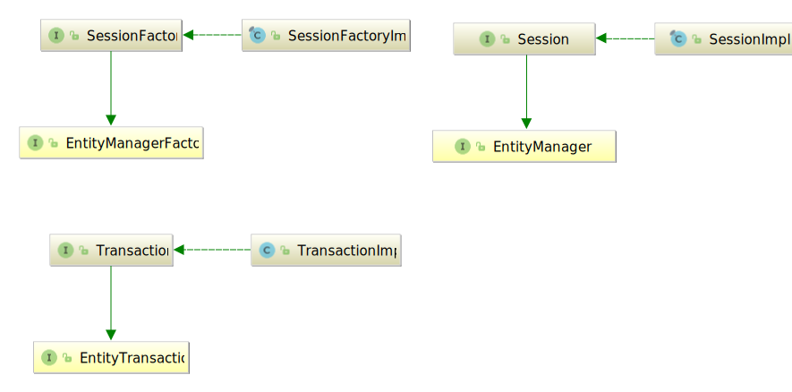
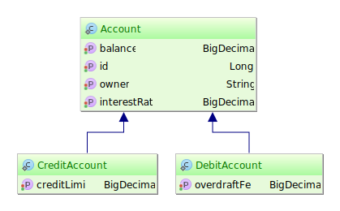
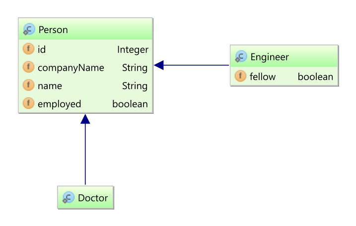
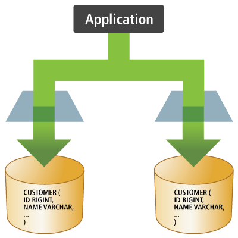
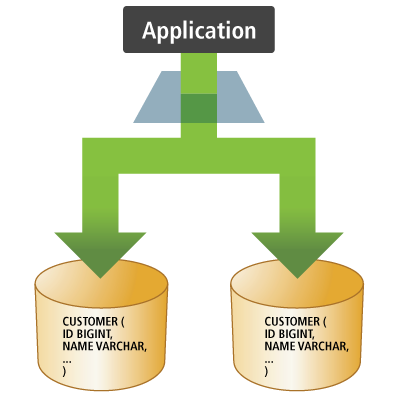
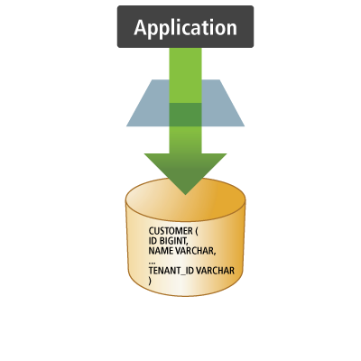

Preface
Working with both Object-Oriented software and Relational Databases can be cumbersome and time-consuming. Development costs are significantly higher due to a paradigm mismatch between how data is represented in objects versus relational databases. Hibernate is an Object/Relational Mapping solution for Java environments. The term Object/Relational Mapping refers to the technique of mapping data from an object model representation to a relational data model representation (and vice versa).
Hibernate not only takes care of the mapping from Java classes to database tables (and from Java data types to SQL data types), but also provides data query and retrieval facilities. It can significantly reduce development time otherwise spent with manual data handling in SQL and JDBC. Hibernates design goal is to relieve the developer from 95% of common data persistence-related programming tasks by eliminating the need for manual, hand-crafted data processing using SQL and JDBC. However, unlike many other persistence solutions, Hibernate does not hide the power of SQL from you and guarantees that your investment in relational technology and knowledge is as valid as always.
Hibernate may not be the best solution for data-centric applications that only use stored-procedures to implement the business logic in the database, it is most useful with object-oriented domain models and business logic in the Java-based middle-tier. However, Hibernate can certainly help you to remove or encapsulate vendor-specific SQL code and will help with the common task of result set translation from a tabular representation to a graph of objects.
Getting Started
While a strong background in SQL is not required to use Hibernate, a basic understanding of its concepts is useful - especially the principles of data modeling. Understanding the basics of transactions and design patterns such as Unit of Work are important as well.
|
New users may want to first look at the tutorial-style Quick Start guide. This User Guide is really more of a reference guide. For a more high-level discussion of the most used features of Hibernate, see the Introduction to Hibernate guide. There is also a series of topical guides providing deep dives into various topics such as logging, compatibility and support, etc. |
Get Involved
-
Use Hibernate and report any bugs or issues you find. See Issue Tracker for details.
-
Try your hand at fixing some bugs or implementing enhancements. Again, see Issue Tracker.
-
Engage with the community using the methods listed in the Community section.
-
Help improve this documentation. Contact us on the developer mailing list or Zulip if you have interest.
-
Spread the word. Let the rest of your organization know about the benefits of Hibernate.
1. Compatibility
1.1. Dependencies
Hibernate 7.0.0.CR1 requires the following dependencies (among others):
Version |
|
|---|---|
Java Runtime |
17 or 21 |
3.2 |
|
JDBC (bundled with the Java Runtime) |
4.2 |
|
Find more information for all versions of Hibernate on our compatibility matrix. The compatibility policy may also be of interest. |
If you get Hibernate from Maven Central, it is recommended to import Hibernate Platform as part of your dependency management to keep all its artifact versions aligned.
- Gradle
dependencies {
implementation platform "org.hibernate.orm:hibernate-platform:7.0.0.CR1"
// use the versions from the platform
implementation "org.hibernate.orm:hibernate-core"
implementation "jakarta.transaction:jakarta.transaction-api"
}- Maven
<dependencyManagement>
<dependencies>
<dependency>
<groupId>org.hibernate.orm</groupId>
<artifactId>hibernate-platform</artifactId>
<version>7.0.0.CR1</version>
<type>pom</type>
<scope>import</scope>
</dependency>
</dependencies>
</dependencyManagement>
<!-- use the versions from the platform -->
<dependencies>
<dependency>
<groupId>org.hibernate.orm</groupId>
<artifactId>hibernate-core</artifactId>
</dependency>
<dependency>
<groupId>jakarta.transaction</groupId>
<artifactId>jakarta.transaction-api</artifactId>
</dependency>
</dependencies>1.2. Database
Hibernate 7.0.0.CR1 is compatible with the following database versions, provided you use the corresponding dialects:
| Dialect | Minimum Database Version |
|---|---|
AzureSQLServerDialect |
11.0 |
CockroachDialect |
23.1 |
DB2Dialect |
10.5 |
DB2iDialect |
7.1 |
DB2zDialect |
12.1 |
GenericDialect |
0.0 |
H2Dialect |
2.1.214 |
HANADialect |
2.0.50 |
HSQLDialect |
2.6.1 |
MariaDBDialect |
10.5 |
MySQLDialect |
8.0 |
OracleDialect |
19.0 |
PostgreSQLDialect |
13.0 |
PostgresPlusDialect |
13.0 |
SQLServerDialect |
11.0 |
SpannerDialect |
0.0 |
SybaseASEDialect |
16.0 |
SybaseDialect |
16.0 |
2. Architecture
2.1. Overview

Hibernate, as an ORM solution, effectively "sits between" the Java application data access layer and the Relational Database, as can be seen in the diagram above. The Java application makes use of the Hibernate APIs to load, store, query, etc. its domain data. Here we will introduce the essential Hibernate APIs. This will be a brief introduction; we will discuss these contracts in detail later.
As a Jakarta Persistence provider, Hibernate implements the Java Persistence API specifications and the association between Jakarta Persistence interfaces and Hibernate specific implementations can be visualized in the following diagram:

- SessionFactory (
org.hibernate.SessionFactory) -
A thread-safe (and immutable) representation of the mapping of the application domain model to a database. Acts as a factory for
org.hibernate.Sessioninstances. TheEntityManagerFactoryis the Jakarta Persistence equivalent of aSessionFactoryand basically, those two converge into the sameSessionFactoryimplementation.A
SessionFactoryis very expensive to create, so, for any given database, the application should have only one associatedSessionFactory. TheSessionFactorymaintains services that Hibernate uses across allSession(s)such as second level caches, connection pools, transaction system integrations, etc. - Session (
org.hibernate.Session) -
A single-threaded, short-lived object conceptually modeling a "Unit of Work" (PoEAA). In Jakarta Persistence nomenclature, the
Sessionis represented by anEntityManager.Behind the scenes, the Hibernate
Sessionwraps a JDBCjava.sql.Connectionand acts as a factory fororg.hibernate.Transactioninstances. It maintains a generally "repeatable read" persistence context (first level cache) of the application domain model. - Transaction (
org.hibernate.Transaction) -
A single-threaded, short-lived object used by the application to demarcate individual physical transaction boundaries.
EntityTransactionis the Jakarta Persistence equivalent and both act as an abstraction API to isolate the application from the underlying transaction system in use (JDBC or JTA).
3. Domain Model
The term domain model comes from the realm of data modeling. It is the model that ultimately describes the problem domain you are working in. Sometimes you will also hear the term persistent classes.
Ultimately the application domain model is the central character in an ORM.
They make up the classes you wish to map. Hibernate works best if these classes follow the Plain Old Java Object (POJO) / JavaBean programming model.
However, none of these rules are hard requirements.
Indeed, Hibernate assumes very little about the nature of your persistent objects. You can express a domain model in other ways (using trees of java.util.Map instances, for example).
Historically applications using Hibernate would have used its proprietary XML mapping file format for this purpose. With the coming of Jakarta Persistence, most of this information is now defined in a way that is portable across ORM/Jakarta Persistence providers using annotations (and/or standardized XML format). This chapter will focus on Jakarta Persistence mapping where possible. For Hibernate mapping features not supported by Jakarta Persistence we will prefer Hibernate extension annotations.
|
This chapter mostly uses "implicit naming" for table names, column names, etc. For details on adjusting these names see Naming strategies. |
3.1. Mapping types
Hibernate understands both the Java and JDBC representations of application data.
The ability to read/write this data from/to the database is the function of a Hibernate type.
A type, in this usage, is an implementation of the org.hibernate.type.Type interface.
This Hibernate type also describes various behavioral aspects of the Java type such as how to check for equality, how to clone values, etc.
|
Usage of the word type
The Hibernate type is neither a Java type nor a SQL data type. It provides information about mapping a Java type to an SQL type as well as how to persist and fetch a given Java type to and from a relational database. When you encounter the term type in discussions of Hibernate, it may refer to the Java type, the JDBC type, or the Hibernate type, depending on the context. |
To help understand the type categorizations, let’s look at a simple table and domain model that we wish to map.
create table Contact (
id integer not null,
first varchar(255),
last varchar(255),
middle varchar(255),
notes varchar(255),
starred boolean not null,
website varchar(255),
primary key (id)
)@Entity(name = "Contact")
public static class Contact {
@Id
private Integer id;
private Name name;
private String notes;
private URL website;
private boolean starred;
//Getters and setters are omitted for brevity
}
@Embeddable
public class Name {
private String firstName;
private String middleName;
private String lastName;
// getters and setters omitted
}In the broadest sense, Hibernate categorizes types into two groups:
3.1.1. Value types
A value type is a piece of data that does not define its own lifecycle. It is, in effect, owned by an entity, which defines its lifecycle.
Looked at another way, all the state of an entity is made up entirely of value types.
These state fields or JavaBean properties are termed persistent attributes.
The persistent attributes of the Contact class are value types.
Value types are further classified into three sub-categories:
- Basic types
-
in mapping the
Contacttable, all attributes except for name would be basic types. Basic types are discussed in detail in Basic types - Embeddable types
-
the
nameattribute is an example of an embeddable type, which is discussed in details in Embeddable types - Collection types
-
although not featured in the aforementioned example, collection types are also a distinct category among value types. Collection types are further discussed in Collections
3.1.2. Entity types
Entities, by nature of their unique identifier, exist independently of other objects whereas values do not.
Entities are domain model classes which correlate to rows in a database table, using a unique identifier.
Because of the requirement for a unique identifier, entities exist independently and define their own lifecycle.
The Contact class itself would be an example of an entity.
Mapping entities is discussed in detail in Entity types.
3.2. Basic values
A basic type is a mapping between a Java type and a single database column.
Hibernate can map many standard Java types (Integer, String, etc.) as basic
types. The mapping for many come from tables B-3 and B-4 in the JDBC specification[jdbc].
Others (URL as VARCHAR, e.g.) simply make sense.
Additionally, Hibernate provides multiple, flexible ways to indicate how the Java type should be mapped to the database.
|
The Jakarta Persistence specification strictly limits the Java types that can be marked as basic to the following:
If provider portability is a concern, you should stick to just these basic types. Java Persistence 2.1 introduced the |
3.2.1. @Basic
Strictly speaking, a basic type is denoted by the jakarta.persistence.Basic annotation.
Generally, the @Basic annotation can be ignored as it is assumed by default. Both of the following
examples are ultimately the same.
@Basic explicit@Entity(name = "Product")
public class Product {
@Id
@Basic
private Integer id;
@Basic
private String sku;
@Basic
private String name;
@Basic
private String description;
}@Basic implied@Entity(name = "Product")
public class Product {
@Id
private Integer id;
private String sku;
private String name;
private String description;
}The @Basic annotation defines 2 attributes.
optional- boolean (defaults to true)-
Defines whether this attribute allows nulls. Jakarta Persistence defines this as "a hint", which means the provider is free to ignore it. Jakarta Persistence also says that it will be ignored if the type is primitive. As long as the type is not primitive, Hibernate will honor this value. Works in conjunction with
@Column#nullable- see @Column. fetch- FetchType (defaults to EAGER)-
Defines whether this attribute should be fetched eagerly or lazily.
EAGERindicates that the value will be fetched as part of loading the owner.LAZYvalues are fetched only when the value is accessed. Jakarta Persistence requires providers to supportEAGER, while support forLAZYis optional meaning that a provider is free to not support it. Hibernate supports lazy loading of basic values as long as you are using its bytecode enhancement support.
3.2.2. @Column
Jakarta Persistence defines rules for implicitly determining the name of tables and columns. For a detailed discussion of implicit naming see Naming strategies.
For basic type attributes, the implicit naming rule is that the column name is the same as the attribute name. If that implicit naming rule does not meet your requirements, you can explicitly tell Hibernate (and other providers) the column name to use.
@Entity(name = "Product")
public class Product {
@Id
private Integer id;
private String sku;
private String name;
@Column(name = "NOTES")
private String description;
}Here we use @Column to explicitly map the description attribute to the NOTES column, as opposed to the
implicit column name description. See Naming strategies for additional details.
The @Column annotation defines other mapping information as well. See its Javadocs for details.
3.2.3. @Formula
@Formula allows mapping any database computed value as a virtual read-only column.
|
@Formula mapping usage@Entity(name = "Account")
public static class Account {
@Id
private Long id;
private Double credit;
private Double rate;
@Formula(value = "credit * rate")
private Double interest;
//Getters and setters omitted for brevity
}When loading the Account entity, Hibernate is going to calculate the interest property using the configured @Formula:
@Formula mappingdoInJPA(this::entityManagerFactory, entityManager -> {
Account account = new Account();
account.setId(1L);
account.setCredit(5000d);
account.setRate(1.25 / 100);
entityManager.persist(account);
});
doInJPA(this::entityManagerFactory, entityManager -> {
Account account = entityManager.find(Account.class, 1L);
assertEquals(Double.valueOf(62.5d), account.getInterest());
});INSERT INTO Account (credit, rate, id)
VALUES (5000.0, 0.0125, 1)
SELECT
a.id as id1_0_0_,
a.credit as credit2_0_0_,
a.rate as rate3_0_0_,
a.credit * a.rate as formula0_0_
FROM
Account a
WHERE
a.id = 1|
The SQL fragment defined by the |
3.2.4. Mapping basic values
To deal with values of basic type, Hibernate needs to understand a few things about the mapping:
-
The capabilities of the Java type. For example:
-
How to compare values
-
How to calculate a hash-code
-
How to coerce values of this type to another type
-
-
The JDBC type it should use
-
How to bind values to JDBC statements
-
How to extract from JDBC results
-
-
Any conversion it should perform on the value to/from the database
-
The mutability of the value - whether the internal state can change like
java.util.Dateor is immutable likejava.lang.String
This section covers how Hibernate determines these pieces and how to influence that determination process.
|
The following sections focus on approaches introduced in version 6 to influence how Hibernate will map basic value to the database. This includes removal of the following deprecated legacy annotations:
See the 6.0 migration guide for discussions about migrating uses of these annotations The new annotations added as part of 6.0 support composing mappings in annotations through "meta-annotations". |
Looking at this example, how does Hibernate know what mapping to use for these attributes? The annotations do not really provide much information.
This is an illustration of Hibernate’s implicit basic-type resolution, which is a series of checks to determine the appropriate mapping to use. Describing the complete process for implicit resolution is beyond the scope of this documentation[2].
This is primarily driven by the Java type defined for the basic type, which can generally be determined through reflection. Is the Java type an enum? Is it temporal? These answers can indicate certain mappings be used.
The fallback is to map the value to the "recommended" JDBC type.
Worst case, if the Java type is Serializable Hibernate will try to handle it via binary serialization.
For cases where the Java type is not a standard type or if some specialized handling is desired, Hibernate provides 2 main approaches to influence this mapping resolution:
-
A compositional approach using a combination of one-or-more annotations to describe specific aspects of the mapping. This approach is covered in Compositional basic mapping.
-
The
UserTypecontract, which is covered in Custom type mapping
These 2 approaches should be considered mutually exclusive. A custom UserType will always take precedence over compositional annotations.
The next few sections look at common, standard Java types and discusses various ways to map them.
See Case Study : BitSet for examples of mapping BitSet as a basic type using all of these approaches.
3.2.5. Enums
Hibernate supports the mapping of Java enums as basic value types in a number of different ways.
@Enumerated
The original Jakarta Persistence-compliant way to map enums was via the @Enumerated or @MapKeyEnumerated
annotations, working on the principle that the enum values are stored according to one of 2 strategies indicated
by jakarta.persistence.EnumType:
ORDINAL-
stored according to the enum value’s ordinal position within the enum class, as indicated by
java.lang.Enum#ordinal STRING-
stored according to the enum value’s name, as indicated by
java.lang.Enum#name
Assuming the following enumeration:
PhoneType enumerationpublic enum PhoneType {
LAND_LINE,
MOBILE;
}In the ORDINAL example, the phone_type column is defined as a (nullable) INTEGER type and would hold:
NULL-
For null values
0-
For the
LAND_LINEenum 1-
For the
MOBILEenum
@Enumerated(ORDINAL) example@Entity(name = "Phone")
public static class Phone {
@Id
private Long id;
@Column(name = "phone_number")
private String number;
@Enumerated(EnumType.ORDINAL)
@Column(name = "phone_type")
private PhoneType type;
//Getters and setters are omitted for brevity
}When persisting this entity, Hibernate generates the following SQL statement:
@Enumerated(ORDINAL) mappingPhone phone = new Phone();
phone.setId(1L);
phone.setNumber("123-456-78990");
phone.setType(PhoneType.MOBILE);
entityManager.persist(phone);INSERT INTO Phone (phone_number, phone_type, id)
VALUES ('123-456-78990', 1, 1)In the STRING example, the phone_type column is defined as a (nullable) VARCHAR type and would hold:
NULL-
For null values
LAND_LINE-
For the
LAND_LINEenum MOBILE-
For the
MOBILEenum
@Enumerated(STRING) example@Entity(name = "Phone")
public static class Phone {
@Id
private Long id;
@Column(name = "phone_number")
private String number;
@Enumerated(EnumType.STRING)
@Column(name = "phone_type")
private PhoneType type;
//Getters and setters are omitted for brevity
}Persisting the same entity as in the @Enumerated(ORDINAL) example, Hibernate generates the following SQL statement:
@Enumerated(STRING) mappingINSERT INTO Phone (phone_number, phone_type, id)
VALUES ('123-456-78990', 'MOBILE', 1)Using AttributeConverter
Let’s consider the following Gender enum which stores its values using the 'M' and 'F' codes.
public enum Gender {
MALE('M'),
FEMALE('F');
private final char code;
Gender(char code) {
this.code = code;
}
public static Gender fromCode(char code) {
if (code == 'M' || code == 'm') {
return MALE;
}
if (code == 'F' || code == 'f') {
return FEMALE;
}
throw new UnsupportedOperationException(
"The code " + code + " is not supported!"
);
}
public char getCode() {
return code;
}
}You can map enums in a Jakarta Persistence compliant way using a Jakarta Persistence AttributeConverter.
AttributeConverter example@Entity(name = "Person")
public static class Person {
@Id
private Long id;
private String name;
@Convert(converter = GenderConverter.class)
public Gender gender;
//Getters and setters are omitted for brevity
}
@Converter
public static class GenderConverter
implements AttributeConverter<Gender, Character> {
public Character convertToDatabaseColumn(Gender value) {
if (value == null) {
return null;
}
return value.getCode();
}
public Gender convertToEntityAttribute(Character value) {
if (value == null) {
return null;
}
return Gender.fromCode(value);
}
}Here, the gender column is defined as a CHAR type and would hold:
NULL-
For null values
'M'-
For the
MALEenum 'F'-
For the
FEMALEenum
For additional details on using AttributeConverters, see AttributeConverters section.
|
Jakarta Persistence explicitly disallows the use of an So, when using the |
Custom type
You can also map enums using a Hibernate custom type mapping.
Let’s again revisit the Gender enum example, this time using a custom Type to store the more standardized 'M' and 'F' codes.
@Entity(name = "Person")
public static class Person {
@Id
private Long id;
private String name;
@Type(GenderType.class)
@Column(length = 6)
public Gender gender;
//Getters and setters are omitted for brevity
}
public class GenderType extends UserTypeSupport<Gender> {
public GenderType() {
super(Gender.class, Types.CHAR);
}
}
public class GenderJavaType extends AbstractClassJavaType<Gender> {
public static final GenderJavaType INSTANCE =
new GenderJavaType();
protected GenderJavaType() {
super(Gender.class);
}
public String toString(Gender value) {
return value == null ? null : value.name();
}
public Gender fromString(CharSequence string) {
return string == null ? null : Gender.valueOf(string.toString());
}
public <X> X unwrap(Gender value, Class<X> type, WrapperOptions options) {
return CharacterJavaType.INSTANCE.unwrap(
value == null ? null : value.getCode(),
type,
options
);
}
public <X> Gender wrap(X value, WrapperOptions options) {
return Gender.fromCode(
CharacterJavaType.INSTANCE.wrap( value, options)
);
}
}Again, the gender column is defined as a CHAR type and would hold:
NULL-
For null values
'M'-
For the
MALEenum 'F'-
For the
FEMALEenum
For additional details on using custom types, see Custom type mapping section.
3.2.6. Boolean
By default, Boolean attributes map to BOOLEAN columns, at least when the database has a
dedicated BOOLEAN type. On databases which don’t, Hibernate uses whatever else is available:
BIT, TINYINT, or SMALLINT.
// this will be mapped to BIT or BOOLEAN on the database
@Basic
boolean implicit;However, it is quite common to find boolean values encoded as a character or as an integer.
Such cases are exactly the intention of AttributeConverter. For convenience, Hibernate
provides 3 built-in converters for the common boolean mapping cases:
-
YesNoConverterencodes a boolean value as'Y'or'N', -
TrueFalseConverterencodes a boolean value as'T'or'F', and -
NumericBooleanConverterencodes the value as an integer,1for true, and0for false.
AttributeConverter// this will get mapped to CHAR or NCHAR with a conversion
@Basic
@Convert(converter = org.hibernate.type.YesNoConverter.class)
boolean convertedYesNo;
// this will get mapped to CHAR or NCHAR with a conversion
@Basic
@Convert(converter = org.hibernate.type.TrueFalseConverter.class)
boolean convertedTrueFalse;
// this will get mapped to TINYINT with a conversion
@Basic
@Convert(converter = org.hibernate.type.NumericBooleanConverter.class)
boolean convertedNumeric;If the boolean value is defined in the database as something other than BOOLEAN, character or integer,
the value can also be mapped using a custom AttributeConverter - see AttributeConverters.
A UserType may also be used - see Custom type mapping
3.2.7. Byte
By default, Hibernate maps values of Byte / byte to the TINYINT JDBC type.
// these will both be mapped using TINYINT
Byte wrapper;
byte primitive;See Byte array for mapping arrays of bytes.
3.2.8. Short
By default, Hibernate maps values of Short / short to the SMALLINT JDBC type.
// these will both be mapped using SMALLINT
Short wrapper;
short primitive;3.2.9. Integer
By default, Hibernate maps values of Integer / int to the INTEGER JDBC type.
// these will both be mapped using INTEGER
Integer wrapper;
int primitive;3.2.10. Long
By default, Hibernate maps values of Long / long to the BIGINT JDBC type.
// these will both be mapped using BIGINT
Long wrapper;
long primitive;3.2.11. BigInteger
By default, Hibernate maps values of BigInteger to the NUMERIC JDBC type.
// will be mapped using NUMERIC
BigInteger wrapper;3.2.12. Double
By default, Hibernate maps values of Double to the DOUBLE, FLOAT, REAL or
NUMERIC JDBC type depending on the capabilities of the database
// these will be mapped using DOUBLE, FLOAT, REAL or NUMERIC
// depending on the capabilities of the database
Double wrapper;
double primitive;A specific type can be influenced using any of the JDBC type influencers covered in JdbcType section.
If @JdbcTypeCode is used, the Dialect is still consulted to make sure the database
supports the requested type. If not, an appropriate type is selected
3.2.13. Float
By default, Hibernate maps values of Float to the FLOAT, REAL or
NUMERIC JDBC type depending on the capabilities of the database.
// these will be mapped using FLOAT, REAL or NUMERIC
// depending on the capabilities of the database
Float wrapper;
float primitive;A specific type can be influenced using any of the JDBC type influencers covered in Mapping basic values section.
If @JdbcTypeCode is used, the Dialect is still consulted to make sure the database
supports the requested type. If not, an appropriate type is selected
3.2.14. BigDecimal
By default, Hibernate maps values of BigDecimal to the NUMERIC JDBC type.
// will be mapped using NUMERIC
BigDecimal wrapper;3.2.15. Character
By default, Hibernate maps Character to the CHAR JDBC type.
// these will be mapped using CHAR
Character wrapper;
char primitive;3.2.16. String
By default, Hibernate maps String to the VARCHAR JDBC type.
// will be mapped using VARCHAR
String string;
// will be mapped using CLOB
@Lob
String clobString;Optionally, you may specify the maximum length of the string using @Column(length=…),
or using the @Size annotation from Hibernate Validator.
For very large strings, you can use one of the constant values defined by the class
org.hibernate.Length, for example:
@Column(length=Length.LONG)
private String text;Alternatively, you may explicitly specify the JDBC type LONGVARCHAR, which is treated
as a VARCHAR mapping with default length=Length.LONG when no length is explicitly
specified:
@JdbcTypeCode(Types.LONGVARCHAR)
private String text;If you use Hibernate for schema generation, Hibernate will generate DDL with a column type that is large enough to accommodate the maximum length you’ve specified.
|
If the maximum length you specify is too long to fit in the largest |
See Handling LOB data for details on mapping to a database CLOB.
For databases which support nationalized character sets, you can also store strings as nationalized data.
// will be mapped using NVARCHAR
@Nationalized
String nstring;
// will be mapped using NCLOB
@Lob
@Nationalized
String nclobString;See Handling nationalized character data for details on mapping strings using nationalized character sets.
3.2.17. Character arrays
By default, Hibernate maps char[] to the VARCHAR JDBC type.
Since Character[] can contain null elements, it is mapped as basic array type instead.
Prior to Hibernate 6.2, also Character[] mapped to VARCHAR, yet disallowed null elements.
To continue mapping Character[] to the VARCHAR JDBC type, or for LOBs mapping to the CLOB JDBC type,
it is necessary to annotate the persistent attribute with @JavaType( CharacterArrayJavaType.class ).
// mapped as VARCHAR
char[] primitive;
Character[] wrapper;
@JavaType( CharacterArrayJavaType.class )
Character[] wrapperOld;
// mapped as CLOB
@Lob
char[] primitiveClob;
@Lob
Character[] wrapperClob;See Handling LOB data for details on mapping as database LOB.
For databases which support nationalized character sets, you can also store character arrays as nationalized data.
// mapped as NVARCHAR
@Nationalized
char[] primitiveNVarchar;
@Nationalized
Character[] wrapperNVarchar;
@Nationalized
@JavaType( CharacterArrayJavaType.class )
Character[] wrapperNVarcharOld;
// mapped as NCLOB
@Lob
@Nationalized
char[] primitiveNClob;
@Lob
@Nationalized
Character[] wrapperNClob;See Handling nationalized character data for details on mapping strings using nationalized character sets.
3.2.18. Clob / NClob
|
Be sure to check out Handling LOB data which covers basics of LOB handling and Handling nationalized character data which covers basics of nationalized data handling. |
By default, Hibernate will map the java.sql.Clob Java type to CLOB and java.sql.NClob to NCLOB.
Considering we have the following database table:
CREATE TABLE Product (
id INTEGER NOT NULL,
name VARCHAR(255),
warranty CLOB,
PRIMARY KEY (id)
)Let’s first map this using the @Lob Jakarta Persistence annotation and the java.sql.Clob type:
CLOB mapped to java.sql.Clob@Entity(name = "Product")
public static class Product {
@Id
private Integer id;
private String name;
@Lob
private Clob warranty;
//Getters and setters are omitted for brevity
}To persist such an entity, you have to create a Clob using the ClobProxy Hibernate utility:
java.sql.Clob entityString warranty = "My product warranty";
final Product product = new Product();
product.setId(1);
product.setName("Mobile phone");
product.setWarranty(ClobProxy.generateProxy(warranty));
entityManager.persist(product);To retrieve the Clob content, you need to transform the underlying java.io.Reader:
java.sql.Clob entityProduct product = entityManager.find(Product.class, productId);
try (Reader reader = product.getWarranty().getCharacterStream()) {
assertEquals("My product warranty", toString(reader));
}We could also map the CLOB in a materialized form. This way, we can either use a String or a char[].
CLOB mapped to String@Entity(name = "Product")
public static class Product {
@Id
private Integer id;
private String name;
@Lob
private String warranty;
//Getters and setters are omitted for brevity
}We might even want the materialized data as a char array.
char[] mapping@Entity(name = "Product")
public static class Product {
@Id
private Integer id;
private String name;
@Lob
private char[] warranty;
//Getters and setters are omitted for brevity
}Just like with CLOB, Hibernate can also deal with NCLOB SQL data types:
NCLOB - SQLCREATE TABLE Product (
id INTEGER NOT NULL ,
name VARCHAR(255) ,
warranty nclob ,
PRIMARY KEY ( id )
)Hibernate can map the NCLOB to a java.sql.NClob
NCLOB mapped to java.sql.NClob@Entity(name = "Product")
public static class Product {
@Id
private Integer id;
private String name;
@Lob
@Nationalized
// Clob also works, because NClob extends Clob.
// The database type is still NCLOB either way and handled as such.
private NClob warranty;
//Getters and setters are omitted for brevity
}To persist such an entity, you have to create an NClob using the NClobProxy Hibernate utility:
java.sql.NClob entityString warranty = "My product warranty ";
final Product product = new Product();
product.setId(1);
product.setName("Mobile phone");
product.setWarranty(NClobProxy.generateProxy(warranty));
entityManager.persist(product);To retrieve the NClob content, you need to transform the underlying java.io.Reader:
java.sql.NClob entityProduct product = entityManager.find(Product.class, 1);
NClob warranty = product.getWarranty();
assertEquals("My product warranty ", warranty.getSubString( 1, (int) warranty.length() ) );We could also map the NCLOB in a materialized form. This way, we can either use a String or a char[].
NCLOB mapped to String@Entity(name = "Product")
public static class Product {
@Id
private Integer id;
private String name;
@Lob
@Nationalized
private String warranty;
//Getters and setters are omitted for brevity
}We might even want the materialized data as a char array.
char[] mapping@Entity(name = "Product")
public static class Product {
@Id
private Integer id;
private String name;
@Lob
@Nationalized
private char[] warranty;
//Getters and setters are omitted for brevity
}3.2.19. Byte array
By default, Hibernate maps byte[] to the VARBINARY JDBC type.
Since Byte[] can contain null elements, it is mapped as basic array type instead.
Prior to Hibernate 6.2, also Byte[] mapped to VARBINARY, yet disallowed null elements.
To continue mapping Byte[] to the VARBINARY JDBC type, or for LOBs mapping to the BLOB JDBC type,
it is necessary to annotate the persistent attribute with @JavaType( ByteArrayJavaType.class ).
// mapped as VARBINARY
private byte[] primitive;
private Byte[] wrapper;
@JavaType( ByteArrayJavaType.class )
private Byte[] wrapperOld;
// mapped as (materialized) BLOB
@Lob
private byte[] primitiveLob;
@Lob
private Byte[] wrapperLob;Just like with strings, you may specify the maximum length using @Column(length=…)
or the @Size annotation from Hibernate Validator.
For very large arrays, you can use the constants defined by org.hibernate.Length.
Alternatively @JdbcTypeCode(Types.LONGVARBINARY) is treated as a VARBINARY mapping
with default length=Length.LONG when no length is explicitly specified.
If you use Hibernate for schema generation, Hibernate will generate DDL with a column type that is large enough to accommodate the maximum length you’ve specified.
|
If the maximum length you specify is too long to fit in the largest |
See Handling LOB data for details on mapping to a database BLOB.
3.2.20. Blob
|
Be sure to check out Handling LOB data which covers basics of LOB handling. |
By default, Hibernate will map the java.sql.Blob Java type to BLOB.
Considering we have the following database table:
CREATE TABLE Product (
id INTEGER NOT NULL ,
image blob ,
name VARCHAR(255) ,
PRIMARY KEY ( id )
)Let’s first map this using the JDBC java.sql.Blob type.
BLOB mapped to java.sql.Blob@Entity(name = "Product")
public static class Product {
@Id
private Integer id;
private String name;
@Lob
private Blob image;
//Getters and setters are omitted for brevity
}To persist such an entity, you have to create a Blob using the BlobProxy Hibernate utility:
java.sql.Blob entitybyte[] image = new byte[] {1, 2, 3};
final Product product = new Product();
product.setId(1);
product.setName("Mobile phone");
product.setImage(BlobProxy.generateProxy(image));
entityManager.persist(product);To retrieve the Blob content, you need to transform the underlying java.io.InputStream:
java.sql.Blob entityProduct product = entityManager.find(Product.class, productId);
try (InputStream inputStream = product.getImage().getBinaryStream()) {
assertArrayEquals(new byte[] {1, 2, 3}, toBytes(inputStream));
}We could also map the BLOB in a materialized form (e.g. byte[]).
BLOB mapped to byte[]@Entity(name = "Product")
public static class Product {
@Id
private Integer id;
private String name;
@Lob
private byte[] image;
//Getters and setters are omitted for brevity
}3.2.21. Duration
By default, Hibernate maps Duration to the NUMERIC SQL type.
It’s possible to map Duration to the INTERVAL_SECOND SQL type using @JdbcTypeCode(INTERVAL_SECOND) or by setting hibernate.type.preferred_duration_jdbc_type=INTERVAL_SECOND
|
private Duration duration;3.2.22. Instant
Instant is mapped to the TIMESTAMP_UTC SQL type.
// mapped as TIMESTAMP
private Instant instant;See Handling temporal data for basics of temporal mapping
3.2.23. LocalDate
LocalDate is mapped to the DATE JDBC type.
// mapped as DATE
private LocalDate localDate;See Handling temporal data for basics of temporal mapping
3.2.24. LocalDateTime
LocalDateTime is mapped to the TIMESTAMP JDBC type.
// mapped as TIMESTAMP
private LocalDateTime localDateTime;See Handling temporal data for basics of temporal mapping
3.2.25. LocalTime
LocalTime is mapped to the TIME JDBC type.
// mapped as TIME
private LocalTime localTime;See Handling temporal data for basics of temporal mapping
3.2.26. OffsetDateTime
OffsetDateTime is mapped to the TIMESTAMP or TIMESTAMP_WITH_TIMEZONE JDBC type
depending on the database.
// mapped as TIMESTAMP or TIMESTAMP_WITH_TIMEZONE
private OffsetDateTime offsetDateTime;See Handling temporal data for basics of temporal mapping See Using a specific time zone for basics of time-zone handling
3.2.27. OffsetTime
OffsetTime is mapped to the TIME or TIME_WITH_TIMEZONE JDBC type
depending on the database.
// mapped as TIME or TIME_WITH_TIMEZONE
private OffsetTime offsetTime;See Handling temporal data for basics of temporal mapping See Using a specific time zone for basics of time-zone handling
3.2.28. TimeZone
TimeZone is mapped to VARCHAR JDBC type.
// mapped as VARCHAR
private TimeZone timeZone;3.2.29. ZonedDateTime
ZonedDateTime is mapped to the TIMESTAMP or TIMESTAMP_WITH_TIMEZONE JDBC type
depending on the database.
// mapped as TIMESTAMP or TIMESTAMP_WITH_TIMEZONE
private ZonedDateTime zonedDateTime;See Handling temporal data for basics of temporal mapping See Using a specific time zone for basics of time-zone handling
3.2.30. ZoneOffset
ZoneOffset is mapped to VARCHAR JDBC type.
// mapped as VARCHAR
private ZoneOffset zoneOffset;3.2.31. Calendar
See Handling temporal data for basics of temporal mapping See Using a specific time zone for basics of time-zone handling
3.2.32. Date
See Handling temporal data for basics of temporal mapping See Using a specific time zone for basics of time-zone handling
3.2.33. Time
See Handling temporal data for basics of temporal mapping See Using a specific time zone for basics of time-zone handling
3.2.34. Timestamp
See Handling temporal data for basics of temporal mapping See Using a specific time zone for basics of time-zone handling
3.2.35. Class
Hibernate maps Class references to VARCHAR JDBC type
// mapped as VARCHAR
private Class<?> clazz;3.2.36. Currency
Hibernate maps Currency references to VARCHAR JDBC type
// mapped as VARCHAR
private Currency currency;3.2.37. Locale
Hibernate maps Locale references to VARCHAR JDBC type
// mapped as VARCHAR
private Locale locale;3.2.38. UUID
Hibernate allows mapping UUID values in a number of ways. By default, Hibernate will
store UUID values in the native form by using the SQL type UUID or in binary form with the BINARY JDBC type
if the database does not have a native UUID type.
|
The default uses the binary representation because it uses a more efficient column storage. However, many applications prefer the readability of the character-based column storage. To switch the default mapping, set the |
UUID as binary
As mentioned, the default mapping for UUID attributes.
Maps the UUID to a byte[] using java.util.UUID#getMostSignificantBits and java.util.UUID#getLeastSignificantBits and stores that as BINARY data.
Chosen as the default simply because it is generally more efficient from a storage perspective.
UUID as (var)char
Maps the UUID to a String using java.util.UUID#toString and java.util.UUID#fromString and stores that as CHAR or VARCHAR data.
UUID as identifier
Hibernate supports using UUID values as identifiers, and they can even be generated on the user’s behalf. For details, see the discussion of generators in Identifiers.
3.2.39. InetAddress
By default, Hibernate will map InetAddress to the INET SQL type and fallback to BINARY if necessary.
private InetAddress address;3.2.40. JSON mapping
Hibernate will only use the JSON type if explicitly configured through @JdbcTypeCode( SqlTypes.JSON ).
The JSON library used for serialization/deserialization is detected automatically,
but can be overridden by setting hibernate.type.json_format_mapper
as can be read in the Configurations section.
@JdbcTypeCode( SqlTypes.JSON )
private Map<String, String> stringMap;3.2.41. XML mapping
Hibernate will only use the XML type if explicitly configured through @JdbcTypeCode( SqlTypes.SQLXML ).
The XML library used for serialization/deserialization is detected automatically,
but can be overridden by setting hibernate.type.xml_format_mapper
as can be read in the Configurations section.
@JdbcTypeCode( SqlTypes.SQLXML )
private Map<String, StringNode> stringMap;3.2.42. Basic array mapping
Basic arrays, other than byte[]/Byte[] and char[]/Character[], map to the type code SqlTypes.ARRAY by default,
which maps to the SQL standard array type if possible,
as determined via the new methods getArrayTypeName and supportsStandardArrays of org.hibernate.dialect.Dialect.
If SQL standard array types are not available, data will be modeled as SqlTypes.JSON, SqlTypes.XML or SqlTypes.VARBINARY,
depending on the database support as determined via the new method org.hibernate.dialect.Dialect.getPreferredSqlTypeCodeForArray.
Short[] wrapper;
short[] primitive;3.2.43. Basic collection mapping
Basic collections (only subtypes of Collection), which are not annotated with @ElementCollection,
map to the type code SqlTypes.ARRAY by default, which maps to the SQL standard array type if possible,
as determined via the new methods getArrayTypeName and supportsStandardArrays of org.hibernate.dialect.Dialect.
If SQL standard array types are not available, data will be modeled as SqlTypes.JSON, SqlTypes.XML or SqlTypes.VARBINARY,
depending on the database support as determined via the new method org.hibernate.dialect.Dialect.getPreferredSqlTypeCodeForArray.
List<Short> list;
SortedSet<Short> sortedSet;3.2.44. Compositional basic mapping
The compositional approach allows defining how the mapping should work in terms of influencing individual parts that make up a basic-value mapping. This section will look at these individual parts and the specifics of influencing each.
JavaType
Hibernate needs to understand certain aspects of the Java type to handle values properly and efficiently.
Hibernate understands these capabilities through its org.hibernate.type.descriptor.java.JavaType contract.
Hibernate provides built-in support for many JDK types (Integer, String, e.g.), but also supports the ability
for the application to change the handling for any of the standard JavaType registrations as well as
add in handling for non-standard types. Hibernate provides multiple ways for the application to influence
the JavaType descriptor to use.
The resolution can be influenced locally using the @JavaType annotation on a particular mapping. The
indicated descriptor will be used just for that mapping. There are also forms of @JavaType for influencing
the keys of a Map (@MapKeyJavaType), the index of a List or array (@ListIndexJavaType), the identifier
of an ID-BAG mapping (@CollectionIdJavaType) as well as the discriminator (@AnyDiscriminator) and
key (@AnyKeyJavaClass, @AnyKeyJavaType) of an ANY mapping.
The resolution can also be influenced globally by registering the appropriate JavaType descriptor with the
JavaTypeRegistry. This approach is able to both "override" the handling for certain Java types or
to register new types. See Registries for discussion of JavaTypeRegistry.
See Resolving the composition for a discussion of the process used to resolve the mapping composition.
JdbcType
Hibernate also needs to understand aspects of the JDBC type it should use (how it should bind values,
how it should extract values, etc.) which is the role of its org.hibernate.type.descriptor.jdbc.JdbcType
contract. Hibernate provides multiple ways for the application to influence the JdbcType descriptor to use.
Locally, the resolution can be influenced using either the @JdbcType or @JdbcTypeCode annotations. There
are also annotations for influencing the JdbcType in relation to Map keys (@MapKeyJdbcType, @MapKeyJdbcTypeCode),
the index of a List or array (@ListIndexJdbcType, @ListIndexJdbcTypeCode), the identifier of an ID-BAG mapping
(@CollectionIdJdbcType, @CollectionIdJdbcTypeCode) as well as the key of an ANY mapping (@AnyKeyJdbcType,
@AnyKeyJdbcTypeCode). The @JdbcType specifies a specific JdbcType implementation to use while @JdbcTypeCode
specifies a "code" that is then resolved against the JdbcTypeRegistry.
|
The "type code" relative to a |
Customizing the JdbcTypeRegistry can be accomplished through @JdbcTypeRegistration and
TypeContributor. See Registries for discussion of JavaTypeRegistry.
See TypeContributor for discussion of TypeContributor.
See the @JdbcTypeCode Javadoc for details.
See Resolving the composition for a discussion of the process used to resolve the mapping composition.
MutabilityPlan
MutabilityPlan is the means by which Hibernate understands how to deal with the domain value in terms
of its internal mutability as well as related concerns such as making copies. While it seems like a minor
concern, it can have a major impact on performance. See AttributeConverter Mutability Plan for one case where
this can manifest. See also Case Study : BitSet for another discussion.
The MutabilityPlan for a mapping can be influenced by any of the following annotations:
-
@Mutability -
@Immutable -
@MapKeyMutability -
@CollectionIdMutability
Hibernate checks the following places for @Mutability and @Immutable, in order of precedence:
-
Local to the mapping
-
On the associated
AttributeConverterimplementation class (if one) -
On the value’s Java type
In most cases, the fallback defined by JavaType#getMutabilityPlan is the proper strategy.
Hibernate uses MutabilityPlan to:
-
Check whether a value is considered dirty
-
Make deep copies
-
Marshal values to and from the second-level cache
Generally speaking, immutable values perform better in all of these cases
-
To check for dirtiness, Hibernate just needs to check object identity (
==) as opposed to equality (Object#equals). -
The same value instance can be used as the deep copy of itself.
-
The same value can be used from the second-level cache as well as the value we put into the second-level cache.
If a particular Java type is considered mutable (a Date e.g.), @Immutable or a immutable-specific
MutabilityPlan implementation can be specified to have Hibernate treat the value as immutable. This
also acts as a contract from the application that the internal state of these objects is not changed
by the application. Specifying that a mutable type is immutable and then changing the internal state
will lead to problems; so only do this if the application unequivocally does not change the internal
state.
See Resolving the composition for a discussion of the process used to resolve the mapping composition.
BasicValueConverter
BasicValueConverter is roughly analogous to AttributeConverter in that it describes a conversion to
happen when reading or writing values of a basic-valued model part. In fact, internally Hibernate wraps
an applied AttributeConverter in a BasicValueConverter. It also applies implicit BasicValueConverter
converters in certain cases such as enum handling, etc.
Hibernate does not provide an explicit facility to influence these conversions beyond AttributeConverter.
See AttributeConverters.
See Resolving the composition for a discussion of the process used to resolve the mapping composition.
Resolving the composition
Using this composition approach, Hibernate will need to resolve certain parts of this mapping. Often this involves "filling in the blanks" as it will be configured for just parts of the mapping. This section outlines how this resolution happens.
|
This is a complicated process and is only covered at a high level for the most common cases here. For the full specifics, consult the source code for |
First, we look for a custom type. If found, this takes predence. See Custom type mapping for details
If an AttributeConverter is applied, we use it as the basis for the resolution
-
If
@JavaTypeis also used, that specificJavaTypeis used for the converter’s "domain type". Otherwise, the Java type defined by the converter as its "domain type" is resolved against theJavaTypeRegistry -
If
@JdbcTypeor@JdbcTypeCodeis used, the indicatedJdbcTypeis used and the converted "relational Java type" is determined byJdbcType#getJdbcRecommendedJavaTypeMapping. Otherwise, the Java type defined by the converter as its relational type is used and theJdbcTypeis determined byJdbcType#getRecommendedJdbcType -
The
MutabilityPlancan be specified using@Mutabilityor@Immutableon theAttributeConverterimplementation, the basic value mapping or the Java type used as the domain-type. Otherwise,JdbcType#getJdbcRecommendedJavaTypeMappingfor the conversion’s domain-type is used to determine the mutability-plan.
Next we try to resolve the JavaType to use for the mapping. We check for an explicit @JavaType and use the specified
JavaType if found. Next any "implicit" indication is checked; for example, the index for a List has the implicit Java type
of Integer. Next, we use reflection if possible. If we are unable to determine the JavaType to use through the preceeding
steps, we try to resolve an explicitly specified JdbcType to use and, if found, use its
JdbcType#getJdbcRecommendedJavaTypeMapping as the mapping’s JavaType. If we are not able to determine the
JavaType by this point, an error is thrown.
The JavaType resolved earlier is then inspected for a number of special cases.
-
For enum values, we check for an explicit
@Enumeratedand create an enumeration mapping. Note that this resolution still uses any explicitJdbcTypeindicators -
For temporal values, we check for
@Temporaland create an enumeration mapping. Note that this resolution still uses any explicitJdbcTypeindicators; this includes@JdbcTypeand@JdbcTypeCode, as well as@TimeZoneStorageand@TimeZoneColumnif appropriate.
The fallback at this point is to use the JavaType and JdbcType determined in earlier steps to create a
JDBC-mapping (which encapsulates the JavaType and JdbcType) and combines it with the resolved MutabilityPlan
When using the compositional approach, there are other ways to influence the resolution as covered in Enums, Handling temporal data, Handling LOB data and Handling nationalized character data
See TypeContributor for an alternative to @JavaTypeRegistration and @JdbcTypeRegistration.
3.2.45. Custom type mapping
Another approach is to supply the implementation of the org.hibernate.usertype.UserType contract using @Type.
There are also corresponding, specialized forms of @Type for specific model parts:
-
When mapping a Map,
@Typedescribes the Map value while@MapKeyTypedescribe the Map key -
When mapping an id-bag,
@Typedescribes the elements while@CollectionIdTypedescribes the collection-id -
For other collection mappings,
@Typedescribes the elements -
For discriminated association mappings (
@Anyand@ManyToAny),@Typedescribes the discriminator value
@Type allows for more complex mapping concerns; but, AttributeConverter and
Compositional basic mapping should generally be preferred as simpler solutions
3.2.46. Handling nationalized character data
How nationalized character data is handled and stored depends on the underlying database.
Most databases support storing nationalized character data through the standardized SQL NCHAR, NVARCHAR, LONGNVARCHAR and NCLOB variants.
Others support storing nationalized data as part of CHAR, VARCHAR, LONGVARCHAR and CLOB. Generally these databases do not support NCHAR, NVARCHAR, LONGNVARCHAR and NCLOB, even as aliased types.
Ultimately Hibernate understands this through Dialect#getNationalizationSupport()
To ensure nationalized character data gets stored and accessed correctly, @Nationalized
can be used locally or hibernate.use_nationalized_character_data can be set globally.
|
|
|
For databases with no See also Handling LOB data regarding similar limitation for databases which do not support
explicit |
Considering we have the following database table:
NVARCHAR - SQLCREATE TABLE Product (
id INTEGER NOT NULL ,
name VARCHAR(255) ,
warranty NVARCHAR(255) ,
PRIMARY KEY ( id )
)To map a specific attribute to a nationalized variant data type, Hibernate defines the @Nationalized annotation.
NVARCHAR mapping@Entity(name = "Product")
public static class Product {
@Id
private Integer id;
private String name;
@Nationalized
private String warranty;
//Getters and setters are omitted for brevity
}3.2.47. Handling LOB data
The @Lob annotation specifies that character or binary data should be written to the database
using the special JDBC APIs for handling database LOB (Large OBject) types.
|
How JDBC deals with Some database drivers (i.e. PostgreSQL) are especially problematic and in such cases you might have to do some extra work to get LOBs functioning. But that’s beyond the scope of this guide. |
|
For databases with no |
There’s two ways a LOB may be represented in the Java domain model:
-
using a special JDBC-defined LOB locator type, or
-
using a regular "materialized" type like
String,char[], orbyte[].
LOB Locator
The JDBC LOB locator types are:
-
java.sql.Blob -
java.sql.Clob -
java.sql.NClob
These types represent references to off-table LOB data. In principle, they allow JDBC drivers to support more efficient access to the LOB data. Some drivers stream parts of the LOB data as needed, potentially consuming less memory.
However, java.sql.Blob and java.sql.Clob can be unnatural to deal with and suffer
certain limitations.
For example, it’s not portable to access a LOB locator after the end of the transaction
in which it was obtained.
Materialized LOB
Alternatively, Hibernate lets you access LOB data via the familiar Java types String,
char[], and byte[]. But of course this requires materializing the entire contents
of the LOB in memory when the object is first retrieved. Whether this performance cost
is acceptable depends on many factors, including the vagaries of the JDBC driver.
|
You don’t need to use a |
3.2.48. Handling temporal data
Hibernate supports mapping temporal values in numerous ways, though ultimately these strategies boil down to the 3 main Date/Time types defined by the SQL specification:
- DATE
-
Represents a calendar date by storing years, months and days.
- TIME
-
Represents the time of a day by storing hours, minutes and seconds.
- TIMESTAMP
-
Represents both a DATE and a TIME plus nanoseconds.
- TIMESTAMP WITH TIME ZONE
-
Represents both a DATE and a TIME plus nanoseconds and zone id or offset.
The mapping of java.time temporal types to the specific SQL Date/Time types is implied as follows:
- DATE
-
java.time.LocalDate - TIME
-
java.time.LocalTime,java.time.OffsetTime - TIMESTAMP
-
java.time.Instant,java.time.LocalDateTime,java.time.OffsetDateTimeandjava.time.ZonedDateTime - TIMESTAMP WITH TIME ZONE
-
java.time.OffsetDateTime,java.time.ZonedDateTime
Although Hibernate recommends the use of the java.time package for representing temporal values,
it does support using java.sql.Date, java.sql.Time, java.sql.Timestamp, java.util.Date and
java.util.Calendar.
The mappings for java.sql.Date, java.sql.Time, java.sql.Timestamp are implicit:
- DATE
-
java.sql.Date - TIME
-
java.sql.Time - TIMESTAMP
-
java.sql.Timestamp
|
Applying |
When using java.util.Date or java.util.Calendar, Hibernate assumes TIMESTAMP. To alter that,
use @Temporal.
// mapped as TIMESTAMP by default
Date dateAsTimestamp;
// explicitly mapped as DATE
@Temporal(TemporalType.DATE)
Date dateAsDate;
// explicitly mapped as TIME
@Temporal(TemporalType.TIME)
Date dateAsTime;Using a specific time zone
By default, Hibernate is going to use the PreparedStatement.setTimestamp(int parameterIndex, java.sql.Timestamp) or
PreparedStatement.setTime(int parameterIndex, java.sql.Time x) when saving a java.sql.Timestamp or a java.sql.Time property.
When the time zone is not specified, the JDBC driver is going to use the underlying JVM default time zone, which might not be suitable if the application is used from all across the globe. For this reason, it is very common to use a single reference time zone (e.g. UTC) whenever saving/loading data from the database.
One alternative would be to configure all JVMs to use the reference time zone:
- Declaratively
-
java -Duser.timezone=UTC ... - Programmatically
-
TimeZone.setDefault( TimeZone.getTimeZone( "UTC" ) );
However, as explained in this article, this is not always practical, especially for front-end nodes.
For this reason, Hibernate offers the hibernate.jdbc.time_zone configuration property which can be configured:
- Declaratively, at the
SessionFactorylevel -
settings.put( AvailableSettings.JDBC_TIME_ZONE, TimeZone.getTimeZone( "UTC" ) ); - Programmatically, on a per
Sessionbasis -
Session session = sessionFactory() .withOptions() .jdbcTimeZone( TimeZone.getTimeZone( "UTC" ) ) .openSession();
With this configuration property in place, Hibernate is going to call the PreparedStatement.setTimestamp(int parameterIndex, java.sql.Timestamp, Calendar cal) or
PreparedStatement.setTime(int parameterIndex, java.sql.Time x, Calendar cal), where the java.util.Calendar references the time zone provided via the hibernate.jdbc.time_zone property.
Handling time zoned temporal data
By default, Hibernate will convert and normalize OffsetDateTime and ZonedDateTime to java.sql.Timestamp in UTC.
This behavior can be altered by configuring the hibernate.timezone.default_storage property
settings.put(
AvailableSettings.TIMEZONE_DEFAULT_STORAGE,
TimeZoneStorageType.AUTO
);Other possible storage types are AUTO, COLUMN, NATIVE and NORMALIZE (the default).
With COLUMN, Hibernate will save the time zone information into a dedicated column,
whereas NATIVE will require the support of database for a TIMESTAMP WITH TIME ZONE data type
that retains the time zone information.
NORMALIZE doesn’t store time zone information and will simply convert the timestamp to UTC.
Hibernate understands what a database/dialect supports through Dialect#getTimeZoneSupport
and will abort with a boot error if the NATIVE is used in conjunction with a database that doesn’t support this.
For AUTO, Hibernate tries to use NATIVE if possible and falls back to COLUMN otherwise.
3.2.49. @TimeZoneStorage
Hibernate supports defining the storage to use for time zone information for individual properties
via the @TimeZoneStorage and @TimeZoneColumn annotations.
The storage type can be specified via the @TimeZoneStorage by specifying a org.hibernate.annotations.TimeZoneStorageType.
The default storage type is AUTO which will ensure that the time zone information is retained.
The @TimeZoneColumn annotation can be used in conjunction with AUTO or COLUMN and allows to define
the column details for the time zone information storage.
|
Storing the zone offset might be problematic for future timestamps as zone rules can change.
Due to this, storing the offset is only safe for past timestamps, and we advise sticking to the |
@TimeZoneColumn usage@TimeZoneStorage(TimeZoneStorageType.COLUMN)
@TimeZoneColumn(name = "birthtime_offset_offset")
@Column(name = "birthtime_offset")
private OffsetTime offsetTimeColumn;
@TimeZoneStorage(TimeZoneStorageType.COLUMN)
@TimeZoneColumn(name = "birthday_offset_offset")
@Column(name = "birthday_offset")
private OffsetDateTime offsetDateTimeColumn;
@TimeZoneStorage(TimeZoneStorageType.COLUMN)
@TimeZoneColumn(name = "birthday_zoned_offset")
@Column(name = "birthday_zoned")
private ZonedDateTime zonedDateTimeColumn;3.2.50. AttributeConverters
With a custom AttributeConverter, the application developer can map a given JDBC type to an entity basic type.
In the following example, the java.time.Period is going to be mapped to a VARCHAR database column.
java.time.Period custom AttributeConverter@Converter
public class PeriodStringConverter
implements AttributeConverter<Period, String> {
@Override
public String convertToDatabaseColumn(Period attribute) {
return attribute.toString();
}
@Override
public Period convertToEntityAttribute(String dbData) {
return Period.parse(dbData);
}
}To make use of this custom converter, the @Convert annotation must decorate the entity attribute.
java.time.Period AttributeConverter mapping@Entity(name = "Event")
public static class Event {
@Id
@GeneratedValue
private Long id;
@Convert(converter = PeriodStringConverter.class)
@Column(columnDefinition = "")
private Period span;
//Getters and setters are omitted for brevity
}When persisting such entity, Hibernate will do the type conversion based on the AttributeConverter logic:
AttributeConverterINSERT INTO Event ( span, id )
VALUES ( 'P1Y2M3D', 1 )An AttributeConverter can be applied globally for (@Converter( autoApply=true )) or locally.
AttributeConverter Java and JDBC types
In cases when the Java type specified for the "database side" of the conversion (the second AttributeConverter bind parameter) is not known,
Hibernate will fallback to a java.io.Serializable type.
If the Java type is not known to Hibernate, you will encounter the following message:
HHH000481: Encountered Java type for which we could not locate a JavaType and which does not appear to implement equals and/or hashCode. This can lead to significant performance problems when performing equality/dirty checking involving this Java type. Consider registering a custom JavaType or at least implementing equals/hashCode.
A Java type is "known" if it has an entry in the JavaTypeRegistry. While Hibernate does load many JDK types into
the JavaTypeRegistry, an application can also expand the JavaTypeRegistry by adding new JavaType
entries as discussed in Compositional basic mapping and TypeContributor.
Mapping an AttributeConverter using HBM mappings
When using HBM mappings, you can still make use of the Jakarta Persistence AttributeConverter because Hibernate supports
such mapping via the type attribute as demonstrated by the following example.
Let’s consider we have an application-specific Money type:
Money typepublic class Money {
private long cents;
public Money(long cents) {
this.cents = cents;
}
public long getCents() {
return cents;
}
public void setCents(long cents) {
this.cents = cents;
}
}Now, we want to use the Money type when mapping the Account entity:
Account entity using the Money typepublic class Account {
private Long id;
private String owner;
private Money balance;
//Getters and setters are omitted for brevity
}Since Hibernate has no knowledge how to persist the Money type, we could use a Jakarta Persistence AttributeConverter
to transform the Money type as a Long. For this purpose, we are going to use the following
MoneyConverter utility:
MoneyConverter implementing the Jakarta Persistence AttributeConverter interfacepublic class MoneyConverter
implements AttributeConverter<Money, Long> {
@Override
public Long convertToDatabaseColumn(Money attribute) {
return attribute == null ? null : attribute.getCents();
}
@Override
public Money convertToEntityAttribute(Long dbData) {
return dbData == null ? null : new Money(dbData);
}
}To map the MoneyConverter using HBM configuration files you need to use the converted:: prefix in the type
attribute of the property element.
AttributeConverter<?xml version="1.0"?>
<!--
~ SPDX-License-Identifier: Apache-2.0
~ Copyright Red Hat Inc. and Hibernate Authors
-->
<!DOCTYPE hibernate-mapping PUBLIC
"-//Hibernate/Hibernate Mapping DTD 3.0//EN"
"http://www.hibernate.org/dtd/hibernate-mapping-3.0.dtd">
<hibernate-mapping package="org.hibernate.orm.test.mapping.converter.hbm">
<class name="org.hibernate.orm.test.mapping.converter.hbm.Account" table="account" >
<id name="id"/>
<property name="owner"/>
<property name="balance"
type="converted::org.hibernate.orm.test.mapping.converter.hbm.MoneyConverter"/>
</class>
</hibernate-mapping>AttributeConverter Mutability Plan
A basic type that’s converted by a Jakarta Persistence AttributeConverter is immutable if the underlying Java type is immutable
and is mutable if the associated attribute type is mutable as well.
Therefore, mutability is given by the JavaType#getMutabilityPlan
of the associated entity attribute type.
This can be adjusted by using @Immutable or @Mutability on any of:
-
the basic value
-
the
AttributeConverterclass -
the basic value type
See Mapping basic values for additional details.
Immutable types
If the entity attribute is a String, a primitive wrapper (e.g. Integer, Long), an Enum type, or any other immutable Object type,
then you can only change the entity attribute value by reassigning it to a new value.
Considering we have the same Period entity attribute as illustrated in the AttributeConverters section:
@Entity(name = "Event")
public static class Event {
@Id
@GeneratedValue
private Long id;
@Convert(converter = PeriodStringConverter.class)
@Column(columnDefinition = "")
private Period span;
//Getters and setters are omitted for brevity
}The only way to change the span attribute is to reassign it to a different value:
Event event = entityManager.createQuery("from Event", Event.class).getSingleResult();
event.setSpan(Period
.ofYears(3)
.plusMonths(2)
.plusDays(1)
);Mutable types
On the other hand, consider the following example where the Money type is a mutable.
public static class Money {
private long cents;
//Getters and setters are omitted for brevity
}
@Entity(name = "Account")
public static class Account {
@Id
private Long id;
private String owner;
@Convert(converter = MoneyConverter.class)
private Money balance;
//Getters and setters are omitted for brevity
}
public static class MoneyConverter
implements AttributeConverter<Money, Long> {
@Override
public Long convertToDatabaseColumn(Money attribute) {
return attribute == null ? null : attribute.getCents();
}
@Override
public Money convertToEntityAttribute(Long dbData) {
return dbData == null ? null : new Money(dbData);
}
}A mutable Object allows you to modify its internal structure, and Hibernate’s dirty checking mechanism is going to propagate the change to the database:
Account account = entityManager.find(Account.class, 1L);
account.getBalance().setCents(150 * 100L);
entityManager.persist(account);|
Although the For this reason, prefer immutable types over mutable ones whenever possible. |
Using the AttributeConverter entity property as a query parameter
Assuming you have the following entity:
Photo entity with AttributeConverter@Entity(name = "Photo")
public static class Photo {
@Id
private Integer id;
@Column(length = 256)
private String name;
@Column(length = 256)
@Convert(converter = CaptionConverter.class)
private Caption caption;
//Getters and setters are omitted for brevity
}And the Caption class looks as follows:
Caption Java objectpublic static class Caption {
private String text;
public Caption(String text) {
this.text = text;
}
public String getText() {
return text;
}
public void setText(String text) {
this.text = text;
}
@Override
public boolean equals(Object o) {
if ( this == o ) {
return true;
}
if ( o == null || getClass() != o.getClass() ) {
return false;
}
Caption caption = (Caption) o;
return text != null ? text.equals( caption.text ) : caption.text == null;
}
@Override
public int hashCode() {
return text != null ? text.hashCode() : 0;
}
}And we have an AttributeConverter to handle the Caption Java object:
Caption Java object AttributeConverterpublic static class CaptionConverter
implements AttributeConverter<Caption, String> {
@Override
public String convertToDatabaseColumn(Caption attribute) {
return attribute.getText();
}
@Override
public Caption convertToEntityAttribute(String dbData) {
return new Caption( dbData );
}
}Traditionally, you could only use the DB data Caption representation, which in our case is a String, when referencing the caption entity property.
Caption property using the DB data representationPhoto photo = entityManager.createQuery(
"select p " +
"from Photo p " +
"where upper(caption) = upper(:caption) ", Photo.class )
.setParameter( "caption", "Nicolae Grigorescu" )
.getSingleResult();In order to use the Java object Caption representation, you have to get the associated Hibernate Type.
Caption property using the Java Object representationSessionFactoryImplementor sessionFactory = entityManager.getEntityManagerFactory()
.unwrap( SessionFactoryImplementor.class );
final MappingMetamodelImplementor mappingMetamodel = sessionFactory
.getRuntimeMetamodels()
.getMappingMetamodel();
Type captionType = mappingMetamodel
.getEntityDescriptor( Photo.class )
.getPropertyType( "caption" );
Photo photo = (Photo) entityManager.createQuery(
"select p " +
"from Photo p " +
"where upper(caption) = upper(:caption) ", Photo.class )
.unwrap( Query.class )
.setParameter(
"caption",
new Caption( "Nicolae Grigorescu" ),
(BindableType) captionType
)
.getSingleResult();By passing the associated Hibernate Type, you can use the Caption object when binding the query parameter value.
3.2.51. Registries
We’ve covered JavaTypeRegistry and JdbcTypeRegistry a few times now, mainly in regards to mapping resolution
as discussed in Resolving the composition. But they each also serve additional important roles.
The JavaTypeRegistry is a registry of JavaType references keyed by Java type. In addition to mapping resolution,
this registry is used to handle Class references exposed in various APIs such as Query parameter types.
JavaType references can be registered through @JavaTypeRegistration.
The JdbcTypeRegistry is a registry of JdbcType references keyed by an integer code. As discussed in
JdbcType, these type-codes typically match with the corresponding code from
java.sql.Types, but that is not a requirement - integers other than those defined by java.sql.Types can
be used. This might be useful for mapping JDBC User Data Types (UDTs) or other specialized database-specific
types (PostgreSQL’s UUID type, e.g.). In addition to its use in mapping resolution, this registry is also used
as the primary source for resolving "discovered" values in a JDBC ResultSet. JdbcType references can be
registered through @JdbcTypeRegistration.
See TypeContributor for an alternative to @JavaTypeRegistration and @JdbcTypeRegistration for
registration.
3.2.52. TypeContributor
org.hibernate.boot.model.TypeContributor is a contract for overriding or extending parts of the Hibernate type
system.
There are many ways to integrate a TypeContributor. The most common is to define the TypeContributor as
a Java service (see java.util.ServiceLoader).
TypeContributor is passed a TypeContributions reference, which allows registration of custom JavaType,
JdbcType and BasicType references.
While TypeContributor still exposes the ability to register BasicType references, this is considered
deprecated. As of 6.0, these BasicType registrations are only used while interpreting hbm.xml mappings,
which are themselves considered deprecated. Use Custom type mapping or Compositional basic mapping instead.
3.2.53. Case Study : BitSet
We’ve covered many ways to specify basic value mappings so far. This section will look at mapping the
java.util.BitSet type by applying the different techniques covered so far.
@Entity(name = "Product")
public static class Product {
@Id
private Integer id;
private BitSet bitSet;
//Getters and setters are omitted for brevity
}As mentioned previously, the worst-case fallback for Hibernate mapping a basic type
which implements Serializable is to simply serialize it to the database. BitSet
does implement Serializable, so by default Hibernate would handle this mapping by serialization.
That is not an ideal mapping. In the following sections we will look at approaches to change various aspects of how the BitSet gets mapped to the database.
Using AttributeConverter
We’ve seen uses of AttributeConverter previously.
This works well in most cases and is portable across Jakarta Persistence providers.
@Entity(name = "Product")
public static class Product {
@Id
private Integer id;
@Convert(converter = BitSetConverter.class)
private BitSet bitSet;
//Getters and setters are omitted for brevity
}
@Converter(autoApply = true)
public static class BitSetConverter implements AttributeConverter<BitSet,String> {
@Override
public String convertToDatabaseColumn(BitSet attribute) {
return BitSetHelper.bitSetToString(attribute);
}
@Override
public BitSet convertToEntityAttribute(String dbData) {
return BitSetHelper.stringToBitSet(dbData);
}
}|
The See AttributeConverters for details. |
This greatly improves the reading and writing performance of dealing with these
BitSet values because the AttributeConverter does that more efficiently using
a simple externalizable form of the BitSet rather than serializing and deserializing
the values.
See also AttributeConverter Mutability Plan.
Using a custom JavaTypeDescriptor
As covered in [basic-mapping-explicit], we will define a JavaType
for BitSet that maps values to VARCHAR for storage by default.
public class BitSetJavaType extends AbstractClassJavaType<BitSet> {
public static final BitSetJavaType INSTANCE = new BitSetJavaType();
public BitSetJavaType() {
super(BitSet.class);
}
@Override
public MutabilityPlan<BitSet> getMutabilityPlan() {
return BitSetMutabilityPlan.INSTANCE;
}
@Override
public JdbcType getRecommendedJdbcType(JdbcTypeIndicators indicators) {
return indicators.getTypeConfiguration()
.getJdbcTypeRegistry()
.getDescriptor(Types.VARCHAR);
}
@Override
public String toString(BitSet value) {
return BitSetHelper.bitSetToString(value);
}
@Override
public BitSet fromString(CharSequence string) {
return BitSetHelper.stringToBitSet(string.toString());
}
@SuppressWarnings("unchecked")
public <X> X unwrap(BitSet value, Class<X> type, WrapperOptions options) {
if (value == null) {
return null;
}
if (BitSet.class.isAssignableFrom(type)) {
return (X) value;
}
if (String.class.isAssignableFrom(type)) {
return (X) toString(value);
}
if (type.isArray()) {
if (type.getComponentType() == byte.class) {
return (X) value.toByteArray();
}
}
throw unknownUnwrap(type);
}
public <X> BitSet wrap(X value, WrapperOptions options) {
if (value == null) {
return null;
}
if (value instanceof CharSequence) {
return fromString((CharSequence) value);
}
if (value instanceof BitSet) {
return (BitSet) value;
}
throw unknownWrap(value.getClass());
}
}We can either apply that type locally using @JavaType
@Entity(name = "Product")
public static class Product {
@Id
private Integer id;
@JavaType(BitSetJavaType.class)
private BitSet bitSet;
//Constructors, getters, and setters are omitted for brevity
}Or we can apply it globally using @JavaTypeRegistration. This allows the registered JavaType
to be used as the default whenever we encounter the BitSet type
@Entity(name = "Product")
@JavaTypeRegistration(javaType = BitSet.class, descriptorClass = BitSetJavaType.class)
public static class Product {
@Id
private Integer id;
private BitSet bitSet;
//Constructors, getters, and setters are omitted for brevity
}Selecting different JdbcTypeDescriptor
Our custom BitSetJavaType maps BitSet values to VARCHAR by default. That was a better option
than direct serialization. But as BitSet is ultimately binary data we would probably really want to
map this to VARBINARY type instead. One way to do that would be to change BitSetJavaType#getRecommendedJdbcType
to instead return VARBINARY descriptor. Another option would be to use a local @JdbcType or @JdbcTypeCode.
The following examples for specifying the JdbcType assume our BitSetJavaType
is globally registered.
We will again store the values as VARBINARY in the database. The difference now however is that
the coercion methods #wrap and #unwrap will be used to prepare the value rather than relying on
serialization.
@Entity(name = "Product")
public static class Product {
@Id
private Integer id;
@JdbcTypeCode(Types.VARBINARY)
private BitSet bitSet;
//Constructors, getters, and setters are omitted for brevity
}In this example, @JdbcTypeCode has been used to indicate that the JdbcType registered for JDBC’s
VARBINARY type should be used.
@Entity(name = "Product")
public static class Product {
@Id
private Integer id;
@JdbcType(CustomBinaryJdbcType.class)
private BitSet bitSet;
//Constructors, getters, and setters are omitted for brevity
}In this example, @JdbcType has been used to specify our custom BitSetJdbcType descriptor locally for
this attribute.
We could instead replace how Hibernate deals with all VARBINARY handling with our custom impl using
@JdbcTypeRegistration
@Entity(name = "Product")
@JdbcTypeRegistration(CustomBinaryJdbcType.class)
public static class Product {
@Id
private Integer id;
private BitSet bitSet;
//Constructors, getters, and setters are omitted for brevity
}3.2.54. SQL quoted identifiers
You can force Hibernate to quote an identifier in the generated SQL by enclosing the table or column name in backticks in the mapping document. While traditionally, Hibernate used backticks for escaping SQL reserved keywords, Jakarta Persistence uses double quotes instead.
Once the reserved keywords are escaped, Hibernate will use the correct quotation style for the SQL Dialect.
This is usually double quotes, but SQL Server uses brackets and MySQL uses backticks.
@Entity(name = "Product")
public static class Product {
@Id
private Long id;
@Column(name = "`name`")
private String name;
@Column(name = "`number`")
private String number;
//Getters and setters are omitted for brevity
}@Entity(name = "Product")
public static class Product {
@Id
private Long id;
@Column(name = "\"name\"")
private String name;
@Column(name = "\"number\"")
private String number;
//Getters and setters are omitted for brevity
}Because name and number are reserved words, the Product entity mapping uses backticks to quote these column names.
When saving the following Product entity, Hibernate generates the following SQL insert statement:
Product product = new Product();
product.setId(1L);
product.setName("Mobile phone");
product.setNumber("123-456-7890");
entityManager.persist(product);INSERT INTO Product ("name", "number", id)
VALUES ('Mobile phone', '123-456-7890', 1)Global quoting
Hibernate can also quote all identifiers (e.g. table, columns) using the following configuration property:
<property
name="hibernate.globally_quoted_identifiers"
value="true"
/>This way, we don’t need to manually quote any identifier:
@Entity(name = "Product")
public static class Product {
@Id
private Long id;
private String name;
private String number;
//Getters and setters are omitted for brevity
}When persisting a Product entity, Hibernate is going to quote all identifiers as in the following example:
INSERT INTO "Product" ("name", "number", "id")
VALUES ('Mobile phone', '123-456-7890', 1)As you can see, both the table name and all the column have been quoted.
For more about quoting-related configuration properties, check out the Mapping configurations section as well.
3.2.55. Generated properties
- NOTE
-
This section talks about generating values for non-identifier attributes. For discussion of generated identifier values, see Generated identifier values.
Generated attributes have their values generated as part of performing a SQL INSERT or UPDATE. Applications can generate these values in any number of ways (SQL DEFAULT value, trigger, etc). Typically, the application needs to refresh objects that contain any properties for which the database was generating values, which is a major drawback.
Applications can also delegate generation to Hibernate, in which case Hibernate will manage the value generation and (potential[3]) state refresh itself.
|
Only Generated attributes must additionally be non-insertable and non-updateable. |
Hibernate supports both in-VM and in-DB generation. A generation that uses the current JVM timestamp as the
generated value is an example of an in-VM strategy. A generation that uses the database’s current_timestamp
function is an example of an in-DB strategy.
Hibernate supports the following timing (when) for generation:
NEVER(the default)-
the given attribute value is not generated
INSERT-
the attribute value is generated on insert but is not regenerated on subsequent updates
ALWAYS-
the attribute value is generated both on insert and update.
Hibernate supports multiple ways to mark an attribute as generated:
-
Using the dedicated generators provided by Hibernate
-
@CurrentTimestamp-@CurrentTimestamp -
@CreationTimestamp-@CreationTimestamp -
@UpdateTimestamp-@UpdateTimestampannotation -
@Generated-@Generatedannotation -
Using a custom generation strategy - Custom generation strategy
@CurrentTimestamp
The @CurrentTimestamp annotation is an in-DB strategy that can be configured for either INSERT or ALWAYS timing.
It uses the database’s current_timestamp function as the generated value
@UpdateTimestamp mapping example@CurrentTimestamp(event = INSERT)
public Instant createdAt;
@CurrentTimestamp(event = {INSERT, UPDATE})
public Instant lastUpdatedAt;@CreationTimestamp
The @CreationTimestamp annotation is an in-VM INSERT strategy. Hibernate will use
the current timestamp of the JVM as the insert value for the attribute.
Supports most temporal types (java.time.Instant, java.util.Date, java.util.Calendar, etc)
@CreationTimestamp mapping example@Entity(name = "Event")
public static class Event {
@Id
@GeneratedValue
private Long id;
@Column(name = "`timestamp`")
@CreationTimestamp
private Date timestamp;
//Constructors, getters, and setters are omitted for brevity
}While inserting the Event, Hibernate will populate the underlying timestamp column with the current JVM timestamp value
@UpdateTimestamp annotation
The @UpdateTimestamp annotation is an in-VM INSERT strategy. Hibernate will use
the current timestamp of the JVM as the insert and update value for the attribute.
Supports most temporal types (java.time.Instant, java.util.Date, java.util.Calendar, etc)
@UpdateTimestamp mapping example@Entity(name = "Bid")
public static class Bid {
@Id
@GeneratedValue
private Long id;
@Column(name = "updated_on")
@UpdateTimestamp
private Date updatedOn;
@Column(name = "updated_by")
private String updatedBy;
private Long cents;
//Getters and setters are omitted for brevity
}@Generated annotation
The @Generated annotation is an in-DB strategy that can be configured for either INSERT or ALWAYS timing
This is the legacy mapping for in-DB generated values.
@Generated mapping example@Entity(name = "Person")
public static class Person {
@Id
private Long id;
private String firstName;
private String lastName;
private String middleName1;
private String middleName2;
private String middleName3;
private String middleName4;
private String middleName5;
@Generated(event = {INSERT,UPDATE})
@Column(columnDefinition =
"AS CONCAT(" +
" COALESCE(firstName, ''), " +
" COALESCE(' ' + middleName1, ''), " +
" COALESCE(' ' + middleName2, ''), " +
" COALESCE(' ' + middleName3, ''), " +
" COALESCE(' ' + middleName4, ''), " +
" COALESCE(' ' + middleName5, ''), " +
" COALESCE(' ' + lastName, '') " +
")")
private String fullName;
}Custom generation strategy
Hibernate also supports value generation via a pluggable API using @ValueGenerationType and AnnotationBasedGenerator
allowing users to define any generation strategy they wish.
Let’s look at an example of generating UUID values. First the attribute mapping
@GeneratedUuidValue( timing = INSERT )
public UUID createdUuid;
@GeneratedUuidValue( timing = {INSERT, UPDATE} )
public UUID updatedUuid;This example makes use of an annotation named @GeneratedUuidValue - but where is that annotation defined? This is a custom
annotations provided by the application.
@ValueGenerationType( generatedBy = UuidValueGeneration.class )
@Retention(RetentionPolicy.RUNTIME)
@Target( { ElementType.FIELD, ElementType.METHOD, ElementType.ANNOTATION_TYPE } )
@Inherited
public @interface GeneratedUuidValue {
EventType[] timing();
}The @ValueGenerationType( generatedBy = UuidValueGeneration.class ) here is the important piece; it tells
Hibernate how to generate values for the attribute - here it will use the specified UuidValueGeneration class
public static class UuidValueGeneration implements BeforeExecutionGenerator {
private final EnumSet<EventType> eventTypes;
public UuidValueGeneration(GeneratedUuidValue annotation) {
eventTypes = EventTypeSets.fromArray( annotation.timing() );
}
@Override
public EnumSet<EventType> getEventTypes() {
return eventTypes;
}
@Override
public Object generate(SharedSessionContractImplementor session, Object owner, Object currentValue, EventType eventType) {
return SafeRandomUUIDGenerator.safeRandomUUID();
}
}See @ValueGenerationType
and AnnotationBasedGenerator
for details of each contract
3.2.56. Column transformers: read and write expressions
Hibernate allows you to customize the SQL it uses to read and write the values of columns mapped to @Basic types.
For example, if your database provides a set of data encryption functions, you can invoke them for individual columns like in the following example.
@ColumnTransformer example@Entity(name = "Employee")
public static class Employee {
@Id
private Long id;
@NaturalId
private String username;
@Column(name = "pswd", columnDefinition = "varbinary")
@ColumnTransformer(
read = "trim(trailing u&'\\0000' from cast(decrypt('AES', '00', pswd ) as character varying))",
write = "encrypt('AES', '00', ?)"
)
private String password;
private int accessLevel;
@ManyToOne(fetch = FetchType.LAZY)
private Department department;
@ManyToMany(mappedBy = "employees")
private List<Project> projects = new ArrayList<>();
//Getters and setters omitted for brevity
}If a property uses more than one column, you must use the forColumn attribute to specify which column the @ColumnTransformer read and write expressions are targeting.
@ColumnTransformer forColumn attribute usage@Entity(name = "Savings")
public static class Savings {
@Id
private Long id;
@CompositeType(MonetaryAmountUserType.class)
@AttributeOverrides({
@AttributeOverride(name = "amount", column = @Column(name = "money")),
@AttributeOverride(name = "currency", column = @Column(name = "currency"))
})
@ColumnTransformer(
forColumn = "money",
read = "money / 100",
write = "? * 100"
)
private MonetaryAmount wallet;
//Getters and setters omitted for brevity
}Hibernate applies the custom expressions automatically whenever the property is referenced in a query. This functionality is similar to a derived-property @Formula with two differences:
-
The property is backed by one or more columns that are exported as part of automatic schema generation.
-
The property is read-write, not read-only.
The write expression, if specified, must contain exactly one '?' placeholder for the value.
@ColumnTransformer and a composite typedoInJPA(this::entityManagerFactory, entityManager -> {
Savings savings = new Savings();
savings.setId(1L);
savings.setWallet(new MonetaryAmount(BigDecimal.TEN, Currency.getInstance(Locale.US)));
entityManager.persist(savings);
});
doInJPA(this::entityManagerFactory, entityManager -> {
Savings savings = entityManager.find(Savings.class, 1L);
assertEquals(10, savings.getWallet().getAmount().intValue());
assertEquals(Currency.getInstance(Locale.US), savings.getWallet().getCurrency());
});INSERT INTO Savings (money, currency, id)
VALUES (10 * 100, 'USD', 1)
SELECT
s.id as id1_0_0_,
s.money / 100 as money2_0_0_,
s.currency as currency3_0_0_
FROM
Savings s
WHERE
s.id = 13.3. Embeddable values
Historically Hibernate called these components. Jakarta Persistence calls them embeddables. Either way, the concept is the same: a composition of values.
For example, we might have a Publisher class that is a composition of name and country,
or a Location class that is a composition of country and city.
|
Usage of the word embeddable
To avoid any confusion with the annotation that marks a given embeddable type, the annotation will be further referred to as Throughout this chapter and thereafter, for brevity sake, embeddable types may also be referred to as embeddable. |
@Embeddable
public static class Publisher {
private String name;
private Location location;
public Publisher(String name, Location location) {
this.name = name;
this.location = location;
}
private Publisher() {}
//Getters and setters are omitted for brevity
}
@Embeddable
public static class Location {
private String country;
private String city;
public Location(String country, String city) {
this.country = country;
this.city = city;
}
private Location() {}
//Getters and setters are omitted for brevity
}An embeddable type is another form of a value type, and its lifecycle is bound to a parent entity type, therefore inheriting the attribute access from its parent (for details on attribute access, see Access strategies).
Embeddable types can be made up of basic values as well as associations, with the caveat that, when used as collection elements, they cannot define collections themselves.
3.3.1. Component / Embedded
Most often, embeddable types are used to group multiple basic type mappings and reuse them across several entities.
@Entity(name = "Book")
public static class Book {
@Id
@GeneratedValue
private Long id;
private String title;
private String author;
private Publisher publisher;
//Getters and setters are omitted for brevity
}
@Embeddable
public static class Publisher {
@Column(name = "publisher_name")
private String name;
@Column(name = "publisher_country")
private String country;
//Getters and setters, equals and hashCode methods omitted for brevity
}create table Book (
id bigint not null,
author varchar(255),
publisher_country varchar(255),
publisher_name varchar(255),
title varchar(255),
primary key (id)
)|
Jakarta Persistence defines two terms for working with an embeddable type:
|
So, the embeddable type is represented by the Publisher class and
the parent entity makes use of it through the book#publisher object composition.
The composed values are mapped to the same table as the parent table. Composition is part of good object-oriented data modeling (idiomatic Java). In fact, that table could also be mapped by the following entity type instead.
@Entity(name = "Book")
public static class Book {
@Id
@GeneratedValue
private Long id;
private String title;
private String author;
@Column(name = "publisher_name")
private String publisherName;
@Column(name = "publisher_country")
private String publisherCountry;
//Getters and setters are omitted for brevity
}The composition form is certainly more object-oriented, and that becomes more evident as we work with multiple embeddable types.
3.3.2. Overriding Embeddable types
Although from an object-oriented perspective, it’s much more convenient to work with embeddable types, when we reuse the same embeddable multiple times on the same class, the Jakarta Persistence specification requires to set the associated column names explicitly.
This requirement is due to how object properties are mapped to database columns. By default, Jakarta Persistence expects a database column having the same name with its associated object property. When including multiple embeddables, the implicit name-based mapping rule doesn’t work anymore because multiple object properties could end-up being mapped to the same database column.
When an embeddable type is used multiple times, Jakarta Persistence defines the @AttributeOverride
and @AssociationOverride annotations to handle this scenario to override the default column names defined
by the Embeddable.
See Embeddables and ImplicitNamingStrategy for an alternative to using @AttributeOverride and @AssociationOverride
|
Considering you have the following Publisher embeddable type
which defines a @ManyToOne association with the Country entity:
@ManyToOne association@Embeddable
public static class Publisher {
private String name;
@ManyToOne(fetch = FetchType.LAZY)
private Country country;
//Getters and setters, equals and hashCode methods omitted for brevity
}
@Entity(name = "Country")
public static class Country {
@Id
@GeneratedValue
private Long id;
@NaturalId
private String name;
//Getters and setters are omitted for brevity
}create table Country (
id bigint not null,
name varchar(255),
primary key (id)
)
alter table Country
add constraint UK_p1n05aafu73sbm3ggsxqeditd
unique (name)Now, if you have a Book entity which declares two Publisher embeddable types for the ebook and paperback versions,
you cannot use the default Publisher embeddable mapping since there will be a conflict between the two embeddable column mappings.
Therefore, the Book entity needs to override the embeddable type mappings for each Publisher attribute:
@Entity(name = "Book")
@AttributeOverrides({
@AttributeOverride(
name = "ebookPublisher.name",
column = @Column(name = "ebook_pub_name")
),
@AttributeOverride(
name = "paperBackPublisher.name",
column = @Column(name = "paper_back_pub_name")
)
})
@AssociationOverrides({
@AssociationOverride(
name = "ebookPublisher.country",
joinColumns = @JoinColumn(name = "ebook_pub_country_id")
),
@AssociationOverride(
name = "paperBackPublisher.country",
joinColumns = @JoinColumn(name = "paper_back_pub_country_id")
)
})
public static class Book {
@Id
@GeneratedValue
private Long id;
private String title;
private String author;
private Publisher ebookPublisher;
private Publisher paperBackPublisher;
//Getters and setters are omitted for brevity
}create table Book (
id bigint not null,
author varchar(255),
ebook_pub_name varchar(255),
paper_back_pub_name varchar(255),
title varchar(255),
ebook_pub_country_id bigint,
paper_back_pub_country_id bigint,
primary key (id)
)
alter table Book
add constraint FKm39ibh5jstybnslaoojkbac2g
foreign key (ebook_pub_country_id)
references Country
alter table Book
add constraint FK7kqy9da323p7jw7wvqgs6aek7
foreign key (paper_back_pub_country_id)
references Country3.3.3. @EmbeddedColumnNaming
The most common use case for @AttributeOverride in relation to an embeddable is to rename the associated columns.
Consider a typical embeddable mapping -
@Entity
class Person {
// ...
@Embedded
Address homeAddress;
@Embedded
Address workAddress;
}
@Embeddable
class Address {
String street;
String city;
// ...
}In strict Jakarta Persistence sense, this will lead to a bootstrapping error because
Jakarta Persistence requires that the implicit names for the columns for both of the
embedded Address mappings to be based on the attribute names from the embeddable -
street, city, etc. However, that will lead to duplicate column names here.
The strict compliance way to accomplish this would be a tedious use of the @AttributeOverride annotation
as discussed previously.
Since this is such a common pattern, Hibernate offers a much simpler solution through its @EmbeddedColumnNaming annotation
which allows to "patternize" the column naming -
@EmbeddedColumnNaming example@Entity
class Person {
// ...
@Embedded
@EmbeddedColumnNaming("home_%s")
Address homeAddress;
@Embedded
@EmbeddedColumnNaming("work_%s")
Address workAddress;
}This mapping produces implicit column names home_street, home_city, work_street, work_city, etc.
@EmbeddedColumnNaming also works in nested usages and plays nicely with explicit column names.
@Entity
class Person {
// ...
@Embedded
@EmbeddedColumnNaming("home_%s")
Address homeAddress;
@Embedded
@EmbeddedColumnNaming("work_%s")
Address workAddress;
}
@Embeddable
class Address {
String street;
String city;
@Embedded
private ZipPlus zip;
// ...
}
@Embeddable
public static class ZipPlus {
@Column(name="zip_code")
private String code;
@Column(name="zip_plus4")
private String plus4;
}This will produce implicit column names home_street, home_city, home_zip_code, home_zip_plus4, …
When @EmbeddedColumnNaming is used withing nested embeddables, the affect will be cumulative.
Given the following model:
@Entity
class Person {
// ...
@Embedded
@EmbeddedColumnNaming("home_%s")
Address homeAddress;
@Embedded
@EmbeddedColumnNaming("work_%s")
Address workAddress;
}
@Embeddable
class Address {
String street;
String city;
@Embedded
@EmbeddedColumnNaming("zip_%s")
private ZipPlus zip;
// ...
}
@Embeddable
public static class ZipPlus {
private String code;
private String plus4;
}Here we will end up with the columns home_street, home_city, home_zip_code, home_zip_plus4, …
3.3.4. Collections of embeddable types
Collections of embeddable types are specifically valued collections (as embeddable types are value types). Value collections are covered in detail in Collections of value types.
3.3.5. Embeddable type as a Map key
Embeddable types can also be used as Map keys.
This topic is converted in detail in Map - key.
3.3.6. Embeddable type as identifier
Embeddable types can also be used as entity type identifiers. This usage is covered in detail in Composite identifiers.
|
Embeddable types that are used as collection entries, map keys or entity type identifiers cannot include their own collection mappings. |
3.3.7. @TargetEmbeddable mapping
The @TargetEmbeddable annotation is used to specify the implementation class of an embeddable-valued mapping when the declared type is a non-concrete type (interface, etc).
As an example, consider an @Embedded attribute (City.coordinates) whose declared type (Coordinates) is an interface. However, Hibernate needs to know about the concrete type to use, which is GPS in this case. The @TargetEmbeddable annotation is used to provide this information.
public interface Coordinates {
double x();
double y();
}
@Embeddable
public static class GPS implements Coordinates {
// Omitted for brevity
}
@Entity(name = "City")
public static class City {
// Omitted for brevity
@Embedded
@TargetEmbeddable(GPS.class)
private Coordinates coordinates;
}The mapping works just like any embeddable-valued mapping at this point, with Hibernate using GPS "under the covers":
City city = session.find(City.class, 1L);
assert city.getCoordinates() instanceof GPS;For @Embedded and @EmbeddedId cases, @TargetEmbeddable may be specified on the member’s declared type instead of the member itself:
@TargetEmbeddable(GPS.class)
public interface Coordinates {
double x();
double y();
}
@Embeddable
public static class GPS implements Coordinates {
// Omitted for brevity
}
@Entity(name = "City")
public static class City {
// Omitted for brevity
@Embedded
private Coordinates coordinates;
}3.3.8. @Parent mapping
The Hibernate-specific @Parent annotation allows you to reference the owner entity from within an embeddable.
@Parent mapping usage@Embeddable
public static class GPS {
private double latitude;
private double longitude;
@Parent
private City city;
//Getters and setters omitted for brevity
}
@Entity(name = "City")
public static class City {
@Id
@GeneratedValue
private Long id;
private String name;
@Embedded
@TargetEmbeddable(GPS.class)
private GPS coordinates;
//Getters and setters omitted for brevity
}Assuming we have persisted the following City entity:
@Parent persist exampledoInJPA(this::entityManagerFactory, entityManager -> {
City cluj = new City();
cluj.setName("Cluj");
cluj.setCoordinates(new GPS(46.77120, 23.62360));
entityManager.persist(cluj);
});When fetching the City entity, the city property of the embeddable type acts as a back reference to the owning parent entity:
@Parent fetching exampledoInJPA(this::entityManagerFactory, entityManager -> {
City cluj = entityManager.find(City.class, 1L);
assertSame(cluj, cluj.getCoordinates().getCity());
});Therefore, the @Parent annotation is used to define the association between an embeddable type and the owning entity.
3.3.9. Custom instantiation
Jakarta Persistence requires embeddable classes to follow Java Bean conventions. Part of this is the definition of a non-arg constructor. However, not all value compositions applications might map as embeddable values follow Java Bean conventions - e.g. a struct or Java 15 record.
Hibernate allows the use of a custom instantiator for creating the embeddable instances through the
org.hibernate.metamodel.spi.EmbeddableInstantiator contract. For example, consider the following
embeddable:
EmbeddableInstantiator - Embeddable@Embeddable
public class Name {
@Column(name = "first_name")
private final String first;
@Column(name = "last_name")
private final String last;
private Name() {
throw new UnsupportedOperationException();
}
public Name(String first, String last) {
this.first = first;
this.last = last;
}
public String getFirstName() {
return first;
}
public String getLastName() {
return last;
}
}Here, Name only allows use of the constructor accepting its state. Because this class does not follow Java Bean
conventions, in terms of constructor, a custom strategy for instantiation is needed.
EmbeddableInstantiator - Implementationpublic class NameInstantiator implements EmbeddableInstantiator {
@Override
public Object instantiate(ValueAccess valueAccess) {
// alphabetical
final String first = valueAccess.getValue( 0, String.class );
final String last = valueAccess.getValue( 1, String.class );
return new Name( first, last );
}
// ...
}There are a few ways to specify the custom instantiator. The @org.hibernate.annotations.EmbeddableInstantiator
annotation can be used on the embedded attribute:
@EmbeddableInstantiator on attribute@Entity
public class Person {
@Id
public Integer id;
@Embedded
@EmbeddableInstantiator( NameInstantiator.class )
public Name name;
@ElementCollection
@Embedded
@EmbeddableInstantiator( NameInstantiator.class )
public Set<Name> aliases;
}@EmbeddableInstantiator may also be specified on the embeddable class:
@EmbeddableInstantiator on class@Embeddable
@EmbeddableInstantiator( NameInstantiator.class )
public class Name {
@Column(name = "first_name")
private final String first;
@Column(name = "last_name")
private final String last;
private Name() {
throw new UnsupportedOperationException();
}
public Name(String first, String last) {
this.first = first;
this.last = last;
}
public String getFirstName() {
return first;
}
public String getLastName() {
return last;
}
}
@Entity
public class Person {
@Id
public Integer id;
@Embedded
public Name name;
@ElementCollection
@Embedded
public Set<Name> aliases;
}Lastly, @org.hibernate.annotations.EmbeddableInstantiatorRegistration may be used, which is useful
when the application developer does not control the embeddable to be able to apply the instantiator
on the embeddable.
@EmbeddableInstantiatorRegistration@Entity
@EmbeddableInstantiatorRegistration( embeddableClass = Name.class, instantiator = NameInstantiator.class )
public class Person {
@Id
public Integer id;
@Embedded
public Name name;
@ElementCollection
@Embedded
public Set<Name> aliases;
}3.3.10. Custom type mapping
Another approach is to supply the implementation of the org.hibernate.usertype.CompositeUserType contract using @CompositeType,
which is an extension to the org.hibernate.metamodel.spi.EmbeddableInstantiator contract.
There are also corresponding, specialized forms of @CompositeType for specific model parts:
-
When mapping a Map,
@CompositeTypedescribes the Map value while@MapKeyCompositeTypedescribes the Map key -
For collection mappings,
@CompositeTypedescribes the elements
For example, consider the following custom type:
CompositeUserType - Domain typepublic class Name {
private final String first;
private final String last;
public Name(String first, String last) {
this.first = first;
this.last = last;
}
public String firstName() {
return first;
}
public String lastName() {
return last;
}
}Here, Name only allows use of the constructor accepting its state. Because this class does not follow Java Bean
conventions, a custom user type for instantiation and state access is needed.
CompositeUserType - Implementationpublic class NameCompositeUserType implements CompositeUserType<Name> {
public static class NameMapper {
String firstName;
String lastName;
}
@Override
public Class<?> embeddable() {
return NameMapper.class;
}
@Override
public Class<Name> returnedClass() {
return Name.class;
}
@Override
public Name instantiate(ValueAccess valueAccess) {
// alphabetical
final String first = valueAccess.getValue( 0, String.class );
final String last = valueAccess.getValue( 1, String.class );
return new Name( first, last );
}
@Override
public Object getPropertyValue(Name component, int property) throws HibernateException {
// alphabetical
switch ( property ) {
case 0:
return component.firstName();
case 1:
return component.lastName();
}
return null;
}
@Override
public boolean equals(Name x, Name y) {
return x == y || x != null && Objects.equals( x.firstName(), y.firstName() )
&& Objects.equals( x.lastName(), y.lastName() );
}
@Override
public int hashCode(Name x) {
return Objects.hash( x.firstName(), x.lastName() );
}
@Override
public Name deepCopy(Name value) {
return value; // immutable
}
@Override
public boolean isMutable() {
return false;
}
@Override
public Serializable disassemble(Name value) {
return new String[] { value.firstName(), value.lastName() };
}
@Override
public Name assemble(Serializable cached, Object owner) {
final String[] parts = (String[]) cached;
return new Name( parts[0], parts[1] );
}
@Override
public Name replace(Name detached, Name managed, Object owner) {
return detached;
}
}A composite user type needs an embeddable mapper class, which represents the embeddable mapping structure of the type
i.e. the way the type would look like if you had the option to write a custom @Embeddable class.
In addition to the instantiation logic, a composite user type also has to provide a way to decompose the returned type
into the individual components/properties of the embeddable mapper class through getPropertyValue.
The property index, just like in the instantiate method, is based on the alphabetical order of the attribute names
of the embeddable mapper class.
The composite user type also needs to provide methods to handle the mutability, equals, hashCode and the cache serialization and deserialization of the returned type.
There are a few ways to specify the composite user type. The @org.hibernate.annotations.CompositeType
annotation can be used on the embedded and element collection attributes:
@CompositeType on attribute@Entity
public class Person {
@Id
public Integer id;
@Embedded
@AttributeOverride(name = "firstName", column = @Column(name = "first_name"))
@AttributeOverride(name = "lastName", column = @Column(name = "last_name"))
@CompositeType( NameCompositeUserType.class )
public Name name;
@ElementCollection
@AttributeOverride(name = "firstName", column = @Column(name = "first_name"))
@AttributeOverride(name = "lastName", column = @Column(name = "last_name"))
@CompositeType( NameCompositeUserType.class )
public Set<Name> aliases;
}Or @org.hibernate.annotations.CompositeTypeRegistration may be used, which is useful
when the application developer wants to apply the composite user type for all domain type uses.
@CompositeTypeRegistration@Entity
@CompositeTypeRegistration( embeddableClass = Name.class, userType = NameCompositeUserType.class )
public class Person {
@Id
public Integer id;
@Embedded
@AttributeOverride(name = "firstName", column = @Column(name = "first_name"))
@AttributeOverride(name = "lastName", column = @Column(name = "last_name"))
public Name name;
@ElementCollection
@AttributeOverride(name = "firstName", column = @Column(name = "first_name"))
@AttributeOverride(name = "lastName", column = @Column(name = "last_name"))
public Set<Name> aliases;
}3.3.11. Embeddables and ImplicitNamingStrategy
|
The |
Hibernate naming strategies are covered in detail in Naming. However, for the purposes of this discussion, Hibernate has the capability to interpret implicit column names in a way that is safe for use with multiple embeddable types.
@Entity(name = "Book")
public static class Book {
@Id
@GeneratedValue
private Long id;
private String title;
private String author;
private Publisher ebookPublisher;
private Publisher paperBackPublisher;
//Getters and setters are omitted for brevity
}
@Embeddable
public static class Publisher {
private String name;
@ManyToOne(fetch = FetchType.LAZY)
private Country country;
//Getters and setters, equals and hashCode methods omitted for brevity
}
@Entity(name = "Country")
public static class Country {
@Id
@GeneratedValue
private Long id;
@NaturalId
private String name;
//Getters and setters are omitted for brevity
}To make it work, you need to use the ImplicitNamingStrategyComponentPathImpl naming strategy.
metadataBuilder.applyImplicitNamingStrategy(
ImplicitNamingStrategyComponentPathImpl.INSTANCE
);Now the "path" to attributes are used in the implicit column naming:
create table Book (
id bigint not null,
author varchar(255),
ebookPublisher_name varchar(255),
paperBackPublisher_name varchar(255),
title varchar(255),
ebookPublisher_country_id bigint,
paperBackPublisher_country_id bigint,
primary key (id)
)You could even develop your own naming strategy to do other types of implicit naming strategies.
3.3.12. Aggregate embeddable mapping
An embeddable mapping is usually just a way to encapsulate columns of a table into a Java type, but as of Hibernate 6.2, it is also possible to map embeddable types as SQL aggregate types.
Currently, there are three possible SQL aggregate types which can be specified by annotating one of the following annotations on a persistent attribute:
-
@Struct- maps to a named SQL object type -
@JdbcTypeCode(SqlTypes.JSON)- maps to the SQL type JSON -
@JdbcTypeCode(SqlTypes.SQLXML)- maps to the SQL type XML
Any read or assignment (in an update statement) expression for an attribute of such an embeddable will resolve to the proper SQL expression to access/update the attribute of the SQL type.
Since object, JSON and XML types are not supported equally on all databases, beware that not every mapping will work on all databases. The following table outlines the current support for the different aggregate types:
| Database | Struct | JSON | XML |
|---|---|---|---|
PostgreSQL |
Yes |
Yes |
Yes |
Oracle |
Yes |
Yes |
Yes |
MySQL/MariaDB |
No |
Yes |
No |
DB2 |
Yes |
Yes |
Yes |
SQL Server |
No (not yet) |
Yes |
Yes |
Sybase ASE |
No |
No |
Yes |
H2 |
No |
Yes |
No |
CockroachDB |
No |
Yes |
No |
SAP HANA |
No |
Yes |
Yes |
Also note that embeddable types that are used in array aggregate mappings do not support association mappings.
@Struct aggregate embeddable mapping
The @Struct annotation can be placed on either the persistent attribute, or the embeddable type,
and requires the specification of a name i.e. the name of the SQL object type that it maps to.
The following example mapping, maps the EmbeddableAggregate type to the SQL object type structType:
@Entity(name = "StructHolder")
public static class StructHolder {
@Id
private Long id;
@Struct(name = "structType")
private EmbeddableAggregate aggregate;
}The schema generation will by default emit DDL for that object type, which looks something along the lines of
create type structType as (
...
)
create table StructHolder as (
id bigint not null primary key,
aggregate structType
)The name and the nullability of the column can be refined through applying a @Column on the persistent attribute.
One very important thing to note is that the order of columns in the DDL definition of a type must match the order that Hibernate expects. By default, the order of columns is based on the alphabetical ordering of the embeddable type attribute names.
Consider the following class:
@Embeddable
@Struct(name = "myStruct")
public class MyStruct {
@Column(name = "b")
String attr1;
@Column(name = "a")
String attr2;
}The expected ordering of columns will be (b,a), because the name attr1 comes before attr2 in alphabetical ordering.
This example aims at showing the importance of the persistent attribute name.
Defining the embeddable type as Java record instead of a class can force a particular ordering through the definition of canonical constructor.
@Embeddable
@Struct(name = "myStruct")
public record MyStruct (
@Column(name = "a")
String attr2,
@Column(name = "b")
String attr1
) {}In this particular example, the expected ordering of columns will be (a,b), because the canonical constructor of the record
defines a specific ordering of persistent attributes, which Hibernate makes use of for @Struct mappings.
It is not necessary to switch to Java records to configure the order though.
The @Struct annotation allows specifying the order through the attributes member,
an array of attribute names that the embeddable type declares, which defines the order in columns appear in the SQL object type.
The same ordering as with the Java record can be achieved this way:
@Embeddable
@Struct(name = "myStruct", attributes = {"attr2", "attr1"})
public class MyStruct {
@Column(name = "b")
String attr1;
@Column(name = "a")
String attr2;
}JSON/XML aggregate embeddable mapping
The @JdbcTypeCode annotation for JSON and XML mappings can only be placed on the persistent attribute.
The following example mapping, maps the EmbeddableAggregate type to the JSON SQL type:
@Entity(name = "JsonHolder")
public static class JsonHolder {
@Id
private Long id;
@JdbcTypeCode(SqlTypes.JSON)
private EmbeddableAggregate aggregate;
}The schema generation will by default emit DDL that ensures the constraints of the embeddable type are respected, which looks something along the lines of
create table JsonHolder as (
id bigint not null primary key,
aggregate json,
check (json_value(aggregate, '$.attribute1') is not null)
)Again, the name and the nullability of the aggregate column can be refined through applying a @Column on the persistent attribute.
3.3.13. Embeddable mappings containing collections
Mapping collections inside an @Embeddable value is supported in most cases. There are a couple exceptions:
-
If the values of an @ElementCollection is of embeddable type, that embeddable cannot contain nested collections;
-
Explicitly selecting an embeddable that contains collections in a query is currently not supported (we wouldn’t be able to correctly initialize the collection since its owning entity instance would be missing from the Persistence Context).
3.4. Entity types
|
Usage of the word entity
The entity type describes the mapping between the actual persistable domain model object and a database table row.
To avoid any confusion with the annotation that marks a given entity type, the annotation will be further referred to as Throughout this chapter and thereafter, entity types will be simply referred to as entity. |
3.4.1. POJO Models
Section 2.1 The Entity Class of the Java Persistence 2.1 specification defines its requirements for an entity class. Applications that wish to remain portable across Jakarta Persistence providers should adhere to these requirements:
-
The entity class must be annotated with the
jakarta.persistence.Entityannotation (or be denoted as such in XML mapping). -
The entity class must have a public or protected no-argument constructor. It may define additional constructors as well.
-
The entity class must be a top-level class.
-
An enum or interface may not be designated as an entity.
-
The entity class must not be final. No methods or persistent instance variables of the entity class may be final.
-
If an entity instance is to be used remotely as a detached object, the entity class must implement the
Serializableinterface. -
Both abstract and concrete classes can be entities. Entities may extend non-entity classes as well as entity classes, and non-entity classes may extend entity classes.
-
The persistent state of an entity is represented by instance variables, which may correspond to JavaBean-style properties. An instance variable must be directly accessed only from within the methods of the entity by the entity instance itself. The state of the entity is available to clients only through the entitys accessor methods (getter/setter methods) or other business methods.
Hibernate, however, is not as strict in its requirements. The differences from the list above include:
-
The entity class must have a no-argument constructor, which may be public, protected or package visibility. It may define additional constructors as well.
-
The entity class need not be a top-level class.
-
Technically Hibernate can persist final classes or classes with final persistent state accessor (getter/setter) methods. However, it is generally not a good idea as doing so will stop Hibernate from being able to generate proxies for lazy-loading the entity.
-
Hibernate does not restrict the application developer from exposing instance variables and referencing them from outside the entity class itself. The validity of such a paradigm, however, is debatable at best.
Let’s look at each requirement in detail.
3.4.2. Prefer non-final classes
A central feature of Hibernate is the ability to load lazily certain entity instance variables (attributes) via runtime proxies. This feature depends upon the entity class being non-final or else implementing an interface that declares all the attribute getters/setters. You can still persist final classes that do not implement such an interface with Hibernate, but you will not be able to use proxies for fetching lazy associations, therefore limiting your options for performance tuning. For the very same reason, you should also avoid declaring persistent attribute getters and setters as final.
|
Starting with 5.0, Hibernate offers a more robust version of bytecode enhancement as another means for handling lazy loading. Hibernate had some bytecode re-writing capabilities prior to 5.0 but they were very rudimentary. See the Bytecode Enhancement for additional information on fetching and on bytecode enhancement. |
3.4.3. Implement a no-argument constructor
The entity class should have a no-argument constructor. Both Hibernate and Jakarta Persistence require this.
Jakarta Persistence requires that this constructor be defined as public or protected. Hibernate, for the most part, does not care about the constructor visibility, and will override the visibility setting. That said, the constructor should be defined with at least package visibility if you wish to leverage runtime proxy generation.
3.4.4. Declare getters and setters for persistent attributes
The Jakarta Persistence specification requires this, otherwise, the model would prevent accessing the entity persistent state fields directly from outside the entity itself.
Although Hibernate does not require it, it is recommended to follow the JavaBean conventions and define getters and setters for entity persistent attributes. Nevertheless, you can still tell Hibernate to directly access the entity fields.
Attributes (whether fields or getters/setters) need not be declared public. Hibernate can deal with attributes declared with the public, protected, package or private visibility. Again, if wanting to use runtime proxy generation for lazy loading, the getter/setter should grant access to at least package visibility.
3.4.5. Providing identifier attribute(s)
|
Historically, providing identifier attributes was considered optional. However, not defining identifier attributes on the entity should be considered a deprecated feature that will be removed in an upcoming release. |
The identifier attribute does not necessarily need to be mapped to the column(s) that physically define the primary key. However, it should map to column(s) that can uniquely identify each row.
|
We recommend that you declare consistently-named identifier attributes on persistent classes and that you use a wrapper (i.e., non-primitive) type (e.g. |
The placement of the @Id annotation marks the persistence state access strategy.
@Id
private Long id;Hibernate offers multiple identifier generation strategies, see the Identifier Generators chapter for more about this topic.
3.4.6. Mapping the entity
The main piece in mapping the entity is the jakarta.persistence.Entity annotation.
The @Entity annotation defines just the name attribute which is used to give a specific entity name for use in JPQL queries.
By default, if the name attribute of the @Entity annotation is missing, the unqualified name of the entity class itself will be used as the entity name.
|
Because the entity name is given by the unqualified name of the class, Hibernate does not allow registering multiple entities with the same name even if the entity classes reside in different packages. Without imposing this restriction, Hibernate would not know which entity class is referenced in a JPQL query if the unqualified entity name is associated with more then one entity classes. |
In the following example, the entity name (e.g. Book) is given by the unqualified name of the entity class name.
@Entity mapping with an implicit name@Entity
public class Book {
@Id
private Long id;
private String title;
private String author;
//Getters and setters are omitted for brevity
}However, the entity name can also be set explicitly as illustrated by the following example.
@Entity mapping with an explicit name@Entity(name = "Book")
public static class Book {
@Id
private Long id;
private String title;
private String author;
//Getters and setters are omitted for brevity
}An entity models a database table.
The identifier uniquely identifies each row in that table.
By default, the name of the table is assumed to be the same as the name of the entity.
To explicitly give the name of the table or to specify other information about the table, we would use the jakarta.persistence.Table annotation.
@Entity with @Table @Entity(name = "Book")
@Table(
catalog = "public",
schema = "store",
name = "book"
)
public static class Book {
@Id
private Long id;
private String title;
private String author;
//Getters and setters are omitted for brevity
}Mapping the catalog of the associated table
Without specifying the catalog of the associated database table a given entity is mapped to, Hibernate will use the default catalog associated with the current database connection.
However, if your database hosts multiple catalogs, you can specify the catalog where a given table is located using the catalog attribute of the Jakarta Persistence @Table annotation.
Let’s assume we are using MySQL and want to map a Book entity to the book table located in the public catalog
which looks as follows.
book table located in the public catalogcreate table public.book (
id bigint not null,
author varchar(255),
title varchar(255),
primary key (id)
) engine=InnoDBNow, to map the Book entity to the book table in the public catalog we can use the catalog attribute of the @Table Jakarta Persistence annotation.
@Table annotation@Entity(name = "Book")
@Table(
catalog = "public",
name = "book"
)
public static class Book {
@Id
private Long id;
private String title;
private String author;
//Getters and setters are omitted for brevity
}Mapping the schema of the associated table
Without specifying the schema of the associated database table a given entity is mapped to, Hibernate will use the default schema associated with the current database connection.
However, if your database supports schemas, you can specify the schema where a given table is located using the schema attribute of the Jakarta Persistence @Table annotation.
Let’s assume we are using PostgreSQL and want to map a Book entity to the book table located in the library schema
which looks as follows.
book table located in the library schemacreate table library.book (
id int8 not null,
author varchar(255),
title varchar(255),
primary key (id)
)Now, to map the Book entity to the book table in the library schema we can use the schema attribute of the @Table Jakarta Persistence annotation.
@Table annotation@Entity(name = "Book")
@Table(
schema = "library",
name = "book"
)
public static class Book {
@Id
private Long id;
private String title;
private String author;
//Getters and setters are omitted for brevity
}|
The Therefore, if you’re using MySQL or MariaDB, which do not support schemas natively (schemas being just an alias for catalog), you need to use the
|
3.4.7. Implementing equals() and hashCode()
|
Much of the discussion in this section deals with the relation of an entity to a Hibernate Session, whether the entity is managed, transient or detached. If you are unfamiliar with these topics, they are explained in the Persistence Context chapter. |
Whether to implement equals() and hashCode() methods in your domain model, let alone how to implement them, is a surprisingly tricky discussion when it comes to ORM.
There is really just one absolute case: a class that acts as an identifier must implement equals/hashCode based on the id value(s). Generally, this is pertinent for user-defined classes used as composite identifiers. Beyond this one very specific use case and few others we will discuss below, you may want to consider not implementing equals/hashCode altogether.
So what’s all the fuss? Normally, most Java objects provide a built-in equals() and hashCode() based on the object’s identity, so each new object will be different from all others.
This is generally what you want in ordinary Java programming.
Conceptually, however, this starts to break down when you start to think about the possibility of multiple instances of a class representing the same data.
This is, in fact, exactly the case when dealing with data coming from a database.
Every time we load a specific Person from the database we would naturally get a unique instance.
Hibernate, however, works hard to make sure that does not happen within a given Session.
In fact, Hibernate guarantees equivalence of persistent identity (database row) and Java identity inside a particular session scope.
So if we ask a Hibernate Session to load that specific Person multiple times we will actually get back the same instance:
Book book1 = entityManager.find(Book.class, 1L);
Book book2 = entityManager.find(Book.class, 1L);
assertTrue(book1 == book2);Consider we have a Library parent entity which contains a java.util.Set of Book entities:
@Entity(name = "MyLibrary")
public static class Library {
@Id
private Long id;
private String name;
@OneToMany(cascade = CascadeType.ALL)
@JoinColumn(name = "book_id")
private Set<Book> books = new HashSet<>();
//Getters and setters are omitted for brevity
}Library library = entityManager.find(Library.class, 1L);
Book book1 = entityManager.find(Book.class, 1L);
Book book2 = entityManager.find(Book.class, 1L);
library.getBooks().add(book1);
library.getBooks().add(book2);
assertEquals(1, library.getBooks().size());However, the semantic changes when we mix instances loaded from different Sessions:
Book book1 = doInJPA(this::entityManagerFactory, entityManager -> {
return entityManager.find(Book.class, 1L);
});
Book book2 = doInJPA(this::entityManagerFactory, entityManager -> {
return entityManager.find(Book.class, 1L);
});
assertFalse(book1 == book2);doInJPA(this::entityManagerFactory, entityManager -> {
Set<Book> books = new HashSet<>();
books.add(book1);
books.add(book2);
assertEquals(2, books.size());
});Specifically, the outcome in this last example will depend on whether the Book class
implemented equals/hashCode, and, if so, how.
If the Book class did not override the default equals/hashCode,
then the two Book object references are not going to be equal since their references are different.
Consider yet another case:
Library library = entityManager.find(Library.class, 1L);
Book book1 = new Book();
book1.setId(100L);
book1.setTitle("High-Performance Java Persistence");
Book book2 = new Book();
book2.setId(101L);
book2.setTitle("Java Persistence with Hibernate");
library.getBooks().add(book1);
library.getBooks().add(book2);
assertEquals(2, library.getBooks().size());In cases where you will be dealing with entities outside of a Session (whether they be transient or detached), especially in cases where you will be using them in Java collections, you should consider implementing equals/hashCode.
A common initial approach is to use the entity’s identifier attribute as the basis for equals/hashCode calculations:
@Entity(name = "MyLibrary")
public static class Library {
@Id
private Long id;
private String name;
@OneToMany(cascade = CascadeType.ALL)
@JoinColumn(name = "book_id")
private Set<Book> books = new HashSet<>();
//Getters and setters are omitted for brevity
}
@Entity(name = "Book")
public static class Book {
@Id
@GeneratedValue
private Long id;
private String title;
private String author;
//Getters and setters are omitted for brevity
@Override
public boolean equals(Object o) {
if (this == o) {
return true;
}
if (!(o instanceof Book)) {
return false;
}
Book book = (Book) o;
return Objects.equals(id, book.getId());
}
@Override
public int hashCode() {
return Objects.hash(id);
}
}It turns out that this still breaks when adding transient instance of Book to a set as we saw in the last example:
Book book1 = new Book();
book1.setTitle("High-Performance Java Persistence");
Book book2 = new Book();
book2.setTitle("Java Persistence with Hibernate");
Library library = doInJPA(this::entityManagerFactory, entityManager -> {
Library _library = entityManager.find(Library.class, 1L);
_library.getBooks().add(book1);
_library.getBooks().add(book2);
return _library;
});
assertFalse(library.getBooks().contains(book1));
assertFalse(library.getBooks().contains(book2));The issue here is a conflict between the use of the generated identifier, the contract of Set, and the equals/hashCode implementations.
Set says that the equals/hashCode value for an object should not change while the object is part of the Set.
But that is exactly what happened here because the equals/hasCode are based on the (generated) id, which was not set until the Jakarta Persistence transaction is committed.
Note that this is just a concern when using generated identifiers.
If you are using assigned identifiers this will not be a problem, assuming the identifier value is assigned prior to adding to the Set.
Another option is to force the identifier to be generated and set prior to adding to the Set:
Book book1 = new Book();
book1.setTitle("High-Performance Java Persistence");
Book book2 = new Book();
book2.setTitle("Java Persistence with Hibernate");
Library library = doInJPA(this::entityManagerFactory, entityManager -> {
Library _library = entityManager.find(Library.class, 1L);
entityManager.persist(book1);
entityManager.persist(book2);
entityManager.flush();
_library.getBooks().add(book1);
_library.getBooks().add(book2);
return _library;
});
assertTrue(library.getBooks().contains(book1));
assertTrue(library.getBooks().contains(book2));But this is often not feasible.
The final approach is to use a "better" equals/hashCode implementation, making use of a natural-id or business-key.
@Entity(name = "MyLibrary")
public static class Library {
@Id
private Long id;
private String name;
@OneToMany(cascade = CascadeType.ALL)
@JoinColumn(name = "book_id")
private Set<Book> books = new HashSet<>();
//Getters and setters are omitted for brevity
}
@Entity(name = "Book")
public static class Book {
@Id
@GeneratedValue
private Long id;
private String title;
private String author;
@NaturalId
private String isbn;
//Getters and setters are omitted for brevity
@Override
public boolean equals(Object o) {
if (this == o) {
return true;
}
if (!(o instanceof Book)) {
return false;
}
Book book = (Book) o;
return Objects.equals(isbn, book.getIsbn());
}
@Override
public int hashCode() {
return Objects.hash(isbn);
}
}This time, when adding a Book to the Library Set, you can retrieve the Book even after it’s being persisted:
Book book1 = new Book();
book1.setTitle("High-Performance Java Persistence");
book1.setIsbn("978-9730228236");
Library library = doInJPA(this::entityManagerFactory, entityManager -> {
Library _library = entityManager.find(Library.class, 1L);
_library.getBooks().add(book1);
return _library;
});
assertTrue(library.getBooks().contains(book1));As you can see the question of equals/hashCode is not trivial, nor is there a one-size-fits-all solution.
|
Although using a natural-id is best for It’s possible to use the entity identifier for equality check, but it needs a workaround:
|
For details on mapping the identifier, see the Identifiers chapter.
3.4.8. Mapping the entity to a SQL query
You can map an entity to a SQL query using the @Subselect annotation.
@Subselect entity mapping@Entity(name = "Client")
@Table(name = "client")
public static class Client {
@Id
private Long id;
@Column(name = "first_name")
private String firstName;
@Column(name = "last_name")
private String lastName;
//Getters and setters omitted for brevity
}
@Entity(name = "Account")
@Table(name = "account")
public static class Account {
@Id
private Long id;
@ManyToOne
private Client client;
private String description;
//Getters and setters omitted for brevity
}
@Entity(name = "AccountTransaction")
@Table(name = "account_transaction")
public static class AccountTransaction {
@Id
@GeneratedValue
private Long id;
@ManyToOne
private Account account;
private Integer cents;
private String description;
//Getters and setters omitted for brevity
}
@Entity(name = "AccountSummary")
@Subselect(
"select " +
" a.id as id, " +
" concat(concat(c.first_name, ' '), c.last_name) as clientName, " +
" sum(atr.cents) as balance " +
"from account a " +
"join client c on c.id = a.client_id " +
"join account_transaction atr on a.id = atr.account_id " +
"group by a.id, concat(concat(c.first_name, ' '), c.last_name)"
)
@Synchronize({"client", "account", "account_transaction"})
public static class AccountSummary {
@Id
private Long id;
private String clientName;
private int balance;
//Getters and setters omitted for brevity
}In the example above, the Account entity does not retain any balance since every account operation is registered as an AccountTransaction.
To find the Account balance, we need to query the AccountSummary which shares the same identifier with the Account entity.
However, the AccountSummary is not mapped to a physical table, but to an SQL query.
So, if we have the following AccountTransaction record, the AccountSummary balance will match the proper amount of money in this Account.
@Subselect entityscope.inTransaction(
(entityManager) -> {
Client client = new Client();
client.setId(1L);
client.setFirstName("John");
client.setLastName("Doe");
entityManager.persist(client);
Account account = new Account();
account.setId(1L);
account.setClient(client);
account.setDescription("Checking account");
entityManager.persist(account);
AccountTransaction transaction = new AccountTransaction();
transaction.setAccount(account);
transaction.setDescription("Salary");
transaction.setCents(100 * 7000);
entityManager.persist(transaction);
AccountSummary summary = entityManager.createQuery(
"select s " +
"from AccountSummary s " +
"where s.id = :id", AccountSummary.class)
.setParameter("id", account.getId())
.getSingleResult();
assertEquals("John Doe", summary.getClientName());
assertEquals(100 * 7000, summary.getBalance());
}
);|
The underlying |
If we add a new AccountTransaction entity and refresh the AccountSummary entity, the balance is updated accordingly:
@Subselect entityscope.inTransaction(
(entityManager) -> {
AccountSummary summary = entityManager.find(AccountSummary.class, 1L);
assertEquals("John Doe", summary.getClientName());
assertEquals(100 * 7000, summary.getBalance());
AccountTransaction transaction = new AccountTransaction();
transaction.setAccount(entityManager.getReference(Account.class, 1L));
transaction.setDescription("Shopping");
transaction.setCents(-100 * 2200);
entityManager.persist(transaction);
entityManager.flush();
entityManager.refresh(summary);
assertEquals(100 * 4800, summary.getBalance());
}
);|
The goal of the With the |
3.4.9. Create proxies that resolve their inheritance subtype
When working with lazy associations or entity references for types that define and inheritance hierarchy Hibernate often creates proxies starting from the root class, with no information about the actual subtype that’s referenced by the lazy instance. This can be a problem when using instanceof to check the type of said lazy entity references or when trying to cast to the concrete subtype.
The @ConcreteProxy annotation can be used on an entity hierarchy root mapping to specify that Hibernate should always try to resolve the actual subtype corresponding to the proxy instance created. This effectively means that proxies for that entity hierarchy will always be created from the correct subclass, allowing to preserve laziness and enable using type checks and casts.
@ConcreteProxy@Entity( name = "SingleParent" )
public static class SingleParent {
@Id
private Long id;
@ManyToOne( fetch = FetchType.LAZY, cascade = CascadeType.PERSIST )
private SingleBase single;
public SingleParent() {
}
public SingleParent(Long id, SingleBase single) {
this.id = id;
this.single = single;
}
public SingleBase getSingle() {
return single;
}
}
@Entity( name = "SingleBase" )
@Inheritance( strategy = InheritanceType.SINGLE_TABLE )
@DiscriminatorColumn( name = "disc_col" )
@ConcreteProxy
public static class SingleBase {
@Id
private Long id;
public SingleBase() {
}
public SingleBase(Long id) {
this.id = id;
}
}
@Entity( name = "SingleChild1" )
public static class SingleChild1 extends SingleBase {
private String child1Prop;
public SingleChild1() {
}
public SingleChild1(Long id, String child1Prop) {
super( id );
this.child1Prop = child1Prop;
}
}
@Entity( name = "SingleSubChild1" )
public static class SingleSubChild1 extends SingleChild1 {
private String subChild1Prop;
public SingleSubChild1() {
}
public SingleSubChild1(Long id, String child1Prop, String subChild1Prop) {
super( id, child1Prop );
this.subChild1Prop = subChild1Prop;
}
}
// Other subtypes omitted for brevityIn the following example we load the parent’s lazy association and resolve to the concrete SingleSubChild1 type:
final SingleParent parent1 = session.find( SingleParent.class, 1L );
assertThat( parent1.getSingle(), instanceOf( SingleSubChild1.class ) );
assertThat( Hibernate.isInitialized( parent1.getSingle() ), is( false ) );
final SingleSubChild1 proxy = (SingleSubChild1) parent1.getSingle();
assertThat( Hibernate.isInitialized( proxy ), is( false ) );select
sp1_0.id,
sp1_0.single_id,
s1_0.disc_col
from
SingleParent sp1_0
left join
SingleBase s1_0
on s1_0.id=sp1_0.single_id
where
sp1_0.id=?
-- binding parameter (1:BIGINT) <- [1]
-- extracted value (2:BIGINT) -> [1]
-- extracted value (3:VARCHAR) -> [SingleSubChild1]| This added functionality does not come free: in order to determine the concrete type to use when creating the Proxy instance, Hibernate might need to access the association target’s table(s) to discover the actual subtype corresponding to a specific identifier value. |
The concrete type will be determined:
-
With single table inheritance, the discriminator column value will be left joined when fetching associations or simply read from the entity table when getting references.
-
When using joined inheritance, all subtype tables will need to be left joined to determine the concrete type. Note however that when using an explicit discriminator column, the behavior is the same as for single-table inheritance.
-
Finally, for table-per-class inheritance, all subtype tables will need to be (union) queried to determine the concrete type.
In the following example, you can see how Hibernate issues a query to resolve the concrete proxy type for an entity reference:
getReference():final SingleChild1 proxy1 = session.getReference( SingleChild1.class, 1L );
assertThat( proxy1, instanceOf( SingleSubChild1.class ) );
assertThat( Hibernate.isInitialized( proxy1 ), is( false ) );
final SingleSubChild1 subChild1 = (SingleSubChild1) proxy1;
assertThat( Hibernate.isInitialized( subChild1 ), is( false ) );select
sc1_0.disc_col
from
SingleBase sc1_0
where
sc1_0.disc_col in ('SingleChild1', 'SingleSubChild1')
and sc1_0.id=?
-- binding parameter (1:BIGINT) <- [1]
-- extracted value (1:VARCHAR) -> [SingleSubChild1]3.5. Naming strategies
Part of the mapping of an object model to the relational database is mapping names from the object model to the corresponding database names. Hibernate looks at this as 2-stage process:
-
The first stage is determining a proper logical name from the domain model mapping. A logical name can be either explicitly specified by the user (e.g., using
@Columnor@Table) or it can be implicitly determined by Hibernate through an ImplicitNamingStrategy contract. -
Second is the resolving of this logical name to a physical name which is defined by the PhysicalNamingStrategy contract.
At the core, the idea behind each naming strategy is to minimize the amount of repetitive information a developer must provide for mapping a domain model.
|
Jakarta Persistence Compatibility
Jakarta Persistence defines inherent rules about implicit logical name determination. If Jakarta Persistence provider portability is a major concern, or if you really just like the Jakarta Persistence-defined implicit naming rules, be sure to stick with ImplicitNamingStrategyJpaCompliantImpl (the default). Also, Jakarta Persistence defines no separation between logical and physical name. Following the Jakarta Persistence specification, the logical name is the physical name. If Jakarta Persistence provider portability is important, applications should prefer not to specify a PhysicalNamingStrategy. |
3.5.1. ImplicitNamingStrategy
When an entity does not explicitly name the database table that it maps to, we need
to implicitly determine that table name. Or when a particular attribute does not explicitly name
the database column that it maps to, we need to implicitly determine that column name. There are
examples of the role of the org.hibernate.boot.model.naming.ImplicitNamingStrategy contract to
determine a logical name when the mapping did not provide an explicit name.

Hibernate defines multiple ImplicitNamingStrategy implementations out-of-the-box. Applications are also free to plug in custom implementations.
There are multiple ways to specify the ImplicitNamingStrategy to use. First, applications can specify
the implementation using the hibernate.implicit_naming_strategy configuration setting which accepts:
-
pre-defined "short names" for the out-of-the-box implementations
default-
for
org.hibernate.boot.model.naming.ImplicitNamingStrategyJpaCompliantImpl- an alias forjpa jpa-
for
org.hibernate.boot.model.naming.ImplicitNamingStrategyJpaCompliantImpl- the Jakarta Persistence compliant naming strategy legacy-hbm-
for
org.hibernate.boot.model.naming.ImplicitNamingStrategyLegacyHbmImpl- compliant with the original Hibernate NamingStrategy legacy-jpa-
for
org.hibernate.boot.model.naming.ImplicitNamingStrategyLegacyJpaImpl- compliant with the legacy NamingStrategy developed for Java Persistence 1.0, which was unfortunately unclear in many respects regarding implicit naming rules component-path-
for
org.hibernate.boot.model.naming.ImplicitNamingStrategyComponentPathImpl- mostly followsImplicitNamingStrategyJpaCompliantImplrules, except that it uses the full composite paths, as opposed to just the ending property part
-
reference to a Class that implements the
org.hibernate.boot.model.naming.ImplicitNamingStrategycontract -
FQN of a class that implements the
org.hibernate.boot.model.naming.ImplicitNamingStrategycontract
Secondly, applications and integrations can leverage org.hibernate.boot.MetadataBuilder#applyImplicitNamingStrategy
to specify the ImplicitNamingStrategy to use. See
Bootstrap for additional details on bootstrapping.
|
@EmbeddedColumnNaming
A related topic is the use of |
3.5.2. PhysicalNamingStrategy
Many organizations define rules around the naming of database objects (tables, columns, foreign keys, etc). The idea of a PhysicalNamingStrategy is to help implement such naming rules without having to hard-code them into the mapping via explicit names.
While the purpose of an ImplicitNamingStrategy is to determine that an attribute named accountNumber maps to
a logical column name of accountNumber when not explicitly specified, the purpose of a PhysicalNamingStrategy
would be, for example, to say that the physical column name should instead be abbreviated to acct_num.
|
It is true that the resolution to But the point here is the separation of concerns. The |
The default implementation is to simply use the logical name as the physical name. However applications and integrations can define custom implementations of this PhysicalNamingStrategy contract. Here is an example PhysicalNamingStrategy for a fictitious company named Acme Corp whose naming standards are to:
-
prefer underscore-delimited words rather than camel casing
-
replace certain words with standard abbreviations
/*
* SPDX-License-Identifier: Apache-2.0
* Copyright Red Hat Inc. and Hibernate Authors
*/
package org.hibernate.orm.test.naming;
import java.util.Arrays;
import java.util.List;
import java.util.Locale;
import java.util.Map;
import java.util.TreeMap;
import java.util.stream.Collectors;
import org.hibernate.boot.model.naming.Identifier;
import org.hibernate.boot.model.naming.PhysicalNamingStrategyStandardImpl;
import org.hibernate.engine.jdbc.env.spi.JdbcEnvironment;
import org.junit.platform.commons.util.StringUtils;
/**
* An example PhysicalNamingStrategy that implements database object naming standards
* for our fictitious company Acme Corp.
* <p>
* In general Acme Corp prefers underscore-delimited words rather than camel casing.
* <p>
* Additionally standards call for the replacement of certain words with abbreviations.
*
* @author Steve Ebersole
* @author Nathan Xu
*/
public class AcmeCorpPhysicalNamingStrategy extends PhysicalNamingStrategyStandardImpl {
private static final Map<String, String> ABBREVIATIONS;
static {
ABBREVIATIONS = new TreeMap<>(String.CASE_INSENSITIVE_ORDER);
ABBREVIATIONS.put("account", "acct");
ABBREVIATIONS.put("number", "num");
}
@Override
public Identifier toPhysicalTableName(Identifier logicalName, JdbcEnvironment jdbcEnvironment) {
final List<String> parts = splitAndReplace( logicalName.getText());
return jdbcEnvironment.getIdentifierHelper().toIdentifier(
String.join("_", parts),
logicalName.isQuoted()
);
}
@Override
public Identifier toPhysicalSequenceName(Identifier logicalName, JdbcEnvironment jdbcEnvironment) {
final List<String> parts = splitAndReplace( logicalName.getText());
// Acme Corp says all sequences should end with _seq
if (!"seq".equals(parts.get(parts.size() - 1))) {
parts.add("seq");
}
return jdbcEnvironment.getIdentifierHelper().toIdentifier(
String.join("_", parts),
logicalName.isQuoted()
);
}
@Override
public Identifier toPhysicalColumnName(Identifier logicalName, JdbcEnvironment jdbcEnvironment) {
final List<String> parts = splitAndReplace( logicalName.getText());
return jdbcEnvironment.getIdentifierHelper().toIdentifier(
String.join("_", parts),
logicalName.isQuoted()
);
}
private List<String> splitAndReplace(String name) {
return Arrays.stream(splitByCharacterTypeCamelCase(name))
.filter(StringUtils::isNotBlank)
.map(p -> ABBREVIATIONS.getOrDefault(p, p).toLowerCase(Locale.ROOT))
.collect(Collectors.toList());
}
private String[] splitByCharacterTypeCamelCase(String s) {
return s.split( "(?<!(^|[A-Z]))(?=[A-Z])|(?<!^)(?=[A-Z][a-z])" );
}
}There are multiple ways to specify the PhysicalNamingStrategy to use. First, applications can specify
the implementation using the hibernate.physical_naming_strategy configuration setting which accepts:
-
reference to a Class that implements the
org.hibernate.boot.model.naming.PhysicalNamingStrategycontract -
FQN of a class that implements the
org.hibernate.boot.model.naming.PhysicalNamingStrategycontract
Secondly, applications and integrations can leverage org.hibernate.boot.MetadataBuilder#applyPhysicalNamingStrategy.
See Bootstrap for additional details on bootstrapping.
3.6. Access strategies
As a Jakarta Persistence provider, Hibernate can introspect both the entity attributes (instance fields) or the accessors (instance properties).
By default, the placement of the @Id annotation gives the default access strategy.
When placed on a field, Hibernate will assume field-based access.
When placed on the identifier getter, Hibernate will use property-based access.
|
To avoid issues such as HCANN-63 - Property name beginning with at least two uppercase characters has odd functionality in HQL, you should pay attention to Java Bean specification in regard to naming properties. |
Embeddable types inherit the access strategy from their parent entities.
3.6.1. Field-based access
@Entity(name = "Book")
public static class Book {
@Id
private Long id;
private String title;
private String author;
//Getters and setters are omitted for brevity
}When using field-based access, adding other entity-level methods is much more flexible because Hibernate won’t consider those part of the persistence state.
To exclude a field from being part of the entity persistent state, the field must be marked with the @Transient annotation.
|
Another advantage of using field-based access is that some entity attributes can be hidden from outside the entity. An example of such attribute is the entity With field-based access, we can simply omit the getter and the setter for this version field, and Hibernate can still leverage the optimistic concurrency control mechanism. |
3.6.2. Property-based access
@Entity(name = "Book")
public static class Book {
private Long id;
private String title;
private String author;
@Id
public Long getId() {
return id;
}
public void setId(Long id) {
this.id = id;
}
public String getTitle() {
return title;
}
public void setTitle(String title) {
this.title = title;
}
public String getAuthor() {
return author;
}
public void setAuthor(String author) {
this.author = author;
}
}When using property-based access, Hibernate uses the accessors for both reading and writing the entity state.
Every other method that will be added to the entity (e.g. helper methods for synchronizing both ends of a bidirectional one-to-many association) will have to be marked with the @Transient annotation.
3.6.3. Overriding the default access strategy
The default access strategy mechanism can be overridden with the Jakarta Persistence @Access annotation.
In the following example, the @Version attribute is accessed by its field and not by its getter, like the rest of entity attributes.
@Entity(name = "Book")
public static class Book {
private Long id;
private String title;
private String author;
@Access(AccessType.FIELD)
@Version
private int version;
@Id
public Long getId() {
return id;
}
public void setId(Long id) {
this.id = id;
}
public String getTitle() {
return title;
}
public void setTitle(String title) {
this.title = title;
}
public String getAuthor() {
return author;
}
public void setAuthor(String author) {
this.author = author;
}
}3.6.4. Embeddable types and access strategy
Because embeddables are managed by their owning entities, the access strategy is therefore inherited from the entity too. This applies to both simple embeddable types as well as for collection of embeddables.
The embeddable types can overrule the default implicit access strategy (inherited from the owning entity). In the following example, the embeddable uses property-based access, no matter what access strategy the owning entity is choosing:
@Embeddable
@Access(AccessType.PROPERTY)
public static class Author {
private String firstName;
private String lastName;
public Author() {
}
public Author(String firstName, String lastName) {
this.firstName = firstName;
this.lastName = lastName;
}
public String getFirstName() {
return firstName;
}
public void setFirstName(String firstName) {
this.firstName = firstName;
}
public String getLastName() {
return lastName;
}
public void setLastName(String lastName) {
this.lastName = lastName;
}
}The owning entity can use field-based access while the embeddable uses property-based access as it has chosen explicitly:
@Entity(name = "Book")
public static class Book {
@Id
private Long id;
private String title;
@Embedded
private Author author;
//Getters and setters are omitted for brevity
}This works also for collection of embeddable types:
@Entity(name = "Book")
public static class Book {
@Id
private Long id;
private String title;
@ElementCollection
@CollectionTable(
name = "book_author",
joinColumns = @JoinColumn(name = "book_id")
)
private List<Author> authors = new ArrayList<>();
//Getters and setters are omitted for brevity
}3.7. Identifiers
Identifiers model the primary key of an entity. They are used to uniquely identify each specific entity.
Hibernate and Jakarta Persistence both make the following assumptions about the corresponding database column(s):
UNIQUE-
The values must uniquely identify each row.
NOT NULL-
The values cannot be null. For composite ids, no part can be null.
IMMUTABLE-
The values, once inserted, can never be changed. In cases where the values for the PK you have chosen will be updated, Hibernate recommends mapping the mutable value as a natural id, and use a surrogate id for the PK. See Natural Ids.
|
Technically the identifier does not have to map to the column(s) physically defined as the table primary key. They just need to map to column(s) that uniquely identify each row. However, this documentation will continue to use the terms identifier and primary key interchangeably. |
Every entity must define an identifier. For entity inheritance hierarchies, the identifier must be defined just on the entity that is the root of the hierarchy.
3.7.1. Simple identifiers
Simple identifiers map to a single basic attribute, and are denoted using the jakarta.persistence.Id annotation.
According to Jakarta Persistence, only the following types are portably supported for use as identifier attribute types:
-
any Java primitive type
-
any primitive wrapper type
-
java.lang.String -
java.util.Date(TemporalType#DATE) -
java.sql.Date -
java.math.BigDecimal -
java.math.BigInteger
Hibernate, however, supports a more broad set of types to be used for identifiers (UUID, e.g.).
Assigned identifiers
Values for simple identifiers can be assigned, which simply means that the application itself will assign the value to the identifier attribute prior to persisting the entity.
@Entity(name = "Book")
public static class Book {
@Id
private Long id;
private String title;
private String author;
//Getters and setters are omitted for brevity
}Generated identifiers
Values for simple identifiers can be generated. To denote that an identifier attribute is generated, it is
annotated with jakarta.persistence.GeneratedValue
@Entity(name = "Book")
public static class Book {
@Id
@GeneratedValue
private Long id;
private String title;
private String author;
//Getters and setters are omitted for brevity
}When an entity with an identifier defined as generated is persisted, Hibernate will generate the value based on an associated generation strategy. Identifier value generations strategies are discussed in detail in the Generated identifier values section.
|
While Hibernate supports almost any valid basic type be used for generated identifier values, Jakarta Persistence restricts the allowable types to just integer types. |
3.7.2. Composite identifiers
Composite identifiers correspond to one or more persistent attributes. Here are the rules governing composite identifiers, as defined by the Jakarta Persistence specification:
-
The composite identifier must be represented by a "primary key class". The primary key class may be defined using the
jakarta.persistence.EmbeddedIdannotation (see Composite identifiers with@EmbeddedId), or defined using thejakarta.persistence.IdClassannotation (see Composite identifiers with@IdClass). -
The primary key class must be public and must have a public no-arg constructor.
-
The primary key class must be serializable.
-
The primary key class must define equals and hashCode methods, consistent with equality for the underlying database types to which the primary key is mapped.
|
The restriction that a composite identifier has to be represented by a "primary key class" (e.g. Hibernate does allow composite identifiers to be defined without a "primary key class" via multiple |
The attributes making up the composition can be either basic, composite or @ManyToOne. Note especially that collection and one-to-one
are never appropriate.
3.7.3. Composite identifiers with @EmbeddedId
Modeling a composite identifier using an EmbeddedId simply means defining an embeddable to be a composition for the attributes making up the identifier, and then exposing an attribute of that embeddable type on the entity.
@EmbeddedId@Entity(name = "SystemUser")
public static class SystemUser {
@EmbeddedId
private PK pk;
private String name;
//Getters and setters are omitted for brevity
}
@Embeddable
public static class PK implements Serializable {
private String subsystem;
private String username;
public PK(String subsystem, String username) {
this.subsystem = subsystem;
this.username = username;
}
private PK() {
}
@Override
public boolean equals(Object o) {
if (this == o) {
return true;
}
if (o == null || getClass() != o.getClass()) {
return false;
}
PK pk = (PK) o;
return Objects.equals(subsystem, pk.subsystem) &&
Objects.equals(username, pk.username);
}
@Override
public int hashCode() {
return Objects.hash(subsystem, username);
}
}As mentioned before, EmbeddedIds can even contain @ManyToOne attributes:
@EmbeddedId with @ManyToOne@Entity(name = "SystemUser")
public static class SystemUser {
@EmbeddedId
private PK pk;
private String name;
//Getters and setters are omitted for brevity
}
@Entity(name = "Subsystem")
public static class Subsystem {
@Id
private String id;
private String description;
//Getters and setters are omitted for brevity
}
@Embeddable
public static class PK implements Serializable {
@ManyToOne(fetch = FetchType.LAZY)
private Subsystem subsystem;
private String username;
public PK(Subsystem subsystem, String username) {
this.subsystem = subsystem;
this.username = username;
}
private PK() {
}
@Override
public boolean equals(Object o) {
if (this == o) {
return true;
}
if (o == null || getClass() != o.getClass()) {
return false;
}
PK pk = (PK) o;
return Objects.equals(subsystem, pk.subsystem) &&
Objects.equals(username, pk.username);
}
@Override
public int hashCode() {
return Objects.hash(subsystem, username);
}
}|
Hibernate supports directly modeling However, that is not portably supported by the Jakarta Persistence specification. In Jakarta Persistence terms, one would use "derived identifiers". For more details, see Derived Identifiers. |
3.7.4. Composite identifiers with @IdClass
Modeling a composite identifier using an IdClass differs from using an EmbeddedId in that the entity defines each individual attribute making up the composition. The IdClass is used as the representation of the identifier for load-by-id operations.
@IdClass@Entity(name = "SystemUser")
@IdClass(PK.class)
public static class SystemUser {
@Id
private String subsystem;
@Id
private String username;
private String name;
public PK getId() {
return new PK(
subsystem,
username
);
}
public void setId(PK id) {
this.subsystem = id.getSubsystem();
this.username = id.getUsername();
}
//Getters and setters are omitted for brevity
}
public static class PK implements Serializable {
private String subsystem;
private String username;
public PK(String subsystem, String username) {
this.subsystem = subsystem;
this.username = username;
}
private PK() {
}
//Getters and setters are omitted for brevity
@Override
public boolean equals(Object o) {
if (this == o) {
return true;
}
if (o == null || getClass() != o.getClass()) {
return false;
}
PK pk = (PK) o;
return Objects.equals(subsystem, pk.subsystem) &&
Objects.equals(username, pk.username);
}
@Override
public int hashCode() {
return Objects.hash(subsystem, username);
}
}Non-aggregated composite identifiers can also contain ManyToOne attributes as we saw with aggregated mappings, though still non-portably.
@ManyToOne@Entity(name = "SystemUser")
@IdClass(PK.class)
public static class SystemUser {
@Id
@ManyToOne(fetch = FetchType.LAZY)
private Subsystem subsystem;
@Id
private String username;
private String name;
//Getters and setters are omitted for brevity
}
@Entity(name = "Subsystem")
public static class Subsystem {
@Id
private String id;
private String description;
//Getters and setters are omitted for brevity
}
public static class PK implements Serializable {
private Subsystem subsystem;
private String username;
public PK(Subsystem subsystem, String username) {
this.subsystem = subsystem;
this.username = username;
}
private PK() {
}
//Getters and setters are omitted for brevity
}With non-aggregated composite identifiers, Hibernate also supports "partial" generation of the composite values.
@IdClass with partial identifier generation using @GeneratedValue@Entity(name = "SystemUser")
@IdClass(PK.class)
public static class SystemUser {
@Id
private String subsystem;
@Id
private String username;
@Id
@GeneratedValue
private Integer registrationId;
private String name;
public PK getId() {
return new PK(
subsystem,
username,
registrationId
);
}
public void setId(PK id) {
this.subsystem = id.getSubsystem();
this.username = id.getUsername();
this.registrationId = id.getRegistrationId();
}
//Getters and setters are omitted for brevity
}
public static class PK implements Serializable {
private String subsystem;
private String username;
private Integer registrationId;
public PK(String subsystem, String username) {
this.subsystem = subsystem;
this.username = username;
}
public PK(String subsystem, String username, Integer registrationId) {
this.subsystem = subsystem;
this.username = username;
this.registrationId = registrationId;
}
private PK() {
}
//Getters and setters are omitted for brevity
@Override
public boolean equals(Object o) {
if (this == o) {
return true;
}
if (o == null || getClass() != o.getClass()) {
return false;
}
PK pk = (PK) o;
return Objects.equals(subsystem, pk.subsystem) &&
Objects.equals(username, pk.username) &&
Objects.equals(registrationId, pk.registrationId);
}
@Override
public int hashCode() {
return Objects.hash(subsystem, username, registrationId);
}
}|
This feature which allows auto-generated values in composite identifiers exists because of a highly questionable interpretation of the Jakarta Persistence specification made by the SpecJ committee. Hibernate does not feel that Jakarta Persistence defines support for this, but added the feature simply to be usable in SpecJ benchmarks. Use of this feature may or may not be portable from a Jakarta Persistence perspective. |
3.7.5. Composite identifiers with associations
Hibernate allows defining a composite identifier out of entity associations.
In the following example, the Book entity identifier is formed of two @ManyToOne associations.
@Entity(name = "Book")
public static class Book implements Serializable {
@Id
@ManyToOne(fetch = FetchType.LAZY)
private Author author;
@Id
@ManyToOne(fetch = FetchType.LAZY)
private Publisher publisher;
@Id
private String title;
public Book(Author author, Publisher publisher, String title) {
this.author = author;
this.publisher = publisher;
this.title = title;
}
private Book() {
}
//Getters and setters are omitted for brevity
@Override
public boolean equals(Object o) {
if (this == o) {
return true;
}
if (o == null || getClass() != o.getClass()) {
return false;
}
Book book = (Book) o;
return Objects.equals(author, book.author) &&
Objects.equals(publisher, book.publisher) &&
Objects.equals(title, book.title);
}
@Override
public int hashCode() {
return Objects.hash(author, publisher, title);
}
}
@Entity(name = "Author")
public static class Author implements Serializable {
@Id
private String name;
//Getters and setters are omitted for brevity
@Override
public boolean equals(Object o) {
if (this == o) {
return true;
}
if (o == null || getClass() != o.getClass()) {
return false;
}
Author author = (Author) o;
return Objects.equals(name, author.name);
}
@Override
public int hashCode() {
return Objects.hash(name);
}
}
@Entity(name = "Publisher")
public static class Publisher implements Serializable {
@Id
private String name;
//Getters and setters are omitted for brevity
@Override
public boolean equals(Object o) {
if (this == o) {
return true;
}
if (o == null || getClass() != o.getClass()) {
return false;
}
Publisher publisher = (Publisher) o;
return Objects.equals(name, publisher.name);
}
@Override
public int hashCode() {
return Objects.hash(name);
}
}Although the mapping is much simpler than using an @EmbeddedId or an @IdClass, there’s no separation between the entity instance and the actual identifier.
To query this entity, an instance of the entity itself must be supplied to the persistence context.
Book book = entityManager.find(Book.class, new Book(
author,
publisher,
"High-Performance Java Persistence"
));
assertEquals("Vlad Mihalcea", book.getAuthor().getName());3.7.6. Composite identifiers with generated properties
When using composite identifiers, the underlying identifier properties must be manually assigned by the user.
Automatically generated properties are not supported to be used to generate the value of an underlying property that makes the composite identifier.
Therefore, you cannot use any of the automatic property generator described by the generated properties section like @Generated, @CreationTimestamp or @ValueGenerationType or database-generated values.
Nevertheless, you can still generate the identifier properties prior to constructing the composite identifier, as illustrated by the following examples.
Assuming we have the following EventId composite identifier and an Event entity which uses the aforementioned composite identifier.
@Entity
class Event {
@Id
private EventId id;
@Column(name = "event_key")
private String key;
@Column(name = "event_value")
private String value;
//Getters and setters are omitted for brevity
}@Embeddable
class EventId implements Serializable {
private Integer category;
private Timestamp createdOn;
//Getters and setters are omitted for brevity
@Override
public boolean equals(Object o) {
if (this == o) {
return true;
}
if (o == null || getClass() != o.getClass()) {
return false;
}
EventId that = (EventId) o;
return Objects.equals(category, that.category) &&
Objects.equals(createdOn, that.createdOn);
}
@Override
public int hashCode() {
return Objects.hash(category, createdOn);
}
}In-memory generated composite identifier properties
If you want to generate the composite identifier properties in-memory, you need to do that as follows:
EventId id = new EventId();
id.setCategory(1);
id.setCreatedOn(new Timestamp(System.currentTimeMillis()));
Event event = new Event();
event.setId(id);
event.setKey("Temperature");
event.setValue("9");
entityManager.persist(event);Notice that the createdOn property of the EventId composite identifier was generated by the data access code and assigned to the
identifier prior to persisting the Event entity.
Database generated composite identifier properties
If you want to generate the composite identifier properties using a database function or stored procedure, you could to do it as illustrated by the following example.
OffsetDateTime currentTimestamp = (OffsetDateTime) entityManager
.createNativeQuery(
"SELECT CURRENT_TIMESTAMP", OffsetDateTime.class)
.getSingleResult();
EventId id = new EventId();
id.setCategory(1);
id.setCreatedOn(Timestamp.from(currentTimestamp.toInstant()));
Event event = new Event();
event.setId(id);
event.setKey("Temperature");
event.setValue("9");
entityManager.persist(event);Notice that the createdOn property of the EventId composite identifier was generated by calling the CURRENT_TIMESTAMP database function,
and we assigned it to the composite identifier prior to persisting the Event entity.
3.7.7. Generated identifier values
Hibernate supports identifier value generation across a number of different types. Remember that Jakarta Persistence portably defines identifier value generation just for integer types.
|
You can also auto-generate values for non-identifier attributes. For more details, see the Generated properties section. |
Identifier value generation is indicated using the jakarta.persistence.GeneratedValue annotation.
The most important piece of information here is the specified jakarta.persistence.GenerationType which indicates how values will be generated.
AUTO(the default)-
Indicates that the persistence provider (Hibernate) should choose an appropriate generation strategy. See Interpreting AUTO.
IDENTITY-
Indicates that database IDENTITY columns will be used for primary key value generation. See Using IDENTITY columns.
SEQUENCE-
Indicates that database sequence should be used for obtaining primary key values. See Using sequences.
TABLE-
Indicates that a database table should be used for obtaining primary key values. See Using the table identifier generator.
UUID:::Indicates that UUID generation should be used. See Using UUID generation
3.7.8. Interpreting AUTO
How a persistence provider interprets the AUTO generation type is left up to the provider.
The default behavior is to look at the Java type of the identifier attribute, plus what the underlying database supports.
If the identifier type is UUID, Hibernate is going to use a UUID generator.
If the identifier type is numeric (e.g. Long, Integer), then Hibernate will use its SequenceStyleGenerator which
resolves to a SEQUENCE generation if the underlying database supports sequences and a table-based generation otherwise.
3.7.9. Using sequences
For implementing database sequence-based identifier value generation Hibernate makes use of its
org.hibernate.id.enhanced.SequenceStyleGenerator id generator. It is important to note that SequenceStyleGenerator
is capable of working against databases that do not support sequences by transparently switching to a table as the
underlying backing, which gives Hibernate a huge degree of portability across databases while still maintaining consistent
id generation behavior (versus say choosing between SEQUENCE and IDENTITY).
@Entity(name = "Product")
public static class Product {
@Id
@GeneratedValue( strategy = SEQUENCE )
private Long id;
@Column(name = "product_name")
private String name;
//Getters and setters are omitted for brevity
}Notice that the mapping does not specify the name of the sequence to use. In such cases, Hibernate will assume a
sequence name based on the name of the table to which the entity is mapped. Here, since the entity is mapped to
a table named product, Hibernate will use a sequence named product_seq.
|
When using |
To specify the sequence name explicitly, the simplest form is to specify @GeneratedValue#generator.
@Entity(name = "Product")
public static class Product {
@Id
@GeneratedValue(
strategy = SEQUENCE,
generator = "explicit_product_sequence"
)
private Long id;
@Column(name = "product_name")
private String name;
//Getters and setters are omitted for brevity
}For this mapping, Hibernate will use explicit_product_sequence as the name of the sequence.
For more advanced configuration, Jakarta Persistence defines the @SequenceGenerator annotation.
@Entity(name = "Product")
public static class Product {
@Id
@GeneratedValue(
strategy = SEQUENCE,
generator = "sequence-generator"
)
@SequenceGenerator(
name = "sequence-generator",
sequenceName = "explicit_product_sequence"
)
private Long id;
@Column(name = "product_name")
private String name;
//Getters and setters are omitted for brevity
}This is simply a more verbose form of the mapping in Named sequence.
However, the jakarta.persistence.SequenceGenerator annotation allows you to specify additional
configurations as well.
@Entity(name = "Product")
public static class Product {
@Id
@GeneratedValue(
strategy = GenerationType.SEQUENCE,
generator = "sequence-generator"
)
@SequenceGenerator(
name = "sequence-generator",
sequenceName = "explicit_product_sequence",
allocationSize = 5
)
private Long id;
@Column(name = "product_name")
private String name;
//Getters and setters are omitted for brevity
}Again the mapping specifies explicit_product_sequence as the physical sequence name, but it also specifies an
explicit allocation-size ("increment by").
The scope of the generator name can be controlled with the hibernate.jpa.compliance.global_id_generators
configuration setting. With JPA compliance enabled, the name scope is global i.e.
there may not be two generator definitions with the same name. Historically, Hibernate ORM used a local scope i.e.
every managed type may have a generator with the same name, preferring the "local" definition over a more distant one.
This behavior allows to model e.g. a mapped superclass with a generator that should apply to subclasses by default,
yet allow an entity subclass to choose a custom generator by simply specifying the same generator name.
@MappedSuperclass
@SequenceGenerator(name = "my-generator", sequenceName = "base_sequence")
public static abstract class BaseEntity {
@Id
@GeneratedValue(generator = "my-generator")
private Long id;
}
@jakarta.persistence.Entity(name = "Entity1")
public static class Entity1 extends BaseEntity {
}
@jakarta.persistence.Entity(name = "Entity2")
@SequenceGenerator(name = "my-generator", sequenceName = "sub_sequence")
public static class Entity2 extends BaseEntity {
}In this case, base_sequence will be used when a Entity1 is persisted,
whereas for persists of a Entity2, Hibernate ORM will use sub_sequence.
3.7.10. Using IDENTITY columns
For implementing identifier value generation based on IDENTITY columns,
Hibernate makes use of its org.hibernate.id.IdentityGenerator id generator which expects the identifier to be generated by INSERT into the table.
IdentityGenerator understands 3 different ways that the INSERT-generated value might be retrieved:
-
If Hibernate believes the JDBC environment supports
java.sql.Statement#getGeneratedKeys, then that approach will be used for extracting the IDENTITY generated keys. -
Otherwise, if
Dialect#supportsInsertSelectIdentityreports true, Hibernate will use the Dialect specific INSERT+SELECT statement syntax. -
Otherwise, Hibernate will expect that the database supports some form of asking for the most recently inserted IDENTITY value via a separate SQL command as indicated by
Dialect#getIdentitySelectString.
|
It is important to realize that using IDENTITY columns imposes a runtime behavior where the entity row must be physically inserted prior to the identifier value being known. This can mess up extended persistence contexts (long conversations). Because of the runtime imposition/inconsistency, Hibernate suggests other forms of identifier value generation be used (e.g. SEQUENCE) with extended contexts. In Hibernate 5.3, Hibernate attempts to delay the insert of entities if the flush-mode does not equal In Hibernate 5.4, Hibernate attempts to remedy the problem using an algorithm to decide if the insert should be delayed or if it requires immediate insertion. We wanted to restore the behavior prior to 5.3 only for very specific use cases where it made sense. Entity mappings can sometimes be complex and it is possible a corner case was overlooked. Hibernate offers a
way to completely disable the 5.3 behavior in the event problems occur with This configuration option is meant to act as a temporary fix and bridge the gap between the changes in this behavior across Hibernate 5.x releases. If this configuration setting is necessary for a mapping, please open a JIRA and report the mapping so that the algorithm can be reviewed. |
|
There is yet another important runtime impact of choosing IDENTITY generation: Hibernate will not be able to batch INSERT statements for the entities using the IDENTITY generation. The importance of this depends on the application-specific use cases. If the application is not usually creating many new instances of a given entity type using the IDENTITY generator, then this limitation will be less important since batching would not have been very helpful anyway. |
3.7.11. Using the table identifier generator
Hibernate achieves table-based identifier generation based on its org.hibernate.id.enhanced.TableGenerator which defines a table capable of holding multiple named value segments for any number of entities.
The basic idea is that a given table-generator table (hibernate_sequences for example) can hold multiple segments of identifier generation values.
@Entity(name = "Product")
public static class Product {
@Id
@GeneratedValue(
strategy = GenerationType.TABLE
)
private Long id;
@Column(name = "product_name")
private String name;
//Getters and setters are omitted for brevity
}create table hibernate_sequences (
sequence_name varchar2(255 char) not null,
next_val number(19,0),
primary key (sequence_name)
)If no table name is given Hibernate assumes an implicit name of hibernate_sequences.
Additionally, because no jakarta.persistence.TableGenerator#pkColumnValue is specified,
Hibernate will use the default segment (sequence_name='default') from the hibernate_sequences table.
However, you can configure the table identifier generator using the @TableGenerator annotation.
@Entity(name = "Product")
public static class Product {
@Id
@GeneratedValue(
strategy = GenerationType.TABLE,
generator = "table-generator"
)
@TableGenerator(
name = "table-generator",
table = "table_identifier",
pkColumnName = "table_name",
valueColumnName = "product_id",
allocationSize = 5
)
private Long id;
@Column(name = "product_name")
private String name;
//Getters and setters are omitted for brevity
}create table table_identifier (
table_name varchar2(255 char) not null,
product_id number(19,0),
primary key (table_name)
)Now, when inserting 3 Product entities, Hibernate generates the following statements:
for (long i = 1; i <= 3; i++) {
Product product = new Product();
product.setName(String.format("Product %d", i));
entityManager.persist(product);
}select
tbl.product_id
from
table_identifier tbl
where
tbl.table_name = ?
for update
-- binding parameter [1] - [Product]
insert
into
table_identifier
(table_name, product_id)
values
(?, ?)
-- binding parameter [1] - [Product]
-- binding parameter [2] - [1]
update
table_identifier
set
product_id= ?
where
product_id= ?
and table_name= ?
-- binding parameter [1] - [6]
-- binding parameter [2] - [1]
select
tbl.product_id
from
table_identifier tbl
where
tbl.table_name= ? for update
update
table_identifier
set
product_id= ?
where
product_id= ?
and table_name= ?
-- binding parameter [1] - [11]
-- binding parameter [2] - [6]
insert
into
Product
(product_name, id)
values
(?, ?)
-- binding parameter [1] as [VARCHAR] - [Product 1]
-- binding parameter [2] as [BIGINT] - [1]
insert
into
Product
(product_name, id)
values
(?, ?)
-- binding parameter [1] as [VARCHAR] - [Product 2]
-- binding parameter [2] as [BIGINT] - [2]
insert
into
Product
(product_name, id)
values
(?, ?)
-- binding parameter [1] as [VARCHAR] - [Product 3]
-- binding parameter [2] as [BIGINT] - [3]3.7.12. Using UUID generation
Hibernate offers 2 flavors of support for UUID generation -
-
using
org.hibernate.id.uuid.UuidGenerator, which can be configured using theorg.hibernate.annotations.UuidGeneratorannotation. -
using
org.hibernate.id.UUIDGenerator, which can be configured using the@GenericGeneratorannotation. Note that this approach is deprecated.
For legacy reasons, org.hibernate.id.UUIDGenerator is used when the generator is implicit (or explicitly requested via @GenericGenerator).
|
Future versions of Hibernate will drop support for |
@Entity
public class Book {
@Id
@GeneratedValue
private UUID id;
@Basic
private String name;
}@Entity
public class Book {
@Id
@GeneratedValue(strategy = GenerationType.UUID)
private UUID id;
@Basic
private String name;
}@Entity
public class Book {
@Id
@GeneratedValue(strategy = GenerationType.UUID)
private String id;
@Basic
private String name;
}The second approach, using org.hibernate.id.uuid.UuidGenerator, is much more flexible and usable
because it builds on top of the @IdGeneratorType support.
To use (and optionally configure) this strategy, use the org.hibernate.annotations.UuidGenerator annotation.
By default, Hibernate uses a random (IETF RFC 4122 version 4) generation.
@Entity
public class Book {
@Id
@GeneratedValue
@UuidGenerator
private UUID id;
@Basic
private String name;
}@Entity
public class Book {
@Id
@GeneratedValue
@UuidGenerator(style = RANDOM)
private UUID id;
@Basic
private String name;
}@Entity
public class Book {
@Id
@GeneratedValue(strategy = GenerationType.UUID)
@UuidGenerator
private String id;
@Basic
private String name;
}Hibernate also comes with simplified support for a time-based (IETF RFC 4122 version 1, variant2) generation.
@Entity
public class Book {
@Id
@GeneratedValue
@UuidGenerator(style = TIME)
private UUID id;
@Basic
private String name;
}@Entity
public class Book {
@Id
@GeneratedValue
@UuidGenerator(style = TIME)
private String id;
@Basic
private String name;
}For even more flexibility, Hibernate also offers the ability to plug in custom algorithms for creating the UUID value
by specifying an implementation of org.hibernate.id.uuid.UuidValueGenerator.
@Entity
public class Book {
@Id
@GeneratedValue
@UuidGenerator(algorithm = CustomUuidValueCreator.class)
private UUID id;
@Basic
private String name;
}@Entity
public class Book {
@Id
@GeneratedValue
@UuidGenerator(algorithm = CustomUuidValueCreator.class)
private String id;
@Basic
private String name;
}3.7.13. Optimizers
Most of the Hibernate generators that separately obtain identifier values from database structures support the use of pluggable optimizers. Optimizers help manage the number of times Hibernate has to talk to the database in order to generate identifier values. For example, with no optimizer applied to a sequence-generator, every time the application asked Hibernate to generate an identifier it would need to grab the next sequence value from the database. But if we can minimize the number of times we need to communicate with the database here, the application will be able to perform better, which is, in fact, the role of these optimizers.
- none
-
No optimization is performed. We communicate with the database each and every time an identifier value is needed from the generator.
- pooled-lo
-
The pooled-lo optimizer works on the principle that the increment-value is encoded into the database table/sequence structure. In sequence-terms, this means that the sequence is defined with a greater-than-1 increment size.
For example, consider a brand new sequence defined as
create sequence m_sequence start with 1 increment by 20. This sequence essentially defines a "pool" of 20 usable id values each and every time we ask it for its next-value. The pooled-lo optimizer interprets the next-value as the low end of that pool.So when we first ask it for next-value, we’d get 1. We then assume that the valid pool would be the values from 1-20 inclusive.
The next call to the sequence would result in 21, which would define 21-40 as the valid range. And so on. The "lo" part of the name indicates that the value from the database table/sequence is interpreted as the pool lo(w) end.
- pooled
-
Just like pooled-lo, except that here the value from the table/sequence is interpreted as the high end of the value pool.
- hilo; legacy-hilo
-
Define a custom algorithm for generating pools of values based on a single value from a table or sequence.
These optimizers are not recommended for use. They are maintained (and mentioned) here simply for use by legacy applications that used these strategies previously.
|
Applications can also implement and use their own optimizer strategies, as defined by the |
3.7.14. Using @IdGeneratorType
@IdGeneratorType is a meta-annotation that allows the creation of custom annotations that support simple, concise
and type-safe definition and configuration of custom org.hibernate.id.IdentifierGenerator implementations.
public class CustomSequenceGenerator implements IdentifierGenerator {
public CustomSequenceGenerator(
Sequence config,
Member annotatedMember,
GeneratorCreationContext context) {
//...
}
@Override
public Object generate(
SharedSessionContractImplementor session,
Object object) {
//...
}
@IdGeneratorType( CustomSequenceGenerator.class )
@Target({METHOD, FIELD})
@Retention(RUNTIME)
public @interface Sequence {
String name();
int startWith() default 1;
int incrementBy() default 50;
Class<? extends Optimizer> optimizer() default Optimizer.class;
}The example illustrates using @IdGeneratorType to define a custom sequence-based annotation @Sequence
to apply and configure a custom IdentifierGenerator implementation CustomSequenceGenerator.
Notice the CustomSequenceGenerator constructor. Custom generator defined through @IdGeneratorType
receive the following arguments:
-
The configuration annotation - here,
@Sequence. This is the type-safety aspect, rather than relying on untyped configuration properties in a Map, etc. -
The
Memberto which annotation was applied. This allows access to the Java type of the identifier attribute, etc. -
GeneratorCreationContextis a "parameter object" providing access to things often useful for identifier generators.
3.7.15. Using @GenericGenerator
|
|
@GenericGenerator allows integration of any Hibernate org.hibernate.id.IdentifierGenerator implementation, including any of the specific ones discussed here and any custom ones.
@GenericGenerator mapping@Entity(name = "Product")
public static class Product {
@Id
@GeneratedValue(
strategy = GenerationType.SEQUENCE,
generator = "product_generator"
)
@GenericGenerator(
name = "product_generator",
type = org.hibernate.id.enhanced.SequenceStyleGenerator.class,
parameters = {
@Parameter(name = "sequence_name", value = "product_sequence"),
@Parameter(name = "initial_value", value = "1"),
@Parameter(name = "increment_size", value = "3"),
@Parameter(name = "optimizer", value = "pooled-lo")
}
)
private Long id;
@Column(name = "p_name")
private String name;
@Column(name = "p_number")
private String number;
//Getters and setters are omitted for brevity
}Now, when saving 5 Person entities and flushing the Persistence Context after every 3 entities:
@GenericGenerator mappingfor (long i = 1; i <= 5; i++) {
if(i % 3 == 0) {
entityManager.flush();
}
Product product = new Product();
product.setName(String.format("Product %d", i));
product.setNumber(String.format("P_100_%d", i));
entityManager.persist(product);
}CALL NEXT VALUE FOR product_sequence
INSERT INTO Product (p_name, p_number, id)
VALUES (?, ?, ?)
-- binding parameter [1] as [VARCHAR] - [Product 1]
-- binding parameter [2] as [VARCHAR] - [P_100_1]
-- binding parameter [3] as [BIGINT] - [1]
INSERT INTO Product (p_name, p_number, id)
VALUES (?, ?, ?)
-- binding parameter [1] as [VARCHAR] - [Product 2]
-- binding parameter [2] as [VARCHAR] - [P_100_2]
-- binding parameter [3] as [BIGINT] - [2]
CALL NEXT VALUE FOR product_sequence
INSERT INTO Product (p_name, p_number, id)
VALUES (?, ?, ?)
-- binding parameter [1] as [VARCHAR] - [Product 3]
-- binding parameter [2] as [VARCHAR] - [P_100_3]
-- binding parameter [3] as [BIGINT] - [3]
INSERT INTO Product (p_name, p_number, id)
VALUES (?, ?, ?)
-- binding parameter [1] as [VARCHAR] - [Product 4]
-- binding parameter [2] as [VARCHAR] - [P_100_4]
-- binding parameter [3] as [BIGINT] - [4]
INSERT INTO Product (p_name, p_number, id)
VALUES (?, ?, ?)
-- binding parameter [1] as [VARCHAR] - [Product 5]
-- binding parameter [2] as [VARCHAR] - [P_100_5]
-- binding parameter [3] as [BIGINT] - [5]As you can see from the list of generated SQL statements, you can insert 3 entities with just one database sequence call. This way, the pooled and the pooled-lo optimizers allow you to reduce the number of database round trips, therefore reducing the overall transaction response time.
3.7.16. Derived Identifiers
Java Persistence 2.0 added support for derived identifiers which allow an entity to borrow the identifier from a many-to-one or one-to-one association.
@MapsId@Entity(name = "Person")
public static class Person {
@Id
private Long id;
@NaturalId
private String registrationNumber;
public Person() {}
public Person(String registrationNumber) {
this.registrationNumber = registrationNumber;
}
//Getters and setters are omitted for brevity
}
@Entity(name = "PersonDetails")
public static class PersonDetails {
@Id
private Long id;
private String nickName;
@OneToOne
@MapsId
private Person person;
//Getters and setters are omitted for brevity
}In the example above, the PersonDetails entity uses the id column for both the entity identifier and for the one-to-one association to the Person entity.
The value of the PersonDetails entity identifier is "derived" from the identifier of its parent Person entity.
@MapsId persist exampledoInJPA(this::entityManagerFactory, entityManager -> {
Person person = new Person("ABC-123");
person.setId(1L);
entityManager.persist(person);
PersonDetails personDetails = new PersonDetails();
personDetails.setNickName("John Doe");
personDetails.setPerson(person);
entityManager.persist(personDetails);
});
doInJPA(this::entityManagerFactory, entityManager -> {
PersonDetails personDetails = entityManager.find(PersonDetails.class, 1L);
assertEquals("John Doe", personDetails.getNickName());
});The @MapsId annotation can also reference columns from an @EmbeddedId identifier as well.
The previous example can also be mapped using @PrimaryKeyJoinColumn.
@PrimaryKeyJoinColumn@Entity(name = "Person")
public static class Person {
@Id
private Long id;
@NaturalId
private String registrationNumber;
public Person() {}
public Person(String registrationNumber) {
this.registrationNumber = registrationNumber;
}
//Getters and setters are omitted for brevity
}
@Entity(name = "PersonDetails")
public static class PersonDetails {
@Id
private Long id;
private String nickName;
@OneToOne
@PrimaryKeyJoinColumn
private Person person;
public void setPerson(Person person) {
this.person = person;
this.id = person.getId();
}
//Other getters and setters are omitted for brevity
}|
Unlike |
3.7.17. @RowId
If you annotate a given entity with the @RowId annotation and the underlying database supports fetching a record by ROWID (e.g. Oracle),
then Hibernate can use the ROWID pseudo-column for CRUD operations.
@RowId entity mapping@Entity(name = "Product")
@RowId("ROWID")
public static class Product {
@Id
private Long id;
@Column(name = "`name`")
private String name;
@Column(name = "`number`")
private String number;
//Getters and setters are omitted for brevity
}Now, when fetching an entity and modifying it, Hibernate uses the ROWID pseudo-column for the UPDATE SQL statement.
@RowId exampleProduct product = entityManager.find(Product.class, 1L);
product.setName("Smart phone");SELECT
p.id as id1_0_0_,
p."name" as name2_0_0_,
p."number" as number3_0_0_,
p.ROWID as rowid_0_
FROM
Product p
WHERE
p.id = ?
-- binding parameter [1] as [BIGINT] - [1]
-- extracted value ([name2_0_0_] : [VARCHAR]) - [Mobile phone]
-- extracted value ([number3_0_0_] : [VARCHAR]) - [123-456-7890]
-- extracted ROWID value: AAAwkBAAEAAACP3AAA
UPDATE
Product
SET
"name" = ?,
"number" = ?
WHERE
ROWID = ?
-- binding parameter [1] as [VARCHAR] - [Smart phone]
-- binding parameter [2] as [VARCHAR] - [123-456-7890]
-- binding parameter [3] as ROWID - [AAAwkBAAEAAACP3AAA]3.8. Associations
Associations describe how two or more entities form a relationship based on a database joining semantics.
3.8.1. @ManyToOne
@ManyToOne is the most common association, having a direct equivalent in the relational database as well (e.g. foreign key),
and so it establishes a relationship between a child entity and a parent.
@ManyToOne association@Entity(name = "Person")
public static class Person {
@Id
@GeneratedValue
private Long id;
//Getters and setters are omitted for brevity
}
@Entity(name = "Phone")
public static class Phone {
@Id
@GeneratedValue
private Long id;
@Column(name = "`number`")
private String number;
@ManyToOne
@JoinColumn(name = "person_id",
foreignKey = @ForeignKey(name = "PERSON_ID_FK")
)
private Person person;
//Getters and setters are omitted for brevity
}CREATE TABLE Person (
id BIGINT NOT NULL ,
PRIMARY KEY ( id )
)
CREATE TABLE Phone (
id BIGINT NOT NULL ,
number VARCHAR(255) ,
person_id BIGINT ,
PRIMARY KEY ( id )
)
ALTER TABLE Phone
ADD CONSTRAINT PERSON_ID_FK
FOREIGN KEY (person_id) REFERENCES PersonEach entity has a lifecycle of its own. Once the @ManyToOne association is set, Hibernate will set the associated database foreign key column.
@ManyToOne association lifecyclePerson person = new Person();
entityManager.persist(person);
Phone phone = new Phone("123-456-7890");
phone.setPerson(person);
entityManager.persist(phone);
entityManager.flush();
phone.setPerson(null);INSERT INTO Person ( id )
VALUES ( 1 )
INSERT INTO Phone ( number, person_id, id )
VALUES ( '123-456-7890', 1, 2 )
UPDATE Phone
SET number = '123-456-7890',
person_id = NULL
WHERE id = 23.8.2. @OneToMany
The @OneToMany association links a parent entity with one or more child entities.
If the @OneToMany doesn’t have a mirroring @ManyToOne association on the child side, the @OneToMany association is unidirectional.
If there is a @ManyToOne association on the child side, the @OneToMany association is bidirectional and the application developer can navigate this relationship from both ends.
Unidirectional @OneToMany
When using a unidirectional @OneToMany association, Hibernate resorts to using a link table between the two joining entities.
@OneToMany association@Entity(name = "Person")
public static class Person {
@Id
@GeneratedValue
private Long id;
@OneToMany(cascade = CascadeType.ALL, orphanRemoval = true)
private List<Phone> phones = new ArrayList<>();
//Getters and setters are omitted for brevity
}
@Entity(name = "Phone")
public static class Phone {
@Id
@GeneratedValue
private Long id;
@Column(name = "`number`")
private String number;
//Getters and setters are omitted for brevity
}CREATE TABLE Person (
id BIGINT NOT NULL ,
PRIMARY KEY ( id )
)
CREATE TABLE Person_Phone (
Person_id BIGINT NOT NULL ,
phones_id BIGINT NOT NULL
)
CREATE TABLE Phone (
id BIGINT NOT NULL ,
number VARCHAR(255) ,
PRIMARY KEY ( id )
)
ALTER TABLE Person_Phone
ADD CONSTRAINT UK_9uhc5itwc9h5gcng944pcaslf
UNIQUE (phones_id)
ALTER TABLE Person_Phone
ADD CONSTRAINT FKr38us2n8g5p9rj0b494sd3391
FOREIGN KEY (phones_id) REFERENCES Phone
ALTER TABLE Person_Phone
ADD CONSTRAINT FK2ex4e4p7w1cj310kg2woisjl2
FOREIGN KEY (Person_id) REFERENCES Person|
The |
@OneToMany associationPerson person = new Person();
Phone phone1 = new Phone("123-456-7890");
Phone phone2 = new Phone("321-654-0987");
person.getPhones().add(phone1);
person.getPhones().add(phone2);
entityManager.persist(person);
entityManager.flush();
person.getPhones().remove(phone1);INSERT INTO Person
( id )
VALUES ( 1 )
INSERT INTO Phone
( number, id )
VALUES ( '123-456-7890', 2 )
INSERT INTO Phone
( number, id )
VALUES ( '321-654-0987', 3 )
INSERT INTO Person_Phone
( Person_id, phones_id )
VALUES ( 1, 2 )
INSERT INTO Person_Phone
( Person_id, phones_id )
VALUES ( 1, 3 )
DELETE FROM Person_Phone
WHERE Person_id = 1
INSERT INTO Person_Phone
( Person_id, phones_id )
VALUES ( 1, 3 )
DELETE FROM Phone
WHERE id = 2When persisting the Person entity, the cascade will propagate the persist operation to the underlying Phone children as well.
Upon removing a Phone from the phones collection, the association row is deleted from the link table, and the orphanRemoval attribute will trigger a Phone removal as well.
|
The unidirectional associations are not very efficient when it comes to removing child entities.
In the example above, upon flushing the persistence context, Hibernate deletes all database rows from the link table (e.g. On the other hand, a bidirectional |
Bidirectional @OneToMany
The bidirectional @OneToMany association also requires a @ManyToOne association on the child side.
Although the Domain Model exposes two sides to navigate this association, behind the scenes, the relational database has only one foreign key for this relationship.
Every bidirectional association must have one owning side only (the child side), the other one being referred to as the inverse (or the mappedBy) side.
@OneToMany association mappedBy the @ManyToOne side@Entity(name = "Person")
public static class Person {
@Id
@GeneratedValue
private Long id;
@OneToMany(mappedBy = "person", cascade = CascadeType.ALL, orphanRemoval = true)
private List<Phone> phones = new ArrayList<>();
//Getters and setters are omitted for brevity
public void addPhone(Phone phone) {
phones.add(phone);
phone.setPerson(this);
}
public void removePhone(Phone phone) {
phones.remove(phone);
phone.setPerson(null);
}
}
@Entity(name = "Phone")
public static class Phone {
@Id
@GeneratedValue
private Long id;
@NaturalId
@Column(name = "`number`", unique = true)
private String number;
@ManyToOne
private Person person;
//Getters and setters are omitted for brevity
@Override
public boolean equals(Object o) {
if (this == o) {
return true;
}
if (o == null || getClass() != o.getClass()) {
return false;
}
Phone phone = (Phone) o;
return Objects.equals(number, phone.number);
}
@Override
public int hashCode() {
return Objects.hash(number);
}
}CREATE TABLE Person (
id BIGINT NOT NULL ,
PRIMARY KEY ( id )
)
CREATE TABLE Phone (
id BIGINT NOT NULL ,
number VARCHAR(255) ,
person_id BIGINT ,
PRIMARY KEY ( id )
)
ALTER TABLE Phone
ADD CONSTRAINT UK_l329ab0g4c1t78onljnxmbnp6
UNIQUE (number)
ALTER TABLE Phone
ADD CONSTRAINT FKmw13yfsjypiiq0i1osdkaeqpg
FOREIGN KEY (person_id) REFERENCES Person|
Whenever a bidirectional association is formed, the application developer must make sure both sides are in-sync at all times. The |
Because the Phone class has a @NaturalId column (the phone number being unique),
the equals() and the hashCode() can make use of this property, and so the removePhone() logic is reduced to the remove() Java Collection method.
@OneToMany with an owner @ManyToOne side lifecyclePerson person = new Person();
Phone phone1 = new Phone("123-456-7890");
Phone phone2 = new Phone("321-654-0987");
person.addPhone(phone1);
person.addPhone(phone2);
entityManager.persist(person);
entityManager.flush();
person.removePhone(phone1);INSERT INTO Person
( id )
VALUES ( 1 )
INSERT INTO Phone
( "number", person_id, id )
VALUES ( '123-456-7890', 1, 2 )
INSERT INTO Phone
( "number", person_id, id )
VALUES ( '321-654-0987', 1, 3 )
DELETE FROM Phone
WHERE id = 2Unlike the unidirectional @OneToMany, the bidirectional association is much more efficient when managing the collection persistence state.
Every element removal only requires a single update (in which the foreign key column is set to NULL), and,
if the child entity lifecycle is bound to its owning parent so that the child cannot exist without its parent,
then we can annotate the association with the orphanRemoval attribute and dissociating the child will trigger a delete statement on the actual child table row as well.
3.8.3. @OneToOne
The @OneToOne association can either be unidirectional or bidirectional.
A unidirectional association follows the relational database foreign key semantics, the client-side owning the relationship.
A bidirectional association features a mappedBy @OneToOne parent side too.
Unidirectional @OneToOne
@OneToOne@Entity(name = "Phone")
public static class Phone {
@Id
@GeneratedValue
private Long id;
@Column(name = "`number`")
private String number;
@OneToOne
@JoinColumn(name = "details_id")
private PhoneDetails details;
//Getters and setters are omitted for brevity
}
@Entity(name = "PhoneDetails")
public static class PhoneDetails {
@Id
@GeneratedValue
private Long id;
private String provider;
private String technology;
//Getters and setters are omitted for brevity
}CREATE TABLE Phone (
id BIGINT NOT NULL ,
number VARCHAR(255) ,
details_id BIGINT ,
PRIMARY KEY ( id )
)
CREATE TABLE PhoneDetails (
id BIGINT NOT NULL ,
provider VARCHAR(255) ,
technology VARCHAR(255) ,
PRIMARY KEY ( id )
)
ALTER TABLE Phone
ADD CONSTRAINT FKnoj7cj83ppfqbnvqqa5kolub7
FOREIGN KEY (details_id) REFERENCES PhoneDetailsFrom a relational database point of view, the underlying schema is identical to the unidirectional @ManyToOne association,
as the client-side controls the relationship based on the foreign key column.
But then, it’s unusual to consider the Phone as a client-side and the PhoneDetails as the parent-side because the details cannot exist without an actual phone.
A much more natural mapping would be the Phone were the parent-side, therefore pushing the foreign key into the PhoneDetails table.
This mapping requires a bidirectional @OneToOne association as you can see in the following example:
Bidirectional @OneToOne
@OneToOne@Entity(name = "Phone")
public static class Phone {
@Id
@GeneratedValue
private Long id;
@Column(name = "`number`")
private String number;
@OneToOne(
mappedBy = "phone",
cascade = CascadeType.ALL,
orphanRemoval = true,
fetch = FetchType.LAZY
)
private PhoneDetails details;
//Getters and setters are omitted for brevity
public void addDetails(PhoneDetails details) {
details.setPhone(this);
this.details = details;
}
public void removeDetails() {
if (details != null) {
details.setPhone(null);
this.details = null;
}
}
}
@Entity(name = "PhoneDetails")
public static class PhoneDetails {
@Id
@GeneratedValue
private Long id;
private String provider;
private String technology;
@OneToOne(fetch = FetchType.LAZY)
@JoinColumn(name = "phone_id")
private Phone phone;
//Getters and setters are omitted for brevity
}CREATE TABLE Phone (
id BIGINT NOT NULL ,
number VARCHAR(255) ,
PRIMARY KEY ( id )
)
CREATE TABLE PhoneDetails (
id BIGINT NOT NULL ,
provider VARCHAR(255) ,
technology VARCHAR(255) ,
phone_id BIGINT ,
PRIMARY KEY ( id )
)
ALTER TABLE PhoneDetails
ADD CONSTRAINT FKeotuev8ja8v0sdh29dynqj05p
FOREIGN KEY (phone_id) REFERENCES PhoneThis time, the PhoneDetails owns the association, and, like any bidirectional association, the parent-side can propagate its lifecycle to the child-side through cascading.
@OneToOne lifecyclePhone phone = new Phone("123-456-7890");
PhoneDetails details = new PhoneDetails("T-Mobile", "GSM");
phone.addDetails(details);
entityManager.persist(phone);INSERT INTO Phone ( number, id )
VALUES ( '123-456-7890', 1 )
INSERT INTO PhoneDetails ( phone_id, provider, technology, id )
VALUES ( 1, 'T-Mobile', 'GSM', 2 )When using a bidirectional @OneToOne association, Hibernate enforces the unique constraint upon fetching the child-side.
If there are more than one children associated with the same parent, Hibernate will throw a org.hibernate.exception.ConstraintViolationException.
Continuing the previous example, when adding another PhoneDetails, Hibernate validates the uniqueness constraint when reloading the Phone object.
@OneToOne unique constraintPhoneDetails otherDetails = new PhoneDetails("T-Mobile", "CDMA");
otherDetails.setPhone(phone);
entityManager.persist(otherDetails);
entityManager.flush();
entityManager.clear();
//throws jakarta.persistence.PersistenceException: org.hibernate.HibernateException: More than one row with the given identifier was found: 1
phone = entityManager.find(Phone.class, phone.getId());Bidirectional @OneToOne lazy association
Although you might annotate the parent-side association to be fetched lazily,
Hibernate cannot honor this request since it cannot know whether the association is null or not.
The only way to figure out whether there is an associated record on the child side is to fetch the child association using a secondary query.
Because this can lead to N+1 query issues, it’s much more efficient to use unidirectional @OneToOne associations with the @MapsId annotation in place.
However, if you really need to use a bidirectional association and want to make sure that this is always going to be fetched lazily, then you need to enable lazy state initialization bytecode enhancement.
@OneToOne lazy parent-side association@Entity(name = "Phone")
public static class Phone {
@Id
@GeneratedValue
private Long id;
@Column(name = "`number`")
private String number;
@OneToOne(
mappedBy = "phone",
cascade = CascadeType.ALL,
orphanRemoval = true,
fetch = FetchType.LAZY
)
private PhoneDetails details;
//Getters and setters are omitted for brevity
public void addDetails(PhoneDetails details) {
details.setPhone(this);
this.details = details;
}
public void removeDetails() {
if (details != null) {
details.setPhone(null);
this.details = null;
}
}
}
@Entity(name = "PhoneDetails")
public static class PhoneDetails {
@Id
@GeneratedValue
private Long id;
private String provider;
private String technology;
@OneToOne(fetch = FetchType.LAZY)
@JoinColumn(name = "phone_id")
private Phone phone;
//Getters and setters are omitted for brevity
}For more about how to enable Bytecode enhancement, see the Bytecode Enhancement chapter.
3.8.4. @ManyToMany
The @ManyToMany association requires a link table that joins two entities.
Like the @OneToMany association, @ManyToMany can be either unidirectional or bidirectional.
Unidirectional @ManyToMany
@ManyToMany@Entity(name = "Person")
public static class Person {
@Id
@GeneratedValue
private Long id;
@ManyToMany(cascade = {CascadeType.PERSIST, CascadeType.MERGE})
private List<Address> addresses = new ArrayList<>();
//Getters and setters are omitted for brevity
}
@Entity(name = "Address")
public static class Address {
@Id
@GeneratedValue
private Long id;
private String street;
@Column(name = "`number`")
private String number;
//Getters and setters are omitted for brevity
}CREATE TABLE Address (
id BIGINT NOT NULL ,
number VARCHAR(255) ,
street VARCHAR(255) ,
PRIMARY KEY ( id )
)
CREATE TABLE Person (
id BIGINT NOT NULL ,
PRIMARY KEY ( id )
)
CREATE TABLE Person_Address (
Person_id BIGINT NOT NULL ,
addresses_id BIGINT NOT NULL
)
ALTER TABLE Person_Address
ADD CONSTRAINT FKm7j0bnabh2yr0pe99il1d066u
FOREIGN KEY (addresses_id) REFERENCES Address
ALTER TABLE Person_Address
ADD CONSTRAINT FKba7rc9qe2vh44u93u0p2auwti
FOREIGN KEY (Person_id) REFERENCES PersonJust like with unidirectional @OneToMany associations, the link table is controlled by the owning side.
When an entity is removed from the @ManyToMany collection, Hibernate simply deletes the joining record in the link table.
Unfortunately, this operation requires removing all entries associated with a given parent and recreating the ones that are listed in the current running persistent context.
@ManyToMany lifecyclePerson person1 = new Person();
Person person2 = new Person();
Address address1 = new Address("12th Avenue", "12A");
Address address2 = new Address("18th Avenue", "18B");
person1.getAddresses().add(address1);
person1.getAddresses().add(address2);
person2.getAddresses().add(address1);
entityManager.persist(person1);
entityManager.persist(person2);
entityManager.flush();
person1.getAddresses().remove(address1);INSERT INTO Person ( id )
VALUES ( 1 )
INSERT INTO Address ( number, street, id )
VALUES ( '12A', '12th Avenue', 2 )
INSERT INTO Address ( number, street, id )
VALUES ( '18B', '18th Avenue', 3 )
INSERT INTO Person ( id )
VALUES ( 4 )
INSERT INTO Person_Address ( Person_id, addresses_id )
VALUES ( 1, 2 )
INSERT INTO Person_Address ( Person_id, addresses_id )
VALUES ( 1, 3 )
INSERT INTO Person_Address ( Person_id, addresses_id )
VALUES ( 4, 2 )
DELETE FROM Person_Address
WHERE Person_id = 1
INSERT INTO Person_Address ( Person_id, addresses_id )
VALUES ( 1, 3 )|
For For example, if |
By simply removing the parent-side, Hibernate can safely remove the associated link records as you can see in the following example:
@ManyToMany entity removalPerson person1 = entityManager.find(Person.class, personId);
entityManager.remove(person1);DELETE FROM Person_Address
WHERE Person_id = 1
DELETE FROM Person
WHERE id = 1Bidirectional @ManyToMany
A bidirectional @ManyToMany association has an owning and a mappedBy side.
To preserve synchronicity between both sides, it’s good practice to provide helper methods for adding or removing child entities.
@ManyToMany@Entity(name = "Person")
public static class Person {
@Id
@GeneratedValue
private Long id;
@NaturalId
private String registrationNumber;
@ManyToMany(cascade = {CascadeType.PERSIST, CascadeType.MERGE})
private List<Address> addresses = new ArrayList<>();
//Getters and setters are omitted for brevity
public void addAddress(Address address) {
addresses.add(address);
address.getOwners().add(this);
}
public void removeAddress(Address address) {
addresses.remove(address);
address.getOwners().remove(this);
}
@Override
public boolean equals(Object o) {
if (this == o) {
return true;
}
if (o == null || getClass() != o.getClass()) {
return false;
}
Person person = (Person) o;
return Objects.equals(registrationNumber, person.registrationNumber);
}
@Override
public int hashCode() {
return Objects.hash(registrationNumber);
}
}
@Entity(name = "Address")
public static class Address {
@Id
@GeneratedValue
private Long id;
private String street;
@Column(name = "`number`")
private String number;
private String postalCode;
@ManyToMany(mappedBy = "addresses")
private List<Person> owners = new ArrayList<>();
//Getters and setters are omitted for brevity
@Override
public boolean equals(Object o) {
if (this == o) {
return true;
}
if (o == null || getClass() != o.getClass()) {
return false;
}
Address address = (Address) o;
return Objects.equals(street, address.street) &&
Objects.equals(number, address.number) &&
Objects.equals(postalCode, address.postalCode);
}
@Override
public int hashCode() {
return Objects.hash(street, number, postalCode);
}
}CREATE TABLE Address (
id BIGINT NOT NULL ,
number VARCHAR(255) ,
postalCode VARCHAR(255) ,
street VARCHAR(255) ,
PRIMARY KEY ( id )
)
CREATE TABLE Person (
id BIGINT NOT NULL ,
registrationNumber VARCHAR(255) ,
PRIMARY KEY ( id )
)
CREATE TABLE Person_Address (
owners_id BIGINT NOT NULL ,
addresses_id BIGINT NOT NULL
)
ALTER TABLE Person
ADD CONSTRAINT UK_23enodonj49jm8uwec4i7y37f
UNIQUE (registrationNumber)
ALTER TABLE Person_Address
ADD CONSTRAINT FKm7j0bnabh2yr0pe99il1d066u
FOREIGN KEY (addresses_id) REFERENCES Address
ALTER TABLE Person_Address
ADD CONSTRAINT FKbn86l24gmxdv2vmekayqcsgup
FOREIGN KEY (owners_id) REFERENCES PersonWith the helper methods in place, the synchronicity management can be simplified, as you can see in the following example:
@ManyToMany lifecyclePerson person1 = new Person("ABC-123");
Person person2 = new Person("DEF-456");
Address address1 = new Address("12th Avenue", "12A", "4005A");
Address address2 = new Address("18th Avenue", "18B", "4007B");
person1.addAddress(address1);
person1.addAddress(address2);
person2.addAddress(address1);
entityManager.persist(person1);
entityManager.persist(person2);
entityManager.flush();
person1.removeAddress(address1);INSERT INTO Person ( registrationNumber, id )
VALUES ( 'ABC-123', 1 )
INSERT INTO Address ( number, postalCode, street, id )
VALUES ( '12A', '4005A', '12th Avenue', 2 )
INSERT INTO Address ( number, postalCode, street, id )
VALUES ( '18B', '4007B', '18th Avenue', 3 )
INSERT INTO Person ( registrationNumber, id )
VALUES ( 'DEF-456', 4 )
INSERT INTO Person_Address ( owners_id, addresses_id )
VALUES ( 1, 2 )
INSERT INTO Person_Address ( owners_id, addresses_id )
VALUES ( 1, 3 )
INSERT INTO Person_Address ( owners_id, addresses_id )
VALUES ( 4, 2 )
DELETE FROM Person_Address
WHERE owners_id = 1
INSERT INTO Person_Address ( owners_id, addresses_id )
VALUES ( 1, 3 )If a bidirectional @OneToMany association performs better when removing or changing the order of child elements,
the @ManyToMany relationship cannot benefit from such an optimization because the foreign key side is not in control.
To overcome this limitation, the link table must be directly exposed and the @ManyToMany association split into two bidirectional @OneToMany relationships.
Bidirectional many-to-many with a link entity
To most natural @ManyToMany association follows the same logic employed by the database schema,
and the link table has an associated entity which controls the relationship for both sides that need to be joined.
@Entity(name = "Person")
public static class Person implements Serializable {
@Id
@GeneratedValue
private Long id;
@NaturalId
private String registrationNumber;
@OneToMany(
mappedBy = "person",
cascade = CascadeType.ALL,
orphanRemoval = true
)
private List<PersonAddress> addresses = new ArrayList<>();
//Getters and setters are omitted for brevity
public void addAddress(Address address) {
PersonAddress personAddress = new PersonAddress(this, address);
addresses.add(personAddress);
address.getOwners().add(personAddress);
}
public void removeAddress(Address address) {
PersonAddress personAddress = new PersonAddress(this, address);
address.getOwners().remove(personAddress);
addresses.remove(personAddress);
personAddress.setPerson(null);
personAddress.setAddress(null);
}
@Override
public boolean equals(Object o) {
if (this == o) {
return true;
}
if (o == null || getClass() != o.getClass()) {
return false;
}
Person person = (Person) o;
return Objects.equals(registrationNumber, person.registrationNumber);
}
@Override
public int hashCode() {
return Objects.hash(registrationNumber);
}
}
@Entity(name = "PersonAddress")
public static class PersonAddress implements Serializable {
@Id
@ManyToOne
private Person person;
@Id
@ManyToOne
private Address address;
//Getters and setters are omitted for brevity
@Override
public boolean equals(Object o) {
if (this == o) {
return true;
}
if (o == null || getClass() != o.getClass()) {
return false;
}
PersonAddress that = (PersonAddress) o;
return Objects.equals(person, that.person) &&
Objects.equals(address, that.address);
}
@Override
public int hashCode() {
return Objects.hash(person, address);
}
}
@Entity(name = "Address")
public static class Address implements Serializable {
@Id
@GeneratedValue
private Long id;
private String street;
@Column(name = "`number`")
private String number;
private String postalCode;
@OneToMany(
mappedBy = "address",
cascade = CascadeType.ALL,
orphanRemoval = true
)
private List<PersonAddress> owners = new ArrayList<>();
//Getters and setters are omitted for brevity
@Override
public boolean equals(Object o) {
if (this == o) {
return true;
}
if (o == null || getClass() != o.getClass()) {
return false;
}
Address address = (Address) o;
return Objects.equals(street, address.street) &&
Objects.equals(number, address.number) &&
Objects.equals(postalCode, address.postalCode);
}
@Override
public int hashCode() {
return Objects.hash(street, number, postalCode);
}
}CREATE TABLE Address (
id BIGINT NOT NULL ,
number VARCHAR(255) ,
postalCode VARCHAR(255) ,
street VARCHAR(255) ,
PRIMARY KEY ( id )
)
CREATE TABLE Person (
id BIGINT NOT NULL ,
registrationNumber VARCHAR(255) ,
PRIMARY KEY ( id )
)
CREATE TABLE PersonAddress (
person_id BIGINT NOT NULL ,
address_id BIGINT NOT NULL ,
PRIMARY KEY ( person_id, address_id )
)
ALTER TABLE Person
ADD CONSTRAINT UK_23enodonj49jm8uwec4i7y37f
UNIQUE (registrationNumber)
ALTER TABLE PersonAddress
ADD CONSTRAINT FK8b3lru5fyej1aarjflamwghqq
FOREIGN KEY (person_id) REFERENCES Person
ALTER TABLE PersonAddress
ADD CONSTRAINT FK7p69mgialumhegyl4byrh65jk
FOREIGN KEY (address_id) REFERENCES AddressBoth the Person and the Address have a mappedBy @OneToMany side, while the PersonAddress owns the person and the address @ManyToOne associations.
Because this mapping is formed out of two bidirectional associations, the helper methods are even more relevant.
|
The aforementioned example uses a Hibernate-specific mapping for the link entity since Jakarta Persistence doesn’t allow building a composite identifier out of multiple For more details, see the composite identifiers with associations section. |
The entity state transitions are better managed than in the previous bidirectional @ManyToMany case.
Person person1 = new Person("ABC-123");
Person person2 = new Person("DEF-456");
Address address1 = new Address("12th Avenue", "12A", "4005A");
Address address2 = new Address("18th Avenue", "18B", "4007B");
entityManager.persist(person1);
entityManager.persist(person2);
entityManager.persist(address1);
entityManager.persist(address2);
person1.addAddress(address1);
person1.addAddress(address2);
person2.addAddress(address1);
entityManager.flush();
log.info("Removing address");
person1.removeAddress(address1);INSERT INTO Person ( registrationNumber, id )
VALUES ( 'ABC-123', 1 )
INSERT INTO Person ( registrationNumber, id )
VALUES ( 'DEF-456', 2 )
INSERT INTO Address ( number, postalCode, street, id )
VALUES ( '12A', '4005A', '12th Avenue', 3 )
INSERT INTO Address ( number, postalCode, street, id )
VALUES ( '18B', '4007B', '18th Avenue', 4 )
INSERT INTO PersonAddress ( person_id, address_id )
VALUES ( 1, 3 )
INSERT INTO PersonAddress ( person_id, address_id )
VALUES ( 1, 4 )
INSERT INTO PersonAddress ( person_id, address_id )
VALUES ( 2, 3 )
DELETE FROM PersonAddress
WHERE person_id = 1 AND address_id = 3There is only one delete statement executed because, this time, the association is controlled by the @ManyToOne side which only has to monitor the state of the underlying foreign key relationship to trigger the right DML statement.
3.8.5. @NotFound
When dealing with associations which are not enforced by a physical foreign-key, it is possible for a non-null foreign-key value to point to a non-existent value on the associated entity’s table.
|
Not enforcing physical foreign-keys at the database level is highly discouraged. |
Hibernate provides support for such models using the @NotFound annotation, which accepts a
NotFoundAction value which indicates how Hibernate should behave when such broken foreign-keys
are encountered -
- EXCEPTION
-
(default) Hibernate will throw an exception (
FetchNotFoundException) - IGNORE
-
the association will be treated as
null
Both @NotFound(IGNORE) and @NotFound(EXCEPTION) cause Hibernate to assume that there is
no physical foreign-key.
@ManyToOne and @OneToOne associations annotated with @NotFound are always fetched eagerly even
if the fetch strategy is set to FetchType.LAZY.
|
If the application itself manages the referential integrity and can guarantee that there are no
broken foreign-keys, |
Considering the following City and Person entity mappings:
@NotFound mapping example@Entity(name = "Person")
@Table(name = "Person")
public static class Person {
@Id
private Integer id;
private String name;
@ManyToOne
@NotFound(action = NotFoundAction.IGNORE)
@JoinColumn(name = "city_fk", referencedColumnName = "id")
private City city;
//Getters and setters are omitted for brevity
}
@Entity(name = "City")
@Table(name = "City")
public static class City implements Serializable {
@Id
private Integer id;
private String name;
//Getters and setters are omitted for brevity
}If we have the following entities in our database:
@NotFound persist exampleCity newYork = new City( 1, "New York" );
entityManager.persist( newYork );
Person person = new Person( 1, "John Doe", newYork );
entityManager.persist( person );When loading the Person entity, Hibernate is able to locate the associated City parent entity:
@NotFound - find existing entity examplePerson person = entityManager.find( Person.class, 1 );
assertEquals( "New York", person.getCity().getName() );However, if we break the foreign-key:
// the database allows this because there is no physical foreign-key
entityManager.createQuery( "delete City" ).executeUpdate();Hibernate is not going to throw any exception, and it will assign a value of null for the non-existing City entity reference:
@NotFound - find non-existing City examplePerson person = entityManager.find( Person.class, 1 );
assertNull( person.getCity(), "person.getCity() should be null" );@NotFound also affects how the association is treated as "implicit joins" in HQL and Criteria.
When there is a physical foreign-key, Hibernate can safely assume that the value in the foreign-key’s
key-column(s) will match the value in the target-column(s) because the database makes sure that
is the case. However, @NotFound forces Hibernate to perform a physical join for implicit joins
when it might not be needed otherwise.
Using the Person / City model, consider the query from Person p where p.city.id is null.
Normally Hibernate would not need the join between the Person table and the City table because
a physical foreign-key would ensure that any non-null value in the Person.cityName column
has a matching non-null value in the City.name column.
However, with @NotFound mappings it is possible to have a broken association because there is no
physical foreign-key enforcing the relation. As seen in Break the foreign-key,
the Person.cityName column for John Doe has been changed from "New York" to "Atlantis" even though
there is no City in the database named "Atlantis". Hibernate is not able to trust the referring
foreign-key value ("Atlantis") has a matching target value, so it must join to the City table to
resolve the city.id value.
final List<Person> nullResults = entityManager
.createQuery( "from Person p where p.city.id is null", Person.class )
.getResultList();
assertThat( nullResults ).isEmpty();
final List<Person> nonNullResults = entityManager
.createQuery( "from Person p where p.city.id is not null", Person.class )
.getResultList();
assertThat( nonNullResults ).isEmpty();Neither result includes a match for "John Doe" because the inner-join filters out that row.
Hibernate does support a means to refer specifically to the key column (Person.cityName) in a query
using the special fk(..) function. E.g.
final List<String> nullResults = entityManager
.createQuery( "select p.name from Person p where fk( p.city ) is null", String.class )
.getResultList();
assertThat( nullResults ).isEmpty();
final List<String> nonNullResults = entityManager
.createQuery( "select p.name from Person p left join p.city c where fk( c ) is not null", String.class )
.getResultList();
assertThat( nonNullResults ).hasSize( 1 );
assertThat( nonNullResults.get( 0 ) ).isEqualTo( "John Doe" );3.8.6. @Any mapping
The @Any mapping is useful to emulate a unidirectional @ManyToOne association when there can be multiple target entities.
Because the @Any mapping defines a polymorphic association to classes from multiple tables,
this association type requires the FK column which provides the associated parent identifier and
a discriminator which identifies the associated entity type.
|
This is not the usual way of mapping polymorphic associations and you should use this only in special cases (e.g. audit logs, user session data, etc). |
To map such an association, Hibernate needs to understand 3 things:
-
The column and mapping for the discriminator
-
The column and mapping for the key
-
The mapping between discriminator values and entity types which may be explicit implicit or mixed.
For the rest of this discussion, consider the following model which will be the target types for the @Any associations:
Payment class hierarchypublic interface Payment {
// ...
}
@Entity
public class CardPayment implements Payment {
// ...
}
@Entity
public class CashPayment implements Payment {
// ...
}
@Entity
public class CheckPayment implements Payment {
// ...
}The discriminator
The discriminator is the value that indicates which entity is referred to by a row.
Its "column" can be specified with either @Column or @Formula. The mapping type can be influenced by any of:
-
@AnyDiscriminatorallows re-using theDiscriminatorTypesimplified mappings from Jakarta Persistence for the common cases -
@JavaType -
@JdbcType -
@JdbcTypeCode
The key
The key of an any-style association holds the matching key for the row
Its "column" can be specified with either @JoinColumn (@JoinFormula not supported). The mapping
type can be influenced by any of:
-
@AnyKeyJavaClass -
@AnyKeyJavaType -
@AnyKeyJdbcType -
@AnyKeyJdbcTypeCode
Explicit discriminator mappings
Explicit discriminator mappings are defined using one-or-more @AnyDiscriminatorValue annotations. E.g.
@Any
@AnyKeyJavaClass( Integer.class )
@JoinColumn(name = "explicit_fk")
@Column( name="explicit_type" )
@AnyDiscriminatorValue( discriminator = "CARD", entity = CardPayment.class )
@AnyDiscriminatorValue( discriminator = "CHECK", entity = CheckPayment.class )
public Payment paymentExplicit;Here, we map 2 explicit discriminator value mappings:
-
CARD<→CardPayment -
CHECK<→CheckPayment
Notice that CashPayment is not explicitly mapped. An attempt to use CashPayment for this attribute will result
in an exception.
Implicit discriminator mappings
Implicit discriminator mappings define no @AnyDiscriminatorValue annotations. E.g.
@Any
@AnyKeyJavaClass( Integer.class )
@JoinColumn(name = "implicit_fk")
@Column(name = "implicit_type")
public Payment paymentImplicit;Here all Payment subtypes are allowed. By default Hibernate will use the entity’s full-name (which is generally the class’s FQN).
Hibernate also offers a @AnyDiscriminatorImplicitValues annotation which allows configuration of how this implicit
mapping works. E.g., to use the entity’s short-name instead of the full-name -
@Any
@AnyKeyJavaClass( Integer.class )
@JoinColumn(name = "implicit_short_fk")
@Column(name = "implicit_short_type")
@AnyDiscriminatorImplicitValues(SHORT_NAME)
public Payment paymentImplicitShortName;|
|
Mixed discriminator mappings
A mixed strategy combines @AnyDiscriminatorValue and @AnyDiscriminatorImplicitValues. Mappings
explicitly defined using @AnyDiscriminatorValue take precedence. E.g.
@Any
@AnyKeyJavaClass( Integer.class )
@JoinColumn(name = "short_mixed_fk")
@Column(name = "short_mixed_type")
@AnyDiscriminatorImplicitValues(SHORT_NAME)
@AnyDiscriminatorValue( discriminator = "CARD", entity = CardPayment.class )
@AnyDiscriminatorValue( discriminator = "CHECK", entity = CheckPayment.class )
public Payment paymentMixedShortName;Using meta-annotations
As mentioned in Mapping basic values, Hibernate’s ANY-related annotations can be composed using meta-annotations to re-use ANY mapping details.
Given all the details needed to define an ANY mapping, we can see how cumbersome it would be to duplicate that
information every time Payment is mapped in the domain model. This description can also be moved
into a single annotation that we can apply in each usage.
@Any mapping with meta-annotation@Any
@PaymentDiscriminationDef
@Column(name = "payment_type")
@JoinColumn(name = "payment_fk")
public Payment payment;@ManyToAny mapping
While the @Any mapping is useful to emulate a @ManyToOne association when there can be multiple target entities,
to emulate a @OneToMany association, the @ManyToAny annotation must be used.
The mapping details are the same between @Any and @ManyToAny except for:
-
The use of
@ManyToAnyinstead of@Any -
The use of
@JoinTable,@JoinTable#joinColumnsand@JoinTable#inverseJoinColumnsinstead of just@JoinColumn
In the following example, the Loan entity has a collection of Payments objects.
The loan_payments table holds the associations between Loan and Payment references.
@ManyToAny mapping usage@ManyToAny
@AnyDiscriminator(DiscriminatorType.STRING)
@Column(name = "payment_type")
@AnyKeyJavaClass(Integer.class)
@AnyDiscriminatorValue( discriminator = "CARD", entity = CardPayment.class )
@AnyDiscriminatorValue( discriminator = "CHECK", entity = CheckPayment.class )
@AnyDiscriminatorImplicitValues(SHORT_NAME)
@JoinTable(name = "loan_payments",
joinColumns = @JoinColumn(name = "loan_fk"),
inverseJoinColumns = @JoinColumn(name = "payment_fk")
)
private Set<Payment> payments;CREATE TABLE loans (
id BIGINT NOT NULL,
...,
PRIMARY KEY ( id )
)
CREATE TABLE loan_payments (
loan_fk BIGINT NOT NULL,
payment_type VARCHAR(255),
payment_fk BIGINT NOT NULL
)3.8.7. @JoinFormula mapping
The @JoinFormula annotation is used to customize the join between a child Foreign Key and a parent row Primary Key.
@JoinFormula mapping usage@Entity(name = "User")
@Table(name = "users")
public static class User {
@Id
private Long id;
private String firstName;
private String lastName;
private String phoneNumber;
@ManyToOne
@JoinFormula("REGEXP_REPLACE(phoneNumber, '\\+(\\d+)-.*', '\\1')::int")
private Country country;
//Getters and setters omitted for brevity
}
@Entity(name = "Country")
@Table(name = "countries")
public static class Country {
@Id
private Integer id;
private String name;
//Getters and setters, equals and hashCode methods omitted for brevity
}CREATE TABLE countries (
id int4 NOT NULL,
name VARCHAR(255),
PRIMARY KEY ( id )
)
CREATE TABLE users (
id int8 NOT NULL,
firstName VARCHAR(255),
lastName VARCHAR(255),
phoneNumber VARCHAR(255),
PRIMARY KEY ( id )
)The country association in the User entity is mapped by the country identifier provided by the phoneNumber property.
Considering we have the following entities:
@JoinFormula mapping usageCountry US = new Country();
US.setId(1);
US.setName("United States");
Country Romania = new Country();
Romania.setId(40);
Romania.setName("Romania");
doInJPA(this::entityManagerFactory, entityManager -> {
entityManager.persist(US);
entityManager.persist(Romania);
});
doInJPA(this::entityManagerFactory, entityManager -> {
User user1 = new User();
user1.setId(1L);
user1.setFirstName("John");
user1.setLastName("Doe");
user1.setPhoneNumber("+1-234-5678");
entityManager.persist(user1);
User user2 = new User();
user2.setId(2L);
user2.setFirstName("Vlad");
user2.setLastName("Mihalcea");
user2.setPhoneNumber("+40-123-4567");
entityManager.persist(user2);
});When fetching the User entities, the country property is mapped by the @JoinFormula expression:
@JoinFormula mapping usagedoInJPA(this::entityManagerFactory, entityManager -> {
log.info("Fetch User entities");
User john = entityManager.find(User.class, 1L);
assertEquals(US, john.getCountry());
User vlad = entityManager.find(User.class, 2L);
assertEquals(Romania, vlad.getCountry());
});-- Fetch User entities
SELECT
u.id as id1_1_0_,
u.firstName as firstNam2_1_0_,
u.lastName as lastName3_1_0_,
u.phoneNumber as phoneNum4_1_0_,
REGEXP_REPLACE(u.phoneNumber, '\+(\d+)-.*', '\1')::int as formula1_0_,
c.id as id1_0_1_,
c.name as name2_0_1_
FROM
users u
LEFT OUTER JOIN
countries c
ON REGEXP_REPLACE(u.phoneNumber, '\+(\d+)-.*', '\1')::int = c.id
WHERE
u.id=?
-- binding parameter [1] as [BIGINT] - [1]
SELECT
u.id as id1_1_0_,
u.firstName as firstNam2_1_0_,
u.lastName as lastName3_1_0_,
u.phoneNumber as phoneNum4_1_0_,
REGEXP_REPLACE(u.phoneNumber, '\+(\d+)-.*', '\1')::int as formula1_0_,
c.id as id1_0_1_,
c.name as name2_0_1_
FROM
users u
LEFT OUTER JOIN
countries c
ON REGEXP_REPLACE(u.phoneNumber, '\+(\d+)-.*', '\1')::int = c.id
WHERE
u.id=?
-- binding parameter [1] as [BIGINT] - [2]Therefore, the @JoinFormula annotation is used to define a custom join association between the parent-child association.
3.8.8. @JoinColumnOrFormula mapping
The @JoinColumnOrFormula annotation is used to customize the join between a child Foreign Key and a parent row Primary Key when we need to take into consideration a column value as well as a @JoinFormula.
@JoinColumnOrFormula mapping usage@Entity(name = "User")
@Table(name = "users")
public static class User {
@Id
private Long id;
private String firstName;
private String lastName;
private String language;
@ManyToOne
@JoinColumnOrFormula(column =
@JoinColumn(
name = "language",
referencedColumnName = "primaryLanguage",
insertable = false,
updatable = false
)
)
@JoinColumnOrFormula(formula =
@JoinFormula(
value = "true",
referencedColumnName = "is_default"
)
)
private Country country;
//Getters and setters omitted for brevity
}
@Entity(name = "Country")
@Table(name = "countries")
public static class Country implements Serializable {
@Id
private Integer id;
private String name;
private String primaryLanguage;
@Column(name = "is_default")
private boolean _default;
//Getters and setters, equals and hashCode methods omitted for brevity
}CREATE TABLE countries (
id INTEGER NOT NULL,
is_default boolean,
name VARCHAR(255),
primaryLanguage VARCHAR(255),
PRIMARY KEY ( id )
)
CREATE TABLE users (
id BIGINT NOT NULL,
firstName VARCHAR(255),
language VARCHAR(255),
lastName VARCHAR(255),
PRIMARY KEY ( id )
)The country association in the User entity is mapped by the language property value and the associated Country is_default column value.
Considering we have the following entities:
@JoinColumnOrFormula persist exampleCountry US = new Country();
US.setId(1);
US.setDefault(true);
US.setPrimaryLanguage("English");
US.setName("United States");
Country Romania = new Country();
Romania.setId(40);
Romania.setDefault(true);
Romania.setName("Romania");
Romania.setPrimaryLanguage("Romanian");
doInJPA(this::entityManagerFactory, entityManager -> {
entityManager.persist(US);
entityManager.persist(Romania);
});
doInJPA(this::entityManagerFactory, entityManager -> {
User user1 = new User();
user1.setId(1L);
user1.setFirstName("John");
user1.setLastName("Doe");
user1.setLanguage("English");
entityManager.persist(user1);
User user2 = new User();
user2.setId(2L);
user2.setFirstName("Vlad");
user2.setLastName("Mihalcea");
user2.setLanguage("Romanian");
entityManager.persist(user2);
});When fetching the User entities, the country property is mapped by the @JoinColumnOrFormula expression:
@JoinColumnOrFormula fetching exampledoInJPA(this::entityManagerFactory, entityManager -> {
log.info("Fetch User entities");
User john = entityManager.find(User.class, 1L);
assertEquals(US, john.getCountry());
User vlad = entityManager.find(User.class, 2L);
assertEquals(Romania, vlad.getCountry());
});SELECT
u.id as id1_1_0_,
u.language as language3_1_0_,
u.firstName as firstNam2_1_0_,
u.lastName as lastName4_1_0_,
1 as formula1_0_,
c.id as id1_0_1_,
c.is_default as is_defau2_0_1_,
c.name as name3_0_1_,
c.primaryLanguage as primaryL4_0_1_
FROM
users u
LEFT OUTER JOIN
countries c
ON u.language = c.primaryLanguage
AND 1 = c.is_default
WHERE
u.id = ?
-- binding parameter [1] as [BIGINT] - [1]
SELECT
u.id as id1_1_0_,
u.language as language3_1_0_,
u.firstName as firstNam2_1_0_,
u.lastName as lastName4_1_0_,
1 as formula1_0_,
c.id as id1_0_1_,
c.is_default as is_defau2_0_1_,
c.name as name3_0_1_,
c.primaryLanguage as primaryL4_0_1_
FROM
users u
LEFT OUTER JOIN
countries c
ON u.language = c.primaryLanguage
AND 1 = c.is_default
WHERE
u.id = ?
-- binding parameter [1] as [BIGINT] - [2]Therefore, the @JoinColumnOrFormula annotation is used to define a custom join association between the parent-child association.
3.9. Collections
Hibernate supports mapping collections (java.util.Collection and java.util.Map subtypes)
in a variety of ways.
Hibernate even allows mapping a collection as @Basic, but that should generally be avoided.
See Collections as basic value type for details of such a mapping.
This section is limited to discussing @ElementCollection, @OneToMany and @ManyToMany.
|
Two entities cannot share a reference to the same collection instance. Collection-valued properties do not support null value semantics. Collections cannot be nested, meaning Hibernate does not support mapping Embeddables which are used as a collection element, Map value or Map key may not themselves define collections |
3.9.1. Collection Semantics
The semantics of a collection describes how to handle the collection, including
-
the collection subtype to use -
java.util.List,java.util.Set,java.util.SortedSet, etc. -
how to access elements of the collection
-
how to create instances of the collection - both "raw" and "wrapper" forms.
Hibernate supports the following semantics:
- ARRAY
-
Object and primitive arrays. See Mapping Arrays.
- BAG
-
A collection that may contain duplicate entries and has no defined ordering. See Mapping Collections.
- ID_BAG
-
A bag that defines a per-element identifier to uniquely identify elements in the collection. See Mapping Collections.
- LIST
-
Follows the semantics defined by
java.util.List. See Ordered Lists. - SET
-
Follows the semantics defined by
java.util.Set. See Mapping Sets. - ORDERED_SET
-
A set that is ordered by a SQL fragment defined on its mapping. See Mapping Sets.
- SORTED_SET
-
A set that is sorted according to a
Comparatordefined on its mapping. See Mapping Sets. - MAP
-
Follows the semantics defined by
java.util.Map. See Mapping Maps. - ORDERED_MAP
-
A map that is ordered by keys according to a SQL fragment defined on its mapping. See Mapping Maps.
- SORTED_MAP
-
A map that is sorted by keys according to a
Comparatordefined on its mapping. See Mapping Maps.
By default, Hibernate interprets the defined type of the plural attribute and makes an interpretation as to which classification it fits in to, using the following checks:
-
if an array → ARRAY
-
if a
List→ LIST -
if a
SortedSet→ SORTED_SET -
if a
Set→ SET -
if a
SortedMap→ SORTED_MAP -
if a
Map→ MAP -
else
Collection→ BAG
3.9.2. Mapping Lists
java.util.List defines a collection of ordered, non-unique elements.
@Entity
public class EntityWithList {
// ...
@ElementCollection
private List<Name> names;
}Contrary to natural expectations, the ordering of a list is by default not maintained.
To maintain the order, it is necessary to explicitly use the jakarta.persistence.OrderColumn annotation.
Starting in 6.0, Hibernate allows to configure the default semantics of List without @OrderColumn
via the hibernate.mapping.default_list_semantics setting.
To switch to the more natural LIST semantics with an implicit order-column, set the setting to LIST.
Beware that default LIST semantics only affects owned collection mappings.
Unowned mappings like @ManyToMany(mappedBy = "…") and @OneToMany(mappedBy = "…") do not retain the element
order by default, and explicitly annotating @OrderColumn for @ManyToMany(mappedBy = "…") mappings is illegal.
To retain the order of elements of a @OneToMany(mappedBy = "…") the @OrderColumn annotation must be applied
explicitly. In addition to that, it is important that both sides of the relationship, the @OneToMany(mappedBy = "…")
and the @ManyToOne, must be kept in sync. Otherwise, the element position will not be updated accordingly.
The default column name that stores the index is derived from the attribute name, by suffixing _ORDER.
@Entity
public class EntityWithOrderColumnList {
// ...
@ElementCollection
@OrderColumn( name = "name_index" )
private List<Name> names;
}Now, a column named name_index will be used.
Hibernate stores index values into the order-column based on the element’s position in the list
with no adjustment. The element at names[0] is stored with name_index=0 and so on. That is to say
that the list index is considered 0-based just as list indexes themselves are 0-based. Some legacy
schemas might map the position as 1-based, or any base really. Hibernate also defines support for such
cases using its @ListIndexBase annotation.
@Entity
public class EntityWithIndexBasedList {
// ...
@ElementCollection
@OrderColumn(name = "name_index")
@ListIndexBase(1)
private List<Name> names;
}3.9.3. Mapping Sets
java.util.Set defines a collection of unique, though unordered elements. Hibernate supports
mapping sets according to the requirements of the java.util.Set.
@Entity
public class EntityWithSet {
// ...
@ElementCollection
private Set<Name> names;
}Hibernate also has the ability to map sorted and ordered sets. A sorted set orders its
elements in memory via an associated Comparator; an ordered set is ordered via
SQL when the set is loaded.
- TIP
-
An ordered set does not perform any sorting in-memory. If an element is added after the collection is loaded, the collection would need to be refreshed to re-order the elements. For this reason, ordered sets are not recommended - if the application needs ordering of the set elements, a sorted set should be preferred. For this reason, it is not covered in the User Guide. See the javadocs for
jakarta.persistence.OrderByororg.hibernate.annotations.SQLOrderfor details.
There are 2 options for sorting a set - naturally or using an explicit comparator.
A set is naturally sorted using the natural sort comparator for its elements. Generally
this implies that the element type is Comparable. E.g.
@Embeddable
@Access( AccessType.FIELD )
public class Name implements Comparable<Name> {
private String first;
private String last;
// ...
}
@Entity
public class EntityWithNaturallySortedSet {
// ...
@ElementCollection
@SortNatural
private SortedSet<Name> names;
}Because Name is defined as Comparable, its #compare method will be used to sort the elements in this
set.
But Hibernate also allows sorting based on a specific Comparator implementation. Here, e.g., we map
the Names as sorted by a NameComparator:
public class NameComparator implements Comparator<Name> {
static final Comparator<Name> comparator = Comparator.comparing( Name::getLast ).thenComparing( Name::getFirst );
@Override
public int compare(Name o1, Name o2) {
return comparator.compare( o1, o2 );
}
}
@Entity
public class EntityWithSortedSet {
// ...
@ElementCollection
@SortComparator( NameComparator.class )
private SortedSet<Name> names;
}Here, instead of Name#compare being use for the sorting, the explicit NameComparator will be used
instead.
3.9.4. Mapping Maps
A java.util.Map is a collection of key/value pairs.
@Entity
public class EntityWithMap {
// ...
@ElementCollection
private Map<Name, Status> names;
}Hibernate has the ability to map sorted and ordered maps - the ordering and sorting applies to the Map key. As we saw with Sets, the use of ordered Maps is generally discouraged.
Maps may be sorted naturally -
@Entity
public class EntityWithNaturallySortedMap {
// ...
@ElementCollection
@SortNatural
private Map<Name, Status> names;
}or via a Comparator -
@Entity
public class EntityWithSortedMap {
// ...
@ElementCollection
@SortComparator( NameComparator.class )
private Map<Name, Status> names;
}3.9.5. Mapping Collections
Without any other mapping influencers, java.util.Collection is interpreted using BAG
semantics which means a collection that may contain duplicate entries and has no defined
ordering.
|
Jakarta Persistence does not define support for BAG (nor ID_BAG) classification per-se. The
specification does allow mapping of |
@Entity
public class EntityWithBagAsCollection {
// ..
@ElementCollection
private Collection<Name> names;
}Some apps map BAG collections using java.util.List instead. Hibernate provides 2 ways to handle
lists as bags. First an explicit annotation
@Entity
public class EntityWithBagAsList {
// ..
@ElementCollection
@Bag
private List<Name> names;
}Specifically, the usage of @Bag forces the classification as BAG. Even though the names attribute is defined
as List, Hibernate will treat it using the BAG semantics.
Additionally, as discussed in Mapping Lists, the hibernate.mapping.default_list_semantics setting
is available to have Hibernate interpret a List with no @OrderColumn and no @ListIndexBase as a BAG.
An ID_BAG is similar to a BAG, except that it maps a generated, per-row identifier into the collection
table. @CollectionId is the annotation to configure this identifier
3.9.6. Mapping Arrays
Hibernate is able to map Object and primitive arrays as collections. Mapping an array is essentially the same as mapping a list.
There is a major limitation of mapping arrays to be aware of - the array cannot be lazy using wrappers. It can, however, be lazy via bytecode enhancement of its owner.
Note that Jakarta Persistence does not define support for arrays as plural attributes; according to the specification, these would be mapped as binary data.
3.9.7. @ElementCollection
Element collections may contain values of either basic or embeddable types. They have a similar lifecycle to basic/embedded attributes in that their persistence is completely managed as part of the owner - they are created when referenced from an owner and automatically deleted when unreferenced. The specifics of how this lifecycle manifests in terms of database calls depends on the semantics of the mapping.
This section will discuss these lifecycle aspects using the example of mapping a collection of phone numbers. The examples use embeddable values, but the same aspects apply to collections of basic values as well.
The embeddable used in the examples is a PhoneNumber -
@Embeddable
public class Phone {
private String type;
@Column(name = "`number`")
private String number;
//Getters and setters are omitted for brevity
}First, a BAG mapping -
@Entity(name = "Person")
public static class Person {
@Id
private Integer id;
@ElementCollection
private Collection<String> phones = new ArrayList<>();
//Getters and setters are omitted for brevity
}// Clear element collection and add element
person.getPhones().clear();
person.getPhones().add( "123-456-7890" );
person.getPhones().add( "456-000-1234" );delete from Person_phones where Person_id=1
INSERT INTO Person_phones ( Person_id, phones )
VALUES ( 1, '123-456-7890' )
INSERT INTO Person_phones (Person_id, phones)
VALUES ( 1, '456-000-1234' )Collections of entities
If value type collections can only form a one-to-many association between an owner entity and multiple basic or embeddable types, entity collections can represent both @OneToMany and @ManyToMany associations.
From a relational database perspective, associations are defined by the foreign key side (the child-side). With value type collections, only the entity can control the association (the parent-side), but for a collection of entities, both sides of the association are managed by the persistence context.
For this reason, entity collections can be devised into two main categories: unidirectional and bidirectional associations. Unidirectional associations are very similar to value type collections since only the parent side controls this relationship. Bidirectional associations are more tricky since, even if sides need to be in-sync at all times, only one side is responsible for managing the association. A bidirectional association has an owning side and an inverse (mappedBy) side.
3.9.8. @CollectionType
The @CollectionType annotation provides the ability to use a custom
UserCollectionType
implementation to influence how the collection for a plural attribute behaves.
As an example, consider a requirement for a collection with the semantics of a "unique list" - a
cross between the ordered-ness of a List and the uniqueness of a Set. First the entity:
@Entity
public class TheEntityWithUniqueList {
@ElementCollection
@CollectionType(type = UniqueListType.class)
private List<String> strings;
// ...
}The mapping says to use the UniqueListType class for the mapping of the plural attribute.
public class UniqueListType implements UserCollectionType {
@Override
public CollectionClassification getClassification() {
return CollectionClassification.LIST;
}
@Override
public Class<?> getCollectionClass() {
return List.class;
}
@Override
public PersistentCollection instantiate(
SharedSessionContractImplementor session,
CollectionPersister persister) {
return new UniqueListWrapper( session );
}
@Override
public PersistentCollection wrap(
SharedSessionContractImplementor session,
Object collection) {
return new UniqueListWrapper( session, (List) collection );
}
@Override
public Iterator getElementsIterator(Object collection) {
return ( (List) collection ).iterator();
}
@Override
public boolean contains(Object collection, Object entity) {
return ( (List) collection ).contains( entity );
}
@Override
public Object indexOf(Object collection, Object entity) {
return ( (List) collection ).indexOf( entity );
}
@Override
public Object replaceElements(
Object original,
Object target,
CollectionPersister persister,
Object owner,
Map copyCache,
SharedSessionContractImplementor session) {
List result = (List) target;
result.clear();
result.addAll( (List) original );
return result;
}
@Override
public Object instantiate(int anticipatedSize) {
return new ArrayList<>();
}
}Most custom UserCollectionType implementations will want their own PersistentCollection implementation.
public class UniqueListWrapper<E> extends PersistentList<E> {
public UniqueListWrapper(SharedSessionContractImplementor session) {
super( session );
}
public UniqueListWrapper(SharedSessionContractImplementor session, List<E> list) {
super( session, list );
}
// ...
}UniqueListWrapper is the PersistentCollection implementation for the "unique list" semantic. See Wrappers for more details.
3.9.9. @CollectionTypeRegistration
For cases where an application wants to apply the same custom type to all
plural attributes of a given classification, Hibernate also provides the
@CollectionTypeRegistration:
@Entity
@CollectionTypeRegistration( type = UniqueListType.class, classification = CollectionClassification.LIST )
public class TheEntityWithUniqueListRegistration {
@ElementCollection
private List<String> strings;
// ...
}This example behaves exactly as in @CollectionType.
3.9.10. Wrappers
As mentioned in Collection Semantics, Hibernate provides its own implementations
of the Java collection types. These are called wrappers as they wrap an underlying
collection and provide support for things like lazy loading, queueing add/remove
operations while detached, etc. Hibernate defines the following PersistentCollection
implementations for each of its collection classifications -
-
PersistentArrayHolder -
PersistentBag -
PersistentIdentifierBag -
PersistentList -
PersistentMap -
PersistentSet -
PersistentSortedMap -
PersistentSortedSet
ORDERED_SET uses PersistentSet for its wrapper and ORDERED_MAP uses PersistentMap.
The collections they wrap are called "raw" collections, which are generally the standard
Java implementations (java.util.ArrayList, etc)
Original content below
3.9.11. Bags
Bags are unordered lists, and we can have unidirectional bags or bidirectional ones.
Unidirectional bags
The unidirectional bag is mapped using a single @OneToMany annotation on the parent side of the association.
Behind the scenes, Hibernate requires an association table to manage the parent-child relationship, as we can see in the following example:
@Entity(name = "Person")
public static class Person {
@Id
private Long id;
@OneToMany(cascade = CascadeType.ALL)
private List<Phone> phones = new ArrayList<>();
//Getters and setters are omitted for brevity
}
@Entity(name = "Phone")
public static class Phone {
@Id
private Long id;
private String type;
@Column(name = "`number`")
private String number;
//Getters and setters are omitted for brevity
}CREATE TABLE Person (
id BIGINT NOT NULL ,
PRIMARY KEY ( id )
)
CREATE TABLE Person_Phone (
Person_id BIGINT NOT NULL ,
phones_id BIGINT NOT NULL
)
CREATE TABLE Phone (
id BIGINT NOT NULL ,
number VARCHAR(255) ,
type VARCHAR(255) ,
PRIMARY KEY ( id )
)
ALTER TABLE Person_Phone
ADD CONSTRAINT UK_9uhc5itwc9h5gcng944pcaslf
UNIQUE (phones_id)
ALTER TABLE Person_Phone
ADD CONSTRAINT FKr38us2n8g5p9rj0b494sd3391
FOREIGN KEY (phones_id) REFERENCES Phone
ALTER TABLE Person_Phone
ADD CONSTRAINT FK2ex4e4p7w1cj310kg2woisjl2
FOREIGN KEY (Person_id) REFERENCES Person|
Because both the parent and the child sides are entities, the persistence context manages each entity separately. The cascading mechanism allows you to propagate an entity state transition from a parent entity to its children. |
By marking the parent side with the CascadeType.ALL attribute, the unidirectional association lifecycle becomes very similar to that of a value type collection.
Person person = new Person(1L);
person.getPhones().add(new Phone(1L, "landline", "028-234-9876"));
person.getPhones().add(new Phone(2L, "mobile", "072-122-9876"));
entityManager.persist(person);INSERT INTO Person ( id )
VALUES ( 1 )
INSERT INTO Phone ( number, type, id )
VALUES ( '028-234-9876', 'landline', 1 )
INSERT INTO Phone ( number, type, id )
VALUES ( '072-122-9876', 'mobile', 2 )
INSERT INTO Person_Phone ( Person_id, phones_id )
VALUES ( 1, 1 )
INSERT INTO Person_Phone ( Person_id, phones_id )
VALUES ( 1, 2 )In the example above, once the parent entity is persisted, the child entities are going to be persisted as well.
|
Just like value type collections, unidirectional bags are not as efficient when it comes to modifying the collection structure (removing or reshuffling elements). Because the parent-side cannot uniquely identify each individual child, Hibernate deletes all link table rows associated with the parent entity and re-adds the remaining ones that are found in the current collection state. |
Bidirectional bags
The bidirectional bag is the most common type of entity collection.
The @ManyToOne side is the owning side of the bidirectional bag association, while the @OneToMany is the inverse side, being marked with the mappedBy attribute.
@Entity(name = "Person")
public static class Person {
@Id
private Long id;
@OneToMany(mappedBy = "person", cascade = CascadeType.ALL)
private List<Phone> phones = new ArrayList<>();
//Getters and setters are omitted for brevity
public void addPhone(Phone phone) {
phones.add(phone);
phone.setPerson(this);
}
public void removePhone(Phone phone) {
phones.remove(phone);
phone.setPerson(null);
}
}
@Entity(name = "Phone")
public static class Phone {
@Id
private Long id;
private String type;
@Column(name = "`number`", unique = true)
@NaturalId
private String number;
@ManyToOne
private Person person;
//Getters and setters are omitted for brevity
@Override
public boolean equals(Object o) {
if (this == o) {
return true;
}
if (o == null || getClass() != o.getClass()) {
return false;
}
Phone phone = (Phone) o;
return Objects.equals(number, phone.number);
}
@Override
public int hashCode() {
return Objects.hash(number);
}
}CREATE TABLE Person (
id BIGINT NOT NULL, PRIMARY KEY (id)
)
CREATE TABLE Phone (
id BIGINT NOT NULL,
number VARCHAR(255),
type VARCHAR(255),
person_id BIGINT,
PRIMARY KEY (id)
)
ALTER TABLE Phone
ADD CONSTRAINT UK_l329ab0g4c1t78onljnxmbnp6
UNIQUE (number)
ALTER TABLE Phone
ADD CONSTRAINT FKmw13yfsjypiiq0i1osdkaeqpg
FOREIGN KEy (person_id) REFERENCES Personperson.addPhone(new Phone(1L, "landline", "028-234-9876"));
person.addPhone(new Phone(2L, "mobile", "072-122-9876"));
entityManager.flush();
person.removePhone(person.getPhones().get(0));INSERT INTO Phone (number, person_id, type, id)
VALUES ( '028-234-9876', 1, 'landline', 1 )
INSERT INTO Phone (number, person_id, type, id)
VALUES ( '072-122-9876', 1, 'mobile', 2 )
UPDATE Phone
SET person_id = NULL, type = 'landline' where id = 1@OneToMany(mappedBy = "person", cascade = CascadeType.ALL, orphanRemoval = true)
private List<Phone> phones = new ArrayList<>();DELETE FROM Phone WHERE id = 1When rerunning the previous example, the child will get removed because the parent-side propagates the removal upon dissociating the child entity reference.
3.9.12. Ordered Lists
Although they use the List interface on the Java side, bags don’t retain element order.
To preserve the collection element order, there are two possibilities:
@OrderBy-
the collection is ordered upon retrieval using a child entity property
@OrderColumn-
the collection uses a dedicated order column in the collection link table
Unidirectional ordered lists
When using the @OrderBy annotation, the mapping looks as follows:
@OrderBy list@Entity(name = "Person")
public static class Person {
@Id
private Long id;
@OneToMany(cascade = CascadeType.ALL)
@OrderBy("number")
private List<Phone> phones = new ArrayList<>();
//Getters and setters are omitted for brevity
}
@Entity(name = "Phone")
public static class Phone {
@Id
private Long id;
private String type;
@Column(name = "`number`")
private String number;
//Getters and setters are omitted for brevity
}The database mapping is the same as with the Unidirectional bags example, so it won’t be repeated. Upon fetching the collection, Hibernate generates the following select statement:
@OrderBy list select statementSELECT
phones0_.Person_id AS Person_i1_1_0_,
phones0_.phones_id AS phones_i2_1_0_,
unidirecti1_.id AS id1_2_1_,
unidirecti1_."number" AS number2_2_1_,
unidirecti1_.type AS type3_2_1_
FROM
Person_Phone phones0_
INNER JOIN
Phone unidirecti1_ ON phones0_.phones_id=unidirecti1_.id
WHERE
phones0_.Person_id = 1
ORDER BY
unidirecti1_."number"The child table column is used to order the list elements.
|
The If no property is specified (e.g. |
Another ordering option is to use the @OrderColumn annotation:
@OrderColumn list@OneToMany(cascade = CascadeType.ALL)
@OrderColumn(name = "order_id")
private List<Phone> phones = new ArrayList<>();CREATE TABLE Person_Phone (
Person_id BIGINT NOT NULL ,
phones_id BIGINT NOT NULL ,
order_id INTEGER NOT NULL ,
PRIMARY KEY ( Person_id, order_id )
)This time, the link table takes the order_id column and uses it to materialize the collection element order.
When fetching the list, the following select query is executed:
@OrderColumn list select statementselect
phones0_.Person_id as Person_i1_1_0_,
phones0_.phones_id as phones_i2_1_0_,
phones0_.order_id as order_id3_0_,
unidirecti1_.id as id1_2_1_,
unidirecti1_.number as number2_2_1_,
unidirecti1_.type as type3_2_1_
from
Person_Phone phones0_
inner join
Phone unidirecti1_
on phones0_.phones_id=unidirecti1_.id
where
phones0_.Person_id = 1With the order_id column in place, Hibernate can order the list in-memory after it’s being fetched from the database.
Bidirectional ordered lists
The mapping is similar with the Bidirectional bags example, just that the parent side is going to be annotated with either @OrderBy or @OrderColumn.
@OrderBy list@OneToMany(mappedBy = "person", cascade = CascadeType.ALL)
@OrderBy("number")
private List<Phone> phones = new ArrayList<>();Just like with the unidirectional @OrderBy list, the number column is used to order the statement on the SQL level.
When using the @OrderColumn annotation, the order_id column is going to be embedded in the child table:
@OrderColumn list@OneToMany(mappedBy = "person", cascade = CascadeType.ALL)
@OrderColumn(name = "order_id")
private List<Phone> phones = new ArrayList<>();CREATE TABLE Phone (
id BIGINT NOT NULL ,
number VARCHAR(255) ,
type VARCHAR(255) ,
person_id BIGINT ,
order_id INTEGER ,
PRIMARY KEY ( id )
)When fetching the collection, Hibernate will use the fetched ordered columns to sort the elements according to the @OrderColumn mapping.
Customizing ordered list ordinal
You can customize the ordinal of the underlying ordered list by using the @ListIndexBase annotation.
@ListIndexBase mapping example@OneToMany(mappedBy = "person", cascade = CascadeType.ALL)
@OrderColumn(name = "order_id")
@ListIndexBase(100)
private List<Phone> phones = new ArrayList<>();When inserting two Phone records, Hibernate is going to start the List index from 100 this time.
@ListIndexBase persist examplePerson person = new Person(1L);
entityManager.persist(person);
person.addPhone(new Phone(1L, "landline", "028-234-9876"));
person.addPhone(new Phone(2L, "mobile", "072-122-9876"));INSERT INTO Phone("number", person_id, type, id)
VALUES ('028-234-9876', 1, 'landline', 1)
INSERT INTO Phone("number", person_id, type, id)
VALUES ('072-122-9876', 1, 'mobile', 2)
UPDATE Phone
SET order_id = 100
WHERE id = 1
UPDATE Phone
SET order_id = 101
WHERE id = 2Customizing ORDER BY SQL clause
While the Jakarta Persistence
@OrderBy annotation allows you to specify the entity attributes used for sorting
when fetching the current annotated collection, the Hibernate specific
@OrderBy annotation is used to specify a SQL clause instead.
In the following example, the @OrderBy annotation uses the CHAR_LENGTH SQL function to order the Article entities
by the number of characters of the name attribute.
@OrderBy mapping example@Entity(name = "Person")
public static class Person {
@Id
private Long id;
private String name;
@OneToMany(
mappedBy = "person",
cascade = CascadeType.ALL
)
@SQLOrder("CHAR_LENGTH(name) DESC")
private List<Article> articles = new ArrayList<>();
//Getters and setters are omitted for brevity
}
@Entity(name = "Article")
public static class Article {
@Id
@GeneratedValue
private Long id;
private String name;
private String content;
@ManyToOne(fetch = FetchType.LAZY)
private Person person;
//Getters and setters are omitted for brevity
}When fetching the articles collection, Hibernate uses the ORDER BY SQL clause provided by the mapping:
@OrderBy fetching examplePerson person = entityManager.find(Person.class, 1L);
assertEquals(
"High-Performance Hibernate",
person.getArticles().get(0).getName()
);select
a.person_id as person_i4_0_0_,
a.id as id1_0_0_,
a.content as content2_0_1_,
a.name as name3_0_1_,
a.person_id as person_i4_0_1_
from
Article a
where
a.person_id = ?
order by
CHAR_LENGTH(a.name) desc3.9.13. Sets
Sets are collections that don’t allow duplicate entries and Hibernate supports both the unordered Set and the natural-ordering SortedSet.
Unidirectional sets
The unidirectional set uses a link table to hold the parent-child associations and the entity mapping looks as follows:
@Entity(name = "Person")
public static class Person {
@Id
private Long id;
@OneToMany(cascade = CascadeType.ALL)
private Set<Phone> phones = new HashSet<>();
//Getters and setters are omitted for brevity
}
@Entity(name = "Phone")
public static class Phone {
@Id
private Long id;
private String type;
@NaturalId
@Column(name = "`number`")
private String number;
//Getters and setters are omitted for brevity
@Override
public boolean equals(Object o) {
if (this == o) {
return true;
}
if (o == null || getClass() != o.getClass()) {
return false;
}
Phone phone = (Phone) o;
return Objects.equals(number, phone.number);
}
@Override
public int hashCode() {
return Objects.hash(number);
}
}The unidirectional set lifecycle is similar to that of the Unidirectional bags, so it can be omitted.
The only difference is that Set doesn’t allow duplicates, but this constraint is enforced by the Java object contract rather than the database mapping.
|
When using Sets, it’s very important to supply proper equals/hashCode implementations for child entities. In the absence of a custom equals/hashCode implementation logic, Hibernate will use the default Java reference-based object equality which might render unexpected results when mixing detached and managed object instances. |
Bidirectional sets
Just like bidirectional bags, the bidirectional set doesn’t use a link table, and the child table has a foreign key referencing the parent table primary key. The lifecycle is just like with bidirectional bags except for the duplicates which are filtered out.
@Entity(name = "Person")
public static class Person {
@Id
private Long id;
@OneToMany(mappedBy = "person", cascade = CascadeType.ALL)
private Set<Phone> phones = new HashSet<>();
//Getters and setters are omitted for brevity
public void addPhone(Phone phone) {
phones.add(phone);
phone.setPerson(this);
}
public void removePhone(Phone phone) {
phones.remove(phone);
phone.setPerson(null);
}
}
@Entity(name = "Phone")
public static class Phone {
@Id
private Long id;
private String type;
@Column(name = "`number`", unique = true)
@NaturalId
private String number;
@ManyToOne
private Person person;
//Getters and setters are omitted for brevity
@Override
public boolean equals(Object o) {
if (this == o) {
return true;
}
if (o == null || getClass() != o.getClass()) {
return false;
}
Phone phone = (Phone) o;
return Objects.equals(number, phone.number);
}
@Override
public int hashCode() {
return Objects.hash(number);
}
}3.9.14. Sorted sets
For sorted sets, the entity mapping must use the SortedSet interface instead.
According to the SortedSet contract, all elements must implement the Comparable interface and therefore provide the sorting logic.
Unidirectional sorted sets
A SortedSet that relies on the natural sorting order given by the child element Comparable implementation logic might be annotated with the @SortNatural Hibernate annotation.
@Entity(name = "Person")
public static class Person {
@Id
private Long id;
@OneToMany(cascade = CascadeType.ALL)
@SortNatural
private SortedSet<Phone> phones = new TreeSet<>();
//Getters and setters are omitted for brevity
}
@Entity(name = "Phone")
public static class Phone implements Comparable<Phone> {
@Id
private Long id;
private String type;
@NaturalId
@Column(name = "`number`")
private String number;
//Getters and setters are omitted for brevity
@Override
public int compareTo(Phone o) {
return number.compareTo(o.getNumber());
}
@Override
public boolean equals(Object o) {
if (this == o) {
return true;
}
if (o == null || getClass() != o.getClass()) {
return false;
}
Phone phone = (Phone) o;
return Objects.equals(number, phone.number);
}
@Override
public int hashCode() {
return Objects.hash(number);
}
}The lifecycle and the database mapping are identical to the Unidirectional bags, so they are intentionally omitted.
To provide a custom sorting logic, Hibernate also provides a @SortComparator annotation:
@Entity(name = "Person")
public static class Person {
@Id
private Long id;
@OneToMany(cascade = CascadeType.ALL)
@SortComparator(ReverseComparator.class)
private SortedSet<Phone> phones = new TreeSet<>();
//Getters and setters are omitted for brevity
}
public static class ReverseComparator implements Comparator<Phone> {
@Override
public int compare(Phone o1, Phone o2) {
return o2.compareTo(o1);
}
}
@Entity(name = "Phone")
public static class Phone implements Comparable<Phone> {
@Id
private Long id;
private String type;
@NaturalId
@Column(name = "`number`")
private String number;
//Getters and setters are omitted for brevity
@Override
public int compareTo(Phone o) {
return number.compareTo(o.getNumber());
}
@Override
public boolean equals(Object o) {
if (this == o) {
return true;
}
if (o == null || getClass() != o.getClass()) {
return false;
}
Phone phone = (Phone) o;
return Objects.equals(number, phone.number);
}
@Override
public int hashCode() {
return Objects.hash(number);
}
}Bidirectional sorted sets
The @SortNatural and @SortComparator work the same for bidirectional sorted sets too:
@OneToMany(mappedBy = "person", cascade = CascadeType.ALL)
@SortNatural
private SortedSet<Phone> phones = new TreeSet<>();
//end::collections-unidirectional-sorted-set-custom-comparator-example[]|
Before v6, |
3.9.15. Maps
A java.util.Map is a ternary association because it requires a parent entity, a map key, and a value.
An entity can either be a map key or a map value, depending on the mapping.
Hibernate allows using the following map keys:
MapKeyColumn-
for value type maps, the map key is a column in the link table that defines the grouping logic
MapKey-
the map key is either the primary key or another property of the entity stored as a map entry value
MapKeyEnumerated-
the map key is an
Enumof the target child entity MapKeyTemporal-
the map key is a
Dateor aCalendarof the target child entity MapKeyJoinColumn-
the map key is an entity mapped as an association in the child entity that’s stored as a map entry key
Value type maps
A map of value type must use the @ElementCollection annotation, just like value type lists, bags or sets.
public enum PhoneType {
LAND_LINE,
MOBILE
}
@Entity(name = "Person")
public static class Person {
@Id
private Long id;
@Temporal(TemporalType.TIMESTAMP)
@ElementCollection
@CollectionTable(name = "phone_register")
@Column(name = "since")
private Map<Phone, Date> phoneRegister = new HashMap<>();
//Getters and setters are omitted for brevity
}
@Embeddable
public static class Phone {
private PhoneType type;
@Column(name = "`number`")
private String number;
//Getters and setters are omitted for brevity
}CREATE TABLE Person (
id BIGINT NOT NULL ,
PRIMARY KEY ( id )
)
CREATE TABLE phone_register (
Person_id BIGINT NOT NULL ,
since TIMESTAMP ,
number VARCHAR(255) NOT NULL ,
type INTEGER NOT NULL ,
PRIMARY KEY ( Person_id, number, type )
)
ALTER TABLE phone_register
ADD CONSTRAINT FKrmcsa34hr68of2rq8qf526mlk
FOREIGN KEY (Person_id) REFERENCES PersonAdding entries to the map generates the following SQL statements:
person.getPhoneRegister().put(
new Phone(PhoneType.LAND_LINE, "028-234-9876"), new Date()
);
person.getPhoneRegister().put(
new Phone(PhoneType.MOBILE, "072-122-9876"), new Date()
);INSERT INTO phone_register (Person_id, number, type, since)
VALUES (1, '072-122-9876', 1, '2015-12-15 17:16:45.311')
INSERT INTO phone_register (Person_id, number, type, since)
VALUES (1, '028-234-9876', 0, '2015-12-15 17:16:45.311')Maps with a custom key type
Hibernate defines the
@MapKeyType annotation
which you can use to customize the Map key type.
Considering you have the following tables in your database:
create table person (
id int8 not null,
primary key (id)
)
create table call_register (
person_id int8 not null,
phone_number int4,
call_timestamp_epoch int8 not null,
primary key (person_id, call_timestamp_epoch)
)
alter table if exists call_register
add constraint FKsn58spsregnjyn8xt61qkxsub
foreign key (person_id)
references personThe call_register records the call history for every person.
The call_timestamp_epoch column stores the phone call timestamp as a Unix timestamp since the Unix epoch.
|
The |
Since we want to map all the calls by their associated java.util.Date, not by their timestamp since epoch which is a number, the entity mapping looks as follows:
@MapKeyType mapping example@Entity
@Table(name = "person")
public static class Person {
@Id
private Long id;
@ElementCollection
@CollectionTable(
name = "call_register",
joinColumns = @JoinColumn(name = "person_id")
)
@MapKeyJdbcTypeCode(Types.BIGINT)
@MapKeyJavaType(JdbcTimestampJavaType.class)
@MapKeyColumn(name = "call_timestamp_epoch")
@Column(name = "phone_number")
private Map<Date, Integer> callRegister = new HashMap<>();
//Getters and setters are omitted for brevity
}Maps having an interface type as the key
Considering you have the following PhoneNumber interface with an implementation given by the MobilePhone class type:
PhoneNumber interface and the MobilePhone class typepublic interface PhoneNumber {
String get();
}
@Embeddable
public static class MobilePhone
implements PhoneNumber {
static PhoneNumber fromString(String phoneNumber) {
String[] tokens = phoneNumber.split("-");
if (tokens.length != 3) {
throw new IllegalArgumentException("invalid phone number: " + phoneNumber);
}
int i = 0;
return new MobilePhone(
tokens[i++],
tokens[i++],
tokens[i]
);
}
private MobilePhone() {
}
public MobilePhone(
String countryCode,
String operatorCode,
String subscriberCode) {
this.countryCode = countryCode;
this.operatorCode = operatorCode;
this.subscriberCode = subscriberCode;
}
@Column(name = "country_code")
private String countryCode;
@Column(name = "operator_code")
private String operatorCode;
@Column(name = "subscriber_code")
private String subscriberCode;
@Override
public String get() {
return String.format(
"%s-%s-%s",
countryCode,
operatorCode,
subscriberCode
);
}
@Override
public boolean equals(Object o) {
if (this == o) {
return true;
}
if (o == null || getClass() != o.getClass()) {
return false;
}
MobilePhone that = (MobilePhone) o;
return Objects.equals(countryCode, that.countryCode) &&
Objects.equals(operatorCode, that.operatorCode) &&
Objects.equals(subscriberCode, that.subscriberCode);
}
@Override
public int hashCode() {
return Objects.hash(countryCode, operatorCode, subscriberCode);
}
}If you want to use the PhoneNumber interface as a java.util.Map key, then you need to supply the
@MapKeyClass annotation as well.
@MapKeyClass mapping example@Entity
@Table(name = "person")
public static class Person {
@Id
private Long id;
@ElementCollection
@CollectionTable(
name = "call_register",
joinColumns = @JoinColumn(name = "person_id")
)
@MapKeyColumn(name = "call_timestamp_epoch")
@MapKeyClass(MobilePhone.class)
@Column(name = "call_register")
private Map<PhoneNumber, Integer> callRegister = new HashMap<>();
//Getters and setters are omitted for brevity
}create table person (
id bigint not null,
primary key (id)
)
create table call_register (
person_id bigint not null,
call_register integer,
country_code varchar(255) not null,
operator_code varchar(255) not null,
subscriber_code varchar(255) not null,
primary key (person_id, country_code, operator_code, subscriber_code)
)
alter table call_register
add constraint FKqyj2at6ik010jqckeaw23jtv2
foreign key (person_id)
references personWhen inserting a Person with a callRegister containing 2 MobilePhone references,
Hibernate generates the following SQL statements:
@MapKeyClass persist examplePerson person = new Person();
person.setId(1L);
person.getCallRegister().put(new MobilePhone("01", "234", "567"), 101);
person.getCallRegister().put(new MobilePhone("01", "234", "789"), 102);
entityManager.persist(person);insert into person (id) values (?)
-- binding parameter [1] as [BIGINT] - [1]
insert into call_register(
person_id,
country_code,
operator_code,
subscriber_code,
call_register
)
values
(?, ?, ?, ?, ?)
-- binding parameter [1] as [BIGINT] - [1]
-- binding parameter [2] as [VARCHAR] - [01]
-- binding parameter [3] as [VARCHAR] - [234]
-- binding parameter [4] as [VARCHAR] - [789]
-- binding parameter [5] as [INTEGER] - [102]
insert into call_register(
person_id,
country_code,
operator_code,
subscriber_code,
call_register
)
values
(?, ?, ?, ?, ?)
-- binding parameter [1] as [BIGINT] - [1]
-- binding parameter [2] as [VARCHAR] - [01]
-- binding parameter [3] as [VARCHAR] - [234]
-- binding parameter [4] as [VARCHAR] - [567]
-- binding parameter [5] as [INTEGER] - [101]When fetching a Person and accessing the callRegister Map,
Hibernate generates the following SQL statements:
@MapKeyClass fetch examplePerson person = entityManager.find(Person.class, 1L);
assertEquals(2, person.getCallRegister().size());
assertEquals(
Integer.valueOf(101),
person.getCallRegister().get(MobilePhone.fromString("01-234-567"))
);
assertEquals(
Integer.valueOf(102),
person.getCallRegister().get(MobilePhone.fromString("01-234-789"))
);select
cr.person_id as person_i1_0_0_,
cr.call_register as call_reg2_0_0_,
cr.country_code as country_3_0_,
cr.operator_code as operator4_0_,
cr.subscriber_code as subscrib5_0_
from
call_register cr
where
cr.person_id = ?
-- binding parameter [1] as [BIGINT] - [1]
-- extracted value ([person_i1_0_0_] : [BIGINT]) - [1]
-- extracted value ([call_reg2_0_0_] : [INTEGER]) - [101]
-- extracted value ([country_3_0_] : [VARCHAR]) - [01]
-- extracted value ([operator4_0_] : [VARCHAR]) - [234]
-- extracted value ([subscrib5_0_] : [VARCHAR]) - [567]
-- extracted value ([person_i1_0_0_] : [BIGINT]) - [1]
-- extracted value ([call_reg2_0_0_] : [INTEGER]) - [102]
-- extracted value ([country_3_0_] : [VARCHAR]) - [01]
-- extracted value ([operator4_0_] : [VARCHAR]) - [234]
-- extracted value ([subscrib5_0_] : [VARCHAR]) - [789]Unidirectional maps
A unidirectional map exposes a parent-child association from the parent-side only.
The following example shows a unidirectional map which also uses a @MapKeyTemporal annotation.
The map key is a timestamp, and it’s taken from the child entity table.
|
The |
public enum PhoneType {
LAND_LINE,
MOBILE
}
@Entity(name = "Person")
public static class Person {
@Id
private Long id;
@OneToMany(cascade = CascadeType.ALL, orphanRemoval = true)
@JoinTable(
name = "phone_register",
joinColumns = @JoinColumn(name = "phone_id"),
inverseJoinColumns = @JoinColumn(name = "person_id"))
@MapKey(name = "since")
@MapKeyTemporal(TemporalType.TIMESTAMP)
private Map<Date, Phone> phoneRegister = new HashMap<>();
//Getters and setters are omitted for brevity
public void addPhone(Phone phone) {
phoneRegister.put(phone.getSince(), phone);
}
}
@Entity(name = "Phone")
public static class Phone {
@Id
@GeneratedValue
private Long id;
private PhoneType type;
@Column(name = "`number`")
private String number;
private Date since;
//Getters and setters are omitted for brevity
}CREATE TABLE Person (
id BIGINT NOT NULL ,
PRIMARY KEY ( id )
)
CREATE TABLE Phone (
id BIGINT NOT NULL ,
number VARCHAR(255) ,
since TIMESTAMP ,
type INTEGER ,
PRIMARY KEY ( id )
)
CREATE TABLE phone_register (
phone_id BIGINT NOT NULL ,
person_id BIGINT NOT NULL ,
PRIMARY KEY ( phone_id, person_id )
)
ALTER TABLE phone_register
ADD CONSTRAINT FKc3jajlx41lw6clbygbw8wm65w
FOREIGN KEY (person_id) REFERENCES Phone
ALTER TABLE phone_register
ADD CONSTRAINT FK6npoomh1rp660o1b55py9ndw4
FOREIGN KEY (phone_id) REFERENCES PersonBidirectional maps
Like most bidirectional associations, this relationship is owned by the child-side while the parent is the inverse side and can propagate its own state transitions to the child entities.
In the following example, you can see that @MapKeyEnumerated was used so that the Phone enumeration becomes the map key.
@Entity(name = "Person")
public static class Person {
@Id
private Long id;
@OneToMany(mappedBy = "person", cascade = CascadeType.ALL, orphanRemoval = true)
@MapKey(name = "type")
@MapKeyEnumerated
private Map<PhoneType, Phone> phoneRegister = new HashMap<>();
//Getters and setters are omitted for brevity
public void addPhone(Phone phone) {
phone.setPerson(this);
phoneRegister.put(phone.getType(), phone);
}
}
@Entity(name = "Phone")
public static class Phone {
@Id
@GeneratedValue
private Long id;
private PhoneType type;
@Column(name = "`number`")
private String number;
private Date since;
@ManyToOne
private Person person;
//Getters and setters are omitted for brevity
}CREATE TABLE Person (
id BIGINT NOT NULL ,
PRIMARY KEY ( id )
)
CREATE TABLE Phone (
id BIGINT NOT NULL ,
number VARCHAR(255) ,
since TIMESTAMP ,
type INTEGER ,
person_id BIGINT ,
PRIMARY KEY ( id )
)
ALTER TABLE Phone
ADD CONSTRAINT FKmw13yfsjypiiq0i1osdkaeqpg
FOREIGN KEY (person_id) REFERENCES Person3.9.16. Arrays
When discussing arrays, it is important to understand the distinction between SQL array types and Java arrays that are mapped as part of the application’s domain model.
Not all databases implement the SQL-99 ARRAY type and, for this reason, the SQL type used by Hibernate for arrays varies depending on the database support.
| It is impossible for Hibernate to offer lazy-loading for arrays of entities and, for this reason, it is strongly recommended to map a "collection" of entities using a List or Set rather than an array. |
3.9.17. Arrays as basic value type
By default, Hibernate will choose a type for the array based on Dialect.getPreferredSqlTypeCodeForArray().
Prior to Hibernate 6.1, the default was to always use the BINARY type, as supported by the current Dialect,
but now, Hibernate will leverage the native array data types if possible.
To force the BINARY type, the persistent attribute has to be annotated with @JdbcTypeCode(SqlTypes.VARBINARY).
@Entity(name = "Person")
public static class Person {
@Id
private Long id;
private String[] phones;
//Getters and setters are omitted for brevity
}CREATE TABLE Person (
id BIGINT NOT NULL,
phones VARCHAR(255) ARRAY,
PRIMARY KEY ( id )
)3.9.18. Collections as basic value type
Notice how all the previous examples explicitly mark the collection attribute as either @ElementCollection,
@OneToMany or @ManyToMany.
Attributes of collection or array type without any of those annotations are considered basic types and by default mapped like basic arrays as depicted in the previous section.
@Entity(name = "Person")
public static class Person {
@Id
private Long id;
private List<String> phones;
//Getters and setters are omitted for brevity
}CREATE TABLE Person (
id BIGINT NOT NULL,
phones VARCHAR(255) ARRAY,
PRIMARY KEY ( id )
)Prior to Hibernate 6.1, it was common to use an AttributeConverter to map the elements into e.g. a comma separated list which is still a viable option. Just note that it is not required anymore.
public class CommaDelimitedStringsConverter implements AttributeConverter<List<String>,String> {
@Override
public String convertToDatabaseColumn(List<String> attributeValue) {
if ( attributeValue == null ) {
return null;
}
return join( ",", attributeValue );
}
@Override
public List<String> convertToEntityAttribute(String dbData) {
if ( dbData == null ) {
return null;
}
return listOf( dbData.split( "," ) );
}
}
@Entity( name = "Person" )
public static class Person {
@Id
private Integer id;
@Basic
private String name;
@Basic
@Convert( converter = CommaDelimitedStringsConverter.class )
private List<String> nickNames;
// ...
}3.10. Natural Ids
Natural ids represent domain model unique identifiers that have a meaning in the real world too. Even if a natural id does not make a good primary key (surrogate keys being usually preferred), it’s still useful to tell Hibernate about it. As we will see later, Hibernate provides a dedicated, efficient API for loading an entity by its natural id much like it offers for loading by identifier (PK).
|
All values used in a natural id must be non-nullable. For natural id mappings using a to-one association, this precludes the use of not-found mappings which effectively define a nullable mapping. |
3.10.1. Natural Id Mapping
Natural ids are defined in terms of one or more persistent attributes.
@Entity(name = "Book")
public static class Book {
@Id
private Long id;
private String title;
private String author;
@NaturalId
private String isbn;
//Getters and setters are omitted for brevity
}@Entity(name = "Book")
public static class Book {
@Id
private Long id;
private String title;
private String author;
@NaturalId
@Embedded
private Isbn isbn;
//Getters and setters are omitted for brevity
}
@Embeddable
public static class Isbn implements Serializable {
private String isbn10;
private String isbn13;
//Getters and setters are omitted for brevity
@Override
public boolean equals(Object o) {
if (this == o) {
return true;
}
if (o == null || getClass() != o.getClass()) {
return false;
}
Isbn isbn = (Isbn) o;
return Objects.equals(isbn10, isbn.isbn10) &&
Objects.equals(isbn13, isbn.isbn13);
}
@Override
public int hashCode() {
return Objects.hash(isbn10, isbn13);
}
}@Entity(name = "Book")
public static class Book {
@Id
private Long id;
private String title;
private String author;
@NaturalId
private String productNumber;
@NaturalId
@ManyToOne(fetch = FetchType.LAZY)
private Publisher publisher;
//Getters and setters are omitted for brevity
}
@Entity(name = "Publisher")
public static class Publisher implements Serializable {
@Id
private Long id;
private String name;
//Getters and setters are omitted for brevity
@Override
public boolean equals(Object o) {
if (this == o) {
return true;
}
if (o == null || getClass() != o.getClass()) {
return false;
}
Publisher publisher = (Publisher) o;
return Objects.equals(id, publisher.id) &&
Objects.equals(name, publisher.name);
}
@Override
public int hashCode() {
return Objects.hash(id, name);
}
}3.10.2. Natural Id API
As stated before, Hibernate provides an API for loading entities by their associated natural id.
This is represented by the org.hibernate.NaturalIdLoadAccess contract obtained via Session#byNaturalId.
|
If the entity does not define a natural id, trying to load an entity by its natural id will throw an exception. |
Book book = entityManager
.unwrap(Session.class)
.byNaturalId(Book.class)
.using("isbn", "978-9730228236")
.load();Book book = entityManager
.unwrap(Session.class)
.byNaturalId(Book.class)
.using(
"isbn",
new Isbn(
"973022823X",
"978-9730228236"
))
.load();Book book = entityManager
.unwrap(Session.class)
.byNaturalId(Book.class)
.using("productNumber", "973022823X")
.using("publisher", publisher)
.load();NaturalIdLoadAccess offers 2 distinct methods for obtaining the entity:
load()-
obtains a reference to the entity, making sure that the entity state is initialized.
getReference()-
obtains a reference to the entity. The state may or may not be initialized. If the entity is already associated with the current running Session, that reference (loaded or not) is returned. If the entity is not loaded in the current Session and the entity supports proxy generation, an uninitialized proxy is generated and returned, otherwise the entity is loaded from the database and returned.
NaturalIdLoadAccess allows loading an entity by natural id and at the same time applies a pessimistic lock.
For additional details on locking, see the Locking chapter.
We will discuss the last method available on NaturalIdLoadAccess ( setSynchronizationEnabled() ) in Natural Id - Mutability and Caching.
Because the Book entities in the first two examples define "simple" natural ids, we can load them as follows:
Book book = entityManager
.unwrap(Session.class)
.bySimpleNaturalId(Book.class)
.load("978-9730228236");Book book = entityManager
.unwrap(Session.class)
.bySimpleNaturalId(Book.class)
.load(
new Isbn(
"973022823X",
"978-9730228236"
)
);Here we see the use of the org.hibernate.SimpleNaturalIdLoadAccess contract,
obtained via Session#bySimpleNaturalId().
SimpleNaturalIdLoadAccess is similar to NaturalIdLoadAccess except that it does not define the using method.
Instead, because these simple natural ids are defined based on just one attribute we can directly pass
the corresponding natural id attribute value directly to the load() and getReference() methods.
|
If the entity does not define a natural id, or if the natural id is not of a "simple" type, an exception will be thrown there. |
3.10.3. Natural Id - Mutability and Caching
A natural id may be mutable or immutable. By default the @NaturalId annotation marks an immutable natural id attribute.
An immutable natural id is expected to never change its value.
If the value(s) of the natural id attribute(s) change, @NaturalId(mutable = true) should be used instead.
@Entity(name = "Author")
public static class Author {
@Id
private Long id;
private String name;
@NaturalId(mutable = true)
private String email;
//Getters and setters are omitted for brevity
}Within the Session, Hibernate maintains a mapping from natural id values to entity identifiers (PK) values. If natural ids values changed, it is possible for this mapping to become out of date until a flush occurs.
To work around this condition, Hibernate will attempt to discover any such pending changes and adjust them when the load() or getReference() methods are executed.
To be clear: this is only pertinent for mutable natural ids.
|
This discovery and adjustment have a performance impact.
If you are certain that none of the mutable natural ids already associated with the current |
Author author = entityManager
.unwrap(Session.class)
.bySimpleNaturalId(Author.class)
.load("john@acme.com");
author.setEmail("john.doe@acme.com");
assertNull(
entityManager
.unwrap(Session.class)
.bySimpleNaturalId(Author.class)
.setSynchronizationEnabled(false)
.load("john.doe@acme.com")
);
assertSame(author,
entityManager
.unwrap(Session.class)
.bySimpleNaturalId(Author.class)
.setSynchronizationEnabled(true)
.load("john.doe@acme.com")
);Not only can this NaturalId-to-PK resolution be cached in the Session, but we can also have it cached in the second-level cache if second level caching is enabled.
@Entity(name = "Book")
@NaturalIdCache
public static class Book {
@Id
private Long id;
private String title;
private String author;
@NaturalId
private String isbn;
//Getters and setters are omitted for brevity
}3.11. Partitioning
In data management, it is sometimes necessary to split data of a table into various (physical) partitions, based on partition keys and a partitioning scheme.
Due to the nature of partitioning, it is vital for the database to know the partition key of a row for certain operations, like SQL update and delete statements. If a database doesn’t know the partition of a row that should be updated or deleted, then it must look for the row in all partitions, leading to poor performance.
The @PartitionKey annotation is a way to tell Hibernate about the column, such that it can include a column restriction as
predicate into SQL update and delete statements for entity state changes.
3.11.1. Partition Key Mapping
Partition keys are defined in terms of one or more persistent attributes.
@Entity(name = "User")
public static class User {
@Id
private Long id;
private String firstname;
private String lastname;
@PartitionKey
private String tenantKey;
//Getters and setters are omitted for brevity
}When updating or deleting an entity, Hibernate will include a partition key constraint similar to this
update user_tbl set firstname=?,lastname=?,tenantKey=? where id=? and tenantKey=?
delete from user_tbl where id=? and tenantKey=?3.12. Soft Delete
An occasional requirement seen in the wild is to never physically remove rows from the database, but to
instead perform a "soft delete" where a column is updated to indicate that the row is no longer active.
Hibernate offers first-class support for this behavior through its @SoftDelete annotation.
Hibernate supports soft delete for both entities and collections.
Soft delete support is defined by 3 main parts -
-
A strategy for interpreting the stored indicator values.
-
The column which contains the indicator.
-
A conversion from
Booleanindicator value to the proper database type
3.12.1. Strategy - SoftDeleteType
Hibernate supports timestamp and truth-based soft delete strategies, configured by the strategy attribute of the @SoftDelete annotation.
The TIMESTAMP strategy tracks the timestamp at which the row was deleted.
For truth-based strategies, there are 2 valid ways to interpret the values stored in the database. This
interpretation is defined by the SoftDeleteType enumeration and can be configured per-usage using
@SoftDelete(…, strategy=ACTIVE) or @SoftDelete(…, strategy=DELETED) -
- ACTIVE
-
Tracks rows which are active. A
truevalue in the database indicates that the row is active (non-deleted); afalsevalue indicates inactive (deleted). - DELETED
-
Tracks rows which are deleted. A
truevalue in the database indicates that the row is deleted; afalsevalue indicates that the row is non-deleted.
3.12.2. Indicator column
The column where the indicator value is stored is defined using @SoftDelete#columnName attribute.
The default column name depends on the strategy being used -
- ACTIVE
-
The default column name is
active. - DELETED
-
The default column name is
deleted. - TIMESTAMP
-
The default column name is
deleted.
See Basic entity soft-delete for an example of customizing the column name.
Depending on the conversion type, an appropriate check constraint may be applied to the column.
3.12.3. Indicator conversion
When using a truth-based strategy, a conversion can be specified using a Jakarta Persistence AttributeConverter.
The domain-type is always boolean.
The relational-type can be any type, as defined by the converter; generally BOOLEAN, BIT, INTEGER or CHAR.
| It is considered an error to specify a conversion with the TIMESTAMP strategy and an exception will be thrown. |
An explicit conversion can be specified using @SoftDelete#converter. See Basic entity soft-delete
for an example of specifying an explicit conversion. Explicit conversions can specify a custom converter or leverage
Hibernate-provided converters for the 3 most common cases -
NumericBooleanConverter-
Defines conversion using
0forfalseand1fortrue YesNoConverter-
Defines conversion using
'N'forfalseand'Y'fortrue TrueFalseConverter-
Defines conversion using
'F'forfalseand'T'fortrue
If an explicit converter is not specified, Hibernate will follow the same resolution steps defined in Boolean to determine the proper database type -
- boolean (and bit)
-
the underlying type is boolean / bit and no conversion is applied
- numeric
-
the underlying type is integer and values are converted according to
NumericBooleanConverter - character
-
the underlying type is char and values are converted according to
TrueFalseConverter
The converter should simply convert the true and false, irrespective of the strategy used. Hibernate will handle applying the strategy.
|
3.12.4. Entity soft delete
Hibernate supports the soft delete of entities, with the indicator column defined on the primary table.
@Entity(name = "SimpleEntity")
@SoftDelete(columnName = "removed", converter = YesNoConverter.class)
public class SimpleEntity {
// ...
}For entity hierarchies, the soft delete applies to all inheritance types.
Unresolved directive in chapters/domain/soft_delete.adoc - include::../../../../../../../hibernate-core/src/test/java/org/hibernate/orm/test/softdelete/secondary/JoinedRoot.java[tag=example-soft-delete-secondary, indent=0]
Unresolved directive in chapters/domain/soft_delete.adoc - include::../../../../../../../hibernate-core/src/test/java/org/hibernate/orm/test/softdelete/secondary/JoinedSub.java[tag=example-soft-delete-secondary, indent=0]See also Package-level soft delete.
3.12.5. Collection soft delete
Soft delete may be applied to collection mapped with a "collection table", aka @ElementCollection
and @ManyToMany. The soft delete applies to the collection table row.
Annotating a @OneToMany association with @SoftDelete will throw an exception.
In the case of @OneToMany and @ManyToMany, the mapped entity may itself be soft deletable which is
handled transparently.
@ElementCollection
@CollectionTable(name = "elements", joinColumns = @JoinColumn(name = "owner_fk"))
@Column(name = "txt")
@SoftDelete(converter = YesNoConverter.class)
private Collection<String> elements;Given this @ElementCollection mapping, rows in the elements table will be soft deleted using an indicator column named deleted.
@ManyToMany
@JoinTable(
name = "m2m",
joinColumns = @JoinColumn(name = "owner_fk"),
inverseJoinColumns = @JoinColumn(name = "owned_fk")
)
@SoftDelete(columnName = "gone", converter = NumericBooleanConverter.class)
private Collection<CollectionOwned> manyToMany;Given this @ManyToMany mapping, rows in the m2m table will be soft deleted using an indicator column named gone.
See also Package-level soft delete.
3.13. Dynamic Model
|
Jakarta Persistence only acknowledges the POJO entity model mapping so, if you are concerned about Jakarta Persistence provider portability, it’s best to stick to the strict POJO model. On the other hand, Hibernate can work with both POJO entities and dynamic entity models. |
3.13.1. Dynamic mapping models
Persistent entities do not necessarily have to be represented as POJO/JavaBean classes.
Hibernate also supports dynamic models (using Map of Maps at runtime).
With this approach, you do not write persistent classes, only mapping files.
A given entity has just one entity mode within a given SessionFactory. This is a change from previous versions which allowed to define multiple entity modes for an entity and to select which to load. Entity modes can now be mixed within a domain model; a dynamic entity might reference a POJO entity and vice versa.
<!DOCTYPE hibernate-mapping PUBLIC
"-//Hibernate/Hibernate Mapping DTD 3.0//EN"
"http://www.hibernate.org/dtd/hibernate-mapping-3.0.dtd">
<hibernate-mapping>
<class entity-name="Book">
<id name="isbn" column="isbn" length="32" type="string"/>
<property name="title" not-null="true" length="50" type="string"/>
<property name="author" not-null="true" length="50" type="string"/>
</class>
</hibernate-mapping>After you defined your entity mapping, you need to instruct Hibernate to use the dynamic mapping mode:
settings.put("hibernate.default_entity_mode", "dynamic-map");When you are going to save the following Book dynamic entity,
Hibernate is going to generate the following SQL statement:
Map<String, String> book = new HashMap<>();
book.put("isbn", "978-9730228236");
book.put("title", "High-Performance Java Persistence");
book.put("author", "Vlad Mihalcea");
entityManager
.unwrap(Session.class)
.persist("Book", book);insert
into
Book
(title, author, isbn)
values
(?, ?, ?)
-- binding parameter [1] as [VARCHAR] - [High-Performance Java Persistence]
-- binding parameter [2] as [VARCHAR] - [Vlad Mihalcea]
-- binding parameter [3] as [VARCHAR] - [978-9730228236]|
The main advantage of dynamic models is the quick turnaround time for prototyping without the need for entity class implementation. The main downfall is that you lose compile-time type checking and will likely deal with many exceptions at runtime. However, as a result of the Hibernate mapping, the database schema can easily be normalized and sound, allowing to add a proper domain model implementation on top later on. It is also interesting to note that dynamic models are great for certain integration use cases as well. Envers, for example, makes extensive use of dynamic models to represent the historical data. |
3.14. Inheritance
Although relational database systems don’t provide support for inheritance, Hibernate provides several strategies to leverage this object-oriented trait onto domain model entities:
- MappedSuperclass
-
Inheritance is implemented in the domain model only without reflecting it in the database schema. See MappedSuperclass.
- Single table
-
The domain model class hierarchy is materialized into a single table which contains entities belonging to different class types. See Single table.
- Joined table
-
The base class and all the subclasses have their own database tables and fetching a subclass entity requires a join with the parent table as well. See Joined table.
- Table per class
-
Each subclass has its own table containing both the subclass and the base class properties. See Table per class.
3.14.1. MappedSuperclass
In the following domain model class hierarchy, a DebitAccount and a CreditAccount share the same Account base class.

When using MappedSuperclass, the inheritance is visible in the domain model only, and each database table contains both the base class and the subclass properties.
@MappedSuperclass inheritance@MappedSuperclass
public static class Account {
@Id
private Long id;
private String owner;
private BigDecimal balance;
private BigDecimal interestRate;
//Getters and setters are omitted for brevity
}
@Entity(name = "DebitAccount")
public static class DebitAccount extends Account {
private BigDecimal overdraftFee;
//Getters and setters are omitted for brevity
}
@Entity(name = "CreditAccount")
public static class CreditAccount extends Account {
private BigDecimal creditLimit;
//Getters and setters are omitted for brevity
}CREATE TABLE DebitAccount (
id BIGINT NOT NULL ,
balance NUMERIC(19, 2) ,
interestRate NUMERIC(19, 2) ,
owner VARCHAR(255) ,
overdraftFee NUMERIC(19, 2) ,
PRIMARY KEY ( id )
)
CREATE TABLE CreditAccount (
id BIGINT NOT NULL ,
balance NUMERIC(19, 2) ,
interestRate NUMERIC(19, 2) ,
owner VARCHAR(255) ,
creditLimit NUMERIC(19, 2) ,
PRIMARY KEY ( id )
)|
Because the |
3.14.2. Single table
The single table inheritance strategy maps all subclasses to only one database table. Each subclass declares its own persistent properties. Version and id properties are assumed to be inherited from the root class.
|
When omitting an explicit inheritance strategy (e.g. |
@Entity(name = "Account")
@Inheritance(strategy = InheritanceType.SINGLE_TABLE)
public static class Account {
@Id
private Long id;
private String owner;
private BigDecimal balance;
private BigDecimal interestRate;
//Getters and setters are omitted for brevity
}
@Entity(name = "DebitAccount")
public static class DebitAccount extends Account {
private BigDecimal overdraftFee;
//Getters and setters are omitted for brevity
}
@Entity(name = "CreditAccount")
public static class CreditAccount extends Account {
private BigDecimal creditLimit;
//Getters and setters are omitted for brevity
}CREATE TABLE Account (
DTYPE VARCHAR(31) NOT NULL ,
id BIGINT NOT NULL ,
balance NUMERIC(19, 2) ,
interestRate NUMERIC(19, 2) ,
owner VARCHAR(255) ,
overdraftFee NUMERIC(19, 2) ,
creditLimit NUMERIC(19, 2) ,
PRIMARY KEY ( id )
)Each subclass in a hierarchy must define a unique discriminator value, which is used to differentiate between rows belonging to separate subclass types.
If this is not specified, the DTYPE column is used as a discriminator, storing the associated subclass name.
DebitAccount debitAccount = new DebitAccount();
debitAccount.setId(1L);
debitAccount.setOwner("John Doe");
debitAccount.setBalance(BigDecimal.valueOf(100));
debitAccount.setInterestRate(BigDecimal.valueOf(1.5d));
debitAccount.setOverdraftFee(BigDecimal.valueOf(25));
CreditAccount creditAccount = new CreditAccount();
creditAccount.setId(2L);
creditAccount.setOwner("John Doe");
creditAccount.setBalance(BigDecimal.valueOf(1000));
creditAccount.setInterestRate(BigDecimal.valueOf(1.9d));
creditAccount.setCreditLimit(BigDecimal.valueOf(5000));
entityManager.persist(debitAccount);
entityManager.persist(creditAccount);INSERT INTO Account (balance, interestRate, owner, overdraftFee, DTYPE, id)
VALUES (100, 1.5, 'John Doe', 25, 'DebitAccount', 1)
INSERT INTO Account (balance, interestRate, owner, creditLimit, DTYPE, id)
VALUES (1000, 1.9, 'John Doe', 5000, 'CreditAccount', 2)When using polymorphic queries, only a single table is required to be scanned to fetch all associated subclass instances.
List<Account> accounts = entityManager
.createQuery("select a from Account a")
.getResultList();SELECT singletabl0_.id AS id2_0_ ,
singletabl0_.balance AS balance3_0_ ,
singletabl0_.interestRate AS interest4_0_ ,
singletabl0_.owner AS owner5_0_ ,
singletabl0_.overdraftFee AS overdraf6_0_ ,
singletabl0_.creditLimit AS creditLi7_0_ ,
singletabl0_.DTYPE AS DTYPE1_0_
FROM Account singletabl0_|
Among all other inheritance alternatives, the single table strategy performs the best since it requires access to one table only.
Because all subclass columns are stored in a single table, it’s not possible to use NOT NULL constraints anymore, so integrity checks must be moved either into the data access layer or enforced through |
Discriminator
The discriminator column contains marker values that tell the persistence layer what subclass to instantiate for a particular row.
Hibernate Core supports the following restricted set of types as discriminator column: String, char, int, byte, short, boolean(including yes_no, true_false).
Use the @DiscriminatorColumn to define the discriminator column as well as the discriminator type.
|
The enum
The The second option, |
|
There used to be a |
Discriminator formula
Assuming a legacy database schema where the discriminator is based on inspecting a certain column,
we can take advantage of the Hibernate specific @DiscriminatorFormula annotation and map the inheritance model as follows:
@Entity(name = "Account")
@Inheritance(strategy = InheritanceType.SINGLE_TABLE)
@DiscriminatorFormula(
"case when debitKey is not null " +
"then 'Debit' " +
"else (" +
" case when creditKey is not null " +
" then 'Credit' " +
" else 'Unknown' " +
" end) " +
"end "
)
public static class Account {
@Id
private Long id;
private String owner;
private BigDecimal balance;
private BigDecimal interestRate;
//Getters and setters are omitted for brevity
}
@Entity(name = "DebitAccount")
@DiscriminatorValue(value = "Debit")
public static class DebitAccount extends Account {
private String debitKey;
private BigDecimal overdraftFee;
//Getters and setters are omitted for brevity
}
@Entity(name = "CreditAccount")
@DiscriminatorValue(value = "Credit")
public static class CreditAccount extends Account {
private String creditKey;
private BigDecimal creditLimit;
//Getters and setters are omitted for brevity
}CREATE TABLE Account (
id int8 NOT NULL ,
balance NUMERIC(19, 2) ,
interestRate NUMERIC(19, 2) ,
owner VARCHAR(255) ,
debitKey VARCHAR(255) ,
overdraftFee NUMERIC(19, 2) ,
creditKey VARCHAR(255) ,
creditLimit NUMERIC(19, 2) ,
PRIMARY KEY ( id )
)The @DiscriminatorFormula defines a custom SQL clause that can be used to identify a certain subclass type.
The @DiscriminatorValue defines the mapping between the result of the @DiscriminatorFormula and the inheritance subclass type.
Implicit discriminator values
Aside from the usual discriminator values assigned to each individual subclass type, the @DiscriminatorValue can take two additional values:
null-
If the underlying discriminator column is null, the
nulldiscriminator mapping is going to be used. not null-
If the underlying discriminator column has a not-null value that is not explicitly mapped to any entity, the
not-nulldiscriminator mapping used.
To understand how these two values work, consider the following entity mapping:
null and not-null entity mapping@Entity(name = "Account")
@Inheritance(strategy = InheritanceType.SINGLE_TABLE)
@DiscriminatorValue("null")
public static class Account {
@Id
private Long id;
private String owner;
private BigDecimal balance;
private BigDecimal interestRate;
//Getters and setters are omitted for brevity
}
@Entity(name = "DebitAccount")
@DiscriminatorValue("Debit")
public static class DebitAccount extends Account {
private BigDecimal overdraftFee;
//Getters and setters are omitted for brevity
}
@Entity(name = "CreditAccount")
@DiscriminatorValue("Credit")
public static class CreditAccount extends Account {
private BigDecimal creditLimit;
//Getters and setters are omitted for brevity
}
@Entity(name = "OtherAccount")
@DiscriminatorValue("not null")
public static class OtherAccount extends Account {
private boolean active;
//Getters and setters are omitted for brevity
}The Account class has a @DiscriminatorValue( "null" ) mapping, meaning that any account row which does not contain any discriminator value will be mapped to an Account base class entity.
The DebitAccount and CreditAccount entities use explicit discriminator values.
The OtherAccount entity is used as a generic account type because it maps any database row whose discriminator column is not explicitly assigned to any other entity in the current inheritance tree.
To visualize how it works, consider the following example:
null and not-null entity persistenceDebitAccount debitAccount = new DebitAccount();
debitAccount.setId(1L);
debitAccount.setOwner("John Doe");
debitAccount.setBalance(BigDecimal.valueOf(100));
debitAccount.setInterestRate(BigDecimal.valueOf(1.5d));
debitAccount.setOverdraftFee(BigDecimal.valueOf(25));
CreditAccount creditAccount = new CreditAccount();
creditAccount.setId(2L);
creditAccount.setOwner("John Doe");
creditAccount.setBalance(BigDecimal.valueOf(1000));
creditAccount.setInterestRate(BigDecimal.valueOf(1.9d));
creditAccount.setCreditLimit(BigDecimal.valueOf(5000));
Account account = new Account();
account.setId(3L);
account.setOwner("John Doe");
account.setBalance(BigDecimal.valueOf(1000));
account.setInterestRate(BigDecimal.valueOf(1.9d));
entityManager.persist(debitAccount);
entityManager.persist(creditAccount);
entityManager.persist(account);
entityManager.unwrap(Session.class).doWork(connection -> {
try(Statement statement = connection.createStatement()) {
statement.executeUpdate(
"insert into Account (DTYPE, active, balance, interestRate, owner, id) " +
"values ('Other', true, 25, 0.5, 'Vlad', 4)"
);
}
});
Map<Long, Account> accounts = entityManager.createQuery(
"select a from Account a", Account.class)
.getResultList()
.stream()
.collect(Collectors.toMap(Account::getId, Function.identity()));
assertEquals(4, accounts.size());
assertEquals(DebitAccount.class, accounts.get(1L).getClass());
assertEquals(CreditAccount.class, accounts.get(2L).getClass());
assertEquals(Account.class, accounts.get(3L).getClass());
assertEquals(OtherAccount.class, accounts.get(4L).getClass());INSERT INTO Account (balance, interestRate, owner, overdraftFee, DTYPE, id)
VALUES (100, 1.5, 'John Doe', 25, 'Debit', 1)
INSERT INTO Account (balance, interestRate, owner, overdraftFee, DTYPE, id)
VALUES (1000, 1.9, 'John Doe', 5000, 'Credit', 2)
INSERT INTO Account (balance, interestRate, owner, id)
VALUES (1000, 1.9, 'John Doe', 3)
INSERT INTO Account (DTYPE, active, balance, interestRate, owner, id)
VALUES ('Other', true, 25, 0.5, 'Vlad', 4)
SELECT a.id as id2_0_,
a.balance as balance3_0_,
a.interestRate as interest4_0_,
a.owner as owner5_0_,
a.overdraftFee as overdraf6_0_,
a.creditLimit as creditLi7_0_,
a.active as active8_0_,
a.DTYPE as DTYPE1_0_
FROM Account aAs you can see, the Account entity row has a value of NULL in the DTYPE discriminator column,
while the OtherAccount entity was saved with a DTYPE column value of other which has not explicit mapping.
3.14.3. Joined table
Each subclass can also be mapped to its own table. This is also called table-per-subclass mapping strategy. An inherited state is retrieved by joining with the table of the superclass.
A discriminator column is not required for this mapping strategy. Each subclass must, however, declare a table column holding the object identifier.
@Entity(name = "Account")
@Inheritance(strategy = InheritanceType.JOINED)
public static class Account {
@Id
private Long id;
private String owner;
private BigDecimal balance;
private BigDecimal interestRate;
//Getters and setters are omitted for brevity
}
@Entity(name = "DebitAccount")
public static class DebitAccount extends Account {
private BigDecimal overdraftFee;
//Getters and setters are omitted for brevity
}
@Entity(name = "CreditAccount")
public static class CreditAccount extends Account {
private BigDecimal creditLimit;
//Getters and setters are omitted for brevity
}CREATE TABLE Account (
id BIGINT NOT NULL ,
balance NUMERIC(19, 2) ,
interestRate NUMERIC(19, 2) ,
owner VARCHAR(255) ,
PRIMARY KEY ( id )
)
CREATE TABLE CreditAccount (
creditLimit NUMERIC(19, 2) ,
id BIGINT NOT NULL ,
PRIMARY KEY ( id )
)
CREATE TABLE DebitAccount (
overdraftFee NUMERIC(19, 2) ,
id BIGINT NOT NULL ,
PRIMARY KEY ( id )
)
ALTER TABLE CreditAccount
ADD CONSTRAINT FKihw8h3j1k0w31cnyu7jcl7n7n
FOREIGN KEY (id) REFERENCES Account
ALTER TABLE DebitAccount
ADD CONSTRAINT FKia914478noepymc468kiaivqm
FOREIGN KEY (id) REFERENCES Account|
The primary keys of the The table name still defaults to the non-qualified class name.
Also, if |
@PrimaryKeyJoinColumn@Entity(name = "Account")
@Inheritance(strategy = InheritanceType.JOINED)
public static class Account {
@Id
private Long id;
private String owner;
private BigDecimal balance;
private BigDecimal interestRate;
//Getters and setters are omitted for brevity
}
@Entity(name = "DebitAccount")
@PrimaryKeyJoinColumn(name = "account_id")
public static class DebitAccount extends Account {
private BigDecimal overdraftFee;
//Getters and setters are omitted for brevity
}
@Entity(name = "CreditAccount")
@PrimaryKeyJoinColumn(name = "account_id")
public static class CreditAccount extends Account {
private BigDecimal creditLimit;
//Getters and setters are omitted for brevity
}CREATE TABLE CreditAccount (
creditLimit NUMERIC(19, 2) ,
account_id BIGINT NOT NULL ,
PRIMARY KEY ( account_id )
)
CREATE TABLE DebitAccount (
overdraftFee NUMERIC(19, 2) ,
account_id BIGINT NOT NULL ,
PRIMARY KEY ( account_id )
)
ALTER TABLE CreditAccount
ADD CONSTRAINT FK8ulmk1wgs5x7igo370jt0q005
FOREIGN KEY (account_id) REFERENCES Account
ALTER TABLE DebitAccount
ADD CONSTRAINT FK7wjufa570onoidv4omkkru06j
FOREIGN KEY (account_id) REFERENCES AccountWhen using polymorphic queries, the base class table must be joined with all subclass tables to fetch every associated subclass instance.
List<Account> accounts = entityManager
.createQuery("select a from Account a")
.getResultList();SELECT jointablet0_.id AS id1_0_ ,
jointablet0_.balance AS balance2_0_ ,
jointablet0_.interestRate AS interest3_0_ ,
jointablet0_.owner AS owner4_0_ ,
jointablet0_1_.overdraftFee AS overdraf1_2_ ,
jointablet0_2_.creditLimit AS creditLi1_1_ ,
CASE WHEN jointablet0_1_.id IS NOT NULL THEN 1
WHEN jointablet0_2_.id IS NOT NULL THEN 2
WHEN jointablet0_.id IS NOT NULL THEN 0
END AS clazz_
FROM Account jointablet0_
LEFT OUTER JOIN DebitAccount jointablet0_1_ ON jointablet0_.id = jointablet0_1_.id
LEFT OUTER JOIN CreditAccount jointablet0_2_ ON jointablet0_.id = jointablet0_2_.id|
The joined table inheritance polymorphic queries can use several JOINS which might affect performance when fetching a large number of entities. |
3.14.4. Table per class
A third option is to map only the concrete classes of an inheritance hierarchy to tables. This is called the table-per-concrete-class strategy. Each table defines all persistent states of the class, including the inherited state.
In Hibernate, it is not necessary to explicitly map such inheritance hierarchies. You can map each class as a separate entity root. However, if you wish to use polymorphic associations (e.g. an association to the superclass of your hierarchy), you need to use the union subclass mapping.
@Entity(name = "Account")
@Inheritance(strategy = InheritanceType.TABLE_PER_CLASS)
public static class Account {
@Id
private Long id;
private String owner;
private BigDecimal balance;
private BigDecimal interestRate;
//Getters and setters are omitted for brevity
}
@Entity(name = "DebitAccount")
public static class DebitAccount extends Account {
private BigDecimal overdraftFee;
//Getters and setters are omitted for brevity
}
@Entity(name = "CreditAccount")
public static class CreditAccount extends Account {
private BigDecimal creditLimit;
//Getters and setters are omitted for brevity
}CREATE TABLE Account (
id BIGINT NOT NULL ,
balance NUMERIC(19, 2) ,
interestRate NUMERIC(19, 2) ,
owner VARCHAR(255) ,
PRIMARY KEY ( id )
)
CREATE TABLE CreditAccount (
id BIGINT NOT NULL ,
balance NUMERIC(19, 2) ,
interestRate NUMERIC(19, 2) ,
owner VARCHAR(255) ,
creditLimit NUMERIC(19, 2) ,
PRIMARY KEY ( id )
)
CREATE TABLE DebitAccount (
id BIGINT NOT NULL ,
balance NUMERIC(19, 2) ,
interestRate NUMERIC(19, 2) ,
owner VARCHAR(255) ,
overdraftFee NUMERIC(19, 2) ,
PRIMARY KEY ( id )
)When using polymorphic queries, a UNION is required to fetch the base class table along with all subclass tables as well.
List<Account> accounts = entityManager
.createQuery("select a from Account a")
.getResultList();SELECT tablepercl0_.id AS id1_0_ ,
tablepercl0_.balance AS balance2_0_ ,
tablepercl0_.interestRate AS interest3_0_ ,
tablepercl0_.owner AS owner4_0_ ,
tablepercl0_.overdraftFee AS overdraf1_2_ ,
tablepercl0_.creditLimit AS creditLi1_1_ ,
tablepercl0_.clazz_ AS clazz_
FROM (
SELECT id ,
balance ,
interestRate ,
owner ,
CAST(NULL AS INT) AS overdraftFee ,
CAST(NULL AS INT) AS creditLimit ,
0 AS clazz_
FROM Account
UNION ALL
SELECT id ,
balance ,
interestRate ,
owner ,
overdraftFee ,
CAST(NULL AS INT) AS creditLimit ,
1 AS clazz_
FROM DebitAccount
UNION ALL
SELECT id ,
balance ,
interestRate ,
owner ,
CAST(NULL AS INT) AS overdraftFee ,
creditLimit ,
2 AS clazz_
FROM CreditAccount
) tablepercl0_|
Polymorphic queries require multiple UNION queries, so be aware of the performance implications of a large class hierarchy. |
3.14.5. Embeddable inheritance
Hibernate also supports discriminator-based inheritance for embeddable types. This works similarly to
Single Table Entity inheritance: an @Embeddable class may be
extended by other @Embeddable classes, in which case the @Embedded properties using that type will
rely on an additional discriminator column to store information about the composite value’s subtype.
When retrieving the inherited property, Hibernate will read the discriminator value and instantiate the
correct @Embeddable subtype with its corresponding properties.
By default, the discriminator column will be STRING typed and named like <property_name>_DTYPE,
where property_name is the name of the @Embedded property in the respective entity mapping.
It’s possible to customize the discriminator column mapping:
-
For the whole
@Embeddabletype, by using@DiscriminatorColumnor@DiscriminatorFormulaon the root class of the inheritance hierarchy (NOTE: if using the same inheritance-enabled embeddable type for two different properties in the same entity mapping, this will cause a column name conflict); -
For a specific
@Embeddedproperty, by using the@AttributeOverrideannotation with the special name{discriminator}.
Finally, to specify custom discriminator values for each subtype one can annotate the inheritance hierarchy’s
classes with @DiscriminatorValue.
|
Embeddable inheritance IS also supported for components used in an |
Of course, the type() and treat() functions are also supported for embeddable inheritance and can serve to explicitly use the embeddable type information in queries, see types and typecasts.
@Embeddable
@DiscriminatorValue( "parent" )
@DiscriminatorColumn( name = "embeddable_type" )
class ParentEmbeddable implements Serializable {
private String parentProp;
// ...
}@Embeddable
@DiscriminatorValue( "child_one" )
class ChildOneEmbeddable extends ParentEmbeddable {
private Integer childOneProp;
// ...
}@Embeddable
@DiscriminatorValue( "sub_child_one" )
class SubChildOneEmbeddable extends ChildOneEmbeddable {
private Double subChildOneProp;
// ...
}@Entity( name = "TestEntity" )
static class TestEntity {
@Id
private Long id;
@Embedded
private ParentEmbeddable embeddable;
// ...
}This is the resulting table structure:
create table TestEntity (
id bigint not null,
embeddable_type varchar(31) not null,
parentProp varchar(255),
childOneProp integer,
subChildOneProp float(53),
primary key (id)
)3.15. Mutability
Immutability can be specified for both entities and attributes.
Unfortunately mutability is an overloaded term. It can refer to either:
-
Whether the internal state of a value can be changed. In this sense, a
java.lang.Dateis considered mutable because its internal state can be changed by callingDate#setTime, whereasjava.lang.Stringis considered immutable because its internal state cannot be changed. Hibernate uses this distinction for numerous internal optimizations related to dirty checking and making copies. -
Whether the value is updateable in regard to the database. Hibernate can perform other optimizations based on this distinction.
3.15.1. @Immutable
The @Immutable annotation declares something immutable in the updateability sense. Mutable (updateable)
is the implicit condition.
@Immutable is allowed on an entity, attribute,
AttributeConverter and UserType. Unfortunately, it
has slightly different impacts depending on where it is placed; see the linked sections for details.
3.15.2. Entity immutability
If a specific entity is immutable, it is good practice to mark it with the @Immutable annotation.
@Entity(name = "Event")
@Immutable
public static class Event {
@Id
private Long id;
private Date createdOn;
private String message;
//Getters and setters are omitted for brevity
}Internally, Hibernate is going to perform several optimizations, such as:
-
reducing memory footprint since there is no need to retain the loaded state for the dirty checking mechanism
-
speeding-up the Persistence Context flushing phase since immutable entities can skip the dirty checking process
Considering the following entity is persisted in the database:
Event event = new Event();
event.setId(1L);
event.setCreatedOn(new Date());
event.setMessage("Hibernate User Guide rocks!");
entityManager.persist(event);When loading the entity and trying to change its state,
Hibernate will skip any modification, therefore no SQL UPDATE statement is executed.
Event event = entityManager.find(Event.class, 1L);
log.info("Change event message");
event.setMessage("Hibernate User Guide");SELECT e.id AS id1_0_0_,
e.createdOn AS createdO2_0_0_,
e.message AS message3_0_0_
FROM event e
WHERE e.id = 1
-- Change event message
SELECT e.id AS id1_0_0_,
e.createdOn AS createdO2_0_0_,
e.message AS message3_0_0_
FROM event e
WHERE e.id = 1@Mutability is not allowed on an entity.
3.15.3. Attribute mutability
The @Immutable annotation may also be used on attributes. The impact varies
slightly depending on the exact kind of attribute.
@Mutability on an attribute applies the specified MutabilityPlan to the attribute for handling
internal state changes in the values for the attribute.
Attribute immutability - basic
When applied to a basic attribute, @Immutable implies immutability in both the updateable
and internal-state sense. E.g.
@Immutable
private Date theDate;Changes to the theDate attribute are ignored.
final TheEntity theEntity = session.find( TheEntity.class, 1 );
// this change will be ignored
theEntity.theDate.setTime( Instant.EPOCH.toEpochMilli() );Attribute immutability - plural
Plural attributes (@ElementCollection, @OneToMany`, @ManyToMany and @ManyToAny) may also
be annotated with @Immutable.
- TIP
-
While most immutable changes are simply discarded, modifying an immutable collection will cause an exception.
Batch batch = new Batch();
batch.setId(1L);
batch.setName("Change request");
Event event1 = new Event();
event1.setId(1L);
event1.setCreatedOn(new Date());
event1.setMessage("Update Hibernate User Guide");
Event event2 = new Event();
event2.setId(2L);
event2.setCreatedOn(new Date());
event2.setMessage("Update Hibernate Getting Started Guide");
batch.getEvents().add(event1);
batch.getEvents().add(event2);
entityManager.persist(batch);The Batch entity is mutable. Only the events collection is immutable.
For instance, we can still modify the entity name:
Batch batch = entityManager.find(Batch.class, 1L);
log.info("Change batch name");
batch.setName("Proposed change request");SELECT b.id AS id1_0_0_,
b.name AS name2_0_0_
FROM Batch b
WHERE b.id = 1
-- Change batch name
UPDATE batch
SET name = 'Proposed change request'
WHERE id = 1However, when trying to modify the events collection:
try {
Batch batch = entityManager.find( Batch.class, 1L );
batch.getEvents().clear();
}
catch (Exception e) {
log.error("Immutable collections cannot be modified");
}jakarta.persistence.RollbackException: Error while committing the transaction
Caused by: jakarta.persistence.PersistenceException: org.hibernate.HibernateException:
Caused by: org.hibernate.HibernateException: changed an immutable collection instance: [
org.hibernate.orm.test.mapping.mutability.attribute.PluralAttributeMutabilityTest$Batch.events#1
]3.15.4. AttributeConverter mutability
Declaring @Mutability on an AttributeConverter applies the specified MutabilityPlan to
all value mappings (attribute, collection element, etc.) to which the converter is applied.
Declaring @Immutable on an AttributeConverter is shorthand for declaring @Mutability with an
immutable MutabilityPlan.
3.15.5. UserType mutability
Similar to AttributeConverter both @Mutability and @Immutable may
be declared on a UserType.
@Mutability applies the specified MutabilityPlan to all value mappings (attribute, collection element, etc.)
to which the UserType is applied.
@Immutable applies an immutable MutabilityPlan to all value mappings (attribute, collection element, etc.)
to which the UserType is applied.
3.15.6. @Mutability
MutabilityPlan is the contract used by Hibernate to abstract mutability concerns, in the sense of internal state changes.
A Java type has an inherent MutabilityPlan based on its JavaType#getMutabilityPlan.
The @Mutability annotation allows a specific MutabilityPlan to be used and is allowed on an
attribute, AttributeConverter and UserType. When used on a AttributeConverter or UserType,
the specified MutabilityPlan is effective for all basic values to which the AttributeConverter or
UserType is applied.
To understand the impact of internal-state mutability, consider the following entity:
@Entity
public class MutabilityBaselineEntity {
@Id
private Integer id;
@Basic
private String name;
@Basic
private Date activeTimestamp;
}When dealing with an inherently immutable value, such as a String, there is only one way to
update the value:
Session session = getSession();
MutabilityBaselineEntity entity = session.find( MutabilityBaselineEntity.class, 1 );
entity.setName( "new name" );During flush, this change will make the entity "dirty" and the changes will be written (UPDATE) to the database.
When dealing with mutable values, however, Hibernate must be aware of both ways to change the value. First, like with the immutable value, we can set the new value:
Session session = getSession();
MutabilityBaselineEntity entity = session.find( MutabilityBaselineEntity.class, 1 );
entity.setActiveTimestamp( now() );We can also mutate the existing value:
Session session = getSession();
MutabilityBaselineEntity entity = session.find( MutabilityBaselineEntity.class, 1 );
entity.getActiveTimestamp().setTime( now().getTime() );This mutating example has the same effect as the setting example - they each will make the entity dirty.
3.16. Customizing the domain model
For cases where Hibernate does not provide a built-in way to configure the domain
model mapping based on requirements, it provides a very broad and flexible
way to adjust the mapping model through its "boot-time model" (defined in
the org.hibernate.mapping package) using its @AttributeBinderType meta
annotation and corresponding AttributeBinder contract.
An example:
/**
* Custom annotation applying 'Y'/'N' storage semantics to a boolean.
*
* The important piece here is `@AttributeBinderType`
*/
@Target({METHOD,FIELD})
@Retention(RUNTIME)
@AttributeBinderType( binder = YesNoBinder.class )
public @interface YesNo {
}
/**
* The actual binder responsible for configuring the model objects
*/
public class YesNoBinder implements AttributeBinder<YesNo> {
@Override
public void bind(
YesNo annotation,
MetadataBuildingContext buildingContext,
PersistentClass persistentClass,
Property property) {
( (SimpleValue) property.getValue() ).setJpaAttributeConverterDescriptor(
ConverterDescriptors.of(
YesNoConverter.INSTANCE,
buildingContext.getBootstrapContext().getClassmateContext()
)
);
}
}The important thing to take away here is that both @YesNo and YesNoBinder are custom, user-written
code. Hibernate has no inherent understanding of what a @YesNo does or is. It only understands that
it has the @AttributeBinderType meta-annotation and knows how to apply that through the corresponding
YesNoBinder.
Notice also that @AttributeBinderType provides a type-safe way to perform configuration because
the AttributeBinder (YesNoBinder) is handed the custom annotation (@YesNo) to grab its configured
attributes. @YesNo does not provide any attributes, but it easily could. Whatever YesNoBinder
supports.
4. Bootstrap
The term bootstrapping refers to initializing and starting a software component.
In Hibernate, we are specifically talking about the process of building a fully functional SessionFactory instance
(or EntityManagerFactory instance, for Jakarta Persistence).
|
In this chapter, we will discuss on a number of specific configuration settings. Be sure to check out the Configuration Settings section as well for documentation of each available setting. |
Hibernate supports both native and standardized approaches for
bootstrapping the SessionFactory / EntityManagerFactory.
4.1. Standardized Bootstrapping
Jakarta Persistence defines two standardized bootstrap approaches depending on the environment into which the application is deployed
and on how the application intends to access the EntityManager instances from an EntityManagerFactory.
It uses the terms EE and SE for these two approaches, but those terms are very misleading in this context. What Jakarta Persistence calls EE bootstrapping implies the existence of a container (EE, OSGi, etc.) that will manage and inject the persistence context on behalf of the application. What it calls SE bootstrapping is everything else. We will use the terms container and application bootstrapping in this guide.
|
If you would like additional details on accessing and using |
4.1.1. Container Bootstrapping
For compliant container-bootstrapping, the container will build an EntityManagerFactory for each persistent-unit defined in the META-INF/persistence.xml configuration file
and make that available to the application for injection via the jakarta.persistence.PersistenceUnit annotation or via JNDI lookup.
In these container environments, an EntityManager may be dependency injected via @PersistenceContext. In most
cases, the lifecycle of such an injected EntityManager is managed by the container.
Consider the following META-INF/persistence.xml file:
<persistence xmlns="http://xmlns.jcp.org/xml/ns/persistence"
xmlns:xsi="http://www.w3.org/2001/XMLSchema-instance"
xsi:schemaLocation="http://xmlns.jcp.org/xml/ns/persistence
http://xmlns.jcp.org/xml/ns/persistence/persistence_2_1.xsd"
version="2.1">
<persistence-unit name="CRM">
<description>
Persistence unit for Hibernate User Guide
</description>
<provider>org.hibernate.jpa.HibernatePersistenceProvider</provider>
<class>org.hibernate.documentation.userguide.Document</class>
<properties>
<property name="jakarta.persistence.jdbc.driver"
value="org.h2.Driver" />
<property name="jakarta.persistence.jdbc.url"
value="jdbc:h2:mem:db1;DB_CLOSE_DELAY=-1" />
<property name="jakarta.persistence.jdbc.user"
value="sa" />
<property name="jakarta.persistence.jdbc.password"
value="" />
<property name="hibernate.show_sql"
value="true" />
<property name="hibernate.hbm2ddl.auto"
value="update" />
</properties>
</persistence-unit>
</persistence>We can inject the EntityManagerFactory -
EntityManagerFactory@PersistenceUnit(unitName="CRM")
private EntityManagerFactory entityManagerFactory;Because there is only one <persistence-unit/> defined, we can also omit the name and inject the "default" EntityManagerFactory -
EntityManagerFactory@PersistenceUnit
private EntityManagerFactory emf;See the documentation of your container for additional details.
4.1.2. Application Bootstrapping
Jakarta Persistence also allows for the application itself to manage bootstrapping the EntityManagerFactory reference it needs.
This is achieved through jakarta.persistence.Persistence or jakarta.persistence.PersistenceConfiguration.
The traditional way an application builds an EntityManagerFactory itself is to use jakarta.persistence.Persistence
and either -
-
a
peristence.xmlfile -
manually passing a
Mapof settings
EntityManagerFactory// Create an EMF for our CRM persistence-unit.
EntityManagerFactory emf = Persistence.createEntityManagerFactory("CRM");Jakarta Persistence 3.2 also introduced a new way for applications to build the EntityManagerFactory itself using
jakarta.persistence.PersistenceConfiguration which offers a more type-safe approach.
final PersistenceConfiguration cfg = new PersistenceConfiguration( "emf" )
.property( JDBC_URL, "jdbc:h2:mem:db1" )
.property( JDBC_USER, "sa" )
.property( JDBC_PASSWORD, "" );
try (EntityManagerFactory emf = cfg.createEntityManagerFactory()) {
assert emf.isOpen();
}Hibernate offers an extension to jakarta.persistence.PersistenceConfiguration named org.hibernate.jpa.HibernatePersistenceConfiguration
which exposes additional conveniences.
final PersistenceConfiguration cfg = new HibernatePersistenceConfiguration( "emf" )
.jdbcUrl( "jdbc:h2:mem:db1" )
.jdbcUsername( "sa" )
.jdbcPassword( "" );
try (EntityManagerFactory emf = cfg.createEntityManagerFactory()) {
assert emf.isOpen();
}4.1.3. Standardized Bootstrapping and Integrations
When performing standardized Jakarta Persistence bootstrapping, Hibernate still uses its native under the covers. Therefore, all extension/integration points discussed in that section are also available. It is especially useful in such cases that the integrations are discoverable as Java services.
4.2. Native Bootstrapping
Hibernate exposes its own approaches for bootstrapping a SessionFactory -
-
a simplified approach using
Configuration -
more controlled builder-style approach
4.2.1. Native Bootstrapping: Simple
org.hibernate.cfg.Configuration provides a simple API for bootstrapping a Hibernate SessionFactory.
It is a collection of settings and mappings, thrown together, and used to build the SessionFactory.
|
Even simplified bootstrapping uses the builder-style approach under the covers, so the integration points discussed there are still available. |
You can obtain the Configuration by instantiating it directly.
You then specify mapping metadata (XML mapping documents, annotated classes) that describe your applications object model and its mapping to a SQL database.
Configuration cfg = new Configuration()
// addResource does a classpath resource lookup
.addResource( "Item.hbm.xml" )
.addResource( "Bid.hbm.xml" )
// calls addResource using "/org/hibernate/auction/User.hbm.xml"
.addClass( org.hibernate.auction.User.class )
// parses Address class for mapping annotations
.addAnnotatedClass( Address.class )
// reads package-level (package-info.class) annotations in the named package
.addPackage( "org.hibernate.auction" )
.setProperty( "hibernate.dialect", "org.hibernate.dialect.H2Dialect" )
.setProperty( "hibernate.connection.datasource", "java:comp/env/jdbc/test" )
.setProperty( "hibernate.order_updates", "true" );There are other ways to specify Configuration information, including:
-
Place a file named hibernate.properties in a root directory of the classpath
-
Pass an instance of java.util.Properties to
Configuration#setProperties -
Via a
hibernate.cfg.xmlfile -
System properties using Java
-Dproperty=value
4.2.2. Native Bootstrapping: Builder-style
Bootstrapping a SessionFactory may also be achieved using a number of builders. This approach is broken down into 3 course phases.
First, a ServiceRegistry is built, which represents the various services that will be available.
An example of such a service is ConnectionProvider which Hibernate uses to obtain JDBC Connections.
See Building the ServiceRegistry.
Next, a Metadata is built, which represents the application’s mapping information (entities, embeddables, generators, etc).
See Building the Metadata.
And finally, the SessionFactory is built.
See Building the SessionFactory.
While "more complex", these builders represents the actual process Hibernate goes through to build a SessionFactory.
And more importantly, illustrate the various integration points in this bootstrap process.
|
Notice that a |
Building the ServiceRegistry
As mentioned earlier, Hibernate needs a ServiceRegistry holding the services Hibernate will need during bootstrap and at run time.
Actually, there are 2 types of registries which are important here.
First is the org.hibernate.boot.registry.BootstrapServiceRegistry which contains 3 important services:
org.hibernate.boot.registry.classloading.spi.ClassLoaderService-
which controls how Hibernate interacts with
ClassLoaders. org.hibernate.integrator.spi.IntegratorService-
which controls the management and discovery of
org.hibernate.integrator.spi.Integratorinstances. org.hibernate.boot.registry.selector.spi.StrategySelector-
which controls how Hibernate resolves implementations of various strategy contracts. This is a very powerful service, but a full discussion of it is beyond the scope of this guide.
|
If you are ok with the default behavior of Hibernate in regard to these |
If you wish to alter how the BootstrapServiceRegistry is built, that is controlled through the org.hibernate.boot.registry.BootstrapServiceRegistryBuilder:
BootstrapServiceRegistry buildingBootstrapServiceRegistryBuilder bootstrapRegistryBuilder =
new BootstrapServiceRegistryBuilder();
// add a custom ClassLoader
bootstrapRegistryBuilder.applyClassLoader(customClassLoader);
// manually add an Integrator
bootstrapRegistryBuilder.applyIntegrator(customIntegrator);
BootstrapServiceRegistry bootstrapRegistry = bootstrapRegistryBuilder.build();The second registry is the org.hibernate.boot.registry.StandardServiceRegistry.
You will almost always need to configure this registry, which is done through org.hibernate.boot.registry.StandardServiceRegistryBuilder:
BootstrapServiceRegistryBuilder// An example using an implicitly built BootstrapServiceRegistry
StandardServiceRegistryBuilder standardRegistryBuilder =
new StandardServiceRegistryBuilder();
// An example using an explicitly built BootstrapServiceRegistry
BootstrapServiceRegistry bootstrapRegistry =
new BootstrapServiceRegistryBuilder().build();
StandardServiceRegistryBuilder standardRegistryBuilder =
new StandardServiceRegistryBuilder(bootstrapRegistry);See the StandardServiceRegistryBuilder Javadocs for more details.
The main integration point in this process is org.hibernate.service.spi.ServiceContributor, usually provided
as a Java service, which allows contributing custom Hibernate services.
Building the Metadata
To build the Metadata reference, we first construct a MetadataSources which allows specifying the different sources for mapping information.
This mapping information might be in the form of XML, annotations or both.
MetadataSourcesServiceRegistry standardRegistry =
new StandardServiceRegistryBuilder().build();
MetadataSources sources = new MetadataSources(standardRegistry);
// add a class using JPA/Hibernate annotations for mapping
sources.addAnnotatedClass(MyEntity.class);
// add the name of a class using JPA/Hibernate annotations for mapping.
// differs from above in that accessing the Class is deferred which is
// important if using runtime bytecode-enhancement
sources.addAnnotatedClassName("org.hibernate.example.Customer");
// Read package-level metadata.
sources.addPackage("hibernate.example");
// Adds the named JPA orm.xml resource as a source: which performs the
// classpath lookup and parses the XML
sources.addResource("org/hibernate/example/Product.orm.xml");Also, all methods on MetadataSources offer fluent-style call chaining -
MetadataSources with method chainingServiceRegistry standardRegistry =
new StandardServiceRegistryBuilder().build();
MetadataSources sources = new MetadataSources(standardRegistry)
.addAnnotatedClass(MyEntity.class)
.addAnnotatedClassName("org.hibernate.example.Customer")
.addPackage("hibernate.example")
.addResource("org/hibernate/example/Product.orm.xml");MetadataSources has many other methods as well. Explore its API and Javadocs for more information.
Once we have the sources of mapping information defined, we need to build the Metadata object.
If you have specified everything as settings, or you are ok with the default behavior, you can simply call MetadataSources#buildMetadata.
MetadataSources#buildMetadataMetadata metadata = sources.buildMetadata();Optionally, we can obtain a MetadataBuilder from MetadataSources which can be used to configure the interpretation of the mapping information.
MetadataBuilderMetadata metadata = sources.getMetadataBuilder()
// configure second-level caching
.applyAccessType( AccessType.READ_WRITE )
// default catalog
.applyImplicitCatalogName( "my_catalog" )
// default schema
.applyImplicitSchemaName( "my_schema" )
.build();There are a few integration points, usually provided as Java services, that hook into this part of bootstrapping -
-
org.hibernate.boot.model.TypeContributorwhich allows contributing custom types such as Java type descriptors, JDBC type descriptors, etc. -
org.hibernate.boot.spi.MetadataSourcesContributorwhich allows access toMetadataSourcesto contribute additional sources. -
org.hibernate.boot.spi.AdditionalMappingContributorwhich, likeMetadataSourcesContributor, allows contributing additional sources. -
org.hibernate.boot.spi.MetadataBuilderInitializerwhich allows for configuration ofMetadataBuilder
Building the SessionFactory
Once we have Metadata, we can build the SessionFactory.
If all configuration has been done by settings, or if you are ok with the default behavior, you can simply call
Metadata#buildSessionFactory.
SessionFactoryBuilderfinal SessionFactory sessionFactory = metadata.buildSessionFactory();Or a SessionFactoryBuilder, obtained from Metadata, may be used to configure the SessionFactory creation.
SessionFactoryBuilderfinal SessionFactory sessionFactory = metadata.getSessionFactoryBuilder()
.applyStatisticsSupport( true )
.build();The main integration point here is org.hibernate.integrator.spi.Integrator, usually provided
as a Java service, which allows contributing custom Hibernate services.
A common use case for Integrator, for example, is to hook in custom event listeners -
public class MyIntegrator implements Integrator {
@Override
public void integrate(
Metadata metadata,
BootstrapContext bootstrapContext,
SessionFactoryImplementor sessionFactory) {
// As you might expect, an EventListenerRegistry is the thing with which event
// listeners are registered
// It is a service so we look it up using the service registry
final EventListenerRegistry eventListenerRegistry =
bootstrapContext.getServiceRegistry().getService(EventListenerRegistry.class);
// If you wish to have custom determination and handling of "duplicate" listeners,
// you would have to add an implementation of the
// org.hibernate.event.service.spi.DuplicationStrategy contract like this
eventListenerRegistry.addDuplicationStrategy(new CustomDuplicationStrategy());
// EventListenerRegistry defines 3 ways to register listeners:
// 1) This form overrides any existing registrations with
eventListenerRegistry.setListeners(EventType.AUTO_FLUSH,
DefaultAutoFlushEventListener.class);
// 2) This form adds the specified listener(s) to the beginning of the listener chain
eventListenerRegistry.prependListeners(EventType.PERSIST,
DefaultPersistEventListener.class);
// 3) This form adds the specified listener(s) to the end of the listener chain
eventListenerRegistry.appendListeners(EventType.MERGE,
DefaultMergeEventListener.class);
}
@Override
public void disintegrate(
SessionFactoryImplementor sessionFactory,
SessionFactoryServiceRegistry serviceRegistry) {
}
}5. Schema Generation
Hibernate allows you to generate the database from the entity mappings.
|
Although the automatic schema generation is very useful for testing and prototyping purposes, in a production environment, it’s much more flexible to manage the schema using incremental migration scripts. |
Traditionally, the process of generating schema from entity mapping has been called HBM2DDL.
To get a list of Hibernate-native and Jakarta Persistence-specific configuration properties consider reading the Configurations section.
Considering the following Domain Model:
@Entity(name = "Customer")
public class Customer {
@Id
private Integer id;
private String name;
@Basic(fetch = FetchType.LAZY)
private UUID accountsPayableXrefId;
@Lob
@Basic(fetch = FetchType.LAZY)
@LazyGroup("lobs")
private Blob image;
//Getters and setters are omitted for brevity
}
@Entity(name = "Person")
public static class Person {
@Id
private Long id;
private String name;
@OneToMany(mappedBy = "author")
private List<Book> books = new ArrayList<>();
//Getters and setters are omitted for brevity
}
@Entity(name = "Book")
public static class Book {
@Id
private Long id;
private String title;
@NaturalId
private String isbn;
@ManyToOne
private Person author;
//Getters and setters are omitted for brevity
}If the hibernate.hbm2ddl.auto configuration is set to create, Hibernate is going to generate the following database schema:
create table Customer (
id integer not null,
accountsPayableXrefId binary,
image blob,
name varchar(255),
primary key (id)
)
create table Book (
id bigint not null,
isbn varchar(255),
title varchar(255),
author_id bigint,
primary key (id)
)
create table Person (
id bigint not null,
name varchar(255),
primary key (id)
)
alter table Book
add constraint UK_u31e1frmjp9mxf8k8tmp990i unique (isbn)
alter table Book
add constraint FKrxrgiajod1le3gii8whx2doie
foreign key (author_id)
references Person5.1. Importing script files
To customize the schema generation process, the hibernate.hbm2ddl.import_files configuration property must be used to provide other scripts files that Hibernate can use when the SessionFactory is started.
For instance, considering the following schema-generation.sql import file:
create sequence book_sequence start with 1 increment by 1If we configure Hibernate to import the script above:
<property
name="hibernate.hbm2ddl.import_files"
value="schema-generation.sql" />Hibernate is going to execute the script file after the schema is automatically generated.
5.2. Database objects
Hibernate allows you to customize the schema generation process via the HBM database-object element.
Considering the following HBM mapping:
<?xml version="1.0"?>
<!--
~ SPDX-License-Identifier: Apache-2.0
~ Copyright Red Hat Inc. and Hibernate Authors
-->
<!DOCTYPE hibernate-mapping PUBLIC
"-//Hibernate/Hibernate Mapping DTD 3.0//EN"
"http://www.hibernate.org/dtd/hibernate-mapping-3.0.dtd" >
<hibernate-mapping>
<database-object>
<create>
CREATE OR REPLACE FUNCTION sp_count_books(
IN authorId bigint,
OUT bookCount bigint)
RETURNS bigint AS
$BODY$
BEGIN
SELECT COUNT(*) INTO bookCount
FROM book
WHERE author_id = authorId;
END;
$BODY$
LANGUAGE plpgsql;
</create>
<drop></drop>
<dialect-scope name="org.hibernate.dialect.PostgreSQLDialect" />
</database-object>
</hibernate-mapping>When the SessionFactory is bootstrapped, Hibernate is going to execute the database-object, therefore creating the sp_count_books function.
5.3. Database-level checks
Hibernate offers the @Check annotation so that you can specify an arbitrary SQL CHECK constraint which can be defined as follows:
@Entity(name = "Book")
@Check(name = "ValidIsbn", constraints = "CASE WHEN isbn IS NOT NULL THEN LENGTH(isbn) = 13 ELSE true END")
@SecondaryTable(name = "BookEdition")
@Check(name = "PositiveEdition", constraints = "edition > 0")
public static class Book {
@Id
private Long id;
private String title;
@NaturalId
private String isbn;
private Double price;
@Column(table = "BookEdition")
private int edition = 1;
@Formula("edition + 1")
private int nextEdition = 2;
@Column(table = "BookEdition")
private LocalDate editionDate;
//Getters and setters omitted for brevity
}Now, if you try to add a Book entity with an isbn attribute whose length is not 13 characters,
a ConstraintViolationException is going to be thrown.
Book book = new Book();
book.setId(1L);
book.setPrice(49.99d);
book.setTitle("High-Performance Java Persistence");
book.setIsbn("11-11-2016");
entityManager.persist(book);INSERT INTO Book (isbn, price, title, id)
VALUES ('11-11-2016', 49.99, 'High-Performance Java Persistence', 1)
-- WARN SqlExceptionHelper:129 - SQL Error: 0, SQLState: 23514
-- ERROR SqlExceptionHelper:131 - ERROR: new row for relation "book" violates check constraint "book_isbn_check"5.4. Default value for a database column
With Hibernate, you can specify a default value for a given database column using the @ColumnDefault annotation.
@ColumnDefault mapping example@Entity(name = "Person")
@DynamicInsert
public static class Person {
@Id
private Long id;
@ColumnDefault("'N/A'")
private String name;
@ColumnDefault("-1")
private Long clientId;
//Getter and setters omitted for brevity
}CREATE TABLE Person (
id BIGINT NOT NULL,
clientId BIGINT DEFAULT -1,
name VARCHAR(255) DEFAULT 'N/A',
PRIMARY KEY (id)
)In the mapping above, both the name and clientId table columns have a DEFAULT value.
|
The |
This way, when the name and or clientId attribute is null, the database will set them according to their declared default values.
@ColumnDefault mapping exampledoInJPA(this::entityManagerFactory, entityManager -> {
Person person = new Person();
person.setId(1L);
entityManager.persist(person);
});
doInJPA(this::entityManagerFactory, entityManager -> {
Person person = entityManager.find(Person.class, 1L);
assertEquals("N/A", person.getName());
assertEquals(Long.valueOf(-1L), person.getClientId());
});INSERT INTO Person (id) VALUES (?)|
If the column value should be generated not only when a row is inserted, but also when it’s updated, the |
5.5. Columns unique constraint
The @UniqueConstraint annotation is used to specify a unique constraint to be included by the automated schema generator for the primary or secondary table associated with the current annotated entity.
Considering the following entity mapping, Hibernate generates the unique constraint DDL when creating the database schema:
@UniqueConstraint mapping example @Entity
@Table(
name = "book",
uniqueConstraints = @UniqueConstraint(
name = "uk_book_title_author",
columnNames = {
"title",
"author_id"
}
)
)
public static class Book {
@Id
@GeneratedValue
private Long id;
private String title;
@ManyToOne(fetch = FetchType.LAZY)
@JoinColumn(
name = "author_id",
foreignKey = @ForeignKey(name = "fk_book_author_id")
)
private Author author;
//Getter and setters omitted for brevity
}
@Entity
@Table(name = "author")
public static class Author {
@Id
@GeneratedValue
private Long id;
@Column(name = "first_name")
private String firstName;
@Column(name = "last_name")
private String lastName;
//Getter and setters omitted for brevity
}create table author (
id bigint not null,
first_name varchar(255),
last_name varchar(255),
primary key (id)
)
create table book (
id bigint not null,
title varchar(255),
author_id bigint,
primary key (id)
)
alter table book
add constraint uk_book_title_author
unique (title, author_id)
alter table book
add constraint fk_book_author_id
foreign key (author_id)
references authorWith the uk_book_title_author unique constraint in place,
it’s no longer possible to add two books with the same title and for the same author.
@UniqueConstraintTest persist exampleAuthor _author = doInJPA(this::entityManagerFactory, entityManager -> {
Author author = new Author();
author.setFirstName("Vlad");
author.setLastName("Mihalcea");
entityManager.persist(author);
Book book = new Book();
book.setTitle("High-Performance Java Persistence");
book.setAuthor(author);
entityManager.persist(book);
return author;
});
try {
doInJPA(this::entityManagerFactory, entityManager -> {
Book book = new Book();
book.setTitle("High-Performance Java Persistence");
book.setAuthor(_author);
entityManager.persist(book);
});
}
catch (Exception expected) {
assertNotNull(ExceptionUtil.findCause(expected, ConstraintViolationException.class));
}insert
into
author
(first_name, last_name, id)
values
(?, ?, ?)
-- binding parameter [1] as [VARCHAR] - [Vlad]
-- binding parameter [2] as [VARCHAR] - [Mihalcea]
-- binding parameter [3] as [BIGINT] - [1]
insert
into
book
(author_id, title, id)
values
(?, ?, ?)
-- binding parameter [1] as [BIGINT] - [1]
-- binding parameter [2] as [VARCHAR] - [High-Performance Java Persistence]
-- binding parameter [3] as [BIGINT] - [2]
insert
into
book
(author_id, title, id)
values
(?, ?, ?)
-- binding parameter [1] as [BIGINT] - [1]
-- binding parameter [2] as [VARCHAR] - [High-Performance Java Persistence]
-- binding parameter [3] as [BIGINT] - [3]
-- SQL Error: 23505, SQLState: 23505
-- Unique index or primary key violation: "UK_BOOK_TITLE_AUTHOR_INDEX_1 ON PUBLIC.BOOK(TITLE, AUTHOR_ID) VALUES ( /* key:1 */ 3, 'High-Performance Java Persistence', 1)";The second INSERT statement fails because of the unique constraint violation.
5.6. Columns index
The @Index annotation is used by the automated schema generation tool to create a database index.
Creating unique index containing all primary key columns will result in ordering primary key columns specified by columnList
|
Considering the following entity mapping. Hibernate generates the index when creating the database schema:
@Index mapping example @Entity
@Table(
name = "author",
indexes = @Index(
name = "idx_author_first_last_name",
columnList = "first_name, last_name",
unique = false
)
)
public static class Author {
@Id
@GeneratedValue
private Long id;
@Column(name = "first_name")
private String firstName;
@Column(name = "last_name")
private String lastName;
//Getter and setters omitted for brevity
}create table author (
id bigint not null,
first_name varchar(255),
last_name varchar(255),
primary key (id)
)
create index idx_author_first_last_name
on author (first_name, last_name)6. Persistence Context
Both the org.hibernate.Session API and jakarta.persistence.EntityManager API represent a context for dealing with persistent data.
This concept is called a persistence context.
Persistent data has a state in relation to both a persistence context and the underlying database.
transient-
the entity has just been instantiated and is not associated with a persistence context. It has no persistent representation in the database and typically no identifier value has been assigned (unless the assigned generator was used).
managedorpersistent-
the entity has an associated identifier and is associated with a persistence context. It may or may not physically exist in the database yet.
detached-
the entity has an associated identifier but is no longer associated with a persistence context (usually because the persistence context was closed or the instance was evicted from the context)
removed-
the entity has an associated identifier and is associated with a persistence context, however, it is scheduled for removal from the database.
Much of the org.hibernate.Session and jakarta.persistence.EntityManager methods deal with moving entities among these states.
6.1. Accessing Hibernate APIs from Jakarta Persistence
Jakarta Persistence defines an incredibly useful method to allow applications access to the APIs of the underlying provider.
Session session = entityManager.unwrap(Session.class);
SessionImplementor sessionImplementor = entityManager.unwrap(SessionImplementor.class);
SessionFactory sessionFactory = entityManager.getEntityManagerFactory().unwrap(SessionFactory.class);6.2. Bytecode Enhancement
Hibernate "grew up" not supporting bytecode enhancement at all. At that time, Hibernate only supported proxy-based alternative for lazy loading and always used diff-based dirty calculation. Hibernate 3.x saw the first attempts at bytecode enhancement support in Hibernate. We consider those initial attempts (up until 5.0) completely as an incubation. The support for bytecode enhancement in 5.0 onward is what we are discussing here.
See Bytecode Enhancement for discussion of performing enhancement.
6.2.1. Lazy attribute loading
Think of this as partial loading support. Essentially, you can tell Hibernate that only part(s) of an entity should be loaded upon fetching from the database and when the other part(s) should be loaded as well. Note that this is very much different from the proxy-based idea of lazy loading which is entity-centric where the entity’s state is loaded at once as needed. With bytecode enhancement, individual attributes or groups of attributes are loaded as needed.
Lazy attributes can be designated to be loaded together, and this is called a "lazy group".
By default, all singular attributes are part of a single group, meaning that when one lazy singular attribute is accessed all lazy singular attributes are loaded.
Lazy plural attributes, by default, are each a lazy group by themselves.
This behavior is explicitly controllable through the @org.hibernate.annotations.LazyGroup annotation.
@LazyGroup example@Entity
public class Customer {
@Id
private Integer id;
private String name;
@Basic(fetch = FetchType.LAZY)
private UUID accountsPayableXrefId;
@Lob
@Basic(fetch = FetchType.LAZY)
@LazyGroup("lobs")
private Blob image;
//Getters and setters are omitted for brevity
}In the above example, we have 2 lazy attributes: accountsPayableXrefId and image.
Each is part of a different fetch group (accountsPayableXrefId is part of the default fetch group),
which means that accessing accountsPayableXrefId will not force the loading of the image attribute, and vice-versa.
|
As a hopefully temporary legacy hold-over, it is currently required that all lazy singular associations (many-to-one and one-to-one) also include |
6.2.2. In-line dirty tracking
Historically Hibernate only supported diff-based dirty calculation for determining which entities in a persistence context have changed.
This essentially means that Hibernate would keep track of the last known state of an entity in regards to the database (typically the last read or write).
Then, as part of flushing the persistence context, Hibernate would walk every entity associated with the persistence context and check its current state against that "last known database state".
This is by far the most thorough approach to dirty checking because it accounts for data-types that can change their internal state (java.util.Date is the prime example of this).
However, in a persistence context with a large number of associated entities, it can also be a performance-inhibiting approach.
If your application does not need to care about "internal state changing data-type" use cases, bytecode-enhanced dirty tracking might be a worthwhile alternative to consider, especially in terms of performance. In this approach Hibernate will manipulate the bytecode of your classes to add "dirty tracking" directly to the entity, allowing the entity itself to keep track of which of its attributes have changed. During the flush time, Hibernate asks your entity what has changed rather than having to perform the state-diff calculations.
6.2.3. Bidirectional association management
Hibernate strives to keep your application as close to "normal Java usage" (idiomatic Java) as possible.
Consider a domain model with a normal Person/Book bidirectional association:
@Entity(name = "Person")
public static class Person {
@Id
private Long id;
private String name;
@OneToMany(mappedBy = "author")
private List<Book> books = new ArrayList<>();
//Getters and setters are omitted for brevity
}
@Entity(name = "Book")
public static class Book {
@Id
private Long id;
private String title;
@NaturalId
private String isbn;
@ManyToOne
private Person author;
//Getters and setters are omitted for brevity
}Person person = new Person();
person.setName("John Doe");
Book book = new Book();
person.getBooks().add(book);
try {
book.getAuthor().getName();
}
catch (NullPointerException expected) {
// This blows up (NPE) in normal Java usage
}This blows up in normal Java usage. The correct normal Java usage is:
Person person = new Person();
person.setName("John Doe");
Book book = new Book();
person.getBooks().add(book);
book.setAuthor(person);
book.getAuthor().getName();Bytecode-enhanced bi-directional association management makes that first example work by managing the "other side" of a bi-directional association whenever one side is manipulated.
6.3. Making entities persistent
Once you’ve created a new entity instance (using the standard new operator) it is in new state.
You can make it persistent by associating it to either an org.hibernate.Session or a jakarta.persistence.EntityManager.
Person person = new Person();
person.setId(1L);
person.setName("John Doe");
entityManager.persist(person);Person person = new Person();
person.setId(1L);
person.setName("John Doe");
session.persist(person);org.hibernate.Session also has a method named persist which follows the exact semantics defined in the Jakarta Persistence specification for the persist method.
It is this org.hibernate.Session method to which the Hibernate jakarta.persistence.EntityManager implementation delegates.
Instances of entity types using generated identifiers will be automatically associated with an identifier value when the save or persist operation is called. If an entity type does not rely on a generated id, then an identifier value (usually natural) must be manually assigned to the entity instance before the save or persist operations can be called.
6.4. Deleting (removing) entities
Entities can also be deleted.
entityManager.remove(person);session.remove(person);|
Hibernate itself can handle deleting entities in detached state. Jakarta Persistence, however, disallows this behavior. The implication here is that the entity instance passed to the |
6.5. Obtain an entity reference without initializing its data
Sometimes referred to as lazy loading, the ability to obtain a reference to an entity without having to load its data is hugely important. The most common case being the need to create an association between an entity and another existing entity.
Book book = new Book();
book.setAuthor(entityManager.getReference(Person.class, personId));Book book = new Book();
book.setId(1L);
book.setIsbn("123-456-7890");
entityManager.persist(book);
book.setAuthor(session.getReference(Person.class, personId));The above works on the assumption that the entity is defined to allow lazy loading, generally through use of runtime proxies. In both cases an exception will be thrown later if the given entity does not refer to actual database state when the application attempts to use the returned proxy in any way that requires access to its data.
|
Unless the entity class is declared |
6.6. Obtain an entity with its data initialized
It is also quite common to want to obtain an entity along with its data (e.g. like when we need to display it in the UI).
Person person = entityManager.find(Person.class, personId);Person person = session.get(Person.class, personId);byId() Hibernate APIPerson person = session.byId(Person.class).load(personId);In both cases null is returned if no matching database row was found.
It’s possible to return a Java 8 Optional as well:
byId() Hibernate APIOptional<Person> optionalPerson = session.byId(Person.class).loadOptional(personId);6.7. Obtain multiple entities by their identifiers
If you want to load multiple entities by providing their identifiers, calling the EntityManager#find method multiple times is not only inconvenient,
but also inefficient.
While the Jakarta Persistence standard does not support retrieving multiple entities at once, other than running a JPQL or Criteria API query,
Hibernate offers this functionality via the
byMultipleIds method of the Hibernate Session.
The byMultipleIds method returns a
MultiIdentifierLoadAccess
which you can use to customize the multi-load request.
The MultiIdentifierLoadAccess interface provides several methods which you can use to
change the behavior of the multi-load call:
enableOrderedReturn(boolean enabled)-
This setting controls whether the returned
Listis ordered and positional in relation to the incoming ids. If enabled (the default), the returnListis ordered and positional relative to the incoming ids. In other words, a request tomultiLoad([2,1,3])will return[Entity#2, Entity#1, Entity#3].An important distinction is made here in regards to the handling of unknown entities depending on this "ordered return" setting. If enabled, a null is inserted into the
Listat the proper position(s). If disabled, the nulls are not put into the return List.In other words, consumers of the returned ordered List would need to be able to handle null elements.
enableSessionCheck(boolean enabled)-
This setting, which is disabled by default, tells Hibernate to check the first-level cache (a.k.a
Sessionor Persistence Context) first and, if the entity is found and already managed by the HibernateSession, the cached entity will be added to the returnedList, therefore skipping it from being fetched via the multi-load query. enableReturnOfDeletedEntities(boolean enabled)-
This setting instructs Hibernate if the multi-load operation is allowed to return entities that were deleted by the current Persistence Context. A deleted entity is one which has been passed to this
Session.deleteorSession.removemethod, but theSessionwas not flushed yet, meaning that the associated row was not deleted in the database table.The default behavior is to handle them as null in the return (see
enableOrderedReturn). When enabled, the result set will contain deleted entities. When disabled (which is the default behavior), deleted entities are not included in the returningList. with(LockOptions lockOptions)-
This setting allows you to pass a given
LockOptionsmode to the multi-load query. with(CacheMode cacheMode)-
This setting allows you to pass a given
CacheModestrategy so that we can load entities from the second-level cache, therefore skipping the cached entities from being fetched via the multi-load query. withBatchSize(int batchSize)-
This setting allows you to specify a batch size for loading the entities (e.g. how many at a time).
The default is to use a batch sizing strategy defined by the
Dialect.getDefaultBatchLoadSizingStrategy()method.Any greater-than-one value here will override that default behavior.
with(RootGraph<T> graph)-
The
RootGraphis a Hibernate extension to the Jakarta PersistenceEntityGraphcontract, and this method allows you to pass a specificRootGraphto the multi-load query so that it can fetch additional relationships of the current loading entity.
Now, assuming we have 3 Person entities in the database, we can load all of them with a single call
as illustrated by the following example:
byMultipleIds() Hibernate APISession session = entityManager.unwrap( Session.class );
List<Person> persons = session
.byMultipleIds( Person.class )
.multiLoad( 1L, 2L, 3L );
assertEquals( 3, persons.size() );
List<Person> samePersons = session
.byMultipleIds( Person.class )
.enableSessionCheck( true )
.multiLoad( 1L, 2L, 3L );
assertEquals( persons, samePersons );SELECT p.id AS id1_0_0_,
p.name AS name2_0_0_
FROM Person p
WHERE p.id IN ( 1, 2, 3 )Notice that only one SQL SELECT statement was executed since the second call uses the
enableSessionCheck method of the MultiIdentifierLoadAccess
to instruct Hibernate to skip entities that are already loaded in the current Persistence Context.
If the entities are not available in the current Persistence Context but they could be loaded from the second-level cache, you can use the
with(CacheMode) method of the MultiIdentifierLoadAccess object.
SessionFactory sessionFactory = scope.getEntityManagerFactory().unwrap(SessionFactory.class);
Statistics statistics = sessionFactory.getStatistics();
sessionFactory.getCache().evictAll();
statistics.clear();
final SQLStatementInspector sqlStatementInspector = scope.getStatementInspector( SQLStatementInspector.class );
sqlStatementInspector.clear();
assertEquals(0, statistics.getQueryExecutionCount());
scope.inTransaction(
entityManager -> {
Session session = entityManager.unwrap(Session.class);
List<Person> persons = session
.byMultipleIds(Person.class)
.multiLoad(1L, 2L, 3L);
assertEquals(3, persons.size());
}
);
assertEquals(0, statistics.getSecondLevelCacheHitCount());
assertEquals(3, statistics.getSecondLevelCachePutCount());
assertEquals(1, sqlStatementInspector.getSqlQueries().size());
scope.inTransaction(
entityManager -> {
Session session = entityManager.unwrap(Session.class);
sqlStatementInspector.clear();
List<Person> persons = session.byMultipleIds(Person.class)
.with(CacheMode.NORMAL)
.multiLoad(1L, 2L, 3L);
assertEquals(3, persons.size());
}
);
assertEquals(3, statistics.getSecondLevelCacheHitCount());
assertEquals(0, sqlStatementInspector.getSqlQueries().size());In the example above, we first make sure that we clear the second-level cache to demonstrate that the multi-load query will put the returning entities into the second-level cache.
After executing the first byMultipleIds call, Hibernate is going to fetch the requested entities,
and as illustrated by the getSecondLevelCachePutCount method call, 3 entities were indeed added to the
shared cache.
Afterward, when executing the second byMultipleIds call for the same entities in a new Hibernate Session,
we set the
CacheMode.NORMAL second-level cache mode so that entities are going to be returned from the second-level cache.
The getSecondLevelCacheHitCount statistics method returns 3 this time, since the 3 entities were loaded from the second-level cache, and, as illustrated by sqlStatementInterceptor.getSqlQueries(), no multi-load SELECT statement was executed this time.
6.8. Obtain an entity by natural-id
In addition to allowing to load the entity by its identifier, Hibernate allows applications to load entities by the declared natural identifier.
@Entity(name = "Book")
public static class Book {
@Id
private Long id;
private String title;
@NaturalId
private String isbn;
@ManyToOne
private Person author;
//Getters and setters are omitted for brevity
}We can also opt to fetch the entity or just retrieve a reference to it when using the natural identifier loading methods.
Book book = session.bySimpleNaturalId(Book.class).getReference(isbn);Book book = session
.byNaturalId(Book.class)
.using("isbn", isbn)
.load();We can also use a Java 8 Optional to load an entity by its natural id:
Optional<Book> optionalBook = session
.byNaturalId(Book.class)
.using("isbn", isbn)
.loadOptional();Hibernate offers a consistent API for accessing persistent data by identifier or by the natural-id. Each of these defines the same two data access methods:
- getReference
-
Should be used in cases where the identifier is assumed to exist, where non-existence would be an actual error. Should never be used to test existence. That is because this method will prefer to create and return a proxy if the data is not already associated with the Session rather than hit the database. The quintessential use-case for using this method is to create foreign key based associations.
- load
-
Will return the persistent data associated with the given identifier value or null if that identifier does not exist.
Each of these two methods defines an overloading variant accepting a org.hibernate.LockOptions argument.
Locking is discussed in a separate chapter.
6.9. Filtering entities and associations
Hibernate offers two options if you want to filter entities or entity associations:
- static (e.g.
@SQLRestrictionand@SQLJoinTableRestriction) -
which are defined at mapping time and cannot change at runtime.
- dynamic (e.g.
@Filterand@FilterJoinTable) -
which are applied and configured at runtime.
6.9.1. @SQLRestriction
Sometimes, you want to filter out entities or collections using custom SQL criteria.
This can be achieved using the @SQLRestriction annotation, which can be applied to entities and collections.
@SQLRestriction mapping usagepublic enum AccountType {
DEBIT,
CREDIT
}
@Entity(name = "Client")
public static class Client {
@Id
private Long id;
private String name;
@SQLRestriction("account_type = 'DEBIT'")
@OneToMany(mappedBy = "client")
private List<Account> debitAccounts = new ArrayList<>();
@SQLRestriction("account_type = 'CREDIT'")
@OneToMany(mappedBy = "client")
private List<Account> creditAccounts = new ArrayList<>();
//Getters and setters omitted for brevity
}
@Entity(name = "Account")
@SQLRestriction("active = true")
public static class Account {
@Id
private Long id;
@ManyToOne
private Client client;
@Column(name = "account_type")
@Enumerated(EnumType.STRING)
private AccountType type;
private Double amount;
private Double rate;
private boolean active;
//Getters and setters omitted for brevity
}If the database contains the following entities:
@SQLRestriction mappingdoInJPA(this::entityManagerFactory, entityManager -> {
Client client = new Client();
client.setId(1L);
client.setName("John Doe");
entityManager.persist(client);
Account account1 = new Account();
account1.setId(1L);
account1.setType(AccountType.CREDIT);
account1.setAmount(5000d);
account1.setRate(1.25 / 100);
account1.setActive(true);
account1.setClient(client);
client.getCreditAccounts().add(account1);
entityManager.persist(account1);
Account account2 = new Account();
account2.setId(2L);
account2.setType(AccountType.DEBIT);
account2.setAmount(0d);
account2.setRate(1.05 / 100);
account2.setActive(false);
account2.setClient(client);
client.getDebitAccounts().add(account2);
entityManager.persist(account2);
Account account3 = new Account();
account3.setType(AccountType.DEBIT);
account3.setId(3L);
account3.setAmount(250d);
account3.setRate(1.05 / 100);
account3.setActive(true);
account3.setClient(client);
client.getDebitAccounts().add(account3);
entityManager.persist(account3);
});INSERT INTO Client (name, id)
VALUES ('John Doe', 1)
INSERT INTO Account (active, amount, client_id, rate, account_type, id)
VALUES (true, 5000.0, 1, 0.0125, 'CREDIT', 1)
INSERT INTO Account (active, amount, client_id, rate, account_type, id)
VALUES (false, 0.0, 1, 0.0105, 'DEBIT', 2)
INSERT INTO Account (active, amount, client_id, rate, account_type, id)
VALUES (true, 250.0, 1, 0.0105, 'DEBIT', 3)When executing an Account entity query, Hibernate is going to filter out all records that are not active.
@SQLRestrictiondoInJPA(this::entityManagerFactory, entityManager -> {
List<Account> accounts = entityManager.createQuery(
"select a from Account a", Account.class)
.getResultList();
assertEquals(2, accounts.size());
});SELECT
a.id as id1_0_,
a.active as active2_0_,
a.amount as amount3_0_,
a.client_id as client_i6_0_,
a.rate as rate4_0_,
a.account_type as account_5_0_
FROM
Account a
WHERE ( a.active = true )When fetching the debitAccounts or the creditAccounts collections, Hibernate is going to apply the @SQLRestriction clause filtering criteria to the associated child entities.
@SQLRestrictiondoInJPA(this::entityManagerFactory, entityManager -> {
Client client = entityManager.find(Client.class, 1L);
assertEquals(1, client.getCreditAccounts().size());
assertEquals(1, client.getDebitAccounts().size());
});SELECT
c.client_id as client_i6_0_0_,
c.id as id1_0_0_,
c.id as id1_0_1_,
c.active as active2_0_1_,
c.amount as amount3_0_1_,
c.client_id as client_i6_0_1_,
c.rate as rate4_0_1_,
c.account_type as account_5_0_1_
FROM
Account c
WHERE ( c.active = true and c.account_type = 'CREDIT' ) AND c.client_id = 1
SELECT
d.client_id as client_i6_0_0_,
d.id as id1_0_0_,
d.id as id1_0_1_,
d.active as active2_0_1_,
d.amount as amount3_0_1_,
d.client_id as client_i6_0_1_,
d.rate as rate4_0_1_,
d.account_type as account_5_0_1_
FROM
Account d
WHERE ( d.active = true and d.account_type = 'DEBIT' ) AND d.client_id = 16.9.2. @SQLJoinTableRestriction
Just like @SQLRestriction annotation, @SQLJoinTableRestriction is used to filter out collections using a joined table (e.g. @ManyToMany association).
@SQLJoinTableRestriction mapping example@Entity(name = "Book")
public static class Book {
@Id
private Long id;
private String title;
private String author;
@ManyToMany
@JoinTable(
name = "Book_Reader",
joinColumns = @JoinColumn(name = "book_id"),
inverseJoinColumns = @JoinColumn(name = "reader_id")
)
@SQLJoinTableRestriction("created_on > DATEADD('DAY', -7, CURRENT_TIMESTAMP())")
private List<Reader> currentWeekReaders = new ArrayList<>();
//Getters and setters omitted for brevity
}
@Entity(name = "Reader")
public static class Reader {
@Id
private Long id;
private String name;
//Getters and setters omitted for brevity
}create table Book (
id bigint not null,
author varchar(255),
title varchar(255),
primary key (id)
)
create table Book_Reader (
book_id bigint not null,
reader_id bigint not null
)
create table Reader (
id bigint not null,
name varchar(255),
primary key (id)
)
alter table Book_Reader
add constraint FKsscixgaa5f8lphs9bjdtpf9g
foreign key (reader_id)
references Reader
alter table Book_Reader
add constraint FKoyrwu9tnwlukd1616qhck21ra
foreign key (book_id)
references Book
alter table Book_Reader
add created_on timestamp
default current_timestampIn the example above, the current week Reader entities are included in the currentWeekReaders collection
which uses the @SQLJoinTableRestriction annotation to filter the joined table rows according to the provided SQL clause.
Considering that the following two Book_Reader entries are added into our system:
@SQLJoinTableRestriction test dataBook book = new Book();
book.setId(1L);
book.setTitle("High-Performance Java Persistence");
book.setAuthor("Vad Mihalcea");
entityManager.persist(book);
Reader reader1 = new Reader();
reader1.setId(1L);
reader1.setName("John Doe");
entityManager.persist(reader1);
Reader reader2 = new Reader();
reader2.setId(2L);
reader2.setName("John Doe Jr.");
entityManager.persist(reader2);
statement.executeUpdate(
"INSERT INTO Book_Reader " +
" (book_id, reader_id) " +
"VALUES " +
" (1, 1) "
);
statement.executeUpdate(
"INSERT INTO Book_Reader " +
" (book_id, reader_id, created_on) " +
"VALUES " +
" (1, 2, DATEADD('DAY', -10, CURRENT_TIMESTAMP())) "
);When fetching the currentWeekReaders collection, Hibernate is going to find only one entry:
@SQLJoinTableRestriction fetch exampleBook book = entityManager.find(Book.class, 1L);
assertEquals(1, book.getCurrentWeekReaders().size());6.9.3. @Filter
The @Filter annotation is another way to filter out entities or collections using custom SQL criteria.
Unlike the @SQLRestriction annotation, @Filter allows you to parameterize the filter clause at runtime.
Now, considering we have the following Account entity:
@Filter mapping entity-level usage @Entity(name = "Account")
@Table(name = "account")
@FilterDef(
name="activeAccount",
parameters = @ParamDef(
name="active",
type=Boolean.class
)
)
@Filter(
name="activeAccount",
condition="active_status = :active"
)
@FilterDef(
name="minimumAmount",
parameters = @ParamDef(
name="amount",
type=Double.class
),
applyToLoadByKey = true
)
@Filter(
name="minimumAmount",
condition="amount > :amount"
)
@FilterDef(
name="accountType",
parameters = @ParamDef(
name="type",
type=String.class
),
applyToLoadByKey = true
)
@Filter(
name="accountType",
condition="account_type = :type"
)
public static class Account {
@Id
private Long id;
@ManyToOne(fetch = FetchType.LAZY)
private Client client;
@Column(name = "account_type")
@Enumerated(EnumType.STRING)
private AccountType type;
private Double amount;
private Double rate;
@Column(name = "active_status")
private boolean active;
//Getters and setters omitted for brevity
}|
Notice that the This mapping was done to show you that the |
As already explained, we can also apply the @Filter annotation for collections as illustrated by the Client entity:
@Filter mapping collection-level usage@Entity(name = "Client")
@Table(name = "client")
public static class Client {
@Id
private Long id;
private String name;
private AccountType type;
@OneToMany(
mappedBy = "client",
cascade = CascadeType.ALL
)
@Filter(
name="activeAccount",
condition="active_status = :active"
)
private List<Account> accounts = new ArrayList<>();
//Getters and setters omitted for brevity
public void addAccount(Account account) {
account.setClient(this);
this.accounts.add(account);
}
}If we persist a Client with three associated Account entities,
Hibernate will execute the following SQL statements:
@Filter mappingClient client = new Client()
.setId(1L)
.setName("John Doe")
.setType(AccountType.DEBIT);
Account account1;
client.addAccount(
account1 = new Account()
.setId(1L)
.setType(AccountType.CREDIT)
.setAmount(5000d)
.setRate(1.25 / 100)
.setActive(true)
);
client.addAccount(
new Account()
.setId(2L)
.setType(AccountType.DEBIT)
.setAmount(0d)
.setRate(1.05 / 100)
.setActive(false)
.setParentAccount( account1 )
);
client.addAccount(
new Account()
.setType(AccountType.DEBIT)
.setId(3L)
.setAmount(250d)
.setRate(1.05 / 100)
.setActive(true)
);
entityManager.persist(client);INSERT INTO Client (name, id)
VALUES ('John Doe', 1)
INSERT INTO Account (active_status, amount, client_id, rate, account_type, id)
VALUES (true, 5000.0, 1, 0.0125, 'CREDIT', 1)
INSERT INTO Account (active_status, amount, client_id, rate, account_type, id)
VALUES (false, 0.0, 1, 0.0105, 'DEBIT', 2)
INSERT INTO Account (active_status, amount, client_id, rate, account_type, id)
VALUES (true, 250.0, 1, 0.0105, 'DEBIT', 3)By default, without enabling the filter, Hibernate is going to fetch all Account entities.
@FilterList<Account> accounts = entityManager.createQuery(
"select a from Account a", Account.class)
.getResultList();
assertEquals(3, accounts.size());SELECT
a.id as id1_0_,
a.active_status as active2_0_,
a.amount as amount3_0_,
a.client_id as client_i6_0_,
a.rate as rate4_0_,
a.account_type as account_5_0_
FROM
Account aIf the filter is enabled and the filter parameter value is provided,
then Hibernate is going to apply the filtering criteria to the associated Account entities.
The filter can be enabled explicitly on the session or by specifying
that it will be enabled by default directly on its @FilterDef.
@FilterentityManager
.unwrap(Session.class)
.enableFilter("activeAccount")
.setParameter("active", true);
List<Account> accounts = entityManager.createQuery(
"select a from Account a", Account.class)
.getResultList();
assertEquals(2, accounts.size());
entityManager
.unwrap(Session.class)
.enableFilter("minimumAmount")
.setParameter("amount", 500d);
List<Account> accounts = entityManager.createQuery(
"select a from Account a", Account.class)
.getResultList();
assertEquals(1, accounts.size());@FilterDef(
name="activeAccount",
parameters = @ParamDef(
name="active",
type=Boolean.class
),
autoEnabled = true
)SELECT
a.id as id1_0_,
a.active_status as active2_0_,
a.amount as amount3_0_,
a.client_id as client_i6_0_,
a.rate as rate4_0_,
a.account_type as account_5_0_
FROM
Account a
WHERE
a.active_status = trueA parameter’s value can be explicitly set on the filter itself, or can be
resolved by using a custom Supplier. The resolver must implement
the interface java.util.function.Supplier and must be defined as a managed bean.
@FilterDef(
name="activeAccountWithResolver",
parameters = @ParamDef(
name="active",
type=Boolean.class,
resolver = AccountIsActiveResolver.class
),
autoEnabled = true
)
public static class AccountIsActiveResolver implements Supplier<Boolean> {
@Override
public Boolean get() {
return true;
}
}|
Filters apply to entity queries, but not to direct fetching, unless otherwise configured using the |
In the following example, the activeAccount filter is not taken into consideration when fetching an entity from the Persistence Context.
On the other hand, the minimumAmount filter is taken into consideration, because its applyToLoadByKey flag is set to true.
@FilterentityManager
.unwrap(Session.class)
.enableFilter("activeAccount")
.setParameter("active", true);
Account account = entityManager.find(Account.class, 2L);
assertFalse( account.isActive() );
entityManager
.unwrap(Session.class)
.enableFilter("minimumAmount")
.setParameter("amount", 9000d);
Account account = entityManager.find(Account.class, 1L);
assertNull( account );
entityManager
.unwrap(Session.class)
.enableFilter("minimumAmount")
.setParameter("amount", 100d);
Account account = entityManager.find(Account.class, 1L);
assertNotNull( account );SELECT
a.id as id1_0_0_,
a.active_status as active2_0_0_,
a.amount as amount3_0_0_,
a.client_id as client_i6_0_0_,
a.rate as rate4_0_0_,
a.account_type as account_5_0_0_,
c.id as id1_1_1_,
c.name as name2_1_1_
FROM
Account a
WHERE
a.id = 2SELECT
a.id as id1_0_0_,
a.active_status as active2_0_0_,
a.amount as amount3_0_0_,
a.client_id as client_i6_0_0_,
a.rate as rate4_0_0_,
a.account_type as account_5_0_0_,
c.id as id1_1_1_,
c.name as name2_1_1_
FROM
Account a
WHERE
a.id = 1
AND a.amount > 9000|
Using |
As you can see from the example above, contrary to an entity query, the activeAccount filter does not prevent the entity from being loaded,
but the minimumAmount filter limits the results to the ones with an amount that is greater than the specified one.
Just like with entity queries, collections can be filtered as well, but only if the filter is enabled on the currently running Hibernate Session,
either if the filter is enabled explicitly or by setting autoEnabled to true.
@FilterClient client = entityManager.find(Client.class, 1L);
assertEquals(3, client.getAccounts().size());SELECT
c.id as id1_1_0_,
c.name as name2_1_0_
FROM
Client c
WHERE
c.id = 1
SELECT
a.id as id1_0_,
a.active_status as active2_0_,
a.amount as amount3_0_,
a.client_id as client_i6_0_,
a.rate as rate4_0_,
a.account_type as account_5_0_
FROM
Account a
WHERE
a.client_id = 1When activating the @Filter and fetching the accounts collections, Hibernate is going to apply the filter condition to the associated collection entries.
@FilterentityManager
.unwrap(Session.class)
.enableFilter("activeAccount")
.setParameter("active", true);
Client client = entityManager.find(Client.class, 1L);
assertEquals(2, client.getAccounts().size());SELECT
c.id as id1_1_0_,
c.name as name2_1_0_
FROM
Client c
WHERE
c.id = 1
SELECT
a.id as id1_0_,
a.active_status as active2_0_,
a.amount as amount3_0_,
a.client_id as client_i6_0_,
a.rate as rate4_0_,
a.account_type as account_5_0_
FROM
Account a
WHERE
accounts0_.active_status = true
and a.client_id = 1|
The main advantage of |
|
It’s not possible to combine the If caching were allowed for a currently filtered collection, then the second-level cache would store only a subset of the whole collection. Afterward, every other Session will get the filtered collection from the cache, even if the Session-level filters have not been explicitly activated. For this reason, the second-level collection cache is limited to storing whole collections, and not subsets. |
6.9.4. @Filter with @SqlFragmentAlias
When using the @Filter annotation and working with entities that are mapped onto multiple database tables,
you will need to use the
@SqlFragmentAlias annotation
if the @Filter defines a condition that uses predicates across multiple tables.
@SqlFragmentAlias mapping usage@Entity(name = "Account")
@Table(name = "account")
@Comment(on="account", value = "The account table")
@SecondaryTable(
name = "account_details"
)
@Comment(on="account_details", value = "The account details secondary table")
@SQLDelete(
sql = "UPDATE account_details SET deleted = true WHERE id = ? "
)
@FilterDef(
name="activeAccount",
parameters = @ParamDef(
name="active",
type=Boolean.class
)
)
@Filter(
name="activeAccount",
condition="{a}.active = :active and {ad}.deleted = false",
aliases = {
@SqlFragmentAlias(alias = "a", table= "account"),
@SqlFragmentAlias(alias = "ad", table= "account_details"),
}
)
public static class Account {
@Id
private Long id;
private Double amount;
private Double rate;
private boolean active;
@Column(table = "account_details")
private boolean deleted;
//Getters and setters omitted for brevity
}Now, when fetching the Account entities and activating the filter,
Hibernate is going to apply the right table aliases to the filter predicates:
@SqlFragmentAliasentityManager
.unwrap(Session.class)
.enableFilter("activeAccount")
.setParameter("active", true);
List<Account> accounts = entityManager.createQuery(
"select a from Account a", Account.class)
.getResultList();select
filtersqlf0_.id as id1_0_,
filtersqlf0_.active as active2_0_,
filtersqlf0_.amount as amount3_0_,
filtersqlf0_.rate as rate4_0_,
filtersqlf0_1_.deleted as deleted1_1_
from
account filtersqlf0_
left outer join
account_details filtersqlf0_1_
on filtersqlf0_.id=filtersqlf0_1_.id
where
filtersqlf0_.active = ?
and filtersqlf0_1_.deleted = false
-- binding parameter [1] as [BOOLEAN] - [true]6.9.5. @FilterJoinTable
When using the @Filter annotation with collections, the filtering is done against the child entries (entities or embeddables).
However, if you have a link table between the parent entity and the child table, then you need to use the @FilterJoinTable to filter child entries according to some column contained in the join table.
The @FilterJoinTable annotation can be, therefore, applied to a unidirectional @OneToMany collection as illustrated in the following mapping:
@FilterJoinTable mapping usage @Entity(name = "Client")
@FilterDef(
name="firstAccounts",
parameters=@ParamDef(
name="maxOrderId",
type=int.class
)
)
public static class Client {
@Id
private Long id;
private String name;
@OneToMany(cascade = CascadeType.ALL)
@OrderColumn(name = "order_id")
@FilterJoinTable(
name="firstAccounts",
condition="order_id <= :maxOrderId"
)
private List<Account> accounts = new ArrayList<>();
//Getters and setters omitted for brevity
public void addAccount(Account account) {
this.accounts.add(account);
}
}
@Entity(name = "Account")
public static class Account {
@Id
private Long id;
@Column(name = "account_type")
@Enumerated(EnumType.STRING)
private AccountType type;
private Double amount;
private Double rate;
//Getters and setters omitted for brevity
}The firstAccounts filter will allow us to get only the Account entities that have the order_id
(which tells the position of every entry inside the accounts collection)
less than a given number (e.g. maxOrderId).
Let’s assume our database contains the following entities:
@FilterJoinTable mapping Client client = new Client()
.setId(1L)
.setName("John Doe");
client.addAccount(
new Account()
.setId(1L)
.setType(AccountType.CREDIT)
.setAmount(5000d)
.setRate(1.25 / 100)
);
client.addAccount(
new Account()
.setId(2L)
.setType(AccountType.DEBIT)
.setAmount(0d)
.setRate(1.05 / 100)
);
client.addAccount(
new Account()
.setType(AccountType.DEBIT)
.setId(3L)
.setAmount(250d)
.setRate(1.05 / 100)
);
entityManager.persist(client);INSERT INTO Client (name, id)
VALUES ('John Doe', 1)
INSERT INTO Account (amount, client_id, rate, account_type, id)
VALUES (5000.0, 1, 0.0125, 'CREDIT', 1)
INSERT INTO Account (amount, client_id, rate, account_type, id)
VALUES (0.0, 1, 0.0105, 'DEBIT', 2)
INSERT INTO Account (amount, client_id, rate, account_type, id)
VALUES (250.0, 1, 0.0105, 'DEBIT', 3)
INSERT INTO Client_Account (Client_id, order_id, accounts_id)
VALUES (1, 0, 1)
INSERT INTO Client_Account (Client_id, order_id, accounts_id)
VALUES (1, 0, 1)
INSERT INTO Client_Account (Client_id, order_id, accounts_id)
VALUES (1, 1, 2)
INSERT INTO Client_Account (Client_id, order_id, accounts_id)
VALUES (1, 2, 3)The collections can be filtered only if the associated filter is enabled on the currently running Hibernate Session.
@FilterJoinTable without enabling the filterClient client = entityManager.find(Client.class, 1L);
assertEquals(3, client.getAccounts().size());SELECT
ca.Client_id as Client_i1_2_0_,
ca.accounts_id as accounts2_2_0_,
ca.order_id as order_id3_0_,
a.id as id1_0_1_,
a.amount as amount3_0_1_,
a.rate as rate4_0_1_,
a.account_type as account_5_0_1_
FROM
Client_Account ca
INNER JOIN
Account a
ON ca.accounts_id=a.id
WHERE
ca.Client_id = ?
-- binding parameter [1] as [BIGINT] - [1]If we enable the filter and set the maxOrderId to 1 when fetching the accounts collections, Hibernate is going to apply the @FilterJoinTable clause filtering criteria, and we will get just
2 Account entities, with the order_id values of 0 and 1.
@FilterJoinTableClient client = entityManager.find(Client.class, 1L);
entityManager
.unwrap(Session.class)
.enableFilter("firstAccounts")
.setParameter("maxOrderId", 1);
assertEquals(2, client.getAccounts().size());SELECT
ca.Client_id as Client_i1_2_0_,
ca.accounts_id as accounts2_2_0_,
ca.order_id as order_id3_0_,
a.id as id1_0_1_,
a.amount as amount3_0_1_,
a.rate as rate4_0_1_,
a.account_type as account_5_0_1_
FROM
Client_Account ca
INNER JOIN
Account a
ON ca.accounts_id=a.id
WHERE
ca.order_id <= ?
AND ca.Client_id = ?
-- binding parameter [1] as [INTEGER] - [1]
-- binding parameter [2] as [BIGINT] - [1]6.10. Modifying managed/persistent state
Entities in managed/persistent state may be manipulated by the application, and any changes will be automatically detected and persisted when the persistence context is flushed. There is no need to call a particular method to make your modifications persistent.
Person person = entityManager.find(Person.class, personId);
person.setName("John Doe");
entityManager.flush();Person person = session.byId(Person.class).load(personId);
person.setName("John Doe");
session.flush();By default, when you modify an entity, all columns but the identifier are being set during update.
Therefore, considering you have the following Product entity mapping:
Product entity mapping@Entity(name = "Product")
public static class Product {
@Id
private Long id;
@Column
private String name;
@Column
private String description;
@Column(name = "price_cents")
private Integer priceCents;
@Column
private Integer quantity;
//Getters and setters are omitted for brevity
}If you persist the following Product entity:
Product entityProduct book = new Product();
book.setId(1L);
book.setName("High-Performance Java Persistence");
book.setDescription("Get the most out of your persistence layer");
book.setPriceCents(29_99);
book.setQuantity(10_000);
entityManager.persist(book);When you modify the Product entity, Hibernate generates the following SQL UPDATE statement:
Product entitydoInJPA(this::entityManagerFactory, entityManager -> {
Product book = entityManager.find(Product.class, 1L);
book.setPriceCents(24_99);
});UPDATE
Product
SET
description = ?,
name = ?,
price_cents = ?,
quantity = ?
WHERE
id = ?
-- binding parameter [1] as [VARCHAR] - [Get the most out of your persistence layer]
-- binding parameter [2] as [VARCHAR] - [High-Performance Java Persistence]
-- binding parameter [3] as [INTEGER] - [2499]
-- binding parameter [4] as [INTEGER] - [10000]
-- binding parameter [5] as [BIGINT] - [1]The default UPDATE statement containing all columns has two advantages:
-
it allows you to better benefit from JDBC Statement caching.
-
it allows you to enable batch updates even if multiple entities modify different properties.
However, there is also one downside to including all columns in the SQL UPDATE statement. If you have multiple indexes, the database might update those redundantly even if you don’t actually modify all column values.
To fix this issue, you can use dynamic updates.
6.10.1. Dynamic updates
To enable dynamic updates, you need to annotate the entity with the @DynamicUpdate annotation:
Product entity mapping@Entity(name = "Product")
@DynamicUpdate
public static class Product {
@Id
private Long id;
@Column
private String name;
@Column
private String description;
@Column(name = "price_cents")
private Integer priceCents;
@Column
private Integer quantity;
//Getters and setters are omitted for brevity
}This time, when rerunning the previous test case, Hibernate generates the following SQL UPDATE statement:
Product entity with a dynamic updateUPDATE
Product
SET
price_cents = ?
WHERE
id = ?
-- binding parameter [1] as [INTEGER] - [2499]
-- binding parameter [2] as [BIGINT] - [1]The dynamic update allows you to set just the columns that were modified in the associated entity.
6.11. Refresh entity state
You can reload an entity instance and its collections at any time.
Person person = entityManager.find(Person.class, personId);
entityManager.createQuery("update Person set name = UPPER(name)").executeUpdate();
entityManager.refresh(person);
assertEquals("JOHN DOE", person.getName());Person person = session.byId(Person.class).load(personId);
session.doWork(connection -> {
try(Statement statement = connection.createStatement()) {
statement.executeUpdate("UPDATE Person SET name = UPPER(name)");
}
});
session.refresh(person);
assertEquals("JOHN DOE", person.getName());One case where this is useful is when it is known that the database state has changed since the data was read. Refreshing allows the current database state to be pulled into the entity instance and the persistence context.
Another case where this might be useful is when database triggers are used to initialize some of the properties of the entity.
|
Only the entity instance and its value type collections are refreshed unless you specify |
|
Traditionally, Hibernate allowed detached entities to be refreshed.
however, Jakarta Persistence prohibits this practice and specifies that an |
6.11.1. Refresh gotchas
The refresh entity state transition is meant to overwrite the entity attributes according to the info currently contained in the associated database record.
However, you have to be very careful when cascading the refresh action to any transient entity.
For instance, consider the following example:
try {
Person person = entityManager.find(Person.class, personId);
Book book = new Book();
book.setId(100L);
book.setTitle("Hibernate User Guide");
book.setAuthor(person);
person.getBooks().add(book);
entityManager.refresh(person);
}
catch (EntityNotFoundException expected) {
log.info("Beware when cascading the refresh associations to transient entities!");
}In the aforementioned example, an EntityNotFoundException is thrown because the Book entity is still in a transient state.
When the refresh action is cascaded from the Person entity, Hibernate will not be able to locate the Book entity in the database.
For this reason, you should be very careful when mixing the refresh action with transient child entity objects.
6.12. Working with detached data
Detachment is the process of working with data outside the scope of any persistence context. Data becomes detached in a number of ways. Once the persistence context is closed, all data that was associated with it becomes detached. Clearing the persistence context has the same effect. Evicting a particular entity from the persistence context makes it detached. And finally, serialization will make the deserialized form be detached (the original instance is still managed).
Detached data can still be manipulated, however, the persistence context will no longer automatically know about these modifications, and the application will need to intervene to make the changes persistent again.
6.12.1. Merging detached data
Merging is the process of taking an incoming entity instance that is in the detached state and copying its data over onto a new managed instance.
Although not exactly per se, the following example is a good visualization of the merge operation internals.
public Person merge(Person detached) {
Person newReference = session.byId(Person.class).load(detached.getId());
newReference.setName(detached.getName());
return newReference;
}Person person = entityManager.find(Person.class, personId);
//Clear the EntityManager so the person entity becomes detached
entityManager.clear();
person.setName("Mr. John Doe");
person = entityManager.merge(person);Person person = session.byId(Person.class).load(personId);
//Clear the Session so the person entity becomes detached
session.clear();
person.setName("Mr. John Doe");
person = (Person) session.merge(person);Merging gotchas
For example, Hibernate throws IllegalStateException when merging a parent entity which has references to 2 detached child entities child1 and child2 (obtained from different sessions), and child1 and child2 represent the same persistent entity, Child.
A new configuration property, hibernate.event.merge.entity_copy_observer, controls how Hibernate will respond when multiple representations of the same persistent entity ("entity copy") is detected while merging.
The possible values are:
- disallow (the default)
-
throws
IllegalStateExceptionif an entity copy is detected - allow
-
performs the merge operation on each entity copy that is detected
- log
-
(provided for testing only) performs the merge operation on each entity copy that is detected and logs information about the entity copies. This setting requires DEBUG logging be enabled for
org.hibernate.event.internal.EntityCopyAllowedLoggedObserver
In addition, the application may customize the behavior by providing an implementation of org.hibernate.event.spi.EntityCopyObserver and setting hibernate.event.merge.entity_copy_observer to the class name.
When this property is set to allow or log, Hibernate will merge each entity copy detected while cascading the merge operation.
In the process of merging each entity copy, Hibernate will cascade the merge operation from each entity copy to its associations with cascade=CascadeType.MERGE or CascadeType.ALL.
The entity state resulting from merging an entity copy will be overwritten when another entity copy is merged.
|
Because cascade order is undefined, the order in which the entity copies are merged is undefined. As a result, if property values in the entity copies are not consistent, the resulting entity state will be indeterminate, and data will be lost from all entity copies except for the last one merged. Therefore, the last writer wins. If an entity copy cascades the merge operation to an association that is (or contains) a new entity, that new entity will be merged (i.e., persisted and the merge operation will be cascaded to its associations according to its mapping), even if that same association is ultimately overwritten when Hibernate merges a different representation having a different value for its association. If the association is mapped with There are known issues when representations of the same persistent entity have different values for a collection. See HHH-9239 and HHH-9240 for more details. These issues can cause data loss or corruption. By setting The only way to exclude particular entity classes or associations that contain critical data is to provide a custom implementation of |
|
Hibernate provides limited DEBUG logging capabilities that can help determine the entity classes for which entity copies were found.
By setting
The log should be reviewed to determine if multiple representations of entities containing critical data are detected.
If so, the application should be modified so there is only one representation, and a custom implementation of Using optimistic locking is recommended to detect if different representations are from different versions of the same persistent entity.
If they are not from the same version, Hibernate will throw either the Jakarta Persistence |
6.13. Checking persistent state
An application can verify the state of entities and collections in relation to the persistence context.
boolean contained = entityManager.contains(person);boolean contained = session.contains(person);PersistenceUnitUtil persistenceUnitUtil = entityManager.getEntityManagerFactory().getPersistenceUnitUtil();
boolean personInitialized = persistenceUnitUtil.isLoaded(person);
boolean personBooksInitialized = persistenceUnitUtil.isLoaded(person.getBooks());
boolean personNameInitialized = persistenceUnitUtil.isLoaded(person, "name");boolean personInitialized = Hibernate.isInitialized(person);
boolean personBooksInitialized = Hibernate.isInitialized(person.getBooks());
boolean personNameInitialized = Hibernate.isPropertyInitialized(person, "name");In Jakarta Persistence there is an alternative means to check laziness using the following jakarta.persistence.PersistenceUtil pattern (which is recommended wherever possible).
PersistenceUtil persistenceUnitUtil = Persistence.getPersistenceUtil();
boolean personInitialized = persistenceUnitUtil.isLoaded(person);
boolean personBooksInitialized = persistenceUnitUtil.isLoaded(person.getBooks());
boolean personNameInitialized = persistenceUnitUtil.isLoaded(person, "name");6.14. Evicting entities
When the flush() method is called, the state of the entity is synchronized with the database.
If you do not want this synchronization to occur, or if you are processing a huge number of objects and need to manage memory efficiently,
the evict() method can be used to remove the object and its collections from the first-level cache.
EntityManagerfor(Person person : entityManager.createQuery("select p from Person p", Person.class)
.getResultList()) {
dtos.add(toDTO(person));
entityManager.detach(person);
}SessionSession session = entityManager.unwrap(Session.class);
for(Person person : (List<Person>) session.createSelectionQuery("select p from Person p").list()) {
dtos.add(toDTO(person));
session.evict(person);
}To detach all entities from the current persistence context, both the EntityManager and the Hibernate Session define a clear() method.
entityManager.clear();
session.clear();To verify if an entity instance is currently attached to the running persistence context, both the EntityManager and the Hibernate Session define a contains(Object entity) method.
entityManager.contains(person);
session.contains(person);6.15. Cascading entity state transitions
Jakarta Persistence allows you to propagate the state transition from a parent entity to a child.
For this purpose, the Jakarta Persistence jakarta.persistence.CascadeType defines various cascade types:
ALL-
cascades all entity state transitions.
PERSIST-
cascades the entity persist operation.
MERGE-
cascades the entity merge operation.
REMOVE-
cascades the entity remove operation.
REFRESH-
cascades the entity refresh operation.
DETACH-
cascades the entity detach operation.
Additionally, the CascadeType.ALL will propagate any Hibernate-specific operation, which is defined by the org.hibernate.annotations.CascadeType enum:
SAVE_UPDATE-
cascades the entity saveOrUpdate operation.
REPLICATE-
cascades the entity replicate operation.
LOCK-
cascades the entity lock operation.
The following examples will explain some of the aforementioned cascade operations using the following entities:
@Entity
public class Person {
@Id
private Long id;
private String name;
@OneToMany(mappedBy = "owner", cascade = CascadeType.ALL)
private List<Phone> phones = new ArrayList<>();
//Getters and setters are omitted for brevity
public void addPhone(Phone phone) {
this.phones.add(phone);
phone.setOwner(this);
}
}
@Entity
public class Phone {
@Id
private Long id;
@Column(name = "`number`")
private String number;
@ManyToOne(fetch = FetchType.LAZY)
private Person owner;
//Getters and setters are omitted for brevity
}6.15.1. CascadeType.PERSIST
The CascadeType.PERSIST allows us to persist a child entity along with the parent one.
CascadeType.PERSIST examplePerson person = new Person();
person.setId(1L);
person.setName("John Doe");
Phone phone = new Phone();
phone.setId(1L);
phone.setNumber("123-456-7890");
person.addPhone(phone);
entityManager.persist(person);INSERT INTO Person ( name, id )
VALUES ( 'John Doe', 1 )
INSERT INTO Phone ( `number`, person_id, id )
VALUE ( '123-456-7890', 1, 1 )Even if just the Person parent entity was persisted, Hibernate has managed to cascade the persist operation to the associated Phone child entity as well.
6.15.2. CascadeType.MERGE
The CascadeType.MERGE allows us to merge a child entity along with the parent one.
CascadeType.MERGE examplePhone phone = entityManager.find(Phone.class, 1L);
Person person = phone.getOwner();
person.setName("John Doe Jr.");
phone.setNumber("987-654-3210");
entityManager.clear();
entityManager.merge(person);SELECT
p.id as id1_0_1_,
p.name as name2_0_1_,
ph.owner_id as owner_id3_1_3_,
ph.id as id1_1_3_,
ph.id as id1_1_0_,
ph."number" as number2_1_0_,
ph.owner_id as owner_id3_1_0_
FROM
Person p
LEFT OUTER JOIN
Phone ph
on p.id=ph.owner_id
WHERE
p.id = 1During merge, the current state of the entity is copied onto the entity version that was just fetched from the database.
That’s the reason why Hibernate executed the SELECT statement which fetched both the Person entity along with its children.
6.15.3. CascadeType.REMOVE
The CascadeType.REMOVE allows us to remove a child entity along with the parent one.
Traditionally, Hibernate called this operation delete, that’s why the org.hibernate.annotations.CascadeType provides a DELETE cascade option.
However, CascadeType.REMOVE and org.hibernate.annotations.CascadeType.DELETE are identical.
CascadeType.REMOVE examplePerson person = entityManager.find(Person.class, 1L);
entityManager.remove(person);DELETE FROM Phone WHERE id = 1
DELETE FROM Person WHERE id = 16.15.4. CascadeType.DETACH
CascadeType.DETACH is used to propagate the detach operation from a parent entity to a child.
CascadeType.DETACH examplePerson person = entityManager.find(Person.class, 1L);
assertEquals(1, person.getPhones().size());
Phone phone = person.getPhones().get(0);
assertTrue(entityManager.contains(person));
assertTrue(entityManager.contains(phone));
entityManager.detach(person);
assertFalse(entityManager.contains(person));
assertFalse(entityManager.contains(phone));6.15.5. CascadeType.LOCK
Although unintuitively, CascadeType.LOCK does not propagate a lock request from a parent entity to its children.
Such a use case requires the use of the PessimisticLockScope.EXTENDED value of the jakarta.persistence.lock.scope property.
6.15.6. CascadeType.REFRESH
The CascadeType.REFRESH is used to propagate the refresh operation from a parent entity to a child.
The refresh operation will discard the current entity state, and it will override it using the one loaded from the database.
CascadeType.REFRESH examplePerson person = entityManager.find(Person.class, 1L);
Phone phone = person.getPhones().get(0);
person.setName("John Doe Jr.");
phone.setNumber("987-654-3210");
entityManager.refresh(person);
assertEquals("John Doe", person.getName());
assertEquals("123-456-7890", phone.getNumber());SELECT
p.id as id1_0_1_,
p.name as name2_0_1_,
ph.owner_id as owner_id3_1_3_,
ph.id as id1_1_3_,
ph.id as id1_1_0_,
ph."number" as number2_1_0_,
ph.owner_id as owner_id3_1_0_
FROM
Person p
LEFT OUTER JOIN
Phone ph
ON p.id=ph.owner_id
WHERE
p.id = 1In the aforementioned example, you can see that both the Person and Phone entities are refreshed even if we only called this operation on the parent entity only.
6.15.7. CascadeType.REPLICATE
The CascadeType.REPLICATE is to replicate both the parent and the child entities.
The replicate operation allows you to synchronize entities coming from different sources of data.
CascadeType.REPLICATE examplePerson person = new Person();
person.setId(1L);
person.setName("John Doe Sr.");
Phone phone = new Phone();
phone.setId(1L);
phone.setNumber("(01) 123-456-7890");
person.addPhone(phone);
entityManager.unwrap(Session.class).replicate(person, ReplicationMode.OVERWRITE);SELECT
id
FROM
Person
WHERE
id = 1
SELECT
id
FROM
Phone
WHERE
id = 1
UPDATE
Person
SET
name = 'John Doe Sr.'
WHERE
id = 1
UPDATE
Phone
SET
"number" = '(01) 123-456-7890',
owner_id = 1
WHERE
id = 1As illustrated by the SQL statements being generated, both the Person and Phone entities are replicated to the underlying database rows.
6.15.8. @OnDelete cascade
While the previous cascade types propagate entity state transitions, the @OnDelete cascade is a DDL-level FK feature which allows you
to remove a child record whenever the parent row is deleted.
So, when annotating the @ManyToOne association with @OnDelete( action = OnDeleteAction.CASCADE ),
the automatic schema generator will apply the ON DELETE CASCADE SQL directive to the Foreign Key declaration,
as illustrated by the following example.
@OnDelete @ManyToOne mapping@Entity(name = "Person")
public static class Person {
@Id
private Long id;
private String name;
//Getters and setters are omitted for brevity
}@Entity(name = "Phone")
public static class Phone {
@Id
private Long id;
@Column(name = "`number`")
private String number;
@ManyToOne(fetch = LAZY)
@OnDelete(action = CASCADE)
private Person owner;
//Getters and setters are omitted for brevity
}create table Person (
id bigint not null,
name varchar(255),
primary key (id)
)
create table Phone (
id bigint not null,
"number" varchar(255),
owner_id bigint,
primary key (id)
)
alter table Phone
add constraint FK82m836qc1ss2niru7eogfndhl
foreign key (owner_id)
references Person
on delete cascadeNow, you can just remove the Person entity, and the associated Phone entities are going to be deleted automatically via the Foreign Key cascade.
@OnDelete @ManyToOne delete examplePerson person = entityManager.find(Person.class, 1L);
entityManager.remove(person);delete from Person where id = ?
-- binding parameter [1] as [BIGINT] - [1]The @OnDelete annotation can also be placed on a collection, as
illustrated in the following example.
@OnDelete @OneToMany mapping@Entity(name = "Person")
public static class Person {
@Id
private Long id;
private String name;
@OneToMany(mappedBy = "owner", cascade = CascadeType.ALL)
@OnDelete(action = OnDeleteAction.CASCADE)
private List<Phone> phones = new ArrayList<>();
//Getters and setters are omitted for brevity
}@Entity(name = "Phone")
public static class Phone {
@Id
private Long id;
@Column(name = "`number`")
private String number;
@ManyToOne(fetch = FetchType.LAZY)
private Person owner;
//Getters and setters are omitted for brevity
}Now, when removing the Person entity, all the associated Phone child entities are deleted via the Foreign Key cascade even if the @OneToMany collection was using the CascadeType.ALL attribute.
@OnDelete @ManyToOne delete examplePerson person = entityManager.find(Person.class, 1L);
entityManager.remove(person);delete from Person where id = ?
-- binding parameter [1] as [BIGINT] - [1]|
Without the This way, only the parent entity gets deleted, and all the associated child records are removed by the database engine, instead of being deleted explicitly via |
6.16. Exception handling
If the Jakarta Persistence EntityManager or the Hibernate-specific Session throws an exception, including any JDBC SQLException, you have to immediately rollback the database transaction and close the current EntityManager or Session.
Certain methods of the Jakarta Persistence EntityManager or the Hibernate Session will not leave the Persistence Context in a consistent state. As a rule of thumb, no exception thrown by Hibernate can be treated as recoverable. Ensure that the Session will be closed by calling the close() method in a finally block.
Rolling back the database transaction does not put your business objects back into the state they were at the start of the transaction. This means that the database state and the business objects will be out of sync. Usually, this is not a problem because exceptions are not recoverable and you will have to start over after rollback anyway.
The Jakarta Persistence PersistenceException or the
HibernateException wraps most of the errors that can occur in a Hibernate persistence layer.
Both the PersistenceException and the HibernateException are runtime exceptions because, in our opinion, we should not force the application developer to catch an unrecoverable exception at a low layer. In most systems, unchecked and fatal exceptions are handled in one of the first frames of the method call stack (i.e., in higher layers) and either an error message is presented to the application user or some other appropriate action is taken. Note that Hibernate might also throw other unchecked exceptions that are not a HibernateException. These are not recoverable either, and appropriate action should be taken.
Hibernate wraps the JDBC SQLException, thrown while interacting with the database, in a
JDBCException.
In fact, Hibernate will attempt to convert the exception into a more meaningful subclass of JDBCException. The underlying SQLException is always available via JDBCException.getSQLException(). Hibernate converts the SQLException into an appropriate JDBCException subclass using the
SQLExceptionConverter
attached to the current SessionFactory.
By default, the SQLExceptionConverter is defined by the configured Hibernate Dialect via the
buildSQLExceptionConversionDelegate method
which is overridden by several database-specific Dialects.
The standard JDBCException subtypes are:
- ConstraintViolationException
-
indicates some form of integrity constraint violation.
- DataException
-
indicates that evaluation of the valid SQL statement against the given data resulted in some illegal operation, mismatched types, truncation or incorrect cardinality.
- GenericJDBCException
-
a generic exception which did not fall into any of the other categories.
- JDBCConnectionException
-
indicates an error with the underlying JDBC communication.
- LockAcquisitionException
-
indicates an error acquiring a lock level necessary to perform the requested operation.
- LockTimeoutException
-
indicates that the lock acquisition request has timed out.
- PessimisticLockException
-
indicates that a lock acquisition request has failed.
- QueryTimeoutException
-
indicates that the current executing query has timed out.
- SQLGrammarException
-
indicates a grammar or syntax problem with the issued SQL.
|
Starting with Hibernate 5.2, the Hibernate If your |
7. Flushing
Flushing is the process of synchronizing the state of the persistence context with the underlying database.
The EntityManager and the Hibernate Session expose a set of methods, through which the application developer can change the persistent state of an entity.
The persistence context acts as a transactional write-behind cache, queuing any entity state change.
Like any write-behind cache, changes are first applied in-memory and synchronized with the database during the flush time.
The flush operation takes every entity state change and translates it to an INSERT, UPDATE or DELETE statement.
|
Because DML statements are grouped together, Hibernate can apply batching transparently. See the Batching chapter for more information. |
The flushing strategy is given by the flushMode of the current running Hibernate Session.
Although Jakarta Persistence defines only two flushing strategies (AUTO and COMMIT),
Hibernate has a much broader spectrum of flush types:
- ALWAYS
-
Flushes the
Sessionbefore every query. - AUTO
-
This is the default mode, and it flushes the
Sessiononly if necessary. - COMMIT
-
The
Sessiontries to delay the flush until the currentTransactionis committed, although it might flush prematurely too. - MANUAL
-
The
Sessionflushing is delegated to the application, which must callSession.flush()explicitly in order to apply the persistence context changes.
7.1. AUTO flush
By default, Hibernate uses the AUTO flush mode which triggers a flush in the following circumstances:
-
prior to committing a
Transaction -
prior to executing a JPQL/HQL query that overlaps with the queued entity actions
-
before executing any native SQL query that has no registered synchronization
7.1.1. AUTO flush on commit
In the following example, an entity is persisted, and then the transaction is committed.
entityManager = entityManagerFactory().createEntityManager();
txn = entityManager.getTransaction();
txn.begin();
Person person = new Person("John Doe");
entityManager.persist(person);
log.info("Entity is in persisted state");
txn.commit();--INFO: Entity is in persisted state
INSERT INTO Person (name, id) VALUES ('John Doe', 1)Hibernate logs the message prior to inserting the entity because the flush only occurred during transaction commit.
|
This is valid for the |
7.1.2. AUTO flush on JPQL/HQL query
A flush may also be triggered when executing an entity query.
Person person = new Person("John Doe");
entityManager.persist(person);
entityManager.createQuery("select p from Advertisement p").getResultList();
entityManager.createQuery("select p from Person p").getResultList();SELECT a.id AS id1_0_ ,
a.title AS title2_0_
FROM Advertisement a
INSERT INTO Person (name, id) VALUES ('John Doe', 1)
SELECT p.id AS id1_1_ ,
p.name AS name2_1_
FROM Person pThe reason why the Advertisement entity query didn’t trigger a flush is that there’s no overlapping between the Advertisement and the Person tables:
@Entity(name = "Person")
public static class Person {
@Id
@GeneratedValue
private Long id;
private String name;
//Getters and setters are omitted for brevity
}
@Entity(name = "Advertisement")
public static class Advertisement {
@Id
@GeneratedValue
private Long id;
private String title;
//Getters and setters are omitted for brevity
}When querying for a Person entity, the flush is triggered prior to executing the entity query.
Person person = new Person("John Doe");
entityManager.persist(person);
entityManager.createQuery("select p from Person p").getResultList();INSERT INTO Person (name, id) VALUES ('John Doe', 1)
SELECT p.id AS id1_1_ ,
p.name AS name2_1_
FROM Person pThis time, the flush was triggered by a JPQL query because the pending entity persisting action overlaps with the query being executed.
7.1.3. AUTO flush on native SQL query
When executing a native SQL query, a flush is always triggered when using the EntityManager API.
EntityManagerassertTrue(((Number) entityManager
.createNativeQuery("select count(*) from Person")
.getSingleResult()).intValue() == 0);
Person person = new Person("John Doe");
entityManager.persist(person);
assertTrue(((Number) entityManager
.createNativeQuery("select count(*) from Person")
.getSingleResult()).intValue() == 1);If you bootstrap Hibernate natively, and not through Jakarta Persistence, by default,
the Session API will trigger a flush automatically when executing a native query.
SessionassertTrue(((Number) session
.createNativeQuery("select count(*) from Person", Integer.class)
.getSingleResult()).intValue() == 0);
Person person = new Person("John Doe");
session.persist(person);
assertTrue(((Number) session
.createNativeQuery("select count(*) from Person", Integer.class)
.uniqueResult()).intValue() == 0);To flush the Session, the query must use a synchronization:
Session synchronizationassertTrue(((Number) entityManager
.createNativeQuery("select count(*) from Person")
.getSingleResult()).intValue() == 0);
Person person = new Person("John Doe");
entityManager.persist(person);
Session session = entityManager.unwrap(Session.class);
assertTrue(((Number) session
.createNativeQuery("select count(*) from Person", Integer.class)
.addSynchronizedEntityClass(Person.class)
.uniqueResult()).intValue() == 1);7.2. COMMIT flush
Jakarta Persistence also defines a COMMIT flush mode, which is described as follows:
If
FlushModeType.COMMITis set, the effect of updates made to entities in the persistence context upon queries is unspecified.
When executing a JPQL query, the persistence context is only flushed when the current running transaction is committed.
COMMIT flushing on JPQLPerson person = new Person("John Doe");
entityManager.persist(person);
entityManager.createQuery("select p from Advertisement p")
.setFlushMode(FlushModeType.COMMIT)
.getResultList();
entityManager.createQuery("select p from Person p")
.setFlushMode(FlushModeType.COMMIT)
.getResultList();SELECT a.id AS id1_0_ ,
a.title AS title2_0_
FROM Advertisement a
SELECT p.id AS id1_1_ ,
p.name AS name2_1_
FROM Person p
INSERT INTO Person (name, id) VALUES ('John Doe', 1)Because the Jakarta Persistence doesn’t impose a strict rule on delaying flushing, when executing a native SQL query, the persistence context is going to be flushed.
COMMIT flushing on native SQLPerson person = new Person("John Doe");
entityManager.persist(person);
assertTrue(((Number) entityManager
.createNativeQuery("select count(*) from Person")
.getSingleResult()).intValue() == 1);INSERT INTO Person (name, id) VALUES ('John Doe', 1)
SELECT COUNT(*) FROM Person7.3. ALWAYS flush
|
The |
The ALWAYS flush mode triggers a persistence context flush even when executing a native SQL query against the Session API.
COMMIT flushing on native SQLPerson person = new Person("John Doe");
entityManager.persist(person);
Session session = entityManager.unwrap(Session.class);
assertTrue(((Number) session
.createNativeQuery("select count(*) from Person", Integer.class)
.setHibernateFlushMode(FlushMode.ALWAYS)
.uniqueResult()).intValue() == 1);INSERT INTO Person (name, id) VALUES ('John Doe', 1)
SELECT COUNT(*) FROM Person7.4. MANUAL flush
Both the EntityManager and the Hibernate Session define a flush() method that, when called, triggers a manual flush.
Hibernate also provides a MANUAL flush mode so the persistence context can only be flushed manually.
MANUAL flushingPerson person = new Person("John Doe");
entityManager.persist(person);
Session session = entityManager.unwrap(Session.class);
session.setHibernateFlushMode(FlushMode.MANUAL);
assertTrue(((Number) entityManager
.createQuery("select count(id) from Person")
.getSingleResult()).intValue() == 0);
assertTrue(((Number) session
.createNativeQuery("select count(*) from Person", Integer.class)
.uniqueResult()).intValue() == 0);SELECT COUNT(p.id) AS col_0_0_
FROM Person p
SELECT COUNT(*)
FROM PersonThe INSERT statement was not executed because there was no manual flush() call.
|
The |
7.5. Flush operation order
From a database perspective, a row state can be altered using either an INSERT, an UPDATE or a DELETE statement.
Because entity state changes are automatically converted to SQL statements, it’s important to know which entity actions are associated with a given SQL statement.
INSERT-
The
INSERTstatement is generated either by theEntityInsertActionorEntityIdentityInsertAction. These actions are scheduled by thepersistoperation, either explicitly or through cascading thePersistEventfrom a parent to a child entity. DELETE-
The
DELETEstatement is generated by theEntityDeleteActionorOrphanRemovalAction. UPDATE-
The
UPDATEstatement is generated byEntityUpdateActionduring flushing if the managed entity has been marked modified. The dirty checking mechanism is responsible for determining if a managed entity has been modified since it was first loaded.
Hibernate does not execute the SQL statements in the order of their associated entity state operations.
To visualize how this works, consider the following example:
Person person = entityManager.find(Person.class, 1L);
entityManager.remove(person);
Person newPerson = new Person();
newPerson.setId(2L);
newPerson.setName("John Doe");
entityManager.persist(newPerson);INSERT INTO Person (name, id)
VALUES ('John Doe', 2L)
DELETE FROM Person WHERE id = 1Even if we removed the first entity and then persist a new one, Hibernate is going to execute the DELETE statement after the INSERT.
|
The order in which SQL statements are executed is given by the |
The ActionQueue executes all operations in the following order:
-
OrphanRemovalAction -
EntityInsertActionorEntityIdentityInsertAction -
EntityUpdateAction -
QueuedOperationCollectionAction -
CollectionRemoveAction -
CollectionUpdateAction -
CollectionRecreateAction -
EntityDeleteAction
8. Database Access
8.1. ConnectionProvider
As an ORM tool, probably the single most important thing you need to tell Hibernate is how to connect to your database so that it may connect on behalf of your application.
This is ultimately the function of the org.hibernate.engine.jdbc.connections.spi.ConnectionProvider interface.
Hibernate provides some out of the box implementations of this interface.
ConnectionProvider is also an extension point so you can also use custom implementations from third parties or written yourself.
The ConnectionProvider to use is defined by the hibernate.connection.provider_class setting. See the org.hibernate.cfg.AvailableSettings#CONNECTION_PROVIDER
Generally speaking, applications should not have to configure a ConnectionProvider explicitly if using one of the Hibernate-provided implementations.
Hibernate will internally determine which ConnectionProvider to use based on the following algorithm:
-
If
hibernate.connection.provider_classis set, it takes precedence -
else if
hibernate.connection.datasourceis set → Using DataSources -
else if any setting prefixed by
hibernate.c3p0.is set → Using c3p0 -
else if any setting prefixed by
hibernate.hikari.is set → Using HikariCP -
else if any setting prefixed by
hibernate.agroal.is set → Using Agroal -
else if
hibernate.connection.urlis set → Using Hibernate’s built-in (and unsupported) pooling -
else → User-provided Connections
8.2. Using DataSources
Hibernate can integrate with a javax.sql.DataSource for obtaining JDBC Connections.
Applications would tell Hibernate about the DataSource via the (required) hibernate.connection.datasource setting which can either specify a JNDI name or would reference the actual DataSource instance.
For cases where a JNDI name is given, be sure to read JNDI.
|
For Jakarta Persistence applications, note that |
The DataSource ConnectionProvider also (optionally) accepts the hibernate.connection.username and hibernate.connection.password.
If specified, the DataSource#getConnection(String username, String password) will be used.
Otherwise, the no-arg form is used.
8.3. Driver Configuration
hibernate.connection.driver_class-
The name of the JDBC Driver class to use
hibernate.connection.url-
The JDBC connection url
hibernate.connection.*-
All such setting names (except the predefined ones) will have the
hibernate.connection.prefix stripped. The remaining name and the original value will be passed to the driver as a JDBC connection property
Not all properties apply to all situations. For example, if you are providing a data source, hibernate.connection.driver_class setting will not be used.
|
8.4. Using c3p0
|
To use the c3p0 integration, the application must include the |
Hibernate also provides support for applications to use c3p0 connection pooling. When c3p0 support is enabled, a number of c3p0-specific configuration settings are recognized in addition to the general ones described in Driver Configuration.
Transaction isolation of the Connections is managed by the ConnectionProvider itself. See ConnectionProvider support for transaction isolation setting.
hibernate.c3p0.min_sizeorc3p0.minPoolSize-
The minimum size of the c3p0 pool. See c3p0 minPoolSize
hibernate.c3p0.max_sizeorc3p0.maxPoolSize-
The maximum size of the c3p0 pool. See c3p0 maxPoolSize
hibernate.c3p0.timeoutorc3p0.maxIdleTime-
The Connection idle time. See c3p0 maxIdleTime
hibernate.c3p0.max_statementsorc3p0.maxStatements-
Controls the c3p0 PreparedStatement cache size (if using). See c3p0 maxStatements
hibernate.c3p0.acquire_incrementorc3p0.acquireIncrement-
Number of connections c3p0 should acquire at a time when the pool is exhausted. See c3p0 acquireIncrement
hibernate.c3p0.idle_test_periodorc3p0.idleConnectionTestPeriod-
Idle time before a c3p0 pooled connection is validated. See c3p0 idleConnectionTestPeriod
hibernate.c3p0.initialPoolSize-
The initial c3p0 pool size. If not specified, default is to use the min pool size. See c3p0 initialPoolSize
- Any other settings prefixed with
hibernate.c3p0. -
Will have the
hibernate.portion stripped and be passed to c3p0. - Any other settings prefixed with
c3p0. -
Get passed to c3p0 as is. See c3p0 configuration
8.5. Using HikariCP
|
To use the HikariCP this integration, the application must include the |
Hibernate also provides support for applications to use HikariCP connection pool.
Set all of your Hikari settings in Hibernate prefixed by hibernate.hikari. and this ConnectionProvider will pick them up and pass them along to Hikari.
Additionally, this ConnectionProvider will pick up the following Hibernate-specific properties and map them to the corresponding Hikari ones (any hibernate.hikari. prefixed ones have precedence):
hibernate.connection.driver_class-
Mapped to Hikari’s
driverClassNamesetting hibernate.connection.url-
Mapped to Hikari’s
jdbcUrlsetting hibernate.connection.username-
Mapped to Hikari’s
usernamesetting hibernate.connection.password-
Mapped to Hikari’s
passwordsetting hibernate.connection.isolation-
Mapped to Hikari’s
transactionIsolationsetting. See ConnectionProvider support for transaction isolation setting. Note that Hikari only supports JDBC standard isolation levels (apparently). hibernate.connection.autocommit-
Mapped to Hikari’s
autoCommitsetting
8.6. Using Agroal
|
To use the Agroal integration, the application must include the |
Hibernate also provides support for applications to use Agroal connection pool.
Set all of your Agroal settings in Hibernate prefixed by hibernate.agroal. and this ConnectionProvider will pick them up and pass them along to Agroal connection pool.
Additionally, this ConnectionProvider will pick up the following Hibernate-specific properties and map them to the corresponding Agroal ones (any hibernate.agroal. prefixed ones have precedence):
hibernate.connection.driver_class-
Mapped to Agroal’s
driverClassNamesetting hibernate.connection.url-
Mapped to Agroal’s
jdbcUrlsetting hibernate.connection.username-
Mapped to Agroal’s
principalsetting hibernate.connection.password-
Mapped to Agroal’s
credentialsetting hibernate.connection.isolation-
Mapped to Agroal’s
jdbcTransactionIsolationsetting. See ConnectionProvider support for transaction isolation setting. hibernate.connection.autocommit-
Mapped to Agroal’s
autoCommitsetting
8.7. Using Hibernate’s built-in (and unsupported) pooling
|
The built-in connection pool is not supported for use in a production system. |
This section is here just for completeness.
8.8. User-provided Connections
It is possible to use Hibernate by simply passing a Connection to use to the Session when the Session is opened. This usage is discouraged and not discussed here.
8.9. ConnectionProvider support for transaction isolation setting
All the provided ConnectionProvider implementations, apart from DataSourceConnectionProvider, support consistent setting of transaction isolation for all Connections obtained from the underlying pool.
The value for hibernate.connection.isolation can be specified in one of 3 formats:
-
the integer value accepted at the JDBC level.
-
the name of the
java.sql.Connectionconstant field representing the isolation you would like to use. For example,TRANSACTION_REPEATABLE_READforjava.sql.Connection#TRANSACTION_REPEATABLE_READ. Note that this is only supported for JDBC standard isolation levels, not for isolation levels specific to a particular JDBC driver. -
a short-name version of the java.sql.Connection constant field without the
TRANSACTION_prefix. For example,REPEATABLE_READforjava.sql.Connection#TRANSACTION_REPEATABLE_READ. Again, this is only supported for JDBC standard isolation levels, not for isolation levels specific to a particular JDBC driver.
8.10. Connection handling
The connection handling mode is defined by the
PhysicalConnectionHandlingMode enumeration which provides the following strategies:
IMMEDIATE_ACQUISITION_AND_HOLD-
The
Connectionwill be acquired as soon as theSessionis opened and held until theSessionis closed. DELAYED_ACQUISITION_AND_HOLD-
The
Connectionwill be acquired as soon as it is needed and then held until theSessionis closed. DELAYED_ACQUISITION_AND_RELEASE_AFTER_STATEMENT-
The
Connectionwill be acquired as soon as it is needed and will be released after each statement is executed. DELAYED_ACQUISITION_AND_RELEASE_AFTER_TRANSACTION-
The
Connectionwill be acquired as soon as it is needed and will be released after each transaction is completed.
If you don’t want to use the default connection handling mode, you can specify a connection handling mode via the hibernate.connection.handling_mode configuration property. For more details, check out the
Database connection properties section.
8.10.1. Transaction type and connection handling
By default, the connection handling mode is given by the underlying transaction coordinator. There are two types of transactions: RESOURCE_LOCAL (which involves a single database Connection and the transaction is controlled via the commit and rollback Connection methods) and JTA (which may involve multiple resources including database connections, JMS queues, etc).
RESOURCE_LOCAL transaction connection handling
For RESOURCE_LOCAL transactions, the connection handling mode is DELAYED_ACQUISITION_AND_RELEASE_AFTER_TRANSACTION meaning that the database connection is acquired when needed and released after the current running transaction is either committed or rolled back.
However, because Hibernate needs to make sure that the default autocommit mode is disabled on the JDBC Connection
when starting a new transaction, the Connection is acquired and the autocommit mode is set to false.
|
If you are using a connection pool |
JTA transaction connection handling
For JTA transactions, the connection handling mode is DELAYED_ACQUISITION_AND_RELEASE_AFTER_STATEMENT meaning that the database connection is acquired when needed and released after each statement execution.
The reason for releasing the database connection after statement execution is because some Java EE application servers
report a connection leak when a method call goes from one EJB to another. However, even if the JDBC Connection is released to the pool, the Connection is still allocated to the current executing Thread, hence when executing a subsequent statement in the current running transaction, the same Connection object reference will be obtained from the pool.
|
If the Java EE application server or JTA transaction manager supports switching from one EJB to another while the transaction gets propagated from the outer EJB to the inner one,
and no connection leak false positive is being reported, then you should consider switching to |
8.10.2. User-provided connections
If the current Session was created using the
SessionBuilder and a JDBC Connection was provided via the
SessionBuilder#connection method, then the user-provided Connection is going to be used, and
the connection handling mode will be IMMEDIATE_ACQUISITION_AND_HOLD.
Therefore for user-provided connection, the connection is acquired right away and held until the current Session is closed, without being influenced by the Jakarta Persistence or Hibernate transaction context.
8.11. Database Dialect
Although SQL is now relatively standardized—much more so than in the past—it’s still the case that each database vendor implements a different dialect of SQL that, while overlapping significantly with ANSI SQL, forms neither a subset, nor a superset, of the standard.
Hibernate abstracts over variations between dialects of SQL via the class org.hibernate.dialect.Dialect.
-
There’s a subclass of
Dialectfor each supported relational database in the packageorg.hibernate.dialect. -
Additional community-supported
Dialects are available in the separate modulehibernate-community-dialects.
In Hibernate 6, it’s no longer necessary to explicitly specify a dialect using the configuration property hibernate.dialect, and so setting that property is now discouraged.
(An exception is the case of custom user-written Dialects.)
9. Transactions
It is important to understand that the term transaction has many different yet related meanings in regards to persistence and Object/Relational Mapping. In most use-cases these definitions align, but that is not always the case.
-
It might refer to the physical transaction with the database.
-
It might refer to the logical notion of a transaction as related to a persistence context.
-
It might refer to the application notion of a Unit-of-Work, as defined by the archetypal pattern.
|
This documentation largely treats the physical and logic notions of a transaction as one-in-the-same. |
9.1. Physical Transactions
Hibernate uses the JDBC API for persistence. In the world of Java, there are two well-defined mechanisms for dealing with transactions in JDBC: JDBC itself and JTA. Hibernate supports both mechanisms for integrating with transactions and allowing applications to manage physical transactions.
The transaction handling per Session is handled by the org.hibernate.resource.transaction.spi.TransactionCoordinator contract,
which are built by the org.hibernate.resource.transaction.spi.TransactionCoordinatorBuilder service.
TransactionCoordinatorBuilder represents a strategy for dealing with transactions whereas TransactionCoordinator represents one instance of that strategy related to a Session.
Which TransactionCoordinatorBuilder implementation to use is defined by the hibernate.transaction.coordinator_class setting.
jdbc(the default for non-Jakarta Persistence applications)-
Manages transactions via calls to
java.sql.Connection jta-
Manages transactions via JTA. See Java EE bootstrapping
If a Jakarta Persistence application does not provide a setting for hibernate.transaction.coordinator_class, Hibernate will
automatically build the proper transaction coordinator based on the transaction type for the persistence unit.
If a non-Jakarta Persistence application does not provide a setting for hibernate.transaction.coordinator_class, Hibernate
will use jdbc as the default. This default will cause problems if the application actually uses JTA-based transactions.
A non-Jakarta Persistence application that uses JTA-based transactions should explicitly set hibernate.transaction.coordinator_class=jta
or provide a custom org.hibernate.resource.transaction.TransactionCoordinatorBuilder that builds a
org.hibernate.resource.transaction.TransactionCoordinator that properly coordinates with JTA-based transactions.
|
For details on implementing a custom |
Hibernate uses JDBC connections and JTA resources directly, without adding any additional locking behavior.
Hibernate does not lock objects in memory.
The behavior defined by the isolation level of your database transactions does not change when you use Hibernate.
The Hibernate Session acts as a transaction-scoped cache providing repeatable reads for lookup by identifier and queries that result in loading entities.
|
To reduce lock contention in the database, the physical database transaction needs to be as short as possible. Long-running database transactions prevent your application from scaling to a highly-concurrent load. Do not hold a database transaction open during end-user-level work, but open it after the end-user-level work is finished. This concept is referred to as |
9.2. JTA configuration
Interaction with a JTA system is consolidated behind a single contract named org.hibernate.engine.transaction.jta.platform.spi.JtaPlatform which exposes access to the javax.transaction.TransactionManager
and javax.transaction.UserTransaction for that system as well as exposing the ability to register javax.transaction.Synchronization instances, check transaction status, etc.
|
Generally, |
Hibernate tries to discover the JtaPlatform it should use through the use of another service named org.hibernate.engine.transaction.jta.platform.spi.JtaPlatformResolver.
If that resolution does not work, or if you wish to provide a custom implementation you will need to specify the hibernate.transaction.jta.platform setting.
Hibernate provides many implementations of the JtaPlatform contract, all with short names:
JBossAS-
JtaPlatformfor Arjuna/JBossTransactions/Narayana when used within the JBoss/WildFly Application Server. JBossTS-
JtaPlatformfor Arjuna/JBossTransactions/Narayana when used standalone. Atomikos-
JtaPlatformfor Atomikos. GlassFish,Payara-
JtaPlatformfor GlassFish or Payara. Resin-
JtaPlatformfor the Resin Application Server. Weblogic-
JtaPlatformfor the Weblogic Application Server. WebSphere,WebSphereLiberty-
JtaPlatformfor newer versions of the WebSphere Application Server.
9.3. Hibernate Transaction API
Hibernate provides an API for helping to isolate applications from the differences in the underlying physical transaction system in use.
Based on the configured TransactionCoordinatorBuilder, Hibernate will simply do the right thing when this transaction API is used by the application.
This allows your applications and components to be more portable to move around into different environments.
To use this API, you would obtain the org.hibernate.Transaction from the Session. Transaction allows for all the normal operations you’d expect: begin, commit and rollback, and it even exposes some cool methods like:
markRollbackOnly-
that works in both JTA and JDBC.
getTimeoutandsetTimeout-
that again work in both JTA and JDBC.
registerSynchronization-
that allows you to register JTA Synchronizations even in non-JTA environments. In fact, in both JTA and JDBC environments, these
Synchronizationsare kept locally by Hibernate. In JTA environments, Hibernate will only ever register one singleSynchronizationwith theTransactionManagerto avoid ordering problems.
Additionally, it exposes a getStatus method that returns an org.hibernate.resource.transaction.spi.TransactionStatus enum.
This method checks with the underlying transaction system if needed, so care should be taken to minimize its use; it can have a big performance impact in certain JTA setups.
Let’s take a look at using the Transaction API in the various environments.
StandardServiceRegistry serviceRegistry = new StandardServiceRegistryBuilder()
// "jdbc" is the default, but for explicitness
.applySetting(AvailableSettings.TRANSACTION_COORDINATOR_STRATEGY, "jdbc")
.build();
Metadata metadata = new MetadataSources(serviceRegistry)
.addAnnotatedClass(Customer.class)
.getMetadataBuilder()
.build();
SessionFactory sessionFactory = metadata.getSessionFactoryBuilder()
.build();
Session session = sessionFactory.openSession();
try {
// calls Connection#setAutoCommit(false) to
// signal start of transaction
session.getTransaction().begin();
session.createMutationQuery("UPDATE customer set NAME = 'Sir. '||NAME")
.executeUpdate();
// calls Connection#commit(), if an error
// happens we attempt a rollback
session.getTransaction().commit();
}
catch (Exception e) {
// we may need to rollback depending on
// where the exception happened
if (session.getTransaction().getStatus() == TransactionStatus.ACTIVE
|| session.getTransaction().getStatus() == TransactionStatus.MARKED_ROLLBACK) {
session.getTransaction().rollback();
}
// handle the underlying error
}
finally {
session.close();
sessionFactory.close();
}StandardServiceRegistry serviceRegistry = new StandardServiceRegistryBuilder()
// "jdbc" is the default, but for explicitness
.applySetting(AvailableSettings.TRANSACTION_COORDINATOR_STRATEGY, "jta")
.build();
Metadata metadata = new MetadataSources(serviceRegistry)
.addAnnotatedClass(Customer.class)
.getMetadataBuilder()
.build();
SessionFactory sessionFactory = metadata.getSessionFactoryBuilder()
.build();
// Note: depending on the JtaPlatform used and some optional settings,
// the underlying transactions here will be controlled through either
// the JTA TransactionManager or UserTransaction
Session session = sessionFactory.openSession();
try {
// Since we are in CMT, a JTA transaction would
// already have been started. This call essentially
// no-ops
session.getTransaction().begin();
Number customerCount = (Number) session.createSelectionQuery("select count(c) from Customer c").uniqueResult();
// Since we did not start the transaction (CMT),
// we also will not end it. This call essentially
// no-ops in terms of transaction handling.
session.getTransaction().commit();
}
catch (Exception e) {
// again, the rollback call here would no-op (aside from
// marking the underlying CMT transaction for rollback only).
if (session.getTransaction().getStatus() == TransactionStatus.ACTIVE
|| session.getTransaction().getStatus() == TransactionStatus.MARKED_ROLLBACK) {
session.getTransaction().rollback();
}
// handle the underlying error
}
finally {
session.close();
sessionFactory.close();
}StandardServiceRegistry serviceRegistry = new StandardServiceRegistryBuilder()
// "jdbc" is the default, but for explicitness
.applySetting(AvailableSettings.TRANSACTION_COORDINATOR_STRATEGY, "jta")
.build();
Metadata metadata = new MetadataSources(serviceRegistry)
.addAnnotatedClass(Customer.class)
.getMetadataBuilder()
.build();
SessionFactory sessionFactory = metadata.getSessionFactoryBuilder()
.build();
// Note: depending on the JtaPlatform used and some optional settings,
// the underlying transactions here will be controlled through either
// the JTA TransactionManager or UserTransaction
Session session = sessionFactory.openSession();
try {
// Assuming a JTA transaction is not already active,
// this call the TM/UT begin method. If a JTA
// transaction is already active, we remember that
// the Transaction associated with the Session did
// not "initiate" the JTA transaction and will later
// nop-op the commit and rollback calls...
session.getTransaction().begin();
session.persist(new Customer());
Customer customer = (Customer) session.createSelectionQuery("select c from Customer c").uniqueResult();
// calls TM/UT commit method, assuming we are initiator.
session.getTransaction().commit();
}
catch (Exception e) {
// we may need to rollback depending on
// where the exception happened
if (session.getTransaction().getStatus() == TransactionStatus.ACTIVE
|| session.getTransaction().getStatus() == TransactionStatus.MARKED_ROLLBACK) {
// calls TM/UT commit method, assuming we are initiator;
// otherwise marks the JTA transaction for rollback only
session.getTransaction().rollback();
}
// handle the underlying error
}
finally {
session.close();
sessionFactory.close();
}In the CMT case, we really could have omitted all of the Transaction calls. But the point of the examples was to show that the Transaction API really does insulate your code from the underlying transaction mechanism. In fact, if you strip away the comments and the single configuration setting supplied at bootstrap, the code is exactly the same in all 3 examples. In other words, we could develop that code and drop it, as-is, in any of the 3 transaction environments.
The Transaction API tries hard to make the experience consistent across all environments. To that end, it generally defers to the JTA specification when there are differences (for example automatically trying rollback on a failed commit).
9.4. Contextual sessions
Most applications using Hibernate need some form of contextual session, where a given session is in effect throughout the scope of a given context.
However, across applications the definition of what constitutes a context is typically different; different contexts define different scopes to the notion of current.
Applications using Hibernate prior to version 3.0 tended to utilize either home-grown ThreadLocal-based contextual sessions, helper classes such as HibernateUtil, or utilized third-party frameworks, such as Spring or Pico, which provided proxy/interception-based contextual sessions.
Starting with version 3.0.1, Hibernate added the SessionFactory.getCurrentSession() method.
Initially, this assumed usage of JTA transactions, where the JTA transaction defined both the scope and context of a current session.
Given the maturity of the numerous stand-alone JTA TransactionManager implementations, most, if not all, applications should be using JTA transaction management, whether or not they are deployed into a J2EE container.
Based on that, the JTA-based contextual sessions are all you need to use.
However, as of version 3.1, the processing behind SessionFactory.getCurrentSession() is now pluggable.
To that end, a new extension interface, org.hibernate.context.spi.CurrentSessionContext,
and a new configuration parameter, hibernate.current_session_context_class, have been added to allow pluggability of the scope and context of defining current sessions.
See the Javadocs for the org.hibernate.context.spi.CurrentSessionContext interface for a detailed discussion of its contract.
It defines a single method, currentSession(), by which the implementation is responsible for tracking the current contextual session.
Out-of-the-box, Hibernate comes with three implementations of this interface:
org.hibernate.context.internal.JTASessionContext-
current sessions are tracked and scoped by a
JTAtransaction. The processing here is exactly the same as in the older JTA-only approach. org.hibernate.context.internal.ThreadLocalSessionContext-
current sessions are tracked by thread of execution. See the Javadocs for more details.
org.hibernate.context.internal.ManagedSessionContext-
current sessions are tracked by thread of execution. However, you are responsible to bind and unbind a
Sessioninstance with static methods on this class; it does not open, flush, or close aSession.
Typically, the value of this parameter would just name the implementation class to use. For the three out-of-the-box implementations, however, there are three corresponding short names: jta, thread, and managed.
The first two implementations provide a one session - one database transaction programming model.
This is also known and used as session-per-request.
The beginning and end of a Hibernate session is defined by the duration of a database transaction.
If you use programmatic transaction demarcation in plain Java SE without JTA, you are advised to use the Hibernate Transaction API to hide the underlying transaction system from your code.
If you use JTA, you can utilize the JTA interfaces to demarcate transactions.
If you execute in an EJB container that supports CMT, transaction boundaries are defined declaratively and you do not need any transaction or session demarcation operations in your code.
The hibernate.current_session_context_class configuration parameter defines which org.hibernate.context.spi.CurrentSessionContext implementation should be used.
For backward compatibility, if this configuration parameter is not set but a org.hibernate.engine.transaction.jta.platform.spi.JtaPlatform is configured, Hibernate will use the org.hibernate.context.internal.JTASessionContext.
9.5. Transactional patterns (and anti-patterns)
9.5.1. Session-per-operation anti-pattern
This is an anti-pattern of opening and closing a Session for each database call in a single thread.
It is also an anti-pattern in terms of database transactions.
Group your database calls into a planned sequence.
In the same way, do not auto-commit after every SQL statement in your application.
Hibernate disables or expects the application server to disable, auto-commit mode immediately.
Database transactions are never optional.
All communication with a database must be encapsulated by a transaction.
Avoid auto-commit behavior for reading data because many small transactions are unlikely to perform better than one clearly-defined unit of work, and are more difficult to maintain and extend.
|
Using auto-commit does not circumvent database transactions. Instead, when in auto-commit mode, JDBC drivers simply perform each call in an implicit transaction call. It is as if your application called commit after each and every JDBC call. |
9.5.2. Session-per-request pattern
This is the most common transaction pattern. The term request here relates to the concept of a system that reacts to a series of requests from a client/user. Web applications are a prime example of this type of system, though certainly not the only one. At the beginning of handling such a request, the application opens a Hibernate Session, starts a transaction, performs all data related work, ends the transaction and closes the Session. The crux of the pattern is the one-to-one relationship between the transaction and the Session.
Within this pattern, there is a common technique of defining a current session to simplify the need of passing this Session around to all the application components that may need access to it.
Hibernate provides support for this technique through the getCurrentSession method of the SessionFactory.
The concept of a current session has to have a scope that defines the bounds in which the notion of current is valid.
This is the purpose of the org.hibernate.context.spi.CurrentSessionContext contract.
There are 2 reliable defining scopes:
-
First is a JTA transaction because it allows a callback hook to know when it is ending, which gives Hibernate a chance to close the
Sessionand clean up. This is represented by theorg.hibernate.context.internal.JTASessionContextimplementation of theorg.hibernate.context.spi.CurrentSessionContextcontract. Using this implementation, aSessionwill be opened the first timegetCurrentSessionis called within that transaction. -
Secondly is this application request cycle itself. This is best represented with the
org.hibernate.context.internal.ManagedSessionContextimplementation of theorg.hibernate.context.spi.CurrentSessionContextcontract. Here an external component is responsible for managing the lifecycle and scoping of a current session. At the start of such a scope,ManagedSessionContext#bind()method is called passing in theSession. In the end, itsunbind()method is called. Some common examples of such external components include:-
javax.servlet.Filterimplementation -
AOP interceptor with a pointcut on the service methods
-
A proxy/interception container
-
|
The |
9.5.3. Conversations (application-level transactions)
The session-per-request pattern is not the only valid way of designing units of work. Many business processes require a whole series of interactions with the user that are interleaved with database accesses. In web and enterprise applications, it is not acceptable for a database transaction to span a user interaction. Consider the following example:
The first screen of a dialog opens.
The data seen by the user is loaded in a particular Session and database transaction.
The user is free to modify the objects.
The user uses a UI element to save their work after five minutes of editing. The modifications are made persistent. The user also expects to have exclusive access to the data during the edit session.
Even though we have multiple databases access here, from the point of view of the user, this series of steps represents a single unit of work. There are many ways to implement this in your application.
A first naive implementation might keep the Session and database transaction open while the user is editing, using database-level locks to prevent other users from modifying the same data and to guarantee isolation and atomicity.
This is an anti-pattern because lock contention is a bottleneck which will prevent scalability in the future.
Several database transactions are used to implement the conversation. In this case, maintaining isolation of business processes becomes the partial responsibility of the application tier. A single conversation usually spans several database transactions. These multiple database accesses can only be atomic as a whole if only one of these database transactions (typically the last one) stores the updated data. All others only read data. A common way to receive this data is through a wizard-style dialog spanning several request/response cycles. Hibernate includes some features which make this easy to implement.
Automatic Versioning |
Hibernate can perform automatic optimistic concurrency control for you. It can automatically detect (at the end of the conversation) if a concurrent modification occurred during user think time. |
Detached Objects |
If you decide to use the session-per-request pattern, all loaded instances will be in the detached state during user think time. Hibernate allows you to reattach the objects and persist the modifications. The pattern is called session-per-request-with-detached-objects. Automatic versioning is used to isolate concurrent modifications. |
Extended |
The Hibernate |
Session-per-request-with-detached-objects and session-per-conversation each have advantages and disadvantages.
9.5.4. Session-per-application anti-pattern
The session-per-application is also considered an anti-pattern.
The Hibernate Session, like the Jakarta Persistence EntityManager, is not a thread-safe object and it is intended to be confined to a single thread at once.
If the Session is shared among multiple threads, there will be race conditions as well as visibility issues, so beware of this.
An exception thrown by Hibernate means you have to rollback your database transaction and close the Session immediately.
If your Session is bound to the application, you have to stop the application.
Rolling back the database transaction does not put your business objects back into the state they were at the start of the transaction.
This means that the database state and the business objects will be out of sync.
Usually, this is not a problem because exceptions are not recoverable and you will have to start over after rollback anyway.
For more details, check out the exception handling section in Persistence Context chapter.
The Session caches every object that is in a persistent state (watched and checked for dirty state by Hibernate).
If you keep it open for a long time or simply load too much data, it will grow endlessly until you get an OutOfMemoryException.
One solution is to call clear() and evict() to manage the Session cache, but you should consider a Stored Procedure if you need mass data operations.
Some solutions are shown in the Batching chapter.
Keeping a Session open for the duration of a user session also means a higher probability of stale data.
10. JNDI
Hibernate does optionally interact with JNDI on the application’s behalf. Generally, it does this when the application:
-
has asked the SessionFactory be bound to JNDI
-
has specified a DataSource to use by JNDI name
-
is using JTA transactions and the
JtaPlatformneeds to do JNDI lookups forTransactionManager,UserTransaction, etc
All of these JNDI calls route through a single service whose role is org.hibernate.engine.jndi.spi.JndiService.
The standard JndiService accepts a number of configuration settings:
Any other settings prefixed with hibernate.jndi. will be collected and passed along to the JNDI provider.
|
The standard |
11. Locking
In a relational database, locking refers to actions taken to prevent data from changing between the time it is read and the time it is used.
Your locking strategy can be either optimistic or pessimistic.
- Optimistic
-
Optimistic locking assumes that multiple transactions can complete without affecting each other, and that therefore transactions can proceed without locking the data resources that they affect. Before committing, each transaction verifies that no other transaction has modified its data. If the check reveals conflicting modifications, the committing transaction rolls back.
- Pessimistic
-
Pessimistic locking assumes that concurrent transactions will conflict with each other, and requires resources to be locked after they are read and only unlocked after the application has finished using the data.
Hibernate provides mechanisms for implementing both types of locking in your applications.
11.1. Optimistic
When your application uses long transactions or conversations that span several database transactions, you can store versioning data so that if the same entity is updated by two conversations, the last to commit changes is informed of the conflict, and does not override the other conversation’s work. This approach guarantees some isolation, but scales well and works particularly well in read-often-write-sometimes situations.
Hibernate provides two different mechanisms for storing versioning information, a dedicated version number or a timestamp.
|
A version or timestamp property can never be null for a detached instance. Hibernate detects any instance with a null version or timestamp as transient, regardless of other unsaved-value strategies that you specify. Declaring a nullable version or timestamp property is an easy way to avoid problems with transitive reattachment in Hibernate, especially useful if you use assigned identifiers or composite keys. |
11.1.1. Mapping optimistic locking
Jakarta Persistence defines support for optimistic locking based on either a version (sequential numeric) or timestamp strategy.
To enable this style of optimistic locking simply add the jakarta.persistence.Version to the persistent attribute that defines the optimistic locking value.
According to Jakarta Persistence, the valid types for these attributes are limited to:
-
intorInteger -
shortorShort -
longorLong -
java.sql.Timestamp
However, Hibernate allows you to use even Java 8 Date/Time types, such as Instant.
@Version annotation mapping@Entity(name = "Person")
public static class Person {
@Id
@GeneratedValue
private Long id;
@Column(name = "`name`")
private String name;
@Version
private long version;
//Getters and setters are omitted for brevity
}@Entity(name = "Person")
public static class Person {
@Id
@GeneratedValue
private Long id;
@Column(name = "`name`")
private String name;
@Version
private Timestamp version;
//Getters and setters are omitted for brevity
}@Entity(name = "Person")
public static class Person {
@Id
@GeneratedValue
private Long id;
@Column(name = "`name`")
private String name;
@Version
private Instant version;
//Getters and setters are omitted for brevity
}Dedicated version number
The version number mechanism for optimistic locking is provided through a @Version annotation.
@Version
private long version;Here, the version property is mapped to the version column, and the entity manager uses it to detect conflicting updates,
and prevent the loss of updates that would otherwise be overwritten by a last-commit-wins strategy.
The version column can be any kind of type, as long as you define and implement the appropriate UserVersionType.
Your application is forbidden from altering the version number set by Hibernate.
To artificially increase the version number, see the documentation for properties LockModeType.OPTIMISTIC_FORCE_INCREMENT or
LockModeType.PESSIMISTIC_FORCE_INCREMENT in the Hibernate Entity Manager reference documentation.
|
If the version number is generated by the database, such as a trigger, use the annotation |
Timestamp
Timestamps are a less reliable way of optimistic locking than version numbers but can be used by applications for other purposes as well.
Timestamping is automatically used if you specify the @Version annotation on a Date or Calendar property type.
@Version
private Date version;The timestamp can also be generated by the database, instead of by the VM, using the @CurrentTimestamp annotation, or even @Generated(value = ALWAYS, sql = "current_timestamp").
@Entity(name = "Person")
public static class Person {
@Id
private Long id;
private String firstName;
private String lastName;
@Version @CurrentTimestamp
private LocalDateTime version;Now, when persisting a Person entity, Hibernate calls the database-specific current timestamp retrieval function:
Person person = new Person();
person.setId(1L);
person.setFirstName("John");
person.setLastName("Doe");
assertNull(person.getVersion());
entityManager.persist(person);
assertNotNull(person.getVersion());CALL current_timestamp()
INSERT INTO
Person
(firstName, lastName, version, id)
VALUES
(?, ?, ?, ?)
-- binding parameter [1] as [VARCHAR] - [John]
-- binding parameter [2] as [VARCHAR] - [Doe]
-- binding parameter [3] as [TIMESTAMP] - [2017-05-18 12:03:03.808]
-- binding parameter [4] as [BIGINT] - [1]Excluding attributes
By default, every entity attribute modification is going to trigger a version incrementation.
If there is an entity property which should not bump up the entity version,
then you need to annotate it with the Hibernate @OptimisticLock annotation,
as illustrated in the following example.
@Entity(name = "Phone")
public static class Phone {
@Id
private Long id;
@Column(name = "`number`")
private String number;
@OptimisticLock(excluded = true)
private long callCount;
@Version
private Long version;
//Getters and setters are omitted for brevity
public void incrementCallCount() {
this.callCount++;
}
}This way, if one thread modifies the Phone number while a second thread increments the callCount attribute,
the two concurrent transactions are not going to conflict as illustrated by the following example.
doInJPA(this::entityManagerFactory, entityManager -> {
Phone phone = entityManager.find(Phone.class, 1L);
phone.setNumber("+123-456-7890");
doInJPA(this::entityManagerFactory, _entityManager -> {
Phone _phone = _entityManager.find(Phone.class, 1L);
_phone.incrementCallCount();
log.info("Bob changes the Phone call count");
});
log.info("Alice changes the Phone number");
});-- Bob changes the Phone call count
update
Phone
set
callCount = 1,
"number" = '123-456-7890',
version = 0
where
id = 1
and version = 0
-- Alice changes the Phone number
update
Phone
set
callCount = 0,
"number" = '+123-456-7890',
version = 1
where
id = 1
and version = 0When Bob changes the Phone entity callCount, the entity version is not bumped up.
That’s why Alice’s UPDATE succeeds since the entity version is still 0, even if Bob has changed the record
since Alice loaded it.
|
Although there is no conflict between Bob and Alice, Alice’s UPDATE overrides Bob’s change to the For this reason, you should only use this feature if you can accommodate lost updates on the excluded entity properties. |
Versionless optimistic locking
Although the default @Version property optimistic locking mechanism is sufficient in many situations,
sometimes, you need to rely on the actual database row column values to prevent lost updates.
Hibernate supports a form of optimistic locking that does not require a dedicated "version attribute". This is also useful for use with modeling legacy schemas.
The idea is that you can get Hibernate to perform "version checks" using either all of the entity’s attributes or just the attributes that have changed.
This is achieved through the use of the
@OptimisticLocking
annotation which defines a single attribute of type
org.hibernate.annotations.OptimisticLockType.
There are 4 available OptimisticLockTypes:
NONE-
optimistic locking is disabled even if there is a
@Versionannotation present VERSION(the default)-
performs optimistic locking based on a
@Versionas described above ALL-
performs optimistic locking based on all fields as part of an expanded WHERE clause restriction for the UPDATE/DELETE SQL statements
DIRTY-
performs optimistic locking based on dirty fields as part of an expanded WHERE clause restriction for the UPDATE/DELETE SQL statements
Versionless optimistic locking using OptimisticLockType.ALL
OptimisticLockType.ALL mapping example@Entity(name = "Person")
@OptimisticLocking(type = OptimisticLockType.ALL)
@DynamicUpdate
public static class Person {
@Id
private Long id;
@Column(name = "`name`")
private String name;
private String country;
private String city;
@Column(name = "created_on")
private Timestamp createdOn;
//Getters and setters are omitted for brevity
}When you need to modify the Person entity above:
OptimisticLockType.ALL update examplePerson person = entityManager.find(Person.class, 1L);
person.setCity("Washington D.C.");UPDATE
Person
SET
city=?
WHERE
id=?
AND city=?
AND country=?
AND created_on=?
AND "name"=?
-- binding parameter [1] as [VARCHAR] - [Washington D.C.]
-- binding parameter [2] as [BIGINT] - [1]
-- binding parameter [3] as [VARCHAR] - [New York]
-- binding parameter [4] as [VARCHAR] - [US]
-- binding parameter [5] as [TIMESTAMP] - [2016-11-16 16:05:12.876]
-- binding parameter [6] as [VARCHAR] - [John Doe]As you can see, all the columns of the associated database row are used in the WHERE clause.
If any column has changed after the row was loaded, there won’t be any match, and a StaleStateException or an OptimisticEntityLockException
is going to be thrown.
|
When using |
Versionless optimistic locking using OptimisticLockType.DIRTY
The OptimisticLockType.DIRTY differs from OptimisticLockType.ALL
in that it only takes into consideration the entity properties that have changed
since the entity was loaded in the currently running Persistence Context.
OptimisticLockType.DIRTY mapping example@Entity(name = "Person")
@OptimisticLocking(type = OptimisticLockType.DIRTY)
@DynamicUpdate
public static class Person {
@Id
private Long id;
@Column(name = "`name`")
private String name;
private String country;
private String city;
@Column(name = "created_on")
private Timestamp createdOn;
//Getters and setters are omitted for brevity
}When you need to modify the Person entity above:
OptimisticLockType.DIRTY update examplePerson person = entityManager.find(Person.class, 1L);
person.setCity("Washington D.C.");UPDATE
Person
SET
city=?
WHERE
id=?
and city=?
-- binding parameter [1] as [VARCHAR] - [Washington D.C.]
-- binding parameter [2] as [BIGINT] - [1]
-- binding parameter [3] as [VARCHAR] - [New York]This time, only the database column that has changed was used in the WHERE clause.
|
The main advantage of When using |
11.2. Pessimistic
Typically, you only need to specify an isolation level for the JDBC connections and let the database handle locking issues. If you do need to obtain exclusive pessimistic locks or re-obtain locks at the start of a new transaction, Hibernate gives you the tools you need.
|
Hibernate always uses the locking mechanism of the database, and never locks objects in memory. |
11.3. LockMode and LockModeType
Long before Java Persistence 1.0, Hibernate already defined various explicit locking strategies through its LockMode enumeration.
Jakarta Persistence comes with its own LockModeType enumeration which defines similar strategies as the Hibernate-native LockMode.
LockModeType |
LockMode |
Description |
|---|---|---|
|
|
The absence of a lock. All objects switch to this lock mode at the end of a transaction. Objects associated with the session via a call to |
|
|
The entity version is checked towards the end of the currently running transaction. |
|
|
The entity version is incremented automatically even if the entity has not changed. |
|
|
The entity is locked pessimistically and its version is incremented automatically even if the entity has not changed. |
|
|
The entity is locked pessimistically using a shared lock if the database supports such a feature. Otherwise, an explicit lock is used. |
|
|
The entity is locked using an explicit lock. |
|
|
The lock acquisition request fails fast if the row is already locked. |
|
|
The lock acquisition request skips the already locked rows. It uses a |
The explicit user request mentioned above occurs as a consequence of any of the following actions:
-
a call to
Session.load(), specifying aLockMode. -
a call to
Session.lock(). -
a call to
Query.setLockMode().
If you call Session.load() with option UPGRADE, UPGRADE_NOWAIT or UPGRADE_SKIPLOCKED,
and the requested object is not already loaded by the session, the object is loaded using SELECT … FOR UPDATE.
If you call load() for an object that is already loaded with a less restrictive lock than the one you request, Hibernate calls lock() for that object.
Session.lock() performs a version number check if the specified lock mode is READ, UPGRADE, UPGRADE_NOWAIT or UPGRADE_SKIPLOCKED.
In the case of UPGRADE, UPGRADE_NOWAIT or UPGRADE_SKIPLOCKED, the SELECT … FOR UPDATE syntax is used.
If the requested lock mode is not supported by the database, Hibernate uses an appropriate alternate mode instead of throwing an exception. This ensures that applications are portable.
11.4. Jakarta Persistence locking query hints
Jakarta Persistence defined two locking-related query hints:
- jakarta.persistence.lock.timeout
-
it gives the number of milliseconds a lock acquisition request will wait before throwing an exception
- jakarta.persistence.lock.scope
-
defines the scope of the lock acquisition request. The scope can either be
NORMAL(default value) orEXTENDED. TheEXTENDEDscope will cause a lock acquisition request to be passed to other owned table structured (e.g.@Inheritance(strategy=InheritanceType.JOINED),@ElementCollection)
jakarta.persistence.lock.timeout exampleentityManager.find(
Person.class, id, LockModeType.PESSIMISTIC_WRITE,
Collections.singletonMap("jakarta.persistence.lock.timeout", 200)
);SELECT explicitlo0_.id AS id1_0_0_,
explicitlo0_."name" AS name2_0_0_
FROM person explicitlo0_
WHERE explicitlo0_.id = 1
FOR UPDATE wait 2|
Not all JDBC database drivers support setting a timeout value for a locking request. If not supported, the Hibernate dialect ignores this query hint. |
|
The |
11.5. Session.lock()
The following example shows how to obtain a shared database lock.
session.lock() examplePerson person = entityManager.find(Person.class, id);
Session session = entityManager.unwrap(Session.class);
LockOptions lockOptions = new LockOptions(LockMode.PESSIMISTIC_READ, LockOptions.NO_WAIT);
session.lock(person, lockOptions);SELECT p1_0.id,
p1_0."name"
FROM Person p1_0
WHERE p1_0.id = 1
SELECT id
FROM Person
WHERE id = 1
FOR UPDATE11.6. Follow-on-locking
When using Oracle, the FOR UPDATE exclusive locking clause cannot be used with:
-
DISTINCT -
GROUP BY -
UNION -
inlined views (derived tables), therefore, affecting the legacy Oracle pagination mechanism as well.
For this reason, Hibernate uses secondary selects to lock the previously fetched entities.
List<Person> persons = entityManager.createQuery(
"select DISTINCT p from Person p", Person.class)
.setLockMode(LockModeType.PESSIMISTIC_WRITE)
.getResultList();SELECT DISTINCT p.id as id1_0_, p."name" as name2_0_
FROM Person p
SELECT id
FROM Person
WHERE id = 1 FOR UPDATE
SELECT id
FROM Person
WHERE id = 2 FOR UPDATE|
To avoid the N+1 query problem, a separate query can be used to apply the lock using the associated entity identifiers. |
List<Person> persons = entityManager.createQuery(
"select DISTINCT p from Person p", Person.class)
.getResultList();
entityManager.createQuery(
"select p.id from Person p where p in :persons")
.setLockMode(LockModeType.PESSIMISTIC_WRITE)
.setParameter("persons", persons)
.getResultList();SELECT DISTINCT p.id as id1_0_, p."name" as name2_0_
FROM Person p
SELECT p.id as col_0_0_
FROM Person p
WHERE p.id IN ( 1 , 2 )
FOR UPDATEThe lock request was moved from the original query to a secondary one which takes the previously fetched entities to lock their associated database records.
Prior to Hibernate 5.2.1, the follow-on-locking mechanism was applied uniformly to any locking query executing on Oracle. Since 5.2.1, the Oracle Dialect tries to figure out if the current query demands the follow-on-locking mechanism.
Even more important is that you can overrule the default follow-on-locking detection logic and explicitly enable or disable it on a per query basis.
List<Person> persons = entityManager.createQuery(
"select p from Person p", Person.class)
.setMaxResults(10)
.unwrap(Query.class)
.setLockOptions(
new LockOptions(LockMode.PESSIMISTIC_WRITE)
.setFollowOnLocking(false))
.getResultList();SELECT *
FROM (
SELECT p.id as id1_0_, p."name" as name2_0_
FROM Person p
)
WHERE rownum <= 10
FOR UPDATE|
The follow-on-locking mechanism should be explicitly enabled only if the currently executing query fails because the |
12. Fetching
Fetching, essentially, is the process of grabbing data from the database and making it available to the application. Tuning how an application does fetching is one of the biggest factors in determining how an application will perform. Fetching too much data, in terms of width (values/columns) and/or depth (results/rows), adds unnecessary overhead in terms of both JDBC communication and ResultSet processing. Fetching too little data might cause additional fetching to be needed. Tuning how an application fetches data presents a great opportunity to influence the overall application performance.
12.1. The basics
The concept of fetching breaks down into two different questions.
-
When should the data be fetched? Now? Later?
-
How should the data be fetched?
|
"Now" is generally termed eager or immediate while "later" is generally termed lazy or delayed. |
There are a number of scopes for defining fetching:
- static
-
Static definition of fetching strategies is done in the mappings. The statically-defined fetch strategies are used in the absence of any dynamically defined strategies.
- SELECT
-
Performs a separate SQL select to load the data. This can either be EAGER (the second select is issued immediately) or LAZY (the second select is delayed until the data is needed). This is the strategy generally termed N+1.
- JOIN
-
Inherently an EAGER style of fetching. The data to be fetched is obtained through the use of an SQL outer join.
- BATCH
-
Performs a separate SQL select to load a number of related data items using an IN-restriction as part of the SQL WHERE-clause based on a batch size. Again, this can either be EAGER (the second select is issued immediately) or LAZY (the second select is delayed until the data is needed).
- SUBSELECT
-
Performs a separate SQL select to load associated data based on the SQL restriction used to load the owner. Again, this can either be EAGER (the second select is issued immediately) or LAZY (the second select is delayed until the data is needed).
- dynamic (sometimes referred to as runtime)
-
The dynamic definition is really use-case centric. There are multiple ways to define dynamic fetching:
- fetch profiles
-
defined in mappings, but can be enabled/disabled on the
Session. - HQL / JPQL
-
both Hibernate and Jakarta Persistence Criteria queries have the ability to specify fetching, specific to said query.
- entity graphs
-
using Jakarta Persistence EntityGraphs
|
|
12.2. Direct fetching vs. entity queries
To see the difference between direct fetching and entity queries in regard to eagerly fetched associations, consider the following entities:
@Entity(name = "Department")
public static class Department {
@Id
private Long id;
//Getters and setters omitted for brevity
}
@Entity(name = "Employee")
public static class Employee {
@Id
private Long id;
@NaturalId
private String username;
@ManyToOne(fetch = FetchType.EAGER)
private Department department;
//Getters and setters omitted for brevity
}The Employee entity has a @ManyToOne association to a Department which is fetched eagerly.
When issuing a direct entity fetch, Hibernate executed the following SQL query:
Employee employee = entityManager.find(Employee.class, 1L);select
e.id as id1_1_0_,
e.department_id as departme3_1_0_,
e.username as username2_1_0_,
d.id as id1_0_1_
from
Employee e
left outer join
Department d
on e.department_id=d.id
where
e.id = 1The LEFT OUTER JOIN clause is added to the generated SQL query because this association is required to be fetched eagerly.
On the other hand, if you are using an entity query that does not contain a JOIN FETCH directive to the Department association:
Employee employee = entityManager.createQuery(
"select e " +
"from Employee e " +
"where e.id = :id", Employee.class)
.setParameter("id", 1L)
.getSingleResult();select
e.id as id1_1_,
e.department_id as departme3_1_,
e.username as username2_1_
from
Employee e
where
e.id = 1
select
d.id as id1_0_0_
from
Department d
where
d.id = 1Hibernate uses a secondary select instead. This is because the entity query fetch policy cannot be overridden, so Hibernate requires a secondary select to ensure that the EAGER association is fetched prior to returning the result to the user.
|
If you forget to JOIN FETCH all EAGER associations, Hibernate is going to issue a secondary select for each and every one of those which, in turn, can lead to N + 1 query issue. For this reason, you should prefer LAZY associations. |
12.3. Applying fetch strategies
Let’s consider these topics as it relates to a sample domain model and a few use cases.
@Entity(name = "Department")
public static class Department {
@Id
private Long id;
@OneToMany(mappedBy = "department")
private List<Employee> employees = new ArrayList<>();
//Getters and setters omitted for brevity
}
@Entity(name = "Employee")
public static class Employee {
@Id
private Long id;
@NaturalId
private String username;
@Column(name = "pswd", columnDefinition = "varbinary")
@ColumnTransformer(
read = "trim(trailing u&'\\0000' from cast(decrypt('AES', '00', pswd ) as character varying))",
write = "encrypt('AES', '00', ?)"
)
private String password;
private int accessLevel;
@ManyToOne(fetch = FetchType.LAZY)
private Department department;
@ManyToMany(mappedBy = "employees")
private List<Project> projects = new ArrayList<>();
//Getters and setters omitted for brevity
}
@Entity(name = "Project")
public class Project {
@Id
private Long id;
@ManyToMany
private List<Employee> employees = new ArrayList<>();
//Getters and setters omitted for brevity
}|
The Hibernate recommendation is to statically mark all associations lazy and to use dynamic fetching strategies for eagerness. This is unfortunately at odds with the Jakarta Persistence specification which defines that all one-to-one and many-to-one associations should be eagerly fetched by default. Hibernate, as a Jakarta Persistence provider, honors that default. |
12.4. No fetching
For the first use case, consider the application login process for an Employee.
Let’s assume that login only requires access to the Employee information, not Project nor Department information.
Employee employee = entityManager.createQuery(
"select e " +
"from Employee e " +
"where " +
" e.username = :username and " +
" e.password = :password",
Employee.class)
.setParameter("username", username)
.setParameter("password", password)
.getSingleResult();In this example, the application gets the Employee data.
However, because all associations from Employee are declared as LAZY (Jakarta Persistence defines the default for collections as LAZY) no other data is fetched.
If the login process does not need access to the Employee information specifically, another fetching optimization here would be to limit the width of the query results.
Integer accessLevel = entityManager.createQuery(
"select e.accessLevel " +
"from Employee e " +
"where " +
" e.username = :username and " +
" e.password = :password",
Integer.class)
.setParameter("username", username)
.setParameter("password", password)
.getSingleResult();12.5. Dynamic fetching via queries
For the second use case, consider a screen displaying the Projects for an Employee.
Certainly access to the Employee is needed, as is the collection of Projects for that Employee. Information about Departments, other Employees or other Projects is not needed.
Employee employee = entityManager.createQuery(
"select e " +
"from Employee e " +
"left join fetch e.projects " +
"where " +
" e.username = :username and " +
" e.password = :password",
Employee.class)
.setParameter("username", username)
.setParameter("password", password)
.getSingleResult();CriteriaBuilder builder = entityManager.getCriteriaBuilder();
CriteriaQuery<Employee> query = builder.createQuery(Employee.class);
Root<Employee> root = query.from(Employee.class);
root.fetch("projects", JoinType.LEFT);
query.select(root).where(
builder.and(
builder.equal(root.get("username"), username),
builder.equal(root.get("password"), password)
)
);
Employee employee = entityManager.createQuery(query).getSingleResult();In this example we have an Employee and their Projects loaded in a single query shown both as an HQL query and a Jakarta Persistence Criteria query.
In both cases, this resolves to exactly one database query to get all that information.
12.6. Dynamic fetching via Jakarta Persistence entity graph
Jakarta Persistence also supports a feature called EntityGraphs to provide the application developer has more control over fetch plans. It has two modes to choose from:
- fetch graph
-
In this case, all attributes specified in the entity graph will be treated as FetchType.EAGER, and all attributes not specified will ALWAYS be treated as FetchType.LAZY.
- load graph
-
In this case, all attributes specified in the entity graph will be treated as FetchType.EAGER, but attributes not specified use their static mapping specification.
Below is a fetch graph dynamic fetching example:
@Entity(name = "Employee")
@NamedEntityGraph(name = "employee.projects",
attributeNodes = @NamedAttributeNode("projects")
)Employee employee = entityManager.find(
Employee.class,
userId,
Collections.singletonMap(
"jakarta.persistence.fetchgraph",
entityManager.getEntityGraph("employee.projects")
)
);|
When executing a JPQL query, if an EAGER association is omitted, Hibernate will issue a secondary select for every association needed to be fetched eagerly, which can lead to N+1 query issues. For this reason, it’s better to use LAZY associations, and only fetch them eagerly on a per-query basis. |
An EntityGraph is the root of a "load plan" and must correspond to an EntityType.
12.6.1. Jakarta Persistence (key) subgraphs
A subgraph is used to control the fetching of sub-attributes of the AttributeNode it is applied to.
It is generally defined via the @NamedSubgraph annotation.
If we have a Project parent entity which has an employees child associations,
and we’d like to fetch the department for the Employee child association.
@Entity(name = "Project")
@NamedEntityGraph(name = "project.employees",
attributeNodes = @NamedAttributeNode(
value = "employees",
subgraph = "project.employees.department"
),
subgraphs = @NamedSubgraph(
name = "project.employees.department",
attributeNodes = @NamedAttributeNode("department")
)
)
public static class Project {
@Id
private Long id;
@ManyToMany
private List<Employee> employees = new ArrayList<>();
//Getters and setters omitted for brevity
}When fetching this entity graph, Hibernate generates the following SQL query:
Project project = doInJPA(this::entityManagerFactory, entityManager -> {
return entityManager.find(
Project.class,
1L,
Collections.singletonMap(
"jakarta.persistence.fetchgraph",
entityManager.getEntityGraph("project.employees")
)
);
});select
p.id as id1_2_0_, e.id as id1_1_1_, d.id as id1_0_2_,
e.accessLevel as accessLe2_1_1_,
e.department_id as departme5_1_1_,
decrypt( 'AES', '00', e.pswd ) as pswd3_1_1_,
e.username as username4_1_1_,
p_e.projects_id as projects1_3_0__,
p_e.employees_id as employee2_3_0__
from
Project p
inner join
Project_Employee p_e
on p.id=p_e.projects_id
inner join
Employee e
on p_e.employees_id=e.id
inner join
Department d
on e.department_id=d.id
where
p.id = ?
-- binding parameter [1] as [BIGINT] - [1]Specifying a subgraph is only valid for an attribute (or its "key") whose type is a ManagedType. So while an EntityGraph must correspond to an EntityType, a Subgraph is legal for any ManagedType.
If the attribute is a Map and the Map’s key is a ManagedType, the "key subgraph" is applied to the Map’s key type. In this case, the non-key subgraph applies to the Map value/element.
12.6.2. Jakarta Persistence SubGraph sub-typing
Subgraphs can also be subtype specific. Given an attribute whose value is an inheritance hierarchy, we can refer to attributes of a specific subtype using the forms of subgraph definition that accept the subtype Class.
12.6.3. Creating and applying Jakarta Persistence graphs from text representations
Hibernate allows the creation of Jakarta Persistence fetch/load graphs by parsing a textual representation
of the graph. Generally speaking, the textual representation of a graph is a comma-separated
list of attribute names, optionally including any subgraph specifications.
The starting point for such parsing operations is either org.hibernate.graph.GraphParser
or SessionFactory#parseEntityGraph
|
Parsing a textual representation of a graph is not (yet) a part of the Jakarta Persistence specification. So the syntax described here is specific to Hibernate. We do hope to eventually make this syntax part of the Jakarta Persistence specification proper. |
final EntityGraph<Project> graph = GraphParser.parse(
Project.class,
"employees(department)",
entityManager
);This example actually functions exactly as Fetch graph with a subgraph mapping, just using a parsed graph rather than a named graph.
The syntax also supports defining "key subgraphs". To specify a key subgraph, .key is added
to the end of the attribute name.
final EntityGraph<Ticket> graph = GraphParser.parse(
Ticket.class,
"showing(id(movie(cast)))",
entityManager
);Parsing can also handle subtype specific subgraphs. For example, given an entity hierarchy of
LegalEntity ← (Corporation | Person | NonProfit) and an attribute named responsibleParty whose
type is the LegalEntity base type we might have:
responsibleParty(Corporation: ceo)We can even duplicate the attribute names to apply different subtype subgraphs:
responsibleParty(taxIdNumber), responsibleParty(Corporation: ceo), responsibleParty(NonProfit: sector)The duplicated attribute names are handled according to the Jakarta Persistence specification which says that duplicate specification of the attribute node results in the originally registered AttributeNode to be re-used effectively merging the 2 AttributeNode specifications together. In other words, the above specification creates a single AttributeNode with 3 distinct SubGraphs. It is functionally the same as calling:
Class<Invoice> invoiceClass = ...;
jakarta.persistence.EntityGraph<Invoice> invoiceGraph = entityManager.createEntityGraph( invoiceClass );
invoiceGraph.addAttributeNode( "responsibleParty" );
invoiceGraph.addSubgraph( "responsibleParty" ).addAttributeNode( "taxIdNumber" );
invoiceGraph.addSubgraph( "responsibleParty", Corporation.class ).addAttributeNode( "ceo" );
invoiceGraph.addSubgraph( "responsibleParty", NonProfit.class ).addAttributeNode( "sector" );12.6.4. Combining multiple Jakarta Persistence entity graphs into one
Multiple entity graphs can be combined into a single "super graph" that acts as a union. Graph from the previous example can also be built by combining separate aspect graphs into one, such as:
final EntityGraph<Project> a = GraphParser.parse(
Project.class, "employees(username)", entityManager
);
final EntityGraph<Project> b = GraphParser.parse(
Project.class, "employees(password, accessLevel)", entityManager
);
final EntityGraph<Project> c = GraphParser.parse(
Project.class, "employees(department(employees(username)))", entityManager
);
final EntityGraph<Project> all = EntityGraphs.merge(entityManager, Project.class, a, b, c);12.6.5. @NamedEntityGraph with text representation
Hibernate also offers a @org.hibernate.annotations.NamedEntityGraph annotation, as a corollary
to the @jakarta.persistence.NamedEntityGraph, supporting the text representation
discussed previously. The annotation
may be placed on an entity or on a package.
@Entity
@NamedEntityGraph( graph="title,isbn,author(name,phoneNumber)" )
class Book {
// ...
}12.7. Dynamic fetching via Hibernate profiles
Suppose we wanted to leverage loading by natural-id to obtain the Employee information in the "projects for and employee" use-case.
Loading by natural-id uses the statically defined fetching strategies, but does not expose a means to define load-specific fetching.
So we would leverage a fetch profile.
@Entity(name = "Employee")
@FetchProfile(
name = "employee.projects",
fetchOverrides = {
@FetchProfile.FetchOverride(
entity = Employee.class,
association = "projects",
mode = FetchMode.JOIN
)
}
)session.enableFetchProfile("employee.projects");
Employee employee = session.bySimpleNaturalId(Employee.class).load(username);Here the Employee is obtained by natural-id lookup and the Employee’s Project data is fetched eagerly.
If the Employee data is resolved from cache, the Project data is resolved on its own.
However, if the Employee data is not resolved in cache, the Employee and Project data is resolved in one SQL query via join as we saw above.
12.8. Batch fetching
Hibernate offers the @BatchSize annotation,
which can be used when fetching uninitialized entity proxies.
Considering the following entity mapping:
@BatchSize mapping example@Entity(name = "Department")
public static class Department {
@Id
private Long id;
@OneToMany(mappedBy = "department")
@BatchSize(size = 5)
private List<Employee> employees = new ArrayList<>();
//Getters and setters omitted for brevity
}
@Entity(name = "Employee")
public static class Employee {
@Id
private Long id;
@NaturalId
private String name;
@ManyToOne(fetch = FetchType.LAZY)
private Department department;
//Getters and setters omitted for brevity
}Considering that we have previously fetched several Department entities,
and now we need to initialize the employees entity collection for each particular Department,
the @BatchSize annotations allows us to load multiple Employee entities in a single database round trip.
@BatchSize fetching exampleList<Department> departments = entityManager.createQuery(
"select d " +
"from Department d " +
"inner join d.employees e " +
"where e.name like 'John%'", Department.class)
.getResultList();
for (Department department : departments) {
log.infof(
"Department %d has {} employees",
department.getId(),
department.getEmployees().size()
);
}SELECT
d.id as id1_0_
FROM
Department d
INNER JOIN
Employee employees1_
ON d.id=employees1_.department_id
SELECT
e.department_id as departme3_1_1_,
e.id as id1_1_1_,
e.id as id1_1_0_,
e.department_id as departme3_1_0_,
e.name as name2_1_0_
FROM
Employee e
WHERE
e.department_id IN (
0, 2, 3, 4, 5
)
SELECT
e.department_id as departme3_1_1_,
e.id as id1_1_1_,
e.id as id1_1_0_,
e.department_id as departme3_1_0_,
e.name as name2_1_0_
FROM
Employee e
WHERE
e.department_id IN (
6, 7, 8, 9, 1
)As you can see in the example above, there are only two SQL statements used to fetch the Employee entities associated with multiple Department entities.
|
Without However, although |
|
When This because the lock mode is different from the one of the proxies in the batch fetch queue. |
12.9. The @Fetch annotation mapping
Besides the FetchType.LAZY or FetchType.EAGER Jakarta Persistence annotations,
you can also use the Hibernate-specific @Fetch annotation that accepts one of the following FetchModes:
- SELECT
-
The association is going to be fetched using a secondary select for each individual entity, collection, or join load. This mode can be used for either
FetchType.EAGERorFetchType.LAZY. - JOIN
-
Use an outer join to load the related entities, collections or joins when using direct fetching. This mode can only be used for
FetchType.EAGER. - SUBSELECT
-
Available for collections only.When accessing a non-initialized collection, this fetch mode will trigger loading all elements of all collections of the same role for all owners associated with the persistence context using a single secondary select.
12.10. FetchMode.SELECT
To demonstrate how FetchMode.SELECT works, consider the following entity mapping:
FetchMode.SELECT mapping example@Entity(name = "Department")
public static class Department {
@Id
private Long id;
@OneToMany(mappedBy = "department", fetch = FetchType.LAZY)
@Fetch(FetchMode.SELECT)
private List<Employee> employees = new ArrayList<>();
//Getters and setters omitted for brevity
}
@Entity(name = "Employee")
public static class Employee {
@Id
@GeneratedValue
private Long id;
@NaturalId
private String username;
@ManyToOne(fetch = FetchType.LAZY)
private Department department;
//Getters and setters omitted for brevity
}Considering there are multiple Department entities, each one having multiple Employee entities,
when executing the following test case, Hibernate fetches every uninitialized Employee
collection using a secondary SELECT statement upon accessing the child collection for the first time:
FetchMode.SELECT mapping exampleList<Department> departments = entityManager.createQuery(
"select d from Department d", Department.class)
.getResultList();
log.infof("Fetched %d Departments", departments.size());
for (Department department : departments) {
assertEquals(3, department.getEmployees().size());
}SELECT
d.id as id1_0_
FROM
Department d
-- Fetched 2 Departments
SELECT
e.department_id as departme3_1_0_,
e.id as id1_1_0_,
e.id as id1_1_1_,
e.department_id as departme3_1_1_,
e.username as username2_1_1_
FROM
Employee e
WHERE
e.department_id = 1
SELECT
e.department_id as departme3_1_0_,
e.id as id1_1_0_,
e.id as id1_1_1_,
e.department_id as departme3_1_1_,
e.username as username2_1_1_
FROM
Employee e
WHERE
e.department_id = 2The more Department entities are fetched by the first query, the more secondary SELECT statements are executed to initialize the employees collections.
Therefore, FetchMode.SELECT can lead to N + 1 query issue.
12.11. FetchMode.SUBSELECT
To demonstrate how FetchMode.SUBSELECT works, we are going to modify the FetchMode.SELECT mapping example to use
FetchMode.SUBSELECT:
FetchMode.SUBSELECT mapping example@OneToMany(mappedBy = "department", fetch = FetchType.LAZY)
@Fetch(FetchMode.SUBSELECT)
private List<Employee> employees = new ArrayList<>();Now, we are going to fetch all Department entities that match a given filtering predicate
and then navigate their employees collections.
Hibernate is going to avoid the N + 1 query issue by generating a single SQL statement to initialize all employees collections
for all Department entities that were previously fetched.
Instead of passing all entity identifiers, Hibernate simply reruns the previous query that fetched the Department entities.
FetchMode.SUBSELECT mapping exampleList<Department> departments = entityManager.createQuery(
"select d " +
"from Department d " +
"where d.name like :token", Department.class)
.setParameter("token", "Department%")
.getResultList();
log.infof("Fetched %d Departments", departments.size());
for (Department department : departments) {
assertEquals(3, department.getEmployees().size());
}SELECT
d.id as id1_0_
FROM
Department d
where
d.name like 'Department%'
-- Fetched 2 Departments
SELECT
e.department_id as departme3_1_1_,
e.id as id1_1_1_,
e.id as id1_1_0_,
e.department_id as departme3_1_0_,
e.username as username2_1_0_
FROM
Employee e
WHERE
e.department_id in (
SELECT
fetchmodes0_.id
FROM
Department fetchmodes0_
WHERE
d.name like 'Department%'
)12.12. FetchMode.JOIN
To demonstrate how FetchMode.JOIN works, we are going to modify the FetchMode.SELECT mapping example to use
FetchMode.JOIN instead:
FetchMode.JOIN mapping example@OneToMany(mappedBy = "department")
@Fetch(FetchMode.JOIN)
private List<Employee> employees = new ArrayList<>();Now, we are going to fetch one Department and navigate its employees collections.
|
The reason why we are not using a JPQL query to fetch multiple To fetch multiple relationships with a JPQL query, the Therefore, Also, the |
Hibernate is going to avoid the secondary query by issuing an OUTER JOIN for the employees collection.
FetchMode.JOIN mapping exampleDepartment department = entityManager.find(Department.class, 1L);
log.infof("Fetched department: %s", department.getId());
assertEquals(3, department.getEmployees().size());SELECT
d.id as id1_0_0_,
e.department_id as departme3_1_1_,
e.id as id1_1_1_,
e.id as id1_1_2_,
e.department_id as departme3_1_2_,
e.username as username2_1_2_
FROM
Department d
LEFT OUTER JOIN
Employee e
on d.id = e.department_id
WHERE
d.id = 1
-- Fetched department: 1This time, there was no secondary query because the child collection was loaded along with the parent entity.
13. Batching
13.1. JDBC batching
JDBC offers support for batching together SQL statements that can be represented as a single PreparedStatement. Implementation wise this generally means that drivers will send the batched operation to the server in one call, which can save on network calls to the database. Hibernate can leverage JDBC batching. The following settings control this behavior.
hibernate.jdbc.batch_size-
Controls the maximum number of statements Hibernate will batch together before asking the driver to execute the batch. Zero or a negative number disables this feature.
hibernate.jdbc.batch.builder-
Names the implementation class used to manage batching capabilities. It is almost never a good idea to switch from Hibernate’s default implementation. But if you wish to, this setting would name the
org.hibernate.engine.jdbc.batch.spi.BatchBuilderimplementation to use. hibernate.order_updates-
Forces Hibernate to order SQL updates by the entity type and the primary key value of the items being updated. This allows for more batching to be used. It will also result in fewer transaction deadlocks in highly concurrent systems. Comes with a performance hit, so benchmark before and after to see if this actually helps or hurts your application.
hibernate.order_inserts-
Forces Hibernate to order inserts to allow for more batching to be used. Comes with a performance hit, so benchmark before and after to see if this actually helps or hurts your application.
|
Since version 5.2, Hibernate allows overriding the global JDBC batch size given by the |
Session basisentityManager
.unwrap(Session.class)
.setJdbcBatchSize(10);13.2. Session batching
The following example shows an anti-pattern for batch inserts.
EntityManager entityManager = null;
EntityTransaction txn = null;
try {
entityManager = entityManagerFactory().createEntityManager();
txn = entityManager.getTransaction();
txn.begin();
for (int i = 0; i < 100_000; i++) {
Person Person = new Person(String.format("Person %d", i));
entityManager.persist(Person);
}
txn.commit();
}
catch (RuntimeException e) {
if (txn != null && txn.isActive()) {
txn.rollback();
}
throw e;
}
finally {
if (entityManager != null) {
entityManager.close();
}
}There are several problems associated with this example:
-
Hibernate caches all the newly inserted
Personinstances in the session-level cache, so, when the transaction ends, 100 000 entities are managed by the persistence context. If the maximum memory allocated to the JVM is rather low, this example could fail with anOutOfMemoryException. The Java 1.8 JVM allocated either 1/4 of available RAM or 1Gb, which can easily accommodate 100 000 objects on the heap. -
long-running transactions can deplete a connection pool so other transactions don’t get a chance to proceed.
-
JDBC batching is not enabled by default, so every insert statement requires a database round trip. To enable JDBC batching, set the
hibernate.jdbc.batch_sizeproperty to an integer between 10 and 50.
|
Hibernate disables insert batching at the JDBC level transparently if you use an identity identifier generator. |
13.2.1. Batch inserts
When you make new objects persistent, employ methods flush() and clear() to the session regularly, to control the size of the first-level cache.
SessionEntityManager entityManager = null;
EntityTransaction txn = null;
try {
entityManager = entityManagerFactory().createEntityManager();
txn = entityManager.getTransaction();
txn.begin();
int batchSize = 25;
for (int i = 0; i < entityCount; i++) {
if (i > 0 && i % batchSize == 0) {
//flush a batch of inserts and release memory
entityManager.flush();
entityManager.clear();
}
Person Person = new Person(String.format("Person %d", i));
entityManager.persist(Person);
}
txn.commit();
}
catch (RuntimeException e) {
if (txn != null && txn.isActive()) {
txn.rollback();
}
throw e;
}
finally {
if (entityManager != null) {
entityManager.close();
}
}13.2.2. Session scroll
When you retrieve and update data, flush() and clear() the session regularly.
In addition, use method scroll() to take advantage of server-side cursors for queries that return many rows of data.
scroll()EntityManager entityManager = null;
EntityTransaction txn = null;
ScrollableResults scrollableResults = null;
try {
entityManager = entityManagerFactory().createEntityManager();
txn = entityManager.getTransaction();
txn.begin();
int batchSize = 25;
Session session = entityManager.unwrap(Session.class);
scrollableResults =
session.createSelectionQuery("select p from Person p")
.setCacheMode(CacheMode.IGNORE)
.scroll(ScrollMode.FORWARD_ONLY);
int count = 0;
while (scrollableResults.next()) {
Person Person = (Person) scrollableResults.get();
processPerson(Person);
if (++count % batchSize == 0) {
//flush a batch of updates and release memory:
entityManager.flush();
entityManager.clear();
}
}
txn.commit();
}
catch (RuntimeException e) {
if (txn != null && txn.isActive()) {
txn.rollback();
}
throw e;
}
finally {
if (scrollableResults != null) {
scrollableResults.close();
}
if (entityManager != null) {
entityManager.close();
}
}|
If left unclosed by the application, Hibernate will automatically close the underlying resources (e.g. However, it is good practice to close the |
13.2.3. StatelessSession
StatelessSession is an alternative to Session and provides:
-
a command-oriented API
-
with no associated persistence context.
Thus, a stateless session is a slightly lower-level abstraction that’s closer to the underlying JDBC activity:
-
there’s no first-level cache, and
-
there’s no transactional write-behind or automatic dirty checking.
Instead, persistence operations occur synchronously when a method of StatelessSession is invoked, and entities returned by a stateless session are always detached.
|
A stateless session may be used to stream data to and from the database in the form of detached objects. With a stateless session, there’s no need to explicitly manage the size of the first-level cache by explicitly clearing the persistence context. |
The StatelessSession API comes with certain limitations:
-
operations performed using a stateless session never cascade to associated instances,
-
lazy loading of associations is not transparent, and is only available via an explicit operation named
fetch(), and -
operations performed via a stateless session bypass Hibernate’s event model and action queue.
| Due to the lack of a first-level cache, stateless sessions are vulnerable to data aliasing effects. |
StatelessSessionStatelessSession statelessSession = null;
Transaction txn = null;
ScrollableResults<?> scrollableResults = null;
try {
SessionFactory sessionFactory = entityManagerFactory().unwrap(SessionFactory.class);
statelessSession = sessionFactory.openStatelessSession();
txn = statelessSession.getTransaction();
txn.begin();
scrollableResults =
statelessSession.createSelectionQuery("select p from Person p")
.scroll(ScrollMode.FORWARD_ONLY);
while (scrollableResults.next()) {
Person Person = (Person) scrollableResults.get();
processPerson(Person);
statelessSession.update(Person);
}
txn.commit();
}
catch (RuntimeException e) {
if (txn != null && txn.getStatus() == TransactionStatus.ACTIVE) {
txn.rollback();
}
throw e;
}
finally {
if (scrollableResults != null) {
scrollableResults.close();
}
if (statelessSession != null) {
statelessSession.close();
}
}The Person instances returned by the query are immediately detached.
They are never associated with any persistence context.
|
The |
13.3. Hibernate Query Language for DML
DML, or Data Manipulation Language, refers to SQL statements such as INSERT, UPDATE, and DELETE.
Hibernate provides methods for bulk SQL-style DML statement execution, in the form of Hibernate Query Language (HQL).
13.3.1. HQL/JPQL for UPDATE and DELETE
Both the Hibernate native Query Language and JPQL (Java Persistence Query Language) provide support for bulk UPDATE and DELETE.
UPDATE FROM EntityName e WHERE e.name = ?
DELETE FROM EntityName e WHERE e.name = ?|
Although the |
The FROM clause can only refer to a single entity, which can be aliased.
If the entity name is aliased, any property references must be qualified using that alias.
If the entity name is not aliased, then it is illegal for any property references to be qualified.
|
Joins, either implicit or explicit, are prohibited in a bulk HQL query.
You can use sub-queries in the |
UPDATE, using the Query.executeUpdate()int updatedEntities = entityManager.createQuery(
"update Person p " +
"set p.name = :newName " +
"where p.name = :oldName")
.setParameter("oldName", oldName)
.setParameter("newName", newName)
.executeUpdate();UPDATE, using the Query.executeUpdate()int updatedEntities = session.createMutationQuery(
"update Person " +
"set name = :newName " +
"where name = :oldName")
.setParameter("oldName", oldName)
.setParameter("newName", newName)
.executeUpdate();In keeping with the EJB3 specification, HQL UPDATE statements, by default, do not effect the version or the timestamp property values for the affected entities.
You can use a versioned update to force Hibernate to reset the version or timestamp property values, by adding the VERSIONED keyword after the UPDATE keyword.
int updatedEntities = session.createMutationQuery(
"update versioned Person " +
"set name = :newName " +
"where name = :oldName")
.setParameter("oldName", oldName)
.setParameter("newName", newName)
.executeUpdate();|
If you use the This feature is only available in HQL since it’s not standardized by Jakarta Persistence. |
DELETE statementint deletedEntities = entityManager.createQuery(
"delete Person p " +
"where p.name = :name")
.setParameter("name", name)
.executeUpdate();DELETE statementint deletedEntities = session.createMutationQuery(
"delete Person " +
"where name = :name")
.setParameter("name", name)
.executeUpdate();Method Query.executeUpdate() returns an int value, which indicates the number of entities affected by the operation.
This may or may not correlate to the number of rows affected in the database.
A JPQL/HQL bulk operation might result in multiple SQL statements being executed, such as for joined-subclass.
In the example of joined-subclass, a DELETE against one of the subclasses may actually result in deletes in the tables underlying the join, or further down the inheritance hierarchy.
13.3.2. HQL syntax for INSERT
INSERT INTO EntityName
properties_list
SELECT select_list
FROM ...Alternatively one can also declare individual values
INSERT INTO EntityName
properties_list
VALUES values_listThe properties_list is analogous to the column specification in the SQL INSERT statement.
Note that INSERT statements are inherently non-polymorphic, so it is not possible to use an EntityName
which is abstract or refer to subclass properties.
The SELECT statement can be any valid HQL select query, but the return types must match the types expected by the INSERT.
Hibernate verifies the return types during query compilation, instead of expecting the database to check it.
Problems might result from Hibernate types which are equivalent, rather than equal.
One such example is a mismatch between a property defined as an org.hibernate.type.StandardBasicTypes.DATE and a property defined as an org.hibernate.type.StandardBasicTypes.TIMESTAMP,
even though the database may not make a distinction, or may be capable of handling the conversion.
If id property is not specified in the properties_list, Hibernate generates a value automatically.
Automatic generation is only available if you use ID generators which operate on the database.
Otherwise, Hibernate throws an exception during parsing. Available in-database generators implement
org.hibernate.id.PostInsertIdentifierGenerator.
For properties mapped as either version or timestamp, the insert statement gives you two options.
You can either specify the property in the properties_list, in which case its value is taken from the corresponding select expressions or omit it from the properties_list,
in which case the seed value defined by the org.hibernate.type.descriptor.java.VersionJavaType is used.
int insertedEntities = session.createMutationQuery(
"insert into Partner (id, name) " +
"select p.id, p.name " +
"from Person p ")
.executeUpdate();This section is only a brief overview of HQL. For more information, see Hibernate Query Language.
13.3.3. Bulk mutation strategies
When a bulk mutation involves multiple tables, Hibernate has to issue individual DML statements to the respective tables. Since the mutation itself could have an effect on the conditions used in the statement, it’s generally not possible to simply execute parts of the DML statement against the respective tables. Instead, Hibernate has to temporarily remember which rows will be affected, and execute the DML statements based on these rows.
Usually, Hibernate will make use of local or global temporary tables to remember the primary keys of the rows.
For some databases, currently only PostgreSQL and DB2, a more advanced strategy (CteMutationStrategy) is used,
which makes use of DML in CTE support to execute the whole operation in one SQL statement.
The chosen strategy, unless overridden through the hibernate.query.mutation_strategy setting, is based on the
Dialect support through org.hibernate.dialect.Dialect.getFallbackSqmMutationStrategy.
Class diagram
Considering we have the following entities:

The Person entity is the base class of this entity inheritance model, and is mapped as follows:
@Entity(name = "Person")
@Inheritance(strategy = InheritanceType.JOINED)
public static class Person implements Serializable {
@Id
private Integer id;
@Id
private String companyName;
private String name;
private boolean employed;
//Getters and setters are omitted for brevity
}Both the Doctor and Engineer entity classes extend the Person base class:
@Entity(name = "Doctor")
public static class Doctor extends Person {
}
@Entity(name = "Engineer")
public static class Engineer extends Person {
private boolean fellow;
public boolean isFellow() {
return fellow;
}
public void setFellow(boolean fellow) {
this.fellow = fellow;
}
}Inheritance tree bulk processing
Now, when you try to execute a bulk entity delete query:
int updateCount = session.createQuery(
"delete from Person where employed = :employed" )
.setParameter( "employed", false )
.executeUpdate();create temporary table
HT_Person
(
id int4 not null,
companyName varchar(255) not null
)
insert
into
HT_Person
select
p.id as id,
p.companyName as companyName
from
Person p
where
p.employed = ?
delete
from
Engineer
where
(
id, companyName
) IN (
select
id,
companyName
from
HT_Person
)
delete
from
Doctor
where
(
id, companyName
) IN (
select
id,
companyName
from
HT_Person
)
delete
from
Person
where
(
id, companyName
) IN (
select
id,
companyName
from
HT_Person
)HT_Person is a temporary table that Hibernate creates to hold all the entity identifiers that are to be updated or deleted by the bulk operation.
The temporary table can be either global or local, depending on the underlying database capabilities.
Non-temporary table bulk mutation strategies
The strategies outlined above depend on the creation of temporary tables, which Hibernate creates on startup if they don’t already exist. At present this process is not integrated in the schema management tooling, and this requires that the user have the required permissions to alter the database schema.
If the Hibernate session user lacks these permissions, you will need to either:
-
alter your schema through a different user with more permissions, to add a global temporary table named HTE_<root entity table name>, which contains all columns of all tables involved in the entity hierarchy.
This will allow insert, update and delete in HQL for multi-table entities. -
OR configure Hibernate ORM to use the (badly-performing) inline strategy (for mutations only!):
<property name="hibernate.query.mutation_strategy"
value="org.hibernate.query.sqm.mutation.internal.inline.InlineMutationStrategy"
/>|
We strongly recommend the use of the first option, i.e. manually adding the temporary tables, because the inline strategy is set to be removed in a future release. Also, there is no equivalent strategy for inserts. Additionally, automatic creation of temporary tables should be deactivated. This is done by setting the
or
properties (depending on the default strategy for the dialect) to |
With the inline strategy, when running the previous test case, Hibernate generates the following SQL statements:
InlineIdsInClauseBulkIdStrategy delete entity query exampleselect
p.id as id,
p.companyName as companyName
from
Person p
where
p.employed = ?
delete
from
Engineer
where
( id, companyName )
in (
( 1,'Red Hat USA' ),
( 3,'Red Hat USA' ),
( 1,'Red Hat Europe' ),
( 3,'Red Hat Europe' )
)
delete
from
Doctor
where
( id, companyName )
in (
( 1,'Red Hat USA' ),
( 3,'Red Hat USA' ),
( 1,'Red Hat Europe' ),
( 3,'Red Hat Europe' )
)
delete
from
Person
where
( id, companyName )
in (
( 1,'Red Hat USA' ),
( 3,'Red Hat USA' ),
( 1,'Red Hat Europe' ),
( 3,'Red Hat Europe' )
)So, the entity identifiers are selected first and used for each particular update or delete statement.
14. Caching
At runtime, Hibernate handles moving data into and out of the second-level cache in response to the operations performed by the Session, which acts as a transaction-level cache of persistent data.
Once an entity becomes managed, that object is added to the internal cache of the current persistence context (EntityManager or Session).
The persistence context is also called the first-level cache, and it’s enabled by default.
It is possible to configure a JVM-level (SessionFactory-level) or even a cluster cache on a class-by-class and collection-by-collection basis.
|
Be aware that Hibernate caches are not aware of changes made to the persistent store by other applications. To address this limitation, you can configure a TTL (Time To Live) retention policy at the second-level cache region level so that the underlying cache entries expire regularly. |
14.1. Configuring second-level caching
Hibernate can integrate with various caching providers for the purpose of caching data outside the context of a particular Session.
This section defines the settings which control this behavior.
14.1.1. RegionFactory
org.hibernate.cache.spi.RegionFactory defines the integration between Hibernate and a pluggable caching provider.
hibernate.cache.region.factory_class is used to declare the provider to use.
Hibernate comes with built-in support for the Java caching standard JCache
and also the popular caching library: Infinispan.
Detailed information is provided later in this chapter.
14.1.2. Caching configuration properties
Besides provider specific configuration, there are a number of configurations options on the Hibernate side of the integration that control various caching behaviors:
hibernate.cache.use_second_level_cache-
Enable or disable second level caching overall. By default, if the currently configured
RegionFactoryis not theNoCachingRegionFactory, then the second-level cache is going to be enabled. Otherwise, the second-level cache is disabled. hibernate.cache.use_query_cache-
Enable or disable second level caching of query results. The default is false.
hibernate.cache.query_cache_factory-
Query result caching is handled by a special contract that deals with staleness-based invalidation of the results. The default implementation does not allow stale results at all. Use this for applications that would like to relax that. Names an implementation of
org.hibernate.cache.spi.TimestampsCacheFactory. hibernate.cache.use_minimal_puts-
Optimizes second-level cache operations to minimize writes, at the cost of more frequent reads. Providers typically set this appropriately.
hibernate.cache.region_prefix-
Defines a name to be used as a prefix to all second-level cache region names.
hibernate.cache.default_cache_concurrency_strategy-
In Hibernate second-level caching, all regions can be configured differently including the concurrency strategy to use when accessing that particular region. This setting allows defining a default strategy to be used. This setting is very rarely required as the pluggable providers do specify the default strategy to use. Valid values include:
-
read-only,
-
read-write,
-
nonstrict-read-write,
-
transactional
-
hibernate.cache.use_structured_entries-
If
true, forces Hibernate to store data in the second-level cache in a more human-friendly format. Can be useful if you’d like to be able to "browse" the data directly in your cache, but does have a performance impact. hibernate.cache.auto_evict_collection_cache-
Enables or disables the automatic eviction of a bidirectional association’s collection cache entry when the association is changed just from the owning side. This is disabled by default, as it has a performance impact to track this state. However, if your application does not manage both sides of bidirectional association where the collection side is cached, the alternative is to have stale data in that collection cache.
hibernate.cache.use_reference_entries-
Enable direct storage of entity references into the second level cache for read-only or immutable entities.
hibernate.cache.keys_factory-
When storing entries into the second-level cache as a key-value pair, the identifiers can be wrapped into tuples <entity type, tenant, identifier> to guarantee uniqueness in case that second-level cache stores all entities in single space. These tuples are then used as keys in the cache. When the second-level cache implementation (incl. its configuration) guarantees that different entity types are stored separately and multi-tenancy is not used, you can omit this wrapping to achieve better performance. Currently, this property is only supported when Infinispan is configured as the second-level cache implementation. Valid values are:
-
default(wraps identifiers in the tuple) -
simple(uses identifiers as keys without any wrapping) -
fully qualified class name that implements
org.hibernate.cache.spi.CacheKeysFactory
-
14.2. Configuring second-level cache mappings
The cache mappings can be configured via Jakarta Persistence annotations or XML descriptors or using the Hibernate-specific mapping files.
By default, entities are not part of the second level cache and we recommend you to stick to this setting.
However, you can override this by setting the shared-cache-mode element in your persistence.xml file
or by using the jakarta.persistence.sharedCache.mode property in your configuration file.
The following values are possible:
ENABLE_SELECTIVE(Default and recommended value)-
Entities are not cached unless explicitly marked as cacheable (with the
@Cacheableannotation). DISABLE_SELECTIVE-
Entities are cached unless explicitly marked as non-cacheable.
ALL-
Entities are always cached even if marked as non-cacheable.
NONE-
No entity is cached even if marked as cacheable. This option can make sense to disable second-level cache altogether.
The cache concurrency strategy used by default can be set globally via the hibernate.cache.default_cache_concurrency_strategy configuration property.
The values for this property are:
- read-only
-
If your application needs to read, but not modify, instances of a persistent class, a read-only cache is the best choice. Application can still delete entities and these changes should be reflected in second-level cache so that the cache does not provide stale entities. Implementations may use performance optimizations based on the immutability of entities.
- read-write
-
If the application needs to update data, a read-write cache might be appropriate. This strategy provides consistent access to single entity, but not a serializable transaction isolation level; e.g. when TX1 reads looks up an entity and does not find it, TX2 inserts the entity into cache and TX1 looks it up again, the new entity can be read in TX1.
- nonstrict-read-write
-
Similar to read-write strategy but there might be occasional stale reads upon concurrent access to an entity. The choice of this strategy might be appropriate if the application rarely updates the same data simultaneously and strict transaction isolation is not required. Implementations may use performance optimizations that make use of the relaxed consistency guarantee.
- transactional
-
Provides serializable transaction isolation level.
|
Rather than using a global setting, it is recommended to define the cache concurrency strategy on a per entity basis. Use the |
The @Cache annotation define three attributes:
- usage
-
Defines the
CacheConcurrencyStrategy - region
-
Defines a cache region where entries will be stored
- include
-
If lazy properties should be included in the second level cache. The default value is
allso lazy properties are cacheable. The other possible value isnon-lazyso lazy properties are not cacheable.
14.3. Entity inheritance and second-level cache mapping
Traditionally, when using entity inheritance, Hibernate required an entity hierarchy to be either cached entirely or not cached at all.
Therefore, if you wanted to cache a subclass belonging to a given entity hierarchy,
the Jakarta Persistence @Cacheable and the Hibernate-specific @Cache annotations would have to be declared at the root-entity level only.
Although we still believe that all entities belonging to a given entity hierarchy should share the same caching semantics,
the Jakarta Persistence specification says that the @Cacheable annotation could be overwritten by a subclass:
The value of the
Cacheableannotation is inherited by subclasses; it can be overridden by specifyingCacheableon a subclass.
|
As of Hibernate ORM 5.3, you can now override a base class However, the Hibernate cache concurrency strategy (e.g. read-only, nonstrict-read-write, read-write, transactional) is still defined at the root entity level and cannot be overridden. |
Nevertheless, the reasons why we advise you to have all entities belonging to an inheritance tree share the same caching definition can be summed as follows:
-
from a performance perspective, adding an additional check on a per entity type level slows the bootstrap process.
-
providing different caching semantics for subclasses would violate the Liskov substitution principle.
14.4. Entity cache
@Entity(name = "Phone")
@Cacheable
@org.hibernate.annotations.Cache(usage = CacheConcurrencyStrategy.NONSTRICT_READ_WRITE)
public static class Phone {
@Id
@GeneratedValue
private Long id;
private String mobile;
@ManyToOne
private Person person;
@Version
private int version;
//Getters and setters are omitted for brevity
}Hibernate stores cached entities in a dehydrated form, which is similar to the database representation.
Aside from the foreign key column values of the @ManyToOne or @OneToOne child-side associations,
entity relationships are not stored in the cache,
Once an entity is stored in the second-level cache, you can avoid a database hit and load the entity from the cache alone:
Person person = entityManager.find(Person.class, 1L);Person person = session.get(Person.class, 1L);The Hibernate second-level cache can also load entities by their natural id:
@Entity(name = "Person")
@Cacheable
@org.hibernate.annotations.Cache(usage = CacheConcurrencyStrategy.READ_WRITE)
public static class Person {
@Id
@GeneratedValue(strategy = GenerationType.AUTO)
private Long id;
private String name;
@NaturalId
@Column(name = "code", unique = true)
private String code;
//Getters and setters are omitted for brevity
}Person person = session
.byNaturalId(Person.class)
.using("code", "unique-code")
.load();14.5. Collection cache
Hibernate can also cache collections, and the @Cache annotation must be on added to the collection property.
If the collection is made of value types (basic or embeddables mapped with @ElementCollection),
the collection is stored as such.
If the collection contains other entities (@OneToMany or @ManyToMany),
the collection cache entry will store the entity identifiers only.
@OneToMany(mappedBy = "person", cascade = CascadeType.ALL)
@org.hibernate.annotations.Cache(usage = CacheConcurrencyStrategy.NONSTRICT_READ_WRITE)
private List<Phone> phones = new ArrayList<>();Collections are read-through, meaning they are cached upon being accessed for the first time:
Person person = entityManager.find(Person.class, 1L);
person.getPhones().size();Subsequent collection retrievals will use the cache instead of going to the database.
|
The collection cache is not write-through so any modification will trigger a collection cache entry invalidation. On a subsequent access, the collection will be loaded from the database and re-cached. |
14.6. Query cache
Aside from caching entities and collections, Hibernate offers a query cache too. This is useful for frequently executed queries with fixed parameter values.
|
Caching of query results introduces some overhead in terms of your application’s normal transactional processing.
For example, if you cache results of a query against That, coupled with the fact that most applications simply gain no benefit from caching query results, leads Hibernate to disable caching of query results by default. |
To use query caching, you will first need to enable it with the following configuration property:
<property
name="hibernate.cache.use_query_cache"
value="true" />As mentioned above, most queries do not benefit from caching or their results. So by default, individual queries are not cached even after enabling query caching. Each particular query that needs to be cached must be manually set as cacheable. This way, the query looks for existing cache results or adds the query results to the cache when being executed.
List<Person> persons = entityManager.createQuery(
"select p " +
"from Person p " +
"where p.name = :name", Person.class)
.setParameter("name", "John Doe")
.setHint("org.hibernate.cacheable", "true")
.getResultList();List<Person> persons = session.createQuery(
"select p " +
"from Person p " +
"where p.name = :name", Person.class)
.setParameter("name", "John Doe")
.setCacheable(true)
.list();|
The query cache contents for selected/fetched entities and fetched collections depends on the query cache layout. |
14.6.1. Query cache regions
This setting creates two new cache regions:
default-query-results-region-
Holding the cached query results.
default-update-timestamps-region-
Holding timestamps of the most recent updates to queryable tables. These are used to validate the results as they are served from the query cache.
|
If you configure your underlying cache implementation to use expiration, it’s very important
that the timeout of the underlying cache region for the In fact, we recommend that the |
If you require fine-grained control over query cache expiration policies, you can specify a named cache region for a particular query.
List<Person> persons = entityManager.createQuery(
"select p " +
"from Person p " +
"where p.id > :id", Person.class)
.setParameter("id", 0L)
.setHint(HINT_CACHEABLE, "true")
.setHint(HINT_CACHE_REGION, "query.cache.person")
.getResultList();List<Person> persons = session.createQuery(
"select p " +
"from Person p " +
"where p.id > :id", Person.class)
.setParameter("id", 0L)
.setCacheable(true)
.setCacheRegion("query.cache.person")
.list();If you want to force the query cache to refresh one of its regions (disregarding any cached results it finds there), you can use custom cache modes.
List<Person> persons = entityManager.createQuery(
"select p " +
"from Person p " +
"where p.id > :id", Person.class)
.setParameter("id", 0L)
.setHint(HINT_CACHEABLE, "true")
.setHint(HINT_CACHE_REGION, "query.cache.person")
.setHint("jakarta.persistence.cache.storeMode", CacheStoreMode.REFRESH)
.getResultList();List<Person> persons = session.createQuery(
"select p " +
"from Person p " +
"where p.id > :id", Person.class)
.setParameter("id", 0L)
.setCacheable(true)
.setCacheRegion("query.cache.person")
.setCacheMode(CacheMode.REFRESH)
.list();|
When using This behavior is particularly useful in cases when the underlying data may have been updated via a separate process
and is a far more efficient alternative to the bulk eviction of the region via |
14.7. Query cache layout
The query cache usually contains the same data that is read from the original query’s JDBC ResultSet,
but for entities and collections the cached information can vary depending on configuration.
An entity or collection in the query cache can either be represented with all its fetched data (FULL cache layout),
or with just the identifier or collection owner key (SHALLOW cache layout).
With the identifier or collection owner key, Hibernate ORM can then consult an entity or collection cache to retrieve the final entity data.
The shallow query cache layout is hence only effective for entities/collections for which such a second level cache exists,
and only if there is a very high cache hit rate i.e. few cache invalidations.
Whenever a shallow cached entity/collection can not be found in the second level cache,
Hibernate ORM will load the data from the database by identifier or collection owner key respectively,
which can lead to a lot of additional queries if the second level cache does not have a high cache hit rate.
Since loading polymorphic entities might involve querying multiple tables,
it is possible to store the discriminator of an entity along with the identifier (SHALLOW_WITH_DISCRIMINATOR cache layout)
to potentially avoid costly queries in case of a second level cache miss.
The default query cache layout AUTO will choose SHALLOW for entities and collections that are cacheable
and FULL otherwise, because query caching of entity or collection data is generally only advisable for high cache hit rates.
To change the query cache layout, applications can set the global configuration setting hibernate.cache.query_cache_layout.
It is also possible to configure the query cache layout for an entity type or persistent collection with the @QueryCacheLayout annotation,
by placing the annotation on the entity class or the persistent collection attribute.
14.8. Managing the cached data
Traditionally, Hibernate defined the CacheMode enumeration to describe
the ways of interactions with the cached data.
Jakarta Persistence split cache modes by storage (CacheStoreMode)
and retrieval (CacheRetrieveMode).
The relationship between Hibernate and Jakarta Persistence cache modes can be seen in the following table:
| Hibernate | Jakarta Persistence | Description |
|---|---|---|
|
|
Default. Reads/writes data from/into the cache |
|
|
Doesn’t read from cache, but writes to the cache upon loading from the database |
|
|
Doesn’t read from cache, but writes to the cache as it reads from the database |
|
|
Read from the cache, but doesn’t write to cache |
|
|
Doesn’t read/write data from/into the cache |
Setting the cache mode can be done either when loading entities directly or when executing a query.
Map<String, Object> hints = new HashMap<>();
hints.put("jakarta.persistence.cache.retrieveMode" , CacheRetrieveMode.USE);
hints.put("jakarta.persistence.cache.storeMode" , CacheStoreMode.REFRESH);
Person person = entityManager.find(Person.class, 1L , hints);session.setCacheMode(CacheMode.REFRESH);
Person person = session.get(Person.class, 1L);The custom cache modes can be set for queries as well:
List<Person> persons = entityManager.createQuery(
"select p from Person p", Person.class)
.setHint(HINT_CACHEABLE, "true")
.setHint("jakarta.persistence.cache.retrieveMode" , CacheRetrieveMode.USE)
.setHint("jakarta.persistence.cache.storeMode" , CacheStoreMode.REFRESH)
.getResultList();List<Person> persons = session.createQuery(
"select p from Person p", Person.class)
.setCacheable(true)
.setCacheMode(CacheMode.REFRESH)
.list();14.8.1. Evicting cache entries
Because the second level cache is bound to the EntityManagerFactory or the SessionFactory,
cache eviction must be done through these two interfaces.
Jakarta Persistence only supports entity eviction through the jakarta.persistence.Cache interface:
entityManager.getEntityManagerFactory().getCache().evict(Person.class);Hibernate is much more flexible in this regard as it offers fine-grained control over what needs to be evicted.
The org.hibernate.Cache interface defines various evicting strategies:
-
entities (by their class or region)
-
entities stored using the natural-id (by their class or region)
-
collections (by the region, and it might take the collection owner identifier as well)
-
queries (by region)
session.getSessionFactory().getCache().evictQueryRegion("query.cache.person");14.9. Caching statistics
If you enable the hibernate.generate_statistics configuration property,
Hibernate will expose a number of metrics via SessionFactory.getStatistics().
Hibernate can even be configured to expose these statistics via JMX.
This way, you can get access to the Statistics class which comprises all sort of
second-level cache metrics.
Statistics statistics = session.getSessionFactory().getStatistics();
CacheRegionStatistics secondLevelCacheStatistics =
statistics.getDomainDataRegionStatistics("query.cache.person");
long hitCount = secondLevelCacheStatistics.getHitCount();
long missCount = secondLevelCacheStatistics.getMissCount();
double hitRatio = (double) hitCount / (hitCount + missCount);14.10. JCache
|
To use the built-in integration for JCache, you need the In addition, a JCache implementation needs to be added as well. A list of compatible implementations can be found on the JCP website. An alternative source of compatible implementations can be found through the JSR-107 test zoo. |
14.10.1. RegionFactory
The hibernate-jcache module defines the following region factory: JCacheRegionFactory.
To use the JCacheRegionFactory, you need to specify the following configuration property:
JCacheRegionFactory configuration<property
name="hibernate.cache.region.factory_class"
value="jcache"/>The JCacheRegionFactory configures a javax.cache.CacheManager.
14.10.2. JCache CacheManager
JCache mandates that CacheManagers sharing the same URI and class loader be unique in JVM.
If you do not specify additional properties, the JCacheRegionFactory will load the default JCache provider and create the default CacheManager.
Also, Caches will be created using the default javax.cache.configuration.MutableConfiguration.
In order to control which provider to use and specify configuration for the CacheManager and Caches you can use the following two properties:
<property
name="hibernate.javax.cache.provider"
value="org.ehcache.jsr107.EhcacheCachingProvider"/>
<property
name="hibernate.javax.cache.uri"
value="file:/path/to/ehcache.xml"/>Only by specifying the second property hibernate.javax.cache.uri will you be able to have a CacheManager per SessionFactory.
Using a non-default JCache CacheManager
If you don’t want to use the default CacheManager, you need to set the hibernate.javax.cache.cache_manager configuration property
to one of the following values:
- Object reference
-
If the value is an
Objectinstance implementing theCacheManagerinterface, the providedCacheManagerinstance will be used. Class-
If the value is a Java
Classobject that implements theCacheManagerinterface, Hibernate will create a new instance for thatClassand use it instead of the default one.When passing a Java
Classthat implements theCacheManagerinterface, you must make sure that theCacheManagerimplementation class provides a default no-arg constructor because that’s going to be used to instantiate aCacheManagerimplementationObject. String-
If the value is a Java
String, Hibernate expects it to be the fully-qualifiedClassname of theCacheManagerimplementation which will be used to instantiate the non-defaultCacheManager.When passing the fully-qualified class name, you must make sure that the associated
Classtype provides a default no-arg constructor because that’s going to be used to instantiate aCacheManagerimplementationObject.
14.10.3. JCache missing cache strategy
By default, the JCache region factory will log a warning when asked to create a cache that is not explicitly configured and pre-started in the underlying cache manager. Thus if you configure an entity type or a collection as cached, but do not configure the corresponding cache explicitly, one warning will be logged for each cache that was not configured explicitly.
You may change this behavior by setting the hibernate.javax.cache.missing_cache_strategy property
to one of the following values:
| Value | Description |
|---|---|
|
Fail with an exception on missing caches. |
|
Default value. Create a new cache when a cache is not found (see |
|
Create a new cache when a cache is not found, without logging any warning about the missing cache. |
|
Note that caches created this way may not be suitable for production usage (unlimited size and no eviction in particular) unless the cache provider explicitly provides a specific configuration for default caches. Recent versions of Ehcache enable disk persistence ( Ehcache, in particular, allows to set such default configuration using cache templates. See the Ehcache documentation for more details. |
14.11. Infinispan
Infinispan is a distributed in-memory key/value data store, available as a cache or data grid, which can be used as a Hibernate second-level cache provider as well.
It supports advanced functionality such as transactions, events, querying, distributed processing, off-heap and geographical failover.
For more details, check out the Infinispan User Guide.
15. Interceptors and Events
It is useful for the application to react to certain events that occur inside Hibernate. This allows for the implementation of generic functionality and the extension of Hibernate functionality.
15.1. Interceptors
The org.hibernate.Interceptor interface provides callbacks from the session to the application,
allowing the application to inspect and/or manipulate properties of a persistent object before it is saved, updated, deleted or loaded.
One possible use for this is to track auditing information.
The following example shows an Interceptor implementation that automatically logs when an entity is updated.
public static class LoggingInterceptor implements Interceptor {
@Override
public boolean onFlushDirty(
Object entity,
Object id,
Object[] currentState,
Object[] previousState,
String[] propertyNames,
Type[] types) {
LOGGER.debugv("Entity {0}#{1} changed from {2} to {3}",
entity.getClass().getSimpleName(),
id,
Arrays.toString(previousState),
Arrays.toString(currentState)
);
return Interceptor.super.onFlushDirty(entity, id, currentState,
previousState, propertyNames, types
);
}
}An Interceptor can be either Session-scoped or SessionFactory-scoped.
A Session-scoped interceptor is specified when a session is opened.
SessionFactory sessionFactory = entityManagerFactory.unwrap(SessionFactory.class);
Session session = sessionFactory
.withOptions()
.interceptor(new LoggingInterceptor())
.openSession();
session.getTransaction().begin();
Customer customer = session.get(Customer.class, customerId);
customer.setName("Mr. John Doe");
//Entity Customer#1 changed from [John Doe, 0] to [Mr. John Doe, 0]
session.getTransaction().commit();A SessionFactory-scoped interceptor is registered with the Configuration object prior to building the SessionFactory.
Unless a session is opened explicitly specifying the interceptor to use, the SessionFactory-scoped interceptor will be applied to all sessions opened from that SessionFactory.
SessionFactory-scoped interceptors must be thread-safe.
Ensure that you do not store session-specific states since multiple sessions will use this interceptor potentially concurrently.
SessionFactory sessionFactory = new MetadataSources(new StandardServiceRegistryBuilder().build())
.addAnnotatedClass(Customer.class)
.getMetadataBuilder()
.build()
.getSessionFactoryBuilder()
.applyInterceptor(new LoggingInterceptor())
.build();15.2. Native Event system
If you have to react to particular events in the persistence layer, you can also use the Hibernate event architecture. The event system can be used in place of or in addition to interceptors.
Many methods of the Session interface correlate to an event type.
The full range of defined event types is declared as enum values on org.hibernate.event.spi.EventType.
When a request is made of one of these methods, the Session generates an appropriate event and passes it to the configured event listener(s) for that type.
Applications can customize the listener interfaces (i.e., the LoadEvent is processed by the registered implementation of the LoadEventListener interface), in which case their implementations would
be responsible for processing the load() requests made of the Session.
|
The listeners should be considered stateless. They are shared between requests, and should not save any state as instance variables. |
A custom listener implements the appropriate interface for the event it wants to process and/or extend one of the convenience base classes (or even the default event listeners used by Hibernate out-of-the-box as these are declared non-final for this purpose).
Here is an example of a custom load event listener:
LoadListener exampleEntityManagerFactory entityManagerFactory = entityManagerFactory();
entityManagerFactory.unwrap( SessionFactoryImplementor.class ).getEventListenerRegistry()
.prependListeners( EventType.LOAD, new SecuredLoadEntityListener() );
Customer customer = entityManager.find( Customer.class, customerId );public static class SecuredLoadEntityListener implements LoadEventListener {
// this is the single method defined by the LoadEventListener interface
public void onLoad(LoadEvent event, LoadType loadType)
throws HibernateException {
if ( !Principal.isAuthorized( event.getEntityClassName(), event.getEntityId() ) ) {
throw new SecurityException( "Unauthorized access" );
}
}
}15.3. Mixing Events and Interceptors
When you want to customize the entity state transition behavior, you have two options:
-
you provide a custom
Interceptor, which is taken into consideration by the default Hibernate event listeners. For example, theInterceptor#onSave()method is invoked by HibernateAbstractSaveEventListener. Or, theInterceptor#onLoad()is called by theDefaultPreLoadEventListener. -
you can replace any given default event listener with your own implementation. When doing this, you should probably extend the default listeners because otherwise, you’d have to take care of all the low-level entity state transition logic. For example, if you replace the
DefaultPreLoadEventListenerwith your own implementation, then, only if you call theInterceptor#onLoad()method explicitly, you can mix the custom load event listener with a custom Hibernate interceptor.
15.4. Jakarta Persistence Callbacks
Jakarta Persistence also defines a more limited set of callbacks through annotations.
| Type | Description |
|---|---|
@PrePersist |
Executed before the entity manager persist operation is actually executed or cascaded. This call is synchronous with the persist operation. |
@PreRemove |
Executed before the entity manager remove operation is actually executed or cascaded. This call is synchronous with the remove operation. |
@PostPersist |
Executed after the entity manager persist operation is actually executed or cascaded. This call is invoked after the database INSERT is executed. |
@PostRemove |
Executed after the entity manager remove operation is actually executed or cascaded. This call is synchronous with the remove operation. |
@PreUpdate |
Executed before the database UPDATE operation. |
@PostUpdate |
Executed after the database UPDATE operation. |
@PostLoad |
Executed after an entity has been loaded into the current persistence context or an entity has been refreshed. |
There are two available approaches defined for specifying callback handling:
-
The first approach is to annotate methods on the entity itself to receive notifications of a particular entity lifecycle event(s).
-
The second is to use a separate entity listener class. An entity listener is a stateless class with a no-arg constructor. The callback annotations are placed on a method of this class instead of the entity class. The entity listener class is then associated with the entity using the
jakarta.persistence.EntityListenersannotation
@Entity(name = "Person")
@EntityListeners( LastUpdateListener.class )
public static class Person {
@Id
private Long id;
private String name;
private Date dateOfBirth;
@Transient
private long age;
private Date lastUpdate;
public void setLastUpdate(Date lastUpdate) {
this.lastUpdate = lastUpdate;
}
/**
* Set the transient property at load time based on a calculation.
* Note that a native Hibernate formula mapping is better for this purpose.
*/
@PostLoad
public void calculateAge() {
age = ChronoUnit.YEARS.between( LocalDateTime.ofInstant(
Instant.ofEpochMilli( dateOfBirth.getTime()), ZoneOffset.UTC),
LocalDateTime.now()
);
}
}
public static class LastUpdateListener {
@PreUpdate
@PrePersist
public void setLastUpdate( Person p ) {
p.setLastUpdate( new Date() );
}
}These approaches can be mixed, meaning you can use both together.
Regardless of whether the callback method is defined on the entity or on an entity listener, it must have a void-return signature.
The name of the method is irrelevant as it is the placement of the callback annotations that makes the method a callback.
In the case of callback methods defined on the entity class, the method must additionally have a no-argument signature.
For callback methods defined on an entity listener class, the method must have a single argument signature; the type of that argument can be either java.lang.Object (to facilitate attachment to multiple entities) or the specific entity type.
A callback method can throw a RuntimeException.
If the callback method does throw a RuntimeException, then the current transaction, if any, must be rolled back.
A callback method must not invoke EntityManager or Query methods!
It is possible that multiple callback methods are defined for a particular lifecycle event. When that is the case, the defined order of execution is well defined by the Jakarta Persistence spec (specifically section 3.5.4):
-
Any default listeners associated with the entity are invoked first, in the order they were specified in the XML. See the
jakarta.persistence.ExcludeDefaultListenersannotation. -
Next, entity listener class callbacks associated with the entity hierarchy are invoked, in the order they are defined in the
EntityListeners. If multiple classes in the entity hierarchy define entity listeners, the listeners defined for a superclass are invoked before the listeners defined for its subclasses. See thejakarta.persistence.ExcludeSuperclassListener's annotation. -
Lastly, callback methods defined on the entity hierarchy are invoked. If a callback type is annotated on both an entity and one or more of its superclasses without method overriding, both would be called, the most general superclass first. An entity class is also allowed to override a callback method defined in a superclass in which case the super callback would not get invoked; the overriding method would get invoked provided it is annotated.
15.5. Default entity listeners
The Jakarta Persistence specification allows you to define a default entity listener which is going to be applied for every entity in that particular system. Default entity listeners can only be defined in XML mapping files.
public class DefaultEntityListener {
public void onPersist(Object entity) {
if (entity instanceof BaseEntity) {
BaseEntity baseEntity = (BaseEntity) entity;
baseEntity.setCreatedOn(now());
}
}
public void onUpdate(Object entity) {
if (entity instanceof BaseEntity) {
BaseEntity baseEntity = (BaseEntity) entity;
baseEntity.setUpdatedOn(now());
}
}
private Timestamp now() {
return Timestamp.from(
LocalDateTime.now().toInstant(ZoneOffset.UTC)
);
}
}<entity-mappings xmlns="http://xmlns.jcp.org/xml/ns/persistence/orm"
xmlns:xsi="http://www.w3.org/2001/XMLSchema-instance"
xsi:schemaLocation="http://xmlns.jcp.org/xml/ns/persistence/orm
http://xmlns.jcp.org/xml/ns/persistence/orm_2_1.xsd"
version="2.1">
<persistence-unit-metadata>
<persistence-unit-defaults>
<entity-listeners>
<entity-listener
class="org.hibernate.orm.test.events.DefaultEntityListener">
<pre-persist method-name="onPersist"/>
<pre-update method-name="onUpdate"/>
</entity-listener>
</entity-listeners>
</persistence-unit-defaults>
</persistence-unit-metadata>
</entity-mappings>Considering that all entities extend the BaseEntity class:
@MappedSuperclass
public abstract class BaseEntity {
private Timestamp createdOn;
private Timestamp updatedOn;
//Getters and setters are omitted for brevity
}@Entity(name = "Person")
public static class Person extends BaseEntity {
@Id
private Long id;
private String name;
//Getters and setters omitted for brevity
}
@Entity(name = "Book")
public static class Book extends BaseEntity {
@Id
private Long id;
private String title;
@ManyToOne
private Person author;
//Getters and setters omitted for brevity
}When persisting a Person or Book entity, the createdOn is going to be set by the onPersist method of the DefaultEntityListener.
Person author = new Person();
author.setId(1L);
author.setName("Vlad Mihalcea");
entityManager.persist(author);
Book book = new Book();
book.setId(1L);
book.setTitle("High-Performance Java Persistence");
book.setAuthor(author);
entityManager.persist(book);insert
into
Person
(createdOn, updatedOn, name, id)
values
(?, ?, ?, ?)
-- binding parameter [1] as [TIMESTAMP] - [2017-06-08 19:23:48.224]
-- binding parameter [2] as [TIMESTAMP] - [null]
-- binding parameter [3] as [VARCHAR] - [Vlad Mihalcea]
-- binding parameter [4] as [BIGINT] - [1]
insert
into
Book
(createdOn, updatedOn, author_id, title, id)
values
(?, ?, ?, ?, ?)
-- binding parameter [1] as [TIMESTAMP] - [2017-06-08 19:23:48.246]
-- binding parameter [2] as [TIMESTAMP] - [null]
-- binding parameter [3] as [BIGINT] - [1]
-- binding parameter [4] as [VARCHAR] - [High-Performance Java Persistence]
-- binding parameter [5] as [BIGINT] - [1]When updating a Person or Book entity, the updatedOn is going to be set by the onUpdate method of the DefaultEntityListener.
Person author = entityManager.find(Person.class, 1L);
author.setName("Vlad-Alexandru Mihalcea");
Book book = entityManager.find(Book.class, 1L);
book.setTitle("High-Performance Java Persistence 2nd Edition");update
Person
set
createdOn=?,
updatedOn=?,
name=?
where
id=?
-- binding parameter [1] as [TIMESTAMP] - [2017-06-08 19:23:48.224]
-- binding parameter [2] as [TIMESTAMP] - [2017-06-08 19:23:48.316]
-- binding parameter [3] as [VARCHAR] - [Vlad-Alexandru Mihalcea]
-- binding parameter [4] as [BIGINT] - [1]
update
Book
set
createdOn=?,
updatedOn=?,
author_id=?,
title=?
where
id=?
-- binding parameter [1] as [TIMESTAMP] - [2017-06-08 19:23:48.246]
-- binding parameter [2] as [TIMESTAMP] - [2017-06-08 19:23:48.317]
-- binding parameter [3] as [BIGINT] - [1]
-- binding parameter [4] as [VARCHAR] - [High-Performance Java Persistence 2nd Edition]
-- binding parameter [5] as [BIGINT] - [1]15.5.1. Exclude default entity listeners
If you already registered a default entity listener, but you don’t want to apply it to a particular entity,
you can use the
@ExcludeDefaultListeners and
@ExcludeSuperclassListeners Jakarta Persistence annotations.
@ExcludeDefaultListeners instructs the current class to ignore the default entity listeners for the current entity
while @ExcludeSuperclassListeners is used to ignore the default entity listeners propagated to the BaseEntity super-class.
@Entity(name = "Publisher")
@ExcludeDefaultListeners
@ExcludeSuperclassListeners
public static class Publisher extends BaseEntity {
@Id
private Long id;
private String name;
//Getters and setters omitted for brevity
}When persisting a Publisher entity,
the createdOn is not going to be set by the onPersist method of the DefaultEntityListener
because the Publisher entity was marked with the @ExcludeDefaultListeners and @ExcludeSuperclassListeners annotations.
Publisher publisher = new Publisher();
publisher.setId(1L);
publisher.setName("Amazon");
entityManager.persist(publisher);insert
into
Publisher
(createdOn, updatedOn, name, id)
values
(?, ?, ?, ?)
-- binding parameter [1] as [TIMESTAMP] - [null]
-- binding parameter [2] as [TIMESTAMP] - [null]
-- binding parameter [3] as [VARCHAR] - [Amazon]
-- binding parameter [4] as [BIGINT] - [1]16. Java API for HQL and JPQL
The Hibernate Query Language (HQL) and the Java Persistence Query Language (JPQL) are object-oriented query languages based on SQL and very similar in flavor to SQL.
|
When we use the term "HQL" here, we usually mean both modern HQL, along with the standard subset defined by the specification. |
HQL is not the only way to write queries in Hibernate:
-
criteria queries offer a Java-based API with greater compile-time typesafety, and
-
native SQL queries are also possible.
However, HQL is the most convenient option for most people most of the time.
The actual query language itself is discussed the next chapter. This chapter describes the Java APIs for executing HQL and JPQL queries.
Most of this chapter is dedicated to discussing org.hibernate.query.Query, jakarta.persistence.Query and
jakarta.persistence.TypedQuery. These Query contracts mix the ability to perform selections as well mutations.
Hibernate additionally offers the more targeted SelectionQuery and MutationQuery contracts. See
SelectionQuery and MutationQuery for additional details.
16.1. Example domain model
The code examples featured in this chapter, and the next, make use of the following annotated domain model.
@NamedQuery(
name = "get_person_by_name",
query = "select p from Person p where name = :name"
)
@NamedQuery(
name = "get_read_only_person_by_name",
query = "select p from Person p where name = :name",
hints = {
@QueryHint(
name = "org.hibernate.readOnly",
value = "true"
)
}
)
@NamedQuery(
name = "delete_person",
query = "delete Person"
)
@NamedStoredProcedureQuery(
name = "sp_person_phones",
procedureName = "sp_person_phones",
parameters = {
@StoredProcedureParameter(
name = "personId",
type = Long.class,
mode = ParameterMode.IN
),
@StoredProcedureParameter(
name = "personPhones",
type = Class.class,
mode = ParameterMode.REF_CURSOR
)
}
)
@Entity
public class Person {
@Id
@GeneratedValue
private Long id;
private String name;
@Column(name = "nick_name")
private String nickName;
private String address;
@Column(name = "created_on")
private LocalDateTime createdOn;
@OneToMany(mappedBy = "person", cascade = CascadeType.ALL)
@OrderColumn(name = "order_id")
private List<Phone> phones = new ArrayList<>();
@ElementCollection
@MapKeyEnumerated(EnumType.STRING)
private Map<AddressType, String> addresses = new HashMap<>();
@Version
private int version;
//Getters and setters are omitted for brevity
}
public enum AddressType {
HOME,
OFFICE
}
@Entity
public class Partner {
@Id
@GeneratedValue
private Long id;
private String name;
@Version
private int version;
//Getters and setters are omitted for brevity
}
@Entity
public class Phone {
@Id
private Long id;
@ManyToOne(fetch = FetchType.LAZY)
private Person person;
@Column(name = "phone_number")
private String number;
@Enumerated(EnumType.STRING)
@Column(name = "phone_type")
private PhoneType type;
@OneToMany(mappedBy = "phone", cascade = CascadeType.ALL, orphanRemoval = true)
private List<Call> calls = new ArrayList<>( );
@OneToMany(mappedBy = "phone")
@MapKey(name = "timestamp")
private Map<LocalDateTime, Call> callHistory = new HashMap<>();
@ElementCollection
private List<LocalDateTime> repairTimestamps = new ArrayList<>( );
//Getters and setters are omitted for brevity
}
public enum PhoneType {
LAND_LINE,
MOBILE;
}
@Entity
@Table(name = "phone_call")
public class Call {
@Id
@GeneratedValue
private Long id;
@ManyToOne
private Phone phone;
@Column(name = "call_timestamp")
private LocalDateTime timestamp;
private int duration;
@ManyToOne
private Payment payment;
//Getters and setters are omitted for brevity
}
@Entity
@Inheritance(strategy = InheritanceType.JOINED)
public class Payment {
@Id
@GeneratedValue
private Long id;
private BigDecimal amount;
private boolean completed;
@ManyToOne
private Account account;
@ManyToOne
private Person person;
//Getters and setters are omitted for brevity
}
@Entity
public class CreditCardPayment extends Payment {
@Column(name = "card_number")
String cardNumber;
public void setCardNumber(String cardNumber) {
this.cardNumber = cardNumber;
}
public String getCardNumber() {
return cardNumber;
}
}
@Entity
public class WireTransferPayment extends Payment {
}16.2. Obtaining a Query object
A query may be provided to Hibernate as either:
-
an inline query: the text of the query is passed as a string to the session at runtime, or
-
a named query: the query is specified in an annotation or XML file, and identified by name at runtime.
A Query object is obtained from the EntityManager or Hibernate Session by calling createQuery() or createNamedQuery().
The API for actually executing the query is the same in both cases, as we’re about to see below.
16.2.1. Declaring named queries
Named queries may be defined using the Jakarta Persistence annotation @NamedQuery.
@NamedQuery(
name = "get_read_only_person_by_name",
query = "select p from Person p where name = :name",
hints = {
@QueryHint(
name = "org.hibernate.readOnly",
value = "true"
)
}
)Alternatively, Hibernate offers an extended
@NamedQuery annotation
which allows the specification of additional properties of the query, including flush mode, cacheability, and timeout interval, in a more typesafe way.
@NamedQuery(
name = "get_phone_by_number",
query = "select p " +
"from Phone p " +
"where p.number = :number",
timeout = 1,
readOnly = true
)|
One big advantage to named queries is that they are parsed by Hibernate at startup time, and so some sorts of errors are reported much earlier. |
16.2.2. Flavors of the Query API
To execute a query, you’ll need an instance of the Jakarta Persistence Query interface, or, even better, of its subinterface TypedQuery.
Jakarta Persistence Query and TypedQuery
The EntityManager offers various operations that return Query or TypedQuery<T>, including:
-
EntityManager#createQuery(), which accepts a query written in HQL, and -
EntityManager#createNamedQuery(), which accepts the name of a named query.
|
It’s better to explicitly pass the query result type as a Java |
Query or TypedQuery referenceQuery query = entityManager.createQuery(
"select p " +
"from Person p " +
"where p.name like :name"
);
TypedQuery<Person> typedQuery = entityManager.createQuery(
"select p " +
"from Person p " +
"where p.name like :name",
Person.class
);Query or TypedQuery reference for a named query@NamedQuery(
name = "get_person_by_name",
query = "select p from Person p where name = :name"
)
Query query = entityManager.createNamedQuery("get_person_by_name");
TypedQuery<Person> typedQuery = entityManager.createNamedQuery("get_person_by_name", Person.class);Hibernate Query
Hibernate’s Session interface refines the return types of the operations of EntityManager which create query objects.
Session#createQuery(), Session#createNamedQuery(), and other similar operations all return an instance of the extension org.hibernate.query.Query.
|
Some overloaded forms of these operations return a raw type, but in Hibernate 6 all of these have been deprecated, and the use of the raw type |
Hibernate’s Query interface offers additional operations not available via TypedQuery, as we’ll see below.
Queryorg.hibernate.query.Query<Person> query = session.createQuery(
"select p " +
"from Person p " +
"where p.name like :name",
Person.class);Query for a named queryorg.hibernate.query.Query<Person> query = session.createNamedQuery(
"get_person_by_name",
Person.class);16.3. Executing HQL and JPQL queries
Since org.hibernate.query.Query inherits TypedQuery, which in turn inherits Query, usage of the three interfaces is almost identical.
16.3.1. Binding arguments to query parameters
A query may have named parameters or ordinal parameters:
-
named parameters are specified using the syntax
:name, and -
ordinal parameters are specified using the syntax
?1,?2, etc.
If the query has parameters, arguments must be bound to each parameter before the query is executed.
Query query = entityManager.createQuery(
"select p " +
"from Person p " +
"where p.name like :name")
.setParameter("name", "J%");
Query query = entityManager.createQuery(
"select p " +
"from Person p " +
"where p.createdOn > :timestamp")
.setParameter("timestamp", timestamp);JPQL-style ordinal parameters are numbered from 1.
Just like with named parameters, a ordinal parameter may appear multiple times in a query.
TypedQuery<Person> query = entityManager.createQuery(
"select p " +
"from Person p " +
"where p.name like ?1",
Person.class)
.setParameter(1, "J%");|
It’s not a good idea to mix named and ordinal parameters in a single query. |
16.3.2. Executing the query
The Query interface is used to control the execution of the query.
-
Query#getResultList()is useful when the query might return zero, or more than one result. -
Query#getSingleResult()is only for cases where the query always returns exactly one result. It throws an exception when zero or many results are returned by the database. -
Query#getResultStream()allows results to be retrieved incrementally, using a database cursor.
getResultList()List<Person> persons = entityManager.createQuery(
"select p " +
"from Person p " +
"where p.name like :name",
Person.class)
.setParameter("name", "J%")
.getResultList();getSingleResult()Person person = (Person) entityManager.createQuery(
"select p " +
"from Person p " +
"where p.name like :name")
.setParameter("name", "J%")
.getSingleResult();getResultStream()try(Stream<Person> personStream = entityManager.createQuery(
"select p " +
"from Person p " +
"where p.name like :name",
Person.class)
.setParameter("name", "J%")
.getResultStream()) {
List<Person> persons = personStream
.skip(5)
.limit(5)
.collect(Collectors.toList());
}|
The |
16.3.3. Pagination and limits
The very important methods Query#setMaxResults() and Query#setFirstResult() are used to limit the number of results and control pagination.
Person person = entityManager.createQuery(
"select p " +
"from Person p " +
"where p.name = :name",
Person.class)
.setParameter("name", "John Doe")
.setMaxResults(1)
.getSingleResult();
List<Person> people = entityManager.createQuery(
"select p " +
"from Person p " +
"where p.name like :name",
Person.class)
.setParameter("name", "J%")
.setFirstResult(page*10)
.setMaxResults(10)
.getResultList();16.3.4. Using query hints to control query execution
When working with the Jakarta Persistence API, advanced control over query execution is possible via named query hints. For example, we may want to specify an execution timeout or control caching.
Query execution using a query hintPerson query = entityManager.createQuery(
"select p " +
"from Person p " +
"where p.name like :name",
Person.class)
// timeout - in milliseconds
.setHint("jakarta.persistence.query.timeout", 2000)
// flush only at commit time
.setFlushMode(FlushModeType.COMMIT)
.setParameter("name", "J%")
.getSingleResult();Jakarta Persistence defines some standard hints with the prefix jakarta.persistence, but most hints are provider specific.
Using provider-specific hints limits your program’s portability to only a small degree.
| Hint name | Interpretation | Equivalent Hibernate API |
|---|---|---|
|
The query timeout, in milliseconds. |
|
|
An |
See Fetching. |
|
An |
See Fetching. |
|
The |
|
|
|
|
|
For a cacheable query, the name of a cache region to use. |
|
|
A comment to apply to the generated SQL. |
|
|
The JDBC fetch size to use. |
|
|
The Hibernate-specific (Where possible, prefer |
|
|
|
|
|
For named queries, query hints may be specified using the |
16.3.5. Advanced control over query execution
When working directly with a Hibernate Session, the interface org.hibernate.Query is used to control the execution of the query.
Whereas we needed to specify some information using query hints when working with the Jakarta Persistence API, here we have typesafe setters:
|
Sets the JDBC-level query timeout. |
|
Sets the JDBC-level fetch size. |
|
Control query caching. |
|
Overrides the session-level cache mode. |
|
Overrides the session-level flush mode. Flushing is covered in detail in Flushing. |
|
Overrides the session-level flush mode. Locking is covered in detail in Locking. |
|
Overrides the session-level default for read-only state. The concept of read-only state is covered in Persistence Contexts. |
|
Adds a comment to the generated SQL. |
|
Add a hint to the generated SQL. |
|
On the other hand, |
For complete details, see the Query Javadocs.
org.hibernate.query.Query<Person> query = session.createQuery(
"select p " +
"from Person p " +
"where p.name like :name",
Person.class)
// timeout - in seconds
.setTimeout(2)
// write to L2 caches, but do not read from them
.setCacheMode(CacheMode.REFRESH)
// assuming query cache was enabled for the SessionFactory
.setCacheable(true)
// add a comment to the generated SQL if enabled via the hibernate.use_sql_comments configuration property
.setComment("+ INDEX(p idx_person_name)");16.3.6. Query result transformers
A program may hook into the process of building the query results by providing a org.hibernate.transform.ResultListTransformer or org.hibernate.transform.TupleTransformer.
See the Javadocs along with the built-in implementations for additional details.
16.3.7. Querying for read-only entities
As explained in entity immutability, fetching entities in read-only mode is more efficient than fetching entities whose state changes might need to be written to the database. Fortunately, even mutable entities may be fetched in read-only mode, with the benefit of reduced memory footprint and of a faster flushing process.
Read-only entities are skipped by the dirty checking mechanism as illustrated by the following example:
List<Call> calls = entityManager.createQuery(
"select c " +
"from Call c " +
"join c.phone p " +
"where p.number = :phoneNumber ",
Call.class)
.setParameter("phoneNumber", "123-456-7890")
.setHint("org.hibernate.readOnly", true)
.getResultList();
calls.forEach(c -> c.setDuration(0));select
c.id,
c.duration,
c.phone_id,
c.call_timestamp
from
phone_call c
join
Phone p
on p.id=c.phone_id
where
p.phone_number='123-456-7890'In this example, no SQL UPDATE was executed.
The method Query#setReadOnly() is an alternative to using a Jakarta Persistence query hint:
List<Call> calls = entityManager.createQuery(
"select c " +
"from Call c " +
"join c.phone p " +
"where p.number = :phoneNumber ",
Call.class)
.setParameter("phoneNumber", "123-456-7890")
.unwrap( org.hibernate.query.Query.class)
.setReadOnly(true)
.getResultList();16.4. Scrolling and streaming results
The org.hibernate.Query interface offers two specialized operations for reading query results incrementally, while maintaining an open JDBC ResultSet mapped to a server-side cursor.
16.4.1. Scrollable result sets
Query#scroll() returns a org.hibernate.ScrollableResults which wraps an underlying JDBC scrollable ResultSet.
Depending on the specified ScrollMode, and on the capabilities of the JDBC driver, the ScrollableResults may allow navigation of the ResultSet in either direction.
ResultSet containing entitiestry (ScrollableResults<Person> scrollableResults = session.createQuery(
"select p " +
"from Person p " +
"where p.name like :name",
Person.class)
.setParameter("name", "J%")
.scroll()
) {
while (scrollableResults.next()) {
Person person = scrollableResults.get();
process(person);
}
}If a ScrollableResults is left unclosed by the application, Hibernate will automatically close the underlying resources when the transaction ends.
However, it’s much better to close the ResultSet as soon as possible.
|
Since this method holds the JDBC |
|
If you plan to use |
16.4.2. Streamed result sets
Similarly, getResultStream() is a specialized operation for reading query results incrementally, while maintaining an open JDBC ResultSet mapped to a server-side cursor.
|
The |
getResultStream() with a projection result typetry (Stream<Object[]> persons = session.createQuery(
"select p.name, p.nickName " +
"from Person p " +
"where p.name like :name",
Object[].class)
.setParameter("name", "J%")
.getResultStream()) {
persons.map(row -> new PersonNames((String) row[0], (String) row[1]))
.forEach(this::process);
}getResultStream() with an entity result typetry(Stream<Person> persons = session.createQuery(
"select p " +
"from Person p " +
"where p.name like :name",
Person.class)
.setParameter("name", "J%")
.getResultStream()) {
Map<Phone, List<Call>> callRegistry = persons
.flatMap(person -> person.getPhones().stream())
.flatMap(phone -> phone.getCalls().stream())
.collect(Collectors.groupingBy(Call::getPhone));
process(callRegistry);
}Hibernate will automatically close the underlying resources (the JDBC ResultSet) when the transaction ends.
However, it’s much better to close the ResultSet as soon as possible.
|
The program should always close a |
16.5. Entity query plan cache
Any entity query, be it JPQL or Criteria API, has to be parsed into an AST (Abstract Syntax Tree) so that Hibernate can generate the proper SQL statement. The entity query compilation takes time, and for this reason, Hibernate offers a query plan cache.
When executing an entity query, Hibernate first checks the plan cache, and only if there’s no plan available, a new one will be computed right away.
The query plan cache can be configured via the following configuration properties:
hibernate.query.plan_cache_max_size-
This setting gives the maximum number of entries of the plan cache. The default value is 2048.
hibernate.query.plan_parameter_metadata_max_size-
The setting gives the maximum number of
ParameterMetadataImplinstances maintained by the query plan cache. TheParameterMetadataImplobject encapsulates metadata about parameters encountered within a query. The default value is 128.
Now, if you have many JPQL or Criteria API queries, it’s a good idea to increase the query plan cache size so that the vast majority of executing entity queries can skip the compilation phase, therefore reducing execution time.
To get a better understanding of the query plan cache effectiveness, Hibernate offers several statistics you can use. For more details, check out the Query plan cache statistics section.
16.6. SelectionQuery
Hibernate’s SelectionQuery contract is similar to Query but only exposes methods which are relevant to selection queries. For example,
it does not expose a #executeUpdate method. This allows for earlier validation of the query as a selection.
// can be validated while creating the SelectionQuery
SelectionQuery<?> badQuery = session.createSelectionQuery( "delete Person" );
// cannot be validated until execution
Query query = session.createQuery( "delete Person", Person.class );
query.getResultList();SelectionQuery may also be used with named-queries
// can be validated while creating the SelectionQuery
SelectionQuery<?> badQuery = session.getNamedQuery( "delete_Person" );
// cannot be validated until execution
Query query = session.getNamedQuery( "delete_Person" );
query.getResultList();16.7. MutationQuery
Along the same lines as SelectionQuery, MutationQuery is similar to Query but only exposes methods which are relevant to mutation queries.
For example, in terms of execution, it only exposes #executeUpdate method. This allows for earlier validation of the query as a mutation.
// can be validated while creating the MutationQuery
MutationQuery badQuery = session.createMutationQuery( "select p from Person p" );
// cannot be validated until execution
Query<Person> query = session.createQuery( "select p from Person p", Person.class );
query.executeUpdate();MutationQuery may also be used with named-queries
// can be validated while creating the MutationQuery
MutationQuery badQuery = session.createNamedMutationQuery( "get_person_by_name" );
// cannot be validated until execution
Query query = session.createNamedQuery( "get_person_by_name", Person.class );
query.getResultList();17. Hibernate Query Language
This chapter describes Hibernate Query Language (HQL) and Jakarta Persistence Query Language (JPQL).
|
JPQL was inspired by early versions of HQL, and is a subset of modern HQL. Here we focus on describing the complete, more powerful HQL language as it exists today. If strict Jakarta Persistence compliance is desired, use the setting |
HQL (and JPQL) are loosely based on SQL and are easy to learn for anyone familiar with SQL.
17.1. Identifiers and case sensitivity
An identifier is a name used to refer to an entity, an attribute of a Java class, an identification variable, or a function.
For example, Person, name, p, and upper are all identifiers, but they refer to different kinds of things.
In HQL and JPQL, the case sensitivity of an identifier depends on the kind of thing the identifier refers to.
The rules for case sensitivity are:
-
keywords and function names are case-insensitive, but
-
identification variable names, Java class names, and the names of attributes of Java classes, are case-sensitive.
|
Incidentally, it’s standard practice to use lowercase keywords in HQL and JPQL. The use of uppercase keywords indicates an endearing but unhealthy attachment to the culture of the 1970’s. |
Just to reiterate these rules:
-
select,SeLeCT,sELEct, andSELECTare all the same, and also -
upper(name)andUPPER(name)are the same, but -
from BackPackandfrom Backpackare different, referring to different Java classes, and similarly, -
person.nickNameandperson.nicknameare different, since the path expression elementnickNamerefers to an attribute of an entity defined in Java, and finally, -
person.nickName,Person.nickName, andPERSON.nickNameare also all different, since the first element of a path expression is an identification variable.
|
The JPQL specification defines identification variables as case-insensitive. And so in strict JPA-compliant mode, Hibernate treats |
A quoted identifier is written in backticks. Quoting lets you use a keyword as an identifier, for example thing.`select` .
17.2. Statement types
HQL features four different kinds of statement:
-
selectqueries, -
updatestatements, -
deletestatements, and -
insert … valuesandinsert … selectstatements.
|
The effect of an It is the responsibility of the application to maintain synchronization of state held in memory with the database after execution of an |
17.2.1. Select statements
The full BNF for a select query is quite complicated.
selectStatement
: queryExpression
queryExpression
: withClause? orderedQuery (setOperator orderedQuery)*
orderedQuery
: (query | "(" queryExpression ")") queryOrder?
query
: selectClause fromClause? whereClause? (groupByClause havingClause?)?
| fromClause whereClause? (groupByClause havingClause?)? selectClause?
queryOrder
: orderByClause limitClause? offsetClause? fetchClause?
fromClause
: FROM entityWithJoins ("," entityWithJoins)*
entityWithJoins
: fromRoot (join | crossJoin | jpaCollectionJoin)*
fromRoot
: entityName variable?
| "LATERAL"? "(" subquery ")" variable?
join
: joinType "JOIN" "FETCH"? joinTarget joinRestriction?
joinTarget
: path variable?
| "LATERAL"? "(" subquery ")" variable?
withClause
: "WITH" cte ("," cte)*
;
cte
: identifier AS ("NOT"? "MATERIALIZED")? "(" queryExpression ")" searchClause? cycleClause?
;
cteAttributes
: identifier ("," identifier)*
;
searchClause
: "SEARCH" ("BREADTH"|"DEPTH") "FIRST BY" searchSpecifications "SET" identifier
;
searchSpecifications
: searchSpecification ("," searchSpecification)*
;
searchSpecification
: identifier sortDirection? nullsPrecedence?
;
cycleClause
: "CYCLE" cteAttributes "SET" identifier ("TO" literal "DEFAULT" literal)? ("USING" identifier)?
;Most of the complexity here arises from the interplay of set operators (union, intersect, and except) with sorting.
We’ll describe the various clauses of a query later in this chapter, but to summarize, a query might have:
-
a
withclause, specifying named subqueries to be used in the following query, -
a
selectlist, specifying a projection (the things to return from the query), -
a
fromclause and joins, specifying the entities involved in the query, and how they’re related to each other, -
a
whereclause, specifying a restriction, -
a
group byclause, for aggregation, -
a
havingclause, specifying a restriction to apply after aggregation, -
set operators applied to the results of multiple subqueries,
-
an
order byclause, for sorting the results, and even -
a
limit/offsetclause, for limiting or paginating the results.
Every one of these clauses is optional!
For example, the simplest query in HQL has no select clause at all:
List<Person> persons = session.createQuery(
"from Person", Person.class)
.getResultList();We don’t necessarily recommend leaving off the select list.
|
HQL doesn’t require a Naturally, the previous query may be written with a When there’s no explicit For complicated queries, it’s probably best to explicitly specify a |
An alternative "simplest" query has only a select list:
LocalDateTime datetime = session.createQuery(
"select local datetime",
LocalDateTime.class)
.getSingleResult();This results in a SQL from dual query (or equivalent).
|
Looking carefully at the BNF given above, you might notice that the Of course, standard SQL, and JPQL, require that the This form of the query is more readable, because the alias is declared before it’s used, just as God and nature intended. |
17.2.2. Update statements
The BNF for an update statement is much easier to understand:
updateStatement
: "UPDATE" "VERSIONED"? entityWithJoins setClause whereClause?
entityWithJoins
: fromRoot (join | crossJoin | jpaCollectionJoin)*
fromRoot
: entityName variable?
targetEntity
: entityName variable?
setClause
: "SET" assignment ("," assignment)*
assignment
: simplePath "=" expressionThe set clause has a list of assignments to attributes of the given entity.
For example:
entityManager.createQuery(
"update Person set nickName = 'Nacho' " +
"where name = 'Ignacio'")
.executeUpdate();An update statement must be executed using Query#executeUpdate().
A single HQL update statement might result in multiple SQL update statements executed against the database.
int updatedEntities = entityManager.createQuery(
"update Person p " +
"set p.name = :newName " +
"where p.name = :oldName")
.setParameter("oldName", oldName)
.setParameter("newName", newName)
.executeUpdate();
int updatedEntities = session.createMutationQuery(
"update Person " +
"set name = :newName " +
"where name = :oldName")
.setParameter("oldName", oldName)
.setParameter("newName", newName)
.executeUpdate();The integer value returned by executeUpdate() indicates the number of entity instances affected by the operation.
|
In a |
An update statement, by default, does not affect the @Version column of the affected entities.
Adding the keyword versioned—writing update versioned—specifies that Hibernate should update the version or update timestamp.
|
|
int updatedEntities = session.createMutationQuery(
"update versioned Person " +
"set name = :newName " +
"where name = :oldName")
.setParameter("oldName", oldName)
.setParameter("newName", newName)
.executeUpdate();Update statements are polymorphic, and affect mapped subclasses of the given entity class.
An update statement may use implicit or explicit joins. Beware that if joins lead to row duplications,
e.g. when joining the target row against a non-unique column,
it is undefined which row is updated or whether an error is thrown.
int updated = session.createMutationQuery(
"update BasicEntity b left join Contact c on b.id = c.id " +
"set b.data = c.name.first " +
"where c.id is not null"
).executeUpdate();|
With JPA compliance enabled, |
17.2.3. Delete statements
The BNF for a delete statement is also quite simple:
deleteStatement
: "DELETE" "FROM"? entityWithJoins whereClause?
entityWithJoins
: fromRoot (join | crossJoin | jpaCollectionJoin)*
fromRoot
: entityName variable?A delete statement is executed by calling Query#executeUpdate().
A single HQL delete statement might result in multiple SQL delete statements executed against the database.
The integer value returned by executeUpdate() indicates the number of entity instances affected by the operation.
Delete statements are polymorphic, and affect mapped subclasses of the given entity class.
A delete statement may use implicit or explicit joins.
int updated = session.createMutationQuery(
"delete from BasicEntity b left join Contact c on b.id = c.id " +
"where c.id is not null"
).executeUpdate();|
With JPA compliance enabled, |
17.2.4. Insert statements
There are two kinds of insert statement:
-
insert … values, where the attribute values to insert are given directly as tuples, and -
insert … select, where the inserted attribute values are sourced from a subquery.
The first form inserts a single row in the database, or multiple rows if you provide multiple tuples in the values clause.
The second form may insert many new rows, or none at all.
|
The first sort of On the other hand, you might consider using it to set up test data. |
|
|
The BNF for an insert statement is:
insertStatement
: "INSERT" "INTO"? targetEntity targetFields (queryExpression | valuesList) conflictClause?
targetEntity
: entityName variable?
targetFields
: "(" simplePath ("," simplePath)* ")"
valuesList
: "VALUES" values ("," values)*
values
: "(" expression ("," expression)* ")"
conflictClause
: "on conflict" conflictTarget? conflictAction
conflictTarget
: "on constraint" identifier
| "(" simplePath ("," simplePath)* ")";
conflictAction
: "do nothing"
| "do update" setClause whereClause?For example:
entityManager.createQuery(
"insert Person (id, name) " +
"values (100L, 'Jane Doe')")
.executeUpdate();
entityManager.createQuery(
"insert Person (id, name) " +
"values (101L, 'J A Doe III'), " +
"(102L, 'J X Doe'), " +
"(103L, 'John Doe, Jr')")
.executeUpdate();int insertedEntities = session.createMutationQuery(
"insert into Partner (id, name) " +
"select p.id, p.name " +
"from Person p ")
.executeUpdate();An insert statement must be executed by calling Query#executeUpdate().
|
An |
The queryExpression may be any valid select query, with the caveat that the types of the values in the select list must match the types of the target fields.
|
This is checked during query compilation rather than allowing the type check to delegate to the database.
This may cause problems when two Java types map to the same database type.
For example, an attribute of type |
There are two ways to assign a value to the @Id attribute:
-
explicitly specify the id attribute in the list of target fields, and its value in the values assigned to the target fields, or
-
omit it, in which case a generated value is used.
Of course, the second option is only available for entities with database-level id generation (sequences or identity/autoincrement columns). It’s not available for entities whose id generator is implemented in Java, nor for entities whose id is assigned by the application.
The same two options are available for a @Version attribute.
When no version is explicitly specified, the version for a new entity instance is used.
To implement "upsert" semantics i.e. insert-or-update, the on conflict clause can be used.
Reacting on conflicts can be either based on the name or the list of attribute paths of a unique constraint.
Using the unique constraint name as conflict target requires either native database support,
which at the time of writing is only available in PostgreSQL, or that the statement is a single row insert.
A single row insert can be ensured by specifying only a single values tuple in case of an insert-values statement,
or using fetch first 1 rows only in case of an insert-select statement.
Possible conflict actions are to ignore the conflict or update conflicting objects/rows.
int updated = session.createMutationQuery(
"insert into BasicEntity (id, data) " +
"values (1, 'John') " +
"on conflict(id) do update " +
"set data = excluded.data"
).executeUpdate();The special alias excluded is available in the update set clause of the conflict clause
and refers to the values that failed insertion due to a unique constraint conflict.
|
The MySQL/MariaDB implementation leverages the native Another quirk of this implementation is that the MySQL/MariaDB JDBC driver returns surprising update counts. For every row that is inserted, the update count is incremented by 1, but for rows that are updated, the update count is incremented by 2. To learn more about this, refer to the MySQL documentation. |
17.3. Literals
We now switch gears, and begin describing the language from the bottom up. The very bottom of a programming language is its syntax for literal values.
The most important literal value in this language is null. It’s assignable to any other type.
17.3.1. Boolean literals
The boolean literal values are the (case-insensitive) keywords true and false.
17.3.2. String literals
String literals are enclosed in single quotes.
To escape a single quote within a string literal, use a doubled single quote: ''.
List<Person> persons = entityManager.createQuery(
"select p " +
"from Person p " +
"where p.name like 'Joe'",
Person.class)
.getResultList();
// Escaping quotes
List<Person> persons = entityManager.createQuery(
"select p " +
"from Person p " +
"where p.name like 'Joe''s'",
Person.class)
.getResultList();17.3.3. Numeric literals
Numeric literals come in several different forms.
// simple integer literal
Person person = entityManager.createQuery(
"select p " +
"from Person p " +
"where p.id = 1",
Person.class)
.getSingleResult();
// simple integer literal, typed as a long
Person person = entityManager.createQuery(
"select p " +
"from Person p " +
"where p.id = 1L",
Person.class)
.getSingleResult();
// decimal notation
List<Call> calls = entityManager.createQuery(
"select c " +
"from Call c " +
"where c.duration > 100.5",
Call.class)
.getResultList();
// decimal notation, typed as a float
List<Call> calls = entityManager.createQuery(
"select c " +
"from Call c " +
"where c.duration > 100.5F",
Call.class)
.getResultList();
// scientific notation
List<Call> calls = entityManager.createQuery(
"select c " +
"from Call c " +
"where c.duration > 1e+2",
Call.class)
.getResultList();
// scientific notation, typed as a float
List<Call> calls = entityManager.createQuery(
"select c " +
"from Call c " +
"where c.duration > 1e+2F",
Call.class)
.getResultList();The type of a numeric literal may be specified using a Java-style postfix:
| Postfix | Type | Java type |
|---|---|---|
|
long integer |
|
|
double precision |
|
|
single precision |
|
|
large integer |
|
|
exact decimal |
|
It’s not usually necessary to specify the precision explicitly.
|
In a literal with an exponent, the |
Hexadecimal literals may be written using the same syntax as Java: 0X1A2B or 0x1a2b.
17.3.4. Date and time literals
According to the JPQL specification, date and time literals may be specified using the JDBC escape syntax. Since this syntax is rather unpleasant to look at, HQL provides not one, but two alternatives.
| Date/time type | Recommended Java type | JDBC escape syntax | Braced literal syntax | Explicitly typed literal syntax |
|---|---|---|---|---|
Date |
|
|
|
|
Time |
|
|
|
|
Time with seconds |
|
|
|
|
Datetime |
|
|
|
|
Datetime with milliseconds |
|
|
|
|
Datetime with an offset |
|
|
|
|
Datetime with a time zone |
|
|
|
|
Literals referring to the current date and time are also provided. Again there is some flexibility.
| Date/time type | Java type | Underscore syntax | Spaced syntax |
|---|---|---|---|
Date |
|
|
|
Time |
|
|
|
Datetime |
|
|
|
Offset datetime |
|
|
|
Instant |
|
|
|
Date |
|
|
|
Time |
|
|
|
Datetime |
|
|
|
Of these, only local date, local time, local datetime, current_date, current_time, and current_timestamp are defined by the JPQL specification.
|
The use of date and time types from the |
17.3.5. Duration literals
There are two sorts of duration in HQL:
-
year/quarter/month/week/day durations, and
-
week/day/hour/minute/second/nanosecond durations.
Literal duration expressions are of form n unit, for example 1 day or 10 year or 100 nanosecond.
The unit may be: day, month, quarter, year, second, minute, hour, or nanosecond.
|
A HQL duration is considered to map to a Java |
17.3.6. Binary string literals
HQL also provides a choice of formats for binary strings:
-
the braced syntax
{0xDE, 0xAD, 0xBE, 0xEF}, a list of Java-style hexadecimal byte literals, or -
the quoted syntax
X’DEADBEEF'orx’deadbeef', similar to SQL.
17.3.7. Enum literals
Literal values of a Java enumerated type may be written without needing to specify the enum class name:
// select clause date/time arithmetic operations
List<Phone> phones1 = entityManager.createQuery(
"from Phone ph " +
"where ph.type = LAND_LINE",
Phone.class)
.getResultList();Here, the enum class is inferred from the type of the expression on the left of the relational operator.
17.3.8. Java constants
HQL allows any Java static constant to be used in HQL, but it must be referenced by its fully-qualified name:
// select clause date/time arithmetic operations
Double pi = entityManager.createQuery(
"select java.lang.Math.PI",
Double.class)
.getSingleResult();17.3.9. Literal entity names
Entity names may also occur as a literal value. They do not need to be qualified. See Types and typecasts.
17.4. Expressions
Essentially, expressions are references that resolve to basic or tuple values.
17.4.1. String concatenation
HQL defines two ways to concatenate strings:
-
the SQL-style concatenation operator,
||, and -
the JPQL-standard
concat()function.
See below for details of the concat() function.
String name = entityManager.createQuery(
"select 'Customer ' || p.name " +
"from Person p " +
"where p.id = 1",
String.class)
.getSingleResult();Many more operations on strings are defined below, in Functions.
17.4.2. Numeric arithmetic
The basic SQL arithmetic operators, +,-,*, and / are joined by the remainder operator %.
// select clause date/time arithmetic operations
Long duration = entityManager.createQuery(
"select sum(ch.duration) * :multiplier " +
"from Person pr " +
"join pr.phones ph " +
"join ph.callHistory ch " +
"where ph.id = 1L ",
Long.class)
.setParameter("multiplier", 1000L)
.getSingleResult();
// select clause date/time arithmetic operations
Integer years = entityManager.createQuery(
"select year(local date) - year(p.createdOn) " +
"from Person p " +
"where p.id = 1L",
Integer.class)
.getSingleResult();
// where clause arithmetic operations
List<Person> persons = entityManager.createQuery(
"select p " +
"from Person p " +
"where year(local date) - year(p.createdOn) > 1",
Person.class)
.getResultList();The following rules apply to the result of arithmetic operations:
-
If either of the operands is
Double/double, the result is aDouble -
else, if either of the operands is
Float/float, the result is aFloat -
else, if either operand is
BigDecimal, the result isBigDecimal -
else, if either operand is
BigInteger, the result isBigInteger(except for division, in which case the result type is not further defined) -
else, if either operand is
Long/long, the result isLong(except for division, in which case the result type is not further defined) -
else, (the assumption being that both operands are of integral type) the result is
Integer(except for division, in which case the result type is not further defined)
Many more numeric operations are defined below, in Functions.
17.4.3. Datetime arithmetic
Arithmetic involving dates, datetimes, and durations is quite subtle. Here we list the basic operations.
| Operator | Expression type | Example | Resulting type |
|---|---|---|---|
|
Difference between two dates |
|
year/quarter/month/week/day duration |
|
Difference between two datetimes |
|
week/day/hour/minute/second/nanosecond duration |
|
Sum of a date and a year/quarter/month/week/day duration |
|
date |
|
Sum of a datetime and a week/day/hour/minute/second/nanosecond duration |
|
datetime |
|
Product of an integer and a duration |
|
duration |
|
Convert a duration to an integer |
|
integer |
The by unit operator converts a duration to an integer, for example: (local date - your.birthday) by day evaluates to the number of days you still have to wait.
The function extract(unit from …) extracts a field from a date, time, or datetime type, for example, extract(year from your.birthday) produces the year in which you were born, and throws away important information about your birthday.
|
Please carefully note the difference between these two operations: |
Additional datetime operations, including the useful format() function, are defined below, in Functions.
17.4.4. Identification variables and path expressions
Identification variables, and path expressions beginning with an identification variable are legal expression in almost every context.
17.4.5. Case expressions
Just like in standard SQL, there are two forms of case expression:
-
the simple case expression, and
-
the so-called searched case expression.
|
Case expressions are verbose.
It’s often simpler to use the |
Simple case expressions
The syntax of the simple form is defined by:
"CASE" expression ("WHEN" expression "THEN" expression)+ ("ELSE" expression)? ENDFor example:
List<String> nickNames = entityManager.createQuery(
"select " +
" case p.nickName " +
" when 'NA' " +
" then '<no nick name>' " +
" else p.nickName " +
" end " +
"from Person p",
String.class)
.getResultList();Searched case expressions
The searched form has the following syntax:
"CASE" ("WHEN" predicate "THEN" expression)+ ("ELSE" expression)? "END"For example:
List<String> nickNames = entityManager.createQuery(
"select " +
" case " +
" when p.nickName is null " +
" then " +
" case " +
" when p.name is null " +
" then '<no nick name>' " +
" else p.name " +
" end" +
" else p.nickName " +
" end " +
"from Person p",
String.class)
.getResultList();A case expression may contain complex expression, including operator expressions:
List<Long> values = entityManager.createQuery(
"select " +
" case when p.nickName is null " +
" then p.id * 1000 " +
" else p.id " +
" end " +
"from Person p " +
"order by p.id",
Long.class)
.getResultList();
assertEquals(3, values.size());
assertEquals(1L, (long) values.get(0));
assertEquals(2000, (long) values.get(1));
assertEquals(3000, (long) values.get(2));17.5. Functions
Both HQL and JPQL define some standard functions and make them portable between databases.
|
A program that wishes to remain portable between Jakarta Persistence providers should in principle limit itself to the use of these functions. On the other hand, this is an extremely short list. Any nontrivial program will probably need to look beyond it. |
In some cases, the syntax of these functions looks a bit funny at first, for example, cast(number as String), or extract(year from date), or even trim(leading '.' from string).
This syntax is inspired by standard ANSI SQL, and we promise you’ll get used to it.
|
HQL abstracts away from the actual database-native SQL functions, letting you write queries which are portable between databases. For some functions, and always depending on the database, a HQL function invocation translates to a quite complicated SQL expression! |
In addition, there are several ways to use a database function that’s not known to Hibernate.
17.5.1. Types and typecasts
The following special functions make it possible to discover or narrow expression types:
| Special function | Purpose | Signature | JPA standard |
|---|---|---|---|
|
The (concrete) entity or embeddable type |
|
✓ |
|
Narrow an entity or embeddable type |
|
✓ |
|
Narrow a basic type |
|
✗ |
|
Cast to a string |
|
✗ |
Let’s see what these functions do.
type()
The function type(), applied to an identification variable or to an entity-valued or embeddable-valued path expression, evaluates to the concrete type, that is, the Java Class, of the referenced entity or embeddable.
This is mainly useful when dealing with entity inheritance hierarchies.
List<Payment> payments = entityManager.createQuery(
"select p " +
"from Payment p " +
"where type(p) = CreditCardPayment",
Payment.class)
.getResultList();
// using a parameter instead of a literal entity type
List<Payment> payments = entityManager.createQuery(
"select p " +
"from Payment p " +
"where type(p) = :type",
Payment.class)
.setParameter("type", WireTransferPayment.class)
.getResultList();treat()
The function treat() may be used to narrow the type of an identification variable.
This is useful when dealing with entity or embeddable inheritance hierarchies.
List<Payment> payments = entityManager.createQuery(
"select p " +
"from Payment p " +
"where length(treat(p as CreditCardPayment).cardNumber) between 16 and 20",
Payment.class)
.getResultList();The type of the expression treat(p as CreditCardPayment) is the narrowed type, CreditCardPayment, instead of the declared type Payment of p.
This allows the attribute cardNumber declared by the subtype CreditCardPayment to be referenced.
The treat() function may even occur in a join.
cast()
The function cast() has a similar syntax, but is used to narrow basic types.
Its first argument is usually an attribute of an entity, or a more complex expression involving entity attributes.
The target type is an unqualified Java class name:
String, Long, Integer, Double, Float, Character, Byte, BigInteger, BigDecimal, LocalDate, LocalTime, LocalDateTime, etc.
List<String> durations = entityManager.createQuery(
"select cast(c.duration as String) " +
"from Call c ",
String.class)
.getResultList();str()
The function str(x) is a synonym for cast(x as String).
List<String> timestamps = entityManager.createQuery(
"select str(c.timestamp) " +
"from Call c ",
String.class)
.getResultList();
// Special SQL Server function "str" that converts floats
List<String> timestamps = entityManager.createQuery(
"select str(cast(duration as float) / 60, 4, 2) " +
"from Call c ",
String.class)
.getResultList();ordinal()
The function ordinal(x) extracts the ordinal value of an enum.
It supports both enum fields mapped as ORDINAL and STRING.
// enum Gender {
// MALE,
// FEMALE,
// OTHER
//}
List<Integer> femaleOrdinalFromString = session.createQuery(
"select ordinal(gender)" +
"from EntityOfBasics e " +
"where e.gender = :gender",
Integer.class )
.setParameter( "gender", EntityOfBasics.Gender.FEMALE )
.getResultList();
// This will return List.of(1)17.5.2. Functions for working with null values
The following functions make it easy to deal with null values:
| Function | Purpose | Signature | JPA standard |
|---|---|---|---|
|
First non-null argument |
|
✓ |
|
Second argument if first is null |
|
✗ |
|
|
|
✓ |
coalesce()
An abbreviated case expression that returns the first non-null operand.
List<String> nickNames = entityManager.createQuery(
"select coalesce(p.nickName, '<no nick name>') " +
"from Person p",
String.class)
.getResultList();
List<String> nickNames = entityManager.createQuery(
"select coalesce(p.nickName, p.name, '<no nick name>') " +
"from Person p",
String.class)
.getResultList();nullif()
Evaluates to null if its operands are equal, or to its first argument otherwise.
List<String> nickNames = entityManager.createQuery(
"select nullif(p.nickName, p.name) " +
"from Person p",
String.class)
.getResultList();
// equivalent CASE expression
List<String> nickNames = entityManager.createQuery(
"select " +
" case" +
" when p.nickName = p.name" +
" then null" +
" else p.nickName" +
" end " +
"from Person p",
String.class)
.getResultList();17.5.3. Functions for working with dates and times
There are some very important functions for working with dates and times.
| Special function | Purpose | Signature | JPA standard |
|---|---|---|---|
|
Extract a datetime field |
|
✓ |
|
Format a datetime as a string |
|
✗ |
|
Datetime truncation |
|
✗ |
extract()
The special function extract() obtains a single field of a date, time, or datetime.
Field types include: day, month, year, second, minute, hour, day of week, day of month, week of year, date, time, epoch and more.
For a full list of field types, see the Javadoc for TemporalUnit.
List<Call> calls = entityManager.createQuery(
"select c " +
"from Call c " +
"where extract(date from c.timestamp) = local date",
Call.class)
.getResultList();
List<Integer> years = entityManager.createQuery(
"select extract(year from c.timestamp) " +
"from Call c ",
Integer.class)
.getResultList();The following functions are abbreviations for extract():
| Function | Long form using extract() |
JPA standard |
|---|---|---|
|
|
✗ |
|
|
✗ |
|
|
✗ |
|
|
✗ |
|
|
✗ |
|
|
✗ |
| These abbreviations aren’t part of the JPQL standard, but on the other hand they’re a lot less verbose. |
List<Integer> years = entityManager.createQuery(
"select year(c.timestamp) " +
"from Call c ",
Integer.class)
.getResultList();format()
This function formats a date, time, or datetime according to a pattern.
The syntax is format(datetime as pattern), and the pattern must be written in a subset of the pattern language defined by Java’s java.time.format.DateTimeFormatter.
For a full list of format() pattern elements, see the Javadoc for Dialect#appendDatetimeFormat.
trunc() or truncate()
This function truncates a date, time, or datetime to the temporal unit specified by field.
The syntax is truncate(datetime, field). Supported temporal units are: year, month, day, hour, minute or second.
Truncating a date, time or datetime value translates to obtaining a value of the same type in which all temporal units smaller than field have been pruned.
For hours, minutes and second this means setting them to 00. For months and days, this means setting them to 01.
17.5.4. Functions for working with strings
Naturally, there are a good number of functions for working with strings.
| Function | Purpose | Syntax | JPA standard / ANSI SQL Standard |
|---|---|---|---|
|
The string, with lowercase characters converted to uppercase |
|
✓ / ✓ |
|
The string, with uppercase characters converted to lowercase |
|
✓ / ✓ |
|
The length of the string |
|
✓ / ✗ |
|
Concatenate strings |
|
✓ / ✗ |
|
Location of string within a string |
|
✓ / ✗ |
|
Similar to |
|
✗ / ✓ |
|
Substring of a string (JPQL-style) |
|
✓ / ✗ |
|
Substring of a string (ANSI SQL-style) |
|
✗ / ✓ |
|
Trim characters from string |
|
✓ / ✓ |
|
For replacing a substring |
|
✗ / ✓ |
|
Pads a string with whitespace, or with a specified character |
|
✗ / ✗ |
|
The leftmost characters of a string |
|
✗ / ✗ |
|
The rightmost characters of a string |
|
✗ / ✗ |
|
Replace every occurrence of a pattern in a string |
|
✗ / ✗ |
|
Concatenate a string with itself multiple times |
|
✗ / ✗ |
|
Select a collation |
|
✗ / ✗ |
Let’s take a closer look at just some of these.
| Contrary to Java, positions of characters within strings are indexed from 1 instead of 0! |
concat()
Accepts a variable number of arguments, and produces a string by concatenating them.
List<String> callHistory = entityManager.createQuery(
"select concat(p.number, ' : ' , cast(c.duration as string)) " +
"from Call c " +
"join c.phone p",
String.class)
.getResultList();locate()
The JPQL function locate() determines the position of a substring within another string.
-
The optional third argument is used to specify a position at which to start the search.
List<Integer> sizes = entityManager.createQuery(
"select locate('John', p.name) " +
"from Person p ",
Integer.class)
.getResultList();position()
The position() function has a similar purpose, but follows the ANSI SQL syntax.
List<Integer> sizes = entityManager.createQuery(
"select position('John' in p.name) " +
"from Person p ",
Integer.class)
.getResultList();substring()
Returns a substring of the given string.
-
The second argument specifies the position of the first character of the substring.
-
The optional third argument specifies the maximum length of the substring.
// JPQL-style
List<String> prefixes = entityManager.createQuery(
"select substring(p.number, 1, 2) " +
"from Call c " +
"join c.phone p",
String.class)
.getResultList();
// ANSI SQL-style
List<String> prefixes2 = entityManager.createQuery(
"select substring(p.number from 1 for 2) " +
"from Call c " +
"join c.phone p",
String.class)
.getResultList();trim()
The trim() function follows the syntax and semantics of ANSI SQL.
It may be used to trim leading characters, trailing characters, or both.
// trim whitespace from both ends
List<String> names1 = entityManager.createQuery(
"select trim(p.name) " +
"from Person p ",
String.class)
.getResultList();
// trim leading spaces
List<String> names2 = entityManager.createQuery(
"select trim(leading ' ' from p.name) " +
"from Person p ",
String.class)
.getResultList();Its BNF is funky:
trimFunction
: "TRIM" "(" trimSpecification? trimCharacter? "FROM"? expression ")" ;
trimSpecification
: "LEADING" | "TRAILING" | "BOTH" ;collate()
Selects a collation to be used for its string-valued argument.
Collations are useful for binary comparisons with < or >, and in the order by clause.
For example, collate(p.name as ucs_basic) specifies the SQL standard collation ucs_basic.
| Collations aren’t very portable between databases. |
17.5.5. Numeric functions
Of course, we also have a number of functions for working with numeric values.
| Function | Purpose | Signature | JPA standard |
|---|---|---|---|
|
The magnitude of a number |
|
✓ |
|
The sign of a number |
|
✓ |
|
Remainder of integer division |
|
✓ |
|
Square root of a number |
|
✓ |
|
Exponential function |
|
✓ |
|
Exponentiation |
|
✓ |
|
Natural logarithm |
|
✓ |
|
Numeric rounding |
|
✓ |
|
Numeric truncation |
|
✗ |
|
Floor function |
|
✓ |
|
Ceiling function |
|
✓ |
|
Base-10 logarithm |
|
✗ |
|
Arbitrary-base logarithm |
|
✗ |
|
π |
|
✗ |
|
Basic trigonometric functions |
|
✗ |
|
Two-argument arctangent (range |
|
✗ |
|
Hyperbolic functions |
|
✗ |
|
Convert radians to degrees |
|
✗ |
|
Convert degrees to radians |
|
✗ |
|
Return the smallest of the given arguments |
|
✗ |
|
Return the largest of the given arguments |
|
✗ |
List<Integer> abs = entityManager.createQuery(
"select abs(c.duration) " +
"from Call c ",
Integer.class)
.getResultList();List<Integer> mods = entityManager.createQuery(
"select mod(c.duration, 10) " +
"from Call c ",
Integer.class)
.getResultList();List<Double> sqrts = entityManager.createQuery(
"select sqrt(c.duration) " +
"from Call c ",
Double.class)
.getResultList();We haven’t included aggregate functions, ordered set aggregate functions, or Window functions: over
in this list, because their purpose is more specialized, and because they come with extra special syntax.
17.5.6. Functions for dealing with collections
The following functions apply to any identification variable that refers to a joined collection.
| Function | Purpose | JPA standard |
|---|---|---|
|
The size of a collection |
✗ |
|
The element of a list |
✗ |
|
The index of a list element |
✗ |
|
The key of a map entry |
✗ |
|
The value of a map entry |
✗ |
|
The whole entry in a map |
✗ |
|
See below |
✗ |
|
See below |
✗ |
size()
The number of elements of a collection or to-many association.
List<Person> persons = entityManager.createQuery(
"select p " +
"from Person p " +
"where size(p.phones) >= 2",
Person.class)
.getResultList();element() and index()
A reference to an element or index of joined list.
key(), value(), and entry()
A reference to a key, value, or entry of a joined map.
elements(), and indices()
Later, in Elements and indices, and in Aggregate functions and collections, we will learn about these special functions for quantifying over the elements or indices of a particular collection.
17.5.7. Functions for working with ids and versions
Finally, the following functions evaluate the id, version, or natural id of an entity, or the foreign key of a to-one association:
| Function | Purpose | JPA standard |
|---|---|---|
|
The value of the entity |
✗ |
|
The value of the entity |
✗ |
|
The value of the entity |
✗ |
|
The value of the foreign key column mapped by a |
✗ |
17.5.8. Functions for dealing with arrays
The following functions deal with SQL array types, which are not supported on every database.
| Function | Purpose |
|---|---|
Creates an array based on the passed arguments |
|
Like |
|
Aggregates row values into an array |
|
Determines the position of an element in an array |
|
Determines all positions of an element in an array |
|
Like |
|
Determines the length of an array |
|
Concatenates array with each other in order |
|
Prepends element to array |
|
Appends element to array |
|
Whether an array contains an element |
|
Whether an array contains an element, supporting |
|
Whether an array contains another array |
|
Whether an array contains another array, supporting |
|
Whether an array holds at least one element of another array |
|
Whether an array holds at least one element of another array, supporting |
|
Accesses the element of an array by index |
|
Creates array copy with given element at given index |
|
Creates array copy with given element removed |
|
Creates array copy with the element at the given index removed |
|
Creates a sub-array of the based on lower and upper index |
|
Creates array copy replacing a given element with another |
|
Creates array copy trimming the last N elements |
|
Creates array filled with the same element N times |
|
Like |
|
String representation of array |
|
Turns an array into rows |
array() and array_list()
Creates an array based on the passed arguments, and infers the array type from the context if possible.
To retrieve the result as List<?>, use the array_list() function.
List<EntityWithArrays> results = em.createQuery( "from EntityWithArrays e where e.theArray = array('abc')", EntityWithArrays.class )
.getResultList();Alternatively, it’s also possible to construct an array with the shorthand bracket syntax [ and ],
which is syntax sugar that translates to the array constructor function.
List<EntityWithArrays> results = em.createQuery( "from EntityWithArrays e where e.theArray is not distinct from ['abc', null, 'def']", EntityWithArrays.class )
.getResultList();array_agg()
An ordered set aggregate function that aggregates values to an array.
List<String[]> results = em.createQuery( "select array_agg(e.data) within group (order by e.id) from BasicEntity e", String[].class )
.getResultList();array_position() or position()
Returns the 1-based position of an element in the array. Returns 0 if the element is not found and null if the array is null.
List<EntityWithArrays> results = em.createQuery( "from EntityWithArrays e where array_position(e.theArray, 'abc') = 1", EntityWithArrays.class )
.getResultList();Alternatively, it is also possible to use the position() function,
which is overloaded to also accept an array argument.
List<EntityWithArrays> results = em.createQuery( "from EntityWithArrays e where position('abc' in e.theArray) = 1", EntityWithArrays.class )
.getResultList();array_positions() and array_positions_list()
Returns an int[] of 1-based positions of matching elements in the array. Returns an empty array if the element is not found and null if the array is null.
To retrieve the result as List<Integer>, use the array_positions_list() function.
List<int[]> results = em.createQuery( "select array_positions(e.theArray, 'abc') from EntityWithArrays e order by e.id", int[].class )
.getResultList();array_length() or length()
Returns size of the passed array. Returns null if the array is null.
List<EntityWithArrays> results = em.createQuery( "from EntityWithArrays e where array_length(e.theArray) = 0", EntityWithArrays.class )
.getResultList();Alternatively, it is also possible to use the length() function,
which is overloaded to also accept an array argument.
List<EntityWithArrays> results = em.createQuery( "from EntityWithArrays e where length(e.theArray) = 3", EntityWithArrays.class )
.getResultList();array_concat() or ||
Concatenates arrays with each other in order. Returns null if one of the arguments is null.
List<Tuple> results = em.createQuery( "select e.id, array_concat(e.theArray, array('xyz')) from EntityWithArrays e order by e.id", Tuple.class )
.getResultList();Arrays can also be concatenated with the || (double-pipe) operator.
List<Tuple> results = em.createQuery( "select e.id, e.theArray || array('xyz') from EntityWithArrays e order by e.id", Tuple.class )
.getResultList();In addition, the || (double-pipe) operator also support concatenating single elements to arrays.
em.createQuery( "select e.id, e.theArray || 'last' from EntityWithArrays e order by e.id" ).getResultList();array_prepend()
Prepends element to array. Returns null if the array argument is null.
List<Tuple> results = em.createQuery( "select e.id, array_prepend('xyz', e.theArray) from EntityWithArrays e order by e.id", Tuple.class )
.getResultList();array_append()
Appends element to array. Returns null if the array argument is null.
List<Tuple> results = em.createQuery( "select e.id, array_append(e.theArray, 'xyz') from EntityWithArrays e order by e.id", Tuple.class )
.getResultList();array_contains() and array_contains_nullable()
Checks if the first array argument contains the element represented by the second argument.
Returns null if the first argument is null. The result of the array_contains function
is undefined when the second argument, the element to search, is null.
List<EntityWithArrays> results = em.createQuery( "from EntityWithArrays e where array_contains(e.theArray, 'abc')", EntityWithArrays.class )
.getResultList();Alternatively, it’s also possible to check for containment with the contains predicate,
where the left hand side of the predicate is the array and the right hand side the value to check.
This is syntax sugar that translates to the array_contains function.
List<EntityWithArrays> results = em.createQuery( "from EntityWithArrays e where e.theArray contains 'abc'", EntityWithArrays.class )
.getResultList();array_includes() and array_includes_nullable()
Checks if the first array argument contains the elements of the second array argument.
Returns null if the first argument is null. The result of the array_includes function
is undefined when the second argument contains a null.
List<EntityWithArrays> results = em.createQuery( "from EntityWithArrays e where array_includes(e.theArray, array('abc', 'def'))", EntityWithArrays.class )
.getResultList();To search for null elements, the array_includes_nullable function must be used.
List<EntityWithArrays> results = em.createQuery( "from EntityWithArrays e where array_includes_nullable(e.theArray, array('abc',null))", EntityWithArrays.class )
.getResultList();Alternatively, it’s also possible to use the includes predicate,
where the left hand side of the predicate is the array and the right hand side the array of values to check.
This is syntax sugar that translates to the array_includes function.
List<EntityWithArrays> results = em.createQuery( "from EntityWithArrays e where e.theArray includes ['abc', 'def']", EntityWithArrays.class )
.getResultList();array_intersects() and array_intersects_nullable()
Checks if the first array argument any of the elements of the second array argument.
Returns null if either of the arguments is null. The result of array_intersects
is undefined when the second array argument contains a null array element.
Only array_intersects_nullable is guaranteed to produce correct results for null array elements.
List<EntityWithArrays> results = em.createQuery( "from EntityWithArrays e where array_intersects(e.theArray, array('abc', 'def'))", EntityWithArrays.class )
.getResultList();List<EntityWithArrays> results = em.createQuery( "from EntityWithArrays e where array_intersects_nullable(e.theArray, array('xyz',null))", EntityWithArrays.class )
.getResultList();Alternatively, it’s also possible to check for intersection with the intersects predicate.
This is syntax sugar that translates to the array_intersects function.
List<EntityWithArrays> results = em.createQuery( "from EntityWithArrays e where e.theArray intersects ['abc','xyz']", EntityWithArrays.class )
.getResultList();array_get()
Returns the element of an array at the given 1-based index. Returns null if either of the arguments is null,
and also if the index is bigger than the array length.
List<EntityWithArrays> results = em.createQuery( "from EntityWithArrays e where array_get(e.theArray, 1) = 'abc'", EntityWithArrays.class )
.getResultList();array_set()
Returns an array copy with the given element placed at the given 1-based index, filling up prior slots with null if necessary.
List<Tuple> results = em.createQuery( "select e.id, array_set(e.theArray, 1, 'xyz') from EntityWithArrays e order by e.id", Tuple.class )
.getResultList();array_remove()
Returns an array copy with the given element removed from the array. Allows removal of null elements.
List<Tuple> results = em.createQuery( "select e.id, array_remove(e.theArray, 'abc') from EntityWithArrays e order by e.id", Tuple.class )
.getResultList();array_remove_index()
Returns an array copy with the element at the given index removed from the array.
List<Tuple> results = em.createQuery( "select e.id, array_remove_index(e.theArray, 1) from EntityWithArrays e order by e.id", Tuple.class )
.getResultList();array_slice()
Returns the sub-array as specified by the given 1-based inclusive start and end index. Returns null if any of the arguments is null
and also if the index is out of bounds.
List<Tuple> results = em.createQuery( "select e.id, array_slice(e.theArray, 1, 1) from EntityWithArrays e order by e.id", Tuple.class )
.getResultList();Alternatively, it’s also possible to slice an array by specifying the lower and upper bound,
separated by a colon, as index in the bracket array index syntax array[lowerIndex:upperIndex].
This is syntax sugar that translates to the array_slice function.
List<Tuple> results = em.createQuery( "select e.id, e.theArray[1:1] from EntityWithArrays e order by e.id", Tuple.class )
.getResultList();array_replace()
Returns an array copy which has elements matching the second argument replaced by the third argument.
List<Tuple> results = em.createQuery( "select e.id, array_replace(e.theArray, 'abc', 'xyz') from EntityWithArrays e order by e.id", Tuple.class )
.getResultList();array_trim()
Returns an array copy without the last N elements, specified by the second argument. It is an error if any array has a length smaller than the second argument.
List<Tuple> results = em.createQuery( "select e.id, array_trim(e.theArray, 1) from EntityWithArrays e where e.id = 2", Tuple.class )
.getResultList();array_fill() and array_fill_list()
Creates an array filled with the same element N times as specified by the arguments.
It is an error to supply an array length smaller than 0.
To retrieve the result as List<?>, use the array_fill_list() function.
List<String[]> results = em.createQuery( "select array_fill('aaa', 2)", String[].class )
.getResultList();array_to_string() or cast(array as String)
Concatenates the array elements with a separator, as specified by the arguments.
Null values are filtered, but the optional third argument can be specified to define a default value to use
when a null array element is encountered.
Returns null if the first argument is null.
List<String> results = em.createQuery( "select array_to_string(e.theArray, ',') from EntityWithArrays e order by e.id", String.class )
.getResultList();Alternatively, it is also possible to use cast(array as String),
which is a short version of concat('[', array_to_string(array, ',', 'null'), ']').
List<String> results = em.createQuery( "select cast(e.theArray as String) from EntityWithArrays e order by e.id", String.class )
.getResultList();unnest()
A set-returning function, which turns the single array argument into rows.
Returns no rows if the array argument is null or an empty array.
The index() function can be used to access the 1-based array index of an array element.
List<Tuple> results = em.createQuery(
"select e.id, index(p), p.name " +
"from Book e " +
"join lateral unnest(e.publishers) p " +
"order by e.id, index(p)",
Tuple.class
)
.getResultList();The lateral keyword is mandatory if the argument refers to a from node item of the same query level.
Basic plural attributes can also be joined directly, which is syntax sugar for lateral unnest(…).
List<Tuple> results = em.createQuery(
"select e.id, a " +
"from EntityWithArrays e " +
"join e.theArray a " +
"order by e.id, a nulls first",
Tuple.class
)
.getResultList();17.5.9. Functions for dealing with JSON
The following functions deal with SQL JSON types, which are not supported on every database.
The following functions are incubating/tech-preview and to use them in HQL,
it is necessary to enable the hibernate.query.hql.json_functions_enabled configuration setting.
|
| Function | Purpose |
|---|---|
Constructs a JSON object from pairs of key and value arguments |
|
Constructs a JSON array from arguments |
|
Extracts a value from a JSON document by JSON path |
|
Checks if a JSON path exists in a JSON document |
|
Queries non-scalar values by JSON path in a JSON document |
|
Creates a JSON array by aggregating values |
|
Creates a JSON object by aggregating values |
|
Inserts/Replaces a value by JSON path within a JSON document |
|
Removes a value by JSON path within a JSON document |
|
Merges JSON documents by performing an RFC 7396 compliant merge |
|
Appends to a JSON array of a JSON document by JSON path |
|
Inserts a value by JSON path to a JSON array within a JSON document |
|
Turns a JSON document into rows |
json_object()
Constructs a JSON object from pairs of key and value arguments.
"json_object(" (jsonObjectFunctionEntries jsonNullClause?)? ")"
jsonObjectFunctionEntries
: expressionOrPredicate "," expressionOrPredicate ("," expressionOrPredicate "," expressionOrPredicate)*
| jsonObjectFunctionEntry ("," jsonObjectFunctionEntry)*
;
jsonObjectFunctionEntry
: "key"? expressionOrPredicate "value" expressionOrPredicate
| expressionOrPredicate ":" expressionOrPredicate
;
jsonNullClause
: ("absent"|"null") "on null"
;Argument count must be even and expressions alternate between keys and values i.e. key1, value1, key2, value2, ….
Alternatively, it is also possible to use a : (colon) to separate keys from values or the value keyword.
em.createQuery( "select json_object('key', 'value'), json_object(KEY 'key1' VALUE 'value1', 'key2' VALUE 'value2', 'key3': 'value3')" ).getResultList();Although database dependent, usually null values are present in the resulting JSON object.
To remove null value entries, use the absent on null clause.
em.createQuery("select json_object('key': null absent on null)" ).getResultList();json_array()
Constructs a JSON array from arguments.
"json_array(" (expressionOrPredicate ("," expressionOrPredicate)* jsonNullClause?)? ")"
jsonNullClause
: ("absent"|"null") "on null"
;em.createQuery( "select json_array('val1', 'val2'), json_array(1, false, 'val')" ).getResultList();Although database dependent, usually null values are absent in the resulting JSON array.
To retain null elements, use the null on null clause.
em.createQuery("select json_array(null, 1 null on null)" ).getResultList();json_value()
Extracts a scalar value by JSON path from a JSON document.
"json_value(" expression "," expression passingClause? ("returning" castTarget)? onErrorClause? onEmptyClause? ")"
passingClause
: "passing" expression "as" identifier ("," expression "as" identifier)*
onErrorClause
: ( "error" | "null" | ( "default" expression ) ) "on error";
onEmptyClause
: ( "error" | "null" | ( "default" expression ) ) "on empty";The first argument is an expression to a JSON document. The second argument is a JSON path as String expression.
| Some databases might also allow extracting non-scalar values. Beware that this behavior is not portable. |
| It is recommended to only us the dot notation for JSON paths instead of the bracket notation, since most databases support only that. |
List<Tuple> results = em.createQuery( "select json_value(e.json, '$.theString') from EntityWithJson e", Tuple.class )
.getResultList();The passing clause allows to reuse the same JSON path but pass different values for evaluation.
List<Tuple> results = em.createQuery( "select json_value(e.json, '$.theArray[$idx]' passing 1 as idx) from EntityWithJson e", Tuple.class )
.getResultList();The returning clause allows to specify the cast target i.e. the type of value to extract.
List<Tuple> results = em.createQuery( "select json_value(e.json, '$.theInt' returning Integer) from EntityWithJson e", Tuple.class )
.getResultList();The on error clause defines the behavior when an error occurs while resolving the value for the JSON path.
Conditions that classify as errors are database dependent, but usual errors which can be handled with this clause are:
-
First argument is not a valid JSON document
-
Second argument is not a valid JSON path
-
JSON path does not resolve to a scalar value
The default behavior of on error is database specific, but usually, null is returned on an error.
It is recommended to specify this clause when the exact error behavior is important.
em.createQuery( "select json_value('invalidJson', '$.theInt' error on error) from EntityWithJson e")
.getResultList();The on empty clause defines the behavior when the JSON path does not match the JSON document.
By default, null is returned on empty.
em.createQuery("select json_value(e.json, '$.nonExisting' error on empty error on error) from EntityWithJson e" )
.getResultList();To actually receive an error on empty, it is necessary to also specify error on error.
Depending on the database, an error might still be thrown even without that, but that is not portable.
| The H2 emulation only supports absolute JSON paths using the dot notation. |
json_exists()
Checks if a JSON document contains a JSON path.
"json_exists(" expression "," expression passingClause? onErrorClause? ")"
passingClause
: "passing" expression "as" identifier ("," expression "as" identifier)*
onErrorClause
: ( "error" | "true" | "false" ) "on error";The first argument is an expression to a JSON document. The second argument is a JSON path as String expression.
| It is recommended to only us the dot notation for JSON paths instead of the bracket notation, since most databases support only that. |
List<Boolean> results = em.createQuery( "select json_exists(e.json, '$.theString') from EntityWithJson e", Boolean.class )
.getResultList();The passing clause allows to reuse the same JSON path but pass different values for evaluation.
List<Boolean> results = em.createQuery( "select json_exists(e.json, '$.theArray[$idx]' passing 1 as idx) from EntityWithJson e", Boolean.class )
.getResultList();The on error clause defines the behavior when an error occurs while checking for existence with the JSON path.
Conditions that classify as errors are database dependent, but usual errors which can be handled with this clause are:
-
First argument is not a valid JSON document
-
Second argument is not a valid JSON path
The default behavior of on error is database specific, but usually, false is returned on an error.
It is recommended to specify this clause when the exact error behavior is important.
em.createQuery( "select json_exists('invalidJson', '$.theInt' error on error) from EntityWithJson e")
.getResultList();| The H2 emulation only supports absolute JSON paths using the dot notation. |
json_query()
Queries non-scalar values from a JSON document by a JSON path.
"json_query(" expression "," expression passingClause? wrapperClause? onErrorClause? onEmptyClause? ")"
wrapperClause
: "with" ("conditional"|"unconditional")? "array"? "wrapper"
| "without" "array"? "wrapper"
passingClause
: "passing" expression "as" identifier ("," expression "as" identifier)*
onErrorClause
: ( "error" | "null" | ( "empty" ( "array" | "object" )? ) ) "on error";
onEmptyClause
: ( "error" | "null" | ( "empty" ( "array" | "object" )? ) ) "on empty";The first argument is an expression to a JSON document. The second argument is a JSON path as String expression.
| Some databases might also allow querying scalar values. Beware that this behavior is not portable. |
| It is recommended to only us the dot notation for JSON paths instead of the bracket notation, since most databases support only that. |
List<Tuple> results = em.createQuery( "select json_query(e.json, '$.theString') from EntityWithJson e", Tuple.class )
.getResultList();The passing clause allows to reuse the same JSON path but pass different values for evaluation.
List<Tuple> results = em.createQuery( "select json_query(e.json, '$.theArray[$idx]' passing 1 as idx) from EntityWithJson e", Tuple.class )
.getResultList();The wrapper clause allows to specify whether results of a query should be wrapped in brackets [] i.e. an array.
The default behavior is to omit an array wrapper i.e. without wrapper.
It is an error when a json_query returns more than a single result and without wrapper is used.
How an error like this should be handled can be controlled with the on error clause.
Since the default behavior of on error is database dependent,
some databases might return a comma separated list of values even when using without wrapper. This is not portable.
|
List<Tuple> results = em.createQuery( "select json_query(e.json, '$.theInt' with wrapper) from EntityWithJson e", Tuple.class )
.getResultList();The on error clause defines the behavior when an error occurs while querying with the JSON path.
Conditions that classify as errors are database dependent, but usual errors which can be handled with this clause are:
-
First argument is not a valid JSON document
-
Second argument is not a valid JSON path
-
Multiple
json_queryresults whenwithout wrapperis used
The default behavior of on error is database specific, but usually, null is returned on an error.
It is recommended to specify this clause when the exact error behavior is important.
em.createQuery( "select json_query('invalidJson', '$.theInt' error on error) from EntityWithJson e")
.getResultList();The on empty clause defines the behavior when the JSON path does not match the JSON document.
By default, null is returned on empty.
em.createQuery("select json_query(e.json, '$.nonExisting' error on empty error on error) from EntityWithJson e" )
.getResultList();To actually receive an error on empty, it is necessary to also specify error on error.
Depending on the database, an error might still be thrown even without that, but that is not portable.
| The H2 emulation only supports absolute JSON paths using the dot notation. |
json_arrayagg()
Creates a JSON array by aggregating values.
"json_arrayagg(" expressionOrPredicate jsonNullClause? orderByClause? ")" filterClause?
jsonNullClause
: ("absent"|"null") "on null"
;This aggregate function is similar to an ordered set aggregate function since it allows to specify the order in which elements are aggregated, but uses a special syntax.
em.createQuery( "select json_arrayagg(e.theString) from EntityOfBasics e" ).getResultList();Although database dependent, usually null values are absent in the resulting JSON array.
To retain null elements, use the null on null clause.
em.createQuery( "select json_arrayagg(e.theString null on null) from EntityOfBasics e" ).getResultList();The order in which elements are aggregated can be defined by specifying an order by clause.
em.createQuery( "select json_arrayagg(e.theString order by e.id) from EntityOfBasics e" ).getResultList();json_objectagg()
Creates a JSON object by aggregating values.
"json_objectagg(" expressionOrPredicate ("value"|":") expressionOrPredicate jsonNullClause? uniqueKeysClause? ")" filterClause?
jsonNullClause
: ("absent"|"null") "on null"
;
uniqueKeysClause
: ("with"|"without") "unique keys"
;The arguments represent the key and the value to be aggregated to the JSON object,
separated by the value keyword or a : (colon).
em.createQuery( "select json_objectagg(e.theString value e.id) from EntityOfBasics e" ).getResultList();Although database dependent, usually null values are absent in the resulting JSON array.
To retain null elements, use the null on null clause.
em.createQuery( "select json_objectagg(e.theString : e.id null on null) from EntityOfBasics e" ).getResultList();Duplicate keys usually are retained in the resulting string.
Use with unique keys to specify that the encounter of a duplicate key should cause an error.
em.createQuery( "select json_objectagg(e.theString : e.id with unique keys) from EntityOfBasics e" ).getResultList();| Some databases like e.g. MySQL, SAP HANA, DB2 and SQL Server do not support raising an error on duplicate keys. |
json_set()
Inserts/Replaces a value by JSON path within a JSON document. The function takes 3 arguments, the json document, the json path and the new value to set/insert.
em.createQuery( "select json_set('{\"a\":1}', '$.a', 2)" ).getResultList();| SAP HANA, DB2, H2 and HSQLDB do not support this function. |
json_remove()
Removes a value by JSON path within a JSON document. The function takes 2 arguments, the json document and the json path representing what to remove.
em.createQuery( "select json_remove('{\"a\":1,\"b\":2}', '$.a')" ).getResultList();| SAP HANA, DB2, H2 and HSQLDB do not support this function. |
json_replace()
Replaces a value by JSON path within a JSON document. The function takes 3 arguments, the json document, the json path and the new value to set. A value will not be inserted if the key is missing, only the values of existing keys are replaced.
em.createQuery( "select json_replace('{\"a\":1}', '$.a', 2)" ).getResultList();| SAP HANA, DB2, H2 and HSQLDB do not support this function. |
json_insert()
Inserts a value by JSON path in a JSON document. The function takes 3 arguments, the json document, the json path and the value to insert. When the JSON document contains a value for a JSON path, no insertion happens, unless the value is an array, in which case the value will be appended to that array. If no value exists for a JSON path, the value will be inserted under the key as specified through the JSON path.
em.createQuery( "select json_insert('{\"a\":1}', '$.b', 2)" ).getResultList();| SAP HANA, DB2, H2 and HSQLDB do not support this function. |
json_mergepatch()
Merges JSON documents by performing an RFC 7396 compliant merge, which is
-
When the first JSON value is not an object, the result is as if the first argument was an empty object
-
When the second JSON value is not an object, the result is the second argument
-
When both JSON values are objects, members are merged
-
Retain first JSON object members when the second JSON object has no members with matching keys
-
Retain second JSON object members when the first JSON object has no members with matching keys and the value is not equal to the JSON
nullliteral -
Recursively merge values that exist in both JSON objects, except if the second JSON object member is a JSON
null
-
In simple terms this means
-
The second JSON overrides members of the first, with JSON
nullvalues causing members to be removed -
JSON objects are merged recursively
| Arrays and hence objects within arrays are not merged, but replaced. |
em.createQuery( "select json_mergepatch('{\"a\":1}', '{\"b\":2}')" ).getResultList();| SAP HANA, DB2, SQL Server, H2 and HSQLDB do not support this function. On PostgreSQL, this function is emulated. |
json_array_append()
Appends a value by JSON path to a JSON array within a JSON document. The function takes 3 arguments, the json document, the json path and the value to append.
If the value within the JSON document as identified by the JSON path is not a JSON array, it is auto-wrapped into an array. When no value exists for a JSON path, the document is not changed.
em.createQuery( "select json_array_append('{\"a\":[1]}', '$.a', 2)" ).getResultList();| SAP HANA, DB2, H2 and HSQLDB do not support this function. |
json_array_insert()
Inserts a value by JSON path to a JSON array within a JSON document. The function takes 3 arguments, the json document, the json path and the value to append.
Although the exact behavior is database dependent, usually an error will be triggered if
the JSON path does not end with an array index access i.e. $.a[0].
The zero based array index represents the position at which an element should be inserted in an array.
If the JSON path without the index does not resolve to a JSON array within the JSON document, the document is not changed.
em.createQuery( "select json_array_insert('{\"a\":[1]}', '$.a[0]', 2)" ).getResultList();| SAP HANA, DB2, H2 and HSQLDB do not support this function. |
json_table()
A set-returning function, which turns a JSON document argument into rows.
Returns no rows if the document is null or an empty JSON array.
"json_table(" expression ("," expression)? passingClause? columnsClause errorClause? ")"
passingClause
: "passing" expression "as" identifier ("," expression "as" identifier)*
columnsClause
: "columns(" column ("," column)* ")"
column
: "nested" "path"? STRING_LITERAL columnsClause
| attributeName "json" wrapperClause? ("path" STRING_LITERAL)? queryOnErrorClause? queryOnEmptyClause?
| attributeName "for ordinality"
| attributeName "exists" ("path" STRING_LITERAL)? existsOnErrorClause?
| attributeName castTarget ("path" STRING_LITERAL)? valueOnErrorClause? valueOnEmptyClause?
queryOnErrorClause
: ( "error" | "null" | ( "empty" ( "array" | "object" )? ) ) "on error";
queryOnEmptyClause
: ( "error" | "null" | ( "empty" ( "array" | "object" )? ) ) "on empty";
existsOnErrorClause
: ( "error" | "true" | "false" ) "on error"
valueOnErrorClause
: ( "error" | "null" | ( "default" expression ) ) "on error";
valueOnEmptyClause
: ( "error" | "null" | ( "default" expression ) ) "on empty";
errorClause
: ( "error" | "null" ) "on error"The first argument is the JSON document. The second optional argument represents the JSON path expression to use
in order to obtain JSON nodes for further processing. The default for the optional second argument is $[*]
i.e. access of root array elements.
If the root of the JSON document is an object, it is recommended to pass $ as JSON path for portability.
|
The passing clause can be used to pass values for variables in the JSON path.
Attributes/columns that ought to be accessible via the from node alias are defined in the columns clause,
which can be of varying forms:
-
Value attributes - denoted by a
castTargetafter the name, behaves likejson_value() -
Query attributes - denoted by the
jsontype after the name, behaves likejson_query() -
Exists attributes - denoted by the
existskeyword after the name, behaves likejson_exists() -
Ordinal attributes - denoted by the
for ordinalitysyntax after the name, gives access to the 1-based index of the currently processed array element -
Nested paths - declare a JSON path for processing of a nested
columnsclause
final String query = """
select
t.theInt,
t.theFloat,
t.theString,
t.theBoolean,
t.theNull,
t.theObject,
t.theNestedInt,
t.theNestedFloat,
t.theNestedString,
t.arrayIndex,
t.arrayValue,
t.nonExisting
from EntityWithJson e
join lateral json_table(e.json,'$' columns(
theInt Integer,
theFloat Float,
theString String,
theBoolean Boolean,
theNull String,
theObject JSON,
theNestedInt Integer path '$.theObject.theInt',
theNestedFloat Float path '$.theObject.theFloat',
theNestedString String path '$.theObject.theString',
nested '$.theArray[*]' columns(
arrayIndex for ordinality,
arrayValue String path '$'
),
nonExisting exists
)) t
order by e.id, t.arrayIndex
""";
List<Tuple> resultList = em.createQuery( query, Tuple.class ).getResultList();The lateral keyword is mandatory if one of the arguments refer to a from node item of the same query level.
| H2 support is limited and HSQLDB as well as Sybase ASE do not support this function. |
17.5.10. Functions for dealing with XML
The following functions deal with SQL XML types, which are not supported on every database.
The following functions are incubating/tech-preview and to use them in HQL,
it is necessary to enable the hibernate.query.hql.xml_functions_enabled configuration setting.
|
| Function | Purpose |
|---|---|
Constructs an XML element from arguments |
|
Constructs an XML comment from the single argument |
|
Constructs an XML forest from the arguments |
|
Concatenates multiple XML fragments to each other |
|
Constructs an XML processing instruction |
|
Extracts content from XML document using XQuery or XPath |
|
Checks if an XQuery or XPath expression exists in an XML document |
|
Aggregates XML elements by concatenation |
|
Turns an XML document into rows |
xmlelement()
Constructs an XML element from the arguments.
"xmlelement(name " identifier xmlattributes? ("," expressionOrPredicate)* ")"
xmlattributes
: "xmlattributes(" expressionOrPredicate " as " identifier ("," expressionOrPredicate " as " identifier)* ")"
;The identifier represents the XML element name and can be quoted by using backticks.
em.createQuery( "select xmlelement(name myelement)" ).getResultList();XML element attributes can be defined by using the xmlattributes function as second argument.
All following arguments represent the XML content.
em.createQuery("select xmlelement(name `my-element`, xmlattributes(123 as attr1, '456' as `attr-2`), 'myContent', xmlelement(name empty))" ).getResultList();| SAP HANA, MySQL, MariaDB and HSQLDB do not support this function. |
xmlcomment()
Constructs an XML comment from the single string argument.
em.createQuery( "select xmlcomment('This is my comment')" ).getResultList();| SAP HANA, MySQL, MariaDB and HSQLDB do not support this function. |
xmlforest()
Constructs an XML forest from the arguments. A forest is a sequence of XML elements.
"xmlforest(expressionOrPredicate ("as" identifier)? ("," expressionOrPredicate ("as" identifier)?)* ")"The optional name specifies the XML element name to use for the content as produced by the expression. The name can be omitted if a path expression is passed, in which case the last attribute name is used as element name.
em.createQuery( "select xmlforest(123 as e1, 'text' as e2)" ).getResultList();| SAP HANA, MySQL, MariaDB and HSQLDB do not support this function. |
xmlconcat()
Concatenates multiple XML fragments to each other.
em.createQuery( "select xmlconcat(xmlelement(name e1, 123), xmlelement(name e2, 'text'))" ).getResultList();| SAP HANA, MySQL, MariaDB and HSQLDB do not support this function. |
xmlpi()
Constructs an XML processing instruction from the arguments.
"xmlpi(name " identifier ("," expressionOrPredicate)? ")"The identifier represents the XML processing instruction name and can be quoted by using backticks.
em.createQuery( "select xmlpi(name php)" ).getResultList();The optional second argument represents the processing instruction content.
em.createQuery("select xmlpi(name `php`, 'echo \"test\"')" ).getResultList();| SAP HANA, MySQL, MariaDB and HSQLDB do not support this function. |
xmlquery()
Extracts content from an XML document using XQuery or XPath.
"xmlquery(" expression "passing" expression ")"The first argument represents the XQuery or XPath expression.
The second argument after the passing keyword represents the XML document.
em.createQuery( "select xmlquery('/a/val' passing '<a><val>asd</val></a>')" ).getResultList();| SAP HANA, MySQL, MariaDB and HSQLDB do not support this function. |
xmlexists()
Checks if an XQuery or XPath expression exists in an XML document.
"xmlexists(" expression "passing" expression ")"The first argument represents the XQuery or XPath expression.
The second argument after the passing keyword represents the XML document.
em.createQuery( "select xmlexists('/a/val' passing '<a><val>asd</val></a>')" ).getResultList();| SAP HANA, MySQL, MariaDB and HSQLDB do not support this function. |
xmlagg()
Aggregates XML elements by concatenation.
"xmlagg(" expression orderByClause? ")" filterClause? overClause?This aggregate function is similar to an ordered set aggregate function since it allows to specify the order in which elements are aggregated, but uses a special syntax.
em.createQuery( "select xmlagg(xmlelement(name a, e.theString) order by e.id) from EntityOfBasics e" ).getResultList();| SAP HANA, MySQL, MariaDB and HSQLDB do not support this function. |
xmltable()
A set-returning function, which turns an XML document argument into rows.
Returns no rows if the document is null or the XPath expression resolves to no nodes.
"xmltable(" expression "passing" expression columnsClause ")"
columnsClause
: "columns" column ("," column)*
column
: attributeName "xml" ("path" STRING_LITERAL)? defaultClause?
| attributeName "for ordinality"
| attributeName castTarget ("path" STRING_LITERAL)? defaultClause?
defaultClause
: "default" expression;The first argument is the XPath expression. The second argument represents the XML document expression.
Columns that ought to be accessible via the from node alias are defined in the columns clause,
which can be of varying forms:
-
Value attributes - denoted by a
castTargetafter the name, will cast the content of the XML node matching the XPath expression of the column -
Query attributes - denoted by the
xmltype after the name, returns the XML node matching the XPath expression of the column -
Ordinal attributes - denoted by the
for ordinalitysyntax after the name, gives access to the 1-based index of the currently processed XML node
final String query = """
select
t.theInt,
t.theFloat,
t.theString,
t.theBoolean,
t.theNull,
t.theObject,
t.theNestedString,
t.nonExisting,
t.nonExistingWithDefault
from xmltable('/root/elem' passing :xml columns
theInt Integer,
theFloat Float,
theString String,
theBoolean Boolean,
theNull String,
theObject XML,
theNestedString String path 'theObject/nested',
nonExisting String,
nonExistingWithDefault String default 'none'
) t
"""
List<Tuple> resultList = em.createQuery( query, Tuple.class )
.getResultList();The lateral keyword is mandatory if one of the arguments refer to a from node item of the same query level.
| H2, MySQL, MariaDB and HSQLDB do not support this function. |
17.5.11. Native and user-defined functions
The functions we’ve described above are the functions abstracted by HQL and made portable across databases. But, of course, HQL can’t abstract every function in your database.
There are several ways to call native or user-defined SQL functions.
-
A native or user-defined function may be called using JPQL’s
functionsyntax, for example,function('sinh', phi). (This is the easiest way, but not the best way.) -
A user-written
FunctionContributormay register user-defined functions. -
A custom
Dialectmay register additional native functions by overridinginitializeFunctionRegistry().
|
Registering a function isn’t hard, but is beyond the scope of this chapter. (It’s even possible to use the APIs Hibernate provides to make your own portable functions!) |
Fortunately, every built-in Dialect already registers many native functions for the database it supports.
|
Try setting the log category |
// careful: these functions are not supported on all databases!
List<Tuple> variances = entityManager.createQuery(
"select var_samp(c.duration) as sampvar, var_pop(c.duration) as popvar " +
"from Call c ",
Tuple.class)
.getResultList();
List<Number> bits = entityManager.createQuery(
"select bit_length(c.phone.number) " +
"from Call c ",
Number.class)
.getResultList();17.5.12. Embedding native SQL in HQL
The special function sql() allows the use of native SQL fragments inside an HQL query.
The signature of this function is sql(pattern[, argN]*), where pattern must be a string literal but the remaining arguments may be of any type.
The pattern literal is unquoted and embedded in the generated SQL.
Occurrences of ? in the pattern are replaced with the remaining arguments of the function.
-- Cast to some native type
select c from Computer c where c.ipAddress = sql('?::inet', '127.0.0.1')
-- Use some native operator
select h from Human h order by sql('(? <-> ?)', h.workLocation, h.homeLocation)17.6. Predicates
A predicate is an operator which, when applied to some argument, evaluates to true or false.
In the world of SQL-style ternary logic, we must expand this definition to encompass the possibility that the predicate evaluates to null.
Typically, a predicate evaluates to null when one of its arguments is null.
Predicates occur in the where clause, the having clause and in searched case expressions.
17.6.1. Relational operators
The binary comparison operators are borrowed from SQL: =, >, >=, <, <=, <>.
If you prefer, HQL treats != as a synonym for <>.
|
The operands should be of the same type.
// numeric comparison
List<Call> calls = entityManager.createQuery(
"select c " +
"from Call c " +
"where c.duration < 30 ",
Call.class)
.getResultList();
// string comparison
List<Person> persons = entityManager.createQuery(
"select p " +
"from Person p " +
"where p.name like 'John%' ",
Person.class)
.getResultList();
// datetime comparison
List<Person> persons = entityManager.createQuery(
"select p " +
"from Person p " +
"where p.createdOn > date 1950-01-01 ",
Person.class)
.getResultList();
// enum comparison
List<Phone> phones = entityManager.createQuery(
"select p " +
"from Phone p " +
"where p.type = 'MOBILE' ",
Phone.class)
.getResultList();
// boolean comparison
List<Payment> payments = entityManager.createQuery(
"select p " +
"from Payment p " +
"where p.completed = true ",
Payment.class)
.getResultList();
// boolean comparison
List<Payment> payments = entityManager.createQuery(
"select p " +
"from Payment p " +
"where type(p) = WireTransferPayment ",
Payment.class)
.getResultList();
// entity value comparison
List<Object[]> phonePayments = entityManager.createQuery(
"select p " +
"from Payment p, Phone ph " +
"where p.person = ph.person ",
Object[].class)
.getResultList();17.6.2. between
The ternary between operator, and its negation, not between, determine if a value falls within a range.
Of course, all three operands must be of compatible type.
List<Person> persons = entityManager.createQuery(
"select p " +
"from Person p " +
"join p.phones ph " +
"where p.id = 1L and index(ph) between 0 and 3",
Person.class)
.getResultList();
List<Person> persons = entityManager.createQuery(
"select p " +
"from Person p " +
"where p.createdOn between date 1999-01-01 and date 2001-01-02",
Person.class)
.getResultList();
List<Call> calls = entityManager.createQuery(
"select c " +
"from Call c " +
"where c.duration between 5 and 20",
Call.class)
.getResultList();
List<Person> persons = entityManager.createQuery(
"select p " +
"from Person p " +
"where p.name between 'H' and 'M'",
Person.class)
.getResultList();17.6.3. Operators for dealing with null
The following operators make it easier to deal with null values.
| Operator | Negation | Type | Semantics |
|---|---|---|---|
|
|
Unary postfix |
|
|
|
Binary |
|
// select all persons with a nickname
List<Person> persons = entityManager.createQuery(
"select p " +
"from Person p " +
"where p.nickName is not null",
Person.class)
.getResultList();
// select all persons without a nickname
List<Person> persons = entityManager.createQuery(
"select p " +
"from Person p " +
"where p.nickName is null",
Person.class)
.getResultList();17.6.4. Operators for dealing with boolean values
These operators perform comparisons on values of type boolean.
These predicates never evaluate to null.
|
The values |
For logical operations on predicates, see [logical-operators] below.
| Operator | Negation | Type | Semantics |
|---|---|---|---|
|
|
Unary postfix |
|
|
|
Binary |
|
17.6.5. String pattern matching
The like operator performs pattern matching on strings.
Its friend ilike performs case-insensitive matching.
Their syntax is defined by:
expression "NOT"? ("LIKE" | "ILIKE") expression ("ESCAPE" character)?The expression on the right is a pattern, where:
-
_matches any single character, -
%matches any number of characters, and -
if an escape character is specified, it may be used to escape either of these wildcards.
List<Person> persons = entityManager.createQuery(
"select p " +
"from Person p " +
"where p.name like 'Jo%'",
Person.class)
.getResultList();
List<Person> persons = entityManager.createQuery(
"select p " +
"from Person p " +
"where p.name not like 'Jo%'",
Person.class)
.getResultList();The optional escape character allows a pattern to include a literal _ or % character.
For example, to match all stored procedures prefixed with Dr_, the like criteria could be 'Dr|_%' escape '|':
// find any person with a name starting with "Dr_"
List<Person> persons = entityManager.createQuery(
"select p " +
"from Person p " +
"where p.name like 'Dr|_%' escape '|'",
Person.class)
.getResultList();As you can guess, not like and not ilike are the enemies of like and ilike, and evaluate to the exact opposite boolean values.
17.6.6. Elements and indices
There’s two special HQL functions that we mentioned earlier, without giving much of an explanation, since they’re only useful in conjunction with the predicate operators we’re about to meet.
These functions are only allowed in the where clause, and result in a subquery in the generated SQL.
Indeed, you can think of them as just a shortcut way to write a subquery.
| HQL Function | Applies to | Purpose |
|---|---|---|
|
Any collection |
Refers to the elements of a collection as a whole. |
|
Indexed collections (lists and maps) |
Similar to |
In the next three sections, we’ll see how these two functions are useful.
17.6.7. in
The in predicates evaluates to true if the value to its left is in … well, whatever it finds to its right.
Its syntax is unexpectedly complicated:
expression "NOT"? "IN" inList
inList
: ("ELEMENTS"|"INDICES") "(" simplePath ")"
| "(" (expression ("," expression)*)? ")"
| "(" subquery ")"
| parameterThis less-than-lovely fragment of the HQL ANTLR grammar tells is that the thing to the right might be:
-
a list of values enclosed in parentheses,
-
a query parameter,
-
a subquery, or
-
one of the functions
elements()orindices()defined above.
The type of the expression on the left, and the types of all the values on the right must be compatible.
|
JPQL limits the legal types to string, numeric, date/time, and enum types, and in JPQL the left expression must be either:
HQL is far more permissive. HQL itself does not restrict the type any way, though the database itself might. Even embedded attributes are allowed, although that feature depends on the level of support for tuple or "row value constructors" in the underlying database. |
List<Payment> payments = entityManager.createQuery(
"select p " +
"from Payment p " +
"where type(p) in (CreditCardPayment, WireTransferPayment)",
Payment.class)
.getResultList();
List<Phone> phones = entityManager.createQuery(
"select p " +
"from Phone p " +
"where type in ('MOBILE', 'LAND_LINE')",
Phone.class)
.getResultList();
List<Phone> phones = entityManager.createQuery(
"select p " +
"from Phone p " +
"where type in :types",
Phone.class)
.setParameter("types", Arrays.asList(PhoneType.MOBILE, PhoneType.LAND_LINE))
.getResultList();
List<Phone> phones = entityManager.createQuery(
"select distinct p " +
"from Phone p " +
"where p.person.id in (" +
" select py.person.id " +
" from Payment py" +
" where py.completed = true and py.amount > 50 " +
")",
Phone.class)
.getResultList();
// Not JPQL compliant!
List<Phone> phones = entityManager.createQuery(
"select distinct p " +
"from Phone p " +
"where p.person in (" +
" select py.person " +
" from Payment py" +
" where py.completed = true and py.amount > 50 " +
")",
Phone.class)
.getResultList();
// Not JPQL compliant!
List<Payment> payments = entityManager.createQuery(
"select distinct p " +
"from Payment p " +
"where (p.amount, p.completed) in (" +
" (50, true)," +
" (100, true)," +
" (5, false)" +
")", Payment.class)
.getResultList();List<Person> persons = entityManager.createQuery(
"select p " +
"from Person p " +
"where 1 in indices(p.phones)",
Person.class)
.getResultList();17.6.8. contains
The contains predicates evaluates to true if the value to its right is contained in the value to its left.
Currently, this predicate only works with an array typed expression on the left side.
expression "NOT"? "CONTAINS" expressionFor further details, refer to the array_contains section.
17.6.9. intersects
The intersects predicates evaluates to true if the value to its left has at least one element common with the value to its right.
Currently, this predicate only works with an array typed expressions.
expression "NOT"? "INTERSECTS" expressionFor further details, refer to the array_intersects section.
17.6.10. Relational operators and subqueries
The binary comparisons we met above in Relational operators may involve a qualifier:
-
a qualified subquery, or
-
a qualifier applied to one of the functions
elements()orindices()defined above.
The qualifiers are unary prefix operators: all, every, any, and some.
| Subquery operator | Synonym | Semantics |
|---|---|---|
|
|
Evaluates to true of the comparison is true for every value in the result set of the subquery. |
|
|
Evaluates to true of the comparison is true for at least one value in the result set of the subquery. |
// select all persons with all calls shorter than 50 seconds
List<Person> persons = entityManager.createQuery(
"select distinct p.person " +
"from Phone p " +
"join p.calls c " +
"where 50 > all (" +
" select duration" +
" from Call" +
" where phone = p " +
") ", Person.class)
.getResultList();List<Phone> phones = entityManager.createQuery(
"select p " +
"from Phone p " +
"where local date > all elements(p.repairTimestamps)",
Phone.class)
.getResultList();List<Person> persons = entityManager.createQuery(
"select p " +
"from Person p " +
"where :phone = some elements(p.phones)",
Person.class)
.setParameter("phone", phone)
.getResultList();
// the above query can be re-written with member of
List<Person> persons = entityManager.createQuery(
"select p " +
"from Person p " +
"where :phone member of p.phones",
Person.class)
.setParameter("phone", phone)
.getResultList();17.6.11. Exists operator
The unary prefix exists operator evaluates to true if the thing to its right is nonempty.
The thing to its right might be:
-
a subquery, or
-
one of the functions
elements()orindices()defined above.
As you can surely guess, not exists evaluates to true if the thing to the right is empty.
List<Person> persons = entityManager.createQuery(
"select p " +
"from Person p " +
"where exists elements(p.phones)",
Person.class)
.getResultList();17.6.12. Collection operators
The following operators apply to collection-valued attributes and to-many associations.
| Operator | Negation | Type | Semantics |
|---|---|---|---|
|
|
Unary postfix |
|
|
|
Binary |
|
List<Person> persons = entityManager.createQuery(
"select p " +
"from Person p " +
"where p.phones is empty",
Person.class)
.getResultList();
List<Person> persons = entityManager.createQuery(
"select p " +
"from Person p " +
"where p.phones is not empty",
Person.class)
.getResultList();List<Person> persons = entityManager.createQuery(
"select p " +
"from Person p " +
"where 'Home address' member of p.addresses",
Person.class)
.getResultList();
List<Person> persons = entityManager.createQuery(
"select p " +
"from Person p " +
"where 'Home address' not member of p.addresses",
Person.class)
.getResultList();17.7. Declaring root entities: from and cross join
The from clause is responsible for declaring the entities available in the rest of the query, and assigning them aliases, or, in the language of the JPQL specification, identification variables.
17.7.1. Identification variables
An identification variable is just a name we can use to refer to an entity and its attributes from expressions in the query. It may be any legal Java identifier. According to the JPQL specification, identification variables must be treated as case-insensitive language elements.
|
The identification variable is actually optional, but for queries involving more than one entity it’s almost always a good idea to declare one. |
Identification variables may be declared with the as keyword, but this is optional.
17.7.2. Root entity references
A root entity reference, or what the JPQL specification calls a range variable declaration, is a direct reference to a mapped @Entity type by its entity name.
|
Remember, the entity name is the value of the |
List<Person> persons = entityManager.createQuery(
"select p " +
"from Person p",
Person.class)
.getResultList();In this example, Person is the entity name, and p is the identification variable.
Alternatively, a fully-qualified Java class name may be specified. Then Hibernate will query every entity which inherits the named type.
List<Person> persons = entityManager.createQuery(
"select p " +
"from org.hibernate.testing.orm.domain.userguide.Person p",
Person.class)
.getResultList();Of course, there may be multiple root entities.
List<Object[]> persons = entityManager.createQuery(
"select distinct pr, ph " +
"from Person pr, Phone ph " +
"where ph.person = pr and ph is not null",
Object[].class)
.getResultList();List<Person> persons = entityManager.createQuery(
"select distinct pr1 " +
"from Person pr1, Person pr2 " +
"where pr1.id <> pr2.id " +
" and pr1.address = pr2.address " +
" and pr1.createdOn < pr2.createdOn",
Person.class)
.getResultList();The previous queries may even be written using the syntax cross join in place of the comma:
List<Object[]> persons = entityManager.createQuery(
"select distinct pr, ph " +
"from Person pr cross join Phone ph " +
"where ph.person = pr and ph is not null",
Object[].class)
.getResultList();17.7.3. Polymorphism
HQL and JPQL queries are inherently polymorphic. Consider:
List<Payment> payments = entityManager.createQuery(
"select p " +
"from Payment p ",
Payment.class)
.getResultList();This query names the Payment entity explicitly.
But the CreditCardPayment and WireTransferPayment entities inherit Payment, and so p ranges over all three types.
Instances of all these entities are returned by the query.
|
The query It returns every object of every mapped entity type. |
17.7.4. Derived roots
A derived root is an uncorrelated subquery which occurs in the from clause.
It must declare an identification variable.
List<Tuple> calls = entityManager.createQuery(
"select d.owner, d.payed " +
"from (" +
" select p.person as owner, c.payment is not null as payed " +
" from Call c " +
" join c.phone p " +
" where p.number = :phoneNumber) d",
Tuple.class)
.setParameter("phoneNumber", "123-456-7890")
.getResultList();This feature can be used to break a more complicated query into smaller pieces.
|
We emphasize that a derived root must be an uncorrelated subquery.
It may not refer to other roots declared in the same |
A subquery may also occur in a join, in which case it may be a correlated subquery.
17.7.5. Common table expressions in from clause
A Common table expression (CTE) is like a derived root with a name. The big difference is, that the name can be referred to multiple times. It must declare an identification variable.
The CTE name can be used for a from clause root or a join, similar to entity names.
Refer to the with clause chapter for details about CTEs.
17.7.6. Set-returning functions in from clause
A set-returning function is a function that produces rows instead of a single scalar value
and is exclusively used in the from clause, either as root node or join target.
The index() function can be used to access the 1-based index of a returned row.
The following set-returning functions are available on many platforms:
| Function | purpose |
|---|---|
Turns an array into rows |
|
Creates a series of values as rows |
|
Turns a JSON document into rows |
|
Turns an XML document into rows |
To use set returning functions defined in the database, it is required to register them in a FunctionContributor:
@Override
public void contributeFunctions(FunctionContributions functionContributions) {
functionContributions.getFunctionRegistry().namedSetReturningDescriptorBuilder(
"mySrf",
SetReturningFunctionTypeResolver.builder()
.invariant( "val", StandardBasicTypes.INTEGER, "v2" )
.build()
).register();
}After that, the function can be used in the from clause:
Integer singleResult = em.createQuery( "select e.val from mySrf(1) e", Integer.class )
.getSingleResult();
The index() function represents the idea of the with ordinality SQL syntax,
which is not supported on some databases for user defined functions.
Hibernate ORM tries to emulate this feature by wrapping invocations as lateral subqueries and using row_number(),
which may lead to worse performance.
|
17.7.7. generate_series set-returning function
A set-returning function, which generates rows from a given start value (inclusive) up to a given stop value (inclusive). The function has 2 variants:
-
generate_series(numeric, numeric [,numeric])- Arguments arestart,stopandstepwith a default of1for the optionalstepargument -
generate_series(temporal, temporal, duration)- Like the numeric variant, but for temporal types andstepis required
List<Integer> resultList = em.createQuery( "select e from generate_series(1, 2) e order by e", Integer.class )
.getResultList();To obtain the "row number" of a generated value i.e. ordinality, it is possible to use the index() function.
List<Tuple> resultList = em.createQuery(
"select index(e), e from generate_series(2, 3, 1) e order by index(e)",
Tuple.class
)
.getResultList();The step argument can be a negative value and progress from a higher start value to a lower stop value.
List<LocalDate> resultList = em.createQuery( "select e from generate_series(local date 2020-01-31, local date 2020-01-01, -1 day) e order by e", LocalDate.class )
.getResultList();17.8. Declaring joined entities
Joins allow us to navigate from one entity to another, via its associations, or via explicit join conditions. There are:
-
explicit joins, declared within the
fromclause using the keywordjoin, and -
implicit joins, which don’t need to be declared in the
fromclause.
An explicit join may be either:
-
an inner join, written as
joinorinner join, -
a left outer join, written as
left joinorleft outer join, -
a right outer join, written as
right joinorright outer join, or -
a full outer join, written as
full joinorfull outer join.
17.8.1. Explicit root joins
An explicit root join works just like an ANSI-style join in SQL.
List<Person> persons = entityManager.createQuery(
"select distinct pr " +
"from Person pr " +
"join Phone ph on ph.person = pr " +
"where ph.type = :phoneType",
Person.class)
.setParameter("phoneType", PhoneType.MOBILE)
.getResultList();|
This looks nice and familiar, but it’s not the most common sort of join in HQL or JPQL. |
17.8.2. Explicit association joins
Every explicit association join specifies an entity attribute to be joined. The specified attribute:
-
is usually a
@OneToMany,@ManyToMany,@OneToOne, or@ManyToOneassociation, but -
it could be an
@ElementCollection, and -
it might even be an attribute of embeddable type.
In the case of an association or collection, the generated SQL will have a join of the same type. (For a many-to-many association it will have two joins.) In the case of an embedded attribute, the join is purely logical and does not result in a join in the generated SQL.
An explicit join may assign an identification variable to the joined entity.
List<Person> persons = entityManager.createQuery(
"select distinct pr " +
"from Person pr " +
"join pr.phones ph " +
"where ph.type = :phoneType",
Person.class)
.setParameter("phoneType", PhoneType.MOBILE)
.getResultList();
// same query, but specifying join type as 'inner' explicitly
List<Person> persons = entityManager.createQuery(
"select distinct pr " +
"from Person pr " +
"inner join pr.phones ph " +
"where ph.type = :phoneType",
Person.class)
.setParameter("phoneType", PhoneType.MOBILE)
.getResultList();List<Person> persons = entityManager.createQuery(
"select distinct pr " +
"from Person pr " +
"left join pr.phones ph " +
"where ph is null " +
" or ph.type = :phoneType",
Person.class)
.setParameter("phoneType", PhoneType.LAND_LINE)
.getResultList();
// same query, but specifying join type as 'outer' explicitly
List<Person> persons = entityManager.createQuery(
"select distinct pr " +
"from Person pr " +
"left outer join pr.phones ph " +
"where ph is null " +
" or ph.type = :phoneType",
Person.class)
.setParameter("phoneType", PhoneType.LAND_LINE)
.getResultList();For further information about collection-valued association references, see Joining collections and many-valued associations.
17.8.3. Explicit association joins with join conditions
The with or on clause allows explicit qualification of the join conditions.
|
The specified join conditions are added to the join conditions specified by the foreign key association.
That’s why, historically, HQL uses the keword The |
Join conditions occurring in the with or on clause are added to the on clause in the generated SQL.
List<Object[]> personsAndPhones = session.createQuery(
"select pr.name, ph.number " +
"from Person pr " +
"left join pr.phones ph with ph.type = :phoneType ",
Object[].class)
.setParameter("phoneType", PhoneType.LAND_LINE)
.getResultList();The following query is arguably less clear, but semantically equivalent:
List<Object[]> personsAndPhones = entityManager.createQuery(
"select pr.name, ph.number " +
"from Person pr " +
"left join pr.phones ph on ph.type = :phoneType ",
Object[].class)
.setParameter("phoneType", PhoneType.LAND_LINE)
.getResultList();17.8.4. join fetch for association fetching
A fetch join overrides the laziness of a given association, specifying that the association should be fetched with a SQL join. The join may be an inner or outer join.
-
A
join fetch, or, more explicitly,inner join fetch, only returns base entities with an associated entity. -
A
left join fetch, or—for lovers of verbosity—left outer join fetch, returns all the base entities, including those which have no associated joined entity.
|
This is one of the most important features of Hibernate.
To achieve acceptable performance with HQL, you’ll need to use |
For example, if Person has a one-to-many association named phones, the use of join fetch in the following query specifies that the collection elements should be fetched in the same SQL query:
List<Person> persons = entityManager.createQuery(
"select distinct pr " +
"from Person pr " +
"left join fetch pr.phones ",
Person.class)
.getResultList();In this example, we used a left outer join because we also wanted to obtain customers with no orders.
A query may have more than one fetch join, but be aware that:
-
it’s perfectly safe to fetch several to-one associations in series or parallel in a single query, and
-
a single series of nested fetch joins is also fine, but
-
fetching multiple collections or to-many associations in parallel results in a Cartesian product at the database level, and might exhibit very poor performance.
HQL doesn’t disallow it, but it’s usually a bad idea to apply a restriction to a join fetched entity, since the elements of the fetched collection would be incomplete.
Indeed, it’s best to avoid even assigning an identification variable to a fetched joined entity except for the purpose of specifying a nested fetch join.
|
Fetch joins should usually be avoided in limited or paged queries. This includes:
Nor should they be used with the |
Fetch joins are disallowed in subqueries, where they would make no sense.
17.8.5. Joins with typecasts
An explicit join may narrow the type of the joined entity using treat().
// a to-many association
List<Object[]> payments = entityManager.createQuery(
"select a, ccp " +
"from Account a " +
"join treat(a.payments as CreditCardPayment) ccp " +
"where length(ccp.cardNumber) between 16 and 20",
Object[].class)
.getResultList();
// a to-one association
List<Object[]> payments = entityManager.createQuery(
"select c, ccp " +
"from Call c " +
"join treat(c.payment as CreditCardPayment) ccp " +
"where length(ccp.cardNumber) between 16 and 20",
Object[].class)
.getResultList();Here, the identification variable ccp declared to the right of treat() has the narrowed type CreditCardPayment, instead of the declared type Payment.
This allows the attribute cardNumber declared by the subtype CreditCardPayment to be referenced in the rest of the query.
See Types and typecasts for more information about treat().
17.8.6. Subqueries in joins
A join clause may contain a subquery, either:
-
an uncorrelated subquery, which is almost the same as a derived root, except that it may have an
onrestriction, or -
a lateral join, which is a correlated subquery, and may refer to other roots declared earlier in the same
fromclause.
The lateral keyword just distinguishes the two cases.
List<Tuple> calls1 = entityManager.createQuery(
"from Phone p " +
"left join (" +
" select c.duration as duration, c.phone.id as cid" +
" from Call c" +
" order by c.duration desc" +
" limit 1" +
" ) as longest on cid = p.id " +
"where p.number = :phoneNumber " +
"select longest.duration",
Tuple.class)
.setParameter("phoneNumber", "123-456-7890")
.getResultList();
//same, but using 'join lateral' instead of 'on'
List<Tuple> calls2 = entityManager.createQuery(
"from Phone p " +
"left join lateral (" +
" select c.duration as duration" +
" from p.calls c" +
" order by c.duration desc" +
" limit 1" +
" ) as longest " +
"where p.number = :phoneNumber " +
"select longest.duration",
Tuple.class)
.setParameter("phoneNumber", "123-456-7890")
.getResultList();A lateral join may be an inner or left outer join, but not a right join, nor a full join.
|
Traditional SQL doesn’t allow correlated subqueries in the On some databases, It’s almost as if they’re deliberately trying to confuse us. |
Lateral joins are particularly useful for computing top-N elements of multiple groups.
|
Most databases support some flavor of |
17.8.7. Set-returning functions in joins
A join clause may contain a set-returning function, either:
-
an uncorrelated set-returning function, which is almost the same as a set-returning function in the
fromclause, except that it may have anonrestriction, or -
a lateral join, which is a correlated set-returning function, and may refer to other roots declared earlier in the same
fromclause.
The lateral keyword just distinguishes the two cases.
A lateral join may be an inner or left outer join, but not a right join, nor a full join.
17.8.8. Implicit association joins (path expressions)
It’s not necessary to explicitly join every entity that occurs in a query.
Instead, entity associations may be navigated, just like in Java:
-
if an attribute is of embedded type, or is a to-one association, it may be further navigated, but
-
if an attribute is of basic type, is collection-valued, or is a to-many association, it is considered terminal, and may not be further navigated.
It’s clear that:
-
A path expression like
p.namewith only two elements just refers to state held directly by an entity with an aliaspdefined infromorjoin. -
But a longer path expression, for example,
ph.person.name, might refer to state held by an associated entity. (Alternatively, it might refer to state held by an embedded class.)
In the second case, Hibernate with automatically add a join to the generated SQL if necessary.
List<Phone> phones = entityManager.createQuery(
"select ph " +
"from Phone ph " +
"where ph.person.address = :address ",
Phone.class)
.setParameter("address", address)
.getResultList();
// same as
List<Phone> phones = entityManager.createQuery(
"select ph " +
"from Phone ph " +
"join ph.person pr " +
"where pr.address = :address ",
Phone.class)
.setParameter("address", address)
.getResultList();As in this example, implicit joins usually appear outside the from clause of the HQL query.
However, they always affect the from clause of the SQL query.
Note that:
-
Implicit joins are always treated as inner joins.
-
Multiple occurrences of the same implicit join always refer to the same SQL join.
List<Phone> phones = entityManager.createQuery(
"select ph " +
"from Phone ph " +
"where ph.person.address = :address " +
" and ph.person.createdOn > :timestamp",
Phone.class)
.setParameter("address", address)
.setParameter("timestamp", timestamp)
.getResultList();
//same as
List<Phone> phones = entityManager.createQuery(
"select ph " +
"from Phone ph " +
"inner join ph.person pr " +
"where pr.address = :address " +
" and pr.createdOn > :timestamp",
Phone.class)
.setParameter("address", address)
.setParameter("timestamp", timestamp)
.getResultList();17.8.9. Joining collections and many-valued associations
When a join involves a collection or many-valued association, the declared identification variable refers to the elements of the collection, that is:
-
to the elements of a
Set, -
to the elements of a
List, not to their indices in the list, or -
to the values of a
Map, not to their keys.
List<Phone> phones = entityManager.createQuery(
"select ph " +
"from Person pr " +
"join pr.phones ph " +
"join ph.calls c " +
"where pr.address = :address " +
" and c.duration > :duration",
Phone.class)
.setParameter("address", address)
.setParameter("duration", duration)
.getResultList();In this example, the identification variable ph is of type Phone, the element type of the list Person#phones.
But if we need to refer to the index of a Phone in the list, we need some extra syntax.
You might recall that we mentioned element() and index() and key(), value(), and entry() a bit earlier.
These functions may be applied to the identification variable declared in a collection join or many-valued association join.
| Function | Applies to | Interpretation | Notes |
|---|---|---|---|
|
Any collection |
The collection element or map entry value |
Often optional. |
|
Any |
The index of the element in the list |
For backward compatibility, it’s also an alternative to |
|
Any |
The key of the entry in the list |
If the key is of entity type, it may be further navigated. |
|
Any |
The map entry, that is, the |
Only legal as a terminal path, and only allowed in the |
In particular, index() and key() obtain a reference to a list index or map key.
@OneToMany(mappedBy = "phone")
@MapKey(name = "timestamp")
private Map<LocalDateTime, Call> callHistory = new HashMap<>();
// select all the calls (the map value) for a given Phone
// note that here we don't need to use value() or element()
// since it is implicit
List<Call> calls = entityManager.createQuery(
"select ch " +
"from Phone ph " +
"join ph.callHistory ch " +
"where ph.id = :id ",
Call.class)
.setParameter("id", id)
.getResultList();
// same as above, but with value() explicit
List<Call> calls = entityManager.createQuery(
"select value(ch) " +
"from Phone ph " +
"join ph.callHistory ch " +
"where ph.id = :id ",
Call.class)
.setParameter("id", id)
.getResultList();
// select all the Call timestamps (the map key) for a given Phone
// note that here we *do* need to explicitly specify key()
List<LocalDateTime> timestamps = entityManager.createQuery(
"select key(ch) " +
"from Phone ph " +
"join ph.callHistory ch " +
"where ph.id = :id ",
LocalDateTime.class)
.setParameter("id", id)
.getResultList();
// select all the Call and their timestamps (the 'Map.Entry') for a given Phone
List<Map.Entry<Date, Call>> callHistory = entityManager.createQuery(
"select entry(ch) " +
"from Phone ph " +
"join ph.callHistory ch " +
"where ph.id = :id ")
.setParameter("id", id)
.getResultList();
// Sum all call durations for a given Phone of a specific Person
Long duration = entityManager.createQuery(
"select sum(ch.duration) " +
"from Person pr " +
"join pr.phones ph " +
"join ph.callHistory ch " +
"where ph.id = :id " +
" and index(ph) = :phoneIndex",
Long.class)
.setParameter("id", id)
.setParameter("phoneIndex", phoneIndex)
.getSingleResult();17.8.10. Implicit joins involving collections
The functions element(), index(), key(), and value() may even be applied to a path expression to express an implicit join.
// implicit join to a map value()
List<Call> calls = entityManager.createQuery(
"select value(ph.callHistory) " +
"from Phone ph " +
"where ph.id = :id ",
Call.class)
.setParameter("id", id)
.getResultList();
// implicit join to a map key()
List<LocalDateTime> timestamps = entityManager.createQuery(
"select key(ph.callHistory) " +
"from Phone ph " +
"where ph.id = :id ",
LocalDateTime.class)
.setParameter("id", id)
.getResultList();An element of an indexed collection (an array, list, or map) may even be identified using the index operator:
// indexed lists
List<Person> persons = entityManager.createQuery(
"select p " +
"from Person p " +
"where p.phones[0].type = LAND_LINE",
Person.class)
.getResultList();
// maps
List<Person> persons = entityManager.createQuery(
"select p " +
"from Person p " +
"where p.addresses['HOME'] = :address",
Person.class)
.setParameter("address", address)
.getResultList();
//max index in list
List<Person> persons = entityManager.createQuery(
"select pr " +
"from Person pr " +
"where pr.phones[max(indices(pr.phones))].type = 'LAND_LINE'",
Person.class)
.getResultList();17.9. Projection: select
The select list identifies which objects and values to return as the query results.
| This operation is called projection. |
Any of the expression types discussed in Expressions may occur in the projection list, unless otherwise noted.
If a query has no explicit select list, the projection is inferred from the entities and joins occurring in the from clause, together with the result type specified by the call to createQuery().
It’s better to specify the projection explicitly, except in the simplest cases.
|
There might be multiple items in a projection list, in which case each query result is a tuple, and this poses a problem: Java doesn’t have a good way to represent tuples.
If there’s just one projected item in the select list, then, no sweat, that’s the type of each query result.
There’s no need to bother with trying to represent a "tuple of length 1".
But if there are multiple expressions in the select list then:
-
by default, each query result is packaged as an array of type
Object[], or -
if explicitly requested by passing the class
TupletocreateQuery(), the query result is packaged as an instance ofjakarta.persistence.Tuple.
List<Object[]> results = entityManager.createQuery(
"select p.name, p.nickName " +
"from Person p ",
Object[].class
).getResultList();
for (Object[] result : results) {
String name = (String) result[0];
String nickName = (String) result[1];
}
List<Tuple> tuples = entityManager.createQuery(
"select p.name as name, p.nickName as nickName " +
"from Person p ",
Tuple.class
).getResultList();
for (Tuple tuple : tuples) {
String name = tuple.get("name", String.class);
String nickName = tuple.get("nickName", String.class);
}The names of the Tuple elements are determined by the aliases given to the projected items in the select list.
If no aliases are specified, the elements may be accessed by their position in the list (positions are numbered from 0).
Unfortunately, neither Object[] nor Tuple lets us access an individual item in a result tuple of an HQL query without explicitly specifying the type of the item.
(Using a typecast in the case of Object[], or by passing the class object to get() in the case of Tuple.)
But there’s another option, as we’re about to see.
Simplifying slightly, the BNF for a projected item is:
(expression | instantiation) alias?
instantiation
: "NEW" instantiationTarget "(" instantiationArguments ")"
alias
: "AS"? IDENTIFIERwhere instantiatiationArgs is essentially a nested projection list.
So there’s a special expression type that’s only legal in the select clause: the instantiation rule in the BNF above.
Let’s see what it does.
17.9.1. select new
The select new construct packages the query results into a user-written Java class instead of an array.
public class CallStatistics {
private final long count;
private final long total;
private final int min;
private final int max;
private final double avg;
public CallStatistics(long count, long total, int min, int max, double avg) {
this.count = count;
this.total = total;
this.min = min;
this.max = max;
this.avg = avg;
}
//Getters and setters omitted for brevity
}
CallStatistics callStatistics = entityManager.createQuery(
"select new org.hibernate.orm.test.hql.CallStatistics(" +
" count(c), " +
" sum(c.duration), " +
" min(c.duration), " +
" max(c.duration), " +
" avg(c.duration)" +
") " +
"from Call c ",
CallStatistics.class)
.getSingleResult();The class must be specified by its fully qualified name, and it must have a matching constructor.
|
This class does not need to be mapped or annotated in any way. Even if the class is an entity class, the resulting instances are not managed entities and are not associated with the session. |
Alternatively, using the syntax select new map, the query may specify that each result should be packaged as a map:
List<Map> phoneCallTotalDurations = entityManager.createQuery(
"select new map(" +
" p.number as phoneNumber , " +
" sum(c.duration) as totalDuration, " +
" avg(c.duration) as averageDuration " +
") " +
"from Call c " +
"join c.phone p " +
"group by p.number ",
Map.class)
.getResultList();The keys of the map are determined by the aliases given to the projected items in the select list. If no aliases are specified, the key of an item is its position in the list (positions are numbered from 0).
Or, using the syntax select new list, the query may specify that each result should be packaged as a list:
List<List> phoneCallDurations = entityManager.createQuery(
"select new list(" +
" p.number, " +
" c.duration " +
") " +
"from Call c " +
"join c.phone p ",
List.class)
.getResultList();|
This is an older syntax, that predates JPQL.
In hindsight, it’s hard to see what advantage |
17.9.2. distinct
The distinct keyword helps remove duplicate results from the query result list.
It’s only effect is to add distinct to the generated SQL.
List<String> lastNames = entityManager.createQuery(
"select distinct p.lastName " +
"from Person p", String.class)
.getResultList();|
As of Hibernate 6, duplicate results arising from the use of |
17.9.3. Aggregate functions
It’s common to have aggregate functions like count(), sum(), and max() in a select list.
Aggregate functions are special functions that reduce the size of the result set.
The standard aggregate functions defined in both ANSI SQL and JPQL are:
| Aggregate function | Argument type | Result type | JPA standard / ANSI SQL standard |
|---|---|---|---|
|
Any |
|
✓/✓ |
|
Any numeric type |
|
✓/✓ |
|
Any numeric type, or string |
Same as the argument type |
✓/✓ |
|
Any numeric type, or string |
Same as the argument type |
✓/✓ |
|
Any numeric type |
See table below |
✓/✓ |
|
Any numeric type |
|
✗/✓ |
|
Any numeric type |
|
✗/✓ |
In the case of sum(), the rules for assigning a result type are:
| Argument type | Result type |
|---|---|
Any integral numeric type except |
|
Any floating point numeric type |
|
|
|
|
|
There are also ordered set aggregate functions.
Object[] callStatistics = entityManager.createQuery(
"select " +
" count(c), " +
" sum(c.duration), " +
" min(c.duration), " +
" max(c.duration), " +
" avg(c.duration) " +
"from Call c ",
Object[].class)
.getSingleResult();
Long phoneCount = entityManager.createQuery(
"select count(distinct c.phone) " +
"from Call c ",
Long.class)
.getSingleResult();
List<Object[]> callCount = entityManager.createQuery(
"select p.number, count(c) " +
"from Call c " +
"join c.phone p " +
"group by p.number",
Object[].class)
.getResultList();HQL defines the two additional aggregate functions which accept a logical predicate as an argument, for example, every(p.amount < 1000.0).
| Aggregate function | Argument type | Result type | JPA standard |
|---|---|---|---|
|
Logical predicate |
|
✗ |
|
Logical predicate |
|
✗ |
Aggregate functions usually appear in the select clause, but control over aggregation is the responsibility of the group by clause, as described below.
|
17.9.4. Aggregate functions and collections
The elements() and indices() functions we met earlier let us apply aggregate functions to a collection:
| New syntax | Legacy HQL function | Applies to | Purpose |
|---|---|---|---|
|
|
Any collection with sortable elements |
The maximum element or map value |
|
|
Any collection with sortable elements |
The minimum element or map value |
|
— |
Any collection with numeric elements |
The sum of the elements or map values |
|
— |
Any collection with numeric elements |
The average of the elements or map values |
|
|
Indexed collections (lists and maps) |
The maximum list index or map key |
|
|
Indexed collections (lists and maps) |
The minimum list index or map key |
|
— |
Indexed collections (lists and maps) |
The sum of the list indexes or map keys |
|
— |
Indexed collections (lists and maps) |
The average of the list indexes or map keys |
List<Phone> phones = entityManager.createQuery(
"select p " +
"from Phone p " +
"where max(elements(p.calls)) = :call",
Phone.class)
.setParameter("call", call)
.getResultList();
List<Phone> phones = entityManager.createQuery(
"select p " +
"from Phone p " +
"where min(elements(p.calls)) = :call",
Phone.class)
.setParameter("call", call)
.getResultList();
List<Person> persons = entityManager.createQuery(
"select p " +
"from Person p " +
"where max(indices(p.phones)) = 0",
Person.class)
.getResultList();|
These operations can almost always be written in another way, without the use of these convenience functions. |
17.9.5. filter
All aggregate functions support the inclusion of a filter clause, a sort of mini-where applying a restriction to just one item of the select list:
List<Long> callCount = entityManager.createQuery(
"select count(c) filter (where c.duration < 30) " +
"from Call c ",
Long.class)
.getResultList();List<Object[]> callCount = entityManager.createQuery(
"select p.number, count(c) filter (where c.duration < 30) " +
"from Call c " +
"join c.phone p " +
"group by p.number",
Object[].class)
.getResultList();17.9.6. Ordered set aggregate functions: within group
An ordered set aggregate function is a special aggregate function which has:
-
not only an optional filter clause, as above, but also
-
a
within groupclause containing a mini-order byspecification.
There are two main types of ordered set aggregate function:
-
an inverse distribution function calculates a value that characterizes the distribution of values within the group, for example,
percentile_cont(0.5)is the median, andpercentile_cont(0.25)is the lower quartile. -
a hypothetical set function determines the position of a "hypothetical" value within the ordered set of values.
The following ordered set aggregate functions are available on many platforms:
| Type | Functions |
|---|---|
Inverse distribution functions |
|
Hypothetical set functions |
|
Other |
|
Actually, the most widely-supported ordered set aggregate function is one which builds a string by concatenating the values within a group.
This function has different names on different databases, but HQL abstracts these differences, and—following ANSI SQL—calls it listagg().
List<String> callCount = entityManager.createQuery(
"select listagg(p.number, ', ') within group (order by p.type,p.number) " +
"from Phone p " +
"group by p.person",
String.class)
.getResultList();17.9.7. Window functions: over
A window function is one which also has an over clause, which may specify:
-
window frame partitioning, with
partition by, which is very similar togroup by, -
ordering, with
order by, which defines the order of rows within a window frame, and/or -
windowing, with
range,rows, orgroups, which define the bounds of the window frame within a partition.
The default partitioning and ordering is taken from the group by and order by clauses of the query.
Every partition runs in isolation, that is, rows can’t leak across partitions.
Like ordered set aggregate functions, window functions may optionally specify filter or within group.
Window functions are similar to aggregate functions in the sense that they compute some value based on a "frame" comprising multiple rows. But unlike aggregate functions, window functions don’t flatten rows within a window frame.
The windowing clause specifies one of the following modes:
-
rowsfor frame start/end defined by a set number of rows, for example,rows n precedingmeans that onlynpreceding rows are part of a frame, -
rangefor frame start/end defined by value offsets, for example,range n precedingmeans a preceding row is part of a frame if theabs(value, lag(value) over(..)) ⇐ N, or -
groupsfor frame start/end defined by group offsets, for example,groups n precedingmeansnpreceding peer groups are part of a frame, a peer group being rows with equivalent values fororder byexpressions.
The frame exclusion clause allows excluding rows around the current row:
-
exclude current rowexcludes the current row, -
exclude groupexcludes rows of the peer group of the current row, -
exclude tiesexcludes rows of the peer group of the current row, except the current row, and -
exclude no othersis the default, and does not exclude anything.
Frame clause modes range and groups, as well as frame exclusion modes might not be available on every database.
|
The default frame is rows between unbounded preceding and current row exclude no others,
which means that all rows prior to the "current row" are considered.
The following window functions are available on all major platforms:
| Window function | Purpose | Signature |
|---|---|---|
|
The position of the current row within its frame |
|
|
The value of a subsequent row in the frame |
|
|
The value of a previous row in the frame |
|
|
The value of a first row in the frame |
|
|
The value of a last row in the frame |
|
|
The value of the `n`th row in the frame |
|
In principle every aggregate or ordered set aggregate function might also be used as a window function, just by specifying over, but not every function is supported on every database.
|
Window functions and ordered set aggregate functions aren’t available on every database. Even where they are available, support for particular features varies widely between databases. Therefore, we won’t waste time going into further detail here. For more information about the syntax and semantics of these functions, consult the documentation for your dialect of SQL. |
17.10. Restriction: where
The where clause restricts the results returned by a select query or limits the scope of an update or delete query.
This operation is usually called selection, but since that term is often confused with the select keyword, and since both projection and selection involve "selecting" things, here we’ll use the less-ambiguous term restriction.
|
A restriction is nothing more than a single logical expression, a topic we exhausted above in Predicates.
17.11. Aggregation: group by and having
An aggregate query is one with aggregate functions in its projection list.
The group by clause divides the result set into groups, so that a query with aggregate functions in the select list returns not a single result for the whole query, but one result for each group.
| In short, grouping controls the effect of aggregation. |
A query with aggregation may also have a having clause, a restriction applied to the groups.
17.11.1. Aggregation and grouping: group by
The group by clause looks quite similar to the select clause—it has a list of grouped items, but:
-
if there’s just one item, then the query will have a single result for each unique value of that item, or
-
if there are multiple items, the query will have a result for each unique combination or their values.
The BNF for a grouped item is just:
identifier | INTEGER_LITERAL | expressionConsider the following queries:
Long totalDuration = entityManager.createQuery(
"select sum(c.duration) " +
"from Call c ",
Long.class)
.getSingleResult();
List<Object[]> personTotalCallDurations = entityManager.createQuery(
"select p.name, sum(c.duration) " +
"from Call c " +
"join c.phone ph " +
"join ph.person p " +
"group by p.name",
Object[].class)
.getResultList();
//It's even possible to group by entities!
List<Object[]> personTotalCallDurations = entityManager.createQuery(
"select p, sum(c.duration) " +
"from Call c " +
"join c.phone ph " +
"join ph.person p " +
"group by p",
Object[].class)
.getResultList();The first query retrieves the complete total over all orders. The second retrieves the total for each customer, after grouping the orders by customer.
17.11.2. Totals and subtotals: rollup and cube
The special functions rollup() and cube() may be used in the group by clause, when supported by the database.
The semantics are identical to SQL.
These functions are especially useful for reporting:
-
A
group byclause withrollup()is used to produce subtotals and grand totals. -
A
group byclause withcube()allows totals for every combination of columns.
17.11.3. Aggregation and restriction: having
In a grouped query, the where clause applies to the non-aggregated values (it determines which rows will make it into the aggregation).
The having clause also restricts results, but it operates on the aggregated values.
In an example above, we retrieved Call duration totals for all persons.
If that ended up being too much data to deal with, we might want to restrict the results to focus only on customers with a summed total of more than 1000:
List<Object[]> personTotalCallDurations = entityManager.createQuery(
"select p.name, sum(c.duration) " +
"from Call c " +
"join c.phone ph " +
"join ph.person p " +
"group by p.name " +
"having sum(c.duration) > 1000",
Object[].class)
.getResultList();The having clause follows the same rules as the where clause and is also made up of predicates.
having is applied after the groupings and aggregations have been done, while the where clause is applied before.
17.12. Operations on result sets: union, intersect, and except
These operators apply not to expressions, but to entire result sets:
-
unionandunion all, -
intersectandintersect all, and -
exceptandexcept all.
Just like in SQL, all suppresses the elimination of duplicate results.
List<String> results = entityManager.createQuery(
"select p.name from Person p " +
"union " +
"select p.nickName from Person p where p.nickName is not null",
String.class
).getResultList();17.13. Sorting: order by
By default, the results of the query are returned in an arbitrary order.
|
Imposing an order on a set is called sorting. A relation (a database table) is a set, and therefore certain particularly dogmatic purists have argued that sorting has no place in the algebra of relations. We think this is more than a bit silly: practical data analysis almost always involves sorting, which is a perfectly well-defined operation. |
The order by clause specifies a list of projected items used to sort the results.
Each sorted item may be:
-
an attribute of an entity or embeddable class,
-
a more complex expression,
-
the alias of a projected item declared in the select list, or
-
a literal integer indicating the ordinal position of a projected item in the select list.
Of course, in principle, only certain types may be sorted: numeric types, string, and date and time types. But HQL is very permissive here and will allow an expression of almost any type to occur in a sort list. Even the identification variable of an entity with a sortable identifier type may occur as a sorted item.
|
The JPQL specification requires that every sorted item in the Therefore, you might wish to avoid the use of complex expressions in the sort list. |
The BNF for a sorted item is:
sortExpression sortDirection? nullsPrecedence?
sortExpression
: identifier | INTEGER_LITERAL | expression
sortDirection
: "ASC" | "DESC"
nullsPrecedence
: "NULLS" ("FIRST" | "LAST")Each sorted item listed in the order by clause may explicitly specify a direction, either:
-
ascfor ascending order, or -
descfor descending order.
If no direction is explicitly specified, the results are returned in ascending order.
Of course, there’s an ambiguity with respect to null values. Therefore, the sorting of null values may also be explicitly specified:
-
nulls firstputs null values at the beginning of the result set, and -
nulls lastputs them last.
List<Person> persons = entityManager.createQuery(
"select p " +
"from Person p " +
"order by p.name",
Person.class)
.getResultList();
List<Object[]> personTotalCallDurations = entityManager.createQuery(
"select p.name, sum(c.duration) as total " +
"from Call c " +
"join c.phone ph " +
"join ph.person p " +
"group by p.name " +
"order by total",
Object[].class)
.getResultList();Queries with an ordered result list may have limits or pagination.
17.13.1. Limits and offsets
It’s often useful to place a hard upper limit on the number of results that may be returned by a query.
The limit and offset clauses are an alternative to the use of setMaxResults() and setFirstResult() respectively,
and also may be used for Pagination and limits.
|
If the |
The SQL syntax fetch first … rows only and fetch next … rows only is also allowed.
The BNF is a bit complicated:
limitClause
: "LIMIT" parameterOrIntegerLiteral
offsetClause
: "OFFSET" parameterOrIntegerLiteral ("ROW" | "ROWS")?
fetchClause
: "FETCH" ("FIRST" | "NEXT")
(parameterOrIntegerLiteral | parameterOrNumberLiteral "%")
("ROW" | "ROWS")
("ONLY" | "WITH" "TIES")These two queries are identical:
List<Call> calls1 = entityManager.createQuery(
"select c " +
"from Call c " +
"join c.phone p " +
"order by p.number " +
"limit 50",
Call.class)
.getResultList();
// same thing
List<Call> calls2 = entityManager.createQuery(
"select c " +
"from Call c " +
"join c.phone p " +
"order by p.number " +
"fetch first 50 rows only",
Call.class)
.getResultList();These are well-defined limits: the number of results returned by the database will be limited to 50, as promised. But not every query is quite so well-behaved.
|
Limiting certainly isn’t a well-defined relational operation, and must be used with care. In particular, limits don’t play well with fetch joins. |
This next query is accepted by HQL, and no more than 50 results are returned by getResultList(), just as expected:
// don't do this! join fetch should not be used with limit
List<Phone> wrongCalls = entityManager.createQuery(
"select p " +
"from Phone p " +
"join fetch p.calls " +
"order by p " +
"limit 50",
Phone.class)
.getResultList();However, if you log the SQL executed by Hibernate, you’ll notice something wrong:
select
p1_0.id,
c1_0.phone_id,
c1_0.calls_ORDER,
c1_0.id,
c1_0.duration,
c1_0.payment_id,
c1_0.call_timestamp,
p1_0.phone_number,
p1_0.person_id,
p1_0.phone_type
from
Phone p1_0
join
phone_call c1_0
on p1_0.id=c1_0.phone_id
order by 1What happened to the limit clause?
|
When limits or pagination are combined with a fetch join, Hibernate must retrieve all matching results from the database and apply the limit in memory! This almost certainly isn’t the behavior you were hoping for, and in general will exhibit terrible performance characteristics. |
In the next chapter we’ll see a completely different way to write queries in Hibernate.
17.13.2. With clause
The with clause allows to specify common table expressions (CTEs) which can be imagined like named subqueries.
Every uncorrelated subquery can be factored to a CTE in the with clause. The semantics are equivalent.
The with clause offers features beyond naming subqueries though:
-
Specify materialization hints
-
Recursive querying
Materialization hint
The materialization hint MATERIALIZED or NOT MATERIALIZED can be applied to tell the DBMS whether a CTE should
or shouldn’t be materialized. Consult the database manual of the respective database for the exact meaning of the hint.
Usually, one can expect that MATERIALIZED will cause the subquery to be executed separately and saved into a temporary table,
whereas NOT MATERIALIZED will cause the subquery to be inlined into every use site and considered during optimizations separately.
List<Tuple> calls = entityManager.createQuery(
"with data as materialized(" +
" select p.person as owner, c.payment is not null as payed " +
" from Call c " +
" join c.phone p " +
" where p.number = :phoneNumber" +
")" +
"select d.owner, d.payed " +
"from data d",
Tuple.class)
.setParameter("phoneNumber", "123-456-7890")
.getResultList();Recursive querying
The main use case for the with clause is to define a name for a subquery,
such that this subquery can refer to itself, which ultimately enables recursive querying.
Recursive CTEs must follow a very particular shape, which is
-
Base query part
-
unionorunion all -
Recursive query part
List<Tuple> calls = entityManager.createQuery(
"with paymentConnectedPersons as(" +
" select a.owner owner " +
" from Account a where a.id = :startId " +
" union all" +
" select a2.owner owner " +
" from paymentConnectedPersons d " +
" join Account a on a.owner = d.owner " +
" join a.payments p " +
" join Account a2 on a2.owner = p.person" +
")" +
"select d.owner " +
"from paymentConnectedPersons d",
Tuple.class)
.setParameter("startId", 123L)
.getResultList();The base query part represents the initial set of rows. When fetching a tree of data, the base query part usually is the tree root.
The recursive query part is executed again and again until it produces no new rows.
The result of such a CTE is the base query part result unioned together with all recursive query part executions.
Depending on whether union all or union (distinct) is used, duplicate rows are preserved or not.
Recursive queries additionally can have
-
a
searchclause to hint the DBMS whether to use breadth or depth first searching -
a
cycleclause to hint the DBMS how to determine that a cycle was reached
Defining the search clause requires specifying a name for an attribute in the set sub-clause,
that will be added to the CTE type and allows ordering results according to the search order.
searchClause
: "SEARCH" ("BREADTH"|"DEPTH") "FIRST BY" searchSpecifications "SET" identifier
;
searchSpecifications
: searchSpecification ("," searchSpecification)*
;
searchSpecification
: identifier sortDirection? nullsPrecedence?
;A DBMS has two possible orders when executing the recursive query part
-
Depth first - handle the newest produced rows by the recursive query part first
-
Breadth first - handle the oldest produced rows by the recursive query part first
List<Tuple> calls = entityManager.createQuery(
"with paymentConnectedPersons as(" +
" select a.owner owner " +
" from Account a where a.id = :startId " +
" union all" +
" select a2.owner owner " +
" from paymentConnectedPersons d " +
" join Account a on a.owner = d.owner " +
" join a.payments p " +
" join Account a2 on a2.owner = p.person" +
") search breadth first by owner set orderAttr " +
"select d.owner " +
"from paymentConnectedPersons d",
Tuple.class)
.setParameter("startId", 123L)
.getResultList();Recursive processing can lead to cycles which might lead to queries executing forever.
The cycle clause hints the DBMS which CTE attributes to track for the cycle detection.
It requires specifying a name for a cycle mark attribute in the set sub-clause,
that will be added to the CTE type and allows detecting if a cycle occurred for a result.
By default, the cycle mark attribute will be set to true when a cycle is detected and false otherwise.
The values to use can be explicitly specified through the to and default sub-clauses.
Optionally, it’s also possible to specify a cycle path attribute name through the using clause
The cycle path attribute can be used to understand the traversal path that lead to a result.
cycleClause
: "CYCLE" cteAttributes "SET" identifier ("TO" literal "DEFAULT" literal)? ("USING" identifier)?
;List<Tuple> calls = entityManager.createQuery(
"with paymentConnectedPersons as(" +
" select a.owner owner " +
" from Account a where a.id = :startId " +
" union all" +
" select a2.owner owner " +
" from paymentConnectedPersons d " +
" join Account a on a.owner = d.owner " +
" join a.payments p " +
" join Account a2 on a2.owner = p.person" +
") cycle owner set cycleMark " +
"select d.owner, d.cycleMark " +
"from paymentConnectedPersons d",
Tuple.class)
.setParameter("startId", 123L)
.getResultList();|
Hibernate merely translates recursive CTEs but doesn’t attempt to emulate the feature.
Therefore, this feature will only work if the database supports recursive CTEs.
Hibernate does emulate the Note that most modern database versions support recursive CTEs already. |
18. Programmatic Query Specification
Hibernate offers an API for creating a representation of a query, adjusting that representation programmatically, and then creating an executable form of the query. The idea is similar in concept to criteria queries, but focused on ease-of-use and less verbosity.
There is support for both selection and mutation queries via the SelectionSpecification and MutationSpecification contracts, respectively. These can be obtained from both Session and StatelessSession.
|
These APIs are new in 7.0 and considered incubating. |
18.1. SelectionSpecification
A SelectionSpecification allows to iteratively build a query from a "base", adjust the query by adding sorting and restrictions and finally creating an executable SelectionQuery. We can use HQL as the base -
SelectionSpecification<Book> spec = SelectionSpecification.create(
Book.class,
"from Book"
);or a root entity as the base -
SelectionSpecification<Book> spec = SelectionSpecification.create(Book.class);Once we have the SelectionSpecification we can adjust the query adding restrictions and sorting -
// from here we can augment the base query "from Book",
// with either restrictions
spec.restrict(
Restriction.restrict(
Book_.suggestedCost,
Range.closed(10.00, 19.99)
)
);
// or here with some sorting
spec.sort(
Order.asc(Book_.suggestedCost)
)|
Notice that generally the JPA static metamodel is a convenient and type-safe way to help build these sorting and restriction references. |
After adjusting the query, we can obtain the executable SelectionQuery:
SelectionQuery<Book> qry = ds.createQuery(session);
List<Book> books = qry.getResultList();These calls can even be chained, e.g.
SelectionQuery<Book> qry = SelectionSpecification.create(
Book.class,
"from Book"
).restrict(
Restriction.restrict(
Book_.suggestedCost,
Range.closed(10.00, 19.99)
)
).sort(
Order.asc(Book_.suggestedCost)
).createQuery(session);|
We expect, in future releases, to add the ability to handle pagination. We also expect to add the ability to use Criteria references as the base. Possibly even |
18.2. MutationSpecification
There is also support for mutation queries through MutationSpecification.
At the moment, only update and delete queries are supported. E.g.
MutationQuery<Book> qry = MutationSpecification.create(
Book.class,
"delete Book"
).restrict(
Restriction.restrict(
Book_.suggestedCost,
Range.closed(10.00, 19.99)
)
).createQuery(session);19. Criteria
Criteria queries offer a type-safe alternative to HQL, JPQL and native SQL queries.
Criteria queries are a programmatic, type-safe way to express a query.
They are type-safe in terms of using interfaces and classes to represent various structural parts of a query such as the query itself, the select clause, or an order-by, etc.
They can also be type-safe in terms of referencing attributes as we will see in a bit.
Users of the older Hibernate org.hibernate.Criteria query API will recognize the general approach, though we believe the Jakarta Persistence API to be superior as it represents a clean look at the lessons learned from that API.
Criteria queries are essentially an object graph, where each part of the graph represents an increasing (as we navigate down this graph) more atomic part of the query.
The first step in performing a criteria query is building this graph.
The jakarta.persistence.criteria.CriteriaBuilder interface is the first thing with which you need to become acquainted with before using criteria queries.
Its role is that of a factory for all the individual pieces of the criteria.
You obtain a jakarta.persistence.criteria.CriteriaBuilder instance by calling the getCriteriaBuilder() method of either jakarta.persistence.EntityManagerFactory or jakarta.persistence.EntityManager.
The next step is to obtain a jakarta.persistence.criteria.CriteriaQuery.
This is accomplished using one of the three methods on jakarta.persistence.criteria.CriteriaBuilder for this purpose:
-
<T> CriteriaQuery<T> createQuery( Class<T> resultClass ) -
CriteriaQuery<Tuple> createTupleQuery() -
CriteriaQuery<Object> createQuery()
Each serves a different purpose depending on the expected type of the query results.
|
The chapter 6 (i.e., Criteria API) of the Jakarta Persistence Specification already contains a decent amount of reference material pertaining to the various parts of a criteria query. So rather than duplicate all that content here, let’s instead look at some of the more widely anticipated usages of the API. |
19.1. Typed criteria queries
The type of the criteria query (aka the <T>) indicates the expected types in the query result.
This might be an entity, an Integer, or any other object.
19.2. Selecting an entity
This is probably the most common form of query. The application wants to select entity instances.
CriteriaBuilder builder = entityManager.getCriteriaBuilder();
CriteriaQuery<Person> criteria = builder.createQuery(Person.class);
Root<Person> root = criteria.from(Person.class);
criteria.select(root);
criteria.where(builder.equal(root.get(Person_.name), "John Doe"));
List<Person> persons = entityManager.createQuery(criteria).getResultList();The example uses createQuery() passing in the Person class reference as the results of the query will be Person objects.
|
The call to the The See Build Tool Integration for details on generating this static metamodel. |
19.3. Selecting an expression
The simplest form of selecting an expression is selecting a particular attribute from an entity. But this expression might also represent an aggregation, a mathematical operation, etc.
CriteriaBuilder builder = entityManager.getCriteriaBuilder();
CriteriaQuery<String> criteria = builder.createQuery(String.class);
Root<Person> root = criteria.from(Person.class);
criteria.select(root.get(Person_.nickName));
criteria.where(builder.equal(root.get(Person_.name), "John Doe"));
List<String> nickNames = entityManager.createQuery(criteria).getResultList();In this example, the query is typed as java.lang.String because that is the anticipated type of the results (the type of the Person#nickName attribute is java.lang.String).
Because a query might contain multiple references to the Person entity, attribute references always need to be qualified.
This is accomplished by the Root#get method call.
19.4. Selecting multiple values
There are actually a few different ways to select multiple values using criteria queries. We will explore two options here, but an alternative recommended approach is to use tuples as described in Tuple criteria queries, or consider a wrapper query, see Selecting a wrapper for details.
CriteriaBuilder builder = entityManager.getCriteriaBuilder();
CriteriaQuery<Object[]> criteria = builder.createQuery(Object[].class);
Root<Person> root = criteria.from(Person.class);
Path<Long> idPath = root.get(Person_.id);
Path<String> nickNamePath = root.get(Person_.nickName);
criteria.select(builder.array(idPath, nickNamePath));
criteria.where(builder.equal(root.get(Person_.name), "John Doe"));
List<Object[]> idAndNickNames = entityManager.createQuery(criteria).getResultList();Technically this is classified as a typed query, but you can see from handling the results that this is sort of misleading. Anyway, the expected result type here is an array.
The example then uses the array method of jakarta.persistence.criteria.CriteriaBuilder which explicitly combines individual selections into a jakarta.persistence.criteria.CompoundSelection.
multiselectCriteriaBuilder builder = entityManager.getCriteriaBuilder();
CriteriaQuery<Object[]> criteria = builder.createQuery(Object[].class);
Root<Person> root = criteria.from(Person.class);
Path<Long> idPath = root.get(Person_.id);
Path<String> nickNamePath = root.get(Person_.nickName);
criteria.multiselect(idPath, nickNamePath);
criteria.where(builder.equal(root.get(Person_.name), "John Doe"));
List<Object[]> idAndNickNames = entityManager.createQuery(criteria).getResultList();Just as we saw in Selecting an array we have a typed criteria query returning an Object array.
Both queries are functionally equivalent.
This second example uses the multiselect() method which behaves slightly differently based on the type given when the criteria query was first built,
but, in this case, it says to select and return an Object[].
19.5. Selecting a wrapper
Another alternative to Selecting multiple values is to instead select an object that will "wrap" the multiple values. Going back to the example query there, rather than returning an array of [Person#id, Person#nickName], instead declare a class that holds these values and use that as a return object.
public class PersonWrapper {
private final Long id;
private final String nickName;
public PersonWrapper(Long id, String nickName) {
this.id = id;
this.nickName = nickName;
}
public Long getId() {
return id;
}
public String getNickName() {
return nickName;
}
}
CriteriaBuilder builder = entityManager.getCriteriaBuilder();
CriteriaQuery<PersonWrapper> criteria = builder.createQuery(PersonWrapper.class);
Root<Person> root = criteria.from(Person.class);
Path<Long> idPath = root.get(Person_.id);
Path<String> nickNamePath = root.get(Person_.nickName);
criteria.select(builder.construct(PersonWrapper.class, idPath, nickNamePath));
criteria.where(builder.equal(root.get(Person_.name), "John Doe"));
List<PersonWrapper> wrappers = entityManager.createQuery(criteria).getResultList();First, we see the simple definition of the wrapper object we will be using to wrap our result values.
Specifically, notice the constructor and its argument types.
Since we will be returning PersonWrapper objects, we use PersonWrapper as the type of our criteria query.
This example illustrates the use of the jakarta.persistence.criteria.CriteriaBuilder method construct which is used to build a wrapper expression.
For every row in the result, we are saying we would like a PersonWrapper instantiated with the remaining arguments by the matching constructor.
This wrapper expression is then passed as the select.
19.6. Tuple criteria queries
A better approach to Selecting multiple values is to use either a wrapper (which we just saw in Selecting a wrapper) or using the jakarta.persistence.Tuple contract.
CriteriaBuilder builder = entityManager.getCriteriaBuilder();
CriteriaQuery<Tuple> criteria = builder.createQuery(Tuple.class);
Root<Person> root = criteria.from(Person.class);
Path<Long> idPath = root.get(Person_.id);
Path<String> nickNamePath = root.get(Person_.nickName);
criteria.multiselect(idPath, nickNamePath);
criteria.where(builder.equal(root.get(Person_.name), "John Doe"));
List<Tuple> tuples = entityManager.createQuery(criteria).getResultList();
for (Tuple tuple : tuples) {
Long id = tuple.get(idPath);
String nickName = tuple.get(nickNamePath);
}
//or using indices
for (Tuple tuple : tuples) {
Long id = (Long) tuple.get(0);
String nickName = (String) tuple.get(1);
}This example illustrates accessing the query results through the jakarta.persistence.Tuple interface.
The example uses the explicit createTupleQuery() of jakarta.persistence.criteria.CriteriaBuilder.
An alternate approach is to use createQuery( Tuple.class ).
Again we see the use of the multiselect() method, just like in Selecting an array using multiselect.
The difference here is that the type of the jakarta.persistence.criteria.CriteriaQuery was defined as jakarta.persistence.Tuple so the compound selections, in this case, are interpreted to be the tuple elements.
The jakarta.persistence.Tuple contract provides three forms of access to the underlying elements:
- typed
-
The Selecting a tuple example illustrates this form of access in the
tuple.get( idPath )andtuple.get( nickNamePath )calls. This allows typed access to the underlying tuple values based on thejakarta.persistence.TupleElementexpressions used to build the criteria. - positional
-
Allows access to the underlying tuple values based on the position. The simple Object get(int position) form is very similar to the access illustrated in Selecting an array and Selecting an array using
multiselect. The <X> X get(int position, Class<X> type form allows typed positional access, but based on the explicitly supplied type which the tuple value must be type-assignable to. - aliased
-
Allows access to the underlying tuple values based on (optionally) assigned alias. The example query did not apply an alias. An alias would be applied via the alias method on
jakarta.persistence.criteria.Selection. Just likepositionalaccess, there is both a typed (Object get(String alias)) and an untyped (<X> X get(String alias, Class<X> type)) form.
19.7. FROM clause
A CriteriaQuery object defines a query over one or more entity, embeddable, or basic abstract schema types.
The root objects of the query are entities, from which the other types are reached by navigation.
Java Persistence Specification, section 6.5.2 Query Roots, pg 262
|
All the individual parts of the FROM clause (roots, joins, paths) implement the |
19.8. Roots
Roots define the basis from which all joins, paths and attributes are available in the query.
A root is always an entity type. Roots are defined and added to the criteria by the overloaded from methods on jakarta.persistence.criteria.CriteriaQuery:
<X> Root<X> from( Class<X> );
<X> Root<X> from( EntityType<X> );CriteriaBuilder builder = entityManager.getCriteriaBuilder();
CriteriaQuery<Person> criteria = builder.createQuery(Person.class);
Root<Person> root = criteria.from(Person.class);Criteria queries may define multiple roots, the effect of which is to create a Cartesian Product between the newly added root and the others.
Here is an example defining a Cartesian Product between Person and Partner entities:
CriteriaBuilder builder = entityManager.getCriteriaBuilder();
CriteriaQuery<Tuple> criteria = builder.createQuery(Tuple.class);
Root<Person> personRoot = criteria.from(Person.class);
Root<Partner> partnerRoot = criteria.from(Partner.class);
criteria.multiselect(personRoot, partnerRoot);
Predicate personRestriction = builder.and(
builder.equal(personRoot.get(Person_.address), address),
builder.isNotEmpty(personRoot.get(Person_.phones))
);
Predicate partnerRestriction = builder.and(
builder.like(partnerRoot.get(Partner_.name), prefix),
builder.equal(partnerRoot.get(Partner_.version), 0)
);
criteria.where(builder.and(personRestriction, partnerRestriction));
List<Tuple> tuples = entityManager.createQuery(criteria).getResultList();19.9. Joins
Joins allow navigation from other jakarta.persistence.criteria.From to either association or embedded attributes.
Joins are created by the numerous overloaded join methods of the jakarta.persistence.criteria.From interface.
CriteriaBuilder builder = entityManager.getCriteriaBuilder();
CriteriaQuery<Phone> criteria = builder.createQuery(Phone.class);
Root<Phone> root = criteria.from(Phone.class);
// Phone.person is a @ManyToOne
Join<Phone, Person> personJoin = root.join(Phone_.person);
// Person.addresses is an @ElementCollection
Join<Person, String> addressesJoin = personJoin.join(Person_.addresses);
criteria.where(builder.isNotEmpty(root.get(Phone_.calls)));
List<Phone> phones = entityManager.createQuery(criteria).getResultList();19.10. Fetches
Just like in HQL and JPQL, criteria queries can specify that associated data be fetched along with the owner.
Fetches are created by the numerous overloaded fetch methods of the jakarta.persistence.criteria.From interface.
CriteriaBuilder builder = entityManager.getCriteriaBuilder();
CriteriaQuery<Phone> criteria = builder.createQuery(Phone.class);
Root<Phone> root = criteria.from(Phone.class);
// Phone.person is a @ManyToOne
Fetch<Phone, Person> personFetch = root.fetch(Phone_.person);
// Person.addresses is an @ElementCollection
Fetch<Person, String> addressesJoin = personFetch.fetch(Person_.addresses);
criteria.where(builder.isNotEmpty(root.get(Phone_.calls)));
List<Phone> phones = entityManager.createQuery(criteria).getResultList();|
Technically speaking, embedded attributes are always fetched with their owner.
However, in order to define the fetching of Phone#addresses we needed a |
19.12. Using parameters
CriteriaBuilder builder = entityManager.getCriteriaBuilder();
CriteriaQuery<Person> criteria = builder.createQuery(Person.class);
Root<Person> root = criteria.from(Person.class);
ParameterExpression<String> nickNameParameter = builder.parameter(String.class);
criteria.where(builder.equal(root.get(Person_.nickName), nickNameParameter));
TypedQuery<Person> query = entityManager.createQuery(criteria);
query.setParameter(nickNameParameter, "JD");
List<Person> persons = query.getResultList();Use the parameter method of jakarta.persistence.criteria.CriteriaBuilder to obtain a parameter reference.
Then use the parameter reference to bind the parameter value to the jakarta.persistence.Query.
19.13. Using group by
CriteriaBuilder builder = entityManager.getCriteriaBuilder();
CriteriaQuery<Tuple> criteria = builder.createQuery(Tuple.class);
Root<Person> root = criteria.from(Person.class);
criteria.groupBy(root.get("address"));
criteria.multiselect(root.get("address"), builder.count(root));
List<Tuple> tuples = entityManager.createQuery(criteria).getResultList();
for (Tuple tuple : tuples) {
String name = (String) tuple.get(0);
Long count = (Long) tuple.get(1);
}20. Criteria extensions
Hibernate ORM provides extensions to the JPA Criteria API to allow making use of HQL features through the Criteria API.
The Session interface gives access to the org.hibernate.query.criteria.HibernateCriteriaBuilder,
a subtype of jakarta.persistence.criteria.CriteriaBuilder,
through the Session#getCriteriaBuilder() method, which is the entry point to the extensions.
The HibernateCriteriaBuilder interface offers additional methods, but also provides co-variant overridden methods,
which return subtypes of that the respective jakarta.persistence.criteria.CriteriaBuilder methods return types.
The subtypes are consistently named by prefixing Jpa i.e. Expression becomes JpaExpression.
These subtypes provide additional methods and co-variant overrides to ease working with the extensions.
20.1. Count query creation
A very common requirement is the creation of a count query based on an existing query.
This can be done by using the JpaCriteriaQuery#createCountQuery() method.
final HibernateCriteriaBuilder cb = session.getCriteriaBuilder();
final JpaCriteriaQuery<Tuple> cq = cb.createTupleQuery();
final JpaRoot<Contact> root = cq.from( Contact.class );
final JpaParameterExpression<Contact.Gender> parameter = cb.parameter( Contact.Gender.class );
cq.multiselect( root.get( "id" ), root.get( "name" ) );
cq.where( root.get( "gender" ).equalTo( parameter ) );
final Long count = session.createQuery( cq.createCountQuery() )
.setParameter( parameter, Contact.Gender.FEMALE )
.getSingleResult();The resulting count query will wrap a copy of the original query as subquery in the from clause and select count(*).
21. Native SQL Queries
You may also express queries in the native SQL dialect of your database.
This is useful if you want to utilize database-specific features such as window functions, Common Table Expressions (CTE) or the CONNECT BY option in Oracle.
It also provides a clean migration path from a direct SQL/JDBC based application to Hibernate/Jakarta Persistence.
Hibernate also allows you to specify handwritten SQL (including stored procedures) for all create, update, delete, and retrieve operations.
21.1. Creating a native query using Jakarta Persistence
Execution of native SQL queries is controlled via the NativeQuery interface, which is obtained by calling Session.createNativeQuery().
The following sections describe how to use this API for querying.
21.2. Scalar queries
The most basic SQL query is to get a list of scalars (column) values.
List<Object[]> persons = entityManager.createNativeQuery(
"SELECT * FROM Person")
.getResultList();List<Object[]> persons = entityManager.createNativeQuery(
"SELECT id, name FROM Person")
.getResultList();
for(Object[] person : persons) {
Number id = (Number) person[0];
String name = (String) person[1];
}List<Object[]> persons = session.createNativeQuery(
"SELECT * FROM Person", Object[].class)
.list();List<Object[]> persons = session.createNativeQuery(
"SELECT id, name FROM Person", Object[].class)
.list();
for(Object[] person : persons) {
Number id = (Number) person[0];
String name = (String) person[1];
}These will return a List of Object arrays ( Object[] ) with scalar values for each column in the PERSON table.
Hibernate will use java.sql.ResultSetMetadata to deduce the actual order and types of the returned scalar values.
To avoid the overhead of using ResultSetMetadata, or simply to be more explicit in what is returned, one can use addScalar():
List<Object[]> persons = session.createNativeQuery(
"SELECT * FROM Person", Object[].class)
.addScalar("id", StandardBasicTypes.LONG)
.addScalar("name", StandardBasicTypes.STRING)
.list();
for(Object[] person : persons) {
Long id = (Long) person[0];
String name = (String) person[1];
}Although it still returns an Object arrays, this query will not use the ResultSetMetadata anymore since it explicitly gets the id and name columns as respectively a BigInteger and a String from the underlying ResultSet.
This also means that only these two columns will be returned, even though the query is still using * and the ResultSet contains more than the three listed columns.
It is possible to leave out the type information for all or some of the scalars.
List<Object[]> persons = session.createNativeQuery(
"SELECT * FROM Person", Object[].class)
.addScalar("id", StandardBasicTypes.LONG)
.addScalar("name")
.list();
for(Object[] person : persons) {
Long id = (Long) person[0];
String name = (String) person[1];
}This is essentially the same query as before, but now ResultSetMetaData is used to determine the type of name, whereas the type of id is explicitly specified.
How the java.sql.Types returned from ResultSetMetaData is mapped to Hibernate types is controlled by the Dialect.
If a specific type is not mapped, or does not result in the expected type, it is possible to customize it via calls to registerHibernateType in the Dialect.
21.3. Entity queries
The above queries were all about returning scalar values, basically returning the raw values from the ResultSet.
List<Person> persons = entityManager.createNativeQuery(
"SELECT * FROM Person", Person.class)
.getResultList();List<Person> persons = session.createNativeQuery(
"SELECT * FROM Person", Person.class)
.list();Assuming that Person is mapped as a class with the columns id, name, nickName, address, createdOn, and version,
the following query will also return a List where each element is a Person entity.
List<Person> persons = entityManager.createNativeQuery(
"SELECT id, name, nick_name, address, created_on, version " +
"FROM Person", Person.class)
.getResultList();List<Person> persons = session.createNativeQuery(
"SELECT id, name, nick_name, address, created_on, version " +
"FROM Person", Person.class)
.list();21.4. Handling associations and collections
If the entity is mapped with a many-to-one or a child-side one-to-one to another entity,
it is required to also return this when performing the native query,
otherwise, a database-specific column not found error will occur.
List<Phone> phones = entityManager.createNativeQuery(
"SELECT id, phone_number, phone_type, person_id " +
"FROM Phone", Phone.class)
.getResultList();List<Phone> phones = session.createNativeQuery(
"SELECT id, phone_number, phone_type, person_id " +
"FROM Phone", Phone.class)
.list();This will allow the Phone#person to function properly since the many-to-one or one-to-one
association is going to use a proxy that will be initialized when being navigated for the first time.
It is possible to eagerly join the Phone and the Person entities to avoid the possible extra round trip for initializing the many-to-one association.
List<Phone> tuples = session.createNativeQuery(
"SELECT {ph.*}, {pr.*} " +
"FROM Phone ph " +
"JOIN Person pr ON ph.person_id = pr.id", Phone.class, "ph")
.addJoin("pr", "ph.person")
.list();
for (Phone phone : tuples) {
assertNotNull(phone.getPerson().getName());
}SELECT
*
FROM
Phone ph
JOIN
Person pr
ON ph.person_id = pr.id|
As seen in the associated SQL query, Hibernate manages to construct the entity hierarchy without requiring any extra database round trips. |
Even when using the addJoin() method, the result list will only contain the root entity.
Joined entities will only be present for their respective association.
TupleTransformer List<Phone> phones = session.createNativeQuery(
"SELECT {ph.*}, {pr.*} " +
"FROM Phone ph " +
"JOIN Person pr ON ph.person_id = pr.id", Phone.class, "ph")
.addJoin("pr", "ph.person")
.setTupleTransformer( (TupleTransformer<Phone>) (tuple, aliases) -> (Phone) tuple[0] )
.list();
for (Phone person : phones) {
person.getPerson();
}Notice that you added an alias name pr to be able to specify the target property path of the join.
It is possible to do the same eager joining for collections (e.g. the Phone#calls one-to-many association).
List<Phone> phones = entityManager.createNativeQuery(
"SELECT ph.* " +
"FROM Phone ph " +
"JOIN phone_call c ON c.phone_id = ph.id", Phone.class)
.getResultList();
for (Phone phone : phones) {
List<Call> calls = phone.getCalls();
}SELECT *
FROM phone ph
JOIN call c ON c.phone_id = ph.idList<Phone> tuples = session.createNativeQuery(
"SELECT {ph.*}, {c.*} " +
"FROM Phone ph " +
"JOIN phone_call c ON c.phone_id = ph.id", Phone.class, "ph")
.addJoin("c", "ph.calls")
.list();
for (Phone phone : tuples) {
List<Call> calls = phone.getCalls();
}SELECT *
FROM phone ph
JOIN call c ON c.phone_id = ph.idAt this stage, you are reaching the limits of what is possible with native queries, without starting to enhance the sql queries to make them usable in Hibernate. Problems can arise when returning multiple entities of the same type or when the default alias/column names are not enough.
21.5. Returning multiple entities
Until now, the result set column names are assumed to be the same as the column names specified in the mapping document. This can be problematic for SQL queries that join multiple tables since the same column names can appear in more than one table.
Column alias injection is needed in the following query which otherwise throws NonUniqueDiscoveredSqlAliasException.
List<Person> entities = entityManager.createNativeQuery(
"SELECT * " +
"FROM Person pr, Partner pt " +
"WHERE pr.name = pt.name", Person.class)
.getResultList();List<Person> entities = session.createNativeQuery(
"SELECT * " +
"FROM Person pr, Partner pt " +
"WHERE pr.name = pt.name", Person.class)
.list();The query was intended to return all Person and Partner instances with the same name.
The query fails because there is a conflict of names since the two entities are mapped to the same column names (e.g. id, name, version).
Also, on some databases, the returned column aliases will most likely be on the form pr.id, pr.name, etc.
which are not equal to the columns specified in the mappings (id and name).
The following form is not vulnerable to column name duplication:
List<Object> entities = session.createNativeQuery(
"SELECT {pr.*}, {pt.*} " +
"FROM Person pr, Partner pt " +
"WHERE pr.name = pt.name", Object.class)
.addEntity("pr", Person.class)
.addEntity("pt", Partner.class)
.list();|
There’s no such equivalent in Jakarta Persistence because the |
The {pr.} and {pt.} notation used above is shorthand for "all properties".
Alternatively, you can list the columns explicitly, but even in this case, Hibernate injects the SQL column aliases for each property.
The placeholder for a column alias is just the property name qualified by the table alias.
21.6. Alias and property references
In most cases, the above alias injection is needed. For queries relating to more complex mappings, like composite properties, inheritance discriminators, collections etc., you can use specific aliases that allow Hibernate to inject the proper aliases.
The following table shows the different ways you can use the alias injection. Please note that the alias names in the result are simply examples, each alias will have a unique and probably different name when used.
| Description | Syntax | Example |
|---|---|---|
A simple property |
|
|
A composite property |
|
|
Discriminator of an entity |
|
|
All properties of an entity |
|
|
A collection key |
|
|
The id of a collection |
|
|
The element of a collection |
|
|
property of the element in the collection |
|
|
All properties of the element in the collection |
|
|
All properties of the collection |
|
|
21.7. Returning DTOs (Data Transfer Objects)
It is possible to apply a ResultTransformer to native SQL queries, allowing it to return non-managed entities.
public class PersonSummaryDTO {
private Number id;
private String name;
//Getters and setters are omitted for brevity
public Number getId() {
return id;
}
public void setId(Number id) {
this.id = id;
}
public String getName() {
return name;
}
public void setName(String name) {
this.name = name;
}
}
List<PersonSummaryDTO> dtos = session.createNativeQuery(
"SELECT p.id as \"id\", p.name as \"name\" " +
"FROM Person p", Tuple.class)
.setTupleTransformer(
(tuple, aliases) -> {
PersonSummaryDTO dto = new PersonSummaryDTO();
dto.setId( (Long)tuple[0] );
dto.setName( (String)tuple[1] );
return dto;
}
)
.list();|
There’s no such equivalent in Jakarta Persistence because the |
|
When materializing a native query result as a polymorphic entity, it is important to understand that both the The subclass id is determined based on some order and the base class of the entity hierarchy has the number 0. Refer to the respective sections in the inheritance chapter for examples of this. |
The above query will return a list of PersonSummaryDTO which has been instantiated and injected the values of id and name into its corresponding properties or fields.
21.8. Handling inheritance
Native SQL queries which query for entities that are mapped as part of an inheritance must include all properties for the base class and all its subclasses.
List<CreditCardPayment> payments = session.createNativeQuery(
"SELECT * " +
"FROM Payment p " +
"JOIN CreditCardPayment cp on cp.id = p.id", CreditCardPayment.class)
.list();|
There’s no such equivalent in Jakarta Persistence because the |
21.9. Parameters
Native SQL queries support ordinal as well as named parameters:
List<Person> persons = entityManager.createNativeQuery(
"SELECT * " +
"FROM Person " +
"WHERE name like :name", Person.class)
.setParameter("name", "J%")
.getResultList();List<Person> persons = session.createNativeQuery(
"SELECT * " +
"FROM Person " +
"WHERE name like :name", Person.class)
.setParameter("name", "J%")
.list();21.10. Named SQL queries
Named SQL queries can also be defined during mapping and called in exactly the same way as a named HQL query.
In this case, you do not need to call addEntity() anymore.
Jakarta Persistence defines the jakarta.persistence.NamedNativeQuery annotation for this purpose,
and the Hibernate org.hibernate.annotations.NamedNativeQuery annotation extends it and adds the following attributes:
flushMode()-
The flush mode for the query. By default, it uses the current Persistence Context flush mode.
cacheable()-
Whether the query (results) is cacheable or not. By default, queries are not cached.
cacheRegion()-
If the query results are cacheable, name the query cache region to use.
fetchSize()-
The number of rows fetched by the JDBC Driver per database trip. The default value is given by the JDBC driver.
timeout()-
The query timeout (in seconds). By default, there’s no timeout.
callable()-
Does the SQL query represent a call to a procedure/function? The default is false.
comment()-
A comment added to the SQL query for tuning the execution plan.
cacheMode()-
The cache mode used for this query. This refers to entities/collections returned by the query. The default value is
CacheModeType.NORMAL. readOnly()-
Whether the results should be read-only. By default, queries are not read-only so entities are stored in the Persistence Context.
21.10.1. Named SQL queries selecting scalar values
To fetch a single column of given table, the named query looks as follows:
NamedNativeQuery@NamedNativeQuery(
name = "find_person_name",
query =
"SELECT name " +
"FROM Person ",
resultClass = String.class
)List<String> names = entityManager.createNamedQuery(
"find_person_name", String.class)
.getResultList();List<String> names = session.createNamedQuery(
"find_person_name", String.class)
.list();Selecting multiple scalar values is done like this:
NamedNativeQuery@NamedNativeQuery(
name = "find_person_name_and_nickName",
query =
"SELECT " +
" name, " +
" nick_name " +
"FROM Person "
)Without specifying an explicit result type, Hibernate will assume an Object array:
List<Object[]> tuples = entityManager.createNamedQuery(
"find_person_name_and_nickName", Object[].class)
.getResultList();
for(Object[] tuple : tuples) {
String name = (String) tuple[0];
String nickName = (String) tuple[1];
}List<Object[]> tuples = session.createNamedQuery(
"find_person_name_and_nickName", Object[].class)
.list();
for(Object[] tuple : tuples) {
String name = (String) tuple[0];
String nickName = (String) tuple[1];
}It’s possible to use a DTO to store the resulting scalar values:
public class PersonNames {
private final String name;
private final String nickName;
public PersonNames(String name, String nickName) {
this.name = name;
this.nickName = nickName;
}
public String getName() {
return name;
}
public String getNickName() {
return nickName;
}
}NamedNativeQuery with ConstructorResult@NamedNativeQuery(
name = "find_person_name_and_nickName_dto",
query =
"select " +
" name, " +
" nick_name " +
"from Person ",
resultSetMapping = "name_and_nickName_dto"
)
@SqlResultSetMapping(
name = "name_and_nickName_dto",
classes = @ConstructorResult(
targetClass = PersonNames.class,
columns = {
@ColumnResult(name = "name"),
@ColumnResult(name = "nick_name")
}
)
)List<PersonNames> personNames = entityManager.createNamedQuery(
"find_person_name_and_nickName_dto", PersonNames.class)
.getResultList();List<PersonNames> personNames = session.createNamedQuery(
"find_person_name_and_nickName_dto", PersonNames.class)
.list();You can also use the @NamedNativeQuery Hibernate annotation
to customize the named query using various configurations such as fetch mode, cacheability, time out interval.
ConstructorResult and Hibernate NamedNativeQuery@NamedNativeQuery(
name = "get_person_phone_count",
query = "select pr.name AS name, count(*) AS phone_count " +
"from Phone p " +
"join Person pr ON pr.id = p.person_id " +
"group BY pr.name",
resultSetMapping = "person_phone_count",
timeout = 1,
readOnly = true
)
@SqlResultSetMapping(
name = "person_phone_count",
classes = @ConstructorResult(
targetClass = PersonPhoneCount.class,
columns = {
@ColumnResult(name = "name"),
@ColumnResult(name = "phone_count")
}
)
)NamedNativeQuery named native query selecting multiple scalar values into a DTOList<PersonPhoneCount> personNames = session.createNamedQuery(
"get_person_phone_count", PersonPhoneCount.class)
.getResultList();21.10.2. Named SQL queries selecting entities
Considering the following named query:
NamedNativeQuery@NamedNativeQuery(
name = "find_person_by_name",
query =
"select " +
" p.id AS \"id\", " +
" p.name AS \"name\", " +
" p.nick_name AS \"nick_name\", " +
" p.address AS \"address\", " +
" p.created_on AS \"created_on\", " +
" p.version AS \"version\" " +
"from Person p " +
"where p.name LIKE :name",
resultClass = Person.class
)The result set mapping declares the entities retrieved by this native query. Each field of the entity is bound to an SQL alias (or column name). All fields of the entity including the ones of subclasses and the foreign key columns of related entities have to be present in the SQL query. Field definitions are optional provided that they map to the same column name as the one declared on the class property.
Executing this named native query can be done as follows:
List<Person> persons = entityManager.createNamedQuery(
"find_person_by_name", Person.class)
.setParameter("name", "J%")
.getResultList();List<Person> persons = session.createNamedQuery(
"find_person_by_name", Person.class)
.setParameter("name", "J%")
.list();To join multiple entities, you need to use a SqlResultSetMapping for each entity the SQL query is going to fetch.
NamedNativeQuery@NamedNativeQuery(
name = "find_person_with_phones_by_name",
query =
"select " +
" pr.id AS \"pr.id\", " +
" pr.name AS \"pr.name\", " +
" pr.nick_name AS \"pr.nick_name\", " +
" pr.address AS \"pr.address\", " +
" pr.created_on AS \"pr.created_on\", " +
" pr.version AS \"pr.version\", " +
" ph.id AS \"ph.id\", " +
" ph.person_id AS \"ph.person_id\", " +
" ph.phone_number AS \"ph.number\", " +
" ph.phone_type AS \"ph.type\" " +
"from Person pr " +
"join Phone ph ON pr.id = ph.person_id " +
"where pr.name LIKE :name",
resultSetMapping = "person_with_phones"
)
@SqlResultSetMapping(
name = "person_with_phones",
entities = {
@EntityResult(
entityClass = Person.class,
fields = {
@FieldResult( name = "id", column = "pr.id" ),
@FieldResult( name = "name", column = "pr.name" ),
@FieldResult( name = "nickName", column = "pr.nick_name" ),
@FieldResult( name = "address", column = "pr.address" ),
@FieldResult( name = "createdOn", column = "pr.created_on" ),
@FieldResult( name = "version", column = "pr.version" ),
}
),
@EntityResult(
entityClass = Phone.class,
fields = {
@FieldResult( name = "id", column = "ph.id" ),
@FieldResult( name = "person", column = "ph.person_id" ),
@FieldResult( name = "number", column = "ph.number" ),
@FieldResult( name = "type", column = "ph.type" ),
}
)
}
)List<Object[]> tuples = entityManager.createNamedQuery(
"find_person_with_phones_by_name", Object[].class)
.setParameter("name", "J%")
.getResultList();
for(Object[] tuple : tuples) {
Person person = (Person) tuple[0];
Phone phone = (Phone) tuple[1];
}List<Object[]> tuples = session.createNamedQuery(
"find_person_with_phones_by_name", Object[].class)
.setParameter("name", "J%")
.list();
for(Object[] tuple : tuples) {
Person person = (Person) tuple[0];
Phone phone = (Phone) tuple[1];
}Finally, if the association to a related entity involves a composite primary key, a @FieldResult element should be used for each foreign key column.
The @FieldResult name is composed of the property name for the relationship, followed by a dot ("."), followed by the name or the field or property of the primary key.
For this example, the following entities are going to be used:
@Embeddable
public class Dimensions {
private int length;
private int width;
//Getters and setters are omitted for brevity
}
@Embeddable
public class Identity implements Serializable {
private String firstname;
private String lastname;
//Getters and setters are omitted for brevity
public boolean equals(Object o) {
if (this == o) return true;
if (o == null || getClass() != o.getClass()) return false;
final Identity identity = (Identity) o;
if (!firstname.equals(identity.firstname)) return false;
if (!lastname.equals(identity.lastname)) return false;
return true;
}
public int hashCode() {
int result;
result = firstname.hashCode();
result = 29 * result + lastname.hashCode();
return result;
}
}
@Entity
public class Captain {
@EmbeddedId
private Identity id;
//Getters and setters are omitted for brevity
}
@Entity
@NamedNativeQueries({
@NamedNativeQuery(name = "find_all_spaceships",
query =
"SELECT " +
" name as \"name\", " +
" model, " +
" speed, " +
" lname as lastn, " +
" fname as firstn, " +
" length, " +
" width, " +
" length * width as surface, " +
" length * width * 10 as volume " +
"FROM SpaceShip",
resultSetMapping = "spaceship"
)
})
@SqlResultSetMapping(
name = "spaceship",
entities = @EntityResult(
entityClass = SpaceShip.class,
fields = {
@FieldResult(name = "name", column = "name"),
@FieldResult(name = "model", column = "model"),
@FieldResult(name = "speed", column = "speed"),
@FieldResult(name = "captain.id.lastname", column = "lastn"),
@FieldResult(name = "captain.id.firstname", column = "firstn"),
@FieldResult(name = "dimensions.length", column = "length"),
@FieldResult(name = "dimensions.width", column = "width"),
}
),
columns = {
@ColumnResult(name = "surface"),
@ColumnResult(name = "volume")
}
)
public class SpaceShip {
@Id
private String name;
private String model;
private double speed;
@ManyToOne(fetch = FetchType.LAZY)
@JoinColumn(name = "fname", referencedColumnName = "firstname")
@JoinColumn(name = "lname", referencedColumnName = "lastname")
private Captain captain;
private Dimensions dimensions;
//Getters and setters are omitted for brevity
}List<Object[]> tuples = entityManager.createNamedQuery(
"find_all_spaceships", Object[].class)
.getResultList();
for(Object[] tuple : tuples) {
SpaceShip spaceShip = (SpaceShip) tuple[0];
Number surface = (Number) tuple[1];
Number volume = (Number) tuple[2];
}List<Object[]> tuples = session.createNamedQuery(
"find_all_spaceships", Object[].class)
.list();
for(Object[] tuple : tuples) {
SpaceShip spaceShip = (SpaceShip) tuple[0];
Number surface = (Number) tuple[1];
Number volume = (Number) tuple[2];
}21.11. Resolving global catalog and schema in native SQL queries
When using multiple database catalogs and schemas, Hibernate offers the possibility of setting a global catalog or schema so that you don’t have to declare it explicitly for every entity.
<property name="hibernate.default_catalog" value="crm"/>
<property name="hibernate.default_schema" value="analytics"/>This way, we can imply the global crm catalog and analytics schema in every JPQL, HQL or Criteria API query.
However, for native queries, the SQL query is passed as is, therefore you need to explicitly set the global catalog and schema whenever you are referencing a database table. Fortunately, Hibernate allows you to resolve the current global catalog and schema using the following placeholders:
- {h-catalog}
-
resolves the current
hibernate.default_catalogconfiguration property value. - {h-schema}
-
resolves the current
hibernate.default_schemaconfiguration property value. - {h-domain}
-
resolves the current
hibernate.default_catalogandhibernate.default_schemaconfiguration property values (e.g. catalog.schema).
With these placeholders, you can imply the catalog, schema, or both catalog and schema for every native query.
So, when running the following native query:
@NamedNativeQuery(
name = "last_30_days_hires",
query =
"select * " +
"from {h-domain}person " +
"where age(hired_on) < '30 days'",
resultClass = Person.class
)Hibernate is going to resolve the {h-domain} placeholder according to the values of the default catalog and schema:
SELECT *
FROM crm.analytics.person
WHERE age(hired_on) < '30 days'21.12. Using stored procedures for querying
Hibernate provides support for queries via stored procedures and functions.
A stored procedure arguments are declared using the IN parameter type, and the result can be either marked with an OUT
parameter type, a REF_CURSOR or it could just return the result like a function.
OUT parameter typestatement.executeUpdate(
"CREATE PROCEDURE sp_count_phones (" +
" IN personId INT, " +
" OUT phoneCount INT " +
") " +
"BEGIN " +
" SELECT COUNT(*) INTO phoneCount " +
" FROM Phone p " +
" WHERE p.person_id = personId; " +
"END"
);To use this stored procedure, you can execute the following Jakarta Persistence query:
OUT parameter type using Jakarta PersistenceStoredProcedureQuery query = entityManager.createStoredProcedureQuery( "sp_count_phones" );
query.registerStoredProcedureParameter( "personId", Long.class, ParameterMode.IN );
query.registerStoredProcedureParameter( "phoneCount", Long.class, ParameterMode.OUT );
query.setParameter( "personId", 1L );
query.execute();
Long phoneCount = (Long) query.getOutputParameterValue( "phoneCount" );OUT parameter type using HibernateSession session = entityManager.unwrap( Session.class );
ProcedureCall call = session.createStoredProcedureCall( "sp_count_phones" );
ProcedureParameter<Long> parameter = call.registerParameter( "personId", Long.class, ParameterMode.IN );
call.setParameter( parameter, 1L );
call.registerParameter( "phoneCount", Long.class, ParameterMode.OUT );
Long phoneCount = (Long) call.getOutputs().getOutputParameterValue( "phoneCount" );
assertEquals( Long.valueOf( 2 ), phoneCount );If the stored procedure outputs the result directly without an OUT parameter type:
OUT parameter typestatement.executeUpdate(
"CREATE PROCEDURE sp_phones(IN personId INT) " +
"BEGIN " +
" SELECT * " +
" FROM Phone " +
" WHERE person_id = personId; " +
"END"
);You can retrieve the results of the aforementioned MySQL stored procedure as follows:
OUT parameter type using Jakarta PersistenceStoredProcedureQuery query = entityManager.createStoredProcedureQuery( "sp_phones" );
query.registerStoredProcedureParameter( 1, Long.class, ParameterMode.IN );
query.setParameter( 1, 1L );
List<Object[]> personComments = query.getResultList();OUT parameter type using HibernateSession session = entityManager.unwrap( Session.class );
ProcedureCall call = session.createStoredProcedureCall( "sp_phones" );
ProcedureParameter<Long> parameter = call.registerParameter( 1, Long.class, ParameterMode.IN );
call.setParameter( parameter, 1L );
Output output = call.getOutputs().getCurrent();
List<Object[]> personComments = ( (ResultSetOutput) output ).getResultList();For a REF_CURSOR result sets, we’ll consider the following Oracle stored procedure:
REF_CURSOR stored procedurestatement.executeUpdate(
"CREATE OR REPLACE PROCEDURE sp_person_phones (" +
" personId IN NUMBER, " +
" personPhones OUT SYS_REFCURSOR) " +
"AS " +
"BEGIN " +
" OPEN personPhones FOR " +
" SELECT *" +
" FROM phone " +
" WHERE person_id = personId; " +
"END;"
);|
|
This function can be called using the standard Java Persistence API:
REF_CURSOR stored procedure using Jakarta PersistenceStoredProcedureQuery query = entityManager.createStoredProcedureQuery("sp_person_phones");
query.registerStoredProcedureParameter(1, Long.class, ParameterMode.IN);
query.registerStoredProcedureParameter(2, Class.class, ParameterMode.REF_CURSOR);
query.setParameter(1, 1L);
query.execute();
List<Object[]> postComments = query.getResultList();REF_CURSOR stored procedure using HibernateSession session = entityManager.unwrap(Session.class);
ProcedureCall call = session.createStoredProcedureCall("sp_person_phones");
ProcedureParameter<Long> parameter = call.registerParameter(1, Long.class, ParameterMode.IN);
call.setParameter(parameter, 1L);
call.registerParameter(2, Class.class, ParameterMode.REF_CURSOR);
Output output = call.getOutputs().getCurrent();
List<Object[]> postComments = ((ResultSetOutput) output).getResultList();
assertEquals(2, postComments.size());If the database defines an SQL function:
statement.executeUpdate(
"CREATE FUNCTION fn_count_phones(personId integer) " +
"RETURNS integer " +
"DETERMINISTIC " +
"READS SQL DATA " +
"BEGIN " +
" DECLARE phoneCount integer; " +
" SELECT COUNT(*) INTO phoneCount " +
" FROM Phone p " +
" WHERE p.person_id = personId; " +
" RETURN phoneCount; " +
"END"
);Because the current StoredProcedureQuery implementation doesn’t yet support SQL functions,
we need to use the JDBC syntax.
|
This limitation is acknowledged and will be addressed by the HHH-10530 issue. |
final AtomicReference<Integer> phoneCount = new AtomicReference<>();
Session session = entityManager.unwrap( Session.class );
session.doWork( connection -> {
try (CallableStatement function = connection.prepareCall(
"{ ? = call fn_count_phones(?) }" )) {
function.registerOutParameter( 1, Types.INTEGER );
function.setInt( 2, 1 );
function.execute();
phoneCount.set( function.getInt( 1 ) );
}
} );|
Stored procedure queries cannot be paged with Since these servers can return multiple result sets and update counts, Hibernate will iterate the results and take the first result that is a result set as its return value, so everything else will be discarded. For SQL Server, if you can enable |
21.13. Using named queries to call stored procedures
Just like with SQL statements, you can also use named queries to call stored procedures.
For this purpose, Jakarta Persistence defines the @NamedStoredProcedureQuery annotation.
REF_CURSOR named query stored procedure@NamedStoredProcedureQuery(
name = "sp_person_phones",
procedureName = "sp_person_phones",
parameters = {
@StoredProcedureParameter(
name = "personId",
type = Long.class,
mode = ParameterMode.IN
),
@StoredProcedureParameter(
name = "personPhones",
type = Class.class,
mode = ParameterMode.REF_CURSOR
)
}
)Calling this stored procedure is straightforward, as illustrated by the following example.
REF_CURSOR stored procedure using a Jakarta Persistence named queryList<Object[]> postComments = entityManager
.createNamedStoredProcedureQuery("sp_person_phones")
.setParameter("personId", 1L)
.getResultList();21.14. Custom SQL for CRUD (Create, Read, Update and Delete)
Hibernate can use custom SQL for CRUD operations. The SQL can be overridden at the statement level or individual column level. This section describes statement overrides. For columns, see Column transformers: read and write expressions.
The following example shows how to define custom SQL operations using annotations.
@SQLInsert, @SQLUpdate, and @SQLDelete override the INSERT, UPDATE, DELETE statements of a given entity.
Similarly, @SQLSelect specifies a custom SELECT query used for loading the underlying table record.
For collections, Hibernate allows defining a custom @SQLDeleteAll which is used for removing all child records associated with a given parent entity.
To filter collections, the @SQLRestriction annotation allows customizing the underlying SQL WHERE clause.
@Entity(name = "Person")
@SQLInsert(
sql = "INSERT INTO person (name, id, valid) VALUES (?, ?, true) ",
verify = Expectation.RowCount.class
)
@SQLUpdate(
sql = "UPDATE person SET name = ? where id = ? "
)
@SQLDelete(
sql = "UPDATE person SET valid = false WHERE id = ? "
)
@SQLSelect(
sql ="SELECT id, name FROM person WHERE id = ? and valid = true"
)
public static class Person {
@Id
@GeneratedValue
private Long id;
private String name;
@ElementCollection
@SQLInsert(
sql = "INSERT INTO person_phones (person_id, phones, valid) VALUES (?, ?, true) ")
@SQLDeleteAll(
sql = "UPDATE person_phones SET valid = false WHERE person_id = ?")
@SQLRestriction("valid = true")
private List<String> phones = new ArrayList<>();
//Getters and setters are omitted for brevity
}In the example above, the entity is mapped so that entries are soft-deleted (the records are not removed from the database, but instead, a flag marks the row validity).
The Person entity benefits from custom INSERT, UPDATE, and DELETE statements which update the valid column accordingly.
The custom @SQLSelect is used to retrieve only Person rows that are valid.
The same is done for the phones collection. The @SQLDeleteAll and the SQLInsert queries are used whenever the collection is modified.
|
You can also call a store procedure using the custom CRUD statements.
The only requirement is to set the |
To check that the execution happens correctly, Hibernate allows you to define one of those three strategies:
-
none: no check is performed; the store procedure is expected to fail upon constraint violations.
-
count: use of row-count returned by the
executeUpdate()method call to check that the update was successful. -
param: like count but using a
CallableStatementoutput parameter.
To define the result check style, use the check parameter.
|
The parameter order is important and is defined by the order Hibernate handles properties. You can see the expected order by enabling debug logging, so Hibernate can print out the static SQL that is used to create, update, delete entities. To see the expected sequence, remember to not include your custom SQL through annotations or mapping files as that will override the Hibernate generated static SQL. |
Overriding SQL statements for secondary tables is also possible.
@Entity(name = "Person")
@Table(name = "person")
@SecondaryTable(name = "person_details",
pkJoinColumns = @PrimaryKeyJoinColumn(name = "person_id"))
@SQLInsert(
sql = "INSERT INTO person (name, id, valid) VALUES (?, ?, true) "
)
@SQLDelete(
sql = "UPDATE person SET valid = false WHERE id = ? "
)
@SQLInsert(
table = "person_details",
sql = "INSERT INTO person_details (image, person_id, valid) VALUES (?, ?, true) ",
check = ResultCheckStyle.COUNT
)
@SQLDelete(
table = "person_details",
sql = "UPDATE person_details SET valid = false WHERE person_id = ? "
)
@SQLSelect(
sql = "SELECT " +
" p.id, " +
" p.name, " +
" pd.image " +
"FROM person p " +
"LEFT OUTER JOIN person_details pd ON p.id = pd.person_id " +
"WHERE p.id = ? AND p.valid = true AND pd.valid = true"
)
public static class Person {
@Id
@GeneratedValue
private Long id;
private String name;
@Column(name = "image", table = "person_details")
private byte[] image;
//Getters and setters are omitted for brevity
}|
The SQL is directly executed in your database, so you can use any dialect you like. This will, however, reduce the portability of your mapping if you use database-specific SQL. |
You can also use stored procedures for customizing the CRUD statements.
Assuming the following stored procedure:
statement.executeUpdate(
"CREATE OR REPLACE PROCEDURE sp_delete_person (" +
" personId IN NUMBER) " +
"AS " +
"BEGIN " +
" UPDATE person SET valid = 0 WHERE id = personId; " +
"END;"
);
}The entity can use this stored procedure to soft-delete the entity in question:
@SQLDelete(
sql = "{ call sp_delete_person(?) } ",
callable = true
)|
You need to set the |
22. Spatial
22.1. Overview
Hibernate Spatial was originally developed as a generic extension to Hibernate for handling geographic data. Since 5.0, Hibernate Spatial is now part of the Hibernate ORM project, and it allows you to deal with geographic data in a standardized way.
Hibernate Spatial provides a standardized, cross-database interface to geographic data storage and query functions. It supports most of the functions described by the OGC Simple Feature Specification. Supported databases are Oracle 19c/21c/23ai, PostgreSQL/PostGIS, MySQL, Microsoft SQL Server, DB2, CockroachDB and H2/GeoDB.
Spatial data types are not part of the Java standard library, and they are absent from the JDBC specification. Over the years JTS has emerged as the de facto standard to fill this gap. JTS is an implementation of the Simple Feature Specification (SFS). Many databases on the other hand implement the SQL/MM - Part 3: Spatial Data specification - a related, but broader specification. The biggest difference is that SFS is limited to 2D geometries in the projected plane (although JTS supports 3D coordinates), whereas SQL/MM supports 2-, 3- or 4-dimensional coordinate spaces.
Hibernate Spatial supports two different geometry models: JTS and
geolatte-geom. As already mentioned, JTS is the de facto
standard. Geolatte-geom (also written by the lead developer of Hibernate Spatial) is a more recent library that
supports many features specified in SQL/MM but not available in JTS (such as support for 4D geometries, and support for extended WKT/WKB formats).
Geolatte-geom also implements encoders/decoders for the database native types. Geolatte-geom has good interoperability with
JTS. Converting a Geolatte geometry to a JTS geometry, for instance, doesn’t require copying of the coordinates.
It also delegates spatial processing to JTS.
Whether you use JTS or Geolatte-geom, Hibernate spatial maps the database spatial types to your geometry model of choice. It will, however, always use Geolatte-geom to decode the database native types.
Hibernate Spatial also makes a number of spatial functions available in HQL and in the Criteria Query API. These functions are specified in both SQL/MM as SFS, and are commonly implemented in databases with spatial support (see Hibernate Spatial dialect function support)
22.2. Configuration
Hibernate Spatial requires some configuration prior to start using it.
22.2.1. Dependency
You need to include the hibernate-spatial dependency in your build environment.
For Maven, you need to add the following dependency:
<dependency>
<groupId>org.hibernate.orm</groupId>
<artifactId>hibernate-spatial</artifactId>
<version>${hibernate.version}</version>
</dependency>Hibernate defines common spatial functions uniformly over all databases. These functions largely correspond to those specified in the Simple Feature Specification. Not all databases are capable of supporting every function, however. The table below details which functions are supported by various database systems.
Function |
Description |
PostgresSQL |
Oracle 19c/21c/23ai |
MySQL |
SQLServer |
H2GIS |
DB2 |
CockroachDB |
Basic functions on Geometry |
||||||||
|
SFS 2.1.1.1 |
|||||||
|
SFS 2.1.1.1 |
|||||||
|
SFS 2.1.1.1 |
|||||||
|
SFS 2.1.1.1 |
|||||||
|
SFS 2.1.1.1 |
|||||||
|
SFS 2.1.1.1 |
|||||||
|
SFS 2.1.1.1 |
|||||||
|
SFS 2.1.1.1 |
|||||||
|
SFS 2.1.1.1 |
|||||||
Functions for testing Spatial Relations between geometric objects |
||||||||
|
SFS 2.1.1.2 |
|||||||
|
SFS 2.1.1.2 |
|||||||
|
SFS 2.1.1.2 |
|||||||
|
SFS 2.1.1.2 |
|||||||
|
SFS 2.1.1.2 |
|||||||
|
SFS 2.1.1.2 |
|||||||
|
SFS 2.1.1.2 |
|||||||
|
SFS 2.1.1.2 |
|||||||
|
SFS 2.1.1.2 |
|||||||
Functions that support Spatial Analysis |
||||||||
|
SFS 2.1.1.3 |
|||||||
|
SFS 2.1.1.3 |
|||||||
|
SFS 2.1.1.3 |
(1) |
||||||
|
SFS 2.1.1.3 |
(1) |
||||||
|
SFS 2.1.1.3 (renamed from union) |
(1) |
||||||
|
SFS 2.1.1.3 |
(1) |
||||||
|
SFS 2.1.1.3 |
(1) |
||||||
Common non-SFS functions |
||||||||
|
Returns true if the geometries are within the specified distance of one another |
|||||||
|
Returns a new geometry with its coordinates transformed to the SRID referenced by the integer parameter |
|||||||
Spatial st_aggregate Functions |
||||||||
|
Returns a bounding box that bounds the set of returned geometries |
(1) Argument Geometries need to have the same dimensionality.
Note that beyond the common spatial functions mentioned above, Hibernate may define additional spatial functions for each database dialect. These will be documented in the Database notes below.
22.3. Database notes
- Postgresql
-
The Postgresql dialect has support for the Postgis spatial extension, but not the Geometric types mentioned in the Postgresql documentation.
In addition to the common spatial functions, the following functions are supported:
Function |
Purpose |
Syntax |
Postgis function operator |
|
2D distance between two geometries |
|
|
|
2D distance between the bounding boxes of tow geometries |
|
|
|
3D distance between 2 trajectories |
|
|
|
the n-D distance between the centroids of the bounding boxes of two geometries |
|
- MySQL
-
For more information, see this page in the MySQL reference guide (esp. the section Functions That Test Spatial Relations Between Geometry Objects)
- Oracle 19c/21c/23ai
-
There is currently only support for the
SDO_GEOMETRYtype.The
SDOGeometryTyperequires access to anOracleConnectionobject when converting a geometry to SDO_GEOMETRY. In some environments, however, theOracleConnectionis not available (e.g. because a Java EE container or connection pool proxy wraps the connection object in its ownConnectionimplementation). AConnectionFinderknows how to retrieve theOracleConnectionfrom the wrapper or proxy Connection object that is passed into prepared statements. It can be configured with thehibernate.spatial.connection_finderproperty:When the passed object is not already an
OracleConnection, the default implementation will attempt to retrieve theOracleConnectionby recursive reflection. It will search for methods that returnConnectionobjects, execute these methods and check the result. If the result is of typeOracleConnectionthe object is returned. Otherwise, it recurses on it.In may cases, this strategy will suffice. If not, you can provide your own implementation of this interface on the classpath, and configure it in the
hibernate.spatial.connection_finderproperty. Note that implementations must be thread-safe and have a default no-args constructor. - SQL Server
-
The
GEOGRAPHYtype is not currently supported. - CockroachDB
-
The dialect
CockroachDialectsupports theGEOMETRYtype in CockroachDB v20.2 and later. TheGEOGRAPHYtype is currently not supported. - H2GIS
-
The
H2Dialectsupports H2GIS, a spatial extension of the H2 in-memory database. This dialect can be used as a replacement for theGeoDBdialect that was supported in previous versions. The major difference withGeoDBis that theGEOGRAPHYcolumn type is currently not present inH2GIS. - DB2
-
The
DB2SpatialDialectsupports the spatial extensions of the DB2 LUW database. The dialect has been tested with DB2 LUW 11.1. The dialect does not support DB2 for z/OS or DB2 column-oriented databases.In order to use the DB2 Hibernate Spatial capabilities, it is necessary to first execute the following SQL statements which will allow DB2 to accept Extended WellKnown Text (EWKT) data and return EWKT data. One way to do this is to copy these statements into a file such as ewkt.sql and execute it in a DB2 command window with a command such as
db2 -tvf ewkt.sql.
create or replace function db2gse.asewkt(geometry db2gse.st_geometry)
returns clob(2G)
specific db2gse.asewkt1
language sql
deterministic
no external action
reads sql data
return 'srid=' || varchar(db2gse.st_srsid(geometry)) || ';' || db2gse.st_astext(geometry);
create or replace function db2gse.geomfromewkt(instring varchar(32000))
returns db2gse.st_geometry
specific db2gse.fromewkt1
language sql
deterministic
no external action
reads sql data
return db2gse.st_geometry(
substr(instring,posstr(instring,';')+1, length(instring) - posstr(instring,';')),
integer(substr(instring,posstr(instring,'=')+1,posstr(instring,';')-(posstr(instring,'=')+1))));
create transform for db2gse.st_geometry ewkt (
from sql with function db2gse.asewkt(db2gse.st_geometry),
to sql with function db2gse.geomfromewkt(varchar(32000)) );
drop transform db2_program for db2gse.st_geometry;
create transform for db2gse.st_geometry db2_program (
from sql with function db2gse.asewkt(db2gse.st_geometry),
to sql with function db2gse.geomfromewkt(varchar(32000)) );22.4. Types
It suffices to declare a property as either a JTS or a Geolatte-geom Geometry and Hibernate Spatial will map it using the
relevant type.
Here is an example using JTS:
import org.locationtech.jts.geom.Point;
@Entity(name = "Event")
public static class Event {
@Id
private Long id;
private String name;
private Point location;
//Getters and setters are omitted for brevity
}We can now treat spatial geometries like any other type.
Event event = new Event();
event.setId( 1L);
event.setName( "Hibernate ORM presentation");
Point point = geometryFactory.createPoint( new Coordinate( 10, 5 ) );
event.setLocation( point );
entityManager.persist( event );Spatial Dialects defines many query functions that are available both in HQL and JPQL queries. Below we show how we
could use the within function to find all objects within a given spatial extent or window.
Polygon window = geometryFactory.createPolygon( coordinates );
Event event = entityManager.createQuery(
"select e " +
"from Event e " +
"where within(e.location, :window) = true", Event.class)
.setParameter("window", window)
.getSingleResult();23. Hibernate Vector module
23.1. Overview
The Hibernate ORM Vector module contains support for mathematical vector types and functions.
This is useful for AI/ML topics like vector similarity search and Retrieval-Augmented Generation (RAG).
The module comes with support for a special vector data type that essentially represents an array of bytes, floats, or doubles.
So far, both the PostgreSQL extension pgvector and the Oracle database 23ai+ AI Vector Search feature are supported, but in theory,
the vector specific functions could be implemented to work with every database that supports arrays.
For further details, refer to the pgvector documentation or the AI Vector Search documentation.
23.2. Setup
You need to include the hibernate-vector dependency in your build environment.
For Maven, you need to add the following dependency:
<dependency>
<groupId>org.hibernate.orm</groupId>
<artifactId>hibernate-vector</artifactId>
<version>${hibernate.version}</version>
</dependency>The module contains service implementations that are picked up by the Java ServiceLoader automatically,
so no further configuration is necessary to make the features available.
23.2.1. Usage
Annotate a persistent attribute with @JdbcTypeCode(SqlTypes.VECTOR) and specify the vector length with @Array(length = …).
|
As Oracle AI Vector Search supports different types of elements (to ensure better performance and compatibility with embedding models), you can also use:
|
@Column( name = "the_vector" )
@JdbcTypeCode(SqlTypes.VECTOR)
@Array(length = 3)
private float[] theVector;To cast the string representation of a vector to the vector data type, simply use an HQL cast i.e. cast('[1,2,3]' as vector).
23.2.2. Functions
Expressions of the vector type can be used with various vector functions.
| Function | Purpose |
|---|---|
|
Computes the cosine distance between two vectors. Maps to the |
|
Computes the euclidean distance between two vectors. Maps to the |
|
Alias for |
|
Computes the taxicab distance between two vectors. Maps to |
|
Alias for |
|
Computes the hamming distance between two vectors. Maps to |
|
Computes the inner product between two vectors |
|
Computes the negative inner product. Maps to the |
|
Determines the dimensions of a vector |
|
Computes the Euclidean norm of a vector |
In addition to these special vector functions, it is also possible to use vectors with the following builtin pgvector operators:
<vector1> + <vector2> = <vector3>-
Element-wise addition of vectors.
<vector1> - <vector2> = <vector3>-
Element-wise subtraction of vectors.
<vector1> * <vector2> = <vector3>-
Element-wise multiplication of vectors.
sum(<vector1>) = <vector2>-
Aggregate function support for element-wise summation of vectors.
avg(<vector1>) = <vector2>-
Aggregate function support for element-wise average of vectors.
cosine_distance()
Computes the cosine distance between two vectors,
which is 1 - inner_product( v1, v2 ) / ( vector_norm( v1 ) * vector_norm( v2 ) ). Maps to the < pgvector operator.=>
final float[] vector = new float[]{ 1, 1, 1 };
final List<Tuple> results = em.createSelectionQuery( "select e.id, cosine_distance(e.theVector, :vec) from VectorEntity e order by e.id", Tuple.class )
.setParameter( "vec", vector )
.getResultList();euclidean_distance() and l2_distance()
Computes the euclidean distance between two vectors,
which is sqrt( sum( (v1_i - v2_i)^2 ) ). Maps to the < pgvector operator.
The ->l2_distance() function is an alias.
final float[] vector = new float[]{ 1, 1, 1 };
final List<Tuple> results = em.createSelectionQuery( "select e.id, euclidean_distance(e.theVector, :vec) from VectorEntity e order by e.id", Tuple.class )
.setParameter( "vec", vector )
.getResultList();taxicab_distance() and l1_distance()
Computes the taxicab distance between two vectors,
which is vector_norm(v1) - vector_norm(v2).
The l1_distance() function is an alias.
final float[] vector = new float[]{ 1, 1, 1 };
final List<Tuple> results = em.createSelectionQuery( "select e.id, taxicab_distance(e.theVector, :vec) from VectorEntity e order by e.id", Tuple.class )
.setParameter( "vec", vector )
.getResultList();inner_product() and negative_inner_product()
Computes the inner product between two vectors,
which is sum( v1_i * v2_i ). The negative_inner_product() function maps to the < pgvector operator,
and the #>inner_product() function as well, but multiplies the result time -1.
final float[] vector = new float[]{ 1, 1, 1 };
final List<Tuple> results = em.createSelectionQuery( "select e.id, inner_product(e.theVector, :vec), negative_inner_product(e.theVector, :vec) from VectorEntity e order by e.id", Tuple.class )
.setParameter( "vec", vector )
.getResultList();vector_dims()
Determines the dimensions of a vector.
final List<Tuple> results = em.createSelectionQuery( "select e.id, vector_dims(e.theVector) from VectorEntity e order by e.id", Tuple.class )
.getResultList();vector_norm()
Computes the Euclidean norm of a vector,
which is sqrt( sum( v_i^2 ) ).
final List<Tuple> results = em.createSelectionQuery( "select e.id, vector_norm(e.theVector) from VectorEntity e order by e.id", Tuple.class )
.getResultList();24. Multitenancy
24.1. What is multitenancy?
The term multitenancy, in general, is applied to software development to indicate an architecture in which a single running instance of an application simultaneously serves multiple clients (tenants). This is highly common in SaaS solutions. Isolating information (data, customizations, etc.) pertaining to the various tenants is a particular challenge in these systems. This includes the data owned by each tenant stored in the database. It is this last piece, sometimes called multitenant data, that we will focus on.
24.2. Multitenant data approaches
There are three main approaches to isolating information in these multitenant systems which go hand-in-hand with different database schema definitions and JDBC setups.
|
Each multitenancy strategy has pros and cons as well as specific techniques and considerations. Such topics are beyond the scope of this documentation. |
24.2.1. Separate database

Each tenant’s data is kept in a physically separate database instance. JDBC Connections would point specifically to each database so any pooling would be per-tenant. A general application approach, here, would be to define a JDBC Connection pool per-tenant and to select the pool to use based on the tenant identifier associated with the currently logged in user.
24.2.2. Separate schema

Each tenant’s data is kept in a distinct database schema on a single database instance. There are two different ways to define JDBC Connections here:
-
Connections could point specifically to each schema as we saw with the
Separate databaseapproach. This is an option provided that the driver supports naming the default schema in the connection URL or if the pooling mechanism supports naming a schema to use for its Connections. Using this approach, we would have a distinct JDBC Connection pool per-tenant where the pool to use would be selected based on the "tenant identifier" associated with the currently logged in user. -
Connections could point to the database itself (using some default schema) but the Connections would be altered using the SQL
SET SCHEMA(or similar) command. Using this approach, we would have a single JDBC Connection pool for use to service all tenants, but before using the Connection, it would be altered to reference the schema named by the "tenant identifier" associated with the currently logged in user.
24.2.3. Partitioned (discriminator) data

All data is kept in a single database schema. The data for each tenant is partitioned by the use of partition value or discriminator. The complexity of this discriminator might range from a simple column value to a complex SQL formula. Again, this approach would use a single Connection pool to service all tenants. However, in this approach, the application needs to alter each and every SQL statement sent to the database to reference the "tenant identifier" discriminator.
24.3. Multitenancy in Hibernate
Using Hibernate with multitenant data comes down to both an API and then integration piece(s). As usual, Hibernate strives to keep the API simple and isolated from any underlying integration complexities. The API is really just defined by passing the tenant identifier as part of opening any session.
SessionFactoryprivate void doInSession(String tenant, Consumer<Session> function) {
Session session = null;
Transaction txn = null;
try {
session = sessionFactory
.withOptions()
.tenantIdentifier(tenant)
.openSession();
txn = session.getTransaction();
txn.begin();
function.accept(session);
txn.commit();
} catch (Throwable e) {
if (txn != null) txn.rollback();
throw e;
} finally {
if (session != null) {
session.close();
}
}
}24.3.1. @TenantId
For the partitioned data approach, each entity representing partitioned data must declare a field
annotated @TenantId.
@TenantId usage example@Entity
public class Account {
@Id @GeneratedValue Long id;
@TenantId String tenantId;
...
}The @TenantId field is automatically populated by Hibernate when an instance is made
persistent.
24.3.2. MultiTenantConnectionProvider
When using either the separate database or separate schema approach, Hibernate needs to be able to obtain connections in a tenant-specific manner.
That is the role of the MultiTenantConnectionProvider contract.
Application developers will need to provide an implementation of this contract.
Most of its methods are extremely self-explanatory.
The only ones which might not be are getAnyConnection and releaseAnyConnection.
It is important to note also that these methods do not accept the tenant identifier.
Hibernate uses these methods during startup to perform various configuration, mainly via the java.sql.DatabaseMetaData object.
The MultiTenantConnectionProvider to use can be specified in a number of ways:
-
Use the
hibernate.multi_tenant_connection_providersetting. It could name aMultiTenantConnectionProviderinstance, aMultiTenantConnectionProviderimplementation class reference or aMultiTenantConnectionProviderimplementation class name. -
Provided by the configured
BeanContainer. -
Passed directly to the
org.hibernate.boot.registry.StandardServiceRegistryBuilder. -
If none of the above options match, but the settings do specify a
hibernate.connection.datasourcevalue, Hibernate will assume it should use the specificDataSourceBasedMultiTenantConnectionProviderImplimplementation which works on a number of pretty reasonable assumptions when running inside of an app server and using onejavax.sql.DataSourceper tenant. See its Javadocs for more details.
The following example portrays a MultiTenantConnectionProvider implementation that handles multiple ConnectionProviders.
MultiTenantConnectionProvider implementationpublic class ConfigurableMultiTenantConnectionProvider
extends AbstractMultiTenantConnectionProvider<String> {
private final Map<String, ConnectionProvider> connectionProviderMap =
new HashMap<>();
public ConfigurableMultiTenantConnectionProvider(
Map<String, ConnectionProvider> connectionProviderMap) {
this.connectionProviderMap.putAll(connectionProviderMap);
}
@Override
protected ConnectionProvider getAnyConnectionProvider() {
return connectionProviderMap.values().iterator().next();
}
@Override
protected ConnectionProvider selectConnectionProvider(String tenantIdentifier) {
return connectionProviderMap.get(tenantIdentifier);
}
}The ConfigurableMultiTenantConnectionProvider can be set up as follows:
MultiTenantConnectionProvider usage exampleprivate void init() {
registerConnectionProvider(FRONT_END_TENANT);
registerConnectionProvider(BACK_END_TENANT);
sessionFactory = sessionFactory(createSettings());
}
protected Map<String, Object> createSettings() {
Map<String, Object> settings = new HashMap<>();
settings.put(AvailableSettings.MULTI_TENANT_CONNECTION_PROVIDER,
new ConfigurableMultiTenantConnectionProvider(connectionProviderMap));
return settings;
}
protected void registerConnectionProvider(String tenantIdentifier) {
Properties properties = properties();
properties.put(Environment.URL,
tenantUrl(properties.getProperty(Environment.URL), tenantIdentifier));
DriverManagerConnectionProviderImpl connectionProvider =
new DriverManagerConnectionProviderImpl();
connectionProvider.configure( PropertiesHelper.map(properties) );
connectionProviderMap.put(tenantIdentifier, connectionProvider);
}When using multitenancy, it’s possible to save an entity with the same identifier across different tenants:
doInSession(FRONT_END_TENANT, session -> {
Person person = new Person();
person.setId(1L);
person.setName("John Doe");
session.persist(person);
});
doInSession(BACK_END_TENANT, session -> {
Person person = new Person();
person.setId(1L);
person.setName("John Doe");
session.persist(person);
});24.3.3. CurrentTenantIdentifierResolver
org.hibernate.context.spi.CurrentTenantIdentifierResolver is a contract for Hibernate to be able to resolve what the application considers the current tenant identifier.
The implementation to use can be either passed directly to Configuration via its setCurrentTenantIdentifierResolver method,
or be specified via the hibernate.tenant_identifier_resolver setting, or be provided by the configured BeanContainer.
There are two situations where CurrentTenantIdentifierResolver is used:
-
The first situation is when the application is using the
org.hibernate.context.spi.CurrentSessionContextfeature in conjunction with multitenancy. In the case of the current-session feature, Hibernate will need to open a session if it cannot find an existing one in scope. However, when a session is opened in a multitenant environment, the tenant identifier has to be specified. This is where theCurrentTenantIdentifierResolvercomes into play; Hibernate will consult the implementation you provide to determine the tenant identifier to use when opening the session. In this case, it is required that aCurrentTenantIdentifierResolveris supplied. -
The other situation is when you do not want to explicitly specify the tenant identifier all the time. If a
CurrentTenantIdentifierResolverhas been specified, Hibernate will use it to determine the default tenant identifier to use when opening the session.
Additionally, if the CurrentTenantIdentifierResolver implementation returns true for its validateExistingCurrentSessions method, Hibernate will make sure any existing sessions that are found in scope have a matching tenant identifier.
This capability is only pertinent when the CurrentTenantIdentifierResolver is used in current-session settings.
24.3.4. Caching
Multitenancy support in Hibernate works seamlessly with the Hibernate second level cache. The key used to cache data encodes the tenant identifier.
|
Currently, schema export will not really work with multitenancy. |
24.3.5. Multitenancy Hibernate Session configuration
When using multitenancy, you might want to configure each tenant-specific Session differently.
For instance, each tenant could specify a different time zone configuration.
registerConnectionProvider(FRONT_END_TENANT, TimeZone.getTimeZone("UTC"));
registerConnectionProvider(BACK_END_TENANT, TimeZone.getTimeZone("CST"));The registerConnectionProvider method is used to define the tenant-specific context.
registerConnectionProvider method used for defining the tenant-specific contextprotected void registerConnectionProvider(String tenantIdentifier, TimeZone timeZone) {
Properties properties = properties();
properties.put(
Environment.URL,
tenantUrl( properties.getProperty(Environment.URL), tenantIdentifier )
);
DriverManagerConnectionProviderImpl connectionProvider =
new DriverManagerConnectionProviderImpl();
connectionProvider.configure( PropertiesHelper.map(properties) );
connectionProviderMap.put(tenantIdentifier, connectionProvider);
timeZoneTenantMap.put(tenantIdentifier, timeZone);
}For our example, the tenant-specific context is held in the connectionProviderMap and timeZoneTenantMap.
private Map<String, ConnectionProvider> connectionProviderMap = new HashMap<>();
private Map<String, TimeZone> timeZoneTenantMap = new HashMap<>();Now, when building the Hibernate Session, aside from passing the tenant identifier,
we could also configure the Session to use the tenant-specific time zone.
Session can be configured using the tenant-specific contextprivate void doInSession(String tenant, Consumer<Session> function, boolean useTenantTimeZone) {
Session session = null;
Transaction txn = null;
try {
SessionBuilder sessionBuilder = sessionFactory
.withOptions()
.tenantIdentifier(tenant);
if (useTenantTimeZone) {
sessionBuilder.jdbcTimeZone(timeZoneTenantMap.get(tenant));
}
session = sessionBuilder.openSession();
txn = session.getTransaction();
txn.begin();
function.accept(session);
txn.commit();
}
catch (Throwable e) {
if (txn != null) {
txn.rollback();
}
throw e;
}
finally {
if (session != null) {
session.close();
}
}
}So, if we set the useTenantTimeZone parameter to true, Hibernate will persist the Timestamp properties using the
tenant-specific time zone. As you can see in the following example, the Timestamp is successfully retrieved
even if the currently running JVM uses a different time zone.
useTenantTimeZone allows you to persist a Timestamp in the provided time zonedoInSession(FRONT_END_TENANT, session -> {
Person person = new Person();
person.setId(1L);
person.setName("John Doe");
person.setCreatedOn(LocalDateTime.of(2018, 11, 23, 12, 0, 0));
session.persist(person);
}, true);
doInSession(BACK_END_TENANT, session -> {
Person person = new Person();
person.setId(1L);
person.setName("John Doe");
person.setCreatedOn(LocalDateTime.of(2018, 11, 23, 12, 0, 0));
session.persist(person);
}, true);
doInSession(FRONT_END_TENANT, session -> {
Timestamp personCreationTimestamp = (Timestamp) session
.createNativeQuery(
"select p.created_on " +
"from Person p " +
"where p.id = :personId", Timestamp.class)
.setParameter("personId", 1L)
.getSingleResult();
assertEquals(
Timestamp.valueOf(LocalDateTime.of(2018, 11, 23, 12, 0, 0)),
personCreationTimestamp
);
}, true);
doInSession(BACK_END_TENANT, session -> {
Timestamp personCreationTimestamp = (Timestamp) session
.createNativeQuery(
"select p.created_on " +
"from Person p " +
"where p.id = :personId", Timestamp.class)
.setParameter("personId", 1L)
.getSingleResult();
assertEquals(
Timestamp.valueOf(LocalDateTime.of(2018, 11, 23, 12, 0, 0)),
personCreationTimestamp
);
}, true);However, behind the scenes, we can see that Hibernate has saved the created_on property in the tenant-specific time zone.
The following example shows you that the Timestamp was saved in the UTC time zone, hence the offset displayed in the
test output.
useTenantTimeZone property set to false, the Timestamp is fetched in the tenant-specific time zonedoInSession(FRONT_END_TENANT, session -> {
Timestamp personCreationTimestamp = (Timestamp) session
.createNativeQuery(
"select p.created_on " +
"from Person p " +
"where p.id = :personId", Timestamp.class)
.setParameter("personId", 1L)
.getSingleResult();
log.infof(
"The created_on timestamp value is: [%s]",
personCreationTimestamp
);
long timeZoneOffsetMillis =
Timestamp.valueOf(LocalDateTime.of(2018, 11, 23, 12, 0, 0)).getTime() -
personCreationTimestamp.getTime();
assertEquals(
TimeZone.getTimeZone(ZoneId.systemDefault()).getRawOffset(),
timeZoneOffsetMillis
);
log.infof(
"For the current time zone: [%s], the UTC time zone offset is: [%d]",
TimeZone.getDefault().getDisplayName(), timeZoneOffsetMillis
);
}, false);SELECT
p.created_on
FROM
Person p
WHERE
p.id = ?
-- binding parameter [1] as [BIGINT] - [1]
-- extracted value ([CREATED_ON] : [TIMESTAMP]) - [2018-11-23 10:00:00.0]
-- The created_on timestamp value is: [2018-11-23 10:00:00.0]
-- For the current time zone: [Eastern European Time], the UTC time zone offset is: [7200000]Notice that for the Eastern European Time time zone, the time zone offset was 2 hours when the test was executed.
25. Envers
25.1. Basics
To audit changes that are performed on an entity, you only need two things:
-
the
hibernate-enversjar on the classpath, -
an
@Auditedannotation on the entity.
|
Unlike in previous versions, you no longer need to specify listeners in the Hibernate configuration file. Just putting the Envers jar on the classpath is enough because listeners will be registered automatically. |
And that’s all. You can create, modify and delete the entities as always.
|
The use of Jakarta Persistence’s |
If you look at the generated schema for your entities, or at the data persisted by Hibernate, you will notice that there are no changes.
However, for each audited entity, a new table is introduced - entity_table_AUD, which stores the historical data, whenever you commit a transaction.
|
Envers automatically creates audit tables if |
Considering we have a Customer entity, when annotating it with the Audited annotation,
Hibernate is going to generate the following tables using the hibernate.hbm2ddl.auto schema tool:
@Audited
@Entity(name = "Customer")
public static class Customer {
@Id
private Long id;
private String firstName;
private String lastName;
@Temporal(TemporalType.TIMESTAMP)
@Column(name = "created_on")
@CreationTimestamp
private Date createdOn;
//Getters and setters are omitted for brevity
}create table Customer (
id bigint not null,
created_on timestamp,
firstName varchar(255),
lastName varchar(255),
primary key (id)
)
create table Customer_AUD (
id bigint not null,
REV integer not null,
REVTYPE tinyint,
created_on timestamp,
firstName varchar(255),
lastName varchar(255),
primary key (id, REV)
)
create table REVINFO (
REV integer generated by default as identity,
REVTSTMP bigint,
primary key (REV)
)
alter table Customer_AUD
add constraint FK5ecvi1a0ykunrriib7j28vpdj
foreign key (REV)
references REVINFOInstead of annotating the whole class and auditing all properties, you can annotate only some persistent properties with @Audited.
This will cause only these properties to be audited.
Now, considering the previous Customer entity,
let’s see how Envers auditing works when inserting, updating, and deleting the entity in question.
INSERT operationCustomer customer = new Customer();
customer.setId(1L);
customer.setFirstName("John");
customer.setLastName("Doe");
entityManager.persist(customer);insert
into
Customer
(created_on, firstName, lastName, id)
values
(?, ?, ?, ?)
-- binding parameter [1] as [TIMESTAMP] - [Mon Jul 24 17:21:32 EEST 2017]
-- binding parameter [2] as [VARCHAR] - [John]
-- binding parameter [3] as [VARCHAR] - [Doe]
-- binding parameter [4] as [BIGINT] - [1]
insert
into
REVINFO
(REV, REVTSTMP)
values
(?, ?)
-- binding parameter [1] as [BIGINT] - [1]
-- binding parameter [2] as [BIGINT] - [1500906092803]
insert
into
Customer_AUD
(REVTYPE, created_on, firstName, lastName, id, REV)
values
(?, ?, ?, ?, ?, ?)
-- binding parameter [1] as [INTEGER] - [0]
-- binding parameter [2] as [TIMESTAMP] - [Mon Jul 24 17:21:32 EEST 2017]
-- binding parameter [3] as [VARCHAR] - [John]
-- binding parameter [4] as [VARCHAR] - [Doe]
-- binding parameter [5] as [BIGINT] - [1]
-- binding parameter [6] as [INTEGER] - [1]UPDATE operationCustomer customer = entityManager.find(Customer.class, 1L);
customer.setLastName("Doe Jr.");update
Customer
set
created_on=?,
firstName=?,
lastName=?
where
id=?
-- binding parameter [1] as [TIMESTAMP] - [2017-07-24 17:21:32.757]
-- binding parameter [2] as [VARCHAR] - [John]
-- binding parameter [3] as [VARCHAR] - [Doe Jr.]
-- binding parameter [4] as [BIGINT] - [1]
insert
into
REVINFO
(REV, REVTSTMP)
values
(?, ?)
-- binding parameter [1] as [BIGINT] - [2]
-- binding parameter [2] as [BIGINT] - [1500906092853]
insert
into
Customer_AUD
(REVTYPE, created_on, firstName, lastName, id, REV)
values
(?, ?, ?, ?, ?, ?)
-- binding parameter [1] as [INTEGER] - [1]
-- binding parameter [2] as [TIMESTAMP] - [2017-07-24 17:21:32.757]
-- binding parameter [3] as [VARCHAR] - [John]
-- binding parameter [4] as [VARCHAR] - [Doe Jr.]
-- binding parameter [5] as [BIGINT] - [1]
-- binding parameter [6] as [INTEGER] - [2]DELETE operationCustomer customer = entityManager.getReference(Customer.class, 1L);
entityManager.remove(customer);delete
from
Customer
where
id = ?
-- binding parameter [1] as [BIGINT] - [1]
insert
into
REVINFO
(REV, REVTSTMP)
values
(?, ?)
-- binding parameter [1] as [BIGINT] - [3]
-- binding parameter [2] as [BIGINT] - [1500906092876]
insert
into
Customer_AUD
(REVTYPE, created_on, firstName, lastName, id, REV)
values
(?, ?, ?, ?, ?, ?)
-- binding parameter [1] as [INTEGER] - [2]
-- binding parameter [2] as [TIMESTAMP] - [null]
-- binding parameter [3] as [VARCHAR] - [null]
-- binding parameter [4] as [VARCHAR] - [null]
-- binding parameter [5] as [BIGINT] - [1]
-- binding parameter [6] as [INTEGER] - [3]The REVTYPE column value is taken from the RevisionType Enum.
Database column value |
Associated |
Description |
0 |
|
A database table row was inserted. |
1 |
|
A database table row was updated. |
2 |
|
A database table row was deleted. |
The audit (history) of an entity can be accessed using the AuditReader interface, which can be obtained by having an open EntityManager or Session via the AuditReaderFactory.
Customer entityList<Number> revisions = scope.fromTransaction( entityManager -> {
return AuditReaderFactory.get(entityManager).getRevisions(
Customer.class,
1L
);
});select
c.REV as col_0_0_
from
Customer_AUD c
cross join
REVINFO r
where
c.id = ?
and c.REV = r.REV
order by
c.REV asc
-- binding parameter [1] as [BIGINT] - [1]Using the previously fetched revisions, we can now inspect the state of the Customer entity at that particular revision:
Customer entityCustomer customer = (Customer) AuditReaderFactory
.get(entityManager)
.createQuery()
.forEntitiesAtRevision(Customer.class, revisions.get(0))
.getSingleResult();
assertEquals("Doe", customer.getLastName());select
c.id as id1_1_,
c.REV as REV2_1_,
c.REVTYPE as REVTYPE3_1_,
c.created_on as created_4_1_,
c.firstName as firstNam5_1_,
c.lastName as lastName6_1_
from
Customer_AUD c
where
c.REV = (
select
max( c_max.REV )
from
Customer_AUD c_max
where
c_max.REV <= ?
and c.id = c_max.id
)
and c.REVTYPE <> ?
-- binding parameter [1] as [INTEGER] - [1]
-- binding parameter [2] as [INTEGER] - [2]When executing the aforementioned SQL query, there are two parameters:
- revision_number
-
The first parameter marks the revision number we are interested in or the latest one that exists up to this particular revision.
- revision_type
-
The second parameter specifies that we are not interested in
DELRevisionTypeso that deleted entries are filtered out.
The same goes for the second revision associated with the UPDATE statement.
Customer entityCustomer customer = (Customer) AuditReaderFactory
.get(entityManager)
.createQuery()
.forEntitiesAtRevision(Customer.class, revisions.get(1))
.getSingleResult();
assertEquals("Doe Jr.", customer.getLastName());For the deleted entity revision, Envers throws a NoResultException since the entity was no longer valid at that revision.
Customer entitytry {
Customer customer = (Customer) AuditReaderFactory
.get(entityManager)
.createQuery()
.forEntitiesAtRevision(Customer.class, revisions.get(2))
.getSingleResult();
fail("The Customer was deleted at this revision: " + revisions.get(2));
}
catch (NoResultException expected) {
}You can use the
forEntitiesAtRevision(Class<T> cls, String entityName, Number revision, boolean includeDeletions)
method to get the deleted entity revision so that, instead of a NoResultException,
all attributes, except for the entity identifier, are going to be null.
Customer entity without getting a NoResultExceptionCustomer customer = (Customer) AuditReaderFactory
.get(entityManager)
.createQuery()
.forEntitiesAtRevision(
Customer.class,
Customer.class.getName(),
revisions.get(2),
true)
.getSingleResult();
assertEquals(Long.valueOf(1L), customer.getId());
assertNull(customer.getFirstName());
assertNull(customer.getLastName());
assertNull(customer.getCreatedOn());See the Javadocs for details on other functionality offered.
25.2. Configuration Properties
It is possible to configure various aspects of Hibernate Envers behavior, such as table names, etc.
org.hibernate.envers.audit_table_prefix-
String that will be prepended to the name of an audited entity to create the name of the entity and that will hold audit information.
org.hibernate.envers.audit_table_suffix(default:_AUD)-
String that will be appended to the name of an audited entity to create the name of the entity and that will hold audit information.
If you audit an entity with a table name Person, in the default setting Envers will generate a
Person_AUDtable to store historical data. org.hibernate.envers.revision_field_name(default:REV)-
Name of a field in the audit entity that will hold the revision number.
org.hibernate.envers.revision_type_field_name(default:REVTYPE)-
Name of a field in the audit entity that will hold the type of the revision (currently, this can be:
add,mod,del). org.hibernate.envers.revision_on_collection_change(default:true)-
Should a revision be generated when a not-owned relation field changes (this can be either a collection in a one-to-many relation or the field using
mappedByattribute in a one-to-one relation). org.hibernate.envers.do_not_audit_optimistic_locking_field(default:true)-
When true, properties to be used for optimistic locking, annotated with
@Version, will not be automatically audited (their history won’t be stored; it normally doesn’t make sense to store it). org.hibernate.envers.store_data_at_delete(default:false)-
Should the entity data be stored in the revision when the entity is deleted (instead of only storing the id and all other properties as null).
This is not normally needed, as the data is present in the last-but-one revision. Sometimes, however, it is easier and more efficient to access it in the last revision (then the data that the entity contained before deletion is stored twice).
org.hibernate.envers.default_schema(default:null- same schema as the table being audited)-
The default schema name that should be used for audit tables.
Can be overridden using the
@AuditTable( schema = "…" )annotation.If not present, the schema will be the same as the schema of the table being audited.
org.hibernate.envers.default_catalog(default:null- same catalog as the table being audited)-
The default catalog name that should be used for audit tables.
Can be overridden using the
@AuditTable( catalog = "…" )annotation.If not present, the catalog will be the same as the catalog of the normal tables.
org.hibernate.envers.audit_strategy(default:org.hibernate.envers.strategy.DefaultAuditStrategy)-
The audit strategy that should be used when persisting audit data. The default stores only the revision, at which an entity was modified.
An alternative, the
org.hibernate.envers.strategy.ValidityAuditStrategystores both the start revision and the end revision. Together these define when an audit row was valid, hence the name ValidityAuditStrategy. org.hibernate.envers.audit_strategy_validity_end_rev_field_name(default:REVEND)-
The column name that will hold the end revision number in audit entities. This property is only valid if the validity audit strategy is used.
org.hibernate.envers.audit_strategy_validity_store_revend_timestamp(default:false)-
Should the timestamp of the end revision be stored, until which the data was valid, in addition to the end revision itself. This is useful to be able to purge old Audit records out of a relational database by using table partitioning.
Partitioning requires a column that exists within the table. This property is only evaluated if the
ValidityAuditStrategyis used. org.hibernate.envers.audit_strategy_validity_revend_timestamp_field_name(default:REVEND_TSTMP)-
Column name of the timestamp of the end revision until which the data was valid. Only used if the
ValidityAuditStrategyis used, andorg.hibernate.envers.audit_strategy_validity_store_revend_timestampevaluates to true. org.hibernate.envers.audit_strategy_validity_revend_timestamp_numeric(default:false)-
Boolean flag that controls whether the revision end timestamp field is treated as a
Longdata type. Only used if theValidityAuditStrategyis used, andorg.hibernate.envers.audit_strategy_validity_store_revend_timestampevaluates to true. org.hibernate.envers.audit_strategy_validity_revend_timestamp_legacy_placement(default:true)-
Boolean flag that controls whether the revision end timestamp field is propagated to the joined subclass audit tables. Only used if the
ValidityAuditStrategyis used, andorg.hibernate.envers.audit_strategy_validity_store_revend_timestampevaluates to true.When set to
true, the legacy mapping behavior is used such that the revision end timestamp is only maintained in the root entity audit table. When set tofalse, the revision end timestamp is maintained in both the root entity and joined subclass audit tables; allowing the potential to apply database partitioning to the joined subclass tables just like the root entity audit tables.
org.hibernate.envers.use_revision_entity_with_native_id(default:true)-
Boolean flag that determines the strategy of revision number generation. Default implementation of revision entity uses native identifier generator.
If the current database engine does not support identity columns, users are advised to set this property to false.
In this case revision numbers are created by a preconfigured
org.hibernate.id.enhanced.SequenceStyleGenerator.
org.hibernate.envers.track_entities_changed_in_revision(default:false)-
Should entity types, that have been modified during each revision, be tracked. The default implementation creates
REVCHANGEStable that stores entity names of modified persistent objects. Single record encapsulates the revision identifier (foreign key toREVINFOtable) and a string value. For more information, refer to Tracking entity names modified during revisions and Querying for entity types modified in a given revision. org.hibernate.envers.global_with_modified_flag(default:false, can be individually overridden with@Audited( withModifiedFlag = true ))-
Should property modification flags be stored for all audited entities and all properties.
When set to true, for all properties an additional boolean column in the audit tables will be created, filled with information if the given property changed in the given revision.
When set to false, such column can be added to selected entities or properties using the
@Auditedannotation.For more information, refer to Tracking entity changes at the property level and Querying for entity revisions that modified a given property.
org.hibernate.envers.modified_flag_suffix(default:_MOD)-
The suffix for columns storing "Modified Flags".
For example, a property called "age", will by default get modified flag with column name "age_MOD".
org.hibernate.envers.modified_column_naming_strategy(default:org.hibernate.envers.boot.internal.LegacyModifiedColumnNamingStrategy)-
The naming strategy to be used for modified flag columns in the audit metadata.
org.hibernate.envers.embeddable_set_ordinal_field_name(default:SETORDINAL)-
Name of column used for storing ordinal of the change in sets of embeddable elements.
org.hibernate.envers.cascade_delete_revision(default:false)-
While deleting revision entry, remove data of associated audited entities. Requires database support for cascade row removal.
org.hibernate.envers.allow_identifier_reuse(default:false)-
Guarantees proper validity audit strategy behavior when application reuses identifiers of deleted entities. Exactly one row with
nullend date exists for each identifier. org.hibernate.envers.original_id_prop_name(default:originalId)-
Specifies the composite-id key property name used by the audit table mappings.
org.hibernate.envers.find_by_revision_exact_match(default:false)-
Specifies whether or not
AuditReader#findmethods which accept a revision-number argument are to find results based on fuzzy-match or exact-match behavior.The old (legacy) behavior has always been to perform a fuzzy-match where these methods would return a match if any revision existed for the primary-key with a revision-number less-than or equal-to the revision method argument. This behavior is great when you want to find the snapshot of a non-related entity based on another entity’s revision number.
The new (optional) behavior when this option is enabled forces the query to perform an exact-match instead. In order for these methods to return a non-
nullvalue, a revision entry must exist for the entity with the specified primary key and revision number; otherwise the result will benull. org.hibernate.envers.global_relation_not_found_legacy_flag(default:true)-
Globally defines whether legacy relation not-found behavior should be used or not.
By specifying
true, anyEntityNotFoundExceptionerrors will be thrown unless theAuditedannotation explicitly specifies to ignore not-found relations. By specifyingfalse, anyEntityNotFoundExceptionwill be be ignored unless theAuditedannotation explicitly specifies to raise the error rather than silently ignore not-found relations.
|
The following configuration options have been added recently and should be regarded as experimental:
|
25.3. Additional mapping annotations
The name of the audit table can be set on a per-entity basis, using the @AuditTable annotation.
It may be tedious to add this annotation to every audited entity, so if possible, it’s better to use a prefix/suffix.
If you have a mapping with secondary tables, audit tables for them will be generated in the same way (by adding the prefix and suffix).
If you wish to overwrite this behavior, you can use the @SecondaryAuditTable and @SecondaryAuditTables annotations.
If you have a mapping with collection tables, the audit table for them will be generated in the same way (by using the prefix and suffix).
If you wish to overwrite this behavior, you can use the @CollectionAuditTable annotations.
If you’d like to override auditing behavior of some fields/properties inherited from @MappedSuperclass or in an embedded component,
you can apply the @AuditOverride annotation on the subtype or usage site of the component.
If you want to audit a relation mapped with @OneToMany and @JoinColumn,
please see Mapping exceptions for a description of the additional @AuditJoinTable annotation that you’ll probably want to use.
If you want to audit a relation, where the target entity is not audited (that is the case for example with dictionary-like entities, which don’t change and don’t have to be audited),
just annotate it with @Audited( targetAuditMode = RelationTargetAuditMode.NOT_AUDITED ).
Then, while reading historic versions of your entity, the relation will always point to the "current" related entity.
By default Envers throws jakarta.persistence.EntityNotFoundException when "current" entity does not exist in the database.
Apply @NotFound( action = NotFoundAction.IGNORE ) annotation to silence the exception and assign null value instead.
The hereby solution causes implicit eager loading of to-one relations.
If you’d like to audit properties of a superclass of an entity, which are not explicitly audited (they don’t have the @Audited annotation on any properties or on the class),
you can set the @AuditOverride( forClass = SomeEntity.class, isAudited = true/false ) annotation.
|
The |
25.4. Choosing an audit strategy
After the basic configuration, it is important to choose the audit strategy that will be used to persist and retrieve audit information. There is a trade-off between the performance of persisting and the performance of querying the audit information. Currently, there are two audit strategies.
-
The default audit strategy persists the audit data together with a start revision. For each row inserted, updated or deleted in an audited table, one or more rows are inserted in the audit tables, together with the start revision of its validity. Rows in the audit tables are never updated after insertion. Queries of audit information use subqueries to select the applicable rows in the audit tables.
These subqueries are notoriously slow and difficult to index. -
The alternative is a validity audit strategy. This strategy stores the start-revision and the end-revision of audit information. For each row inserted, updated or deleted in an audited table, one or more rows are inserted in the audit tables, together with the start revision of its validity. But at the same time, the end-revision field of the previous audit rows (if available) is set to this revision. Queries on the audit information can then use 'between start and end revision' instead of subqueries as used by the default audit strategy.
The consequence of this strategy is that persisting audit information will be a bit slower because of the extra updates involved, but retrieving audit information will be a lot faster.
This can be improved even further by adding extra indexes.
25.4.1. Configuring the ValidityAuditStrategy
To better visualize how the ValidityAuditStrategy works, consider the following exercise where
we replay the previous audit logging example for the Customer entity.
First, you need to configure the ValidityAuditStrategy:
ValidityAuditStrategyoptions.put(
EnversSettings.AUDIT_STRATEGY,
ValidityAuditStrategy.class.getName()
);If, you’re using the persistence.xml configuration file,
then the mapping will look as follows:
<property
name="org.hibernate.envers.audit_strategy"
value="org.hibernate.envers.strategy.ValidityAuditStrategy"
/>Once you configured the ValidityAuditStrategy, the following schema is going to be automatically generated:
ValidityAuditStrategycreate table Customer (
id bigint not null,
created_on timestamp,
firstName varchar(255),
lastName varchar(255),
primary key (id)
)
create table Customer_AUD (
id bigint not null,
REV integer not null,
REVTYPE tinyint,
REVEND integer,
created_on timestamp,
firstName varchar(255),
lastName varchar(255),
primary key (id, REV)
)
create table REVINFO (
REV integer generated by default as identity,
REVTSTMP bigint,
primary key (REV)
)
alter table Customer_AUD
add constraint FK5ecvi1a0ykunrriib7j28vpdj
foreign key (REV)
references REVINFO
alter table Customer_AUD
add constraint FKqd4fy7ww1yy95wi4wtaonre3f
foreign key (REVEND)
references REVINFOAs you can see, the REVEND column is added as well as its foreign key to the REVINFO table.
When rerunning the previous Customer audit log queries against the ValidityAuditStrategy,
we get the following results:
Customer entityselect
c.id as id1_1_,
c.REV as REV2_1_,
c.REVTYPE as REVTYPE3_1_,
c.REVEND as REVEND4_1_,
c.created_on as created_5_1_,
c.firstName as firstNam6_1_,
c.lastName as lastName7_1_
from
Customer_AUD c
where
c.REV <= ?
and c.REVTYPE <> ?
and (
c.REVEND > ?
or c.REVEND is null
)
-- binding parameter [1] as [INTEGER] - [1]
-- binding parameter [2] as [INTEGER] - [2]
-- binding parameter [3] as [INTEGER] - [1]|
Compared to the default strategy, the |
25.5. Revision Log
When Envers starts a new revision, it creates a new revision entity which stores information about the revision.
By default, that includes just:
- revision number
-
An integral value (
int/Integerorlong/Long). Essentially, the primary key of the revision.A revision number value should always be increasing and never overflows.
The default implementations provided by Envers use an
intdata type which has an upper bounds ofInteger.MAX_VALUE. It is critical that users consider whether this upper bounds is feasible for your application. If a large range is needed, consider using a custom revision entity mapping using alongdata type.In the event that the revision number reaches its upper bounds wrapping around becoming negative, an
AuditExceptionwill be thrown causing the current transaction to be rolled back. This guarantees that the audit history remains in a valid state that can be queried by the Envers Query API. - revision timestamp
-
Either a
long/Longorjava.util.Datevalue representing the instant at which the revision was made. When using ajava.util.Date, instead of along/Longfor the revision timestamp, take care not to store it to a column data type which will lose precision.
Envers handles this information as an entity.
25.5.1. Default Revision Entity
By default, Envers uses its own internal class to act as the entity, mapped to the REVINFO table.
The entity type that’s used depends on a couple configuration properties: native identifiers and entity tracking. Here is a table showing the entity type used based on the configuration values:
native-id |
native-id |
|
track-entities |
|
|
track-entities |
|
|
25.5.2. Custom Revision Entity
You can also supply your own approach to collecting this information which might be useful to capture additional details such as who made a change or the IP address from which the request came. There are two things you need to make this work:
-
First, you will need to tell Envers about the entity you wish to use. Your entity must use the
@org.hibernate.envers.RevisionEntityannotation. It must define the two attributes described above annotated with@org.hibernate.envers.RevisionNumberand@org.hibernate.envers.RevisionTimestamp, respectively. You can extend from any of the revision mapped superclass types, if you wish, to inherit all these required behaviors:org.hibernate.envers.RevisionMapping org.hibernate.envers.TrackingModifiedEntitiesRevisionMapping org.hibernate.envers.enhanced.SequenceIdRevisionMapping org.hibernate.envers.enhanced.SequenceIdTrackingModifiedEntitiesRevisionMapping
Simply add the custom revision entity as you do your normal entities and Envers will find it.
To understand which mapping you should extend based on configuration see the default revision entity paragraph.
It is an error for there to be multiple entities marked as @org.hibernate.envers.RevisionEntity. -
Second, you need to tell Envers how to create instances of your revision entity which is handled by the
newRevision( Object revisionEntity )method of theorg.hibernate.envers.RevisionListenerinterface.You tell Envers your custom
org.hibernate.envers.RevisionListenerimplementation to use by specifying it on the@org.hibernate.envers.RevisionEntityannotation, using the value attribute. If yourRevisionListenerclass is inaccessible from@RevisionEntity(e.g. it exists in a different module), setorg.hibernate.envers.revision_listenerproperty to its fully qualified class name. Class name defined by the configuration parameter overrides the revision entity’s value attribute.
Considering we have a CurrentUser utility which stores the currently logged user:
CurrentUser utilitypublic static class CurrentUser {
public static final CurrentUser INSTANCE = new CurrentUser();
private static final ThreadLocal<String> storage = new ThreadLocal<>();
public void logIn(String user) {
storage.set(user);
}
public void logOut() {
storage.remove();
}
public String get() {
return storage.get();
}
}Now, we need to provide a custom @RevisionEntity to store the currently logged user
@RevisionEntity example@Entity(name = "CustomRevisionEntity")
@Table(name = "CUSTOM_REV_INFO")
@RevisionEntity(CustomRevisionEntityListener.class)
public static class CustomRevisionEntity extends RevisionMapping {
private String username;
public String getUsername() {
return username;
}
public void setUsername(String username) {
this.username = username;
}
}With the custom RevisionEntity implementation in place,
we only need to provide the RevisionEntity implementation which acts as a factory
of RevisionEntity instances.
@RevisionListener examplepublic static class CustomRevisionEntityListener implements RevisionListener {
public void newRevision(Object revisionEntity) {
CustomRevisionEntity customRevisionEntity =
(CustomRevisionEntity) revisionEntity;
customRevisionEntity.setUsername(
CurrentUser.INSTANCE.get()
);
}
}When generating the database schema, Envers creates the following RevisionEntity table:
RevisionEntity Envers tablecreate table CUSTOM_REV_INFO (
id integer not null,
timestamp bigint not null,
username varchar(255),
primary key (id)
)You can see the username column in place.
Now, when inserting a Customer entity, Envers generates the following statements:
@RevisionEntity instanceCurrentUser.INSTANCE.logIn("Vlad Mihalcea");
scope.inTransaction( entityManager -> {
Customer customer = new Customer();
customer.setId(1L);
customer.setFirstName("John");
customer.setLastName("Doe");
entityManager.persist(customer);
});
CurrentUser.INSTANCE.logOut();insert
into
Customer
(created_on, firstName, lastName, id)
values
(?, ?, ?, ?)
-- binding parameter [1] as [TIMESTAMP] - [Thu Jul 27 15:45:00 EEST 2017]
-- binding parameter [2] as [VARCHAR] - [John]
-- binding parameter [3] as [VARCHAR] - [Doe]
-- binding parameter [4] as [BIGINT] - [1]
insert
into
CUSTOM_REV_INFO
(timestamp, username, id)
values
(?, ?, ?)
-- binding parameter [1] as [BIGINT] - [1501159500888]
-- binding parameter [2] as [VARCHAR] - [Vlad Mihalcea]
-- binding parameter [3] as [INTEGER] - [1]
insert
into
Customer_AUD
(REVTYPE, created_on, firstName, lastName, id, REV)
values
(?, ?, ?, ?, ?, ?)
-- binding parameter [1] as [INTEGER] - [0]
-- binding parameter [2] as [TIMESTAMP] - [Thu Jul 27 15:45:00 EEST 2017]
-- binding parameter [3] as [VARCHAR] - [John]
-- binding parameter [4] as [VARCHAR] - [Doe]
-- binding parameter [5] as [BIGINT] - [1]
-- binding parameter [6] as [INTEGER] - [1]As demonstrated by the example above, the username is properly set and propagated to the CUSTOM_REV_INFO table.
|
This strategy is deprecated since version 5.2. The alternative is to use dependency injection offered as of version 5.3. An alternative method to using the The method accepts a
|
|
As of Hibernate Envers 5.3, dependency injection is now supported for a This feature is up to the various dependency frameworks, such as CDI and Spring, to supply the
necessary implementation during Hibernate ORM bootstrap to support injection. If no qualifying
implementation is supplied, the |
25.6. Tracking entity names modified during revisions
By default, entity types that have been changed in each revision are not being tracked.
This implies the necessity to query all tables storing audited data in order to retrieve changes made during the specified revision.
Envers provides a simple mechanism that creates REVCHANGES table which stores entity names of modified persistent objects.
Single record encapsulates the revision identifier (foreign key to REVINFO table) and a string value.
Tracking of modified entity names can be enabled in three different ways:
-
Set
org.hibernate.envers.track_entities_changed_in_revisionparameter totrue. In this caseorg.hibernate.envers.DefaultTrackingModifiedEntitiesRevisionEntitywill be implicitly used as the revision log entity. -
Create a custom revision entity that extends
org.hibernate.envers.DefaultTrackingModifiedEntitiesRevisionEntityclass.@Entity(name = "CustomTrackingRevisionEntity") @Table(name = "TRACKING_REV_INFO") @RevisionEntity public static class CustomTrackingRevisionEntity extends TrackingModifiedEntitiesRevisionMapping { } -
Mark an appropriate field of a custom revision entity with
@org.hibernate.envers.ModifiedEntityNamesannotation. The property is required to be ofSet<String>type.@Entity(name = "CustomTrackingRevisionEntity") @Table(name = "TRACKING_REV_INFO") @RevisionEntity public static class CustomTrackingRevisionEntity extends RevisionMapping { @ElementCollection @JoinTable( name = "REVCHANGES", joinColumns = @JoinColumn(name = "REV") ) @Column(name = "ENTITYNAME") @ModifiedEntityNames private Set<String> modifiedEntityNames = new HashSet<>(); public Set<String> getModifiedEntityNames() { return modifiedEntityNames; } }
Considering we have a Customer entity illustrated by the following example:
Customer entity before renaming@Audited
@Entity(name = "Customer")
public static class Customer {
@Id
private Long id;
private String firstName;
private String lastName;
@Temporal(TemporalType.TIMESTAMP)
@Column(name = "created_on")
@CreationTimestamp
private Date createdOn;
//Getters and setters are omitted for brevity
}If the Customer entity class name is changed to ApplicationCustomer,
Envers is going to insert a new record in the REVCHANGES table with the previous entity class name:
Customer entity after renaming@Audited
@Entity(name = "Customer")
public static class ApplicationCustomer {
@Id
private Long id;
private String firstName;
private String lastName;
@Temporal(TemporalType.TIMESTAMP)
@Column(name = "created_on")
@CreationTimestamp
private Date createdOn;
//Getters and setters are omitted for brevity
}insert
into
REVCHANGES
(REV, ENTITYNAME)
values
(?, ?)
-- binding parameter [1] as [INTEGER] - [1]
-- binding parameter [2] as [VARCHAR] - [org.hibernate.userguide.envers.EntityTypeChangeAuditTest$Customer]Users, that have chosen one of the approaches listed above, can retrieve all entities modified in a specified revision by utilizing API described in Querying for entity types modified in a given revision.
Users are also allowed to implement custom mechanisms of tracking modified entity types.
In this case, they shall pass their own implementation of org.hibernate.envers.EntityTrackingRevisionListener
interface as the value of @org.hibernate.envers.RevisionEntity annotation.
EntityTrackingRevisionListener interface exposes one method that notifies whenever audited entity instance has been
added, modified or removed within current revision boundaries.
EntityTrackingRevisionListener implementationpublic static class CustomTrackingRevisionListener implements EntityTrackingRevisionListener {
@Override
public void entityChanged(Class entityClass,
String entityName,
Object entityId,
RevisionType revisionType,
Object revisionEntity) {
String type = entityClass.getName();
((CustomTrackingRevisionEntity) revisionEntity).addModifiedEntityType(type);
}
@Override
public void newRevision(Object revisionEntity) {
}
}The CustomTrackingRevisionListener adds the fully-qualified class name to the modifiedEntityTypes attribute of the CustomTrackingRevisionEntity.
RevisionEntity using the custom EntityTrackingRevisionListener@Entity(name = "CustomTrackingRevisionEntity")
@Table(name = "TRACKING_REV_INFO")
@RevisionEntity(CustomTrackingRevisionListener.class)
public static class CustomTrackingRevisionEntity {
@Id
@GeneratedValue
@RevisionNumber
private int customId;
@RevisionTimestamp
private long customTimestamp;
@OneToMany(
mappedBy="revision",
cascade={
CascadeType.PERSIST,
CascadeType.REMOVE
}
)
private Set<EntityType> modifiedEntityTypes = new HashSet<>();
public Set<EntityType> getModifiedEntityTypes() {
return modifiedEntityTypes;
}
public void addModifiedEntityType(String entityClassName) {
modifiedEntityTypes.add(new EntityType(this, entityClassName));
}
}The CustomTrackingRevisionEntity contains a @OneToMany list of ModifiedTypeRevisionEntity
EntityType encapsulates the entity type name before a class name modification@Entity(name = "EntityType")
public static class EntityType {
@Id
@GeneratedValue
private Integer id;
@ManyToOne
private CustomTrackingRevisionEntity revision;
private String entityClassName;
private EntityType() {
}
public EntityType(CustomTrackingRevisionEntity revision, String entityClassName) {
this.revision = revision;
this.entityClassName = entityClassName;
}
//Getters and setters are omitted for brevity
}Now, when fetching the CustomTrackingRevisionEntity, you can get access to the previous entity class name.
EntityType through the CustomTrackingRevisionEntityAuditReader auditReader = AuditReaderFactory.get(entityManager);
List<Number> revisions = auditReader.getRevisions(
ApplicationCustomer.class,
1L
);
CustomTrackingRevisionEntity revEntity = auditReader.findRevision(
CustomTrackingRevisionEntity.class,
revisions.get(0)
);
Set<EntityType> modifiedEntityTypes = revEntity.getModifiedEntityTypes();
assertEquals(1, modifiedEntityTypes.size());
EntityType entityType = modifiedEntityTypes.iterator().next();
assertEquals(
Customer.class.getName(),
entityType.getEntityClassName()
);25.7. Tracking entity changes at the property level
By default, the only information stored by Envers are revisions of modified entities. This approach lets users create audit queries based on historical values of entity properties. Sometimes it is useful to store additional metadata for each revision, when you are interested also in the type of changes, not only about the resulting values.
The feature described in Tracking entity names modified during revisions makes it possible to tell which entities were modified in a given revision.
The feature described here takes it one step further. Modification Flags enable Envers to track which properties of audited entities were modified in a given revision.
Tracking entity changes at the property level can be enabled by:
-
setting
org.hibernate.envers.global_with_modified_flagconfiguration property totrue. This global switch will cause adding modification flags to be stored for all audited properties of all audited entities. -
using
@Audited( withModifiedFlag = true )on a property or on an entity.
The trade-off coming with this functionality is an increased size of audit tables and a very little, almost negligible, performance drop during audit writes. This is due to the fact that every tracked property has to have an accompanying boolean column in the schema that stores information about the property modifications. Of course, it is Enver’s job to fill these columns accordingly - no additional work by the developer is required. Because of costs mentioned, it is recommended to enable the feature selectively, when needed with use of the granular configuration means described above.
@Audited(withModifiedFlag = true)
@Entity(name = "Customer")
public static class Customer {
@Id
private Long id;
private String firstName;
private String lastName;
@Temporal(TemporalType.TIMESTAMP)
@Column(name = "created_on")
@CreationTimestamp
private Date createdOn;
//Getters and setters are omitted for brevity
}create table Customer_AUD (
id bigint not null,
REV integer not null,
REVTYPE tinyint,
created_on timestamp,
createdOn_MOD boolean,
firstName varchar(255),
firstName_MOD boolean,
lastName varchar(255),
lastName_MOD boolean,
primary key (id, REV)
)As you can see, every property features a _MOD column (e.g. createdOn_MOD) in the audit log.
Customer customer = entityManager.find(Customer.class, 1L);
customer.setLastName("Doe Jr.");update
Customer
set
created_on = ?,
firstName = ?,
lastName = ?
where
id = ?
-- binding parameter [1] as [TIMESTAMP] - [2017-07-31 15:58:20.342]
-- binding parameter [2] as [VARCHAR] - [John]
-- binding parameter [3] as [VARCHAR] - [Doe Jr.]
-- binding parameter [4] as [BIGINT] - [1]
insert
into
REVINFO
(REV, REVTSTMP)
values
(null, ?)
-- binding parameter [1] as [BIGINT] - [1501505900439]
insert
into
Customer_AUD
(REVTYPE, created_on, createdOn_MOD, firstName, firstName_MOD, lastName, lastName_MOD, id, REV)
values
(?, ?, ?, ?, ?, ?, ?, ?, ?)
-- binding parameter [1] as [INTEGER] - [1]
-- binding parameter [2] as [TIMESTAMP] - [2017-07-31 15:58:20.342]
-- binding parameter [3] as [BOOLEAN] - [false]
-- binding parameter [4] as [VARCHAR] - [John]
-- binding parameter [5] as [BOOLEAN] - [false]
-- binding parameter [6] as [VARCHAR] - [Doe Jr.]
-- binding parameter [7] as [BOOLEAN] - [true]
-- binding parameter [8] as [BIGINT] - [1]
-- binding parameter [9] as [INTEGER] - [2]To see how "Modified Flags" can be utilized, check out the very simple query API that uses them: Querying for entity revisions that modified a given property.
25.8. Selecting strategy for tracking property level changes
By default, Envers uses the legacy modified column naming strategy.
This strategy is designed to add columns based on the following rule-set:
-
If property is annotated with
@Auditedand the modifiedColumnName attribute is specified, the column will directly be based on the supplied name. -
If property is not annotated with
@Auditedor if no modifiedColumnName attribute is given, the column will be named after the java class property, appended with the configured suffix, the default being_MOD.
While this strategy has no performance drawbacks, it does present concerns for users who prefer consistency without verbosity. Lets take the following entity mapping as an example.
@Audited(withModifiedFlags = true)
@Entity
public class Customer {
@Id
private Integer id;
@Column(name = "customer_name")
private String name;
}This mapping will actually lead to some inconsistent naming between columns, see below for how the model’s name will be stored in customer_name but the modified column that tracks whether this column changes between revisions is named name_MOD.
CREATE TABLE Customer_AUD (
id bigint not null,
REV integer not null,
REVTYPE tinyint not null,
customer_name varchar(255),
name_MOD boolean,
primary key(id, REV)
)An additional strategy called improved, aims to address these inconsistent column naming concerns.
This strategy uses the following rule-set:
-
Property is a Basic type (Single Column valued property)
-
Use the modifiedColumnName directly if one is supplied on the property mapping
-
Otherwise use the resolved ORM column name appended with the modified flag suffix configured value
-
-
Property is an Association (to-one mapping) with a Foreign Key using a single column
-
Use the modifiedColumnName directly if one is supplied on the property mapping
-
Otherwise use the resolved ORM column name appended with the modified flag suffix configured value
-
-
Property is an Association (to-one mapping) with a Foreign Key using multiple columns
-
Use the modifiedColumnName directly if one is supplied on the property mapping
-
Otherwise use the property name appended with the modified flag suffix configured value
-
-
Property is an Embeddable
-
Use the modifiedColumnName directly if one is supplied on the property mapping
-
Otherwise use the property name appended with the modified flag suffix configured value
-
While using this strategy, the same Customer mapping will generate the following table schema:
CREATE TABLE Customer_AUD (
id bigint not null,
REV integer not null,
REVTYPE tinyint not null,
customer_name varchar(255),
customer_name_MOD boolean,
primary key(id, REV)
)When already using Envers in conjunction with the modified columns flag feature, it is advised not to enable the new strategy immediately as schema changes would be required.
You will need to either migrate your existing schema manually to adhere to the rules above or use the explicit modifiedColumnName attribute on the @Audited annotation for existing columns that use the feature.
To configure a custom strategy implementation or use the improved strategy, the configuration option org.hibernate.envers.modified_column_naming_strategy will need to be set.
This option can be the fully qualified class name of a ModifiedColumnNameStrategy implementation or legacy or improved for either of the two provided implementations.
25.9. Queries
You can think of historic data as having two dimensions:
- horizontal
-
The state of the database at a given revision. Thus, you can query for entities as they were at revision N.
- vertical
-
The revisions, at which entities changed. Hence, you can query for revisions, in which a given entity changed.
The queries in Envers are similar to Hibernate Criteria queries, so if you are familiar with them, using Envers queries will be much easier.
The main limitation of the current queries implementation is that you cannot traverse relations. You can only specify constraints on the ids of the related entities, and only on the "owning" side of the relation. This, however, will be changed in future releases.
|
The queries on the audited data will be in many cases much slower than corresponding queries on "live" data, as, especially for the default audit strategy, they involve correlated subselects. Queries are improved both in terms of speed and possibilities when using the validity audit strategy,
which stores both start and end revisions for entities. See Configuring the |
25.10. Querying for entities of a class at a given revision
The entry point for this type of queries is:
Customer entity at a given revisionCustomer customer = (Customer) AuditReaderFactory
.get(entityManager)
.createQuery()
.forEntitiesAtRevision(Customer.class, revisions.get(0))
.getSingleResult();
assertEquals("Doe", customer.getLastName());25.11. Querying for entities using filtering criteria
You can then specify constraints, which should be met by the entities returned, by adding restrictions,
which can be obtained using the AuditEntity factory class.
For example, to select only entities where the firstName property is equal to "John":
Customer audit log with a given firstName attribute valueList<Customer> customers = AuditReaderFactory
.get(entityManager)
.createQuery()
.forRevisionsOfEntity(Customer.class, true, true)
.add(AuditEntity.property("firstName").eq("John"))
.getResultList();
assertEquals(2, customers.size());
assertEquals("Doe", customers.get(0).getLastName());
assertEquals("Doe Jr.", customers.get(1).getLastName());And, to select only entities whose relationships are related to a given entity, you can use either the target entity or its identifier.
Customer entities whose address attribute matches the given entity referenceAddress address = entityManager.getReference(Address.class, 1L);
List<Customer> customers = AuditReaderFactory
.get(entityManager)
.createQuery()
.forRevisionsOfEntity(Customer.class, true, true)
.add(AuditEntity.property("address").eq(address))
.getResultList();
assertEquals(2, customers.size());select
c.id as id1_3_,
c.REV as REV2_3_,
c.REVTYPE as REVTYPE3_3_,
c.REVEND as REVEND4_3_,
c.created_on as created_5_3_,
c.firstName as firstNam6_3_,
c.lastName as lastName7_3_,
c.address_id as address_8_3_
from
Customer_AUD c
where
c.address_id = ?
order by
c.REV asc
-- binding parameter [1] as [BIGINT] - [1]The same SQL is generated even if we provide the identifier instead of the target entity reference.
Customer entities whose address identifier matches the given entity identifierList<Customer> customers = AuditReaderFactory
.get(entityManager)
.createQuery()
.forRevisionsOfEntity(Customer.class, true, true)
.add(AuditEntity.relatedId("address").eq(1L))
.getResultList();
assertEquals(2, customers.size());Apart from strict equality matching, you can also use an IN clause to provide multiple entity identifiers:
Customer entities whose address identifier matches one of the given entity identifiersList<Customer> customers = AuditReaderFactory
.get(entityManager)
.createQuery()
.forRevisionsOfEntity(Customer.class, true, true)
.add(AuditEntity.relatedId("address").in(new Object[] { 1L, 2L }))
.getResultList();
assertEquals(2, customers.size());select
c.id as id1_3_,
c.REV as REV2_3_,
c.REVTYPE as REVTYPE3_3_,
c.REVEND as REVEND4_3_,
c.created_on as created_5_3_,
c.firstName as firstNam6_3_,
c.lastName as lastName7_3_,
c.address_id as address_8_3_
from
Customer_AUD c
where
c.address_id in (
? , ?
)
order by
c.REV asc
-- binding parameter [1] as [BIGINT] - [1]
-- binding parameter [2] as [BIGINT] - [2]You can limit the number of results, order them, and set aggregations and projections (except grouping) in the usual way.
When your query is complete, you can obtain the results by calling the getSingleResult() or getResultList() methods.
A full query, can look for example like this:
Customer entities using filtering and paginationList<Customer> customers = AuditReaderFactory
.get(entityManager)
.createQuery()
.forRevisionsOfEntity(Customer.class, true, true)
.addOrder(AuditEntity.property("lastName").desc())
.add(AuditEntity.relatedId("address").eq(1L))
.setFirstResult(1)
.setMaxResults(2)
.getResultList();
assertEquals(1, customers.size());select
c.id as id1_3_,
c.REV as REV2_3_,
c.REVTYPE as REVTYPE3_3_,
c.REVEND as REVEND4_3_,
c.created_on as created_5_3_,
c.firstName as firstNam6_3_,
c.lastName as lastName7_3_,
c.address_id as address_8_3_
from
Customer_AUD c
where
c.address_id = ?
order by
c.lastName desc
limit ?
offset ?25.12. Querying for revisions, at which entities of a given class changed
The entry point for this type of queries is:
AuditQuery query = AuditReaderFactory.get(entityManager)
.createQuery()
.forRevisionsOfEntity(Customer.class, false, true);You can add constraints to this query in the same way as to the previous one.
There are some additional possibilities:
-
using
AuditEntity.revisionNumber()you can specify constraints, projections and order on the revision number, in which the audited entity was modified. -
similarly, using
AuditEntity.revisionProperty( propertyName )you can specify constraints, projections and order on a property of the revision entity, corresponding to the revision in which the audited entity was modified. -
AuditEntity.revisionType()gives you access as above to the type of the revision (ADD,MOD,DEL).
Using these methods, you can order the query results by revision number, set projection or constraint the revision number to be greater or less than a specified value, etc.
For example, the following query will select the smallest revision number, at which entity of class MyEntity with id entityId has changed, after revision number 2:
Number revision = (Number) AuditReaderFactory
.get(entityManager)
.createQuery()
.forRevisionsOfEntity(Customer.class, false, true)
.addProjection(AuditEntity.revisionNumber().min())
.add(AuditEntity.id().eq(1L))
.add(AuditEntity.revisionNumber().gt(2))
.getSingleResult();The second additional feature you can use in queries for revisions is the ability to maximize/minimize a property.
For example, if you want to select the smallest possible revision at which the value of the createdOn
attribute was larger than a given value,
you can run the following query:
Number revision = (Number) AuditReaderFactory
.get(entityManager)
.createQuery()
.forRevisionsOfEntity(Customer.class, false, true)
.addProjection(AuditEntity.revisionNumber().min())
.add(AuditEntity.id().eq(1L))
.add(
AuditEntity.property("createdOn")
.minimize()
.add(AuditEntity.property("createdOn")
.ge(
Timestamp.from(
LocalDateTime.now()
.minusDays(1)
.toInstant(ZoneOffset.UTC)
)
)
)
)
.getSingleResult();The minimize() and maximize() methods return a criterion, to which you can add constraints,
which must be met by the entities with the maximized/minimized properties.
You probably also noticed that there are two boolean parameters, passed when creating the query.
selectEntitiesOnly-
The first parameter is only valid when you don’t set an explicit projection.
If true, the result of the query will be a list of entities (which changed at revisions satisfying the specified constraints).
If false, the result will be a list of three element arrays:
-
the first element will be the changed entity instance.
-
the second will be an entity containing revision data (if no custom entity is used, this will be an instance of the default revision entity type).
-
the third will be the type of the revision (one of the values of the
RevisionTypeenumeration:ADD,MOD,DEL).
-
selectDeletedEntities-
The second parameter specifies if revisions, in which the entity was deleted should be included in the results.
If yes, such entities will have the revision type
DELand all attributes, except theid, will be set tonull.
Another useful feature is AggregatedAuditExpression#computeAggregationInInstanceContext(). This can be used to create
an aggregate query based on the entity instance primary key.
For example, if you wanted to locate all customers but only wanted to retrieve the instances with the maximum revision number, you would use the following query:
List<Customer> results = AuditReaderFactory
.get(entityManager)
.createQuery()
.forRevisionsOfEntity(Customer.class, true, false)
.add(AuditEntity.revisionNumber().maximize().computeAggregationInInstanceContext())
.getResultList();In other words, the result set would contain a list of Customer instances, one per primary key. Each instance would
hold the audited property data at the maximum revision number for each Customer primary key.
25.13. Querying for entity revisions that modified a given property
For the two types of queries described above it’s possible to use special Audit criteria called hasChanged() and hasNotChanged()
that make use of the functionality described in Tracking entity changes at the property level.
Let’s have a look at various queries that can benefit from these two criteria.
First, you must make sure that your entity can track modification flags:
@Audited(withModifiedFlag = true)The following query will return all revisions of the Customer entity with the given id,
for which the lastName property has changed.
Customer revisions for which the lastName attribute has changedList<Customer> customers = AuditReaderFactory
.get(entityManager)
.createQuery()
.forRevisionsOfEntity(Customer.class, false, true)
.add(AuditEntity.id().eq(1L))
.add(AuditEntity.property("lastName").hasChanged())
.getResultList();select
c.id as id1_3_0_,
c.REV as REV2_3_0_,
defaultrev1_.REV as REV1_4_1_,
c.REVTYPE as REVTYPE3_3_0_,
c.REVEND as REVEND4_3_0_,
c.created_on as created_5_3_0_,
c.createdOn_MOD as createdO6_3_0_,
c.firstName as firstNam7_3_0_,
c.firstName_MOD as firstNam8_3_0_,
c.lastName as lastName9_3_0_,
c.lastName_MOD as lastNam10_3_0_,
c.address_id as address11_3_0_,
c.address_MOD as address12_3_0_,
defaultrev1_.REVTSTMP as REVTSTMP2_4_1_
from
Customer_AUD c cross
join
REVINFO defaultrev1_
where
c.id = ?
and c.lastName_MOD = ?
and c.REV=defaultrev1_.REV
order by
c.REV asc
-- binding parameter [1] as [BIGINT] - [1]
-- binding parameter [2] as [BOOLEAN] - [true]Using this query we won’t get all other revisions in which lastName wasn’t touched.
From the SQL query you can see that the lastName_MOD column is being used in the WHERE clause,
hence the aforementioned requirement for tracking modification flags.
Of course, nothing prevents users from combining hasChanged condition with some additional criteria.
Customer revisions for which the lastName attribute has changed and the firstName attribute has not changedList<Customer> customers = AuditReaderFactory
.get(entityManager)
.createQuery()
.forRevisionsOfEntity(Customer.class, false, true)
.add(AuditEntity.id().eq(1L))
.add(AuditEntity.property("lastName").hasChanged())
.add(AuditEntity.property("firstName").hasNotChanged())
.getResultList();select
c.id as id1_3_0_,
c.REV as REV2_3_0_,
defaultrev1_.REV as REV1_4_1_,
c.REVTYPE as REVTYPE3_3_0_,
c.REVEND as REVEND4_3_0_,
c.created_on as created_5_3_0_,
c.createdOn_MOD as createdO6_3_0_,
c.firstName as firstNam7_3_0_,
c.firstName_MOD as firstNam8_3_0_,
c.lastName as lastName9_3_0_,
c.lastName_MOD as lastNam10_3_0_,
c.address_id as address11_3_0_,
c.address_MOD as address12_3_0_,
defaultrev1_.REVTSTMP as REVTSTMP2_4_1_
from
Customer_AUD c cross
join
REVINFO defaultrev1_
where
c.id=?
and c.lastName_MOD=?
and c.firstName_MOD=?
and c.REV=defaultrev1_.REV
order by
c.REV asc
-- binding parameter [1] as [BIGINT] - [1]
-- binding parameter [2] as [BOOLEAN] - [true]
-- binding parameter [3] as [BOOLEAN] - [false]To get the Customer entities changed at a given revisionNumber with lastName modified and firstName untouched,
we have to use the forEntitiesModifiedAtRevision query:
Customer entity for a given revision if the lastName attribute has changed and the firstName attribute has not changedCustomer customer = (Customer) AuditReaderFactory
.get(entityManager)
.createQuery()
.forEntitiesModifiedAtRevision(Customer.class, 2)
.add(AuditEntity.id().eq(1L))
.add(AuditEntity.property("lastName").hasChanged())
.add(AuditEntity.property("firstName").hasNotChanged())
.getSingleResult();select
c.id as id1_3_,
c.REV as REV2_3_,
c.REVTYPE as REVTYPE3_3_,
c.REVEND as REVEND4_3_,
c.created_on as created_5_3_,
c.createdOn_MOD as createdO6_3_,
c.firstName as firstNam7_3_,
c.firstName_MOD as firstNam8_3_,
c.lastName as lastName9_3_,
c.lastName_MOD as lastNam10_3_,
c.address_id as address11_3_,
c.address_MOD as address12_3_
from
Customer_AUD c
where
c.REV=?
and c.id=?
and c.lastName_MOD=?
and c.firstName_MOD=?
-- binding parameter [1] as [INTEGER] - [2]
-- binding parameter [2] as [BIGINT] - [1]
-- binding parameter [3] as [BOOLEAN] - [true]
-- binding parameter [4] as [BOOLEAN] - [false]25.14. Querying for revisions of entity including property names that were modified
|
This feature described here is still considered experimental. It is subject to change in future releases based on user feedback to improve its usefulness. |
Sometimes it may be useful to query entity revisions and also determine all the properties of that revision which
were modified without having to issue multiple queries using hasChanged() and hasNotChanged() criteria.
You can now obtain this information easily by using the following query:
List results = AuditReaderFactory.get( entityManager )
.createQuery()
.forRevisionsOfEntityWithChanges( Customer.class, false )
.add( AuditEntity.id().eq( 1L ) )
.getResultList();
for ( Object entry : results ) {
final Object[] array = (Object[]) entry;
final Set<String> propertiesChanged = (Set<String>) array[3];
for ( String propertyName : propertiesChanged ) {
/* Do something useful with the modified property `propertyName` */
}
}25.15. Querying for entity types modified in a given revision
|
The methods described below can be used only when the default mechanism of tracking changed entity types is enabled (see Tracking entity names modified during revisions). |
This basic query allows retrieving entity names and corresponding Java classes changed in a specified revision:
assertEquals(
"org.hibernate.orm.test.envers.EntityTypeChangeAuditTest$Customer",
AuditReaderFactory
.get(entityManager)
.getCrossTypeRevisionChangesReader()
.findEntityTypes(1)
.iterator().next()
.getFirst()
); assertEquals(
"org.hibernate.orm.test.envers.EntityTypeChangeAuditTest$ApplicationCustomer",
AuditReaderFactory
.get(entityManager)
.getCrossTypeRevisionChangesReader()
.findEntityTypes(2)
.iterator().next()
.getFirst()
);Other queries (also accessible from org.hibernate.envers.CrossTypeRevisionChangesReader):
List<Object> findEntities(Number)-
Returns snapshots of all audited entities changed (added, updated and removed) in a given revision. Executes
N + 1SQL queries, whereNis a number of different entity classes modified within specified revision. List<Object> findEntities(Number, RevisionType)-
Returns snapshots of all audited entities changed (added, updated or removed) in a given revision filtered by modification type. Executes
N + 1SQL queries, whereNis a number of different entity classes modified within specified revision. Map<RevisionType, List<Object>> findEntitiesGroupByRevisionType(Number)-
Returns a map containing lists of entity snapshots grouped by modification operation (e.g. addition, update and removal). Executes
3N + 1SQL queries, whereNis a number of different entity classes modified within specified revision.
25.16. Querying for entities using entity relation joins
|
Relation join queries are considered experimental and may change in future releases. |
Audit queries support the ability to apply constraints, projections, and sort operations based on entity relations. In order to traverse entity relations through an audit query, you must use the relation traversal API with a join type.
|
Relation joins can be applied to |
The basis for creating an entity relation join query is as follows:
AuditQuery innerJoinAuditQuery = AuditReaderFactory
.get(entityManager)
.createQuery()
.forEntitiesAtRevision(Customer.class, 1)
.traverseRelation("address", JoinType.INNER);AuditQuery innerJoinAuditQuery = AuditReaderFactory
.get(entityManager)
.createQuery()
.forEntitiesAtRevision(Customer.class, 1)
.traverseRelation("address", JoinType.LEFT);Like any other query, constraints may be added to restrict the results.
For example, to find all Customer entities at a given revision whose addresses are in Romnia,
you can use the following query:
List<Customer> customers = AuditReaderFactory
.get(entityManager)
.createQuery()
.forEntitiesAtRevision(Customer.class, 1)
.traverseRelation("address", JoinType.INNER)
.add(AuditEntity.property("country").eq("Romnia"))
.getResultList();select
c.id as id1_3_,
c.REV as REV2_3_,
c.REVTYPE as REVTYPE3_3_,
c.REVEND as REVEND4_3_,
c.created_on as created_5_3_,
c.firstName as firstNam6_3_,
c.lastName as lastName7_3_,
c.address_id as address_8_3_
from
Customer_AUD c
inner join
Address_AUD a
on (
c.address_id=a.id
or (
c.address_id is null
)
and (
a.id is null
)
)
where
c.REV<=?
and c.REVTYPE<>?
and (
c.REVEND>?
or c.REVEND is null
)
and a.REV<=?
and a.country=?
and (
a.REVEND>?
or a.REVEND is null
)
-- binding parameter [1] as [INTEGER] - [1]
-- binding parameter [2] as [INTEGER] - [2]
-- binding parameter [3] as [INTEGER] - [1]
-- binding parameter [4] as [INTEGER] - [1]
-- binding parameter [5] as [VARCHAR] - [Romnia]
-- binding parameter [6] as [INTEGER] - [1]It is also possible to traverse beyond the first relation in an entity graph.
For example, to find all Customer entities at a given revision
with the country attribute of the address property being Romnia:
List<Customer> customers = AuditReaderFactory
.get(entityManager)
.createQuery()
.forEntitiesAtRevision(Customer.class, 1)
.traverseRelation("address", JoinType.INNER)
.traverseRelation("country", JoinType.INNER)
.add(AuditEntity.property("name").eq("Romnia"))
.getResultList();
assertEquals(1, customers.size());select
cu.id as id1_5_,
cu.REV as REV2_5_,
cu.REVTYPE as REVTYPE3_5_,
cu.REVEND as REVEND4_5_,
cu.created_on as created_5_5_,
cu.firstName as firstNam6_5_,
cu.lastName as lastName7_5_,
cu.address_id as address_8_5_
from
Customer_AUD cu
inner join
Address_AUD a
on (
cu.address_id=a.id
or (
cu.address_id is null
)
and (
a.id is null
)
)
inner join
Country_AUD co
on (
a.country_id=co.id
or (
a.country_id is null
)
and (
co.id is null
)
)
where
cu.REV<=?
and cu.REVTYPE<>?
and (
cu.REVEND>?
or cu.REVEND is null
)
and a.REV<=?
and (
a.REVEND>?
or a.REVEND is null
)
and co.REV<=?
and co.name=?
and (
co.REVEND>?
or co.REVEND is null
)
-- binding parameter [1] as [INTEGER] - [1]
-- binding parameter [2] as [INTEGER] - [2]
-- binding parameter [3] as [INTEGER] - [1]
-- binding parameter [4] as [INTEGER] - [1]
-- binding parameter [5] as [INTEGER] - [1]
-- binding parameter [6] as [INTEGER] - [1]
-- binding parameter [7] as [VARCHAR] - [Romnia]
-- binding parameter [8] as [INTEGER] - [1]Constraints may also be added to the properties of nested joined relations, such as testing for null.
For example, the following query illustrates how to find all Customer entities at a given revision
having the address in Cluj-Napoca or the address does not have any country entity reference:
List<Customer> customers = AuditReaderFactory
.get(entityManager)
.createQuery()
.forEntitiesAtRevision(Customer.class, 1)
.traverseRelation("address", JoinType.LEFT, "a")
.add(
AuditEntity.or(
AuditEntity.property("a", "city").eq("Cluj-Napoca"),
AuditEntity.relatedId("country").eq(null)
)
)
.getResultList();select
c.id as id1_5_,
c.REV as REV2_5_,
c.REVTYPE as REVTYPE3_5_,
c.REVEND as REVEND4_5_,
c.created_on as created_5_5_,
c.firstName as firstNam6_5_,
c.lastName as lastName7_5_,
c.address_id as address_8_5_
from
Customer_AUD c
left outer join
Address_AUD a
on (
c.address_id=a.id
or (
c.address_id is null
)
and (
a.id is null
)
)
where
c.REV<=?
and c.REVTYPE<>?
and (
c.REVEND>?
or c.REVEND is null
)
and (
a.REV is null
or a.REV<=?
and (
a.REVEND>?
or a.REVEND is null
)
)
and (
a.city=?
or a.country_id is null
)
-- binding parameter [1] as [INTEGER] - [1]
-- binding parameter [2] as [INTEGER] - [2]
-- binding parameter [3] as [INTEGER] - [1]
-- binding parameter [4] as [INTEGER] - [1]
-- binding parameter [5] as [INTEGER] - [1]
-- binding parameter [6] as [VARCHAR] - [Cluj-Napoca]|
Queries can use the |
Disjunction criterion may also be applied to relation join queries.
For example, the following query will find all Customer entities at a given revision
where the country name is Romnia or that the Customer lives in Cluj-Napoca:
List<Customer> customers = AuditReaderFactory
.get(entityManager)
.createQuery()
.forEntitiesAtRevision(Customer.class, 1)
.traverseRelation("address", JoinType.INNER, "a")
.traverseRelation("country", JoinType.INNER, "cn")
.up()
.up()
.add(
AuditEntity.disjunction()
.add(AuditEntity.property("a", "city").eq("Cluj-Napoca"))
.add(AuditEntity.property("cn", "name").eq("Romnia"))
)
.addOrder(AuditEntity.property("createdOn").asc())
.getResultList();select
cu.id as id1_5_,
cu.REV as REV2_5_,
cu.REVTYPE as REVTYPE3_5_,
cu.REVEND as REVEND4_5_,
cu.created_on as created_5_5_,
cu.firstName as firstNam6_5_,
cu.lastName as lastName7_5_,
cu.address_id as address_8_5_
from
Customer_AUD cu
inner join
Address_AUD a
on (
cu.address_id=a.id
or (
cu.address_id is null
)
and (
a.id is null
)
)
inner join
Country_AUD co
on (
a.country_id=co.id
or (
a.country_id is null
)
and (
co.id is null
)
)
where
cu.REV<=?
and cu.REVTYPE<>?
and (
cu.REVEND>?
or cu.REVEND is null
)
and (
a.city=?
or co.name=?
)
and a.REV<=?
and (
a.REVEND>?
or a.REVEND is null
)
and co.REV<=?
and (
co.REVEND>?
or co.REVEND is null
)
order by
cu.created_on asc
-- binding parameter [1] as [INTEGER] - [1]
-- binding parameter [2] as [INTEGER] - [2]
-- binding parameter [3] as [INTEGER] - [1]
-- binding parameter [4] as [VARCHAR] - [Cluj-Napoca]
-- binding parameter [5] as [VARCHAR] - [Romnia]
-- binding parameter [6] as [INTEGER] - [1]
-- binding parameter [7] as [INTEGER] - [1]
-- binding parameter [8] as [INTEGER] - [1]
-- binding parameter [9] as [INTEGER] - [1]Lastly, this example illustrates how related entity properties can be compared in a single constraint.
Assuming the Customer and the Address were previously changed as follows:
Address to match the Country nameCustomer customer = entityManager.createQuery(
"select c " +
"from Customer c " +
"join fetch c.address a " +
"join fetch a.country " +
"where c.id = :id", Customer.class)
.setParameter("id", 1L)
.getSingleResult();
customer.setLastName("Doe Sr.");
customer.getAddress().setCity(
customer.getAddress().getCountry().getName()
);The following query shows how to find the Customer entities
where the city property of the address attribute equals the name of the associated country attribute.
List<Number> revisions = AuditReaderFactory.get(entityManager).getRevisions(
Customer.class,
1L
);
List<Customer> customers = AuditReaderFactory
.get(entityManager)
.createQuery()
.forEntitiesAtRevision(Customer.class, revisions.get(revisions.size() - 1))
.traverseRelation("address", JoinType.INNER, "a")
.traverseRelation("country", JoinType.INNER, "cn")
.up()
.up()
.add(AuditEntity.property("a", "city").eqProperty("cn", "name"))
.getResultList();select
cu.id as id1_5_,
cu.REV as REV2_5_,
cu.REVTYPE as REVTYPE3_5_,
cu.REVEND as REVEND4_5_,
cu.created_on as created_5_5_,
cu.firstName as firstNam6_5_,
cu.lastName as lastName7_5_,
cu.address_id as address_8_5_
from
Customer_AUD cu
inner join
Address_AUD a
on (
cu.address_id=a.id
or (
cu.address_id is null
)
and (
a.id is null
)
)
inner join
Country_AUD cr
on (
a.country_id=cr.id
or (
a.country_id is null
)
and (
cr.id is null
)
)
where
cu.REV<=?
and cu.REVTYPE<>?
and a.city=cr.name
and (
cu.REVEND>?
or cu.REVEND is null
)
and a.REV<=?
and (
a.REVEND>?
or a.REVEND is null
)
and cr.REV<=?
and (
cr.REVEND>?
or cr.REVEND is null
)
-- binding parameter [1] as [INTEGER] - [2]
-- binding parameter [2] as [INTEGER] - [2]
-- binding parameter [3] as [INTEGER] - [2]
-- binding parameter [4] as [INTEGER] - [2]
-- binding parameter [5] as [INTEGER] - [2]
-- binding parameter [6] as [INTEGER] - [2]
-- binding parameter [7] as [INTEGER] - [2]25.17. Querying for revision information without loading entities
Sometimes, it may be useful to load information about revisions to find out who performed specific revisions or to know what entity names were modified but the change log about the related audited entities isn’t needed. This API allows an efficient way to get the revision information entity log without instantiating the actual entities themselves.
Here is a simple example:
AuditQuery query = getAuditReader().createQuery()
.forRevisionsOfEntity( Customer.class, true )
.add( AuditEntity.revisionNumber().between( 1, 25 ) );This query will return all information for revisions between 1 and 25 including those which are
related to deletions. If deletions are not of interest, you would pass false as the second argument.
Note that this query produces @RevisionEntity instances. The obtained instance type will vary depending on the
configuration properties used to configure Envers, like showed in this paragraph,
or if you supply your own revision entity.
25.18. Directly querying revision information
You can also directly query all revision information available on the database by writing HQL or Criteria queries which select from the revision entity used by your application. For example:
List<DefaultRevisionEntity> resultList = session.createQuery( "from DefaultRevisionEntity where id = 1", DefaultRevisionEntity.class ).getResultList();This query will return all revision entity information for revision numbers equal to 1 (the first revision of each entity). Often, users who will take advantage of this functionality will be providing a custom revision entity implementation to obtain additional information being maintained per revision.
25.19. Conditional auditing
Envers persists audit data in reaction to various Hibernate events (e.g. post update, post insert, and so on),
using a series of event listeners from the org.hibernate.envers.event.spi package.
By default, if the Envers jar is in the classpath, the event listeners are auto-registered with Hibernate.
Conditional auditing can be implemented by overriding some of the Envers event listeners. To use customized Envers event listeners, the following steps are needed:
-
Turn off automatic Envers event listeners registration by setting the
hibernate.envers.autoRegisterListenersHibernate property tofalse. -
Create subclasses for appropriate event listeners. For example, if you want to conditionally audit entity insertions, extend the
org.hibernate.envers.event.spi.EnversPostInsertEventListenerImplclass. Place the conditional-auditing logic in the subclasses, call the super method if auditing should be performed. -
Create your own implementation of
org.hibernate.integrator.spi.Integrator, similar toorg.hibernate.envers.boot.internal.EnversIntegrator. Use your event listener classes instead of the default ones. -
For the integrator to be automatically used when Hibernate starts up, you will need to add a
META-INF/services/org.hibernate.integrator.spi.Integratorfile to your jar. The file should contain the fully qualified name of the class implementing the interface.
|
The use of |
25.20. Understanding the Envers Schema
For each audited entity (that is, for each entity containing at least one audited field), an audit table is created.
By default, the audit table’s name is created by adding an "_AUD" suffix to the original table name,
but this can be overridden by specifying a different suffix/prefix in the configuration properties or per-entity using the @org.hibernate.envers.AuditTable annotation.
The audit table contains the following columns:
- id
-
idof the original entity (this can be more then one column in the case of composite primary keys). - revision number
-
an integer, which matches to the revision number in the revision entity table.
- revision type
-
The
org.hibernate.envers.RevisionTypeenumeration ordinal stating if the change represents an INSERT, UPDATE or DELETE. - audited fields
-
properties from the original entity being audited.
The primary key of the audit table is the combination of the original id of the entity and the revision number, so there can be at most one historic entry for a given entity instance at a given revision.
The current entity data is stored in the original table and in the audit table. This is a duplication of data, however, as this solution makes the query system much more powerful, and as memory is cheap, hopefully, this won’t be a major drawback for the users.
A row in the audit table with entity id ID, revision N, and data D means: entity with id ID has data D from revision N upwards.
Hence, if we want to find an entity at revision M, we have to search for a row in the audit table, which has the revision number smaller or equal to M, but as large as possible.
If no such row is found, or a row with a "deleted" marker is found, it means that the entity didn’t exist at that revision.
The "revision type" field can currently have three values: 0, 1 and 2, which means ADD, MOD, and DEL, respectively.
A row with a revision of type DEL will only contain the id of the entity and no data (all fields NULL), as it only serves as a marker saying "this entity was deleted at that revision".
Additionally, there is a revision entity table which contains the information about the global revision.
By default, the generated table is named REVINFO and contains just two columns: ID and TIMESTAMP.
A row is inserted into this table on each new revision, that is, on each commit of a transaction, which changes audited data.
The name of this table can be configured, the name of its columns as well as adding additional columns can be achieved as discussed in Revision Log.
|
While global revisions are a good way to provide correct auditing of relations, some people have pointed out that this may be a bottleneck in systems where data is very often modified. One viable solution is to introduce an option to have an entity "locally revisioned", that is revisions would be created for it independently.
This would not enable correct versioning of relations, but it would work without the Another possibility is to introduce a notion of "revisioning groups", which would group entities sharing the same revision numbering. Each such group would have to consist of one or more strongly connected components belonging to the entity graph induced by relations between entities. Your opinions on the subject are very welcome on the forum. |
25.21. Generating Envers schema with Hibernate hbm2ddl tool
If you would like to generate the database schema file with Hibernate, you simply need to use the hbm2ddl tool.
This task will generate the definitions of all entities, both of those which are audited by Envers and those which are not.
See the Schema generation chapter for more info.
For the following entities, Hibernate is going to generate the following database schema:
@Audited
@Entity(name = "Customer")
public static class Customer {
@Id
private Long id;
private String firstName;
private String lastName;
@Temporal(TemporalType.TIMESTAMP)
@Column(name = "created_on")
@CreationTimestamp
private Date createdOn;
@ManyToOne(fetch = FetchType.LAZY)
private Address address;
//Getters and setters omitted for brevity
}
@Audited
@Entity(name = "Address")
public static class Address {
@Id
private Long id;
@ManyToOne(fetch = FetchType.LAZY)
private Country country;
private String city;
private String street;
private String streetNumber;
//Getters and setters omitted for brevity
}
@Audited
@Entity(name = "Country")
public static class Country {
@Id
private Long id;
private String name;
//Getters and setters omitted for brevity
}create table Address (
id bigint not null,
city varchar(255),
street varchar(255),
streetNumber varchar(255),
country_id bigint,
primary key (id)
)
create table Address_AUD (
id bigint not null,
REV integer not null,
REVTYPE tinyint,
REVEND integer,
city varchar(255),
street varchar(255),
streetNumber varchar(255),
country_id bigint,
primary key (id, REV)
)
create table Country (
id bigint not null,
name varchar(255),
primary key (id)
)
create table Country_AUD (
id bigint not null,
REV integer not null,
REVTYPE tinyint,
REVEND integer,
name varchar(255),
primary key (id, REV)
)
create table Customer (
id bigint not null,
created_on timestamp,
firstName varchar(255),
lastName varchar(255),
address_id bigint,
primary key (id)
)
create table Customer_AUD (
id bigint not null,
REV integer not null,
REVTYPE tinyint,
REVEND integer,
created_on timestamp,
firstName varchar(255),
lastName varchar(255),
address_id bigint,
primary key (id, REV)
)
create table REVINFO (
REV integer generated by default as identity,
REVTSTMP bigint,
primary key (REV)
)
alter table Address
add constraint FKpr4rl83u5fv832kdihl6w3kii
foreign key (country_id)
references Country
alter table Address_AUD
add constraint FKgwp5sek4pjb4awy66sp184hrv
foreign key (REV)
references REVINFO
alter table Address_AUD
add constraint FK52pqkpismfxg2b9tmwtncnk0d
foreign key (REVEND)
references REVINFO
alter table Country_AUD
add constraint FKrix4g8hm9ui6sut5sy86ujggr
foreign key (REV)
references REVINFO
alter table Country_AUD
add constraint FKpjeqmdccv22y1lbtswjb84ghi
foreign key (REVEND)
references REVINFO
alter table Customer
add constraint FKfok4ytcqy7lovuiilldbebpd9
foreign key (address_id)
references Address
alter table Customer_AUD
add constraint FK5ecvi1a0ykunrriib7j28vpdj
foreign key (REV)
references REVINFO
alter table Customer_AUD
add constraint FKqd4fy7ww1yy95wi4wtaonre3f
foreign key (REVEND)
references REVINFO25.22. Mapping exceptions
25.22.1. What isn’t and will not be supported
Bags are not supported because they can contain non-unique elements. Persisting a bag of `String`s violates the relational database principle that each table is a set of tuples.
In case of bags, however (which require a join table), if there is a duplicate element, the two tuples corresponding to the elements will be the same. Although Hibernate allows this, Envers (or more precisely the database connector) will throw an exception when trying to persist two identical elements because of a unique constraint violation.
There are at least two ways out if you need bag semantics:
-
use an indexed collection, with the
@jakarta.persistence.OrderColumnannotation. -
provide a unique id for your elements with the
@CollectionIdannotation.
25.22.2. What isn’t and will be supported
-
Bag style collections with a
@CollectionIdidentifier column (see HHH-3950).
25.23. @OneToMany with @JoinColumn
When a collection is mapped using these two annotations, Hibernate doesn’t generate a join table. Envers, however, has to do this so that when you read the revisions in which the related entity has changed, you don’t get false results.
To be able to name the additional join table, there is a special annotation: @AuditJoinTable, which has similar semantics to Jakarta Persistence @JoinTable.
One special case is to have relations mapped with @OneToMany with @JoinColumn on the one side, and @ManyToOne and @JoinColumn( insertable = false, updatable = false) on the many side.
Such relations are, in fact, bidirectional, but the owning side is the collection.
To properly audit such relations with Envers, you can use the @AuditMappedBy annotation.
It enables you to specify the reverse property (using the mappedBy element).
In case of indexed collections, the index column must also be mapped in the referenced entity (using @Column( insertable = false, updatable = false ), and specified using positionMappedBy.
This annotation will affect only the way Envers works.
Please note that the annotation is experimental and may change in the future.
25.25. Benefits of audit table partitioning
Because audit tables tend to grow indefinitely, they can quickly become really large. When the audit tables have grown to a certain limit (varying per RDBMS and/or operating system) it makes sense to start using table partitioning. SQL table partitioning offers a lot of advantages including, but certainly not limited to:
-
Improved query performance by selectively moving rows to various partitions (or even purging old rows).
-
Faster data loads, index creation, etc.
25.26. Suitable columns for audit table partitioning
Generally, SQL tables must be partitioned on a column that exists within the table. As a rule, it makes sense to use either the end revision or the end revision timestamp column for partitioning of audit tables.
|
End revision information is not available for the default Therefore the following Envers configuration options are required:
Optionally, you can also override the default values using following properties:
For more information, see Configuration Properties. |
The reason why the end revision information should be used for audit table partitioning is based on the assumption that audit tables should be partitioned on an 'increasing level of relevancy', like so:
-
A couple of partitions with audit data that is not very (or no longer) relevant. This can be stored on slow media, and perhaps even be purged eventually.
-
Some partitions for audit data that is potentially relevant.
-
One partition for audit data that is most likely to be relevant. This should be stored on the fastest media, both for reading and writing.
25.27. Audit table partitioning example
In order to determine a suitable column for the 'increasing level of relevancy', consider a simplified example of a salary registration for an unnamed agency.
Currently, the salary table contains the following rows for a certain person X:
| Year | Salary (USD) |
|---|---|
2006 |
3300 |
2007 |
3500 |
2008 |
4000 |
2009 |
4500 |
The salary for the current fiscal year (2010) is unknown. The agency requires that all changes in registered salaries for a fiscal year are recorded (i.e., an audit trail). The rationale behind this is that decisions made at a certain date are based on the registered salary at that time. And at any time it must be possible to reproduce the reason why a certain decision was made at a certain date.
The following audit information is available, sorted in order of occurrence:
| Year | Revision type | Revision timestamp | Salary (USD) | End revision timestamp |
|---|---|---|---|---|
2006 |
ADD |
2007-04-01 |
3300 |
null |
2007 |
ADD |
2008-04-01 |
35 |
2008-04-02 |
2007 |
MOD |
2008-04-02 |
3500 |
null |
2008 |
ADD |
2009-04-01 |
3700 |
2009-07-01 |
2008 |
MOD |
2009-07-01 |
4100 |
2010-02-01 |
2008 |
MOD |
2010-02-01 |
4000 |
null |
2009 |
ADD |
2010-04-01 |
4500 |
null |
25.28. Determining a suitable partitioning column
To partition this data, the level of relevancy must be defined. Consider the following:
-
For the fiscal year 2006, there is only one revision. It has the oldest revision timestamp of all audit rows, but should still be regarded as relevant because it’s the latest modification for this fiscal year in the salary table (its end revision timestamp is null).
Also, note that it would be very unfortunate if in 2011 there would be an update of the salary for the fiscal year 2006 (which is possible until at least 10 years after the fiscal year), and the audit information would have been moved to a slow disk (based on the age of the revision timestamp). Remember that, in this case, Envers will have to update the end revision timestamp of the most recent audit row.
-
There are two revisions in the salary of the fiscal year 2007 which both have nearly the same revision timestamp and a different end revision timestamp.
On first sight, it is evident that the first revision was a mistake and probably not relevant. The only relevant revision for 2007 is the one with end revision timestamp value of null.
Based on the above, it is evident that only the end revision timestamp is suitable for audit table partitioning. The revision timestamp is not suitable.
25.29. Determining a suitable partitioning scheme
A possible partitioning scheme for the salary table would be as follows:
- end revision timestamp year = 2008
-
This partition contains audit data that is not very (or no longer) relevant.
- end revision timestamp year = 2009
-
This partition contains audit data that is potentially relevant.
- end revision timestamp year >= 2010 or null
-
This partition contains the most relevant audit data.
This partitioning scheme also covers the potential problem of the update of the end revision timestamp, which occurs if a row in the audited table is modified. Even though Envers will update the end revision timestamp of the audit row to the system date at the instant of modification, the audit row will remain in the same partition (the 'extension bucket').
And sometime in 2011, the last partition (or 'extension bucket') is split into two new partitions:
-
end revision timestamp year = 2010: This partition contains audit data that is potentially relevant (in 2011).
-
end revision timestamp year >= 2011 or null: This partition contains the most interesting audit data and is the new 'extension bucket'.
25.30. Envers links
-
JIRA issue tracker (when adding issues concerning Envers, be sure to select the "envers" component!)
26. Managed Beans
Hibernate supports consuming many of its extension points as "managed beans". A bean being managed simply means that its creation and lifecycle are managed by a container of some sort.
The main contract for managed beans is org.hibernate.resource.beans.spi.ManagedBeanRegistry
Often these beans are managed by an external service, such as CDI. The contract
org.hibernate.resource.beans.container.spi.BeanContainer is used to integrate the
external container. ManagedBeanRegistry integrates support for a BeanContainer
if one is specified.
By default, Hibernate creates references to the beans and links their lifecycle to the SessionFactory. It supports a number of ways to influence how this process works.
26.1. Manageable Beans
Jakarta Persistence defines support for resolving AttributeConverter and
"entity listener" classes as managed beans.
Additionally, Hibernate supports resolving the following integrations as managed beans:
-
org.hibernate.type.descriptor.jdbc.JdbcType -
org.hibernate.type.descriptor.java.BasicJavaType -
org.hibernate.type.descriptor.java.MutabilityPlan -
org.hibernate.usertype.UserType -
org.hibernate.usertype.UserCollectionType -
org.hibernate.metamodel.EmbeddableInstantiator -
org.hibernate.envers.RevisionListener -
org.hibernate.id.IdentifierGenerator
26.2. CDI BeanContainer
Hibernate provides built-in support for using a CDI BeanManager as the BeanContainer.
Jakarta Persistence indicates that the setting jakarta.persistence.bean.manager be used to pass along a
CDI BeanManager to use, so Hibernate follows that approach.
26.2.1. CDI BeanManager - default
By default, Hibernate follows the Jakarta Persistence requirements for using
CDI BeanManager. Most importantly, this means accessing beans from the BeanManager
immediately during bootstrap.
26.2.2. CDI BeanManager - delayed
Rather than accessing the CDI managed beans immediately, Hibernate can be configured
to delay accessing the beans until first needed using hibernate.delay_cdi_access.
Note however that this has some limitations{fn-cdi-availability}
26.2.3. CDI BeanManager - extended
Sometimes the actual BeanManager instance is not known until after Hibernate
has been bootstrapped.
For such cases, Hibernate provides the org.hibernate.resource.beans.container.spi.ExtendedBeanManager
contract, which is basically a promise or future for a BeanManager reference.
An instance of ExtendedBeanManager passed as jakarta.persistence.bean.manager triggers this behavior.
The ExtendedBeanManager implementation accepts the LifecycleListener passed to its
#registerLifecycleListener method. It will call LifecycleListener#beanManagerInitialized
and LifecycleListener#beforeBeanManagerDestroyed as lifecycle callbacks for the real
BeanManager.
Hibernate uses the LifecycleListener#beanManagerInitialized callback to get access to the
real BeanManager.
| When used in WildFly, this is all automatically set up by the server |
27. Database Portability Considerations
27.1. Portability Basics
One of the selling points of Hibernate (and really Object/Relational Mapping as a whole) is the notion of database portability. This could mean an internal IT user migrating from one database vendor to another, or it could mean a framework or deployable application consuming Hibernate to simultaneously target multiple database products by their users. Regardless of the exact scenario, the basic idea is that you want Hibernate to help you run against any number of databases without changes to your code, and ideally without any changes to the mapping metadata.
27.2. Dialect
The first line of portability for Hibernate is the dialect, which is a specialization of the org.hibernate.dialect.Dialect contract.
A dialect encapsulates all the differences in how Hibernate must communicate with a particular database to accomplish some task like getting a sequence value or structuring a SELECT query.
Hibernate bundles a wide range of dialects for many of the most popular databases.
If you find that your particular database is not among them, it is not terribly difficult to write your own.
27.3. Dialect resolution
Originally, Hibernate would always require that users specify which dialect to use. In the case of users looking to simultaneously target multiple databases with their build that was problematic. Generally, this required their users to configure the Hibernate dialect or defining their own method of setting that value.
Starting with version 3.2, Hibernate introduced the notion of automatically detecting the dialect to use based on the java.sql.DatabaseMetaData obtained from a java.sql.Connection to that database.
This was much better, except that this resolution was limited to databases Hibernate know about ahead of time and was in no way configurable or overrideable.
Starting with version 3.3, Hibernate has a far more powerful way to automatically determine which dialect to be used by relying on a series of delegates which implement the org.hibernate.dialect.resolver.DialectResolver which defines only a single method:
public Dialect resolveDialect(DatabaseMetaData metaData) throws JDBCConnectionExceptionThe basic contract here is that if the resolver 'understands' the given database metadata then it returns the corresponding Dialect; if not it returns null and the process continues to the next resolver.
The signature also identifies org.hibernate.exception.JDBCConnectionException as possibly being thrown.
A JDBCConnectionException here is interpreted to imply a non-transient (aka non-recoverable) connection problem and is used to indicate an immediate stop to resolution attempts.
All other exceptions result in a warning and continuing on to the next resolver.
The cool part about these resolvers is that users can also register their own custom resolvers which will be processed ahead of the built-in Hibernate ones. This might be useful in a number of different situations:
-
it allows easy integration for auto-detection of dialects beyond those shipped with Hibernate itself.
-
it allows you to specify to use a custom dialect when a particular database is recognized.
To register one or more resolvers, simply specify them (separated by commas, tabs or spaces) using the 'hibernate.dialect_resolvers' configuration setting (see the DIALECT_RESOLVERS constant on org.hibernate.cfg.Environment).
27.4. Identifier generation
When considering portability between databases, another important decision is selecting the identifier generation strategy you want to use. Originally, Hibernate provided the native generator for this purpose, which was intended to select between a sequence, identity, or table strategy depending on the capability of the underlying database.
However, an insidious implication of this approach comes about when targeting some databases which support identity generation and some which do not. identity generation relies on the SQL definition of an IDENTITY (or auto-increment) column to manage the identifier value. It is what is known as a post-insert generation strategy because the insert must actually happen before we can know the identifier value.
Because Hibernate relies on this identifier value to uniquely reference entities within a persistence context,
it must then issue the insert immediately when the user requests that the entity be associated with the session (e.g. like via save() or persist()), regardless of current transactional semantics.
|
Hibernate was changed slightly, once the implications of this were better understood, so now the insert could be delayed in cases where this is feasible. The underlying issue is that the actual semantics of the application itself changes in these cases. |
Starting with version 3.2.3, Hibernate comes with a set of enhanced identifier generators targeting portability in a much different way.
|
There are specifically 2 bundled enhanced generators:
|
The idea behind these generators is to port the actual semantics of the identifier value generation to the different databases.
For example, the org.hibernate.id.enhanced.SequenceStyleGenerator mimics the behavior of a sequence on databases which do not support sequences by using a table.
27.5. Database functions
HQL now provides a large set of functions which are portable between databases. You can find them listed in the chapter describing the query language. There’s even a way for a program to contribute its own function definitions.
| Of course, SQL functions occurring in handwritten SQL fragments or queries usually aren’t very portable. |
28. Statistics
Hibernate can gather all sorts of statistics which can help you get a better insight into what Hibernate does behind the scenes.
By default, the statistics are not collected because this incurs an additional processing and memory overhead. To instruct Hibernate to start collecting statistics, you need to set the hibernate.generate_statistics configuration property to true:
<property
name="hibernate.generate_statistics"
value="true"
/>28.1. org.hibernate.stat.Statistics methods
The Hibernate statistics are made available via the
Statistics interface which exposes the following methods:
28.1.1. General statistics methods
isStatisticsEnabled-
Are statistics enabled?
setStatisticsEnabled(boolean b)-
Enable statistics based on the provided parameter.
clear-
Reset all statistics.
logSummary-
Print a summary of the current statistics into the application log.
getStartTime-
The milliseconds (JVM standard
currentTimeMillis()) since the initial creation of this Statistics instance or the last timeclear()was called.
28.1.2. Aggregated statistics methods
getQueries-
Get executed query strings. The maximum number of queries tracked by the Hibernate statistics is given by the
hibernate.statistics.query_max_sizeproperty. getEntityStatistics(String entityName)-
Find entity statistics for the given name.
getCollectionStatistics(String role)-
Get collection statistics per role (collection name).
getNaturalIdStatistics(String entityName)-
Get the Hibernate-specific natural id resolution statistics for the given entity.
getQueryStatistics(String queryString)-
Get the statistics for the given query string (JPQL/HQL or native SQL).
getDomainDataRegionStatistics(String regionName)-
Get the second-level cache statistics per domain data (entity, collection, natural-id) region.
getQueryRegionStatistics(String regionName)-
Get the second-level cache statistics per query region.
getCacheRegionStatistics(String regionName)-
Get statistics for either a domain-data or query-result region (this method checks both, preferring domain data region if one exists).
28.1.3. SessionFactory statistics methods
getEntityNames-
Get the names of all entities configured with the current
SessionFactory. getCollectionRoleNames-
Get the names of all collection roles configured with the current
SessionFactory.
28.1.4. Session statistics methods
getSessionCloseCount-
Global number of sessions that got closed.
getSessionOpenCount-
Global number of sessions that got opened.
getFlushCount-
Get the global number of flush operations executed (either manual or automatic).
28.1.5. JDBC statistics methods
getPrepareStatementCount-
The number of JDBC prepared statements that were acquired by Hibernate.
getCloseStatementCount-
The number of JDBC prepared statements that were released by Hibernate.
getConnectCount-
Get the global number of connections acquired by the Hibernate sessions (the actual number of connections used may be much smaller depending whether you use a connection pool or not).
28.1.6. Transaction statistics methods
getSuccessfulTransactionCount-
The number of transactions that completed successfully.
getTransactionCount-
The number of transactions we know to have completed.
28.1.7. Concurrency Control statistics methods
getOptimisticFailureCount-
The number of Hibernate
StaleObjectStateExceptions or Jakarta PersistenceOptimisticEntityLockExceptions that occurred.
28.1.8. Entity statistics methods
getEntityDeleteCount-
Get the global number of entity deletes.
getEntityInsertCount-
Get the global number of entity inserts.
getEntityLoadCount-
Get the global number of entity loads.
getEntityFetchCount-
Get the global number of entity fetches.
getEntityUpdateCount-
Get the global number of entity updates.
28.1.9. Collection statistics methods
getCollectionLoadCount-
Global number of collections that were loaded.
getCollectionFetchCount-
Global number of collections that were fetched.
getCollectionUpdateCount-
Global number of collections that were updated.
getCollectionRemoveCount-
Global number of collections that were removed.
getCollectionRecreateCount-
Global number of collections that were recreated.
28.1.10. Query statistics methods
getQueryExecutionCount-
Get the global number of executed queries.
getQueryExecutionMaxTime-
Get the time in milliseconds of the slowest query.
getQueryExecutionMaxTimeQueryString-
Get the query string for the slowest query.
getQueryPlanCacheHitCount-
Get the global number of query plans successfully retrieved from cache.
getQueryPlanCacheMissCount-
Get the global number of query plans lookups not found in cache.
28.1.11. Natural id statistics methods
getNaturalIdQueryExecutionCount-
Get the global number of natural id queries executed against the database.
getNaturalIdQueryExecutionMaxTime-
Get the global maximum query time for natural id queries executed against the database.
getNaturalIdQueryExecutionMaxTimeRegion-
Get the region for the maximum natural id query time.
getNaturalIdQueryExecutionMaxTimeEntity-
Get the entity for the maximum natural id query time.
28.1.12. Second-level cache statistics methods
getSecondLevelCacheRegionNames-
Get all second-level domain data cache region names.
getSecondLevelCacheHitCount-
Global number of cacheable entities/collections successfully retrieved from the cache.
getSecondLevelCacheMissCount-
Global number of cacheable entities/collections not found in the cache and loaded from the database.
getSecondLevelCachePutCount-
Global number of cacheable entities/collections put in the cache.
Second-level cache natural id statistics methods
getNaturalIdCacheHitCount-
Get the global number of cached natural id lookups successfully retrieved from cache.
getNaturalIdCacheMissCount-
Get the global number of cached natural id lookups not found in cache.
getNaturalIdCachePutCount-
Get the global number of cacheable natural id lookups put in cache.
Second-level cache query statistics methods
getQueryCacheHitCount-
Get the global number of cached queries successfully retrieved from cache.
getQueryCacheMissCount-
Get the global number of cached queries not found in cache.
getQueryCachePutCount-
Get the global number of cacheable queries put in cache.
Second-level cache timestamp statistics methods
getUpdateTimestampsCacheHitCount-
Get the global number of timestamps successfully retrieved from cache.
getUpdateTimestampsCacheMissCount-
Get the global number of timestamp requests that were not found in the cache.
getUpdateTimestampsCachePutCount-
Get the global number of timestamps put in cache.
28.2. Query statistics max size
Traditionally, Hibernate stored all executed queries when statistics were enabled. However, this was a very bad default since, if your application runs millions of different queries, you’d risk running out of memory.
Therefore, to restrict the number of queries the Hibernate statistics can hold, the hibernate.statistics.query_max_size property was added.
By default, the maximum number of queries retained is 5000, but you can increase this value via the hibernate.statistics.query_max_size property.
So, if your application makes heavy use of the Jakarta Persistence Criteria API or if you simply have a very large number of queries, you might want to
raise the maximum number of queries that are being stored by the Statistics instance.
If the maximum number of queries has been reached, Hibernate uses a Least recently used (LRU) policy to make room for new query entries.
28.3. Query plan cache statistics
Every entity query, be it JPQL/HQL or Criteria API, is compiled to an AST (Abstract Syntax Tree), and this process is resource-intensive. To speed up the entity query executions, Hibernate offers a query plan cache so that compiled plans can be reused.
To monitor the query plan cache you have the following statistics.
28.3.1. Query plan cache global statistics
The Statistics instance provides two global counters which can give you an overall picture of the query plan cache effectiveness.
-
getQueryPlanCacheHitCount -
getQueryPlanCacheMissCount
If the hit count is high and the miss count is low, then the query plan cache is effective, and the vast majority of entity queries are served from the query plan cache, rather than being compiled over and over again.
28.3.2. Query plan cache query-level statistics
The QueryStatistics instance, which you can get via the getQueryStatistics(String queryString) method of the Statistics object, stores the following query plan cache metrics:
getPlanCacheHitCount-
The number of query plans successfully fetched from the cache.
getQueryPlanCacheMissCount-
The number of query plans not fetched from the cache.
getPlanCompilationTotalMicroseconds-
The overall time spent to compile the plan for this particular query.
29. Build Tool Integration
Hibernate provides build-time services available as plugins for
These services include
29.1. Bytecode Enhancement
Hibernate performs bytecode enhancement through its org.hibernate.bytecode.enhance.spi.Enhancer
contract. These build time tools provide a way to incorporate configuration and execution of
the enhancer into a build.
See Bytecode Enhancement for discussion of the capabilities of an enhanced model.
|
At the moment, only annotated classes are supported for enhancement. |
29.1.1. Runtime Bytecode Enhancement
Hibernate can also perform run-time bytecode enhancement when used in Jakarta EE compliant
containers through jakarta.persistence.spi.ClassTransformer. See the documentation of
your container for any additional details. Run-time enhancement is controlled through
3 true/false settings (all of which default to false):
hibernate.enhancer.enableDirtyTracking-
Whether to enhance the model for dirty-tracking. This setting is deprecated for removal without a replacement.
hibernate.enhancer.enableLazyInitialization-
Whether to enhance the model for lazy loading at the attribute level. This allows even basic types to be fetched lazily. It also allows definition of fetch groups (
LazyGroup). This setting is deprecated for removal without a replacement. hibernate.enhancer.enableAssociationManagement-
Whether to automatically synchronize a bidirectional association when only one side is changed.
29.2. Static Metamodel Generator
Jakarta Persistence defines a typesafe Criteria API which allows Criteria
queries to be constructed in a strongly-typed manner, utilizing so-called static metamodel
classes. The Hibernate Static Metamodel Generator, available via the published
org.hibernate.orm:hibernate-processor artifact, is an annotation processor
used to generate these static metamodel classes.
|
The Hibernate Static Metamodel Generator has many additional capabilities beyond static metamodel class generation. See the Introduction Guide for a complete discussion of its capabilities. The rest of the discussion here is limited to the Jakarta Persistence static metamodel. The generator is expected to be run using the |
29.2.1. Metamodel classes
The structure of the metamodel classes is described in the Jakarta Persistence specification, but for completeness the definition is repeated in the following paragraphs. For every class in a persistence-unit, the generator will produce a static metamodel class based on the following rules:
-
For each managed class
Xin packagep, a metamodel classX_is created in packagep. -
The name of the metamodel class is derived from the name of the managed class by appending "_" to the managed class name.
-
The metamodel class
X_must be annotated with thejakarta.persistence.StaticMetamodelannotation. The generation can also be configured to add thejavax.annotation.processing.Generatedannotation. -
If class
Xextends another classS, whereSis the most derived managed class extended byX, then classX_must extend classS_, whereS_is the metamodel class created forS. -
For every persistent singular attribute
ydeclared by classX, where the type ofyisY, the metamodel class must contain a declaration as follows:public static volatile SingularAttribute<X, Y> y;
-
For every persistent plural attribute
zdeclared by classX, where the element type ofzisZ, the metamodel class must contain a declaration as follows:-
if the collection type of
zisjava.util.Collection, thenpublic static volatile CollectionAttribute<X, Z> z;
-
if the collection type of
zisjava.util.Set, thenpublic static volatile SetAttribute<X, Z> z;
-
if the collection type of
zisjava.util.List, thenpublic static volatile ListAttribute<X, Z> z;
-
if the collection type of
zisjava.util.Map, thenpublic static volatile MapAttribute<X, K, Z> z;
where
Kis the type of the key of the map in classX
-
-
Import statements must be included for
jakarta.persistence.metamodeltypes as needed, as well as all domain model classes (i.e.,X,S,Y,Z, andK).
As an example, consider the following domain model -
Order and Item entities@Entity
public class Customer {
@Id
private Integer id;
@Basic
private String name;
// getters and setters omitted for brevity
}
@Entity
@Table(name = "orders")
public class Order {
@Id
Integer id;
@ManyToOne
Customer customer;
@OneToMany
Set<Item> items;
BigDecimal totalCost;
// standard setter/getter methods
}
@Entity
public class Item {
@Id
Integer id;
int quantity;
@ManyToOne
Order order;
// getters and setters omitted for brevity
}Given this model, the generator will produce classes named Customer_, Order_ and Item_. As an example:
Order_package org.hibernate.testing.orm.domain.userguide.tooling;
import jakarta.annotation.Generated;
import jakarta.persistence.metamodel.EntityType;
import jakarta.persistence.metamodel.SetAttribute;
import jakarta.persistence.metamodel.SingularAttribute;
import jakarta.persistence.metamodel.StaticMetamodel;
import java.math.BigDecimal;
/**
* Static metamodel for {@link org.hibernate.testing.orm.domain.userguide.tooling.Order}
**/
@StaticMetamodel(Order.class)
@Generated("org.hibernate.processor.HibernateProcessor")
public abstract class Order_ {
/**
* @see #id
**/
public static final String ID = "id";
/**
* @see #customer
**/
public static final String CUSTOMER = "customer";
/**
* @see #items
**/
public static final String ITEMS = "items";
/**
* @see #totalCost
**/
public static final String TOTAL_COST = "totalCost";
/**
* Static metamodel type for {@link org.hibernate.testing.orm.domain.userguide.tooling.Order}
**/
public static volatile EntityType<Order> class_;
/**
* Static metamodel for attribute {@link org.hibernate.testing.orm.domain.userguide.tooling.Order#id}
**/
public static volatile SingularAttribute<Order, Integer> id;
/**
* Static metamodel for attribute {@link org.hibernate.testing.orm.domain.userguide.tooling.Order#customer}
**/
public static volatile SingularAttribute<Order, Customer> customer;
/**
* Static metamodel for attribute {@link org.hibernate.testing.orm.domain.userguide.tooling.Order#items}
**/
public static volatile SetAttribute<Order, Item> items;
/**
* Static metamodel for attribute {@link org.hibernate.testing.orm.domain.userguide.tooling.Order#totalCost}
**/
public static volatile SingularAttribute<Order, BigDecimal> totalCost;
}At boot-time, Hibernate will find these classes and populate them. They can then be used in Criteria queries for type-safe path references. For example:
final CriteriaBuilder criteriaBuilder = session.getCriteriaBuilder();
final CriteriaQuery<Customer> criteria = criteriaBuilder.createQuery( Customer.class );
final Root<Order> root = criteria.from( Order.class );
criteria.select( root.get( Order_.customer ) );
criteria.where( criteriaBuilder.greaterThan( root.get( Order_.totalCost ), new BigDecimal( 100 ) ) );29.2.2. Generation Options
The Hibernate Static Metamodel Generator accepts a number of configuration options, which are specified as
part of the javac execution using standard -A options -
-Adebug=[true|false]-
Enables debug logging from the generator.
-AfullyAnnotationConfigured=[true|false]-
Controls whether
orm.xmlmapping should be considered. -ApersistenceXml=[path]-
Specifies the path to the
persistence.xmlfile. -AormXml=[path]-
Specifies the path to an
orm.xmlfile. -AlazyXmlParsing=[true|false]-
Controls whether the processor should attempt to determine whether any
orm.xmlfiles have changed. -AaddGeneratedAnnotation=[true|false]-
Controls whether the processor should add
@jakarta.annotation.Generatedto the generated classes. -addGenerationDate=[true|false]-
Controls whether the processor should add
@jakarta.annotation.Generated#date. -addSuppressWarningsAnnotation=[warning[,warning]*|true]-
A comma-separated list of warnings to suppress, or simply
trueif@SuppressWarnings({"deprecation","rawtypes"})should be added to the generated classes.
29.4. Gradle
Hibernate provides the ability to integrate both bytecode enhancement and metamodel generation capabilities into Gradle builds.
29.4.1. Bytecode Enhancement
Bytecode enhancement is incorporated into Gradle builds using Hibernate’s
Gradle plugin.
To apply the plugin, use Gradle’s plugins {} block:
plugins {
id "org.hibernate.orm" version "<version-to-use>"
}Applying the plugin creates a hibernate extension (HibernateOrmSpec) to configure the plugin.
hibernate {
...
}Enhancement is configured through the enhancement extension.
hibernate {} and enhancement {} are separate to allow for schema tooling capabilities to be added later.
|
hibernate {
enhancement {
// for illustration, enable them all
lazyInitialization true
dirtyTracking true
associationManagement true
}
}The extension is of type EnhancementSpec which exposes the following properties:
- enableLazyInitialization
-
Whether to incorporate lazy loading support into the enhanced bytecode. Defaults to
true. This setting is deprecated for removal without a replacement. See Lazy attribute loading - enableDirtyTracking
-
Whether to incorporate dirty tracking into the enhanced bytecode. Defaults to
true. This setting is deprecated for removal without a replacement. See In-line dirty tracking. - enableAssociationManagement
-
Whether to add bidirectional association management into the enhanced bytecode. See Bidirectional association management.
It also exposes the following method forms:
-
lazyInitialization(boolean)
-
dirtyTracking(boolean)
-
associationManagement(boolean)
29.4.2. Static Metamodel Generation
Static metamodel generation can be incorporated into Gradle builds via the
annotation processor provided by the org.hibernate.orm:hibernate-processor artifact. Applying
an annotation processor in Gradle is super easy -
dependencies {
annotationProcessor "org.hibernate.orm:hibernate-processor:${hibernateVersion}"
}29.5. Maven
The following sections illustrate how both bytecode enhancement and metamodel generation capabilities can be integrated into Maven builds.
29.5.1. Bytecode Enhancement
Hibernate provides a Maven plugin capable of providing build-time enhancement of the domain model as they are compiled as part of a Maven build. See the section on Bytecode Enhancement for details on the configuration settings. By default, all enhancements are disabled.
<build>
<plugins>
[...]
<plugin>
<groupId>org.hibernate.orm.tooling</groupId>
<artifactId>hibernate-enhance-maven-plugin</artifactId>
<version>$currentHibernateVersion</version>
<executions>
<execution>
<configuration>
<failOnError>true</failOnError>
<enableLazyInitialization>true</enableLazyInitialization>
<enableDirtyTracking>true</enableDirtyTracking>
<enableAssociationManagement>true</enableAssociationManagement>
</configuration>
<goals>
<goal>enhance</goal>
</goals>
</execution>
</executions>
</plugin>
[...]
</plugins>
</build>29.5.2. Static Metamodel Generation
Static metamodel generation should be integrated into a maven project through the annotation processor paths of the maven compiler plugin.
<build>
<plugins>
[...]
<plugin>
<groupId>org.apache.maven.plugins</groupId>
<artifactId>maven-compiler-plugin</artifactId>
<version>...</version>
<configuration>
<annotationProcessorPaths>
<path>
<groupId>org.hibernate.orm</groupId>
<artifactId>hibernate-processor</artifactId>
<version>$currentHibernateVersion</version>
<!-- Optionally exclude transitive dependencies -->
<exclusions>
<exclusion>
<groupId>org.sample</groupId>
<artifactId>sample-dependency</artifactId>
</exclusion>
</exclusions>
</path>
</annotationProcessorPaths>
</configuration>
</plugin>
[...]
</plugins>
</build>29.6. Ant Plugin
Hibernate provides Ant support …
29.6.1. Static Metamodel Generation in Ant
As mentioned in Static Metamodel Generator, the generator is implemented as an annotation processor and can be used anywhere javac is used - such as Ant’s javac task.
<javac srcdir="${src.dir}"
destdir="${target.dir}"
failonerror="false"
fork="true"
classpath="${classpath}">
<compilerarg value="-processorpath" />
<compilerarg value="/path/to/metamodel-generator.jar"/>
<compilerarg value="-proc:only"/>
</javac>30. Performance Tuning and Best Practices
Every enterprise system is unique. However, having a very efficient data access layer is a common requirement for many enterprise applications. Hibernate comes with a great variety of features that can help you tune the data access layer.
30.1. Schema management
Although Hibernate provides the update option for the hibernate.hbm2ddl.auto configuration property,
this feature is not suitable for a production environment.
An automated schema migration tool (e.g. Flyway, Liquibase) allows you to use any database-specific DDL feature (e.g. Rules, Triggers, Partitioned Tables). Every migration should have an associated script, which is stored on the Version Control System, along with the application source code.
When the application is deployed on a production-like QA environment, and the deployment worked as expected, then pushing the deployment to a production environment should be straightforward since the latest schema migration was already tested.
|
You should always use an automatic schema migration tool and have all the migration scripts stored in the Version Control System. |
30.2. Logging
Whenever you’re using a framework that generates SQL statements on your behalf, you have to ensure that the generated statements are the ones that you intended in the first place.
There are several alternatives to logging statements. You can log statements by configuring the underlying logging framework. For Log4j, you can use the following appenders:
### log just the SQL
log4j.logger.org.hibernate.SQL=debug
### log JDBC bind parameters and extracted values ###
log4j.logger.org.hibernate.type=trace
log4j.logger.org.hibernate.orm.jdbc.bind=trace
log4j.logger.org.hibernate.orm.jdbc.extract=traceHowever, there are some other alternatives like using datasource-proxy or p6spy.
The advantage of using a JDBC Driver or DataSource proxy is that you can go beyond simple SQL logging:
-
statement execution time
-
JDBC batching logging
Another advantage of using a DataSource proxy is that you can assert the number of executed statements at test time.
This way, you can have the integration tests fail when a N+1 query issue is automatically detected.
|
While simple statement logging is fine, using datasource-proxy or p6spy is even better. |
30.3. JDBC batching
JDBC allows us to batch multiple SQL statements and to send them to the database server into a single request. This saves database round trips, and so it reduces response time significantly.
Not only INSERT and UPDATE statements, but even DELETE statements can be batched as well.
For INSERT and UPDATE statements, make sure that you have all the right configuration properties in place, like ordering inserts and updates and activating batching for versioned data.
Check out this article for more details on this topic.
For DELETE statements, there is no option to order parent and child statements, so cascading can interfere with the JDBC batching process.
Unlike any other framework which doesn’t automate SQL statement generation, Hibernate makes it very easy to activate JDBC-level batching as indicated in the Batching chapter.
30.4. Mapping
Choosing the right mappings is very important for a high-performance data access layer. From the identifier generators to associations, there are many options to choose from, yet not all choices are equal from a performance perspective.
30.4.1. Identifiers
When it comes to identifiers, you can either choose a natural id or a synthetic key.
For natural identifiers, the assigned identifier generator is the right choice.
For synthetic keys, the application developer can either choose a randomly generated fixed-size sequence (e.g. UUID) or a natural identifier. Natural identifiers are very practical, being more compact than their UUID counterparts, so there are multiple generators to choose from:
-
IDENTITY -
SEQUENCE -
TABLE
Although the TABLE generator addresses the portability concern, in reality, it performs poorly because it requires emulating a database sequence using a separate transaction and row-level locks.
For this reason, the choice is usually between IDENTITY and SEQUENCE.
|
If the underlying database supports sequences, you should always use them for your Hibernate entity identifiers. Only if the relational database does not support sequences (e.g. MySQL 5.7), you should use the |
If you’re using the SEQUENCE generator, then you should be using the enhanced identifier generators that were enabled by default in Hibernate 5.
The pooled and the pooled-lo optimizers are very useful to reduce the number of database round trips when writing multiple entities per database transaction.
30.4.2. Associations
Jakarta Persistence offers four entity association types:
-
@ManyToOne -
@OneToOne -
@OneToMany -
@ManyToMany
And an @ElementCollection for collections of embeddables.
Because object associations can be bidirectional, there are many possible combinations of associations. However, not every possible association type is efficient from a database perspective.
|
The closer the association mapping is to the underlying database relationship, the better it will perform. On the other hand, the more exotic the association mapping, the better the chance of being inefficient. |
Therefore, the @ManyToOne and the @OneToOne child-side association are best to represent a FOREIGN KEY relationship.
The parent-side @OneToOne association requires bytecode enhancement
so that the association can be loaded lazily. Otherwise, the parent-side association is always fetched even if the association is marked with FetchType.LAZY.
For this reason, it’s best to map @OneToOne association using @MapsId so that the PRIMARY KEY is shared between the child and the parent entities.
When using @MapsId, the parent-side association becomes redundant since the child-entity can be easily fetched using the parent entity identifier.
For collections, the association can be either:
-
unidirectional
-
bidirectional
For unidirectional collections, Sets are the best choice because they generate the most efficient SQL statements.
Unidirectional Lists are less efficient than a @ManyToOne association.
Bidirectional associations are usually a better choice because the @ManyToOne side controls the association.
Embeddable collections (@ElementCollection) are unidirectional associations, hence Sets are the most efficient, followed by ordered Lists, whereas bags (unordered Lists) are the least efficient.
The @ManyToMany annotation is rarely a good choice because it treats both sides as unidirectional associations.
For this reason, it’s much better to map the link table as depicted in the Bidirectional many-to-many with link entity lifecycle section.
Each FOREIGN KEY column will be mapped as a @ManyToOne association.
On each parent-side, a bidirectional @OneToMany association is going to map to the aforementioned @ManyToOne relationship in the link entity.
|
Just because you have support for collections, it does not mean that you have to turn any one-to-many database relationship into a collection. Sometimes, a |
30.5. Inheritance
Jakarta Persistence offers SINGLE_TABLE, JOINED, and TABLE_PER_CLASS to deal with inheritance mapping, and each of these strategies has advantages and disadvantages.
-
SINGLE_TABLEperforms the best in terms of executed SQL statements. However, you cannot useNOT NULLconstraints on the column-level. You can still use triggers and rules to enforce such constraints, but it’s not as straightforward. -
JOINEDaddresses the data integrity concerns because every subclass is associated with a different table. Polymorphic queries or@OneToManybase class associations don’t perform very well with this strategy. However, polymorphic@ManyToOneassociations are fine, and they can provide a lot of value. -
TABLE_PER_CLASSshould be avoided since it does not render efficient SQL statements.
30.6. Fetching
|
Fetching too much data is the number one performance issue for the vast majority of Jakarta Persistence applications. |
Hibernate supports both entity queries (JPQL/HQL and Criteria API) and native SQL statements. Entity queries are useful only if you need to modify the fetched entities, therefore benefiting from the automatic dirty checking mechanism.
For read-only transactions, you should fetch DTO projections because they allow you to select just as many columns as you need to fulfill a certain business use case. This has many benefits like reducing the load on the currently running Persistence Context because DTO projections don’t need to be managed.
30.6.1. Fetching associations
Related to associations, there are two major fetch strategies:
-
EAGER -
LAZY
EAGER fetching is almost always a bad choice.
|
Prior to Jakarta Persistence, Hibernate used to have all associations as The |
So, EAGER fetching is to be avoided. For this reason, it’s better if all associations are marked as LAZY by default.
However, LAZY associations must be initialized prior to being accessed. Otherwise, a LazyInitializationException is thrown.
There are good and bad ways to treat the LazyInitializationException.
The best way to deal with LazyInitializationException is to fetch all the required associations prior to closing the Persistence Context.
The JOIN FETCH directive is good for @ManyToOne and OneToOne associations, and for at most one collection (e.g. @OneToMany or @ManyToMany).
If you need to fetch multiple collections, to avoid a Cartesian Product, you should use secondary queries which are triggered either by navigating the LAZY association or by calling Hibernate#initialize(Object proxy) method.
30.7. Caching
Hibernate has two caching layers:
-
the first-level cache (Persistence Context) which provides application-level repeatable reads.
-
the second-level cache which, unlike application-level caches, doesn’t store entity aggregates but normalized dehydrated entity entries.
The first-level cache is not a caching solution "per se", being more useful for ensuring READ COMMITTED isolation level.
While the first-level cache is short-lived, being cleared when the underlying EntityManager is closed, the second-level cache is tied to an EntityManagerFactory.
Some second-level caching providers offer support for clusters. Therefore, a node needs only to store a subset of the whole cached data.
Although the second-level cache can reduce transaction response time since entities are retrieved from the cache rather than from the database, there are other options to achieve the same goal, and you should consider these alternatives prior to jumping to a second-level cache layer:
-
tuning the underlying database cache so that the working set fits into memory, therefore reducing Disk I/O traffic.
-
optimizing database statements through JDBC batching, statement caching, indexing can reduce the average response time, therefore increasing throughput as well.
-
database replication is also a very valuable option to increase read-only transaction throughput.
After properly tuning the database, to further reduce the average response time and increase the system throughput, application-level caching becomes inevitable.
Typically, a key-value application-level cache like Memcached or Redis is a common choice to store data aggregates. If you can duplicate all data in the key-value store, you have the option of taking down the database system for maintenance without completely losing availability since read-only traffic can still be served from the cache.
One of the main challenges of using an application-level cache is ensuring data consistency across entity aggregates. That’s where the second-level cache comes to the rescue. Being tightly integrated with Hibernate, the second-level cache can provide better data consistency since entries are cached in a normalized fashion, just like in a relational database. Changing a parent entity only requires a single entry cache update, as opposed to cache entry invalidation cascading in key-value stores.
The second-level cache provides four cache concurrency strategies:
-
READ_ONLY -
NONSTRICT_READ_WRITE -
READ_WRITE -
TRANSACTIONAL
READ_WRITE is a very good default concurrency strategy since it provides strong consistency guarantees without compromising throughput.
The TRANSACTIONAL concurrency strategy uses JTA. Hence, it’s more suitable when entities are frequently modified.
Both READ_WRITE and TRANSACTIONAL use write-through caching, while NONSTRICT_READ_WRITE is a read-through caching strategy.
For this reason, NONSTRICT_READ_WRITE is not very suitable if entities are changed frequently.
When using clustering, the second-level cache entries are spread across multiple nodes.
When using Infinispan distributed cache, only READ_WRITE and NONSTRICT_READ_WRITE are available for read-write caches.
Bear in mind that NONSTRICT_READ_WRITE offers a weaker consistency guarantee since stale updates are possible.
31. Credits
The full list of contributors to Hibernate ORM can be found on the GitHub repository.
The following contributors were involved in this documentation:
-
Gail Badner
-
Christian Bauer
-
Christian Beikov
-
Marco Belladelli
-
Emmanuel Bernard
-
Andrea Boriero
-
Chris Cranford
-
Steve Ebersole
-
Hardy Ferentschik
-
Sanne Grinovero
-
Louis Jacomet
-
Gavin King
-
Karel Maesen
-
Brett Meyer
-
Vlad Mihalcea
-
Gunnar Morling
-
Yoann Rodire
-
Max Rydahl Andersen
-
Jan Schatteman
-
Fbio Ueno
-
Radim Vansa
-
Nathan Xu
Appendix A: Configuration Settings
Configuration settings can be broadly broken down into 3 categories -
- Jakarta Persistence
-
Settings which are standardized by the Jakarta Persistence specification for configuring any persistence provider. These settings are defined by the
jakarta.persistence.namespace - Hibernate
-
Hibernate-specific settings which control various Hibernate behaviors which are extensions to or outside the scope of the Jakarta Persistence specification. These settings are defined by the
hibernate.namespace - Legacy JPA
-
Settings which were standardized by Java Persistence, the legacy version of the Jakarta Persistence specification (prior to version 3.1). These settings are defined by the
javax.persistence.namespace
|
For the time being, Hibernate continues to support the legacy Java Persistence settings in addition to the Jakarta Persistence forms. Applications should strongly consider migrating to the new Jakarta Persistence as support for the legacy Java Persistence will likely be removed at some point. For (legacy) Hibernate settings which have a direct Jakarta Persistence corollary, the Jakarta Persistence
form should be preferred - e.g. |
A.1. Jakarta Persistence Compliance Settings
A.1.1. hibernate.jpa.compliance
Specifies a default value for all JpaCompliance flags. Each individual flag may still be overridden by explicitly specifying its specific configuration property.
See: JpaComplianceSettings.JPA_COMPLIANCE
A.1.2. hibernate.jpa.compliance.caching
By default, Hibernate uses second-level cache invalidation for entities with secondary tables in order to avoid the possibility of inconsistent cached data in the case where different transactions simultaneously update different table rows corresponding to the same entity instance. The Jakarta Persistence TCK, requires that entities with secondary tables be immediately cached in the second-level cache rather than invalidated and re-cached on a subsequent read.
A.1.3. hibernate.jpa.compliance.closed
JPA specifies that an IllegalStateException must be thrown by EntityManager.close() and EntityManagerFactory.close() if the object has already been closed. By default, Hibernate treats any additional call to close() as a noop.
See: JpaComplianceSettings.JPA_CLOSED_COMPLIANCE
A.1.4. hibernate.jpa.compliance.global_id_generators
Determines whether the scope of any identifier generator name specified via TableGenerator.name() or SequenceGenerator.name() is considered global to the persistence unit, or local to the entity in which identifier generator is defined.
See: JpaComplianceSettings.JPA_ID_GENERATOR_GLOBAL_SCOPE_COMPLIANCE
A.1.5. hibernate.jpa.compliance.load_by_id
Determines if an identifier value passed to EntityManager.find(java.lang.Class<T>, java.lang.Object) or EntityManager.getReference(java.lang.Class<T>, java.lang.Object) may be coerced to the identifier type declared by the entity. For example, an Integer argument might be widened to Long.
See: JpaComplianceSettings.JPA_LOAD_BY_ID_COMPLIANCE
A.1.6. hibernate.jpa.compliance.orderby
JPA specifies that items occurring in OrderBy lists must be references to entity attributes, whereas Hibernate, by default, allows more complex expressions.
See: JpaComplianceSettings.JPA_ORDER_BY_MAPPING_COMPLIANCE
A.1.7. hibernate.jpa.compliance.proxy
The JPA specification insists that an EntityNotFoundException must be thrown whenever an uninitialized entity proxy with no corresponding row in the database is accessed. For most programs, this results in many completely unnecessary round trips to the database. Traditionally, Hibernate does not initialize an entity proxy when its identifier attribute is accessed, since the identifier value is already known and held in the proxy instance. This behavior saves the round trip to the database.
A.1.8. hibernate.jpa.compliance.query
Controls whether Hibernates handling of Query (JPQL, Criteria and native) should strictly follow the requirements defined in the Jakarta Persistence specification, both in terms of JPQL validation and behavior of Query method implementations.
See: JpaComplianceSettings.JPA_QUERY_COMPLIANCE
A.1.9. hibernate.jpa.compliance.transaction
When enabled, specifies that the Hibernate Transaction should behave according to the semantics defined by the JPA specification for an EntityTransaction.
See: JpaComplianceSettings.JPA_TRANSACTION_COMPLIANCE
A.2. Persistence Unit Settings
A.2.1. jakarta.persistence.provider
Specifies a class implementing PersistenceProvider. Naturally, this should always be HibernatePersistenceProvider, which is the best damn persistence provider ever. There’s no need to explicitly specify this setting when there are no inferior persistence providers floating about. See JPA 2 sections 9.4.3 and 8.2.1.4
A.2.2. jakarta.persistence.transactionType
Specifies the type of transactions supported by the entity managers. The default depends on whether the program is considered to be executing in a Java SE or EE environment:
-
For Java SE, the default is
RESOURCE_LOCAL. -
For Java EE, the default is
JTA. See JPA 2 sections 9.4.3 and 8.2.1.2
A.2.3. hibernate.archive.autodetection
Identifies a comma-separated list of values indicating the types of things we should auto-detect during scanning. Allowable values include:
-
"class"specifies that.classfiles are discovered as managed classes -
"hbm"specifies thathbm.xmlfiles are discovered as mapping files See: PersistenceSettings.SCANNER_DISCOVERY
A.2.4. hibernate.archive.interpreter
Specifies an ArchiveDescriptorFactory to use in the scanning process, either:
A.2.5. hibernate.archive.scanner
Specifies an implementation of Scanner, either:
-
an instance of
Scanner, -
a
Classrepresenting a class that implementsScanner -
the name of a class that implements
Scanner. See: PersistenceSettings.SCANNER
A.2.6. hibernate.jpa_callbacks.enabled
Allows JPA callbacks (via PreUpdate and friends) to be completely disabled. Mostly useful to save some memory when they are not used. JPA callbacks are enabled by default. Set this property to false to disable them.
Experimental and will likely be removed as soon as the memory overhead is resolved.
A.2.7. hibernate.persistenceUnitName
Specifies the name of the persistence unit. See: PersistenceSettings.PERSISTENCE_UNIT_NAME
A.2.8. hibernate.session_factory_jndi_name
An optional name used to bind the SessionFactory into JNDI. If SESSION_FACTORY_NAME_IS_JNDI is set to true, SESSION_FACTORY_NAME will be used as the JNDI name
A.2.9. hibernate.session_factory_name
Setting used to name the Hibernate SessionFactory. Naming the SessionFactory allows for it to be properly serialized across JVMs as long as the same name is used on each JVM.
If SESSION_FACTORY_NAME_IS_JNDI is set to true, this name will also be used as SESSION_FACTORY_JNDI_NAME.
A.2.10. hibernate.session_factory_name_is_jndi
Does the value defined by SESSION_FACTORY_NAME represent a JNDI namespace into which the SessionFactory should be bound and made accessible? Defaults to true for backwards compatibility.
Set this to false if naming a SessionFactory is needed for serialization purposes, but no writable JNDI context exists in the runtime environment or if the user simply does not want JNDI to be used.
A.2.11. hibernate.session_factory_observer
Specifies a class which implements SessionFactoryObserver and has a constructor with no parameters.
See: PersistenceSettings.SESSION_FACTORY_OBSERVER
A.2.12. hibernate.unowned_association_transient_check
Specifies whether unowned (i.e. mapped-by) associations should be considered when validating transient entity instance references.
See: PersistenceSettings.UNOWNED_ASSOCIATION_TRANSIENT_CHECK
A.3. JDBC Settings
A.3.1. jakarta.persistence.database-major-version
Used in conjunction with "jakarta.persistence.database-product-name" for the purpose of determining the Dialect to use when the name does not provide enough detail. The value is expected to match what would be returned from DatabaseMetaData.getDatabaseMajorVersion()) for the underlying database.
A.3.2. jakarta.persistence.database-minor-version
Used in conjunction with "jakarta.persistence.database-product-name" for the purpose of determining the Dialect to use when the name does not provide enough detail. The value is expected to match what would be returned from DatabaseMetaData.getDatabaseMinorVersion()) for the underlying database.
A.3.3. jakarta.persistence.database-product-name
Specifies the name of the database vendor (as would be reported by DatabaseMetaData.getDatabaseProductName()) for the purpose of determining the Dialect to use. For cases when the name of the database vendor is not enough alone, a combination of "jakarta.persistence.database-product-version", "jakarta.persistence.database-major-version" "jakarta.persistence.database-minor-version" can be used instead
A.3.4. jakarta.persistence.database-product-version
Used in conjunction with "jakarta.persistence.database-product-name" for the purpose of determining the Dialect to use when the name does not provide enough detail. The value is expected to match what would be returned from DatabaseMetaData.getDatabaseProductVersion()) for the underlying database.
A.3.5. jakarta.persistence.jdbc.driver
Specifies the name of a JDBC driver to use to connect to the database. Used in conjunction with JAKARTA_JDBC_URL, JAKARTA_JDBC_USER and JAKARTA_JDBC_PASSWORD to specify how to connect to the database.
When connections are obtained from a DataSource, use either JAKARTA_JTA_DATASOURCE or JAKARTA_NON_JTA_DATASOURCE instead.
See section 8.2.1.9
A.3.6. jakarta.persistence.jdbc.password
Specifies the password to use when connecting via JDBC. Used in conjunction with JAKARTA_JDBC_DRIVER, JAKARTA_JDBC_URL and JAKARTA_JDBC_USER to specify how to connect to the database.
See JPA 2 section 8.2.1.9
A.3.7. jakarta.persistence.jdbc.url
Specifies the JDBC connection URL to use to connect to the database. Used in conjunction with JAKARTA_JDBC_DRIVER, JAKARTA_JDBC_USER and JAKARTA_JDBC_PASSWORD to specify how to connect to the database.
When connections are obtained from a DataSource, use either JAKARTA_JTA_DATASOURCE or JAKARTA_NON_JTA_DATASOURCE instead.
See section 8.2.1.9
A.3.8. jakarta.persistence.jdbc.user
Specifies the database user to use when connecting via JDBC. Used in conjunction with JAKARTA_JDBC_DRIVER, JAKARTA_JDBC_URL and JAKARTA_JDBC_PASSWORD to specify how to connect to the database.
Depending on the configured ConnectionProvider, the specified username might be used to:
-
create a JDBC connection using
DriverManager.getConnection(String,java.util.Properties)orDriver.connect(String,java.util.Properties), or -
obtain a JDBC connection from a datasource, using
DataSource.getConnection(String, String). See section 8.2.1.9
A.3.9. jakarta.persistence.jtaDataSource
Specifies a JTA DataSource to use for Connections. Hibernate allows either
-
an instance of
DataSource -
a JNDI name under which to obtain the
DataSource; see alsoEnvironmentSettings.JNDI_URL,EnvironmentSettings.JNDI_CLASS,EnvironmentSettings.JNDI_PREFIXSee JPA 2 sections 9.4.3 and 8.2.1.5
A.3.10. jakarta.persistence.nonJtaDataSource
Specifies a non-JTA DataSource to use for Connections. Hibernate allows either
-
an instance of
DataSource -
a JNDI name under which to obtain the
DataSource; see alsoEnvironmentSettings.JNDI_URL,EnvironmentSettings.JNDI_CLASS,EnvironmentSettings.JNDI_PREFIXSee JPA 2 sections 9.4.3 and 8.2.1.5
A.3.11. jakarta.persistence.schema-generation-connection
Allows passing a specific Connection instance to be used by SchemaManagementTool for the purpose of determining the Dialect, and for performing database actions if requested. For Dialect resolution, "jakarta.persistence.database-product-name" and, optionally, "jakarta.persistence.database-product-version", "jakarta.persistence.database-major-version", and "jakarta.persistence.database-minor-version" can be used instead
A.3.12. hibernate.boot.allow_jdbc_metadata_access
Whether access to JDBC metadata is allowed during bootstrap. Typically, Hibernate accesses this metadata to understand the capabilities of the underlying database to help minimize needed configuration. Disabling this access means that only explicit settings are used. At a minimum, the Dialect to use must be specified using either the "hibernate.dialect" or "jakarta.persistence.database-product-name" setting. When the Dialect to use is specified in this manner it is generally a good idea to specify the database version as well - Dialects use the version to configure themselves. See: JdbcSettings.ALLOW_METADATA_ON_BOOT
A.3.13. hibernate.connection
A prefix for properties specifying arbitrary JDBC connection properties. These properties are simply passed along to the provider when creating a connection. For example, declaring hibernate.connection.foo=bar tells Hibernate to append foo=bar to the JDBC connection URL.
A.3.14. hibernate.connection.autocommit
Controls the autocommit mode of JDBC connections obtained from any ConnectionProvider implementation which respects this setting, including every built-in implementation except for DatasourceConnectionProviderImpl.
See: JdbcSettings.AUTOCOMMIT
A.3.15. hibernate.connection.handling_mode
Specifies how Hibernate should manage JDBC connections in terms of acquisition and release, either:
-
an instance of the enumeration
PhysicalConnectionHandlingMode, or -
the name of one of its instances. The default is
DELAYED_ACQUISITION_AND_RELEASE_AFTER_TRANSACTION.
A.3.16. hibernate.connection.isolation
Specifies the JDBC transaction isolation level for connections obtained from any ConnectionProvider implementation which respects this setting, including every built-in implementation except for DatasourceConnectionProviderImpl. Possible values are enumerated by Connection: READ_UNCOMMITTED, READ_COMMITTED, REPEATABLE_READ, SERIALIZABLE.
If this setting is not explicitly specified, Hibernate does not modify the transaction isolation level of the JDBC connection.
A.3.17. hibernate.connection.pool_size
Specifies the maximum number of inactive connections for any connection pool which respects this setting, including every built-in implementation except for DatasourceConnectionProviderImpl. The default pool size depends on the connection provider.
A.3.18. hibernate.connection.provider_class
Specifies a ConnectionProvider to use for obtaining JDBC connections, either:
-
a short strategy name like
agroal,hikaricp,c3p0, -
an instance of
ConnectionProvider, -
a
Classobject representing a class that implementsConnectionProvider, or -
the name of a class that implements
ConnectionProvider. If this property is not explicitly set, a connection provider is chosen automatically: -
if
JAKARTA_JTA_DATASOURCEorJAKARTA_NON_JTA_DATASOURCEis set, a datasource-based implementation is used; -
otherwise, a
ConnectionProvideris loaded automatically as a Java service; -
but if no service is found, or if more than one service is available, a default implementation is used as a fallback. The default implementation is not recommended for use in production.
A.3.19. hibernate.connection.provider_disables_autocommit
Indicates that connections obtained from the configured ConnectionProvider have auto-commit already disabled when they are acquired. It is inappropriate to set this value to true when the connections returned by the provider do not, in fact, have auto-commit disabled. Doing so may lead to Hibernate executing SQL operations outside the scope of any transaction.
A.3.21. hibernate.dialect.native_param_markers
Controls whether to use JDBC markers (?) or dialect native markers for parameters within preparable SQL statements.
See: JdbcSettings.DIALECT_NATIVE_PARAM_MARKERS
A.3.22. hibernate.dialect_resolvers
Specifies additional DialectResolver implementations to register with the standard DialectFactory.
See: JdbcSettings.DIALECT_RESOLVERS
A.3.23. hibernate.format_sql
Enables formatting of SQL logged to the console. See: JdbcSettings.FORMAT_SQL
A.3.24. hibernate.highlight_sql
Enables highlighting of SQL logged to the console using ANSI escape codes. See: JdbcSettings.HIGHLIGHT_SQL
A.3.25. hibernate.jdbc.fetch_size
Gives the JDBC driver a hint as to the number of rows that should be fetched from the database when more rows are needed. If 0, the JDBC driver’s default settings will be used.
See: JdbcSettings.STATEMENT_FETCH_SIZE
A.3.26. hibernate.jdbc.lob.non_contextual_creation
When enabled, specifies that Hibernate should not use contextual LOB creation. See: JdbcSettings.NON_CONTEXTUAL_LOB_CREATION
A.3.27. hibernate.jdbc.log.warnings
When enabled, specifies that JDBC statement warnings should be logged. The default is determined by Dialect.isJdbcLogWarningsEnabledByDefault().
A.3.28. hibernate.jdbc.time_zone
Specifies the time zone to use in the JDBC driver, which is supposed to match the database timezone. This is the timezone what will be passed to PreparedStatement.setTimestamp(int, java.sql.Timestamp, java.util.Calendar) PreparedStatement.setTime(int, java.sql.Time, java.util.Calendar), ResultSet.getTimestamp(int, Calendar), and ResultSet.getTime(int, Calendar) when binding parameters.
The time zone may be given as:
-
an instance of
TimeZone, -
an instance of
ZoneId, or -
a time zone ID string to be passed to
ZoneId.of(String). By default, the JVM default time zone is assumed by the JDBC driver.
A.3.29. hibernate.jdbc.use_get_generated_keys
Specifies that generated primary keys may be retrieved using the JDBC 3 Statement.getGeneratedKeys() operation. Usually, performance will be improved if this behavior is enabled, assuming the JDBC driver supports getGeneratedKeys().
A.3.30. hibernate.jdbc.use_scrollable_resultset
Controls how Hibernate should handle scrollable results:
-
trueindicates that insensitive scrolling can be used; -
falseindicates that forward-only scrolling must be used. See: JdbcSettings.USE_SCROLLABLE_RESULTSET
A.3.31. hibernate.log_slow_query
Specifies a duration in milliseconds defining the minimum query execution time that characterizes a "slow" query. Any SQL query which takes longer than this amount of time to execute will be logged. A value of 0, the default, disables logging of "slow" queries.
A.3.32. hibernate.session_factory.statement_inspector
Specifies a StatementInspector implementation associated with the SessionFactory, either:
-
an instance of
StatementInspector, -
a
Classrepresenting an class that implementsStatementInspector, or -
the name of a class that implements
StatementInspector. See: JdbcSettings.STATEMENT_INSPECTOR
A.3.33. hibernate.show_sql
Enables logging of generated SQL to the console. See: JdbcSettings.SHOW_SQL
A.3.34. hibernate.use_sql_comments
Specifies that comments should be added to the generated SQL. See: JdbcSettings.USE_SQL_COMMENTS
A.4. C3P0 Connection Pool Settings
A.4.1. hibernate.c3p0
A setting prefix used to indicate settings that target the hibernate-c3p0 integration See: C3p0Settings.C3P0_CONFIG_PREFIX
A.4.2. hibernate.c3p0.acquire_increment
Number of connections acquired when pool is exhausted See: C3p0Settings.C3P0_ACQUIRE_INCREMENT
A.4.3. hibernate.c3p0.idle_test_period
Idle time before a C3P0 pooled connection is validated See: C3p0Settings.C3P0_IDLE_TEST_PERIOD
A.4.5. hibernate.c3p0.max_statements
Maximum size of C3P0 statement cache See: C3p0Settings.C3P0_MAX_STATEMENTS
A.4.7. hibernate.c3p0.timeout
Maximum idle time for C3P0 connection pool See: C3p0Settings.C3P0_TIMEOUT
A.5. Transaction Environment Settings
A.5.1. hibernate.allow_update_outside_transaction
When enabled, allows update operations outside a transaction. Since version 5.2 Hibernate conforms with the JPA specification and disallows flushing any update outside a transaction.
Values are true, which allows flushing outside a transaction, and false, which does not.
The default behavior is to disallow update operations outside a transaction.
A.5.2. hibernate.enable_lazy_load_no_trans
Allows a detached proxy or lazy collection to be fetched even when not associated with an open persistence context, by creating a temporary persistence context when the proxy or collection is accessed. This behavior is not recommended, since it can easily break transaction isolation or lead to data aliasing; it is therefore disabled by default. See: TransactionSettings.ENABLE_LAZY_LOAD_NO_TRANS
A.5.3. hibernate.jta.allowTransactionAccess
When enabled, allows access to the Transaction even when using a JTA for transaction management. Values are true, which grants access, and false, which does not.
A.5.4. hibernate.jta.cacheTransactionManager
When enabled, indicates that it is safe to cache TransactionManager references in the JtaPlatform
See: TransactionSettings.JTA_CACHE_TM
A.5.5. hibernate.jta.cacheUserTransaction
When enabled, indicates that it is safe to cache UserTransaction references in the JtaPlatform
See: TransactionSettings.JTA_CACHE_UT
A.5.6. hibernate.jta.prefer_user_transaction
When enabled, specifies that the UserTransaction should be used in preference to the TransactionManager for JTA transaction management. By default, the TransactionManager is preferred.
A.5.7. hibernate.jta.track_by_thread
A transaction can be rolled back by another thread ("tracking by thread") — not the original application. Examples of this include a JTA transaction timeout handled by a background reaper thread. The ability to handle this situation requires checking the Thread ID every time Session is called. This can certainly have performance considerations. See: TransactionSettings.JTA_TRACK_BY_THREAD
A.5.8. hibernate.transaction.auto_close_session
When enabled, specifies that the Session should be closed automatically at the end of each transaction.
See: TransactionSettings.AUTO_CLOSE_SESSION
A.5.9. hibernate.transaction.coordinator_class
Specify the TransactionCoordinatorBuilder implementation to use for creating instances of TransactionCoordinator which the interface Hibernate uses to manage transactions.
Accepts either:
-
an instance of
TransactionCoordinatorBuilder, -
a
Classrepresenting a class that implementsTransactionCoordinatorBuilder, -
the name of a class that implements
TransactionCoordinatorBuilder, -
jtaorjdbc
A.5.10. hibernate.transaction.flush_before_completion
When enabled, specifies that automatic flushing should occur during the JTA Synchronization.beforeCompletion() callback.
See: TransactionSettings.FLUSH_BEFORE_COMPLETION
A.5.11. hibernate.transaction.jta.platform
Specifies the JtaPlatform implementation to use for integrating with JTA, either:
-
an instance of
JtaPlatform, or -
the name of a class that implements
JtaPlatform. -
short name of a class (sans package name) that implements
JtaPlatform. See: TransactionSettings.JTA_PLATFORM
A.5.12. hibernate.transaction.jta.platform_resolver
Specifies a JtaPlatformResolver implementation that should be used to obtain an instance of JtaPlatform.
See: TransactionSettings.JTA_PLATFORM_RESOLVER
A.6. Domain Mapping Settings
A.6.1. hibernate.auto_quote_keyword
Specifies whether to automatically quote any names that are deemed keywords on the underlying database. See: MappingSettings.KEYWORD_AUTO_QUOTING_ENABLED
A.6.2. hibernate.column_ordering_strategy
Used to specify the ColumnOrderingStrategy class to use. The following shortcut names are defined for this setting:
-
"default"is an abbreviations forColumnOrderingStrategyStandard -
"legacy"is an abbreviation forColumnOrderingStrategyLegacySee: MappingSettings.COLUMN_ORDERING_STRATEGY
A.6.3. hibernate.default_catalog
A default database catalog name to use for unqualified database object (table, sequence, …) names See: MappingSettings.DEFAULT_CATALOG
A.6.4. hibernate.default_schema
A default database schema (owner) name to use for unqualified database object (table, sequence, …) names See: MappingSettings.DEFAULT_SCHEMA
A.6.5. hibernate.discriminator.force_in_select
Specifies that Hibernate should always restrict by discriminator values in SQL select statements, even when querying the root entity of an entity inheritance hierarchy. By default, Hibernate only restricts by discriminator values when querying a subtype, or when the root entity is explicitly annotated DiscriminatorOptions(force=true).
A.6.6. hibernate.discriminator.ignore_explicit_for_joined
Controls whether Hibernate should ignore explicit discriminator metadata with joined inheritance. Hibernate does not need a discriminator with joined inheritance. Historically it simply ignored discriminator metadata. When enabled (true), any discriminator metadata (DiscriminatorColumn, e.g.) is ignored allowing for backwards compatibility.
A.6.7. hibernate.discriminator.implicit_for_joined
Controls whether Hibernate should infer a discriminator for entity hierarchies defined with joined inheritance. Hibernate does not need a discriminator with joined inheritance. Therefore, its legacy behavior is to not infer a discriminator. However, some JPA providers do require discriminators with joined inheritance, so in the interest of portability this option has been added to Hibernate. When enabled (true), Hibernate will treat the absence of discriminator metadata as an indication to use the JPA defined defaults for discriminators.
A.6.8. hibernate.globally_quoted_identifiers
When enabled, all database identifiers are quoted. Corollary to the JPA <delimited-identifiers/> element within the orm.xml <persistence-unit-defaults/> element, but offered as a global flag.
A.6.9. hibernate.globally_quoted_identifiers_skip_column_definitions
Controls whether column-definitions (Column.columnDefinition(), JoinColumn.columnDefinition(), etc.) should be auto-quoted as part of global quoting. When global quoting is enabled, JPA states that column-definitions are subject to quoting. However, this can lead to problems with definitions such as @Column(…, columnDefinition="INTEGER DEFAULT 20").
A.6.10. hibernate.id.db_structure_naming_strategy
An implicit naming strategy for database structures (tables, sequences) related to identifier generators. Resolution uses the StrategySelector service and accepts any of the forms discussed on StrategySelector.resolveDefaultableStrategy(Class, Object, java.util.concurrent.Callable).
The recognized short names being:
A.6.11. hibernate.id.generator.stored_last_used
Determines if the identifier value stored in the database table backing a table generator is the last value returned by the identifier generator, or the next value to be returned. See: MappingSettings.TABLE_GENERATOR_STORE_LAST_USED
A.6.12. hibernate.id.optimizer.pooled.preferred
When a generator specifies an increment-size and an optimizer was not explicitly specified, which of the "pooled" optimizers should be preferred? Can specify an optimizer short name or the name of a class which implements Optimizer.
See: MappingSettings.PREFERRED_POOLED_OPTIMIZER
A.6.13. hibernate.id.sequence.increment_size_mismatch_strategy
This setting defines the SequenceMismatchStrategy used when Hibernate detects a mismatch between a sequence configuration in an entity mapping and its database sequence object counterpart. Possible values are SequenceMismatchStrategy.EXCEPTION, SequenceMismatchStrategy.LOG, SequenceMismatchStrategy.FIX and SequenceMismatchStrategy.NONE.
A.6.14. hibernate.implicit_naming_strategy
Used to specify the ImplicitNamingStrategy class to use. The following shortcut names are defined for this setting:
-
"default"and"jpa"are an abbreviations forImplicitNamingStrategyJpaCompliantImpl -
"legacy-jpa"is an abbreviation forImplicitNamingStrategyLegacyJpaImpl -
"legacy-hbm"is an abbreviation forImplicitNamingStrategyLegacyHbmImpl -
"component-path"is an abbreviation forImplicitNamingStrategyComponentPathImplSee: MappingSettings.IMPLICIT_NAMING_STRATEGY
A.6.15. hibernate.jpa.metamodel.population
Setting that indicates whether to build the JPA types, either:
-
enableddo the build -
disableddo not do the build -
ignoreUnsupporteddo the build, but ignore any non-JPA features that would otherwise result in a failure. See: MappingSettings.JPA_METAMODEL_POPULATION
A.6.16. hibernate.jpa.static_metamodel.population
Setting that controls whether we seek out JPA static metamodel classes and populate them, either:
-
enableddo populate the static metamodel, -
disableddo not populate the static metamodel, or -
skipUnsupporteddo populate the static metamodel, but ignore any non-JPA features that would otherwise result in the process failing. See: MappingSettings.STATIC_METAMODEL_POPULATION
A.6.17. hibernate.mapping.default_list_semantics
Specifies the CollectionClassification to use for a plural attribute typed as List with no explicit list index details (OrderColumn, ListIndexBase, etc.). Accepts any of:
-
an instance of
CollectionClassification -
the (case insensitive) name of a
CollectionClassification(list e.g.) -
a
Classrepresenting eitherListorCollectionSee: MappingSettings.DEFAULT_LIST_SEMANTICS
A.6.18. hibernate.physical_naming_strategy
Specifies the PhysicalNamingStrategy to use.
See: MappingSettings.PHYSICAL_NAMING_STRATEGY
A.6.19. hibernate.timezone.default_storage
Specifies the default strategy for storage of the timezone information for the zoned datetime types OffsetDateTime and ZonedDateTime. The possible options for this setting are enumerated by TimeZoneStorageType.
See: MappingSettings.TIMEZONE_DEFAULT_STORAGE
A.6.20. hibernate.transform_hbm_xml.enabled
Enables processing hbm.xml mappings by transforming them to mapping.xml and using that processor.
See: MappingSettings.TRANSFORM_HBM_XML
A.6.21. hibernate.transform_hbm_xml.unsupported_feature_handling
How features in a hbm.xml file which are not supported for transformation should be handled. Valid values are defined by UnsupportedFeatureHandling
See: MappingSettings.TRANSFORM_HBM_XML_FEATURE_HANDLING
A.6.22. hibernate.type.java_time_use_direct_jdbc
Indicates whether to use Java Time references at the JDBC boundary for binding and extracting temporal values to/from the database using the support added in JDBC 4.2 via PreparedStatement.setObject(int, Object, int) and ResultSet.getObject(int, Class). Used to set the value across the entire system as opposed to scattered, individual JdbcTypeCode and JdbcType naming specific JavaTimeJdbcType implementations. See: MappingSettings.JAVA_TIME_USE_DIRECT_JDBC
A.6.23. hibernate.type.json_format_mapper
Specifies a FormatMapper used for JSON serialization and deserialization, either:
-
an instance of
FormatMapper, -
a
Classrepresenting a class that implementsFormatMapper, -
the name of a class that implements
FormatMapper, or -
one of the shorthand constants
jacksonorjsonb. By default, the first of the possible providers that is available at runtime is used, according to the listing order.
A.6.24. hibernate.type.prefer_native_enum_types
Indicates that named SQL enum types should be used by default instead of varchar on databases which support named enum types. A named enum type is declared in DDL using create type … as enum or create type … as domain.
This configuration property is used to specify a global preference, as an alternative to the use of @JdbcTypeCode(SqlTypes.NAMED_ENUM) at the field or property level.
A.6.25. hibernate.type.preferred_array_jdbc_type
Specifies the preferred JDBC type for storing plural i.e. array/collection values. Can be overridden locally using JdbcType, JdbcTypeCode, and friends.
Can also specify the name of the SqlTypes constant field, for example, hibernate.type.preferred_array_jdbc_type=ARRAY or hibernate.type.preferred_array_jdbc_type=TABLE.
A.6.26. hibernate.type.preferred_boolean_jdbc_type
Specifies the preferred JDBC type for storing boolean values. Can be overridden locally using JdbcType, JdbcTypeCode, and friends.
Can also specify the name of the SqlTypes constant field, for example, hibernate.type.preferred_boolean_jdbc_type=BIT.
A.6.27. hibernate.type.preferred_duration_jdbc_type
The preferred JDBC type to use for storing Duration values. Can be overridden locally using JdbcType, JdbcTypeCode, and friends.
Can also specify the name of the SqlTypes constant field, for example, hibernate.type.preferred_duration_jdbc_type=INTERVAL_SECOND.
A.6.28. hibernate.type.preferred_instant_jdbc_type
Specifies the preferred JDBC type for storing Instant values. Can be overridden locally using JdbcType, JdbcTypeCode, and friends.
Can also specify the name of the SqlTypes constant field, for example, hibernate.type.preferred_instant_jdbc_type=TIMESTAMP or hibernate.type.preferred_instant_jdbc_type=INSTANT.
A.6.29. hibernate.type.preferred_uuid_jdbc_type
The preferred JDBC type to use for storing UUID values. Can be overridden locally using JdbcType, JdbcTypeCode, and friends.
Can also specify the name of the SqlTypes constant field, for example, hibernate.type.preferred_uuid_jdbc_type=CHAR.
A.6.30. hibernate.type.wrapper_array_handling
Configurable control over how to handle Byte[] and Character[] types encountered in the application domain model. Allowable semantics are defined by WrapperArrayHandling. Accepted values include:
-
WrapperArrayHandlinginstance -
case-insensitive name of a
WrapperArrayHandlinginstance (e.g.allow) See: MappingSettings.WRAPPER_ARRAY_HANDLING
A.6.31. hibernate.type.xml_format_mapper
Specifies a FormatMapper used for XML serialization and deserialization, either:
-
an instance of
FormatMapper, -
a
Classrepresenting a class that implementsFormatMapper, -
the name of a class that implements
FormatMapper, or -
one of the shorthand constants
jacksonorjaxb. By default, the first of the possible providers that is available at runtime is used, according to the listing order.
A.6.32. hibernate.type.xml_format_mapper.legacy_format
Specifies whether to use the legacy provider specific and non-portable XML format for collections and byte arrays for XML serialization/deserialization. false by default. This property only exists for backwards compatibility.
A.6.33. hibernate.use_nationalized_character_data
By default, Hibernate maps character data represented by Strings and Clobs to the JDBC types Types.VARCHAR and Types.CLOB. This setting, when enabled, turns on the use of explicit nationalized character support for mappings involving character data, specifying that the JDBC types Types.NVARCHAR and Types.NCLOB should be used instead. This setting is relevant for use with databases with explicit nationalization support, and it is not needed for databases whose native varchar and clob types support Unicode data. (If you’re not sure how your database handles Unicode, check out the implementation of Dialect.getNationalizationSupport() for its SQL dialect.)
Enabling this setting has two effects:
-
when interacting with JDBC, Hibernate uses operations like
PreparedStatement.setNString(int, String)PreparedStatement.setNClob(int, java.sql.NClob)to pass character data, and -
when generating DDL, the schema export tool uses
nchar,nvarchar, ornclobas the generated column type when no column type is explicitly specified usingColumn.columnDefinition(). See: MappingSettings.USE_NATIONALIZED_CHARACTER_DATA
A.6.34. hibernate.validate_xml
Whether XML should be validated against their schema as Hibernate reads them. See: MappingSettings.VALIDATE_XML
A.6.35. hibernate.xml_mapping_enabled
Whether XML mappings should be processed. See: MappingSettings.XML_MAPPING_ENABLED
A.7. Fetch Related Settings
A.7.1. hibernate.default_batch_fetch_size
Specifies the default value for batch fetching.
By default, Hibernate only uses batch fetching for entities and collections explicitly annotated @BatchSize.
See: FetchSettings.DEFAULT_BATCH_FETCH_SIZE
A.7.2. hibernate.max_fetch_depth
Specifies the maximum depth of nested outer join fetching. See: FetchSettings.MAX_FETCH_DEPTH
A.7.3. hibernate.use_subselect_fetch
When enabled, Hibernate will use subselect fetching, when possible, to fetch any collection. Subselect fetching involves fetching the collection based on the restriction used to load it owner(s). By default, Hibernate only uses subselect fetching for collections explicitly annotated @Fetch(SUBSELECT).
A.8. JDBC Batch Settings
A.8.1. hibernate.jdbc.batch.builder
Names the BatchBuilder implementation to use.
See: BatchSettings.BUILDER
A.8.2. hibernate.jdbc.batch_size
Specifies the maximum number of statements to batch together in a stateful session. Any positive value enables batching. This setting has no effect on stateless sessions.
A.8.3. hibernate.order_inserts
Enable ordering of insert statements by primary key value, for the purpose of more efficient JDBC batching. See: BatchSettings.ORDER_INSERTS
A.8.4. hibernate.order_updates
Enable ordering of update statements by primary key value, for the purpose of more efficient JDBC batching See: BatchSettings.ORDER_UPDATES
A.9. Bytecode Manipulation Settings
A.9.1. hibernate.bytecode.provider
Selects a bytecode enhancement library. At present only bytebuddy is supported, bytebuddy being the default since version 5.3.
A.9.2. hibernate.enhancer.bytecodeprovider.instance
This is similar to the now deprecated legacy property hibernate.bytecode.provider except it’s used specifically to pass an existing instance of a BytecodeProvider; this happens to also allow to override the implementation, but is primarily intended to allow reusing a specific instance; this could be useful when the implementation benefits from internal caches. When not set, Hibernate will create its default implementation.
See: BytecodeSettings.BYTECODE_PROVIDER_INSTANCE
A.9.3. hibernate.enhancer.enableAssociationManagement
Enable association management feature in runtime bytecode enhancement See: BytecodeSettings.ENHANCER_ENABLE_ASSOCIATION_MANAGEMENT
A.10. Second-level Cache Settings
A.10.1. jakarta.persistence.cache.retrieveMode
Set a default value for SpecHints.HINT_SPEC_CACHE_RETRIEVE_MODE, used when the hint is not explicitly specified. It does not usually make sense to change the default from CacheRetrieveMode.USE.
A.10.2. jakarta.persistence.cache.storeMode
Set a default value for SpecHints.HINT_SPEC_CACHE_STORE_MODE, used when the hint is not explicitly specified. It does not usually make sense to change the default from CacheStoreMode.USE.
A.10.3. jakarta.persistence.sharedCache.mode
Specifies the SharedCacheMode. Hibernate is designed to be used with ENABLE_SELECTIVE, and we strongly discourage the use of ALL or DISABLE_SELECTIVE, since in any multiuser system a cache is always a potential source of bugs which are difficult to isolate and reproduce. Caching should never be turned on "by accident".
Setting the shared cache mode to SharedCacheMode.NONE has very nearly the same effect as disabling the second-level cache, globally suppressing every occurrence of the Cacheable and Cache annotations.
A.10.4. hibernate.cache.auto_evict_collection_cache
Enables the automatic eviction of a bidirectional association’s collection cache when an element in the ManyToOne collection is added, updated, or removed without properly managing the change on the OneToMany side.
See: CacheSettings.AUTO_EVICT_COLLECTION_CACHE
A.10.5. hibernate.cache.default_cache_concurrency_strategy
Specifies the CacheConcurrencyStrategy to use by default when an entity is marked @Cacheable, but no concurrency strategy is explicitly specified via the Cache annotation. An explicit strategy may be specified using @Cache(usage=…).
A.10.6. hibernate.cache.keys_factory
Specifies the CacheKeysFactory to use, either:
-
an instance of
CacheKeysFactory, -
a
ClassimplementingCacheKeysFactory, -
the name of a class implementing
CacheKeysFactory, -
"default"as a short name forDefaultCacheKeysFactory, or -
"simple"as a short name forSimpleCacheKeysFactory. See: CacheSettings.CACHE_KEYS_FACTORY
A.10.7. hibernate.cache.query_cache_factory
Specifies the TimestampsCacheFactory to use.
See: CacheSettings.QUERY_CACHE_FACTORY
A.10.8. hibernate.cache.query_cache_layout
Specifies the default CacheLayout to use for the query cache.
See: CacheSettings.QUERY_CACHE_LAYOUT
A.10.9. hibernate.cache.region.factory_class
The RegionFactory implementation, either:
-
a short strategy name, for example,
jcacheorinfinispan, -
an instance of
RegionFactory, -
a
Classobject representing a class that implementsRegionFactory, or -
the name of a class implementing
RegionFactory. See: CacheSettings.CACHE_REGION_FACTORY
A.10.10. hibernate.cache.region_prefix
The CacheProvider region name prefix
See: CacheSettings.CACHE_REGION_PREFIX
A.10.11. hibernate.cache.use_minimal_puts
Optimize interaction with the second-level cache to minimize writes, at the cost of an additional read before each write. This setting is useful if writes to the cache are much more expensive than reads from the cache, for example, if the cache is a distributed cache. It’s not usually necessary to set this explicitly because, by default, it’s set to a sensible value by the second-level cache implementation.
A.10.12. hibernate.cache.use_query_cache
Enable the query results cache See: CacheSettings.USE_QUERY_CACHE
A.10.13. hibernate.cache.use_reference_entries
Enable direct storage of entity references into the second level cache when applicable. This is appropriate only for immutable entities. By default, entities are always stored in a "disassembled" form, that is, as a tuple of attribute values.
A.10.14. hibernate.cache.use_second_level_cache
When enabled, specifies that the second-level cache may be used. By default, if the configured RegionFactory is not the NoCachingRegionFactory, then the second-level cache is enabled. Otherwise, the second-level cache is disabled.
A.10.15. hibernate.cache.use_structured_entries
Enables the use of structured second-level cache entries. This makes the cache entries human-readable, but carries a performance cost. See: CacheSettings.USE_STRUCTURED_CACHE
A.10.16. hibernate.classcache
Entity cache configuration properties follow the pattern hibernate.classcache.packagename.ClassName usage[, region] where usage is the cache strategy used and region the cache region name
See: CacheSettings.CLASS_CACHE_PREFIX
A.10.17. hibernate.collectioncache
Collection cache configuration properties follow the pattern hibernate.collectioncache.packagename.ClassName.role usage[, region] where usage is the cache strategy used and region the cache region name
See: CacheSettings.COLLECTION_CACHE_PREFIX
A.11. CDI Settings
A.11.1. jakarta.persistence.bean.manager
Used to pass a CDI BeanManager to Hibernate. According to the JPA specification, the BeanManager should be passed at boot time and be ready for immediate use at that time. But not all environments can do this (WildFly, for example). To accommodate such environments, Hibernate provides two options:
-
A proprietary CDI extension SPI (which has been proposed to the CDI spec group as a standard option) which can be used to provide delayed
BeanManageraccess: to use this solution, the reference passed as theBeanManagerduring bootstrap should be typed asExtendedBeanManager. -
Delayed access to the
BeanManagerreference: here, Hibernate will not access the reference passed as theBeanManagerduring bootstrap until it is first needed. Note, however, that this has the effect of delaying the detection of any deployment problems until after bootstrapping. This setting is used to configure access to theBeanManager, either directly, or viaExtendedBeanManager. See: ManagedBeanSettings.JAKARTA_CDI_BEAN_MANAGER
A.11.2. hibernate.cdi.extensions
Controls whether Hibernate can try to create beans other than converters and listeners using CDI. Only meaningful when a CDI container is used. By default, Hibernate will only attempt to create converter and listener beans using CDI.
A.11.3. hibernate.delay_cdi_access
Used in conjunction with "hibernate.resource.beans.container" when CDI is used. By default, to be JPA spec compliant, Hibernate should access the CDI BeanManager while bootstrapping the SessionFactory. In some cases however this can lead to a chicken/egg situation where the JPA provider immediately accesses the BeanManager when managed beans are awaiting JPA PU injection.
This setting tells Hibernate to delay accessing until first use.
This setting has the decided downside that bean config problems will not be done at deployment time, but will instead manifest at runtime. For this reason, the preferred means for supplying a CDI BeanManager is to provide an implementation of ExtendedBeanManager which gives Hibernate a callback when the BeanManager is ready for use.
A.11.4. hibernate.resource.beans.container
Identifies a BeanContainer to be used. Note that for CDI-based containers setting this is not necessary - simply pass the BeanManager to use via JAKARTA_CDI_BEAN_MANAGER and optionally specify DELAY_CDI_ACCESS. This setting is useful to integrate non-CDI bean containers such as Spring.
A.12. Dialect Specific Settings
A.12.1. hibernate.dialect.cockroach.version_string
Specifies a custom CockroachDB version string. The expected format of the string is the one returned from the version() function, e.g.: "CockroachDB CCL v23.1.8 (x86_64-pc-linux-gnu, built 2023/08/04 18:11:44, go1.19.10)" Ignored if Hibernate is able to obtain the version string by querying the server at startup.
A.12.2. hibernate.dialect.hana.max_lob_prefetch_size
Specifies the LOB prefetch size. LOBs larger than this value will be read into memory as the HANA JDBC driver closes the LOB when the result set is closed. Ignored if Hibernate is able to determine this by querying the server at startup.
A.12.3. hibernate.dialect.mysql.bytes_per_character
Specifies the bytes per character to use based on the database’s configured charset. Ignored if Hibernate is able to determine the character set by querying the server @@character_set_database at startup.
A.12.4. hibernate.dialect.mysql.no_backslash_escapes
Specifies whether the NO_BACKSLASH_ESCAPES sql mode is enabled. Ignored if Hibernate is able to determine this by querying the server @@sql_mode at startup.
A.12.5. hibernate.dialect.oracle.application_continuity
Specifies whether this database is accessed using a database service protected by Application Continuity. Ignored if Hibernate is able to determine this by querying the Oracle server at startup.
A.12.6. hibernate.dialect.oracle.extended_string_size
Specifies whether MAX_STRING_SIZE is set to EXTENDED on Oracle. Ignored if Hibernate is able to determine the value of MAX_STRING_SIZE by querying the Oracle server at startup.
A.12.7. hibernate.dialect.oracle.is_autonomous
Specifies whether this database is running on an Autonomous Database Cloud Service. Ignored if Hibernate is able to determine this by querying the Oracle server at startup.
A.12.8. hibernate.dialect.oracle.use_binary_floats
Specifies whether the dialect should use the binary IEEE Oracle SQL types binary_float/binary_double over float(p)/real/double precision when generating DDL or SQL casts for float types.
See: DialectSpecificSettings.ORACLE_USE_BINARY_FLOATS
A.12.9. hibernate.dialect.sqlserver.compatibility_level
Specifies the compatibility level of the SQL Server database as returned by select compatibility_level from sys.databases. The number has three digits: the first two digits are the major version, the last digit is the minor version.
Ignored if Hibernate is able to determine this by querying the sys.databases table at startup.
A.12.10. hibernate.dialect.sybase.extended_string_size
Specifies whether the ansinull setting is enabled on Sybase. Ignored if Hibernate is able to determine the value of ansinull by querying the server @@options at startup.
A.13. Audit/History Settings
A.13.1. org.hibernate.envers.allow_identifier_reuse
Guarantees proper validity audit strategy behavior when application reuses identifiers of deleted entities. Exactly one row with null end date exists for each identifier.
See: EnversSettings.ALLOW_IDENTIFIER_REUSE
A.13.2. org.hibernate.envers.audit_strategy
Audit strategy. Defaults to DefaultAuditStrategy.
See: EnversSettings.AUDIT_STRATEGY
A.13.3. org.hibernate.envers.audit_strategy_validity_end_rev_field_name
Column name that will hold the end revision number in audit entities. Defaults to REVEND. See: EnversSettings.AUDIT_STRATEGY_VALIDITY_END_REV_FIELD_NAME
A.13.4. org.hibernate.envers.audit_strategy_validity_revend_timestamp_field_name
Column name of the timestamp of the end revision until which the data was valid. Defaults to REVEND_TSTMP. See: EnversSettings.AUDIT_STRATEGY_VALIDITY_REVEND_TIMESTAMP_FIELD_NAME
A.13.5. org.hibernate.envers.audit_strategy_validity_revend_timestamp_legacy_placement
Whether to use legacy validity audit strategy revision end timestamp behavior where the field is not included as part of the joined entity inheritance subclass audit tables. Defaults to true.
See: EnversSettings.AUDIT_STRATEGY_VALIDITY_REVEND_TIMESTAMP_LEGACY_PLACEMENT
A.13.6. org.hibernate.envers.audit_strategy_validity_revend_timestamp_numeric
Determines whether the timestamp of the end revision is stored as a numeric data type. Defaults to false. See: EnversSettings.AUDIT_STRATEGY_VALIDITY_REVEND_TIMESTAMP_NUMERIC
A.13.7. org.hibernate.envers.audit_strategy_validity_store_revend_timestamp
Store the timestamp of the end revision, until which the data was valid, in addition to the end revision itself. Defaults to false.
See: EnversSettings.AUDIT_STRATEGY_VALIDITY_STORE_REVEND_TIMESTAMP
A.13.8. org.hibernate.envers.audit_table_prefix
Audit table prefix. Empty by default. See: EnversSettings.AUDIT_TABLE_PREFIX
A.13.9. org.hibernate.envers.audit_table_suffix
Audit table suffix. Defaults to _AUD. See: EnversSettings.AUDIT_TABLE_SUFFIX
A.13.10. org.hibernate.envers.cascade_delete_revision
Deletion of a revision entity will cause a foreign key constraint database error when at least one audit record exists for that revision. By enabling this feature, deletion of the revision entity will also force all audit records associated to that revision to be deleted via cascade. Defaults to false. See: EnversSettings.CASCADE_DELETE_REVISION
A.13.11. org.hibernate.envers.default_catalog
Default name of the catalog containing audit tables. See: EnversSettings.DEFAULT_CATALOG
A.13.12. org.hibernate.envers.default_schema
Default name of the schema containing audit tables. See: EnversSettings.DEFAULT_SCHEMA
A.13.13. org.hibernate.envers.do_not_audit_optimistic_locking_field
Treats optimistic locking properties as unversioned. Defaults to true.
See: EnversSettings.DO_NOT_AUDIT_OPTIMISTIC_LOCKING_FIELD
A.13.14. org.hibernate.envers.embeddable_set_ordinal_field_name
Name of column used for storing ordinal of the change in sets of embeddable elements. Defaults to SETORDINAL. See: EnversSettings.EMBEDDABLE_SET_ORDINAL_FIELD_NAME
A.13.15. org.hibernate.envers.find_by_revision_exact_match
Forces AuditReader#find implementations that accept a revision-number argument to perform an exact match against the supplied revision number rather than potentially returning hits that are less-than or equal-to the supplied revision number. This option is meant to maintain backward compatibility while attempting to correct a bug in behavior without impacting existing users who may use the current behavior. Defaults to false.
See: EnversSettings.FIND_BY_REVISION_EXACT_MATCH
A.13.16. org.hibernate.envers.global_relation_not_found_legacy_flag
Globally defines whether legacy relation not-found behavior should be used or not. Defaults to true. By specifying true, any EntityNotFoundException will be thrown unless the containing class or property explicitly specifies that use case to be ignored. Conversely, when specifying the value false, the inverse applies and requires explicitly specifying the use case as error so that the exception is thrown.
See: EnversSettings.GLOBAL_RELATION_NOT_FOUND_LEGACY_FLAG
A.13.17. org.hibernate.envers.global_with_modified_flag
Globally activates modified properties flag feature. Defaults to false.
See: EnversSettings.GLOBAL_WITH_MODIFIED_FLAG
A.13.18. org.hibernate.envers.modified_column_naming_strategy
Specifies the ModifiedColumnNamingStrategy to use Defaults to LegacyModifiedColumnNamingStrategy.
See: EnversSettings.MODIFIED_COLUMN_NAMING_STRATEGY
A.13.19. org.hibernate.envers.modified_flag_suffix
Suffix of modified flag columns. Defaults to _MOD. See: EnversSettings.MODIFIED_FLAG_SUFFIX
A.13.20. org.hibernate.envers.original_id_prop_name
Original id property name name. Defaults to originalId. See: EnversSettings.ORIGINAL_ID_PROP_NAME
A.13.21. org.hibernate.envers.revision_field_name
Revision field name. Defaults to REV. See: EnversSettings.REVISION_FIELD_NAME
A.13.22. org.hibernate.envers.revision_listener
Fully qualified class name of user defined revision listener. See: EnversSettings.REVISION_LISTENER
A.13.23. org.hibernate.envers.revision_on_collection_change
Triggers revision generation when not-owned relation field changes. Defaults to true.
See: EnversSettings.REVISION_ON_COLLECTION_CHANGE
A.13.24. org.hibernate.envers.revision_sequence_nocache
Whether to apply a nocache configuration for the revision sequence. This is mostly interesting for testing. See: EnversSettings.REVISION_SEQUENCE_NOCACHE
A.13.25. org.hibernate.envers.revision_type_field_name
Revision type field name. Defaults to REVTYPE. See: EnversSettings.REVISION_TYPE_FIELD_NAME
A.13.26. org.hibernate.envers.store_data_at_delete
Indicates whether entity data should be stored during removal. Defaults to false.
See: EnversSettings.STORE_DATA_AT_DELETE
A.13.27. org.hibernate.envers.track_entities_changed_in_revision
Track entity names that have been changed during each revision. Defaults to false.
See: EnversSettings.TRACK_ENTITIES_CHANGED_IN_REVISION
A.13.28. org.hibernate.envers.use_revision_entity_with_native_id
Use revision entity with native identifier generator. Defaults to true for backward compatibility.
See: EnversSettings.USE_REVISION_ENTITY_WITH_NATIVE_ID
A.14. Runtime Environment Settings
A.14.1. hibernate.classLoader.tccl_lookup_precedence
Specifies how the thread context class loader must be used for class lookup. See: EnvironmentSettings.TC_CLASSLOADER
A.14.2. hibernate.classLoaders
Specifies a collection of the ClassLoader instances Hibernate should use for classloading and resource loading.
See: EnvironmentSettings.CLASSLOADERS
A.14.3. hibernate.jndi
A prefix for properties specifying arbitrary JNDI InitialContext properties. These properties are simply passed along to the constructor InitialContext(java.util.Hashtable).
See: EnvironmentSettings.JNDI_PREFIX
A.14.4. hibernate.jndi.class
Specifies the JNDI InitialContextFactory implementation class to use. Passed along to InitialContext(Hashtable) as "java.naming.factory.initial".
See: EnvironmentSettings.JNDI_CLASS
A.14.5. hibernate.jndi.url
Specifies the JNDI provider/connection URL. Passed along to InitialContext(Hashtable) as "java.naming.provider.url".
See: EnvironmentSettings.JNDI_URL
A.15. Miscellaneous Settings
A.15.1. jakarta.persistence.lock.scope
Set a default value for the hint SpecHints.HINT_SPEC_LOCK_SCOPE, used when the hint is not explicitly specified. See JPA 2 sections 8.2.1.9 and 3.4.4.3
A.15.2. jakarta.persistence.lock.timeout
Set a default value for the hint SpecHints.HINT_SPEC_LOCK_TIMEOUT, used when the hint is not explicitly specified. See JPA 2 sections 8.2.1.9 and 3.4.4.3
A.15.3. hibernate.current_session_context_class
Specifies a CurrentSessionContext for scoping the current session, either:
-
jta,thread, ormanaged, or -
the name of a class implementing
org.hibernate.context.spi.CurrentSessionContext. If this property is not set, but JTA support is enabled, thenJTASessionContextis used by default. See: AvailableSettings.CURRENT_SESSION_CONTEXT_CLASS
A.15.4. hibernate.discard_pc_on_close
When enabled, specifies that all transactional resources should be immediately released when SharedSessionContract.close() is called.
See: AvailableSettings.DISCARD_PC_ON_CLOSE
A.15.5. hibernate.entity_dirtiness_strategy
Setting to identify a CustomEntityDirtinessStrategy to use. May specify either a class name or an instance.
See: AvailableSettings.CUSTOM_ENTITY_DIRTINESS_STRATEGY
A.15.6. hibernate.event.listener
Event listener configuration properties follow the pattern hibernate.event.listener.eventType packageName.ClassName1, packageName.ClassName2
See: AvailableSettings.EVENT_LISTENER_PREFIX
A.15.7. hibernate.event.merge.entity_copy_observer
Specifies how Hibernate should behave when multiple representations of the same persistent entity instance, that is, multiple detached objects with the same persistent identity, are encountered while cascading a merge() operation. The possible values are:
-
disallow(the default): throwIllegalStateExceptionif multiple copies of the same entity are encountered -
allow: perform the merge operation for every copy encountered, making no attempt to reconcile conflicts (this may result in lost updates) -
log: (provided for testing only) perform the merge operation for every copy encountered and log information about the copies. This setting requires thatDEBUGlogging be enabled forEntityCopyAllowedLoggedObserver. Alternatively, the application may customize the behavior by providing a custom implementation ofEntityCopyObserverand setting the property "hibernate.event.merge.entity_copy_observer" to the class name. This, in principle, allows the application program to specify rules for reconciling conflicts. When this property is set toalloworlog, Hibernate will merge each entity copy detected while cascading the merge operation. In the process of merging each entity copy, Hibernate will cascade the merge operation from each entity copy to its associations withCascadeType.MERGEorCascadeType.ALL. The entity state resulting from merging an entity copy will be overwritten when another entity copy is merged.
A.15.8. hibernate.use_identifier_rollback
When enabled, specifies that the generated identifier of an entity is unset when the entity is deleted. If the entity is versioned, the version is also reset to its default value. See: AvailableSettings.USE_IDENTIFIER_ROLLBACK
A.16. Query Settings
A.16.1. hibernate.criteria.copy_tree
When enabled, specifies that queries created via EntityManager.createQuery(CriteriaQuery), EntityManager.createQuery(CriteriaUpdate) or EntityManager.createQuery(CriteriaDelete) must create a copy of the passed criteria query object such that the resulting Query object is not affected by mutation of the original criteria query. If disabled, it’s assumed that the client does not mutate the criteria query after calling createQuery(). Thus, in the interest of performance, no copy is created.
The default behavior depends on how Hibernate is bootstrapped:
-
When bootstrapping Hibernate through the native bootstrap APIs, this setting is disabled, that is, no copy of the criteria query object is made.
-
When bootstrapping Hibernate through the JPA SPI, this setting is enabled so that criteria query objects are copied, as required by the JPA specification. See: QuerySettings.CRITERIA_COPY_TREE
A.16.2. hibernate.criteria.plan_cache_enabled
When enabled, specifies that queries created via EntityManager.createQuery(CriteriaQuery), EntityManager.createQuery(CriteriaUpdate) or EntityManager.createQuery(CriteriaDelete) cache their interpretations in the query plan cache. If disabled, queries are interpreted on first access without caching.
A.16.3. hibernate.criteria.value_handling_mode
By default, a criteria query produces SQL with a JDBC bind parameter for any value specified via the criteria query API, except when the value is passed via CriteriaBuilder.literal(Object), in which case the value is "inlined" as a SQL literal. This setting may be used to override this default behavior:
-
the
"bind"mode uses bind parameters to pass such values to JDBC, but -
the
"inline"mode inlines values as SQL literals. In both modes: -
values specified using
literal()are inlined, and -
values specified using
CriteriaBuilder.parameter(Class)to create acriteria parameterandQuery.setParameter(jakarta.persistence.Parameter,Object)to specify its argument are passed to JDBC using a bind parameter. See: QuerySettings.CRITERIA_VALUE_HANDLING_MODE
A.16.4. hibernate.order_by.default_null_ordering
Specifies the default precedence of null values sorted via the HQL ORDER BY clause, either none, first, or last, or an instance of the enumeration Nulls.
See: QuerySettings.DEFAULT_NULL_ORDERING
A.16.5. hibernate.query.fail_on_pagination_over_collection_fetch
When pagination is used in combination with a fetch join applied to a collection or many-valued association, the limit must be applied in-memory instead of on the database. This typically has terrible performance characteristics, and should be avoided. When enabled, this setting specifies that an exception should be thrown for any query which would result in the limit being applied in-memory.
A.16.6. hibernate.query.hql.json_functions_enabled
Boolean setting to control if the use of tech preview JSON functions in HQL is enabled. See: QuerySettings.JSON_FUNCTIONS_ENABLED
A.16.7. hibernate.query.hql.portable_integer_division
Specifies that division of two integers should produce an integer on all databases. By default, integer division in HQL can produce a non-integer on Oracle, MySQL, or MariaDB. See: QuerySettings.PORTABLE_INTEGER_DIVISION
A.16.8. hibernate.query.hql.translator
Specifies a HqlTranslator to use for HQL query translation.
See: QuerySettings.SEMANTIC_QUERY_PRODUCER
A.16.9. hibernate.query.hql.xml_functions_enabled
Boolean setting to control if the use of tech preview XML functions in HQL is enabled. See: QuerySettings.XML_FUNCTIONS_ENABLED
A.16.10. hibernate.query.immutable_entity_update_query_handling_mode
Controls how immutable entities are handled when executing a bulk update or delete query. Valid options are enumerated by ImmutableEntityUpdateQueryHandlingMode:
-
"allow"specifies that bulk updates and deletes of immutable entities are allowed, and -
"exception"specifies that aHibernateExceptionis thrown. See: QuerySettings.IMMUTABLE_ENTITY_UPDATE_QUERY_HANDLING_MODE
A.16.11. hibernate.query.in_clause_parameter_padding
Determines how parameters occurring in a SQL IN predicate are expanded. By default, the IN predicate expands to include sufficient bind parameters to accommodate the specified arguments. However, for database systems supporting execution plan caching, there’s a better chance of hitting the cache if the number of possible IN clause parameter list lengths is smaller.
When this setting is enabled, we expand the number of bind parameters to an integer power of two: 4, 8, 16, 32, 64. Thus, if 5, 6, or 7 arguments are bound to a parameter, a SQL statement with 8 bind parameters in the IN clause will be used, and null will be bound to the left-over parameters.
A.16.12. hibernate.query.insert_strategy
Defines the "global" strategy to use for handling HQL and Criteria insert queries. Specifies a SqmMultiTableInsertStrategy.
See: QuerySettings.QUERY_MULTI_TABLE_INSERT_STRATEGY
A.16.13. hibernate.query.mutation_strategy
Defines the "global" strategy to use for handling HQL and Criteria mutation queries. Specifies a SqmMultiTableMutationStrategy.
See: QuerySettings.QUERY_MULTI_TABLE_MUTATION_STRATEGY
A.16.14. hibernate.query.native.ignore_jdbc_parameters
When enabled, ordinal parameters (represented by the ? placeholder) in native queries will be ignored.
See: QuerySettings.NATIVE_IGNORE_JDBC_PARAMETERS
A.16.15. hibernate.query.native.prefer_jdbc_datetime_types
When enabled, native queries will return Date, Time, and Timestamp instead of the datetime types from java.time, recovering the behavior of native queries in Hibernate 6 and earlier.
See: QuerySettings.NATIVE_PREFER_JDBC_DATETIME_TYPES
A.16.16. hibernate.query.pass_procedure_parameter_names
For database supporting name parameters this setting allows to use named parameter is the procedure call. By default, this is set to false
A.16.17. hibernate.query.plan_cache_enabled
When enabled, specifies that query plans should be cached. By default, the query plan cache is enabled. It is also enabled if the configuration property "hibernate.query.plan_cache_max_size" is set.
A.16.18. hibernate.query.plan_cache_max_size
The maximum number of entries in the query interpretation cache. The default maximum is 2048.
A.16.19. hibernate.query.plan_parameter_metadata_max_size
The maximum number of ParameterMetadata instances maintained by the QueryInterpretationCache.
A.16.20. hibernate.query.proc.callable_named_params_enabled
When enabled, specifies that Hibernate should attempt to map parameter names given in a ProcedureCall or StoredProcedureQuery to named parameters of the JDBC CallableStatement.
See: QuerySettings.CALLABLE_NAMED_PARAMS_ENABLED
A.16.21. hibernate.query.sqm.translator
Specifies a SqmTranslatorFactory to use for HQL query translation.
See: QuerySettings.SEMANTIC_QUERY_TRANSLATOR
A.17. Schema Tooling Settings
A.17.1. jakarta.persistence.create-database-schemas
The JPA variant of HBM2DDL_CREATE_NAMESPACES used to specify whether database schemas used in the mapping model should be created on export in addition to creating the tables, sequences, etc. The default is false, meaning to not create schemas
A.17.2. jakarta.persistence.schema-generation.create-script-source
Specifies the CREATE script file as either a Reader configured for reading the DDL script file or a string designating a file URL for the DDL script. The script should contain mostly DDL CREATE statements. For importing data using DML, use JAKARTA_HBM2DDL_LOAD_SCRIPT_SOURCE.
A.17.3. jakarta.persistence.schema-generation.create-source
Specifies whether schema generation commands for schema creation are to be determined based on object/relational mapping metadata, DDL scripts, or a combination of the two. See SourceType for the list of legal values. If no value is specified, a default is inferred as follows:
-
if source scripts are specified via "jakarta.persistence.schema-generation.create-script-source", then
"script"is assumed, or -
otherwise,
"metadata"is assumed. See: SchemaToolingSettings.JAKARTA_HBM2DDL_CREATE_SOURCE
A.17.4. jakarta.persistence.schema-generation.database.action
Specifies what type of schema tooling action should be performed against the database specified using either "jakarta.persistence.schema-generation-connection" or the configured ConnectionProvider for the SessionFactory. Valid options are enumerated by Action.
This setting takes precedence over "hibernate.hbm2ddl.auto".
If no value is specified, the default is "none".
A.17.5. jakarta.persistence.schema-generation.drop-script-source
Specifies the DROP script file as either a Reader configured for reading the DDL script file or a string designating a file URL for the DDL script. The script should contain mostly DDL DROP statements.
A.17.6. jakarta.persistence.schema-generation.drop-source
Specifies whether schema generation commands for schema dropping are to be determined based on object/relational mapping metadata, DDL scripts, or a combination of the two. See SourceType for the list of legal values. If no value is specified, a default is inferred as follows:
-
if source scripts are specified via "jakarta.persistence.schema-generation.drop-script-source", then "script" is assumed, or
-
otherwise, "metadata" is assumed. See: SchemaToolingSettings.JAKARTA_HBM2DDL_DROP_SOURCE
A.17.7. jakarta.persistence.schema-generation.scripts.action
Specifies what type of schema tooling action should be written to script files. Valid options are enumerated by Action.
The script file is identified using "jakarta.persistence.schema-generation.scripts.create-target".
If no value is specified, the default is "none".
A.17.8. jakarta.persistence.schema-generation.scripts.create-target
For cases where "jakarta.persistence.schema-generation.scripts.action" indicates that schema creation commands should be written to a script file, this setting specifies either a Writer configured for output of the DDL script or a string specifying the file URL for the DDL script.
See: SchemaToolingSettings.JAKARTA_HBM2DDL_SCRIPTS_CREATE_TARGET
A.17.9. jakarta.persistence.schema-generation.scripts.drop-target
For cases where "jakarta.persistence.schema-generation.scripts.action" indicates that schema drop commands should be written to a script file, this setting specifies either a Writer configured for output of the DDL script or a string specifying the file URL for the DDL script.
See: SchemaToolingSettings.JAKARTA_HBM2DDL_SCRIPTS_DROP_TARGET
A.17.10. jakarta.persistence.sql-load-script-source
JPA-standard variant of HBM2DDL_IMPORT_FILES for specifying a database initialization script to be run after exporting or truncating the database schema. Specifies a Reader configured for reading of the SQL load script or a string designating the URL for the SQL load script.
The script should contain mostly DML INSERT statements. For DDL schema creation, use JAKARTA_HBM2DDL_CREATE_SCRIPT_SOURCE
Hibernate historically also accepted HBM2DDL_IMPORT_FILES for a similar purpose. This setting is now preferred.
A.17.11. hibernate.dialect.storage_engine
Specifies the default storage engine for a relational databases that supports multiple storage engines. This property must be set either as an Environment variable or JVM System Property, since the Dialect is instantiated before Hibernate property resolution.
See: SchemaToolingSettings.STORAGE_ENGINE
A.17.12. hibernate.hbm2ddl.auto
Setting to perform SchemaManagementTool actions automatically as part of the SessionFactory lifecycle. Valid options are enumerated by Action. Interpreted in combination with JAKARTA_HBM2DDL_DATABASE_ACTION and JAKARTA_HBM2DDL_SCRIPTS_ACTION. If no value is specified, the default is "none".
A.17.13. hibernate.hbm2ddl.charset_name
The name of the charset used by the schema generation resource. By default, the JVM default charset is used.
A.17.14. hibernate.hbm2ddl.create_namespaces
Specifies whether to automatically create also the database schema/catalog. The default is false. See: SchemaToolingSettings.HBM2DDL_CREATE_NAMESPACES
A.17.15. hibernate.hbm2ddl.default_constraint_mode
Used with the ConstraintMode.PROVIDER_DEFAULT strategy for foreign key mapping. Valid values are ConstraintMode.CONSTRAINT and ConstraintMode.NO_CONSTRAINT.
A.17.16. hibernate.hbm2ddl.delimiter
Identifies the delimiter to use to separate schema management statements in script outputs. See: SchemaToolingSettings.HBM2DDL_DELIMITER
A.17.17. hibernate.hbm2ddl.extra_physical_table_types
Specifies a comma-separated list of extra table types, in addition to the default types "TABLE" and "VIEW", to recognize as physical tables when performing schema update, creation and validation.
See: SchemaToolingSettings.EXTRA_PHYSICAL_TABLE_TYPES
A.17.18. hibernate.hbm2ddl.halt_on_error
When enabled, specifies that the schema migration tool should halt on any error, terminating the bootstrap process. See: SchemaToolingSettings.HBM2DDL_HALT_ON_ERROR
A.17.19. hibernate.hbm2ddl.import_files
Specifies a comma-separated list of file names of scripts containing SQL DML statements that should be executed after schema export completes. The order of the scripts is significant, with the first script in the list being executed first. The scripts are only executed if the schema is created by Hibernate, that is, if "hibernate.hbm2ddl.auto" is set to create or create-drop.
The default value is /import.sql.
A.17.20. hibernate.hbm2ddl.import_files_sql_extractor
The SqlScriptCommandExtractor implementation to use for parsing source/import files specified by JAKARTA_HBM2DDL_CREATE_SCRIPT_SOURCE, JAKARTA_HBM2DDL_DROP_SCRIPT_SOURCE or HBM2DDL_IMPORT_FILES. Either:
-
an instance of
SqlScriptCommandExtractor, -
a
Classobject representing a class that implementsSqlScriptCommandExtractor, or -
the name of a class that implements
SqlScriptCommandExtractor. The correct extractor to use depends on the format of the SQL script: -
if the script has one complete SQL statement per line, use
SingleLineSqlScriptExtractor, or -
if a script contains statements spread over multiple lines, use
MultiLineSqlScriptExtractor. See: SchemaToolingSettings.HBM2DDL_IMPORT_FILES_SQL_EXTRACTOR
A.17.21. hibernate.hbm2ddl.jdbc_metadata_extraction_strategy
Setting to choose the strategy used to access the JDBC Metadata. Valid options are defined by JdbcMetadaAccessStrategy. JdbcMetadaAccessStrategy.GROUPED is the default.
A.17.22. hibernate.hbm2ddl.schema-generation.script.append
For cases where the "jakarta.persistence.schema-generation.scripts.action" value indicates that schema commands should be written to DDL script file, specifies if schema commands should be appended to the end of the file rather than written at the beginning of the file. Values are: true for appending schema commands to the end of the file, false for writing schema commands at the beginning.
A.17.23. hibernate.hbm2ddl.schema_filter_provider
Used to specify the SchemaFilterProvider to be used by create, drop, migrate and validate operations on the database schema. A SchemaFilterProvider provides filters that can be used to limit the scope of these operations to specific namespaces, tables and sequences. All objects are included by default.
See: SchemaToolingSettings.HBM2DDL_FILTER_PROVIDER
A.17.24. hibernate.hbm2ddl.skip_default_import_file
Specifies that the default /import.sql script file should not be executed when HBM2DDL_IMPORT_FILES is not specified and "hibernate.hbm2ddl.auto" is set to create or create-drop.
See: SchemaToolingSettings.HBM2DDL_SKIP_DEFAULT_IMPORT_FILE
A.17.25. hibernate.query.mutation_strategy.global_temporary.create_tables
Allows creation of global temporary tables at application startup to be disabled. By default, table creation is enabled. See: SchemaToolingSettings.BULK_ID_STRATEGY_GLOBAL_TEMPORARY_CREATE_TABLES
A.17.26. hibernate.query.mutation_strategy.global_temporary.drop_tables
Allows dropping of global temporary tables at application shutdown to be disabled. By default, table dropping is enabled. See: SchemaToolingSettings.BULK_ID_STRATEGY_GLOBAL_TEMPORARY_DROP_TABLES
A.17.27. hibernate.query.mutation_strategy.local_temporary.drop_tables
Allows dropping of local temporary tables at transaction commit to be enabled. By default, table dropping is disabled, and the database will drop the temporary tables automatically. See: SchemaToolingSettings.BULK_ID_STRATEGY_LOCAL_TEMPORARY_DROP_TABLES
A.17.28. hibernate.query.mutation_strategy.persistent.create_tables
Allows creation of persistent temporary tables at application startup to be disabled. By default, table creation is enabled. See: SchemaToolingSettings.BULK_ID_STRATEGY_PERSISTENT_TEMPORARY_CREATE_TABLES
A.17.29. hibernate.query.mutation_strategy.persistent.drop_tables
Allows dropping of persistent temporary tables at application shutdown to be disabled. By default, table dropping is enabled. See: SchemaToolingSettings.BULK_ID_STRATEGY_PERSISTENT_TEMPORARY_DROP_TABLES
A.17.30. hibernate.schema_management_tool
Specifies the SchemaManagementTool to use for performing schema management. By default, HibernateSchemaManagementTool is used.
A.17.31. hibernate.schema_update.unique_constraint_strategy
Unique columns and unique keys both use unique constraints in most dialects. The schema exporter must create these constraints, but database support for finding existing constraints is extremely inconsistent. Worse, unique constraints without explicit names are assigned names with randomly generated characters. Therefore, select from these strategies:
-
DROP_RECREATE_QUIETLY: Attempt to drop, then (re-)create each unique constraint, ignoring any exceptions thrown. This is the default.
-
RECREATE_QUIETLY: Attempt to (re-)create unique constraints, ignoring exceptions thrown if the constraint already existed.
-
SKIP: Do not attempt to create unique constraints on a schema update. See: SchemaToolingSettings.UNIQUE_CONSTRAINT_SCHEMA_UPDATE_STRATEGY
A.17.32. hibernate.synonyms
If enabled, allows schema update and validation to support synonyms. Due to the possibility that this would return duplicate tables (especially in Oracle), this is disabled by default. See: SchemaToolingSettings.ENABLE_SYNONYMS
A.18. Session Event Settings
A.18.1. hibernate.session.events.auto
Defines a default SessionEventListener to be applied to newly-opened Sessions.
See: SessionEventSettings.AUTO_SESSION_EVENTS_LISTENER
A.18.2. hibernate.session_factory.interceptor
Specifies an Interceptor implementation associated with the SessionFactory and propagated to each Session created from the SessionFactory. Either:
-
an instance of
Interceptor, -
a
Classrepresenting a class that implementsInterceptor, or -
the name of a class that implements
Interceptor. This setting identifies anInterceptorwhich is effectively a singleton across all the sessions opened from theSessionFactoryto which it is applied; the same instance will be passed to eachSession. If there should be a separate instance ofInterceptorfor eachSession, useSESSION_SCOPED_INTERCEPTORinstead.
A.18.3. hibernate.session_factory.session_scoped_interceptor
Specifies an Interceptor implementation associated with the SessionFactory and propagated to each Session created from the SessionFactory. Either:
-
a
Classrepresenting a class that implementsInterceptor, -
the name of a class that implements
Interceptor, or -
an instance of
Supplierused to obtain the interceptor. Note that this setting cannot specify anInterceptorinstance. This setting identifies anInterceptorimplementation that is to be applied to everySessionopened from theSessionFactory, but unlikeINTERCEPTOR, a separate instance created for eachSession.
A.19. Hibernate Spatial Settings
A.19.1. hibernate.integration.spatial.enabled
The name of the configuration setting used to control whether the spatial integration is enabled. Default is true See: SpatialService.INTEGRATION_ENABLED
A.19.2. hibernate.spatial.connection_finder
The canonical class name of the Oracle ConnectionFinder implementation that will be used by the Oracle spatial dialects See: HibernateSpatialConfigurationSettings.CONNECTION_FINDER
A.19.3. hibernate.spatial.db2.srid
SRID to use for the DB2 Spatial Dialects. See: HibernateSpatialConfigurationSettings.DB2_DEFAULT_SRID
A.20. Statistics Settings
A.20.1. hibernate.generate_statistics
When enabled, specifies that statistics should be collected. See: StatisticsSettings.GENERATE_STATISTICS
A.20.2. hibernate.statistics.query_max_size
This setting controls the number of QueryStatistics entries that will be stored by the Hibernate Statistics object. The default value is 5000.
A.20.3. hibernate.stats.factory
When statistics are enabled, names the StatisticsFactory to use. Recognizes a class name as well as an instance of StatisticsFactory.
Allows customization of how the Hibernate Statistics are collected.
See: StatisticsSettings.STATS_BUILDER
A.21. Multi-tenancy Settings
A.21.1. hibernate.multi_tenant.datasource.identifier_for_any
During bootstrap, Hibernate needs access to any Connection for access to DatabaseMetaData.
This setting configures the name of the DataSource to use for this access
See: MultiTenancySettings.TENANT_IDENTIFIER_TO_USE_FOR_ANY_KEY
A.21.2. hibernate.multi_tenant_connection_provider
Specifies a MultiTenantConnectionProvider to use. Since MultiTenantConnectionProvider is also a service, it may be configured directly via the StandardServiceRegistryBuilder.
See: MultiTenancySettings.MULTI_TENANT_CONNECTION_PROVIDER
A.21.3. hibernate.tenant_identifier_resolver
Specifies a CurrentTenantIdentifierResolver to use, either:
-
an instance of
CurrentTenantIdentifierResolver, -
a
Classrepresenting an class that implementsCurrentTenantIdentifierResolver, or -
the name of a class that implements
CurrentTenantIdentifierResolver. See: MultiTenancySettings.MULTI_TENANT_IDENTIFIER_RESOLVER
A.22. Jakarta Validation Integration Settings
A.22.1. jakarta.persistence.validation.factory
Used to pass along any discovered ValidatorFactory.
See: ValidationSettings.JAKARTA_VALIDATION_FACTORY
A.22.2. jakarta.persistence.validation.group.pre-persist
Used to coordinate with bean validators. See JPA 2 section 8.2.1.9
A.22.3. jakarta.persistence.validation.group.pre-remove
Used to coordinate with bean validators. See JPA 2 section 8.2.1.9
A.22.4. jakarta.persistence.validation.group.pre-update
Used to coordinate with bean validators. See JPA 2 section 8.2.1.9
A.22.5. jakarta.persistence.validation.mode
Indicates which form of automatic validation is in effect as per the rules defined in JPA 2 section 3.6.1.1. See JPA 2 sections 9.4.3 and 8.2.1.8
A.22.6. hibernate.check_nullability
Enable nullability checking, raises an exception if an attribute marked as not null is null at runtime. Defaults to disabled if Bean Validation is present in the classpath and annotations are used, or enabled otherwise.
Appendix B: Legacy BasicType resolution
Versions prior to 6.0 statically combined the JavaType, JdbcType, BasicValueConverter and
MutabilityPlan aspects within the org.hibernate.type.BasicType contract. Hibernate’s legacy strategy for resolving
a basic type is based on finding the implementation of org.hibernate.type.BasicType to use.
This appendix will describe the legacy approach for influencing the mapping of basic types.
Generally speaking, this resolution uses an internal registry of BasicType implementations
registered under one-or-more "registration keys". The tables in Hibernate-provided BasicTypeReferences describe
the initial set of BasicType references registered by Hibernate. BasicTypeRegistry
describes this BasicTypeRegistry.
Users can also override mappings in the BasicTypeRegistry or extend them to map new types, as described
in Custom BasicTypes.
B.1. Hibernate-provided BasicTypeReferences
| StandardBasicTypes constant | JDBC type | Java type | BasicTypeRegistry key(s) |
|---|---|---|---|
STRING |
VARCHAR |
java.lang.String |
string, java.lang.String |
MATERIALIZED_CLOB |
CLOB |
java.lang.String |
materialized_clob |
MATERIALIZED_CLOB_CHAR_ARRAY |
CHAR |
char[] |
materialized_clob_char_array |
MATERIALIZED_CLOB_CHARACTER_ARRAY |
CLOB |
java.lang.Character[] |
materialized_clob_character_array |
TEXT |
LONGVARCHAR |
java.lang.String |
text |
CHARACTER |
CHAR |
char, java.lang.Character |
character, char, java.lang.Character |
BOOLEAN |
BOOLEAN |
boolean, java.lang.Boolean |
boolean, java.lang.Boolean |
NUMERIC_BOOLEAN |
TINYINT, 0 is false, 1 is true |
boolean, java.lang.Boolean |
numeric_boolean |
YES_NO |
CHAR, 'N'/'n' is false, 'Y'/'y' is true. The uppercase value is written to the database. |
boolean, java.lang.Boolean |
yes_no |
TRUE_FALSE |
CHAR, 'F'/'f' is false, 'T'/'t' is true. The uppercase value is written to the database. |
boolean, java.lang.Boolean |
true_false |
BYTE |
TINYINT |
byte, java.lang.Byte |
byte, java.lang.Byte |
SHORT |
SMALLINT |
short, java.lang.Short |
short, java.lang.Short |
INTEGER |
INTEGER |
int, java.lang.Integer |
integer, int, java.lang.Integer |
LONG |
BIGINT |
long, java.lang.Long |
long, java.lang.Long |
FLOAT |
FLOAT |
float, java.lang.Float |
float, java.lang.Float |
DOUBLE |
DOUBLE |
double, java.lang.Double |
double, java.lang.Double |
BIG_INTEGER |
NUMERIC |
java.math.BigInteger |
big_integer, java.math.BigInteger |
BIG_DECIMAL |
NUMERIC |
java.math.BigDecimal |
big_decimal, java.math.bigDecimal |
TIMESTAMP |
TIMESTAMP |
java.util.Date |
timestamp, java.sql.Timestamp, java.util.Date |
TIME |
TIME |
java.util.Date |
time, java.sql.Time |
DATE |
DATE |
java.util.Date |
date, java.sql.Date |
CALENDAR |
TIMESTAMP |
java.util.Calendar |
calendar, java.util.Calendar, java.util.GregorianCalendar |
CALENDAR_DATE |
DATE |
java.util.Calendar |
calendar_date |
CALENDAR_TIME |
TIME |
java.util.Calendar |
calendar_time |
CURRENCY |
VARCHAR |
java.util.Currency |
currency, java.util.Currency |
LOCALE |
VARCHAR |
java.util.Locale |
locale, java.util.Locale |
TIMEZONE |
VARCHAR, using the TimeZone ID |
java.util.TimeZone |
timezone, java.util.TimeZone |
URL |
VARCHAR |
java.net.URL |
url, java.net.URL |
CLASS |
VARCHAR (class FQN) |
java.lang.Class |
class, java.lang.Class |
BLOB |
BLOB |
java.sql.Blob |
blob, java.sql.Blob |
CLOB |
CLOB |
java.sql.Clob |
clob, java.sql.Clob |
BINARY |
VARBINARY |
byte[] |
binary, byte[] |
MATERIALIZED_BLOB |
BLOB |
byte[] |
materialized_blob |
IMAGE |
LONGVARBINARY |
byte[] |
image |
BINARY_WRAPPER |
VARBINARY |
java.lang.Byte[] |
binary_wrapper, wrapper-binary, Byte[], java.lang.Byte[] |
MATERIALIZED_BLOB_WRAPPER |
BLOB |
java.lang.Byte[] |
materialized_blob_wrapper |
CHAR_ARRAY |
VARCHAR |
char[] |
characters, char[] |
CHARACTER_ARRAY |
VARCHAR |
java.lang.Character[] |
wrapper-characters, Character[], java.lang.Character[] |
UUID |
UUID or BINARY |
java.util.UUID |
uuid, java.util.UUID, pg-uuid |
UUID_BINARY |
BINARY |
java.util.UUID |
uuid-binary, java.util.UUID |
UUID_CHAR |
CHAR, can also read VARCHAR |
java.util.UUID |
uuid-char |
SERIALIZABLE |
VARBINARY |
implementors of java.lang.Serializable |
Unlike the other value types, multiple instances of this type are registered. It is registered once under java.io.Serializable, and registered under the specific java.io.Serializable implementation class names. |
NSTRING |
NVARCHAR |
java.lang.String |
nstring |
NTEXT |
LONGNVARCHAR |
java.lang.String |
ntext |
NCLOB |
NCLOB |
java.sql.NClob |
nclob, java.sql.NClob |
MATERIALIZED_NCLOB |
NCLOB |
java.lang.String |
materialized_nclob |
MATERIALIZED_NCLOB_CHAR_ARRAY |
NCHAR |
char[] |
materialized_nclob_char_array |
CHARACTER_NCHAR |
NCHAR |
java.lang.Character |
ncharacter |
MATERIALIZED_NCLOB_CHARACTER_ARRAY |
NCLOB |
java.lang.Character[] |
materialized_nclob_character_array |
ROW_VERSION |
VARBINARY |
byte[] |
row_version |
OBJECT_TYPE |
VARCHAR |
implementors of java.lang.Serializable |
object, java.lang.Object |
| Hibernate type (org.hibernate.type package) | JDBC type | Java type | BasicTypeRegistry key(s) |
|---|---|---|---|
DURATION |
NUMERIC |
java.time.Duration |
Duration, java.time.Duration |
INSTANT |
TIMESTAMP_UTC |
java.time.Instant |
Instant, java.time.Instant |
LOCAL_DATE_TIME |
TIMESTAMP |
java.time.LocalDateTime |
LocalDateTime, java.time.LocalDateTime |
LOCAL_DATE |
DATE |
java.time.LocalDate |
LocalDate, java.time.LocalDate |
LOCAL_TIME |
TIME |
java.time.LocalTime |
LocalTime, java.time.LocalTime |
OFFSET_DATE_TIME |
TIMESTAMP_WITH_TIMEZONE |
java.time.OffsetDateTime |
OffsetDateTime, java.time.OffsetDateTime |
OFFSET_DATE_TIME_WITH_TIMEZONE |
TIMESTAMP_WITH_TIMEZONE |
java.time.OffsetDateTime |
OffsetDateTime, java.time.OffsetDateTime |
OFFSET_DATE_TIME_WITHOUT_TIMEZONE |
TIMESTAMP |
java.time.OffsetDateTime |
OffsetDateTime, java.time.OffsetDateTime |
OFFSET_TIME |
TIME |
java.time.OffsetTime |
OffsetTime, java.time.OffsetTime |
ZONED_DATE_TIME |
TIMESTAMP_WITH_TIMEZONE |
java.time.ZonedDateTime |
ZonedDateTime, java.time.ZonedDateTime |
ZONED_DATE_TIME_WITH_TIMEZONE |
TIMESTAMP_WITH_TIMEZONE |
java.time.ZonedDateTime |
ZonedDateTimeWithTimezone |
ZONED_DATE_TIME_WITHOUT_TIMEZONE |
TIMESTAMP |
java.time.ZonedDateTime |
ZonedDateTimeWithoutTimezone |
ZONE_OFFSET |
VARCHAR |
java.time.ZoneOffset |
ZoneOffset, java.time.ZoneOffset |
B.2. BasicTypeRegistry
We said before that a Hibernate type is not a Java type, nor an SQL type, but that it understands both and performs the marshalling between them.
But looking at the basic type mappings from the previous examples,
how did Hibernate know to use its org.hibernate.type.StandardBasicTypes.STRING for mapping for java.lang.String attributes,
or its org.hibernate.type.StandardBasicTypes.INTEGER for mapping java.lang.Integer attributes?
The answer lies in a service inside Hibernate called the org.hibernate.type.BasicTypeRegistry, which maintains a
map of org.hibernate.type.BasicType and org.hibernate.type.BasicTypeReference instances keyed by a name.
We will see later, in the Explicit BasicTypes section, that we can explicitly tell Hibernate which BasicType to use for a particular attribute. But first, let’s explore how implicit resolution works and how applications can adjust the implicit resolution.
|
A thorough discussion of Please see the Integration Guide for complete details. |
As an example, take a String attribute such as we saw before with Product#sku.
Since there is no explicit type mapping, Hibernate looks to the BasicTypeRegistry to find the registered
mapping for java.lang.String.
As a baseline within BasicTypeRegistry, Hibernate follows the recommended mappings of JDBC for Java types.
JDBC recommends mapping Strings to VARCHAR, which is the exact mapping that StringType handles.
So that is the baseline mapping within BasicTypeRegistry for Strings.
Applications can also extend (add new BasicType registrations) or override (replace an existing BasicType registration) using one of the
MetadataBuilder#applyBasicType methods or the MetadataBuilder#applyTypes method during bootstrap.
For more details, see Custom BasicTypes section.
B.3. Explicit BasicTypes
Sometimes you want a particular attribute to be handled differently.
Occasionally Hibernate will implicitly pick a BasicType that you do not want (and for some reason you do not want to adjust the BasicTypeRegistry).
In these cases, you must explicitly tell Hibernate the BasicType to use, via the org.hibernate.annotations.Type annotation.
@org.hibernate.annotations.Type@Entity(name = "Product")
public class Product {
@Id
private Integer id;
private String sku;
@Type(
value = UserTypeLegacyBridge.class,
parameters = @Parameter(name = UserTypeLegacyBridge.TYPE_NAME_PARAM_KEY, value = "nstring")
)
private String name;
@Type(
value = UserTypeLegacyBridge.class,
parameters = @Parameter(name = UserTypeLegacyBridge.TYPE_NAME_PARAM_KEY, value = "materialized_nclob")
)
private String description;
}This tells Hibernate to store the Strings as nationalized data. This is just for illustration purposes; for better ways to indicate nationalized character data see Handling nationalized character data section.
Additionally, the description is to be handled as a LOB. Again, for better ways to indicate LOBs see Handling LOB data section.
The org.hibernate.annotations.Type#value attribute can refers to a org.hibernate.type.UserType class
which can be configured further by specifying org.hibernate.annotations.Type#parameters.
The special user type org.hibernate.usertype.UserTypeLegacyBridge provides a way to bridge the gap between the named
type use before Hibernate 6.0 and the new strongly typed nature of org.hibernate.annotations.Type.
B.4. Custom BasicTypes
Hibernate makes it relatively easy for developers to create their own basic type mappings type.
For example, you might want to persist properties of type java.util.BigInteger to VARCHAR columns, or support completely new types.
There are two approaches to developing a custom type:
-
implementing a
BasicTypeand registering it -
implementing a
UserTypewhich doesn’t require type registration
As a means of illustrating the different approaches, let’s consider a use case where we need to support a java.util.BitSet mapping that’s stored as a VARCHAR.
B.4.1. Implementing a BasicType
The first approach is to directly implement the BasicType interface.
|
Because the |
First, we need to extend the AbstractSingleColumnStandardBasicType like this:
BasicType implementationpublic class BitSetType
extends AbstractSingleColumnStandardBasicType<BitSet> {
public static final BitSetType INSTANCE = new BitSetType();
public BitSetType() {
super( VarcharJdbcType.INSTANCE, BitSetJavaType.INSTANCE );
}
@Override
public String getName() {
return "bitset";
}
}The AbstractSingleColumnStandardBasicType requires an jdbcType and a javaType.
The jdbcType is VarcharJdbcType.INSTANCE because the database column is a VARCHAR.
On the Java side, we need to use a BitSetJavaType instance which can be implemented like this:
JavaType implementationpublic class BitSetJavaType extends AbstractClassJavaType<BitSet> {
public static final BitSetJavaType INSTANCE = new BitSetJavaType();
public BitSetJavaType() {
super(BitSet.class);
}
@Override
public MutabilityPlan<BitSet> getMutabilityPlan() {
return BitSetMutabilityPlan.INSTANCE;
}
@Override
public JdbcType getRecommendedJdbcType(JdbcTypeIndicators indicators) {
return indicators.getTypeConfiguration()
.getJdbcTypeRegistry()
.getDescriptor(Types.VARCHAR);
}
@Override
public String toString(BitSet value) {
return BitSetHelper.bitSetToString(value);
}
@Override
public BitSet fromString(CharSequence string) {
return BitSetHelper.stringToBitSet(string.toString());
}
@SuppressWarnings("unchecked")
public <X> X unwrap(BitSet value, Class<X> type, WrapperOptions options) {
if (value == null) {
return null;
}
if (BitSet.class.isAssignableFrom(type)) {
return (X) value;
}
if (String.class.isAssignableFrom(type)) {
return (X) toString(value);
}
if (type.isArray()) {
if (type.getComponentType() == byte.class) {
return (X) value.toByteArray();
}
}
throw unknownUnwrap(type);
}
public <X> BitSet wrap(X value, WrapperOptions options) {
if (value == null) {
return null;
}
if (value instanceof CharSequence) {
return fromString((CharSequence) value);
}
if (value instanceof BitSet) {
return (BitSet) value;
}
throw unknownWrap(value.getClass());
}
}The unwrap() method is used when passing a BitSet as a PreparedStatement bind parameter, while the wrap() method is used to transform the JDBC column value object (e.g. String in our case) to the actual mapping object type (e.g. BitSet in this example).
The BasicType must be registered, and this can be done at bootstrapping time:
BasicType implementationconfiguration.registerTypeContributor( (typeContributions, serviceRegistry) -> {
typeContributions.contributeType( BitSetType.INSTANCE );
} );or using the MetadataBuilder
ServiceRegistry standardRegistry =
new StandardServiceRegistryBuilder().build();
MetadataSources sources = new MetadataSources( standardRegistry );
MetadataBuilder metadataBuilder = sources.getMetadataBuilder();
metadataBuilder.applyBasicType( BitSetType.INSTANCE );With the new BitSetType being registered as bitset, the entity mapping looks like this:
BasicType mapping@Entity(name = "Product")
public static class Product {
@Id
private Integer id;
@Type(
value = UserTypeLegacyBridge.class,
parameters = @Parameter(name = UserTypeLegacyBridge.TYPE_NAME_PARAM_KEY, value = "bitset")
)
private BitSet bitSet;
public Integer getId() {
return id;
}
//Getters and setters are omitted for brevity
}To validate this new BasicType implementation, we can test it as follows:
BasicTypeBitSet bitSet = BitSet.valueOf( new long[] {1, 2, 3} );
doInHibernate( this::sessionFactory, session -> {
Product product = new Product( );
product.setId( 1 );
product.setBitSet( bitSet );
session.persist( product );
} );
doInHibernate( this::sessionFactory, session -> {
Product product = session.get( Product.class, 1 );
assertEquals(bitSet, product.getBitSet());
} );When executing this unit test, Hibernate generates the following SQL statements:
BasicTypeDEBUG SQL:92 -
insert
into
Product
(bitSet, id)
values
(?, ?)
TRACE BasicBinder:65 - binding parameter [1] as [VARCHAR] - [{0, 65, 128, 129}]
TRACE BasicBinder:65 - binding parameter [2] as [INTEGER] - [1]
DEBUG SQL:92 -
select
bitsettype0_.id as id1_0_0_,
bitsettype0_.bitSet as bitSet2_0_0_
from
Product bitsettype0_
where
bitsettype0_.id=?
TRACE BasicBinder:65 - binding parameter [1] as [INTEGER] - [1]
TRACE BasicExtractor:61 - extracted value ([bitSet2_0_0_] : [VARCHAR]) - [{0, 65, 128, 129}]As you can see, the BitSetType takes care of the Java-to-SQL and SQL-to-Java type conversion.
B.4.2. Implementing a UserType
The second approach is to implement the UserType interface.
UserType implementationpublic class BitSetUserType implements UserType<BitSet> {
private static final Logger log = Logger.getLogger(BitSetUserType.class);
@Override
public int getSqlType() {
return Types.VARCHAR;
}
@Override
public Class<BitSet> returnedClass() {
return BitSet.class;
}
@Override
public boolean equals(BitSet x, BitSet y) {
return Objects.equals(x, y);
}
@Override
public int hashCode(BitSet x) {
return Objects.hashCode(x);
}
@Override
public BitSet nullSafeGet(ResultSet rs, int position,
WrapperOptions options)
throws SQLException {
String columnValue = rs.getString(position);
if (rs.wasNull()) {
columnValue = null;
}
log.debugv("Result set column {0} value is {1}", position, columnValue);
return BitSetHelper.stringToBitSet(columnValue);
}
@Override
public void nullSafeSet(PreparedStatement st, BitSet value, int index,
WrapperOptions options)
throws SQLException {
if (value == null) {
log.debugv("Binding null to parameter {0} ",index);
st.setNull(index, Types.VARCHAR);
}
else {
String stringValue = BitSetHelper.bitSetToString(value);
log.debugv("Binding {0} to parameter {1} ", stringValue, index);
st.setString(index, stringValue);
}
}
@Override
public BitSet deepCopy(BitSet bitSet) {
return bitSet == null ? null : (BitSet) bitSet.clone();
}
@Override
public boolean isMutable() {
return true;
}
@Override
public Serializable disassemble(BitSet value) {
return deepCopy(value);
}
@Override
public BitSet assemble(Serializable cached, Object owner) {
return deepCopy((BitSet) cached);
}
}The entity mapping looks as follows:
UserType mapping@Entity(name = "Product")
public static class Product {
@Id
private Integer id;
@Type(BitSetUserType.class)
@Column(name = "bitset_col")
private BitSet bitSet;
//Constructors, getters, and setters are omitted for brevity
}In this example, the UserType is registered under the bitset name, and this is done like this:
UserType implementationconfiguration.registerTypeContributor( (typeContributions, serviceRegistry) -> {
typeContributions.contributeType( BitSetUserType.INSTANCE, "bitset");
} );or using the MetadataBuilder
ServiceRegistry standardRegistry =
new StandardServiceRegistryBuilder().build();
MetadataSources sources = new MetadataSources(standardRegistry);
MetadataBuilder metadataBuilder = sources.getMetadataBuilder();
metadataBuilder.applyBasicType(new BitSetUserType(), "bitset");When running the previous test case against the BitSetUserType entity mapping, Hibernate executed the following SQL statements:
BasicTypeDEBUG SQL:92 -
insert
into
Product
(bitSet, id)
values
(?, ?)
DEBUG BitSetUserType:71 - Binding 1,10,11 to parameter 1
TRACE BasicBinder:65 - binding parameter [2] as [INTEGER] - [1]
DEBUG SQL:92 -
select
bitsetuser0_.id as id1_0_0_,
bitsetuser0_.bitSet as bitSet2_0_0_
from
Product bitsetuser0_
where
bitsetuser0_.id=?
TRACE BasicBinder:65 - binding parameter [1] as [INTEGER] - [1]
DEBUG BitSetUserType:56 - Result set column bitSet2_0_0_ value is 1,10,11Appendix C: Legacy Hibernate Native Queries
C.1. Legacy named SQL queries
Named SQL queries can also be defined during mapping and called in exactly the same way as a named HQL query.
In this case, you do not need to call addEntity() anymore.
<sql-query> mapping element<sql-query name = "persons">
<return alias="person" class="eg.Person"/>
SELECT person.NAME AS {person.name},
person.AGE AS {person.age},
person.SEX AS {person.sex}
FROM PERSON person
WHERE person.NAME LIKE :namePattern
</sql-query>List people = session
.getNamedQuery( "persons" )
.setParameter( "namePattern", namePattern )
.setMaxResults( 50 )
.list();The <return-join> element is use to join associations and the <load-collection> element is used to define queries which initialize collections.
<sql-query name = "personsWith">
<return alias="person" class="eg.Person"/>
<return-join alias="address" property="person.mailingAddress"/>
SELECT person.NAME AS {person.name},
person.AGE AS {person.age},
person.SEX AS {person.sex},
address.STREET AS {address.street},
address.CITY AS {address.city},
address.STATE AS {address.state},
address.ZIP AS {address.zip}
FROM PERSON person
JOIN ADDRESS address
ON person.ID = address.PERSON_ID AND address.TYPE='MAILING'
WHERE person.NAME LIKE :namePattern
</sql-query>A named SQL query may return a scalar value.
You must declare the column alias and Hibernate type using the <return-scalar> element:
<sql-query name = "mySqlQuery">
<return-scalar column = "name" type="string"/>
<return-scalar column = "age" type="long"/>
SELECT p.NAME AS name,
p.AGE AS age,
FROM PERSON p WHERE p.NAME LIKE 'Hiber%'
</sql-query>You can externalize the resultset mapping information in a <resultset> element which will allow you to either reuse them across several named queries or through the setResultSetMapping() API.
<resultset name = "personAddress">
<return alias="person" class="eg.Person"/>
<return-join alias="address" property="person.mailingAddress"/>
</resultset>
<sql-query name = "personsWith" resultset-ref="personAddress">
SELECT person.NAME AS {person.name},
person.AGE AS {person.age},
person.SEX AS {person.sex},
address.STREET AS {address.street},
address.CITY AS {address.city},
address.STATE AS {address.state},
address.ZIP AS {address.zip}
FROM PERSON person
JOIN ADDRESS address
ON person.ID = address.PERSON_ID AND address.TYPE='MAILING'
WHERE person.NAME LIKE :namePattern
</sql-query>You can, alternatively, use the resultset mapping information in your hbm files directly in Java code.
List cats = session
.createSQLQuery( "select {cat.*}, {kitten.*} from cats cat, cats kitten where kitten.mother = cat.id" )
.setResultSetMapping( "catAndKitten" )
.list();C.2. Legacy return-property to explicitly specify column/alias names
You can explicitly tell Hibernate what column aliases to use with <return-property>, instead of using the {} syntax to let Hibernate inject its own aliases.
For example:
<sql-query name = "mySqlQuery">
<return alias = "person" class = "eg.Person">
<return-property name = "name" column = "myName"/>
<return-property name = "age" column = "myAge"/>
<return-property name = "sex" column = "mySex"/>
</return>
SELECT person.NAME AS myName,
person.AGE AS myAge,
person.SEX AS mySex,
FROM PERSON person WHERE person.NAME LIKE :name
</sql-query><return-property> also works with multiple columns.
This solves a limitation with the {} syntax which cannot allow fine grained control of multi-column properties.
<sql-query name = "organizationCurrentEmployments">
<return alias = "emp" class = "Employment">
<return-property name = "salary">
<return-column name = "VALUE"/>
<return-column name = "CURRENCY"/>
</return-property>
<return-property name = "endDate" column = "myEndDate"/>
</return>
SELECT EMPLOYEE AS {emp.employee}, EMPLOYER AS {emp.employer},
STARTDATE AS {emp.startDate}, ENDDATE AS {emp.endDate},
REGIONCODE as {emp.regionCode}, EID AS {emp.id}, VALUE, CURRENCY
FROM EMPLOYMENT
WHERE EMPLOYER = :id AND ENDDATE IS NULL
ORDER BY STARTDATE ASC
</sql-query>In this example <return-property> was used in combination with the {} syntax for injection.
This allows users to choose how they want to refer column and properties.
If your mapping has a discriminator you must use <return-discriminator> to specify the discriminator column.
C.3. Legacy stored procedures for querying
Hibernate provides support for queries via stored procedures and functions. Most of the following documentation is equivalent for both. The stored procedure/function must return a resultset as the first out-parameter to be able to work with Hibernate. An example of such a stored function in Oracle 19c and higher is as follows:
CREATE OR REPLACE FUNCTION selectAllEmployments
RETURN SYS_REFCURSOR
AS
st_cursor SYS_REFCURSOR;
BEGIN
OPEN st_cursor FOR
SELECT EMPLOYEE, EMPLOYER,
STARTDATE, ENDDATE,
REGIONCODE, EID, VALUE, CURRENCY
FROM EMPLOYMENT;
RETURN st_cursor;
END;To use this query in Hibernate you need to map it via a named query.
<sql-query name = "selectAllEmployees_SP" callable = "true">
<return alias="emp" class="Employment">
<return-property name = "employee" column = "EMPLOYEE"/>
<return-property name = "employer" column = "EMPLOYER"/>
<return-property name = "startDate" column = "STARTDATE"/>
<return-property name = "endDate" column = "ENDDATE"/>
<return-property name = "regionCode" column = "REGIONCODE"/>
<return-property name = "id" column = "EID"/>
<return-property name = "salary">
<return-column name = "VALUE"/>
<return-column name = "CURRENCY"/>
</return-property>
</return>
{ ? = call selectAllEmployments() }
</sql-query>Stored procedures currently only return scalars and entities.
<return-join> and <load-collection> are not supported.
C.4. Legacy rules/limitations for using stored procedures
You cannot use stored procedures with Hibernate unless you follow some procedure/function rules.
If they do not follow those rules they are not usable with Hibernate.
If you still want to use these procedures you have to execute them via session.doWork().
The rules are different for each database since database vendors have different stored procedure semantics/syntax.
Stored procedure queries cannot be paged with setFirstResult()/setMaxResults().
The recommended call form is standard SQL92: { ? = call functionName(<parameters>) } or { ? = call procedureName(<parameters>}.
Native call syntax is not supported.
For Oracle the following rules apply:
-
A function must return a result set.
-
The first parameter of a procedure must be an
OUTthat returns a result set. This is done by using aSYS_REFCURSORtype in Oracle 9 or 10. In Oracle you need to define aREF CURSORtype. See Oracle literature for further information.
For Sybase or MS SQL server the following rules apply:
-
The procedure must return a result set. Note that since these servers can return multiple result sets and update counts, Hibernate will iterate the results and take the first result that is a result set as its return value. Everything else will be discarded.
-
If you can enable
SET NOCOUNT ONin your procedure it will probably be more efficient, but this is not a requirement.
C.5. Legacy custom SQL for create, update and delete
Hibernate can use custom SQL for create, update, and delete operations. The SQL can be overridden at the statement level or individual column level. This section describes statement overrides. For columns, see Column transformers: read and write expressions. The following example shows how to define custom SQL operations using annotations.
<class name = "Person">
<id name = "id">
<generator class = "increment"/>
</id>
<property name = "name" not-null = "true"/>
<sql-insert>INSERT INTO PERSON (NAME, ID) VALUES ( UPPER(?), ? )</sql-insert>
<sql-update>UPDATE PERSON SET NAME=UPPER(?) WHERE ID=?</sql-update>
<sql-delete>DELETE FROM PERSON WHERE ID=?</sql-delete>
</class>|
If you expect to call a stored procedure, be sure to set the |
To check that the execution happens correctly, Hibernate allows you to define one of those three strategies:
-
none: no check is performed; the store procedure is expected to fail upon issues
-
count: use of rowcount to check that the update is successful
-
param: like COUNT but using an output parameter rather that the standard mechanism
To define the result check style, use the check parameter which is again available in annotations as well as in xml.
Last but not least, stored procedures are in most cases required to return the number of rows inserted, updated and deleted. Hibernate always registers the first statement parameter as a numeric output parameter for the CUD operations:
CREATE OR REPLACE FUNCTION updatePerson (uid IN NUMBER, uname IN VARCHAR2)
RETURN NUMBER IS
BEGIN
update PERSON
set
NAME = uname,
where
ID = uid;
return SQL%ROWCOUNT;
END updatePerson;C.6. Legacy custom SQL for loading
You can also declare your own SQL (or HQL) queries for entity loading. As with inserts, updates, and deletes, this can be done at the individual column level as described in For columns, see Column transformers: read and write expressions or at the statement level. Here is an example of a statement level override:
<sql-query name = "person">
<return alias = "pers" class = "Person" lock-mode= "upgrade"/>
SELECT NAME AS {pers.name}, ID AS {pers.id}
FROM PERSON
WHERE ID=?
FOR UPDATE
</sql-query>This is just a named query declaration, as discussed earlier. You can reference this named query in a class mapping:
<class name = "Person">
<id name = "id">
<generator class = "increment"/>
</id>
<property name = "name" not-null = "true"/>
<loader query-ref = "person"/>
</class>This even works with stored procedures.
You can even define a query for collection loading:
<set name = "employments" inverse = "true">
<key/>
<one-to-many class = "Employment"/>
<loader query-ref = "employments"/>
</set><sql-query name = "employments">
<load-collection alias = "emp" role = "Person.employments"/>
SELECT {emp.*}
FROM EMPLOYMENT emp
WHERE EMPLOYER = :id
ORDER BY STARTDATE ASC, EMPLOYEE ASC
</sql-query>You can also define an entity loader that loads a collection by join fetching:
<sql-query name = "person">
<return alias = "pers" class = "Person"/>
<return-join alias = "emp" property = "pers.employments"/>
SELECT NAME AS {pers.*}, {emp.*}
FROM PERSON pers
LEFT OUTER JOIN EMPLOYMENT emp
ON pers.ID = emp.PERSON_ID
WHERE ID=?
</sql-query>Appendix D: Monitoring with Java Flight Recorder
Hibernate can provide an integration with Java Flight Recorder in order to monitor low level events.
The Events that can be monitored are :
-
org.hibernate.orm.SessionOpenandorg.hibernate.orm.SessionClosedto respectively monitor the opening and closing of a Hibernate Session -
org.hibernate.orm.JdbcConnectionAcquisitionandorg.hibernate.orm.JdbcConnectionReleaseto respectively monitor the acquisition and release of a JDBC connection -
org.hibernate.orm.JdbcPreparedStatementCreationandorg.hibernate.orm.JdbcPreparedStatementExecutionto respectively monitorPreparedStatements creation and execution -
org.hibernate.orm.JdbcBatchExecutionto monitor batching execution -
org.hibernate.orm.CachePutandorg.hibernate.orm.CacheGetto respectively monitor second level cache PUT and GET operations -
org.hibernate.orm.FlushEventto monitor flush execution andorg.hibernate.orm.PartialFlushEventto monitor a partial flush execution -
org.hibernate.orm.DirtyCalculationEventto monitor dirty check calculations
|
To use the Java Flight Recorder integration, the application must include the |
|
The |
References
-
[PoEAA] Martin Fowler. Patterns of Enterprise Application Architecture. Addison-Wesley Professional. 2002.
-
[JPwH] Christian Bauer & Gavin King. Java Persistence with Hibernate, Second Edition. Manning Publications Co. 2015.